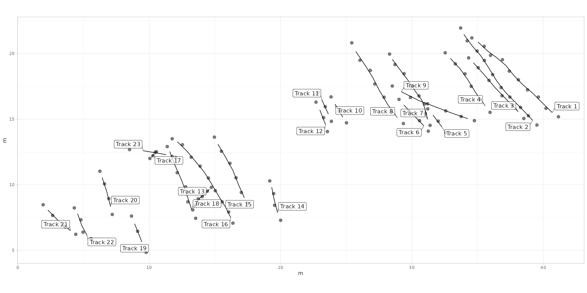

Getting Started with QuAnTeTrack
Installation
To install the QuAnTeTrack package, you can choose between installing the stable version from CRAN (recommended) or the development version from GitHub.
From CRAN (recommended)
To install the stable version from CRAN, use:
install.packages("QuAnTeTrack")From GitHub (development version)
If you want the latest development version, you will need to use the
devtools package. If you haven’t installed
devtools yet, you can do so with the following command:
install.packages("devtools")Once devtools is installed, you can install
QuAnTeTrack using:
devtools::install_github("MacroFunUV/QuAnTeTrack")If you have already installed QuAnTeTrack and want to ensure you have the latest version, you can update it with:
devtools::install_github("MacroFunUV/QuAnTeTrack", force = TRUE)Overview of the Analytical Workflow in QuAnTeTrack
The QuAnTeTrack package (Quantitative Analysis of Tetrapod Trackways) provides a structured and comprehensive workflow for analyzing trackway data, facilitating the assessment of paleoecological and paleoethological hypotheses. The workflow integrates various functions for data digitization, loading, exploratory analysis, statistical testing, simulation, similarity assessment, intersection detection, and clustering. This pipeline aims to help researchers reconstruct, compare, and interpret movement patterns and behavioral dynamics of trackmakers.
1. Data Digitization and Preprocessing
The first step involves digitizing the trackway data using the TPS software suite, particularly:
-
tpsUtil (Rohlf, 2008): For compiling and
converting
.TPSfiles.
- tpsDig (Rohlf, 2009): For digitizing footprint coordinates from trackways.
The digitization process should ensure that the footprints are consistently recorded across all tracks. This process is essential for converting raw images into structured data for further analysis.
2. Loading Data with
tps_to_track()
Once digitized, the data is loaded into QuAnTeTrack
using the tps_to_track() function. This function:
- Reads
.TPSfiles containing digitized footprints within tracks. - Extracts and organizes data into structured
trackR objects. - Handles missing footprints through interpolation if required.
- Converts raw data into real-world measurements using user-specified scales.
The resulting track R objects
contain:
-
Trajectories: Interpolated pathways derived from
midpoints between footprints.
- Footprints: Original digitized points and metadata for each track.
Additionally, if the dataset is extensive, users can utilize the
subset_track() function to isolate
specific tracks for focused analysis. This step helps avoid
computational overhead and allows customized analyses of selected
trajectories.
3. Exploratory Analysis of Track Parameters
Before testing specific hypotheses, users should perform an initial exploration of the data. This includes:
-
Visual Inspection of Tracks (
plot_track()):
Generates visualizations of trackways and footprints to inspect their overall structure. The function offers various modes:- Plotting only footprints
- Plotting only tracks
- Plotting both footprints and tracks
-
Parameter Calculation (
track_param()):
Calculates essential movement parameters, including:- Step lengths
- Turning angles
- Total distance and track length
- Sinuosity
- Straightness
Velocity Calculation (
velocity_track()):
Estimates velocities and relative stride lengths for each track, applying formulas based on empirical studies. This step is crucial for understanding speed dynamics and comparing them across different trackmakers or scenarios.Visualization of Velocity Patterns (
plot_velocity()):
Provides a detailed view of how velocity or relative stride length changes along each track. This visualization is essential for identifying patterns of acceleration, deceleration, or steady movement.-
Direction Analysis (
plot_direction()):
Provides various visualization options to explore trackway directionality:- Boxplots of step directions
- Polar histograms of step directions and average directions
- Faceted plots for comparing multiple tracks
These functions help identify general patterns and irregularities in the data before proceeding with formal statistical testing.
4. Testing Directional and Velocity Patterns
To assess whether tracks exhibit distinct movement patterns, the following statistical tests can be applied:
-
Testing Velocity (
test_velocity()):- Compares mean velocities across tracks using ANOVA, Kruskal-Wallis, or GLM.
- Performs pairwise comparisons if necessary.
- Provides visualizations of velocity distributions across different tracks.
-
Movement Mode Analysis
(
mode_velocity()):- Applies Spearman’s rank correlation to detect trends of acceleration, deceleration, or steady movement along each track.
-
Testing Direction (
test_direction()):- Compares mean directions across tracks using ANOVA, Kruskal-Wallis,
or GLM.
- Performs pairwise comparisons if necessary.
- Compares mean directions across tracks using ANOVA, Kruskal-Wallis,
or GLM.
These statistical tests allow researchers to rigorously compare and quantify movement characteristics, providing a foundation for hypothesis testing.
5. Simulation-Based Hypothesis Testing
(simulate_track())
The simulate_track() function generates
simulated trajectories based on different movement
models to test specific hypotheses. Three models are available:
-
Directed Model: Represents highly constrained,
purposeful movement along a consistent direction.
-
Constrained Model: Generates correlated random
walks, suitable for partially directed movement.
- Unconstrained Model: Represents fully random exploratory movement.
These models can be informed by geological data (e.g., sedimentology, paleogeomorphology, etc.) to test the influence of environmental constraints on movement. For example, natural barriers or features inferred from geological evidence may restrict the range of simulated paths.
The plot_sim() function overlays simulated tracks on the
actual trajectories, allowing users to visually assess how well
different models replicate observed track patterns. This visual
comparison is essential for evaluating the realism of simulated
tracks.
6. Comparing Simulated and Empirical Tracks
The QuAnTeTrack package offers several functions aimed at comparing similarity and intersection metrics between two or more actual tracks. These metrics are then evaluated against simulated datasets to determine the probability of observing such similarity or intersection counts under scenarios of independent (non-coordinated) movement.
Dynamic Time Warping (
simil_DTW_metric()):
Compares trajectories based on the optimal alignment of points, allowing for variable path lengths.Fréchet Distance (
simil_Frechet_metric()):
Measures similarity by comparing the overall shape of trajectories, focusing on global rather than local alignment.Track Intersections (
track_intersection()):
Identifies and counts unique intersections between tracks, which can indicate interaction or coordinated movement.
7. Combining Probability Metrics
(combined_prob())
The combined_prob() function integrates
p-values from multiple similarity metrics and intersection
tests to provide a more robust assessment of observed patterns. This
approach offers an overall measure of significance, enhancing the
reliability of the results by accounting for different aspects of
similarity and interaction.
8. Clustering Analysis
(cluster_track())
The cluster_track() function is an optional but powerful
step that can be applied before formal statistical
testing. It clusters tracks based on calculated movement
parameters, identifying groups of tracks with similar behaviors. The
clustering process:
- Facilitates targeted testing of specific behavioral hypotheses (e.g., gregarious movement).
- Helps filter relevant datasets before applying similarity metrics.
- Informs the selection of appropriate simulation models by identifying common movement characteristics.
Raw Data Format
QuAnTeTrack accepts raw data in the form of .TPS files containing footprint coordinates. Each track should be recorded as a different image within the .TPS file.
Requirements
-
Footprint coordinates should be digitized in
equivalent positions within each footprint.
-
Tracks with missing footprints are acceptable and
will be interpolated as needed by the package
functions.
- It is recommended to digitize the coordinates using
the TPS software suite, particularly:
-
tpsUtil (Rohlf, 2008) - for file
manipulation and data conversion.
- tpsDig (Rohlf, 2009) - for digitizing landmarks and outlines.
-
tpsUtil (Rohlf, 2008) - for file
manipulation and data conversion.
This vignette demonstrates how to load, process, and analyze
trackway data using the QuAnTeTrack package.
We will walk through the Paluxy River and the
Mount Tom datasets, representing dinosaur tracks from
the Paluxy River site (Farlow et al., 2012) and the Mount Tom
site (Ostrom, 1972), respectively. Examples of
.tps files of these datasets can be downloaded here:
Loading and Converting Data
The tps_to_track() function is an
essential component of the QuAnTeTrack package,
designed to transform raw .TPS files
containing digitized trackway data into structured
track R objects. This tool is particularly
useful for reconstructing trackways from footprints digitized using the
TPS software suite, such as tpsUtil
and tpsDig. The function reads the raw
.TPS files, extracts the coordinate data,
and processes it to generate track R
objects that are compatible with the analytical tools provided
by QuAnTeTrack.
The tps_to_track() function reads
.TPS files where each track is represented
by a series of (x, y) coordinates stored as separate
images. These data points are then processed to generate
trajectory coordinates by calculating the
midpoints between consecutive footprints. These
trajectories serve as reconstructed pathways, allowing users to analyze
overall movement patterns. When missing footprints are encountered, the
function can interpolate their positions based on the locations of
adjacent footprints and the specified side (left or right) of the
initial footprint.
Several arguments are provided to customize data handling. The
file argument specifies the path to the
.TPS file, while the scale
argument allows users to define a scale factor (in meters per
pixel) to convert coordinates to real-world measurements. To
account for missing footprints, the
missing argument specifies whether
interpolation is required, while the NAs
argument provides a matrix detailing which footprints need
interpolation. Additionally, the R.L.side
argument identifies whether the first footprint of each track belongs to
the left or right side, which is essential when dealing
with incomplete trackways.
The function generates a track R object
consisting of two main components:
Trajectories and
Footprints. The
Trajectories element contains a list of
interpolated trajectories, where each trajectory represents a series of
midpoints calculated between consecutive footprints. The
Footprints element comprises a list of
data frames with the original footprint coordinates, associated metadata
(such as image reference and ID), and an indicator specifying whether
each footprint is actual or inferred.
The resulting track R object provides a
comprehensive framework for organizing digitized trackway data, making
it compatible with the various analytical functions within the
QuAnTeTrack package. This structured data format
enables users to perform advanced analyses such as calculating movement
parameters, testing hypotheses about trackmaker behavior, and comparing
tracks using similarity metrics. By transforming raw data into
structured objects, the tps_to_track()
function serves as a foundational step in the broader analytical
pipeline provided by QuAnTeTrack.
Examples of Usage
Here, the TPS files (PaluxyRiver.tps and
MountTom.tps) are loaded using the
system.file() function to ensure compatibility across
systems. This approach is necessary because these files are stored as
internal data within the package (specifically, in the
inst/extdata/ folder). Using system.file()
ensures that the files can be accessed regardless of the user’s
operating system or working directory, making the vignette fully
portable and reproducible. They are then converted to track
R objects using the tps_to_track() function. The
scale argument is used to set the coordinate scaling
factor. For the PaluxyRiver dataset, no footprints are
missing, so the missing argument is set to
FALSE and NAs = NULL. For the
MountTom dataset, some footprints are missing, so the
missing argument is set to TRUE, and the
missing footprints are specified using the NAs matrix.
Additionally, the R.L.side argument is provided to specify
the side of the first footprint of each track (either “R” for right or
“L” for left).
For users working with their own data, replace
system.file("extdata", "PaluxyRiver.tps", package = "QuAnTeTrack")
and
system.file("extdata", "MountTom.tps", package = "QuAnTeTrack")
with the file paths to your .TPS files (e.g.,
"C:/path/to/your/PaluxyRiver.tps" and
"C:/path/to/your/MountTom.tps").
PaluxyRiver <- tps_to_track(
system.file("extdata", "PaluxyRiver.tps", package = "QuAnTeTrack"),
scale = 0.004341493,
R.L.side = c("R", "L"),
missing = FALSE,
NAs = NULL
)
MountTom <- tps_to_track(
system.file("extdata", "MountTom.tps", package = "QuAnTeTrack"),
scale = 0.004411765,
missing = TRUE,
NAs = matrix(c(7, 3), nrow = 1, ncol = 2),
R.L.side = c(
"R", "L", "L", "L", "R", "L", "R", "R", "L", "L", "L", "L", "L",
"R", "R", "L", "R", "R", "L", "R", "R", "R", "R"
)
)Subsetting Tracks from Track Data
The subset_track() function is designed
to extract specific tracks from a larger dataset of tracks, making it
easier to focus on particular trajectories or
footprints for further analysis or visualization. This function
is particularly useful when working with extensive
datasets where only a subset of tracks is relevant to the
research question.
The function operates by taking a track R
object, which contains two elements:
Trajectories and
Footprints. Each of these elements is a
list, where each list entry corresponds to a separate
track. By specifying the desired indices through the
tracks argument, users can isolate
particular tracks of interest.
If the tracks argument is left
unspecified (NULL), the function defaults
to returning all tracks in the dataset. Otherwise, it
subsets the dataset based on the indices provided. If
any indices are outside the range of available tracks,
they are ignored with a warning message to notify the
user. This functionality ensures robustness when working with datasets
of varying sizes.
The function returns a modified track R
object with the same structure as the original, but only
containing the specified tracks. This approach maintains compatibility
with other functions that expect a track R
object, allowing for seamless integration into broader
analytical workflows.
Examples of Usage
To prepare a subset of tracks with more than three
footprints from the MountTom dataset for later
analyses, you can use the subset_track()
function. This is especially useful for focusing on a selection of
tracks of interest before applying similarity metrics, simulations, or
statistical tests.
sbMountTom <- subset_track(MountTom, tracks = c(1, 2, 3, 4, 7, 8, 9, 13, 15, 16, 18))
print(sbMountTom)#> $Trajectories
#> $Trajectories$Track_01
#> x y IMAGE ID Side time displacementTime
#> 1 40.67868 15.50294 Track 1.png 0 Medial 0.00 0.00
#> 2 39.91544 16.25515 Track 1.png 0 Medial 0.02 0.02
#> 3 39.21177 16.96103 Track 1.png 0 Medial 0.04 0.04
#> 4 38.45074 17.61838 Track 1.png 0 Medial 0.06 0.06
#> 5 37.75809 18.33088 Track 1.png 0 Medial 0.08 0.08
#> 6 37.14927 19.09632 Track 1.png 0 Medial 0.10 0.10
#> 7 36.43677 19.69853 Track 1.png 0 Medial 0.12 0.12
#> 8 35.74633 20.21030 Track 1.png 0 Medial 0.14 0.14
#> 9 35.03383 20.87427 Track 1.png 0 Medial 0.16 0.16
#> polar displacement
#> 1 40.67868+15.50294i 0.0000000+0.0000000i
#> 2 39.91544+16.25515i -0.7632353+0.7522059i
#> 3 39.21177+16.96103i -0.7036765+0.7058824i
#> 4 38.45074+17.61838i -0.7610295+0.6573530i
#> 5 37.75809+18.33088i -0.6926471+0.7125000i
#> 6 37.14927+19.09632i -0.6088236+0.7654412i
#> 7 36.43677+19.69853i -0.7125000+0.6022059i
#> 8 35.74633+20.21030i -0.6904412+0.5117647i
#> 9 35.03383+20.87427i -0.7125000+0.6639706i
#>
#> $Trajectories$Track_02
#> x y IMAGE ID Side time displacementTime
#> 1 39.18971 14.90735 Track 2.png 1 Medial 0.00 0.00
#> 2 38.56544 15.57794 Track 2.png 1 Medial 0.02 0.02
#> 3 37.86177 16.29044 Track 2.png 1 Medial 0.04 0.04
#> 4 37.12280 17.04485 Track 2.png 1 Medial 0.06 0.06
#> 5 36.46544 17.90074 Track 2.png 1 Medial 0.08 0.08
#> 6 35.83015 18.93750 Track 2.png 1 Medial 0.10 0.10
#> 7 35.24118 19.83750 Track 2.png 1 Medial 0.12 0.12
#> 8 34.58383 20.58530 Track 2.png 1 Medial 0.14 0.14
#> 9 33.95515 21.46324 Track 2.png 1 Medial 0.16 0.16
#> polar displacement
#> 1 39.18971+14.90735i 0.0000000+0.0000000i
#> 2 38.56544+15.57794i -0.6242647+0.6705883i
#> 3 37.86177+16.29044i -0.7036765+0.7125000i
#> 4 37.12280+17.04485i -0.7389706+0.7544118i
#> 5 36.46544+17.90074i -0.6573530+0.8558824i
#> 6 35.83015+18.93750i -0.6352942+1.0367648i
#> 7 35.24118+19.83750i -0.5889706+0.9000001i
#> 8 34.58383+20.58530i -0.6573530+0.7477942i
#> 9 33.95515+21.46324i -0.6286765+0.8779412i
#>
#> $Trajectories$Track_03
#> x y IMAGE ID Side time displacementTime
#> 1 38.10441 15.55147 Track 3.png 2 Medial 0.00 0.00
#> 2 37.27500 16.41618 Track 3.png 2 Medial 0.02 0.02
#> 3 36.36177 17.36912 Track 3.png 2 Medial 0.04 0.04
#> 4 35.45515 18.44118 Track 3.png 2 Medial 0.06 0.06
#> 5 34.68088 19.29927 Track 3.png 2 Medial 0.08 0.08
#> polar displacement
#> 1 38.10441+15.55147i 0.0000000+0.0000000i
#> 2 37.27500+16.41618i -0.8294118+0.8647059i
#> 3 36.36177+17.36912i -0.9132354+0.9529412i
#> 4 35.45515+18.44118i -0.9066177+1.0720589i
#> 5 34.68088+19.29927i -0.7742648+0.8580883i
#>
#> $Trajectories$Track_04
#> x y IMAGE ID Side time displacementTime
#> 1 35.58088 16.01250 Track 4.png 3 Medial 0.00 0.00
#> 2 34.86177 17.00294 Track 4.png 3 Medial 0.02 0.02
#> 3 34.27280 17.97794 Track 4.png 3 Medial 0.04 0.04
#> 4 33.67059 18.83382 Track 4.png 3 Medial 0.06 0.06
#> 5 32.91838 19.63677 Track 4.png 3 Medial 0.08 0.08
#> polar displacement
#> 1 35.58088+16.01250i 0.0000000+0.0000000i
#> 2 34.86177+17.00294i -0.7191177+0.9904412i
#> 3 34.27280+17.97794i -0.5889706+0.9750001i
#> 4 33.67059+18.83382i -0.6022059+0.8558824i
#> 5 32.91838+19.63677i -0.7522059+0.8029412i
#>
#> $Trajectories$Track_07
#> x y IMAGE ID Side time displacementTime
#> 1 31.20221 14.97574 Track 7.png 6 Medial 0.00 0.00
#> 2 30.95704 15.77970 Track 7.png 6 Medial 0.02 0.02
#> 3 30.71439 16.45250 Track 7.png 6 Medial 0.04 0.04
#> 4 30.24706 17.14191 Track 7.png 6 Medial 0.06 0.06
#> 5 29.68015 17.99118 Track 7.png 6 Medial 0.08 0.08
#> 6 29.05809 18.81397 Track 7.png 6 Medial 0.10 0.10
#> 7 28.50441 19.56177 Track 7.png 6 Medial 0.12 0.12
#> polar displacement
#> 1 31.20221+14.97574i 0.0000000+0.0000000i
#> 2 30.95704+15.77970i -0.2451729+0.8039649i
#> 3 30.71439+16.45250i -0.2426471+0.6727942i
#> 4 30.24706+17.14191i -0.4673271+0.6894175i
#> 5 29.68015+17.99118i -0.5669118+0.8492648i
#> 6 29.05809+18.81397i -0.6220589+0.8227942i
#> 7 28.50441+19.56177i -0.5536765+0.7477942i
#>
#> $Trajectories$Track_08
#> x y IMAGE ID Side time displacementTime
#> 1 28.89485 15.10809 Track 8.png 7 Medial 0.00 0.00
#> 2 28.16030 16.11177 Track 8.png 7 Medial 0.02 0.02
#> 3 27.52941 17.17500 Track 8.png 7 Medial 0.04 0.04
#> 4 27.00441 18.19853 Track 8.png 7 Medial 0.06 0.06
#> 5 26.43750 19.10515 Track 8.png 7 Medial 0.08 0.08
#> 6 25.73162 20.15515 Track 8.png 7 Medial 0.10 0.10
#> polar displacement
#> 1 28.89485+15.10809i 0.0000000+0.0000000i
#> 2 28.16030+16.11177i -0.7345589+1.0036765i
#> 3 27.52941+17.17500i -0.6308824+1.0632354i
#> 4 27.00441+18.19853i -0.5250000+1.0235295i
#> 5 26.43750+19.10515i -0.5669118+0.9066177i
#> 6 25.73162+20.15515i -0.7058824+1.0500001i
#>
#> $Trajectories$Track_09
#> x y IMAGE ID Side time displacementTime
#> 1 29.19706 17.09118 Track 9.png 8 Medial 0.00 0.00
#> 2 30.53824 16.41397 Track 9.png 8 Medial 0.02 0.02
#> 3 31.87941 15.90221 Track 9.png 8 Medial 0.04 0.04
#> 4 33.15883 15.41691 Track 9.png 8 Medial 0.06 0.06
#> 5 34.25074 15.04412 Track 9.png 8 Medial 0.08 0.08
#> polar displacement
#> 1 29.19706+17.09118i 0.000000+0.0000000i
#> 2 30.53824+16.41397i 1.341177-0.6772059i
#> 3 31.87941+15.90221i 1.341177-0.5117647i
#> 4 33.15883+15.41691i 1.279412-0.4852941i
#> 5 34.25074+15.04412i 1.091912-0.3727941i
#>
#> $Trajectories$Track_13
#> x y IMAGE ID Side time displacementTime
#> 1 14.57868 9.652942 Track 13.png 12 Medial 0.00 0.00
#> 2 14.23456 9.302207 Track 13.png 12 Medial 0.02 0.02
#> 3 13.88824 9.011030 Track 13.png 12 Medial 0.04 0.04
#> 4 13.63015 8.682354 Track 13.png 12 Medial 0.06 0.06
#> 5 13.42280 8.261030 Track 13.png 12 Medial 0.08 0.08
#> polar displacement
#> 1 14.57868+9.652942i 0.0000000+0.0000000i
#> 2 14.23456+9.302207i -0.3441177-0.3507353i
#> 3 13.88824+9.011030i -0.3463236-0.2911765i
#> 4 13.63015+8.682354i -0.2580883-0.3286765i
#> 5 13.42280+8.261030i -0.2073530-0.4213236i
#>
#> $Trajectories$Track_15
#> x y IMAGE ID Side time displacementTime
#> 1 17.24780 9.004412 Track 15.png 14 Medial 0.00 0.00
#> 2 16.81324 9.968383 Track 15.png 14 Medial 0.02 0.02
#> 3 16.37868 11.082354 Track 15.png 14 Medial 0.04 0.04
#> 4 15.82059 12.092648 Track 15.png 14 Medial 0.06 0.06
#> 5 15.22941 13.089707 Track 15.png 14 Medial 0.08 0.08
#> polar displacement
#> 1 17.24780+ 9.004412i 0.0000000+0.0000000i
#> 2 16.81324+ 9.968383i -0.4345589+0.9639707i
#> 3 16.37868+11.082354i -0.4345589+1.1139707i
#> 4 15.82059+12.092648i -0.5580883+1.0102942i
#> 5 15.22941+13.089707i -0.5911765+0.9970589i
#>
#> $Trajectories$Track_16
#> x y IMAGE ID Side time displacementTime
#> 1 16.21103 7.497795 Track 16.png 15 Medial 0.00 0.00
#> 2 15.80515 8.309559 Track 16.png 15 Medial 0.02 0.02
#> 3 15.29559 9.121324 Track 16.png 15 Medial 0.04 0.04
#> 4 14.77059 10.027942 Track 16.png 15 Medial 0.06 0.06
#> 5 14.19485 10.963236 Track 16.png 15 Medial 0.08 0.08
#> 6 13.53971 11.757354 Track 16.png 15 Medial 0.10 0.10
#> 7 12.86471 12.573530 Track 16.png 15 Medial 0.12 0.12
#> 8 12.14118 13.277207 Track 16.png 15 Medial 0.14 0.14
#> polar displacement
#> 1 16.21103+ 7.497795i 0.0000000+0.0000000i
#> 2 15.80515+ 8.309559i -0.4058824+0.8117648i
#> 3 15.29559+ 9.121324i -0.5095589+0.8117648i
#> 4 14.77059+10.027942i -0.5250000+0.9066177i
#> 5 14.19485+10.963236i -0.5757353+0.9352942i
#> 6 13.53971+11.757354i -0.6551471+0.7941177i
#> 7 12.86471+12.573530i -0.6750000+0.8161765i
#> 8 12.14118+13.277207i -0.7235295+0.7036765i
#>
#> $Trajectories$Track_18
#> x y IMAGE ID Side time displacementTime
#> 1 13.24191 8.069118 Track 18.png 17 Medial 0.00 0.00
#> 2 12.85809 9.266912 Track 18.png 17 Medial 0.02 0.02
#> 3 12.45221 10.378677 Track 18.png 17 Medial 0.04 0.04
#> 4 11.94265 11.536765 Track 18.png 17 Medial 0.06 0.06
#> 5 11.56324 12.531618 Track 18.png 17 Medial 0.08 0.08
#> polar displacement
#> 1 13.24191+ 8.069118i 0.0000000+0.000000i
#> 2 12.85809+ 9.266912i -0.3838236+1.197794i
#> 3 12.45221+10.378677i -0.4058824+1.111765i
#> 4 11.94265+11.536765i -0.5095589+1.158088i
#> 5 11.56324+12.531618i -0.3794118+0.994853i
#>
#>
#> $Footprints
#> $Footprints[[1]]
#> X Y IMAGE ID Side missing
#> 1 41.15294 15.18088 Track 1.png 0 R Actual
#> 2 40.20441 15.82500 Track 1.png 0 L Actual
#> 3 39.62647 16.68530 Track 1.png 0 R Actual
#> 4 38.79706 17.23677 Track 1.png 0 L Actual
#> 5 38.10441 18.00000 Track 1.png 0 R Actual
#> 6 37.41177 18.66177 Track 1.png 0 L Actual
#> 7 36.88677 19.53088 Track 1.png 0 R Actual
#> 8 35.98677 19.86618 Track 1.png 0 L Actual
#> 9 35.50588 20.55441 Track 1.png 0 R Actual
#> 10 34.56177 21.19412 Track 1.png 0 L Actual
#>
#> $Footprints[[2]]
#> X Y IMAGE ID Side missing
#> 1 39.51618 14.55441 Track 2.png 1 L Actual
#> 2 38.86324 15.26030 Track 2.png 1 R Actual
#> 3 38.26765 15.89559 Track 2.png 1 L Actual
#> 4 37.45588 16.68530 Track 2.png 1 R Actual
#> 5 36.78971 17.40441 Track 2.png 1 L Actual
#> 6 36.14118 18.39706 Track 2.png 1 R Actual
#> 7 35.51912 19.47794 Track 2.png 1 L Actual
#> 8 34.96324 20.19706 Track 2.png 1 R Actual
#> 9 34.20441 20.97353 Track 2.png 1 L Actual
#> 10 33.70588 21.95294 Track 2.png 1 R Actual
#>
#> $Footprints[[3]]
#> X Y IMAGE ID Side missing
#> 1 38.51912 15.05294 Track 3.png 2 L Actual
#> 2 37.68971 16.05000 Track 3.png 2 R Actual
#> 3 36.86030 16.78235 Track 3.png 2 L Actual
#> 4 35.86324 17.95588 Track 3.png 2 R Actual
#> 5 35.04706 18.92647 Track 3.png 2 L Actual
#> 6 34.31471 19.67206 Track 3.png 2 R Actual
#>
#> $Footprints[[4]]
#> X Y IMAGE ID Side missing
#> 1 35.94706 15.52059 Track 4.png 3 L Actual
#> 2 35.21471 16.50441 Track 4.png 3 R Actual
#> 3 34.50883 17.50147 Track 4.png 3 L Actual
#> 4 34.03677 18.45441 Track 4.png 3 R Actual
#> 5 33.30441 19.21324 Track 4.png 3 L Actual
#> 6 32.53236 20.06030 Track 4.png 3 R Actual
#>
#> $Footprints[[5]]
#> X Y IMAGE ID Side missing
#> 1 31.38088 14.52794 Track 7.png 6 R Actual
#> 2 31.02353 15.42353 Track 7.png 6 L Actual
#> 3 30.89054 16.13587 Track 7.png 6 R Inferred
#> 4 30.53824 16.76912 Track 7.png 6 L Actual
#> 5 29.95588 17.51471 Track 7.png 6 R Actual
#> 6 29.40441 18.46765 Track 7.png 6 L Actual
#> 7 28.71177 19.16030 Track 7.png 6 R Actual
#> 8 28.29706 19.96324 Track 7.png 6 L Actual
#>
#> $Footprints[[6]]
#> X Y IMAGE ID Side missing
#> 1 29.35147 14.66471 Track 8.png 7 R Actual
#> 2 28.43824 15.55147 Track 8.png 7 L Actual
#> 3 27.88235 16.67206 Track 8.png 7 R Actual
#> 4 27.17647 17.67794 Track 8.png 7 L Actual
#> 5 26.83235 18.71912 Track 8.png 7 R Actual
#> 6 26.04265 19.49118 Track 8.png 7 L Actual
#> 7 25.42059 20.81912 Track 8.png 7 R Actual
#>
#> $Footprints[[7]]
#> X Y IMAGE ID Side missing
#> 1 28.50441 17.52794 Track 9.png 8 L Actual
#> 2 29.88971 16.65441 Track 9.png 8 R Actual
#> 3 31.18677 16.17353 Track 9.png 8 L Actual
#> 4 32.57206 15.63088 Track 9.png 8 R Actual
#> 5 33.74559 15.20294 Track 9.png 8 L Actual
#> 6 34.75588 14.88530 Track 9.png 8 R Actual
#>
#> $Footprints[[8]]
#> X Y IMAGE ID Side missing
#> 1 14.73088 9.798530 Track 13.png 12 L Actual
#> 2 14.42647 9.507354 Track 13.png 12 R Actual
#> 3 14.04265 9.097059 Track 13.png 12 L Actual
#> 4 13.73382 8.925001 Track 13.png 12 R Actual
#> 5 13.52647 8.439706 Track 13.png 12 L Actual
#> 6 13.31912 8.082353 Track 13.png 12 R Actual
#>
#> $Footprints[[9]]
#> X Y IMAGE ID Side missing
#> 1 17.47941 8.602942 Track 15.png 14 R Actual
#> 2 17.01618 9.405883 Track 15.png 14 L Actual
#> 3 16.61030 10.530883 Track 15.png 14 R Actual
#> 4 16.14706 11.633824 Track 15.png 14 L Actual
#> 5 15.49412 12.551471 Track 15.png 14 R Actual
#> 6 14.96471 13.627942 Track 15.png 14 L Actual
#>
#> $Footprints[[10]]
#> X Y IMAGE ID Side missing
#> 1 16.37206 7.072059 Track 16.png 15 L Actual
#> 2 16.05000 7.923530 Track 16.png 15 R Actual
#> 3 15.56030 8.695589 Track 16.png 15 L Actual
#> 4 15.03088 9.547059 Track 16.png 15 R Actual
#> 5 14.51030 10.508824 Track 16.png 15 L Actual
#> 6 13.87941 11.417648 Track 16.png 15 R Actual
#> 7 13.20000 12.097060 Track 16.png 15 L Actual
#> 8 12.52941 13.050001 Track 16.png 15 R Actual
#> 9 11.75294 13.504413 Track 16.png 15 L Actual
#>
#> $Footprints[[11]]
#> X Y IMAGE ID Side missing
#> 1 13.53971 7.442648 Track 18.png 17 R Actual
#> 2 12.94412 8.695589 Track 18.png 17 L Actual
#> 3 12.77206 9.838236 Track 18.png 17 R Actual
#> 4 12.13235 10.919118 Track 18.png 17 L Actual
#> 5 11.75294 12.154413 Track 18.png 17 R Actual
#> 6 11.37353 12.908824 Track 18.png 17 L ActualPlotting Tracks
The plot_track() function is a
versatile tool designed to visualize track and footprint
data from a track R object in
various ways, providing a flexible approach to examining and presenting
trackway datasets. This function generates customizable plots using the
ggplot2 package, allowing users to inspect
individual tracks, footprints, or a combination of both. By adjusting
various plotting parameters, users can tailor their visualizations to
highlight specific aspects of the dataset, such as individual
track paths, footprint shapes, and
colors.
The plot_track() function allows users
to choose between three plotting modes: plotting only the
footprints, only the interpolated
trackways, or a combination of both. This is
controlled by the plot argument, which can
be set to "Footprints",
"Tracks", or
"FootprintsTracks" (default). The
footprints and tracks are plotted using different layers, with
footprints represented by points and tracks represented
by lines.
Additional customization options include changing
colors, sizes,
shapes, and transparency of the
plotted elements. Users can provide a vector of colors via the
colours argument, which allows different
tracks to be plotted in different colors. The
cex.f and
cex.t arguments control the sizes of
footprint points and track lines, respectively. The
shape.f argument allows users to specify
the shapes of footprint points, while the
alpha.f,
alpha.t, and
alpha.l arguments control the transparency
of footprints, track lines, and labels, respectively.
The plot_track() function also supports
the addition of labels to individual tracks. If the
plot.labels argument is set to
TRUE, labels are displayed at the start of
each track, with the label text determined by the
labels argument. If labels are not
provided, the function automatically generates labels based on track
names in the original TPS file. Users can adjust the label size using
the cex.l argument and control the padding
around the labels with the box.p
argument.
The plot_track() function returns a
ggplot object, which can be further
customized using additional ggplot2
functions. This allows users to enhance their plots with additional
layers, themes, and annotations as needed.
The function is especially useful for comparing multiple trackways at once, providing a comprehensive view of track distribution, direction, and spacing. It also allows users to produce clean visualizations suitable for presentation or publication.
Examples of Usage
By default, plot_track() displays both
footprints and interpolated trajectories. This is useful for getting a
general overview of the track and its corresponding interpolated
pathways.
plot_track(PaluxyRiver)
plot_track(MountTom)
To visualize only the footprint data without the interpolated
trajectories, use the plot = "Footprints" argument. This is
particularly useful when you want to inspect the original footprint
positions without the influence of interpolated tracks.
plot_track(PaluxyRiver, plot = "Footprints")
plot_track(MountTom, plot = "Footprints")
If you want to focus on the interpolated trackways without displaying
the footprints, use the plot = "Tracks" argument. This
visualization helps analyze the continuity and pattern of movement.
plot_track(PaluxyRiver, plot = "Tracks")
plot_track(MountTom, plot = "Tracks")The plot_track() function allows
flexible customization to improve the clarity and presentation of
trackway data. Users can label tracks, change footprint shapes, adjust
colors, and control label size and transparency.
In this first example, tracks from the Mount Tom
dataset are labeled using paste() to generate names like
"Track 1", "Track 2", etc. Labels are enlarged
with cex.l = 4, given padding using
box.p = 0.3, and made semi-transparent
with alpha.l = 0.7.
labels <- paste("Track", seq_along(MountTom[[1]]))
plot_track(MountTom, plot.labels = TRUE, labels = labels, cex.l = 4, box.p = 0.3, alpha.l = 0.7)
In the second example, we plot only footprints from
the Paluxy River dataset, using
colours = c("red", "orange") to
distinguish tracks and shape.f = c(15, 18)
to assign different shapes to footprints—useful for visually comparing
trackmakers.
plot_track(PaluxyRiver, plot = "Footprints", colours = c("red", "orange"), shape.f = c(15, 18))Extracting Track Parameters
The track_param() function is designed
to compute and display various parameters related to the
movement patterns of tracks from a
track R object. This function is essential
for extracting detailed information about the structure of
individual tracks and their spatial
relationships, providing key metrics that can be used for
further analysis, comparison, and visualization. The
track_param() function utilizes several
helper functions from the trajr package,
which is commonly applied in animal movement
analysis.
The track_param() function works by
iterating over each trajectory within the provided track data and
computing a set of movement-related parameters. These
include turning angles, step lengths,
total distances covered, track
lengths, and measures of sinuosity and
straightness. Such parameters are crucial for understanding the
locomotor patterns of trackmakers and assessing their
movement efficiency.
The turning angles are calculated using the
trajr::TrajAngles() function, providing a
measure of directional changes at each step. The
mean turning angle and standard
deviation are also calculated to summarize overall turning
behavior. The distance covered by the track is obtained
using the trajr::TrajDistance() function,
which measures the total straight-line distance between
the start and end points of the track. The track length
is calculated using the
trajr::TrajLength() function, which sums
the distances between all consecutive points in the track. The
step lengths, representing the distances between
consecutive points, are calculated with
trajr::TrajStepLengths(). The function
also computes the mean and standard deviation of these step
lengths. The sinuosity of the track is
calculated using the
trajr::TrajSinuosity2() function, which
quantifies how much a path deviates from a straight line. This measure
of sinuosity is based on the method described by Benhamou
(2004), which refines previous methods to provide more accurate
estimates of tortuosity for paths with varying turning angles and step
lengths. The straightness index is calculated with
trajr::TrajStraightness(), defined as the
ratio between the beeline distance (start to end) and the total path
length. This measure is based on the work of Batschelet (1981)
and provides insight into how direct or meandering the movement of the
trackmaker was.
The calculation of sinuosity is based on the
formula:
where:
- is the mean step length (in meters),
- is the mean cosine of turning angles (in radians), and
- is the coefficient of variation of the step length (in meters).
The straightness index is calculated as the ratio , where is the beeline distance between the first and last points of the trajectory, and is the total path length. This index is particularly useful for comparing the efficiency of directed walks, but it is not suitable for random trajectories, where the index tends towards zero with increasing steps.
The track_param() function returns a
list of lists, where each sublist contains the
computed parameters for a corresponding track. The
parameters include: turning angles, mean
turning angle, standard deviation of turning
angles, distance, length,
step lengths, mean step length,
standard deviation of step length,
sinuosity and straightness.
The reference direction for calculating angles is considered to be along the positive x-axis, with angles measured counterclockwise. The computed parameters are returned in a structured format, allowing users to further process or visualize the data as needed.
The track_param() function provides
valuable insights into the structure and efficiency of
trackmaker movements, making it a crucial tool for analyzing
fossil trackways.
Examples of Usage
The track_param() function extracts
movement parameters such as turning angles, step lengths, distances,
track lengths, sinuosity, and straightness from
track R objects. The examples below
calculate these parameters for the Paluxy River and
Mount Tom datasets.
params_paluxy <- track_param(PaluxyRiver)
params_mount <- track_param(MountTom)Calculating Velocities and Relative Stride Lengths
The velocity_track() function
calculates the velocities and relative stride
lengths for each step within a series of tracks. It requires a
track R object as input, which contains
both trajectories and footprints, and uses the
height at the hip, H, for each track maker
to estimate speed. The H argument should be supplied as a
numeric value representing the hip height in meters. If the hip height
is unknown, it must be estimated from skeletal proportions or other
anatomical information. The accuracy of velocity calculations depends
heavily on providing a realistic value for this parameter. The function
supports two calculation methods: Method A
(Alexander, 1976) and Method B (Ruiz &
Torices, 2013), which are specified via the method
argument. By default, Method A is applied to all tracks
if no method is specified. The gravitational
acceleration, G, is set to 9.8
m/s2 by default.
This function works by first extracting the track data and then calculating the Euclidean distance between consecutive footprints to determine the stride length. For each step, the velocity is calculated using one of the two methods.
Method A applies the formula (Alexander, 1976):
where is the velocity (m/s), is gravitational acceleration (m/s2), is stride length (m), and is the hip height (m). This method is based on empirical studies that model the relationship between stride length, body size, and speed for general terrestrial vertebrates. The coefficients , , and have been derived from studies focused on scaling relationships in bipedal and quadrupedal animals.
Method B follows a similar approach but with a coefficient of instead of , which provides a refinement for bipedal locomotion. The formula is (Ruiz & Torices, 2013):
The relative stride length is calculated as the ratio between stride length and hip height (), which allows distinguishing between different gaits according to Thulborn & Wade (1984). The classification is as follows:
-
Walk: Relative stride
(locomotor performance equivalent to walking in mammals).
-
Trot: Relative stride
(locomotor performance equivalent to trotting or racking in
mammals).
- Run: Relative stride (locomotor performance equivalent to cantering, galloping, or sprinting in mammals).
The function returns a track
velocity object, which is structured as a
list of lists, with each list representing an
individual track. For each track, the output includes various metrics
that describe the calculated velocities and relative stride lengths.
Specifically, it provides a vector of calculated velocities for each
step, referred to as Step_velocities,
measured in meters per second (m/s). Additionally, the
function calculates the Mean_velocity,
which represents the average speed across all steps, as well as the
Standard_deviation_velocity, which
quantifies the variation in velocity measurements. The
Maximum_velocity and
Minimum_velocity indicate the highest and
lowest calculated velocities, respectively. In terms of relative stride
lengths, the function also provides a vector of calculated values known
as Step_relative_stride. The average of
these values is captured by the
Mean_relative_stride, while their
variation is described by the
Standard_deviation_relative_stride.
Moreover, the highest and lowest calculated relative stride lengths are
denoted as Maximum_relative_stride and
Minimum_relative_stride, respectively.
This comprehensive output allows users to thoroughly assess the speed
and locomotion style of the track-makers under study.
The function is particularly useful for estimating the speed of ancient track-makers from their footprints and evaluating their locomotion style (walking, trotting, or running).
Examples of Usage
Calculating velocities for the Paluxy River dataset
using Method A for both tracks. The hip heights
(H_paluxyriver) are provided for each trackmaker.
H_paluxyriver <- c(3.472, 2.200)
velocity_paluxyriver <- velocity_track(PaluxyRiver, H = H_paluxyriver)Calculating velocities for the Mount Tom dataset
using Method A for all tracks. Multiple hip heights
(H_mounttom) are specified, corresponding to each track in
the dataset.
H_mounttom <- c(
1.380, 1.404, 1.320, 1.736, 1.364, 1.432, 1.508, 1.768, 1.600,
1.848, 1.532, 1.532, 0.760, 1.532, 1.688, 1.620, 0.636, 1.784, 1.676, 1.872,
1.648, 1.760, 1.612
)
velocity_mounttom <- velocity_track(MountTom, H = H_mounttom)Comparing velocities for the Paluxy River dataset using different methods: Method A for the sauropod trackway and Method B for the theropod trackway. This demonstrates how to apply distinct calculation methods to different trackmakers within the same dataset.
H_paluxyriver <- c(3.472, 2.200)
Method_paluxyriver <- c("A", "B")
velocity_paluxyriver_diff <- velocity_track(PaluxyRiver, H = H_paluxyriver, method = Method_paluxyriver)Plotting Velocity Data
The plot_velocity() function provides a
powerful visualization tool for examining trajectories colored by either
velocity or relative stride length. By
applying color gradients, it highlights how these parameters change
along the paths of various tracks, providing valuable insights into
locomotor dynamics.
The function takes as inputs a track R
object and a track velocity R
object, where the latter contains the calculated velocities and
relative stride lengths for each track. The user can specify the
parameter to be visualized via the param
argument, choosing between "V" for
velocity or "RSL" for relative stride
length. If not specified, the function defaults to visualizing
velocity.
The plotting process is handled by the
ggplot2 package, using
ggplot2::geom_path() to plot the tracks
and ggplot2::scale_color_gradientn() to
apply a color gradient representing the selected parameter. Users can
customize the color palette via the
colours argument and adjust the line width
with the lwd argument.
The function also allows the user to include or exclude a legend from
the plot by setting the legend argument to
TRUE or
FALSE, respectively. This flexibility
ensures that the plots can be tailored to the user’s preferences and
presentation requirements.
The resulting plot provides a visually appealing and informative representation of how velocity or relative stride length changes along each trajectory. Such plots are particularly useful for comparing the locomotor patterns of different track makers or assessing how environmental or anatomical factors influence movement.
Examples of Usage
Plotting trajectories colored by relative stride length
(RSL) for the PaluxyRiver dataset using the
previously calculated velocity_paluxyriver_diff object.
plot_velocity(PaluxyRiver, velocity_paluxyriver_diff, param = "RSL")
Plotting trajectories colored by velocity for the
MountTom dataset using the previously calculated
velocity_mounttom object.
plot_velocity(MountTom, velocity_mounttom, param = "V")
Generating a clean visualization of relative stride length (RSL) for the PaluxyRiver dataset without displaying a legend.
plot_velocity(PaluxyRiver, velocity_paluxyriver_diff, param = "RSL", lwd = 1.5,
colours = c("purple", "orange", "pink", "gray"), legend = FALSE)
Applying custom colors and increased line width to enhance visualization of velocity patterns for the MountTom dataset.
plot_velocity(MountTom, velocity_mounttom, param = "V", lwd = 2,
colours = c("blue", "green", "yellow", "red"))Plotting Direction Data
The plot_direction() function provides
a comprehensive approach to visualizing direction data
from track R objects. It allows users to
generate various types of plots to effectively compare and examine
directionality within their datasets. The available plotting styles are
highly customizable, making this function versatile for different types
of directional analysis.
This function supports four primary plotting styles,
specified by the plot_type argument. The
"boxplot" option displays the distribution
of step directions across tracks as boxplots, providing an overview of
directionality variations by showing medians, quartiles, and potential
outliers. The "polar_steps" option
generates polar histograms that visualize the frequency
of steps within various directional bins, making it particularly useful
for examining the spread and density of step directions around a central
point and highlighting dominant movement trends. The
"polar_average" style also produces
polar histograms, but it focuses on average directions
per track rather than individual steps. This summarization approach
offers a simplified comparison of overall trends across multiple tracks.
Finally, the "faceted" option creates
faceted polar histograms where each track is displayed
separately within a grid of plots, providing a clear visual comparison
of step directions across tracks and making it especially effective for
analyzing individual trackmaker behaviors.
The plot_direction() function allows
users to customize visualizations through several
arguments. The angle_range argument
controls the width of the bins used in polar
histograms, allowing users to specify the desired
angular resolution. The
y_labels_position argument is useful for
positioning the labels of the y-axis, especially in
polar plots, to enhance clarity and presentation. Users can also provide
custom breaks for the y-axis using the
y_breaks_manual argument, which defines
where the labels should be placed for better visualization of frequency
data. This flexibility ensures that the user can tailor the
output to suit specific analytical needs, whether examining
general trends, comparing individual
tracks, or highlighting particular aspects of
directional data.
By generating high-quality visualizations as
ggplot R objects, the
plot_direction() function allows for
further customization using additional functions from the
ggplot2 package. This integration makes it
easy to enhance plots with annotations, themes, and other graphical
elements.
The function is particularly useful for analyzing trackway direction data, providing valuable insights into movement patterns, orientation preferences, and potential group behavior.
Examples of Usage
The boxplot option generates a summary
of directional data distribution, highlighting central tendency,
variability, and potential outliers across tracks.
plot_direction(PaluxyRiver, plot_type = "boxplot")
plot_direction(MountTom, plot_type = "boxplot")The polar_steps option creates a polar
histogram of individual steps radiating from a central point, revealing
the angular spread of movement and dominant directions.
plot_direction(PaluxyRiver, plot_type = "polar_steps")
plot_direction(MountTom, plot_type = "polar_steps")
The polar_average option generates a
simplified polar plot by averaging step directions for each track,
providing a general overview of dominant movement trends.
plot_direction(PaluxyRiver, plot_type = "polar_average")
plot_direction(MountTom, plot_type = "polar_average")The faceted option displays individual
step directions separately for each track using faceted panels, allowing
detailed comparison of movement patterns across multiple tracks.
plot_direction(PaluxyRiver, plot_type = "faceted")
plot_direction(MountTom, plot_type = "faceted")
Customization options include setting custom breaks on the radial
axis with y_breaks_manual and adjusting
the position of y-axis labels with
y_labels_position for better
presentation.
plot_direction(PaluxyRiver, plot_type = "polar_average", y_breaks_manual = c(1, 2))
plot_direction(PaluxyRiver, plot_type = "polar_steps", y_labels_position = -90)
Testing for Differences in Velocity
The test_velocity() function evaluates
differences in velocities across different tracks
within a track R object. It provides three
statistical methods, which can be selected using the
analysis argument:: ANOVA,
Kruskal-Wallis test, and Generalized Linear
Models (GLM), allowing users to compare velocity data and
identify significant differences between tracks. The function also
includes diagnostic tests to check assumptions of
normality and homogeneity of variances
before proceeding with the analysis. When more than two tracks are
present, it performs pairwise comparisons to identify
specific differences between tracks.
The test_velocity() function requires
that each track contains more than three footprints to
be included in the analysis. This is necessary because statistical tests
for comparing mean velocities rely on having a sufficient number of data
points to provide meaningful results. When a track contains only three
or fewer footprints, the sample size is too small to accurately estimate
mean velocity and its variability, making statistical comparisons
unreliable. By setting this threshold, the function ensures that the
results are statistically robust and meaningful.
The function accepts a track velocity R
object, which is an output of the
velocity_track() function. This object
contains calculated velocities and other related
parameters for each track, including individual step
velocities, mean velocities, and
relative stride lengths. This information serves as the
input for the statistical comparisons performed by
test_velocity().
If "ANOVA" is selected, the function
checks for normality (using the Shapiro-Wilk
test) and homogeneity of variances (using
Levene’s test). If assumptions are violated, it issues
warnings suggesting the use of
"Kruskal-Wallis" or
"GLM" instead.
"ANOVA" compares mean velocities across
tracks, and if significant differences are detected, Tukey’s
HSD is used for post-hoc pairwise comparisons.
When "Kruskal-Wallis" is chosen, the
function performs a non-parametric test that compares
median velocities across tracks. If significant
differences are detected, Dunn’s test is used for
post-hoc pairwise comparisons. If
"GLM" is specified, the function uses a
Generalized Linear Model (GLM) with a Gaussian
family to compare mean velocities across
tracks. Pairwise comparisons are conducted using the
emmeans package, which computes
differences between group means and adjusts for multiple comparisons
using Tukey’s method. This approach is useful when the
data does not meet the assumptions of ANOVA but still
requires a parametric approach.
If the argument plot = TRUE is
specified, a boxplot of velocities by track is
generated for visual comparison of velocity
distributions across tracks. The boxplot allows the user to
visually assess differences in central tendency and
variability across tracks, complementing the
statistical analyses.
The function returns a list of results that includes:
normality_results, a matrix containing the
test statistic and p-value for the Shapiro-Wilk
normality test for each track;
homogeneity_test, the result of
Levene’s test, including the p-value for
testing homogeneity of variances across tracks;
ANOVA, if selected, containing the
ANOVA table and Tukey HSD post-hoc
results; Kruskal_Wallis, if selected,
containing the Kruskal-Wallis test result and
Dunn’s test post-hoc results;
GLM, if selected, providing a summary of
the GLM fit and pairwise comparisons from the
emmeans package; and finally, the
plot if requested, displaying a
boxplot of velocities by track.
Examples of Usage
The ANOVA method is suitable for comparing mean velocities when data meet the assumptions of normality and homogeneity of variances.
test_velocity(PaluxyRiver, velocity_paluxyriver_diff, analysis = "ANOVA")#> Warning in test_velocity(PaluxyRiver, velocity_paluxyriver_diff, analysis =
#> "ANOVA"): One or more tracks do not follow a normal distribution (p-value <=
#> 0.05). Assumptions for ANOVA are not met. Consider using 'Kruskal-Wallis' or
#> 'GLM'.
#> Warning in test_velocity(PaluxyRiver, velocity_paluxyriver_diff, analysis =
#> "ANOVA"): Homogeneity of variances assumption is violated (Levene's test
#> p-value <= 0.05). Assumptions for ANOVA are not met. Consider using
#> 'Kruskal-Wallis' or 'GLM'.
#> $normality_results
#> Track 1 Track 2
#> statistic.W 0.9586486 0.91134871
#> p_value 0.3043396 0.03773134
#>
#> $homogeneity_test
#> Levene's Test for Homogeneity of Variance (center = median)
#> Df F value Pr(>F)
#> group 1 18.698 7.121e-05 ***
#> 51
#> ---
#> Signif. codes: 0 '***' 0.001 '**' 0.01 '*' 0.05 '.' 0.1 ' ' 1
#>
#> $ANOVA
#> $ANOVA$ANOVA
#> Df Sum Sq Mean Sq F value Pr(>F)
#> track 1 0.6687 0.6687 111.9 1.82e-14 ***
#> Residuals 51 0.3046 0.0060
#> ---
#> Signif. codes: 0 '***' 0.001 '**' 0.01 '*' 0.05 '.' 0.1 ' ' 1
#>
#> $ANOVA$Tukey
#> Tukey multiple comparisons of means
#> 95% family-wise confidence level
#>
#> Fit: aov(formula = vel ~ track, data = M_analysis)
#>
#> $track
#> diff lwr upr p adj
#> Track 2-Track 1 0.2256526 0.1828352 0.26847 0
test_velocity(MountTom, velocity_mounttom, analysis = "ANOVA")#> Warning in test_velocity(MountTom, velocity_mounttom, analysis = "ANOVA"): The
#> following tracks were removed from the analysis due to having 3 or fewer
#> footprints: Track 05, Track 06, Track 10, Track 11, Track 12, Track 14, Track
#> 17, Track 19, Track 20, Track 21, Track 22, Track 23.
#> $normality_results
#> Track 01 Track 02 Track 03 Track 04 Track 07 Track 08
#> statistic.W 0.9209702 0.9049639 0.8522781 0.9286605 0.9400514 0.81516913
#> p_value 0.4003329 0.2821994 0.2018271 0.5872649 0.6391828 0.08011557
#> Track 09 Track 13 Track 15 Track 16 Track 18
#> statistic.W 0.8697921 0.9420435 0.8148552 0.9692820 0.8301712
#> p_value 0.2655830 0.6804196 0.1064974 0.8923149 0.1395325
#>
#> $homogeneity_test
#> Levene's Test for Homogeneity of Variance (center = median)
#> Df F value Pr(>F)
#> group 10 1.8159 0.07787 .
#> 58
#> ---
#> Signif. codes: 0 '***' 0.001 '**' 0.01 '*' 0.05 '.' 0.1 ' ' 1
#>
#> $ANOVA
#> $ANOVA$ANOVA
#> Df Sum Sq Mean Sq F value Pr(>F)
#> track 10 10.750 1.0750 18.99 7.45e-15 ***
#> Residuals 58 3.283 0.0566
#> ---
#> Signif. codes: 0 '***' 0.001 '**' 0.01 '*' 0.05 '.' 0.1 ' ' 1
#>
#> $ANOVA$Tukey
#> Tukey multiple comparisons of means
#> 95% family-wise confidence level
#>
#> Fit: aov(formula = vel ~ track, data = M_analysis)
#>
#> $track
#> diff lwr upr p adj
#> Track 02-Track 01 0.194005116 -0.181764120 0.569774353 0.8140421
#> Track 03-Track 01 0.966158204 0.521542047 1.410774361 0.0000001
#> Track 04-Track 01 -0.058483846 -0.503100003 0.386132311 0.9999967
#> Track 07-Track 01 -0.341902830 -0.743617041 0.059811382 0.1650949
#> Track 08-Track 01 0.105284346 -0.314838432 0.525407125 0.9988034
#> Track 09-Track 01 0.663995566 0.219379409 1.108611723 0.0002729
#> Track 13-Track 01 -0.703166313 -1.147782469 -0.258550156 0.0000949
#> Track 15-Track 01 0.050096645 -0.394519511 0.494712802 0.9999992
#> Track 16-Track 01 -0.189837124 -0.577171188 0.197496939 0.8573485
#> Track 18-Track 01 -0.000824843 -0.445441000 0.443791314 1.0000000
#> Track 03-Track 02 0.772153088 0.327536931 1.216769245 0.0000140
#> Track 04-Track 02 -0.252488962 -0.697105119 0.192127195 0.7130620
#> Track 07-Track 02 -0.535907946 -0.937622158 -0.134193735 0.0017099
#> Track 08-Track 02 -0.088720770 -0.508843549 0.331402008 0.9997305
#> Track 09-Track 02 0.469990450 0.025374293 0.914606606 0.0298082
#> Track 13-Track 02 -0.897171429 -1.341787586 -0.452555272 0.0000004
#> Track 15-Track 02 -0.143908471 -0.588524628 0.300707686 0.9905449
#> Track 16-Track 02 -0.383842241 -0.771176304 0.003491823 0.0541074
#> Track 18-Track 02 -0.194829959 -0.639446116 0.249786198 0.9242930
#> Track 04-Track 03 -1.024642050 -1.528789384 -0.520494716 0.0000003
#> Track 07-Track 03 -1.308061034 -1.774810769 -0.841311299 0.0000000
#> Track 08-Track 03 -0.860873858 -1.343558182 -0.378189534 0.0000078
#> Track 09-Track 03 -0.302162638 -0.806309972 0.201984696 0.6442769
#> Track 13-Track 03 -1.669324516 -2.173471851 -1.165177182 0.0000000
#> Track 15-Track 03 -0.916061559 -1.420208893 -0.411914224 0.0000051
#> Track 16-Track 03 -1.155995328 -1.610427594 -0.701563062 0.0000000
#> Track 18-Track 03 -0.966983047 -1.471130381 -0.462835713 0.0000014
#> Track 07-Track 04 -0.283418984 -0.750168719 0.183330751 0.6265904
#> Track 08-Track 04 0.163768192 -0.318916132 0.646452516 0.9865339
#> Track 09-Track 04 0.722479412 0.218332078 1.226626746 0.0005536
#> Track 13-Track 04 -0.644682467 -1.148829801 -0.140535132 0.0031439
#> Track 15-Track 04 0.108580491 -0.395566843 0.612727826 0.9996790
#> Track 16-Track 04 -0.131353278 -0.585785544 0.323078988 0.9961010
#> Track 18-Track 04 0.057659003 -0.446488331 0.561806337 0.9999991
#> Track 08-Track 07 0.447187176 0.003706694 0.890667658 0.0464388
#> Track 09-Track 07 1.005898396 0.539148661 1.472648131 0.0000001
#> Track 13-Track 07 -0.361263483 -0.828013218 0.105486253 0.2762333
#> Track 15-Track 07 0.391999475 -0.074750260 0.858749211 0.1788423
#> Track 16-Track 07 0.152065706 -0.260486673 0.564618084 0.9755347
#> Track 18-Track 07 0.341077987 -0.125671748 0.807827722 0.3557291
#> Track 09-Track 08 0.558711220 0.076026896 1.041395544 0.0112278
#> Track 13-Track 08 -0.808450659 -1.291134983 -0.325766335 0.0000303
#> Track 15-Track 08 -0.055187701 -0.537872025 0.427496623 0.9999991
#> Track 16-Track 08 -0.295121470 -0.725619213 0.135376272 0.4499019
#> Track 18-Track 08 -0.106109189 -0.588793513 0.376575135 0.9996153
#> Track 13-Track 09 -1.367161878 -1.871309213 -0.863014544 0.0000000
#> Track 15-Track 09 -0.613898920 -1.118046255 -0.109751586 0.0060381
#> Track 16-Track 09 -0.853832690 -1.308264956 -0.399400424 0.0000023
#> Track 18-Track 09 -0.664820409 -1.168967743 -0.160673075 0.0020281
#> Track 15-Track 13 0.753262958 0.249115624 1.257410292 0.0002706
#> Track 16-Track 13 0.513329188 0.058896922 0.967761454 0.0148416
#> Track 18-Track 13 0.702341470 0.198194135 1.206488804 0.0008771
#> Track 16-Track 15 -0.239933770 -0.694366036 0.214498496 0.7928071
#> Track 18-Track 15 -0.050921488 -0.555068823 0.453225846 0.9999997
#> Track 18-Track 16 0.189012281 -0.265419985 0.643444547 0.9451623The Kruskal-Wallis test is a non-parametric method that compares median velocities, useful when normality or homogeneity of variances cannot be assumed.
test_velocity(PaluxyRiver, velocity_paluxyriver_diff, analysis = "Kruskal-Wallis")#> Warning in test_velocity(PaluxyRiver, velocity_paluxyriver_diff, analysis =
#> "Kruskal-Wallis"): One or more tracks do not follow a normal distribution
#> (p-value <= 0.05). Assumptions for ANOVA are not met. Consider using
#> 'Kruskal-Wallis' or 'GLM'.
#> Warning in test_velocity(PaluxyRiver, velocity_paluxyriver_diff, analysis =
#> "Kruskal-Wallis"): Homogeneity of variances assumption is violated (Levene's
#> test p-value <= 0.05). Assumptions for ANOVA are not met. Consider using
#> 'Kruskal-Wallis' or 'GLM'.
#> Kruskal-Wallis rank sum test
#>
#> data: x and group
#> Kruskal-Wallis chi-squared = 38.6698, df = 1, p-value = 0
#>
#>
#> Comparison of x by group
#> (No adjustment)
#> Col Mean-|
#> Row Mean | Track 1
#> ---------+-----------
#> Track 2 | -6.218503
#> | 0.0000*
#>
#> alpha = 0.05
#> Reject Ho if p <= alpha/2
#> $normality_results
#> Track 1 Track 2
#> statistic.W 0.9586486 0.91134871
#> p_value 0.3043396 0.03773134
#>
#> $homogeneity_test
#> Levene's Test for Homogeneity of Variance (center = median)
#> Df F value Pr(>F)
#> group 1 18.698 7.121e-05 ***
#> 51
#> ---
#> Signif. codes: 0 '***' 0.001 '**' 0.01 '*' 0.05 '.' 0.1 ' ' 1
#>
#> $Kruskal_Wallis
#> $Kruskal_Wallis$Kruskal_Wallis
#>
#> Kruskal-Wallis rank sum test
#>
#> data: vel by track
#> Kruskal-Wallis chi-squared = 38.67, df = 1, p-value = 5.019e-10
#>
#>
#> $Kruskal_Wallis$Dunn
#> $Kruskal_Wallis$Dunn$chi2
#> [1] 38.66978
#>
#> $Kruskal_Wallis$Dunn$Z
#> [1] -6.218503
#>
#> $Kruskal_Wallis$Dunn$P
#> [1] 2.509595e-10
#>
#> $Kruskal_Wallis$Dunn$P.adjusted
#> [1] 2.509595e-10
#>
#> $Kruskal_Wallis$Dunn$comparisons
#> [1] "Track 1 - Track 2"
test_velocity(MountTom, velocity_mounttom, analysis = "Kruskal-Wallis")#> Warning in test_velocity(MountTom, velocity_mounttom, analysis =
#> "Kruskal-Wallis"): The following tracks were removed from the analysis due to
#> having 3 or fewer footprints: Track 05, Track 06, Track 10, Track 11, Track 12,
#> Track 14, Track 17, Track 19, Track 20, Track 21, Track 22, Track 23.
#> Kruskal-Wallis rank sum test
#>
#> data: x and group
#> Kruskal-Wallis chi-squared = 47.0791, df = 10, p-value = 0
#>
#>
#> Comparison of x by group
#> (No adjustment)
#> Col Mean-|
#> Row Mean | Track 01 Track 02 Track 03 Track 04 Track 07 Track 08
#> ---------+------------------------------------------------------------------
#> Track 02 | -1.421706
#> | 0.0776
#> |
#> Track 03 | -2.691099 -1.489538
#> | 0.0036* 0.0682
#> |
#> Track 04 | 0.490554 1.692115 2.805954
#> | 0.3119 0.0453 0.0025*
#> |
#> Track 07 | 2.038004 3.367888 4.317520 1.286742
#> | 0.0208* 0.0004* 0.0000* 0.0991
#> |
#> Track 08 | -0.704116 0.567496 1.866004 -1.064720 -2.513099
#> | 0.2407 0.2852 0.0310 0.1435 0.0060*
#> |
#> Track 09 | -2.101242 -0.899681 0.520205 -2.285749 -3.755634 -1.322667
#> | 0.0178* 0.1841 0.3015 0.0111* 0.0001* 0.0930
#> |
#> Track 13 | 2.778485 3.980046 4.823720 2.017765 0.892692 3.172207
#> | 0.0027* 0.0000* 0.0000* 0.0218* 0.1860 0.0008*
#> |
#> Track 15 | -0.349544 0.852015 2.065056 -0.740898 -2.087004 0.290877
#> | 0.3633 0.1971 0.0195* 0.2294 0.0184* 0.3856
#> |
#> Track 16 | 1.476147 2.855404 3.891159 0.778231 -0.598549 2.015289
#> | 0.0700 0.0021* 0.0000* 0.2182 0.2747 0.0219*
#> |
#> Track 18 | 0.061567 1.263128 2.427623 -0.378331 -1.695386 0.669566
#> | 0.4755 0.1033 0.0076* 0.3526 0.0450 0.2516
#> Col Mean-|
#> Row Mean | Track 09 Track 13 Track 15 Track 16
#> ---------+--------------------------------------------
#> Track 13 | 4.303515
#> | 0.0000*
#> |
#> Track 15 | 1.544851 -2.758663
#> | 0.0612 0.0029*
#> |
#> Track 16 | 3.314043 -1.460277 1.600184
#> | 0.0005* 0.0721 0.0548
#> |
#> Track 18 | 1.907418 -2.396096 0.362567 -1.197952
#> | 0.0282 0.0083* 0.3585 0.1155
#>
#> alpha = 0.05
#> Reject Ho if p <= alpha/2
#> $normality_results
#> Track 01 Track 02 Track 03 Track 04 Track 07 Track 08
#> statistic.W 0.9209702 0.9049639 0.8522781 0.9286605 0.9400514 0.81516913
#> p_value 0.4003329 0.2821994 0.2018271 0.5872649 0.6391828 0.08011557
#> Track 09 Track 13 Track 15 Track 16 Track 18
#> statistic.W 0.8697921 0.9420435 0.8148552 0.9692820 0.8301712
#> p_value 0.2655830 0.6804196 0.1064974 0.8923149 0.1395325
#>
#> $homogeneity_test
#> Levene's Test for Homogeneity of Variance (center = median)
#> Df F value Pr(>F)
#> group 10 1.8159 0.07787 .
#> 58
#> ---
#> Signif. codes: 0 '***' 0.001 '**' 0.01 '*' 0.05 '.' 0.1 ' ' 1
#>
#> $Kruskal_Wallis
#> $Kruskal_Wallis$Kruskal_Wallis
#>
#> Kruskal-Wallis rank sum test
#>
#> data: vel by track
#> Kruskal-Wallis chi-squared = 47.079, df = 10, p-value = 9.135e-07
#>
#>
#> $Kruskal_Wallis$Dunn
#> $Kruskal_Wallis$Dunn$chi2
#> [1] 47.07915
#>
#> $Kruskal_Wallis$Dunn$Z
#> [1] -1.42170606 -2.69109927 -1.48953834 0.49055463 1.69211556 2.80595499
#> [7] 2.03800443 3.36788868 4.31752052 1.28674273 -0.70411605 0.56749651
#> [13] 1.86600430 -1.06472010 -2.51309940 -2.10124209 -0.89968116 0.52020514
#> [19] -2.28574985 -3.75563475 -1.32266775 2.77848552 3.98004645 4.82372037
#> [25] 2.01776539 0.89269297 3.17220731 4.30351524 -0.34954500 0.85201593
#> [31] 2.06505676 -0.74089823 -2.08700428 0.29087714 1.54485162 -2.75866361
#> [37] 1.47614746 2.85540494 3.89115946 0.77823189 -0.59854981 2.01528904
#> [43] 3.31404367 -1.46027782 1.60018468 0.06156758 1.26312851 2.42762398
#> [49] -0.37833101 -1.69538693 0.66956625 1.90741884 -2.39609639 0.36256722
#> [55] -1.19795246
#>
#> $Kruskal_Wallis$Dunn$P
#> [1] 7.755580e-02 3.560850e-03 6.817283e-02 3.118707e-01 4.531197e-02
#> [6] 2.508385e-03 2.077474e-02 3.787309e-04 7.889587e-06 9.909199e-02
#> [11] 2.406803e-01 2.851884e-01 3.102038e-02 1.435013e-01 5.983780e-03
#> [16] 1.780986e-02 1.841450e-01 3.014603e-01 1.113445e-02 8.645135e-05
#> [21] 9.297295e-02 2.730647e-03 3.445090e-05 7.045246e-07 2.180785e-02
#> [26] 1.860108e-01 7.564248e-04 8.405464e-06 3.633401e-01 1.971026e-01
#> [31] 1.945881e-02 2.293776e-01 1.844387e-02 3.855726e-01 6.119108e-02
#> [36] 2.901912e-03 6.995215e-02 2.149099e-03 4.988317e-05 2.182162e-01
#> [41] 2.747366e-01 2.193719e-02 4.597857e-04 7.210687e-02 5.477881e-02
#> [46] 4.754536e-01 1.032715e-01 7.599046e-03 3.525924e-01 4.500102e-02
#> [51] 2.515672e-01 2.823319e-02 8.285366e-03 3.584641e-01 1.154678e-01
#>
#> $Kruskal_Wallis$Dunn$P.adjusted
#> [1] 7.755580e-02 3.560850e-03 6.817283e-02 3.118707e-01 4.531197e-02
#> [6] 2.508385e-03 2.077474e-02 3.787309e-04 7.889587e-06 9.909199e-02
#> [11] 2.406803e-01 2.851884e-01 3.102038e-02 1.435013e-01 5.983780e-03
#> [16] 1.780986e-02 1.841450e-01 3.014603e-01 1.113445e-02 8.645135e-05
#> [21] 9.297295e-02 2.730647e-03 3.445090e-05 7.045246e-07 2.180785e-02
#> [26] 1.860108e-01 7.564248e-04 8.405464e-06 3.633401e-01 1.971026e-01
#> [31] 1.945881e-02 2.293776e-01 1.844387e-02 3.855726e-01 6.119108e-02
#> [36] 2.901912e-03 6.995215e-02 2.149099e-03 4.988317e-05 2.182162e-01
#> [41] 2.747366e-01 2.193719e-02 4.597857e-04 7.210687e-02 5.477881e-02
#> [46] 4.754536e-01 1.032715e-01 7.599046e-03 3.525924e-01 4.500102e-02
#> [51] 2.515672e-01 2.823319e-02 8.285366e-03 3.584641e-01 1.154678e-01
#>
#> $Kruskal_Wallis$Dunn$comparisons
#> [1] "Track 01 - Track 02" "Track 01 - Track 03" "Track 02 - Track 03"
#> [4] "Track 01 - Track 04" "Track 02 - Track 04" "Track 03 - Track 04"
#> [7] "Track 01 - Track 07" "Track 02 - Track 07" "Track 03 - Track 07"
#> [10] "Track 04 - Track 07" "Track 01 - Track 08" "Track 02 - Track 08"
#> [13] "Track 03 - Track 08" "Track 04 - Track 08" "Track 07 - Track 08"
#> [16] "Track 01 - Track 09" "Track 02 - Track 09" "Track 03 - Track 09"
#> [19] "Track 04 - Track 09" "Track 07 - Track 09" "Track 08 - Track 09"
#> [22] "Track 01 - Track 13" "Track 02 - Track 13" "Track 03 - Track 13"
#> [25] "Track 04 - Track 13" "Track 07 - Track 13" "Track 08 - Track 13"
#> [28] "Track 09 - Track 13" "Track 01 - Track 15" "Track 02 - Track 15"
#> [31] "Track 03 - Track 15" "Track 04 - Track 15" "Track 07 - Track 15"
#> [34] "Track 08 - Track 15" "Track 09 - Track 15" "Track 13 - Track 15"
#> [37] "Track 01 - Track 16" "Track 02 - Track 16" "Track 03 - Track 16"
#> [40] "Track 04 - Track 16" "Track 07 - Track 16" "Track 08 - Track 16"
#> [43] "Track 09 - Track 16" "Track 13 - Track 16" "Track 15 - Track 16"
#> [46] "Track 01 - Track 18" "Track 02 - Track 18" "Track 03 - Track 18"
#> [49] "Track 04 - Track 18" "Track 07 - Track 18" "Track 08 - Track 18"
#> [52] "Track 09 - Track 18" "Track 13 - Track 18" "Track 15 - Track 18"
#> [55] "Track 16 - Track 18"The GLM approach offers a flexible alternative when
data do not meet the assumptions required for ANOVA. This method fits a
linear model with a Gaussian family and performs pairwise comparisons
using emmeans.
test_velocity(PaluxyRiver, velocity_paluxyriver_diff, analysis = "GLM")#> Warning in test_velocity(PaluxyRiver, velocity_paluxyriver_diff, analysis =
#> "GLM"): One or more tracks do not follow a normal distribution (p-value <=
#> 0.05). Assumptions for ANOVA are not met. Consider using 'Kruskal-Wallis' or
#> 'GLM'.
#> Warning in test_velocity(PaluxyRiver, velocity_paluxyriver_diff, analysis =
#> "GLM"): Homogeneity of variances assumption is violated (Levene's test p-value
#> <= 0.05). Assumptions for ANOVA are not met. Consider using 'Kruskal-Wallis' or
#> 'GLM'.
#> $normality_results
#> Track 1 Track 2
#> statistic.W 0.9586486 0.91134871
#> p_value 0.3043396 0.03773134
#>
#> $homogeneity_test
#> Levene's Test for Homogeneity of Variance (center = median)
#> Df F value Pr(>F)
#> group 1 18.698 7.121e-05 ***
#> 51
#> ---
#> Signif. codes: 0 '***' 0.001 '**' 0.01 '*' 0.05 '.' 0.1 ' ' 1
#>
#> $GLM
#> $GLM$GLM
#>
#> Call:
#> glm(formula = vel ~ track, family = gaussian(), data = M_analysis)
#>
#> Coefficients:
#> Estimate Std. Error t value Pr(>|t|)
#> (Intercept) 0.23808 0.01435 16.59 < 2e-16 ***
#> trackTrack 2 0.22565 0.02133 10.58 1.82e-14 ***
#> ---
#> Signif. codes: 0 '***' 0.001 '**' 0.01 '*' 0.05 '.' 0.1 ' ' 1
#>
#> (Dispersion parameter for gaussian family taken to be 0.005973464)
#>
#> Null deviance: 0.97332 on 52 degrees of freedom
#> Residual deviance: 0.30465 on 51 degrees of freedom
#> AIC: -117.01
#>
#> Number of Fisher Scoring iterations: 2
#>
#>
#> $GLM$pairwise_results
#> $emmeans
#> track emmean SE df lower.CL upper.CL
#> Track 1 0.238 0.0144 51 0.209 0.267
#> Track 2 0.464 0.0158 51 0.432 0.495
#>
#> Confidence level used: 0.95
#>
#> $contrasts
#> contrast estimate SE df t.ratio p.value
#> Track 1 - Track 2 -0.226 0.0213 51 -10.580 <0.0001
test_velocity(MountTom, velocity_mounttom, analysis = "GLM")#> Warning in test_velocity(MountTom, velocity_mounttom, analysis = "GLM"): The
#> following tracks were removed from the analysis due to having 3 or fewer
#> footprints: Track 05, Track 06, Track 10, Track 11, Track 12, Track 14, Track
#> 17, Track 19, Track 20, Track 21, Track 22, Track 23.
#> $normality_results
#> Track 01 Track 02 Track 03 Track 04 Track 07 Track 08
#> statistic.W 0.9209702 0.9049639 0.8522781 0.9286605 0.9400514 0.81516913
#> p_value 0.4003329 0.2821994 0.2018271 0.5872649 0.6391828 0.08011557
#> Track 09 Track 13 Track 15 Track 16 Track 18
#> statistic.W 0.8697921 0.9420435 0.8148552 0.9692820 0.8301712
#> p_value 0.2655830 0.6804196 0.1064974 0.8923149 0.1395325
#>
#> $homogeneity_test
#> Levene's Test for Homogeneity of Variance (center = median)
#> Df F value Pr(>F)
#> group 10 1.8159 0.07787 .
#> 58
#> ---
#> Signif. codes: 0 '***' 0.001 '**' 0.01 '*' 0.05 '.' 0.1 ' ' 1
#>
#> $GLM
#> $GLM$GLM
#>
#> Call:
#> glm(formula = vel ~ track, family = gaussian(), data = M_analysis)
#>
#> Coefficients:
#> Estimate Std. Error t value Pr(>|t|)
#> (Intercept) 1.6439628 0.0793103 20.728 < 2e-16 ***
#> trackTrack 02 0.1940051 0.1121617 1.730 0.08900 .
#> trackTrack 03 0.9661582 0.1327115 7.280 9.91e-10 ***
#> trackTrack 04 -0.0584838 0.1327115 -0.441 0.66108
#> trackTrack 07 -0.3419028 0.1199059 -2.851 0.00602 **
#> trackTrack 08 0.1052843 0.1254006 0.840 0.40459
#> trackTrack 09 0.6639956 0.1327115 5.003 5.55e-06 ***
#> trackTrack 13 -0.7031663 0.1327115 -5.298 1.89e-06 ***
#> trackTrack 15 0.0500966 0.1327115 0.377 0.70719
#> trackTrack 16 -0.1898371 0.1156136 -1.642 0.10600
#> trackTrack 18 -0.0008248 0.1327115 -0.006 0.99506
#> ---
#> Signif. codes: 0 '***' 0.001 '**' 0.01 '*' 0.05 '.' 0.1 ' ' 1
#>
#> (Dispersion parameter for gaussian family taken to be 0.05661111)
#>
#> Null deviance: 14.0337 on 68 degrees of freedom
#> Residual deviance: 3.2834 on 58 degrees of freedom
#> AIC: 9.6938
#>
#> Number of Fisher Scoring iterations: 2
#>
#>
#> $GLM$pairwise_results
#> $emmeans
#> track emmean SE df lower.CL upper.CL
#> Track 01 1.644 0.0793 58 1.485 1.80
#> Track 02 1.838 0.0793 58 1.679 2.00
#> Track 03 2.610 0.1060 58 2.397 2.82
#> Track 04 1.585 0.1060 58 1.372 1.80
#> Track 07 1.302 0.0899 58 1.122 1.48
#> Track 08 1.749 0.0971 58 1.555 1.94
#> Track 09 2.308 0.1060 58 2.095 2.52
#> Track 13 0.941 0.1060 58 0.728 1.15
#> Track 15 1.694 0.1060 58 1.481 1.91
#> Track 16 1.454 0.0841 58 1.286 1.62
#> Track 18 1.643 0.1060 58 1.430 1.86
#>
#> Confidence level used: 0.95
#>
#> $contrasts
#> contrast estimate SE df t.ratio p.value
#> Track 01 - Track 02 -0.194005 0.112 58 -1.730 0.8140
#> Track 01 - Track 03 -0.966158 0.133 58 -7.280 <0.0001
#> Track 01 - Track 04 0.058484 0.133 58 0.441 1.0000
#> Track 01 - Track 07 0.341903 0.120 58 2.851 0.1651
#> Track 01 - Track 08 -0.105284 0.125 58 -0.840 0.9988
#> Track 01 - Track 09 -0.663996 0.133 58 -5.003 0.0003
#> Track 01 - Track 13 0.703166 0.133 58 5.298 <0.0001
#> Track 01 - Track 15 -0.050097 0.133 58 -0.377 1.0000
#> Track 01 - Track 16 0.189837 0.116 58 1.642 0.8573
#> Track 01 - Track 18 0.000825 0.133 58 0.006 1.0000
#> Track 02 - Track 03 -0.772153 0.133 58 -5.818 <0.0001
#> Track 02 - Track 04 0.252489 0.133 58 1.903 0.7131
#> Track 02 - Track 07 0.535908 0.120 58 4.469 0.0017
#> Track 02 - Track 08 0.088721 0.125 58 0.707 0.9997
#> Track 02 - Track 09 -0.469990 0.133 58 -3.541 0.0298
#> Track 02 - Track 13 0.897171 0.133 58 6.760 <0.0001
#> Track 02 - Track 15 0.143908 0.133 58 1.084 0.9905
#> Track 02 - Track 16 0.383842 0.116 58 3.320 0.0541
#> Track 02 - Track 18 0.194830 0.133 58 1.468 0.9243
#> Track 03 - Track 04 1.024642 0.150 58 6.809 <0.0001
#> Track 03 - Track 07 1.308061 0.139 58 9.389 <0.0001
#> Track 03 - Track 08 0.860874 0.144 58 5.975 <0.0001
#> Track 03 - Track 09 0.302163 0.150 58 2.008 0.6443
#> Track 03 - Track 13 1.669325 0.150 58 11.093 <0.0001
#> Track 03 - Track 15 0.916062 0.150 58 6.088 <0.0001
#> Track 03 - Track 16 1.155995 0.136 58 8.522 <0.0001
#> Track 03 - Track 18 0.966983 0.150 58 6.426 <0.0001
#> Track 04 - Track 07 0.283419 0.139 58 2.034 0.6266
#> Track 04 - Track 08 -0.163768 0.144 58 -1.137 0.9865
#> Track 04 - Track 09 -0.722479 0.150 58 -4.801 0.0006
#> Track 04 - Track 13 0.644683 0.150 58 4.284 0.0031
#> Track 04 - Track 15 -0.108580 0.150 58 -0.722 0.9997
#> Track 04 - Track 16 0.131353 0.136 58 0.968 0.9961
#> Track 04 - Track 18 -0.057659 0.150 58 -0.383 1.0000
#> Track 07 - Track 08 -0.447187 0.132 58 -3.378 0.0464
#> Track 07 - Track 09 -1.005898 0.139 58 -7.220 <0.0001
#> Track 07 - Track 13 0.361264 0.139 58 2.593 0.2762
#> Track 07 - Track 15 -0.392000 0.139 58 -2.814 0.1788
#> Track 07 - Track 16 -0.152066 0.123 58 -1.235 0.9755
#> Track 07 - Track 18 -0.341078 0.139 58 -2.448 0.3557
#> Track 08 - Track 09 -0.558711 0.144 58 -3.878 0.0112
#> Track 08 - Track 13 0.808451 0.144 58 5.611 <0.0001
#> Track 08 - Track 15 0.055188 0.144 58 0.383 1.0000
#> Track 08 - Track 16 0.295121 0.128 58 2.297 0.4499
#> Track 08 - Track 18 0.106109 0.144 58 0.736 0.9996
#> Track 09 - Track 13 1.367162 0.150 58 9.085 <0.0001
#> Track 09 - Track 15 0.613899 0.150 58 4.080 0.0060
#> Track 09 - Track 16 0.853833 0.136 58 6.295 <0.0001
#> Track 09 - Track 18 0.664820 0.150 58 4.418 0.0020
#> Track 13 - Track 15 -0.753263 0.150 58 -5.006 0.0003
#> Track 13 - Track 16 -0.513329 0.136 58 -3.784 0.0148
#> Track 13 - Track 18 -0.702341 0.150 58 -4.667 0.0009
#> Track 15 - Track 16 0.239934 0.136 58 1.769 0.7928
#> Track 15 - Track 18 0.050922 0.150 58 0.338 1.0000
#> Track 16 - Track 18 -0.189012 0.136 58 -1.393 0.9452
#>
#> P value adjustment: tukey method for comparing a family of 11 estimatesTesting for Acceleration, Deceleration, or Steady Movement along Trajectories
The mode_velocity() function evaluates
whether a track maker is accelerating,
decelerating, or maintaining a steady
speed along its trajectory by applying Spearman’s rank
correlation test. This test is particularly suitable for
analyzing trends in velocity because it does not assume normality or
linearity in the relationship between step number and velocity. Instead,
it detects monotonic relationships based on ranks,
making it robust to outliers and effective for
identifying general trends.
The function accepts a track velocity R
object and processes each trajectory separately. For each
trajectory, the function calculates the Spearman correlation
coefficient and its associated p-value, comparing
velocity values to their corresponding step
numbers. If the p-value is less than
0.05, the trend is classified as
“acceleration” if the correlation coefficient is
positive or “deceleration” if it is negative. If the
p-value is greater than or equal to 0.05, the
trend is labeled as “steady,” indicating no significant
monotonic relationship between velocity and step
number. This approach allows the detection of gradual changes
in velocity over the course of a track, which may reflect shifts in
locomotor performance or behavior.
Trajectories with fewer than three steps are considered insufficient for reliable statistical analysis, and the function returns a message indicating that the data is inadequate for correlation analysis. This is because the calculation of a meaningful correlation requires a minimum of three data points.
The mode_velocity() function provides a
straightforward way to classify velocity trends based
on statistical significance, making it a useful tool for examining how
track makers modulate their speed along their paths.
However, it only identifies monotonic trends and may
not detect more complex, non-monotonic changes in
speed. Furthermore, the classification is
qualitative, providing information about the general
nature of the trend rather than quantifying the rate of change.
This approach draws from established non-parametric statistical techniques for measuring association between variables. The robustness of the method to non-normal data and its resistance to outliers makes it well-suited for paleontological and biomechanical applications where data quality and quantity can be limited.
Examples of Usage
The velocity_paluxyriver_diff object
contains calculated velocities for the PaluxyRiver
dataset with different methods applied to the sauropod (Method
A) and theropod (Method B).
mode_velocity(velocity_paluxyriver_diff)#> $Track_1
#> $Track_1$correlation
#>
#> Spearman's rank correlation rho
#>
#> data: velocity and steps
#> S = 3178, p-value = 0.5088
#> alternative hypothesis: true rho is not equal to 0
#> sample estimates:
#> rho
#> 0.1302682
#>
#>
#> $Track_1$trend
#> [1] "Steady"
#>
#>
#> $Track_2
#> $Track_2$correlation
#>
#> Spearman's rank correlation rho
#>
#> data: velocity and steps
#> S = 1426, p-value = 0.1711
#> alternative hypothesis: true rho is not equal to 0
#> sample estimates:
#> rho
#> 0.2954545
#>
#>
#> $Track_2$trend
#> [1] "Steady"The velocity_mounttom object contains
calculated velocities for the MountTom dataset.
mode_velocity(velocity_mounttom)#> $Track_01
#> $Track_01$correlation
#>
#> Spearman's rank correlation rho
#>
#> data: velocity and steps
#> S = 160, p-value = 0.002008
#> alternative hypothesis: true rho is not equal to 0
#> sample estimates:
#> rho
#> -0.9047619
#>
#>
#> $Track_01$trend
#> [1] "Deceleration"
#>
#>
#> $Track_02
#> $Track_02$correlation
#>
#> Spearman's rank correlation rho
#>
#> data: velocity and steps
#> S = 42, p-value = 0.207
#> alternative hypothesis: true rho is not equal to 0
#> sample estimates:
#> rho
#> 0.5
#>
#>
#> $Track_02$trend
#> [1] "Steady"
#>
#>
#> $Track_03
#> $Track_03$correlation
#>
#> Spearman's rank correlation rho
#>
#> data: velocity and steps
#> S = 12, p-value = 0.8
#> alternative hypothesis: true rho is not equal to 0
#> sample estimates:
#> rho
#> -0.2
#>
#>
#> $Track_03$trend
#> [1] "Steady"
#>
#>
#> $Track_04
#> $Track_04$correlation
#>
#> Spearman's rank correlation rho
#>
#> data: velocity and steps
#> S = 18, p-value = 0.2
#> alternative hypothesis: true rho is not equal to 0
#> sample estimates:
#> rho
#> -0.8
#>
#>
#> $Track_04$trend
#> [1] "Steady"
#>
#>
#> $Track_05
#> [1] "Less than three steps"
#>
#> $Track_06
#> [1] "Less than three steps"
#>
#> $Track_07
#> $Track_07$correlation
#>
#> Spearman's rank correlation rho
#>
#> data: velocity and steps
#> S = 12, p-value = 0.1562
#> alternative hypothesis: true rho is not equal to 0
#> sample estimates:
#> rho
#> 0.6571429
#>
#>
#> $Track_07$trend
#> [1] "Steady"
#>
#>
#> $Track_08
#> $Track_08$correlation
#>
#> Spearman's rank correlation rho
#>
#> data: velocity and steps
#> S = 20, p-value = 1
#> alternative hypothesis: true rho is not equal to 0
#> sample estimates:
#> rho
#> 0
#>
#>
#> $Track_08$trend
#> [1] "Steady"
#>
#>
#> $Track_09
#> $Track_09$correlation
#>
#> Spearman's rank correlation rho
#>
#> data: velocity and steps
#> S = 20, p-value < 2.2e-16
#> alternative hypothesis: true rho is not equal to 0
#> sample estimates:
#> rho
#> -1
#>
#>
#> $Track_09$trend
#> [1] "Deceleration"
#>
#>
#> $Track_10
#> [1] "Less than three steps"
#>
#> $Track_11
#> [1] "Less than three steps"
#>
#> $Track_12
#> [1] "Less than three steps"
#>
#> $Track_13
#> $Track_13$correlation
#>
#> Spearman's rank correlation rho
#>
#> data: velocity and steps
#> S = 14, p-value = 0.6
#> alternative hypothesis: true rho is not equal to 0
#> sample estimates:
#> rho
#> -0.4
#>
#>
#> $Track_13$trend
#> [1] "Steady"
#>
#>
#> $Track_14
#> [1] "Less than three steps"
#>
#> $Track_15
#> $Track_15$correlation
#>
#> Spearman's rank correlation rho
#>
#> data: velocity and steps
#> S = 6, p-value = 0.6
#> alternative hypothesis: true rho is not equal to 0
#> sample estimates:
#> rho
#> 0.4
#>
#>
#> $Track_15$trend
#> [1] "Steady"
#>
#>
#> $Track_16
#> $Track_16$correlation
#>
#> Spearman's rank correlation rho
#>
#> data: velocity and steps
#> S = 30, p-value = 0.2939
#> alternative hypothesis: true rho is not equal to 0
#> sample estimates:
#> rho
#> 0.4642857
#>
#>
#> $Track_16$trend
#> [1] "Steady"
#>
#>
#> $Track_17
#> [1] "Less than three steps"
#>
#> $Track_18
#> $Track_18$correlation
#>
#> Spearman's rank correlation rho
#>
#> data: velocity and steps
#> S = 14, p-value = 0.6
#> alternative hypothesis: true rho is not equal to 0
#> sample estimates:
#> rho
#> -0.4
#>
#>
#> $Track_18$trend
#> [1] "Steady"
#>
#>
#> $Track_19
#> [1] "Less than three steps"
#>
#> $Track_20
#> [1] "Less than three steps"
#>
#> $Track_21
#> [1] "Less than three steps"
#>
#> $Track_22
#> [1] "Less than three steps"
#>
#> $Track_23
#> [1] "Less than three steps"Testing for Differences in Direction
The test_direction() function provides
a powerful statistical framework for comparing
directions across different tracks within a
track R object. It offers three distinct
methods for this purpose, which can be selected using the
analysis argument: ANOVA,
Kruskal-Wallis test, and Generalized Linear
Models (GLM), ensuring robust analysis even when assumptions
about data distribution and variance homogeneity are violated. The
function requires that each track contains more than three
footprints to be included in the analysis, as statistical tests
for comparing mean directions require a sufficient sample size to
generate meaningful results. This threshold ensures that the comparisons
are statistically reliable and robust.
When using the "ANOVA" option, the
function first checks the normality of the data through
the Shapiro-Wilk test and assesses homogeneity
of variances using Levene’s test. If these
assumptions are violated, the user is advised to consider the
Kruskal-Wallis or GLM methods instead.
The ANOVA method compares mean directions
across tracks, and if significant differences are detected,
Tukey’s HSD test is applied to perform post-hoc
pairwise comparisons. The
"Kruskal-Wallis" option, in contrast,
offers a non-parametric approach that compares median
directions across tracks and applies Dunn’s
test for pairwise comparisons if significant differences are
found. This method is particularly suitable when data do not meet the
assumptions required for parametric tests. Alternatively, if the
"GLM" option is selected, the function
applies a Generalized Linear Model (GLM) with a
Gaussian family to compare mean
directions. The emmeans package
is then used to compute pairwise comparisons, with
adjustments for multiple comparisons following Tukey’s
method, offering a flexible approach when dealing with complex
data distributions or deviations from normality.
The test_direction() function returns
list with a detailed set of results. It provides a normality
results matrix containing the Shapiro-Wilk test
statistic and p-value for each track, allowing the
user to evaluate whether the data follows a normal distribution. The
function also outputs the result of Levene’s test,
including the p-value used to assess whether variances
across tracks are homogeneous. When the ANOVA method is
selected, the function delivers the ANOVA table along
with Tukey HSD post-hoc results, enabling a thorough
examination of differences between groups. For the
Kruskal-Wallis test, the function returns the overall
test result alongside Dunn’s test post-hoc comparisons,
providing a non-parametric alternative for analyzing differences in
central tendency. In the case of GLM, the output
includes a summary of the model fit along with the pairwise
comparisons calculated via the emmeans
package, providing an efficient method to detect significant
differences while accommodating more complex statistical models.
The flexibility and comprehensiveness of the
test_direction() function make it a
versatile tool for comparing directional data across
multiple tracks. Its ability to perform parametric,
non-parametric, and generalized linear model analyses ensures
that researchers can robustly test hypotheses related to
movement patterns, group behavior, and ecological
interactions, regardless of the underlying data structure.
Examples of Usage
Testing with ANOVA checks for differences in mean directions across tracks, assuming the data is normally distributed and variances are homogeneous. Post-hoc pairwise comparisons are conducted if significant differences are found.
test_direction(PaluxyRiver, analysis = "Watson-Williams")#> $assumption_results
#> $assumption_results$rayleigh
#> statistic p_value
#> Track 1 0.9886376 5.798188e-12
#> Track 2 0.9892781 4.254234e-10
#>
#> $assumption_results$kappa
#> Track 1 Track 2
#> 0.3090983 0.1880619
#>
#> $assumption_results$kappa_range
#> [1] 0.1210364
#>
#> $assumption_results$kappa_ratio
#> [1] 1.643599
#>
#>
#> $global_test
#>
#> Watson-Williams test for homogeneity of means
#>
#> data: all_circ by groups
#> F = 0.017543, df1 = 1, df2 = 51, p-value = 0.8952
#> sample estimates:
#> Circular Data:
#> Type = angles
#> Units = radians
#> Template = none
#> Modulo = 2pi
#> Zero = 0
#> Rotation = counter
#> mean of Track 1 mean of Track 2
#> 3.161001 3.068109
#>
#>
#> $pairwise
#> track1 track2 statistic p_value method p_adj
#> 1 Track 1 Track 2 0.01754253 0.895151 Watson-Williams 0.895151
test_direction(MountTom, analysis = "Watson-Williams")#> $assumption_results
#> $assumption_results$rayleigh
#> statistic p_value
#> Track 01 0.9976355 0.000000000
#> Track 02 0.9966997 0.000000000
#> Track 03 0.9997300 0.001043937
#> Track 04 0.9966016 0.001161187
#> Track 07 0.9905355 0.000000000
#> Track 08 0.9987424 0.000000000
#> Track 09 0.9987039 0.001081750
#> Track 13 0.9861080 0.001598982
#> Track 15 0.9978616 0.001113260
#> Track 16 0.9928830 0.000000000
#> Track 18 0.9994406 0.001054538
#>
#> $assumption_results$kappa
#> Track 01 Track 02 Track 03 Track 04 Track 07 Track 08 Track 09 Track 13
#> 0.3910399 0.5495348 0.7396528 2.0773420 0.4103972 0.3654361 1.5453896 4.2678523
#> Track 15 Track 16 Track 18
#> 0.9589439 1.5269202 0.3557234
#>
#> $assumption_results$kappa_range
#> [1] 3.912129
#>
#> $assumption_results$kappa_ratio
#> [1] 11.99767
#>
#>
#> $global_test
#>
#> Watson-Williams test for homogeneity of means
#>
#> data: all_circ by groups
#> F = 8.3882, df1 = 10, df2 = 58, p-value = 2.974e-08
#> sample estimates:
#> Circular Data:
#> Type = angles
#> Units = radians
#> Template = none
#> Modulo = 2pi
#> Zero = 0
#> Rotation = counter
#> mean of Track 01 mean of Track 02 mean of Track 03 mean of Track 04
#> 3.1366963 1.5386635 0.7346896 0.8368350
#> mean of Track 07 mean of Track 08 mean of Track 09 mean of Track 13
#> 0.6327396 3.9810186 0.6642104 5.5461275
#> mean of Track 15 mean of Track 16 mean of Track 18
#> 0.7123928 3.3851511 3.4537059
#>
#>
#> $pairwise
#> track1 track2 statistic p_value method p_adj
#> 1 Track 01 Track 02 2.980766e+00 0.1035129494 Watson-Williams 1.00000000
#> 2 Track 01 Track 03 7.776502e+00 0.0163858701 Watson-Williams 0.70459241
#> 3 Track 01 Track 04 6.833837e+00 0.0226273246 Watson-Williams 0.88246566
#> 4 Track 01 Track 07 8.962760e+00 0.0096698571 Watson-Williams 0.47382300
#> 5 Track 01 Track 08 5.148557e-01 0.4857388086 Watson-Williams 1.00000000
#> 6 Track 01 Track 09 8.280785e+00 0.0138914601 Watson-Williams 0.62404466
#> 7 Track 01 Track 13 7.550041e+00 0.0176763298 Watson-Williams 0.74240585
#> 8 Track 01 Track 15 8.286101e+00 0.0138676592 Watson-Williams 0.62404466
#> 9 Track 01 Track 16 8.173556e-02 0.7788694550 Watson-Williams 1.00000000
#> 10 Track 01 Track 18 6.138353e-02 0.8085110205 Watson-Williams 1.00000000
#> 11 Track 02 Track 03 6.466307e-01 0.4369608130 Watson-Williams 1.00000000
#> 12 Track 02 Track 04 7.400587e-01 0.4065015185 Watson-Williams 1.00000000
#> 13 Track 02 Track 07 7.555391e-01 0.3993852496 Watson-Williams 1.00000000
#> 14 Track 02 Track 08 5.219097e+00 0.0397834262 Watson-Williams 1.00000000
#> 15 Track 02 Track 09 1.054881e+00 0.3246442132 Watson-Williams 1.00000000
#> 16 Track 02 Track 13 9.891294e+00 0.0084523834 Watson-Williams 0.42261917
#> 17 Track 02 Track 15 7.759792e-01 0.3956743468 Watson-Williams 1.00000000
#> 18 Track 02 Track 16 6.154840e+00 0.0254466930 Watson-Williams 0.96697433
#> 19 Track 02 Track 18 2.440906e+00 0.1441822582 Watson-Williams 1.00000000
#> 20 Track 03 Track 04 1.345343e-02 0.9105200633 Watson-Williams 1.00000000
#> 21 Track 03 Track 07 7.709723e-03 0.9317650933 Watson-Williams 1.00000000
#> 22 Track 03 Track 08 9.572190e+00 0.0128484173 Watson-Williams 0.59102720
#> 23 Track 03 Track 09 5.656749e-03 0.9418933046 Watson-Williams 1.00000000
#> 24 Track 03 Track 13 3.423479e+00 0.1014354369 Watson-Williams 1.00000000
#> 25 Track 03 Track 15 4.526982e-04 0.9835460333 Watson-Williams 1.00000000
#> 26 Track 03 Track 16 9.150469e+00 0.0115525818 Watson-Williams 0.54297135
#> 27 Track 03 Track 18 4.979097e+00 0.0561751241 Watson-Williams 1.00000000
#> 28 Track 04 Track 07 4.216512e-02 0.8414250349 Watson-Williams 1.00000000
#> 29 Track 04 Track 08 5.522642e+00 0.0433029414 Watson-Williams 1.00000000
#> 30 Track 04 Track 09 6.963350e-02 0.7985413218 Watson-Williams 1.00000000
#> 31 Track 04 Track 13 1.130779e+01 0.0098919936 Watson-Williams 0.47481569
#> 32 Track 04 Track 15 2.468287e-02 0.8790525990 Watson-Williams 1.00000000
#> 33 Track 04 Track 16 2.520577e+01 0.0003897153 Watson-Williams 0.02143434
#> 34 Track 04 Track 18 3.755804e+00 0.0886209669 Watson-Williams 1.00000000
#> 35 Track 07 Track 08 1.486631e+01 0.0026731350 Watson-Williams 0.13900302
#> 36 Track 07 Track 09 9.275838e-04 0.9763024577 Watson-Williams 1.00000000
#> 37 Track 07 Track 13 2.119573e+00 0.1760930088 Watson-Williams 1.00000000
#> 38 Track 07 Track 15 5.139236e-03 0.9442633451 Watson-Williams 1.00000000
#> 39 Track 07 Track 16 6.989221e+00 0.0202524744 Watson-Williams 0.81918239
#> 40 Track 07 Track 18 7.641635e+00 0.0199800583 Watson-Williams 0.81918239
#> 41 Track 08 Track 09 5.630774e+00 0.0417085367 Watson-Williams 1.00000000
#> 42 Track 08 Track 13 2.163339e+00 0.1754143713 Watson-Williams 1.00000000
#> 43 Track 08 Track 15 7.103917e+00 0.0258198163 Watson-Williams 0.96697433
#> 44 Track 08 Track 16 3.234319e-01 0.5800404171 Watson-Williams 1.00000000
#> 45 Track 08 Track 18 1.379765e-01 0.7188949441 Watson-Williams 1.00000000
#> 46 Track 09 Track 13 6.592936e+00 0.0332477844 Watson-Williams 1.00000000
#> 47 Track 09 Track 15 3.206817e-03 0.9562297400 Watson-Williams 1.00000000
#> 48 Track 09 Track 16 2.348867e+01 0.0005136178 Watson-Williams 0.02773536
#> 49 Track 09 Track 18 4.003953e+00 0.0803930903 Watson-Williams 1.00000000
#> 50 Track 13 Track 15 4.338768e+00 0.0707874930 Watson-Williams 1.00000000
#> 51 Track 13 Track 16 2.147301e+01 0.0007237989 Watson-Williams 0.03836134
#> 52 Track 13 Track 18 2.979469e+00 0.1226030066 Watson-Williams 1.00000000
#> 53 Track 15 Track 16 1.277916e+01 0.0043582591 Watson-Williams 0.22227121
#> 54 Track 15 Track 18 4.384561e+00 0.0695909887 Watson-Williams 1.00000000
#> 55 Track 16 Track 18 3.637189e-03 0.9529912151 Watson-Williams 1.00000000Testing with Kruskal-Wallis provides a non-parametric alternative for comparing median directions across tracks when the data does not meet the assumptions of ANOVA. Significant differences are further examined using Dunn’s test.
test_direction(PaluxyRiver, analysis = "Watson-Wheeler")#> $assumption_results
#> $assumption_results$rayleigh
#> statistic p_value
#> Track 1 0.9886376 5.798188e-12
#> Track 2 0.9892781 4.254234e-10
#>
#> $assumption_results$kappa
#> Track 1 Track 2
#> 0.3090983 0.1880619
#>
#> $assumption_results$kappa_range
#> [1] 0.1210364
#>
#> $assumption_results$kappa_ratio
#> [1] 1.643599
#>
#>
#> $global_test
#>
#> Watson-Wheeler (permutation, B=1000)
#>
#> data:
#> W = 0.0010818, p-value = 1
#>
#>
#> $pairwise
#> track1 track2 statistic p_value method
#> 1 Track 1 Track 2 0.001081754 1 Watson-Wheeler (permutation, B=1000)
#> p_adj
#> 1 1
test_direction(MountTom, analysis = "Watson-Wheeler")#> $assumption_results
#> $assumption_results$rayleigh
#> statistic p_value
#> Track 01 0.9976355 0.000000000
#> Track 02 0.9966997 0.000000000
#> Track 03 0.9997300 0.001043937
#> Track 04 0.9966016 0.001161187
#> Track 07 0.9905355 0.000000000
#> Track 08 0.9987424 0.000000000
#> Track 09 0.9987039 0.001081750
#> Track 13 0.9861080 0.001598982
#> Track 15 0.9978616 0.001113260
#> Track 16 0.9928830 0.000000000
#> Track 18 0.9994406 0.001054538
#>
#> $assumption_results$kappa
#> Track 01 Track 02 Track 03 Track 04 Track 07 Track 08 Track 09 Track 13
#> 0.3910399 0.5495348 0.7396528 2.0773420 0.4103972 0.3654361 1.5453896 4.2678523
#> Track 15 Track 16 Track 18
#> 0.9589439 1.5269202 0.3557234
#>
#> $assumption_results$kappa_range
#> [1] 3.912129
#>
#> $assumption_results$kappa_ratio
#> [1] 11.99767
#>
#>
#> $global_test
#>
#> Watson-Wheeler (permutation, B=1000)
#>
#> data:
#> W = 25.149, p-value = 0.2088
#>
#>
#> $pairwise
#> track1 track2 statistic p_value method
#> 1 Track 01 Track 02 1.9529867 0.381618382 Watson-Wheeler (permutation, B=1000)
#> 2 Track 01 Track 03 1.2543066 0.545454545 Watson-Wheeler (permutation, B=1000)
#> 3 Track 01 Track 04 5.1647562 0.057942058 Watson-Wheeler (permutation, B=1000)
#> 4 Track 01 Track 07 0.8576608 0.653346653 Watson-Wheeler (permutation, B=1000)
#> 5 Track 01 Track 08 0.3961129 0.810189810 Watson-Wheeler (permutation, B=1000)
#> 6 Track 01 Track 09 3.9935156 0.138861139 Watson-Wheeler (permutation, B=1000)
#> 7 Track 01 Track 13 1.7968405 0.376623377 Watson-Wheeler (permutation, B=1000)
#> 8 Track 01 Track 15 2.9171522 0.213786214 Watson-Wheeler (permutation, B=1000)
#> 9 Track 01 Track 16 1.6129754 0.490509491 Watson-Wheeler (permutation, B=1000)
#> 10 Track 01 Track 18 0.5777778 0.740259740 Watson-Wheeler (permutation, B=1000)
#> 11 Track 02 Track 03 2.7744529 0.295704296 Watson-Wheeler (permutation, B=1000)
#> 12 Track 02 Track 04 3.7520653 0.179820180 Watson-Wheeler (permutation, B=1000)
#> 13 Track 02 Track 07 0.8576608 0.667332667 Watson-Wheeler (permutation, B=1000)
#> 14 Track 02 Track 08 0.8062315 0.696303696 Watson-Wheeler (permutation, B=1000)
#> 15 Track 02 Track 09 1.9904686 0.369630370 Watson-Wheeler (permutation, B=1000)
#> 16 Track 02 Track 13 3.7520653 0.147852148 Watson-Wheeler (permutation, B=1000)
#> 17 Track 02 Track 15 1.1555556 0.577422577 Watson-Wheeler (permutation, B=1000)
#> 18 Track 02 Track 16 3.6113309 0.139860140 Watson-Wheeler (permutation, B=1000)
#> 19 Track 02 Track 18 1.0128562 0.604395604 Watson-Wheeler (permutation, B=1000)
#> 20 Track 03 Track 04 3.3249845 0.258741259 Watson-Wheeler (permutation, B=1000)
#> 21 Track 03 Track 07 0.6285714 0.814185814 Watson-Wheeler (permutation, B=1000)
#> 22 Track 03 Track 08 1.4782138 0.517482517 Watson-Wheeler (permutation, B=1000)
#> 23 Track 03 Track 09 0.1050466 0.987012987 Watson-Wheeler (permutation, B=1000)
#> 24 Track 03 Track 13 3.3249845 0.175824176 Watson-Wheeler (permutation, B=1000)
#> 25 Track 03 Track 15 0.7200000 0.859140859 Watson-Wheeler (permutation, B=1000)
#> 26 Track 03 Track 16 6.0910205 0.039960040 Watson-Wheeler (permutation, B=1000)
#> 27 Track 03 Track 18 0.7200000 0.796203796 Watson-Wheeler (permutation, B=1000)
#> 28 Track 04 Track 07 0.6285714 0.693306693 Watson-Wheeler (permutation, B=1000)
#> 29 Track 04 Track 08 2.6833945 0.307692308 Watson-Wheeler (permutation, B=1000)
#> 30 Track 04 Track 09 3.3249845 0.178821179 Watson-Wheeler (permutation, B=1000)
#> 31 Track 04 Track 13 4.9349534 0.118881119 Watson-Wheeler (permutation, B=1000)
#> 32 Track 04 Track 15 0.2750155 0.875124875 Watson-Wheeler (permutation, B=1000)
#> 33 Track 04 Track 16 6.0910205 0.031968032 Watson-Wheeler (permutation, B=1000)
#> 34 Track 04 Track 18 0.7200000 0.670329670 Watson-Wheeler (permutation, B=1000)
#> 35 Track 07 Track 08 0.5458271 0.769230769 Watson-Wheeler (permutation, B=1000)
#> 36 Track 07 Track 09 0.1684252 0.904095904 Watson-Wheeler (permutation, B=1000)
#> 37 Track 07 Track 13 8.7548706 0.005994006 Watson-Wheeler (permutation, B=1000)
#> 38 Track 07 Track 15 0.6285714 0.842157842 Watson-Wheeler (permutation, B=1000)
#> 39 Track 07 Track 16 4.5961816 0.093906094 Watson-Wheeler (permutation, B=1000)
#> 40 Track 07 Track 18 1.2571429 0.608391608 Watson-Wheeler (permutation, B=1000)
#> 41 Track 08 Track 09 1.4782138 0.516483516 Watson-Wheeler (permutation, B=1000)
#> 42 Track 08 Track 13 8.2290250 0.006993007 Watson-Wheeler (permutation, B=1000)
#> 43 Track 08 Track 15 2.0000000 0.372627373 Watson-Wheeler (permutation, B=1000)
#> 44 Track 08 Track 16 5.4696605 0.052947053 Watson-Wheeler (permutation, B=1000)
#> 45 Track 08 Track 18 0.1667894 0.981018981 Watson-Wheeler (permutation, B=1000)
#> 46 Track 09 Track 13 3.3249845 0.290709291 Watson-Wheeler (permutation, B=1000)
#> 47 Track 09 Track 15 0.7200000 0.717282717 Watson-Wheeler (permutation, B=1000)
#> 48 Track 09 Track 16 6.0910205 0.047952048 Watson-Wheeler (permutation, B=1000)
#> 49 Track 09 Track 18 0.7200000 0.814185814 Watson-Wheeler (permutation, B=1000)
#> 50 Track 13 Track 15 4.9349534 0.131868132 Watson-Wheeler (permutation, B=1000)
#> 51 Track 13 Track 16 9.1589842 0.012987013 Watson-Wheeler (permutation, B=1000)
#> 52 Track 13 Track 18 7.5399379 0.023976024 Watson-Wheeler (permutation, B=1000)
#> 53 Track 15 Track 16 6.0910205 0.035964036 Watson-Wheeler (permutation, B=1000)
#> 54 Track 15 Track 18 0.7200000 0.813186813 Watson-Wheeler (permutation, B=1000)
#> 55 Track 16 Track 18 3.1237388 0.236763237 Watson-Wheeler (permutation, B=1000)
#> p_adj
#> 1 1.0000000
#> 2 1.0000000
#> 3 1.0000000
#> 4 1.0000000
#> 5 1.0000000
#> 6 1.0000000
#> 7 1.0000000
#> 8 1.0000000
#> 9 1.0000000
#> 10 1.0000000
#> 11 1.0000000
#> 12 1.0000000
#> 13 1.0000000
#> 14 1.0000000
#> 15 1.0000000
#> 16 1.0000000
#> 17 1.0000000
#> 18 1.0000000
#> 19 1.0000000
#> 20 1.0000000
#> 21 1.0000000
#> 22 1.0000000
#> 23 1.0000000
#> 24 1.0000000
#> 25 1.0000000
#> 26 1.0000000
#> 27 1.0000000
#> 28 1.0000000
#> 29 1.0000000
#> 30 1.0000000
#> 31 1.0000000
#> 32 1.0000000
#> 33 1.0000000
#> 34 1.0000000
#> 35 1.0000000
#> 36 1.0000000
#> 37 0.3296703
#> 38 1.0000000
#> 39 1.0000000
#> 40 1.0000000
#> 41 1.0000000
#> 42 0.3776224
#> 43 1.0000000
#> 44 1.0000000
#> 45 1.0000000
#> 46 1.0000000
#> 47 1.0000000
#> 48 1.0000000
#> 49 1.0000000
#> 50 1.0000000
#> 51 0.6883117
#> 52 1.0000000
#> 53 1.0000000
#> 54 1.0000000
#> 55 1.0000000Simulating Tracks Using Different Movement Models
The simulate_track() function generates
simulated movement trajectories based on an existing
set of tracks. It offers three distinct movement
models—Directed, Constrained, and
Unconstrained—each representing varying levels of
constraint in movement patterns. This flexibility allows users to model
scenarios reflecting biological or environmental
constraints, such as directed movement towards resources,
movement along geographical features, or free exploratory behavior.
The Directed model is the most
constrained, simulating trajectories that follow a specific direction
based on the original track’s angular orientation. It
aims to maintain a consistent overall direction with minor deviations to
reflect natural variability. This model is useful for scenarios where
movement is highly directional, such as an animal
navigating toward a known resource.
The Constrained model represents a
correlated random walk, where movement is not strictly
directional but is influenced by certain angular and linear
properties of the original track. This model allows for random
exploration while retaining some of the characteristics of the original
movement pattern. It is suitable for situations where animals navigate
with limited knowledge of their surroundings, such as
navigating within a bounded area without a specific
destination.
The Unconstrained model provides the
most flexibility, simulating trajectories that represent
exploratory or dispersal behavior without directional
bias. It is based on a fully random walk with
the starting direction randomly determined for each simulation. This
model is appropriate for scenarios where animals are moving through
unfamiliar or homogeneous environments.
The simulate_track() function requires
several arguments to define the simulation process. The
data argument specifies the input as a
track R object. The nsim
argument defines the number of simulations to run, with a default value
of 1000 if not specified. This number represents a
recommended minimum to ensure stable and reliable
estimation of p-values, particularly when assessing the
statistical significance of observed trajectory features. Using fewer
simulations may result in imprecise or biased p-value estimates
due to insufficient sampling of the null distribution. The
model argument determines the type of
movement model to be used, which can be “Directed”,
“Constrained”, or “Unconstrained”,
with the default being “Unconstrained” if not
provided.
The function ensures that simulations are only applied to
trajectories with at least four steps, as calculating
the standard deviations of angles and step
lengths—essential for the simulation process—is not feasible
for shorter trajectories. In cases where tracks are too short, the user
is advised to use the subset_track()
function to exclude those tracks from the simulation process.
The simulate_track() function returns a
track simulation R object, which is a list
of simulated trajectories. Each simulation is stored separately,
providing users with the flexibility to visualize, analyze, and
compare these simulations against the original tracks to
evaluate movement constraints or explore
alternative movement hypotheses. This approach is
particularly useful for testing paleoecological and
paleoethological hypotheses, such as assessing whether observed
movement patterns are consistent with group behavior, resource-driven
navigation, or independent exploratory movement.
Examples of Usage
Simulating tracks from the Paluxy River and
Mount Tom datasets using the
Unconstrained, Directed, and
Constrained models. For the Mount Tom
dataset, tracks were preprocessed using
subset_track() to retain only those
containing at least four steps. Although the simulations were performed
with 100 simulated tracks, the examples below display
only a subset of 10 simulated tracks to prevent the
vignette from becoming excessively large. This approach ensures the
vignette remains efficient, clear, and easy to navigate.
sim_unconstrained_paluxy <- simulate_track(PaluxyRiver, nsim = 100, model = "Unconstrained")
print(sim_unconstrained_paluxy[1:10])#> [[1]]
#> [[1]][[1]]
#> x y time displacementTime polar
#> 1 0.7554198 1.0267631 0.00 0.00 0.7554198+ 1.0267631i
#> 2 1.1165644 0.6080350 0.02 0.02 1.1165644+ 0.6080350i
#> 3 1.4652940 0.1688761 0.04 0.04 1.4652940+ 0.1688761i
#> 4 1.8162580 -0.2622609 0.06 0.06 1.8162580- 0.2622609i
#> 5 2.1127697 -0.6598697 0.08 0.08 2.1127697- 0.6598697i
#> 6 2.5080199 -1.1901713 0.10 0.10 2.5080199- 1.1901713i
#> 7 2.8180641 -1.5373501 0.12 0.12 2.8180641- 1.5373501i
#> 8 3.1465401 -1.8939928 0.14 0.14 3.1465401- 1.8939928i
#> 9 3.4778070 -2.2674450 0.16 0.16 3.4778070- 2.2674450i
#> 10 3.8358802 -2.7098549 0.18 0.18 3.8358802- 2.7098549i
#> 11 4.1987153 -3.0825531 0.20 0.20 4.1987153- 3.0825531i
#> 12 4.6539358 -3.4869170 0.22 0.22 4.6539358- 3.4869170i
#> 13 5.0548688 -3.8766526 0.24 0.24 5.0548688- 3.8766526i
#> 14 5.4875955 -4.2654756 0.26 0.26 5.4875955- 4.2654756i
#> 15 5.9081575 -4.6185770 0.28 0.28 5.9081575- 4.6185770i
#> 16 6.4289813 -5.0315140 0.30 0.30 6.4289813- 5.0315140i
#> 17 6.8035414 -5.3621017 0.32 0.32 6.8035414- 5.3621017i
#> 18 7.1618797 -5.7422261 0.34 0.34 7.1618797- 5.7422261i
#> 19 7.6241973 -6.1650389 0.36 0.36 7.6241973- 6.1650389i
#> 20 8.0113066 -6.5370162 0.38 0.38 8.0113066- 6.5370162i
#> 21 8.3917200 -6.8855664 0.40 0.40 8.3917200- 6.8855664i
#> 22 8.7739492 -7.2355211 0.42 0.42 8.7739492- 7.2355211i
#> 23 9.1870591 -7.5731185 0.44 0.44 9.1870591- 7.5731185i
#> 24 9.6350132 -7.9691956 0.46 0.46 9.6350132- 7.9691956i
#> 25 10.0613597 -8.4399187 0.48 0.48 10.0613597- 8.4399187i
#> 26 10.3928191 -8.7982487 0.50 0.50 10.3928191- 8.7982487i
#> 27 10.7875441 -9.2090813 0.52 0.52 10.7875441- 9.2090813i
#> 28 11.1882351 -9.6058079 0.54 0.54 11.1882351- 9.6058079i
#> 29 11.5716541 -10.0130222 0.56 0.56 11.5716541-10.0130222i
#> displacement Trajectory Simulation TrajSim
#> 1 0.0000000+0.0000000i Traj_1 Sim_1 TrajSim_1_1
#> 2 0.3611446-0.4187281i Traj_1 Sim_1 TrajSim_1_1
#> 3 0.3487296-0.4391590i Traj_1 Sim_1 TrajSim_1_1
#> 4 0.3509639-0.4311369i Traj_1 Sim_1 TrajSim_1_1
#> 5 0.2965118-0.3976088i Traj_1 Sim_1 TrajSim_1_1
#> 6 0.3952502-0.5303016i Traj_1 Sim_1 TrajSim_1_1
#> 7 0.3100441-0.3471789i Traj_1 Sim_1 TrajSim_1_1
#> 8 0.3284761-0.3566427i Traj_1 Sim_1 TrajSim_1_1
#> 9 0.3312668-0.3734522i Traj_1 Sim_1 TrajSim_1_1
#> 10 0.3580732-0.4424099i Traj_1 Sim_1 TrajSim_1_1
#> 11 0.3628351-0.3726982i Traj_1 Sim_1 TrajSim_1_1
#> 12 0.4552205-0.4043639i Traj_1 Sim_1 TrajSim_1_1
#> 13 0.4009329-0.3897356i Traj_1 Sim_1 TrajSim_1_1
#> 14 0.4327268-0.3888230i Traj_1 Sim_1 TrajSim_1_1
#> 15 0.4205619-0.3531013i Traj_1 Sim_1 TrajSim_1_1
#> 16 0.5208238-0.4129371i Traj_1 Sim_1 TrajSim_1_1
#> 17 0.3745601-0.3305877i Traj_1 Sim_1 TrajSim_1_1
#> 18 0.3583383-0.3801244i Traj_1 Sim_1 TrajSim_1_1
#> 19 0.4623177-0.4228128i Traj_1 Sim_1 TrajSim_1_1
#> 20 0.3871093-0.3719773i Traj_1 Sim_1 TrajSim_1_1
#> 21 0.3804134-0.3485503i Traj_1 Sim_1 TrajSim_1_1
#> 22 0.3822292-0.3499547i Traj_1 Sim_1 TrajSim_1_1
#> 23 0.4131099-0.3375974i Traj_1 Sim_1 TrajSim_1_1
#> 24 0.4479542-0.3960771i Traj_1 Sim_1 TrajSim_1_1
#> 25 0.4263465-0.4707231i Traj_1 Sim_1 TrajSim_1_1
#> 26 0.3314594-0.3583300i Traj_1 Sim_1 TrajSim_1_1
#> 27 0.3947249-0.4108325i Traj_1 Sim_1 TrajSim_1_1
#> 28 0.4006910-0.3967267i Traj_1 Sim_1 TrajSim_1_1
#> 29 0.3834190-0.4072142i Traj_1 Sim_1 TrajSim_1_1
#>
#> [[1]][[2]]
#> x y time displacementTime polar
#> 1 0.3646854 1.6931823 0.00 0.00 0.3646854+1.6931823i
#> 2 0.1138094 1.2668301 0.02 0.02 0.1138094+1.2668301i
#> 3 -0.1980463 0.6757098 0.04 0.04 -0.1980463+0.6757098i
#> 4 -0.5055982 0.1523421 0.06 0.06 -0.5055982+0.1523421i
#> 5 -0.9151375 -0.3960109 0.08 0.08 -0.9151375-0.3960109i
#> 6 -1.2526500 -1.0029132 0.10 0.10 -1.2526500-1.0029132i
#> 7 -1.4569039 -1.6286238 0.12 0.12 -1.4569039-1.6286238i
#> 8 -1.7648694 -2.2778513 0.14 0.14 -1.7648694-2.2778513i
#> 9 -2.0335610 -2.8813351 0.16 0.16 -2.0335610-2.8813351i
#> 10 -2.3805009 -3.5231527 0.18 0.18 -2.3805009-3.5231527i
#> 11 -2.5888690 -4.0899922 0.20 0.20 -2.5888690-4.0899922i
#> 12 -2.8760118 -4.7049792 0.22 0.22 -2.8760118-4.7049792i
#> 13 -3.2038721 -5.1879523 0.24 0.24 -3.2038721-5.1879523i
#> 14 -3.6788082 -5.8346167 0.26 0.26 -3.6788082-5.8346167i
#> 15 -4.2075948 -6.2597368 0.28 0.28 -4.2075948-6.2597368i
#> 16 -4.8065320 -6.6291145 0.30 0.30 -4.8065320-6.6291145i
#> 17 -5.4122723 -6.9932050 0.32 0.32 -5.4122723-6.9932050i
#> 18 -5.9153889 -7.3806189 0.34 0.34 -5.9153889-7.3806189i
#> 19 -6.4394221 -7.7766383 0.36 0.36 -6.4394221-7.7766383i
#> 20 -6.8307873 -8.0884988 0.38 0.38 -6.8307873-8.0884988i
#> 21 -7.4153463 -8.3936200 0.40 0.40 -7.4153463-8.3936200i
#> 22 -8.0066734 -8.7364335 0.42 0.42 -8.0066734-8.7364335i
#> 23 -8.7153792 -9.0980425 0.44 0.44 -8.7153792-9.0980425i
#> 24 -9.4870540 -9.4380946 0.46 0.46 -9.4870540-9.4380946i
#> displacement Trajectory Simulation TrajSim
#> 1 0.0000000+0.0000000i Traj_2 Sim_1 TrajSim_2_1
#> 2 -0.2508760-0.4263521i Traj_2 Sim_1 TrajSim_2_1
#> 3 -0.3118557-0.5911203i Traj_2 Sim_1 TrajSim_2_1
#> 4 -0.3075519-0.5233677i Traj_2 Sim_1 TrajSim_2_1
#> 5 -0.4095393-0.5483531i Traj_2 Sim_1 TrajSim_2_1
#> 6 -0.3375125-0.6069023i Traj_2 Sim_1 TrajSim_2_1
#> 7 -0.2042539-0.6257106i Traj_2 Sim_1 TrajSim_2_1
#> 8 -0.3079654-0.6492275i Traj_2 Sim_1 TrajSim_2_1
#> 9 -0.2686917-0.6034838i Traj_2 Sim_1 TrajSim_2_1
#> 10 -0.3469399-0.6418176i Traj_2 Sim_1 TrajSim_2_1
#> 11 -0.2083680-0.5668395i Traj_2 Sim_1 TrajSim_2_1
#> 12 -0.2871429-0.6149870i Traj_2 Sim_1 TrajSim_2_1
#> 13 -0.3278603-0.4829731i Traj_2 Sim_1 TrajSim_2_1
#> 14 -0.4749361-0.6466644i Traj_2 Sim_1 TrajSim_2_1
#> 15 -0.5287866-0.4251201i Traj_2 Sim_1 TrajSim_2_1
#> 16 -0.5989371-0.3693777i Traj_2 Sim_1 TrajSim_2_1
#> 17 -0.6057403-0.3640904i Traj_2 Sim_1 TrajSim_2_1
#> 18 -0.5031166-0.3874140i Traj_2 Sim_1 TrajSim_2_1
#> 19 -0.5240332-0.3960194i Traj_2 Sim_1 TrajSim_2_1
#> 20 -0.3913653-0.3118605i Traj_2 Sim_1 TrajSim_2_1
#> 21 -0.5845589-0.3051212i Traj_2 Sim_1 TrajSim_2_1
#> 22 -0.5913271-0.3428134i Traj_2 Sim_1 TrajSim_2_1
#> 23 -0.7087058-0.3616091i Traj_2 Sim_1 TrajSim_2_1
#> 24 -0.7716748-0.3400521i Traj_2 Sim_1 TrajSim_2_1
#>
#>
#> [[2]]
#> [[2]][[1]]
#> x y time displacementTime polar
#> 1 0.7554198 1.0267631 0.00 0.00 0.7554198+1.0267631i
#> 2 1.3375451 0.8775207 0.02 0.02 1.3375451+0.8775207i
#> 3 1.9363903 0.8011794 0.04 0.04 1.9363903+0.8011794i
#> 4 2.5377919 0.7267027 0.06 0.06 2.5377919+0.7267027i
#> 5 3.1251912 0.6834348 0.08 0.08 3.1251912+0.6834348i
#> 6 3.6883416 0.6288202 0.10 0.10 3.6883416+0.6288202i
#> 7 4.2499181 0.5478647 0.12 0.12 4.2499181+0.5478647i
#> 8 4.8802005 0.4268743 0.14 0.14 4.8802005+0.4268743i
#> 9 5.4536065 0.3183893 0.16 0.16 5.4536065+0.3183893i
#> 10 6.0462731 0.2013845 0.18 0.18 6.0462731+0.2013845i
#> 11 6.6505722 0.0731455 0.20 0.20 6.6505722+0.0731455i
#> 12 7.2497542 -0.1365264 0.22 0.22 7.2497542-0.1365264i
#> 13 7.8162487 -0.3622970 0.24 0.24 7.8162487-0.3622970i
#> 14 8.3703430 -0.6082881 0.26 0.26 8.3703430-0.6082881i
#> 15 8.9512509 -0.8501786 0.28 0.28 8.9512509-0.8501786i
#> 16 9.4548852 -1.1219572 0.30 0.30 9.4548852-1.1219572i
#> 17 9.9052843 -1.3033129 0.32 0.32 9.9052843-1.3033129i
#> 18 10.5228606 -1.4881916 0.34 0.34 10.5228606-1.4881916i
#> 19 11.0411957 -1.6267857 0.36 0.36 11.0411957-1.6267857i
#> 20 11.5308211 -1.7823850 0.38 0.38 11.5308211-1.7823850i
#> 21 12.0790558 -1.9762974 0.40 0.40 12.0790558-1.9762974i
#> 22 12.6161776 -2.1513052 0.42 0.42 12.6161776-2.1513052i
#> 23 13.2422870 -2.3785830 0.44 0.44 13.2422870-2.3785830i
#> 24 13.6585036 -2.5950519 0.46 0.46 13.6585036-2.5950519i
#> 25 14.1649159 -2.8225870 0.48 0.48 14.1649159-2.8225870i
#> 26 14.6975812 -3.0700089 0.50 0.50 14.6975812-3.0700089i
#> 27 15.1039651 -3.2395546 0.52 0.52 15.1039651-3.2395546i
#> 28 15.6678061 -3.5125156 0.54 0.54 15.6678061-3.5125156i
#> 29 16.2947380 -3.7927418 0.56 0.56 16.2947380-3.7927418i
#> displacement Trajectory Simulation TrajSim
#> 1 0.0000000+0.00000000i Traj_1 Sim_2 TrajSim_1_2
#> 2 0.5821253-0.14924240i Traj_1 Sim_2 TrajSim_1_2
#> 3 0.5988452-0.07634128i Traj_1 Sim_2 TrajSim_1_2
#> 4 0.6014016-0.07447667i Traj_1 Sim_2 TrajSim_1_2
#> 5 0.5873993-0.04326799i Traj_1 Sim_2 TrajSim_1_2
#> 6 0.5631505-0.05461452i Traj_1 Sim_2 TrajSim_1_2
#> 7 0.5615764-0.08095555i Traj_1 Sim_2 TrajSim_1_2
#> 8 0.6302825-0.12099036i Traj_1 Sim_2 TrajSim_1_2
#> 9 0.5734059-0.10848499i Traj_1 Sim_2 TrajSim_1_2
#> 10 0.5926667-0.11700483i Traj_1 Sim_2 TrajSim_1_2
#> 11 0.6042991-0.12823900i Traj_1 Sim_2 TrajSim_1_2
#> 12 0.5991819-0.20967192i Traj_1 Sim_2 TrajSim_1_2
#> 13 0.5664946-0.22577053i Traj_1 Sim_2 TrajSim_1_2
#> 14 0.5540943-0.24599110i Traj_1 Sim_2 TrajSim_1_2
#> 15 0.5809079-0.24189054i Traj_1 Sim_2 TrajSim_1_2
#> 16 0.5036343-0.27177865i Traj_1 Sim_2 TrajSim_1_2
#> 17 0.4503991-0.18135561i Traj_1 Sim_2 TrajSim_1_2
#> 18 0.6175763-0.18487870i Traj_1 Sim_2 TrajSim_1_2
#> 19 0.5183351-0.13859412i Traj_1 Sim_2 TrajSim_1_2
#> 20 0.4896254-0.15559931i Traj_1 Sim_2 TrajSim_1_2
#> 21 0.5482347-0.19391244i Traj_1 Sim_2 TrajSim_1_2
#> 22 0.5371218-0.17500781i Traj_1 Sim_2 TrajSim_1_2
#> 23 0.6261095-0.22727777i Traj_1 Sim_2 TrajSim_1_2
#> 24 0.4162165-0.21646885i Traj_1 Sim_2 TrajSim_1_2
#> 25 0.5064123-0.22753510i Traj_1 Sim_2 TrajSim_1_2
#> 26 0.5326653-0.24742189i Traj_1 Sim_2 TrajSim_1_2
#> 27 0.4063839-0.16954574i Traj_1 Sim_2 TrajSim_1_2
#> 28 0.5638410-0.27296099i Traj_1 Sim_2 TrajSim_1_2
#> 29 0.6269319-0.28022619i Traj_1 Sim_2 TrajSim_1_2
#>
#> [[2]][[2]]
#> x y time displacementTime polar
#> 1 0.3646854 1.6931823 0.00 0.00 0.3646854+1.6931823i
#> 2 0.2185431 0.8866947 0.02 0.02 0.2185431+0.8866947i
#> 3 0.1797362 0.3554223 0.04 0.04 0.1797362+0.3554223i
#> 4 0.1267310 -0.2721480 0.06 0.06 0.1267310-0.2721480i
#> 5 0.1715001 -0.8801172 0.08 0.08 0.1715001-0.8801172i
#> 6 0.3364751 -1.5919957 0.10 0.10 0.3364751-1.5919957i
#> 7 0.6239684 -2.2165659 0.12 0.12 0.6239684-2.2165659i
#> 8 0.8355619 -2.8213707 0.14 0.14 0.8355619-2.8213707i
#> 9 1.0407454 -3.1839044 0.16 0.16 1.0407454-3.1839044i
#> 10 1.4413365 -3.7968854 0.18 0.18 1.4413365-3.7968854i
#> 11 1.7763953 -4.2389229 0.20 0.20 1.7763953-4.2389229i
#> 12 2.1467555 -4.8168953 0.22 0.22 2.1467555-4.8168953i
#> 13 2.5863922 -5.3607347 0.24 0.24 2.5863922-5.3607347i
#> 14 3.1061469 -5.7317200 0.26 0.26 3.1061469-5.7317200i
#> 15 3.6016866 -6.1128383 0.28 0.28 3.6016866-6.1128383i
#> 16 4.1516311 -6.5206787 0.30 0.30 4.1516311-6.5206787i
#> 17 4.7152905 -6.8361214 0.32 0.32 4.7152905-6.8361214i
#> 18 5.2544162 -7.1222062 0.34 0.34 5.2544162-7.1222062i
#> 19 5.7672717 -7.4137351 0.36 0.36 5.7672717-7.4137351i
#> 20 6.3960770 -7.9466796 0.38 0.38 6.3960770-7.9466796i
#> 21 6.8037435 -8.2298448 0.40 0.40 6.8037435-8.2298448i
#> 22 7.3381851 -8.5559535 0.42 0.42 7.3381851-8.5559535i
#> 23 7.8370639 -8.9560796 0.44 0.44 7.8370639-8.9560796i
#> 24 8.4049029 -9.3026865 0.46 0.46 8.4049029-9.3026865i
#> displacement Trajectory Simulation TrajSim
#> 1 0.00000000+0.0000000i Traj_2 Sim_2 TrajSim_2_2
#> 2 -0.14614235-0.8064875i Traj_2 Sim_2 TrajSim_2_2
#> 3 -0.03880684-0.5312725i Traj_2 Sim_2 TrajSim_2_2
#> 4 -0.05300517-0.6275702i Traj_2 Sim_2 TrajSim_2_2
#> 5 0.04476904-0.6079692i Traj_2 Sim_2 TrajSim_2_2
#> 6 0.16497497-0.7118785i Traj_2 Sim_2 TrajSim_2_2
#> 7 0.28749337-0.6245702i Traj_2 Sim_2 TrajSim_2_2
#> 8 0.21159345-0.6048048i Traj_2 Sim_2 TrajSim_2_2
#> 9 0.20518348-0.3625338i Traj_2 Sim_2 TrajSim_2_2
#> 10 0.40059112-0.6129809i Traj_2 Sim_2 TrajSim_2_2
#> 11 0.33505888-0.4420376i Traj_2 Sim_2 TrajSim_2_2
#> 12 0.37036011-0.5779724i Traj_2 Sim_2 TrajSim_2_2
#> 13 0.43963673-0.5438394i Traj_2 Sim_2 TrajSim_2_2
#> 14 0.51975473-0.3709853i Traj_2 Sim_2 TrajSim_2_2
#> 15 0.49553970-0.3811183i Traj_2 Sim_2 TrajSim_2_2
#> 16 0.54994446-0.4078404i Traj_2 Sim_2 TrajSim_2_2
#> 17 0.56365945-0.3154428i Traj_2 Sim_2 TrajSim_2_2
#> 18 0.53912562-0.2860848i Traj_2 Sim_2 TrajSim_2_2
#> 19 0.51285555-0.2915289i Traj_2 Sim_2 TrajSim_2_2
#> 20 0.62880531-0.5329445i Traj_2 Sim_2 TrajSim_2_2
#> 21 0.40766652-0.2831652i Traj_2 Sim_2 TrajSim_2_2
#> 22 0.53444159-0.3261088i Traj_2 Sim_2 TrajSim_2_2
#> 23 0.49887875-0.4001260i Traj_2 Sim_2 TrajSim_2_2
#> 24 0.56783909-0.3466069i Traj_2 Sim_2 TrajSim_2_2
#>
#>
#> [[3]]
#> [[3]][[1]]
#> x y time displacementTime polar
#> 1 0.75541978 1.026763 0.00 0.00 0.75541978+ 1.026763i
#> 2 0.35475297 1.476829 0.02 0.02 0.35475297+ 1.476829i
#> 3 -0.03981096 1.943533 0.04 0.04 -0.03981096+ 1.943533i
#> 4 -0.43516227 2.419948 0.06 0.06 -0.43516227+ 2.419948i
#> 5 -0.86465716 2.890781 0.08 0.08 -0.86465716+ 2.890781i
#> 6 -1.31829864 3.440309 0.10 0.10 -1.31829864+ 3.440309i
#> 7 -1.69478913 3.869604 0.12 0.12 -1.69478913+ 3.869604i
#> 8 -2.13804758 4.394150 0.14 0.14 -2.13804758+ 4.394150i
#> 9 -2.51077181 4.892710 0.16 0.16 -2.51077181+ 4.892710i
#> 10 -2.82207141 5.275918 0.18 0.18 -2.82207141+ 5.275918i
#> 11 -3.10953771 5.587529 0.20 0.20 -3.10953771+ 5.587529i
#> 12 -3.53523095 6.073546 0.22 0.22 -3.53523095+ 6.073546i
#> 13 -3.94712178 6.581029 0.24 0.24 -3.94712178+ 6.581029i
#> 14 -4.39351647 7.077055 0.26 0.26 -4.39351647+ 7.077055i
#> 15 -4.73219245 7.518061 0.28 0.28 -4.73219245+ 7.518061i
#> 16 -5.07896896 7.959240 0.30 0.30 -5.07896896+ 7.959240i
#> 17 -5.42907011 8.359509 0.32 0.32 -5.42907011+ 8.359509i
#> 18 -5.70445159 8.735619 0.34 0.34 -5.70445159+ 8.735619i
#> 19 -6.08230654 9.207130 0.36 0.36 -6.08230654+ 9.207130i
#> 20 -6.51886167 9.723837 0.38 0.38 -6.51886167+ 9.723837i
#> 21 -6.82090158 10.158376 0.40 0.40 -6.82090158+10.158376i
#> 22 -7.12284208 10.622405 0.42 0.42 -7.12284208+10.622405i
#> 23 -7.41125362 11.083486 0.44 0.44 -7.41125362+11.083486i
#> 24 -7.73572761 11.561037 0.46 0.46 -7.73572761+11.561037i
#> 25 -8.06806536 12.116565 0.48 0.48 -8.06806536+12.116565i
#> 26 -8.29539968 12.548385 0.50 0.50 -8.29539968+12.548385i
#> 27 -8.53169819 13.024912 0.52 0.52 -8.53169819+13.024912i
#> 28 -8.76848982 13.502866 0.54 0.54 -8.76848982+13.502866i
#> 29 -9.02415556 13.996827 0.56 0.56 -9.02415556+13.996827i
#> displacement Trajectory Simulation TrajSim
#> 1 0.0000000+0.0000000i Traj_1 Sim_3 TrajSim_1_3
#> 2 -0.4006668+0.4500656i Traj_1 Sim_3 TrajSim_1_3
#> 3 -0.3945639+0.4667040i Traj_1 Sim_3 TrajSim_1_3
#> 4 -0.3953513+0.4764150i Traj_1 Sim_3 TrajSim_1_3
#> 5 -0.4294949+0.4708337i Traj_1 Sim_3 TrajSim_1_3
#> 6 -0.4536415+0.5495275i Traj_1 Sim_3 TrajSim_1_3
#> 7 -0.3764905+0.4292947i Traj_1 Sim_3 TrajSim_1_3
#> 8 -0.4432584+0.5245459i Traj_1 Sim_3 TrajSim_1_3
#> 9 -0.3727242+0.4985608i Traj_1 Sim_3 TrajSim_1_3
#> 10 -0.3112996+0.3832075i Traj_1 Sim_3 TrajSim_1_3
#> 11 -0.2874663+0.3116111i Traj_1 Sim_3 TrajSim_1_3
#> 12 -0.4256932+0.4860174i Traj_1 Sim_3 TrajSim_1_3
#> 13 -0.4118908+0.5074825i Traj_1 Sim_3 TrajSim_1_3
#> 14 -0.4463947+0.4960257i Traj_1 Sim_3 TrajSim_1_3
#> 15 -0.3386760+0.4410066i Traj_1 Sim_3 TrajSim_1_3
#> 16 -0.3467765+0.4411791i Traj_1 Sim_3 TrajSim_1_3
#> 17 -0.3501012+0.4002683i Traj_1 Sim_3 TrajSim_1_3
#> 18 -0.2753815+0.3761102i Traj_1 Sim_3 TrajSim_1_3
#> 19 -0.3778550+0.4715110i Traj_1 Sim_3 TrajSim_1_3
#> 20 -0.4365551+0.5167076i Traj_1 Sim_3 TrajSim_1_3
#> 21 -0.3020399+0.4345385i Traj_1 Sim_3 TrajSim_1_3
#> 22 -0.3019405+0.4640296i Traj_1 Sim_3 TrajSim_1_3
#> 23 -0.2884115+0.4610809i Traj_1 Sim_3 TrajSim_1_3
#> 24 -0.3244740+0.4775511i Traj_1 Sim_3 TrajSim_1_3
#> 25 -0.3323378+0.5555272i Traj_1 Sim_3 TrajSim_1_3
#> 26 -0.2273343+0.4318201i Traj_1 Sim_3 TrajSim_1_3
#> 27 -0.2362985+0.4765271i Traj_1 Sim_3 TrajSim_1_3
#> 28 -0.2367916+0.4779541i Traj_1 Sim_3 TrajSim_1_3
#> 29 -0.2556657+0.4939616i Traj_1 Sim_3 TrajSim_1_3
#>
#> [[3]][[2]]
#> x y time displacementTime polar
#> 1 0.36468541 1.6931823 0.00 0.00 0.36468541+ 1.6931823i
#> 2 0.40486694 0.9453570 0.02 0.02 0.40486694+ 0.9453570i
#> 3 0.36128764 0.2922692 0.04 0.04 0.36128764+ 0.2922692i
#> 4 0.40038038 -0.3973872 0.06 0.06 0.40038038- 0.3973872i
#> 5 0.44935066 -1.0711298 0.08 0.08 0.44935066- 1.0711298i
#> 6 0.52581553 -1.7081733 0.10 0.10 0.52581553- 1.7081733i
#> 7 0.61215429 -2.3874435 0.12 0.12 0.61215429- 2.3874435i
#> 8 0.64450362 -2.9475738 0.14 0.14 0.64450362- 2.9475738i
#> 9 0.71210430 -3.7328316 0.16 0.16 0.71210430- 3.7328316i
#> 10 0.52858609 -4.4618858 0.18 0.18 0.52858609- 4.4618858i
#> 11 0.30535911 -5.0479174 0.20 0.20 0.30535911- 5.0479174i
#> 12 0.16115972 -5.5214182 0.22 0.22 0.16115972- 5.5214182i
#> 13 0.03395113 -6.1325077 0.24 0.24 0.03395113- 6.1325077i
#> 14 -0.05622833 -6.6691529 0.26 0.26 -0.05622833- 6.6691529i
#> 15 -0.13939571 -7.1695641 0.28 0.28 -0.13939571- 7.1695641i
#> 16 -0.16152132 -7.6954856 0.30 0.30 -0.16152132- 7.6954856i
#> 17 -0.14463373 -8.4483379 0.32 0.32 -0.14463373- 8.4483379i
#> 18 -0.09470390 -9.2363067 0.34 0.34 -0.09470390- 9.2363067i
#> 19 -0.12369674 -9.8802882 0.36 0.36 -0.12369674- 9.8802882i
#> 20 -0.07265636 -10.5025133 0.38 0.38 -0.07265636-10.5025133i
#> 21 0.03291594 -11.1884099 0.40 0.40 0.03291594-11.1884099i
#> 22 0.10757266 -11.8353047 0.42 0.42 0.10757266-11.8353047i
#> 23 0.25072791 -12.4896870 0.44 0.44 0.25072791-12.4896870i
#> 24 0.26415121 -13.2195159 0.46 0.46 0.26415121-13.2195159i
#> displacement Trajectory Simulation TrajSim
#> 1 0.00000000+0.0000000i Traj_2 Sim_3 TrajSim_2_3
#> 2 0.04018153-0.7478252i Traj_2 Sim_3 TrajSim_2_3
#> 3 -0.04357931-0.6530879i Traj_2 Sim_3 TrajSim_2_3
#> 4 0.03909274-0.6896564i Traj_2 Sim_3 TrajSim_2_3
#> 5 0.04897028-0.6737426i Traj_2 Sim_3 TrajSim_2_3
#> 6 0.07646487-0.6370436i Traj_2 Sim_3 TrajSim_2_3
#> 7 0.08633876-0.6792702i Traj_2 Sim_3 TrajSim_2_3
#> 8 0.03234933-0.5601303i Traj_2 Sim_3 TrajSim_2_3
#> 9 0.06760068-0.7852578i Traj_2 Sim_3 TrajSim_2_3
#> 10 -0.18351821-0.7290542i Traj_2 Sim_3 TrajSim_2_3
#> 11 -0.22322698-0.5860315i Traj_2 Sim_3 TrajSim_2_3
#> 12 -0.14419939-0.4735008i Traj_2 Sim_3 TrajSim_2_3
#> 13 -0.12720858-0.6110895i Traj_2 Sim_3 TrajSim_2_3
#> 14 -0.09017946-0.5366452i Traj_2 Sim_3 TrajSim_2_3
#> 15 -0.08316738-0.5004111i Traj_2 Sim_3 TrajSim_2_3
#> 16 -0.02212561-0.5259216i Traj_2 Sim_3 TrajSim_2_3
#> 17 0.01688758-0.7528523i Traj_2 Sim_3 TrajSim_2_3
#> 18 0.04992983-0.7879688i Traj_2 Sim_3 TrajSim_2_3
#> 19 -0.02899284-0.6439814i Traj_2 Sim_3 TrajSim_2_3
#> 20 0.05104038-0.6222251i Traj_2 Sim_3 TrajSim_2_3
#> 21 0.10557230-0.6858966i Traj_2 Sim_3 TrajSim_2_3
#> 22 0.07465672-0.6468948i Traj_2 Sim_3 TrajSim_2_3
#> 23 0.14315525-0.6543823i Traj_2 Sim_3 TrajSim_2_3
#> 24 0.01342330-0.7298288i Traj_2 Sim_3 TrajSim_2_3
#>
#>
#> [[4]]
#> [[4]][[1]]
#> x y time displacementTime polar
#> 1 0.7554198 1.026763 0.00 0.00 0.7554198+ 1.026763i
#> 2 0.2185147 1.395213 0.02 0.02 0.2185147+ 1.395213i
#> 3 -0.2326582 1.781419 0.04 0.04 -0.2326582+ 1.781419i
#> 4 -0.6442092 2.120503 0.06 0.06 -0.6442092+ 2.120503i
#> 5 -1.1128942 2.453603 0.08 0.08 -1.1128942+ 2.453603i
#> 6 -1.5601443 2.851804 0.10 0.10 -1.5601443+ 2.851804i
#> 7 -2.0338675 3.247555 0.12 0.12 -2.0338675+ 3.247555i
#> 8 -2.4335560 3.590570 0.14 0.14 -2.4335560+ 3.590570i
#> 9 -2.8669635 3.945853 0.16 0.16 -2.8669635+ 3.945853i
#> 10 -3.2899942 4.328587 0.18 0.18 -3.2899942+ 4.328587i
#> 11 -3.7677191 4.721845 0.20 0.20 -3.7677191+ 4.721845i
#> 12 -4.2645960 5.137473 0.22 0.22 -4.2645960+ 5.137473i
#> 13 -4.7059519 5.449278 0.24 0.24 -4.7059519+ 5.449278i
#> 14 -5.2904280 5.837247 0.26 0.26 -5.2904280+ 5.837247i
#> 15 -5.8821757 6.245672 0.28 0.28 -5.8821757+ 6.245672i
#> 16 -6.3288747 6.527282 0.30 0.30 -6.3288747+ 6.527282i
#> 17 -6.8010204 6.834646 0.32 0.32 -6.8010204+ 6.834646i
#> 18 -7.2333570 7.142524 0.34 0.34 -7.2333570+ 7.142524i
#> 19 -7.7873983 7.555540 0.36 0.36 -7.7873983+ 7.555540i
#> 20 -8.2412951 7.919712 0.38 0.38 -8.2412951+ 7.919712i
#> 21 -8.6831549 8.208196 0.40 0.40 -8.6831549+ 8.208196i
#> 22 -9.1459773 8.475880 0.42 0.42 -9.1459773+ 8.475880i
#> 23 -9.6967783 8.728742 0.44 0.44 -9.6967783+ 8.728742i
#> 24 -10.2291068 9.005289 0.46 0.46 -10.2291068+ 9.005289i
#> 25 -10.7750677 9.294244 0.48 0.48 -10.7750677+ 9.294244i
#> 26 -11.2809446 9.586964 0.50 0.50 -11.2809446+ 9.586964i
#> 27 -11.7317008 9.792270 0.52 0.52 -11.7317008+ 9.792270i
#> 28 -12.3702461 10.060251 0.54 0.54 -12.3702461+10.060251i
#> 29 -12.9048835 10.312300 0.56 0.56 -12.9048835+10.312300i
#> displacement Trajectory Simulation TrajSim
#> 1 0.0000000+0.0000000i Traj_1 Sim_4 TrajSim_1_4
#> 2 -0.5369051+0.3684497i Traj_1 Sim_4 TrajSim_1_4
#> 3 -0.4511729+0.3862066i Traj_1 Sim_4 TrajSim_1_4
#> 4 -0.4115510+0.3390841i Traj_1 Sim_4 TrajSim_1_4
#> 5 -0.4686850+0.3330994i Traj_1 Sim_4 TrajSim_1_4
#> 6 -0.4472500+0.3982013i Traj_1 Sim_4 TrajSim_1_4
#> 7 -0.4737232+0.3957506i Traj_1 Sim_4 TrajSim_1_4
#> 8 -0.3996885+0.3430156i Traj_1 Sim_4 TrajSim_1_4
#> 9 -0.4334075+0.3552826i Traj_1 Sim_4 TrajSim_1_4
#> 10 -0.4230307+0.3827339i Traj_1 Sim_4 TrajSim_1_4
#> 11 -0.4777249+0.3932584i Traj_1 Sim_4 TrajSim_1_4
#> 12 -0.4968769+0.4156280i Traj_1 Sim_4 TrajSim_1_4
#> 13 -0.4413560+0.3118052i Traj_1 Sim_4 TrajSim_1_4
#> 14 -0.5844760+0.3879685i Traj_1 Sim_4 TrajSim_1_4
#> 15 -0.5917478+0.4084249i Traj_1 Sim_4 TrajSim_1_4
#> 16 -0.4466990+0.2816104i Traj_1 Sim_4 TrajSim_1_4
#> 17 -0.4721457+0.3073640i Traj_1 Sim_4 TrajSim_1_4
#> 18 -0.4323366+0.3078775i Traj_1 Sim_4 TrajSim_1_4
#> 19 -0.5540413+0.4130166i Traj_1 Sim_4 TrajSim_1_4
#> 20 -0.4538967+0.3641715i Traj_1 Sim_4 TrajSim_1_4
#> 21 -0.4418599+0.2884840i Traj_1 Sim_4 TrajSim_1_4
#> 22 -0.4628224+0.2676842i Traj_1 Sim_4 TrajSim_1_4
#> 23 -0.5508010+0.2528618i Traj_1 Sim_4 TrajSim_1_4
#> 24 -0.5323286+0.2765474i Traj_1 Sim_4 TrajSim_1_4
#> 25 -0.5459608+0.2889547i Traj_1 Sim_4 TrajSim_1_4
#> 26 -0.5058770+0.2927199i Traj_1 Sim_4 TrajSim_1_4
#> 27 -0.4507561+0.2053061i Traj_1 Sim_4 TrajSim_1_4
#> 28 -0.6385453+0.2679809i Traj_1 Sim_4 TrajSim_1_4
#> 29 -0.5346374+0.2520491i Traj_1 Sim_4 TrajSim_1_4
#>
#> [[4]][[2]]
#> x y time displacementTime polar
#> 1 0.36468541 1.693182 0.00 0.00 0.36468541+ 1.693182i
#> 2 0.15140541 2.432740 0.02 0.02 0.15140541+ 2.432740i
#> 3 0.02242089 3.114674 0.04 0.04 0.02242089+ 3.114674i
#> 4 -0.05751949 3.788583 0.06 0.06 -0.05751949+ 3.788583i
#> 5 -0.07085420 4.460079 0.08 0.08 -0.07085420+ 4.460079i
#> 6 -0.19628296 5.136544 0.10 0.10 -0.19628296+ 5.136544i
#> 7 -0.30862192 5.692372 0.12 0.12 -0.30862192+ 5.692372i
#> 8 -0.50439300 6.471694 0.14 0.14 -0.50439300+ 6.471694i
#> 9 -0.63937089 7.073286 0.16 0.16 -0.63937089+ 7.073286i
#> 10 -0.76344119 7.587197 0.18 0.18 -0.76344119+ 7.587197i
#> 11 -0.89626498 8.210021 0.20 0.20 -0.89626498+ 8.210021i
#> 12 -1.19877521 8.791009 0.22 0.22 -1.19877521+ 8.791009i
#> 13 -1.54304383 9.422722 0.24 0.24 -1.54304383+ 9.422722i
#> 14 -1.73282280 9.907198 0.26 0.26 -1.73282280+ 9.907198i
#> 15 -1.91940375 10.455681 0.28 0.28 -1.91940375+10.455681i
#> 16 -2.16355064 11.169810 0.30 0.30 -2.16355064+11.169810i
#> 17 -2.47187807 11.812169 0.32 0.32 -2.47187807+11.812169i
#> 18 -2.76145016 12.377147 0.34 0.34 -2.76145016+12.377147i
#> 19 -3.21764989 12.986226 0.36 0.36 -3.21764989+12.986226i
#> 20 -3.70429784 13.586418 0.38 0.38 -3.70429784+13.586418i
#> 21 -4.14136066 14.160913 0.40 0.40 -4.14136066+14.160913i
#> 22 -4.64061630 14.642700 0.42 0.42 -4.64061630+14.642700i
#> 23 -4.92588545 14.962320 0.44 0.44 -4.92588545+14.962320i
#> 24 -5.29031548 15.425672 0.46 0.46 -5.29031548+15.425672i
#> displacement Trajectory Simulation TrajSim
#> 1 0.00000000+0.0000000i Traj_2 Sim_4 TrajSim_2_4
#> 2 -0.21328000+0.7395578i Traj_2 Sim_4 TrajSim_2_4
#> 3 -0.12898452+0.6819339i Traj_2 Sim_4 TrajSim_2_4
#> 4 -0.07994038+0.6739093i Traj_2 Sim_4 TrajSim_2_4
#> 5 -0.01333470+0.6714957i Traj_2 Sim_4 TrajSim_2_4
#> 6 -0.12542876+0.6764645i Traj_2 Sim_4 TrajSim_2_4
#> 7 -0.11233896+0.5558282i Traj_2 Sim_4 TrajSim_2_4
#> 8 -0.19577108+0.7793221i Traj_2 Sim_4 TrajSim_2_4
#> 9 -0.13497789+0.6015918i Traj_2 Sim_4 TrajSim_2_4
#> 10 -0.12407030+0.5139111i Traj_2 Sim_4 TrajSim_2_4
#> 11 -0.13282379+0.6228242i Traj_2 Sim_4 TrajSim_2_4
#> 12 -0.30251023+0.5809877i Traj_2 Sim_4 TrajSim_2_4
#> 13 -0.34426862+0.6317129i Traj_2 Sim_4 TrajSim_2_4
#> 14 -0.18977896+0.4844764i Traj_2 Sim_4 TrajSim_2_4
#> 15 -0.18658096+0.5484828i Traj_2 Sim_4 TrajSim_2_4
#> 16 -0.24414689+0.7141294i Traj_2 Sim_4 TrajSim_2_4
#> 17 -0.30832743+0.6423593i Traj_2 Sim_4 TrajSim_2_4
#> 18 -0.28957209+0.5649777i Traj_2 Sim_4 TrajSim_2_4
#> 19 -0.45619973+0.6090784i Traj_2 Sim_4 TrajSim_2_4
#> 20 -0.48664795+0.6001921i Traj_2 Sim_4 TrajSim_2_4
#> 21 -0.43706281+0.5744955i Traj_2 Sim_4 TrajSim_2_4
#> 22 -0.49925564+0.4817873i Traj_2 Sim_4 TrajSim_2_4
#> 23 -0.28526915+0.3196193i Traj_2 Sim_4 TrajSim_2_4
#> 24 -0.36443003+0.4633526i Traj_2 Sim_4 TrajSim_2_4
#>
#>
#> [[5]]
#> [[5]][[1]]
#> x y time displacementTime polar
#> 1 0.7554198 1.026763 0.00 0.00 0.7554198+ 1.026763i
#> 2 1.1681730 1.343802 0.02 0.02 1.1681730+ 1.343802i
#> 3 1.6314306 1.754741 0.04 0.04 1.6314306+ 1.754741i
#> 4 2.1583924 2.227092 0.06 0.06 2.1583924+ 2.227092i
#> 5 2.5779415 2.659350 0.08 0.08 2.5779415+ 2.659350i
#> 6 2.9693627 3.101651 0.10 0.10 2.9693627+ 3.101651i
#> 7 3.3208021 3.540468 0.12 0.12 3.3208021+ 3.540468i
#> 8 3.6042951 3.900312 0.14 0.14 3.6042951+ 3.900312i
#> 9 3.9603716 4.412887 0.16 0.16 3.9603716+ 4.412887i
#> 10 4.2411081 4.889381 0.18 0.18 4.2411081+ 4.889381i
#> 11 4.5375279 5.499079 0.20 0.20 4.5375279+ 5.499079i
#> 12 4.8732160 6.036114 0.22 0.22 4.8732160+ 6.036114i
#> 13 5.2057014 6.529955 0.24 0.24 5.2057014+ 6.529955i
#> 14 5.5637381 6.920182 0.26 0.26 5.5637381+ 6.920182i
#> 15 5.9582195 7.376002 0.28 0.28 5.9582195+ 7.376002i
#> 16 6.3100008 7.830916 0.30 0.30 6.3100008+ 7.830916i
#> 17 6.6166304 8.251130 0.32 0.32 6.6166304+ 8.251130i
#> 18 6.9491777 8.719916 0.34 0.34 6.9491777+ 8.719916i
#> 19 7.1988177 9.094927 0.36 0.36 7.1988177+ 9.094927i
#> 20 7.5184736 9.553456 0.38 0.38 7.5184736+ 9.553456i
#> 21 7.8349459 10.046989 0.40 0.40 7.8349459+10.046989i
#> 22 8.1204367 10.593177 0.42 0.42 8.1204367+10.593177i
#> 23 8.3634767 11.047204 0.44 0.44 8.3634767+11.047204i
#> 24 8.6377515 11.501383 0.46 0.46 8.6377515+11.501383i
#> 25 8.9475041 12.012515 0.48 0.48 8.9475041+12.012515i
#> 26 9.3396945 12.532490 0.50 0.50 9.3396945+12.532490i
#> 27 9.7037078 13.083769 0.52 0.52 9.7037078+13.083769i
#> 28 9.9811168 13.606349 0.54 0.54 9.9811168+13.606349i
#> 29 10.2398666 14.127811 0.56 0.56 10.2398666+14.127811i
#> displacement Trajectory Simulation TrajSim
#> 1 0.0000000+0.0000000i Traj_1 Sim_5 TrajSim_1_5
#> 2 0.4127532+0.3170385i Traj_1 Sim_5 TrajSim_1_5
#> 3 0.4632576+0.4109396i Traj_1 Sim_5 TrajSim_1_5
#> 4 0.5269618+0.4723504i Traj_1 Sim_5 TrajSim_1_5
#> 5 0.4195491+0.4322587i Traj_1 Sim_5 TrajSim_1_5
#> 6 0.3914212+0.4423007i Traj_1 Sim_5 TrajSim_1_5
#> 7 0.3514393+0.4388176i Traj_1 Sim_5 TrajSim_1_5
#> 8 0.2834930+0.3598437i Traj_1 Sim_5 TrajSim_1_5
#> 9 0.3560765+0.5125752i Traj_1 Sim_5 TrajSim_1_5
#> 10 0.2807366+0.4764937i Traj_1 Sim_5 TrajSim_1_5
#> 11 0.2964197+0.6096975i Traj_1 Sim_5 TrajSim_1_5
#> 12 0.3356882+0.5370357i Traj_1 Sim_5 TrajSim_1_5
#> 13 0.3324854+0.4938405i Traj_1 Sim_5 TrajSim_1_5
#> 14 0.3580366+0.3902272i Traj_1 Sim_5 TrajSim_1_5
#> 15 0.3944814+0.4558203i Traj_1 Sim_5 TrajSim_1_5
#> 16 0.3517813+0.4549133i Traj_1 Sim_5 TrajSim_1_5
#> 17 0.3066296+0.4202145i Traj_1 Sim_5 TrajSim_1_5
#> 18 0.3325472+0.4687857i Traj_1 Sim_5 TrajSim_1_5
#> 19 0.2496401+0.3750108i Traj_1 Sim_5 TrajSim_1_5
#> 20 0.3196559+0.4585298i Traj_1 Sim_5 TrajSim_1_5
#> 21 0.3164723+0.4935330i Traj_1 Sim_5 TrajSim_1_5
#> 22 0.2854908+0.5461875i Traj_1 Sim_5 TrajSim_1_5
#> 23 0.2430400+0.4540267i Traj_1 Sim_5 TrajSim_1_5
#> 24 0.2742748+0.4541794i Traj_1 Sim_5 TrajSim_1_5
#> 25 0.3097526+0.5111317i Traj_1 Sim_5 TrajSim_1_5
#> 26 0.3921904+0.5199752i Traj_1 Sim_5 TrajSim_1_5
#> 27 0.3640133+0.5512787i Traj_1 Sim_5 TrajSim_1_5
#> 28 0.2774090+0.5225800i Traj_1 Sim_5 TrajSim_1_5
#> 29 0.2587499+0.5214626i Traj_1 Sim_5 TrajSim_1_5
#>
#> [[5]][[2]]
#> x y time displacementTime polar
#> 1 0.3646854 1.693182 0.00 0.00 0.3646854+1.693182i
#> 2 -0.3431613 1.671503 0.02 0.02 -0.3431613+1.671503i
#> 3 -1.1591647 1.687841 0.04 0.04 -1.1591647+1.687841i
#> 4 -1.9452516 1.704544 0.06 0.06 -1.9452516+1.704544i
#> 5 -2.7005939 1.694630 0.08 0.08 -2.7005939+1.694630i
#> 6 -3.4541739 1.923903 0.10 0.10 -3.4541739+1.923903i
#> 7 -4.1870858 2.037635 0.12 0.12 -4.1870858+2.037635i
#> 8 -4.8250194 2.162693 0.14 0.14 -4.8250194+2.162693i
#> 9 -5.5633224 2.260889 0.16 0.16 -5.5633224+2.260889i
#> 10 -6.2084692 2.343253 0.18 0.18 -6.2084692+2.343253i
#> 11 -6.9559734 2.391450 0.20 0.20 -6.9559734+2.391450i
#> 12 -7.6142498 2.429359 0.22 0.22 -7.6142498+2.429359i
#> 13 -8.2513061 2.431098 0.24 0.24 -8.2513061+2.431098i
#> 14 -9.0521523 2.479673 0.26 0.26 -9.0521523+2.479673i
#> 15 -9.7944553 2.622812 0.28 0.28 -9.7944553+2.622812i
#> 16 -10.3417474 2.814368 0.30 0.30 -10.3417474+2.814368i
#> 17 -10.8585611 3.119664 0.32 0.32 -10.8585611+3.119664i
#> 18 -11.3949180 3.462096 0.34 0.34 -11.3949180+3.462096i
#> 19 -12.0819304 3.780560 0.36 0.36 -12.0819304+3.780560i
#> 20 -12.5492423 4.039084 0.38 0.38 -12.5492423+4.039084i
#> 21 -13.1432118 4.280625 0.40 0.40 -13.1432118+4.280625i
#> 22 -13.7533606 4.509385 0.42 0.42 -13.7533606+4.509385i
#> 23 -14.3499994 4.758733 0.44 0.44 -14.3499994+4.758733i
#> 24 -14.8935770 4.947144 0.46 0.46 -14.8935770+4.947144i
#> displacement Trajectory Simulation TrajSim
#> 1 0.0000000+0.000000000i Traj_2 Sim_5 TrajSim_2_5
#> 2 -0.7078467-0.021678961i Traj_2 Sim_5 TrajSim_2_5
#> 3 -0.8160034+0.016337195i Traj_2 Sim_5 TrajSim_2_5
#> 4 -0.7860869+0.016703867i Traj_2 Sim_5 TrajSim_2_5
#> 5 -0.7553423-0.009914519i Traj_2 Sim_5 TrajSim_2_5
#> 6 -0.7535800+0.229273566i Traj_2 Sim_5 TrajSim_2_5
#> 7 -0.7329119+0.113731141i Traj_2 Sim_5 TrajSim_2_5
#> 8 -0.6379336+0.125058432i Traj_2 Sim_5 TrajSim_2_5
#> 9 -0.7383030+0.098195820i Traj_2 Sim_5 TrajSim_2_5
#> 10 -0.6451468+0.082364348i Traj_2 Sim_5 TrajSim_2_5
#> 11 -0.7475042+0.048197030i Traj_2 Sim_5 TrajSim_2_5
#> 12 -0.6582764+0.037909200i Traj_2 Sim_5 TrajSim_2_5
#> 13 -0.6370563+0.001738976i Traj_2 Sim_5 TrajSim_2_5
#> 14 -0.8008463+0.048574343i Traj_2 Sim_5 TrajSim_2_5
#> 15 -0.7423029+0.143139114i Traj_2 Sim_5 TrajSim_2_5
#> 16 -0.5472922+0.191555864i Traj_2 Sim_5 TrajSim_2_5
#> 17 -0.5168137+0.305296399i Traj_2 Sim_5 TrajSim_2_5
#> 18 -0.5363569+0.342431499i Traj_2 Sim_5 TrajSim_2_5
#> 19 -0.6870123+0.318464744i Traj_2 Sim_5 TrajSim_2_5
#> 20 -0.4673120+0.258523592i Traj_2 Sim_5 TrajSim_2_5
#> 21 -0.5939694+0.241541093i Traj_2 Sim_5 TrajSim_2_5
#> 22 -0.6101489+0.228759736i Traj_2 Sim_5 TrajSim_2_5
#> 23 -0.5966387+0.249348681i Traj_2 Sim_5 TrajSim_2_5
#> 24 -0.5435776+0.188410559i Traj_2 Sim_5 TrajSim_2_5
#>
#>
#> [[6]]
#> [[6]][[1]]
#> x y time displacementTime polar
#> 1 7.554198e-01 1.0267631 0.00 0.00 7.554198e-01+ 1.0267631i
#> 2 7.790955e-01 0.4383528 0.02 0.02 7.790955e-01+ 0.4383528i
#> 3 8.488866e-01 -0.1298001 0.04 0.04 8.488866e-01- 0.1298001i
#> 4 9.322429e-01 -0.6311671 0.06 0.06 9.322429e-01- 0.6311671i
#> 5 1.007808e+00 -1.1719193 0.08 0.08 1.007808e+00- 1.1719193i
#> 6 1.010161e+00 -1.8112445 0.10 0.10 1.010161e+00- 1.8112445i
#> 7 1.061321e+00 -2.3843340 0.12 0.12 1.061321e+00- 2.3843340i
#> 8 1.103513e+00 -3.0294775 0.14 0.14 1.103513e+00- 3.0294775i
#> 9 1.110159e+00 -3.5952395 0.16 0.16 1.110159e+00- 3.5952395i
#> 10 1.010735e+00 -4.2311688 0.18 0.18 1.010735e+00- 4.2311688i
#> 11 9.213431e-01 -4.8484382 0.20 0.20 9.213431e-01- 4.8484382i
#> 12 7.298156e-01 -5.4845560 0.22 0.22 7.298156e-01- 5.4845560i
#> 13 6.248994e-01 -5.9889811 0.24 0.24 6.248994e-01- 5.9889811i
#> 14 4.694400e-01 -6.5642913 0.26 0.26 4.694400e-01- 6.5642913i
#> 15 3.354647e-01 -7.1438793 0.28 0.28 3.354647e-01- 7.1438793i
#> 16 2.365259e-01 -7.7874486 0.30 0.30 2.365259e-01- 7.7874486i
#> 17 2.094944e-01 -8.3465408 0.32 0.32 2.094944e-01- 8.3465408i
#> 18 1.595658e-01 -9.0052723 0.34 0.34 1.595658e-01- 9.0052723i
#> 19 1.620290e-01 -9.4990951 0.36 0.36 1.620290e-01- 9.4990951i
#> 20 9.752008e-02 -9.9700016 0.38 0.38 9.752008e-02- 9.9700016i
#> 21 -6.273323e-05 -10.5306053 0.40 0.40 -6.273323e-05-10.5306053i
#> 22 -7.333391e-02 -11.0673591 0.42 0.42 -7.333391e-02-11.0673591i
#> 23 -1.425651e-01 -11.6490100 0.44 0.44 -1.425651e-01-11.6490100i
#> 24 -2.471779e-01 -12.1993913 0.46 0.46 -2.471779e-01-12.1993913i
#> 25 -3.448085e-01 -12.8265275 0.48 0.48 -3.448085e-01-12.8265275i
#> 26 -4.430708e-01 -13.4360632 0.50 0.50 -4.430708e-01-13.4360632i
#> 27 -5.518769e-01 -14.0291229 0.52 0.52 -5.518769e-01-14.0291229i
#> 28 -6.594594e-01 -14.5763847 0.54 0.54 -6.594594e-01-14.5763847i
#> 29 -6.985575e-01 -15.1290582 0.56 0.56 -6.985575e-01-15.1290582i
#> displacement Trajectory Simulation TrajSim
#> 1 0.000000000+0.0000000i Traj_1 Sim_6 TrajSim_1_6
#> 2 0.023675690-0.5884103i Traj_1 Sim_6 TrajSim_1_6
#> 3 0.069791164-0.5681528i Traj_1 Sim_6 TrajSim_1_6
#> 4 0.083356254-0.5013670i Traj_1 Sim_6 TrajSim_1_6
#> 5 0.075564644-0.5407523i Traj_1 Sim_6 TrajSim_1_6
#> 6 0.002353231-0.6393251i Traj_1 Sim_6 TrajSim_1_6
#> 7 0.051160124-0.5730895i Traj_1 Sim_6 TrajSim_1_6
#> 8 0.042192163-0.6451435i Traj_1 Sim_6 TrajSim_1_6
#> 9 0.006645547-0.5657619i Traj_1 Sim_6 TrajSim_1_6
#> 10 -0.099423721-0.6359294i Traj_1 Sim_6 TrajSim_1_6
#> 11 -0.089391753-0.6172694i Traj_1 Sim_6 TrajSim_1_6
#> 12 -0.191527528-0.6361178i Traj_1 Sim_6 TrajSim_1_6
#> 13 -0.104916221-0.5044251i Traj_1 Sim_6 TrajSim_1_6
#> 14 -0.155459352-0.5753101i Traj_1 Sim_6 TrajSim_1_6
#> 15 -0.133975354-0.5795881i Traj_1 Sim_6 TrajSim_1_6
#> 16 -0.098938733-0.6435693i Traj_1 Sim_6 TrajSim_1_6
#> 17 -0.027031532-0.5590922i Traj_1 Sim_6 TrajSim_1_6
#> 18 -0.049928606-0.6587315i Traj_1 Sim_6 TrajSim_1_6
#> 19 0.002463248-0.4938228i Traj_1 Sim_6 TrajSim_1_6
#> 20 -0.064508964-0.4709065i Traj_1 Sim_6 TrajSim_1_6
#> 21 -0.097582817-0.5606038i Traj_1 Sim_6 TrajSim_1_6
#> 22 -0.073271174-0.5367537i Traj_1 Sim_6 TrajSim_1_6
#> 23 -0.069231196-0.5816509i Traj_1 Sim_6 TrajSim_1_6
#> 24 -0.104612754-0.5503813i Traj_1 Sim_6 TrajSim_1_6
#> 25 -0.097630619-0.6271362i Traj_1 Sim_6 TrajSim_1_6
#> 26 -0.098262349-0.6095356i Traj_1 Sim_6 TrajSim_1_6
#> 27 -0.108806054-0.5930597i Traj_1 Sim_6 TrajSim_1_6
#> 28 -0.107582491-0.5472618i Traj_1 Sim_6 TrajSim_1_6
#> 29 -0.039098149-0.5526735i Traj_1 Sim_6 TrajSim_1_6
#>
#> [[6]][[2]]
#> x y time displacementTime polar
#> 1 0.3646854 1.6931823 0.00 0.00 0.3646854+ 1.6931823i
#> 2 0.8559482 1.1718695 0.02 0.02 0.8559482+ 1.1718695i
#> 3 1.3144627 0.7180745 0.04 0.04 1.3144627+ 0.7180745i
#> 4 1.9111162 0.2395716 0.06 0.06 1.9111162+ 0.2395716i
#> 5 2.4939318 -0.3582359 0.08 0.08 2.4939318- 0.3582359i
#> 6 2.8097822 -0.7919788 0.10 0.10 2.8097822- 0.7919788i
#> 7 3.0763684 -1.3243565 0.12 0.12 3.0763684- 1.3243565i
#> 8 3.3719084 -2.0314957 0.14 0.14 3.3719084- 2.0314957i
#> 9 3.5725798 -2.7374491 0.16 0.16 3.5725798- 2.7374491i
#> 10 3.6479443 -3.2847846 0.18 0.18 3.6479443- 3.2847846i
#> 11 3.7050533 -3.9475743 0.20 0.20 3.7050533- 3.9475743i
#> 12 3.6512804 -4.6635200 0.22 0.22 3.6512804- 4.6635200i
#> 13 3.4855418 -5.2811978 0.24 0.24 3.4855418- 5.2811978i
#> 14 3.1411517 -5.8738557 0.26 0.26 3.1411517- 5.8738557i
#> 15 2.8418894 -6.4133292 0.28 0.28 2.8418894- 6.4133292i
#> 16 2.5281188 -6.9357136 0.30 0.30 2.5281188- 6.9357136i
#> 17 2.0918685 -7.5642454 0.32 0.32 2.0918685- 7.5642454i
#> 18 1.7387887 -8.1684817 0.34 0.34 1.7387887- 8.1684817i
#> 19 1.4540481 -8.7225727 0.36 0.36 1.4540481- 8.7225727i
#> 20 1.1969287 -9.2758094 0.38 0.38 1.1969287- 9.2758094i
#> 21 0.9740344 -9.8079039 0.40 0.40 0.9740344- 9.8079039i
#> 22 0.7842667 -10.5132533 0.42 0.42 0.7842667-10.5132533i
#> 23 0.5908571 -11.1710743 0.44 0.44 0.5908571-11.1710743i
#> 24 0.5018999 -11.8161391 0.46 0.46 0.5018999-11.8161391i
#> displacement Trajectory Simulation TrajSim
#> 1 0.00000000+0.0000000i Traj_2 Sim_6 TrajSim_2_6
#> 2 0.49126284-0.5213128i Traj_2 Sim_6 TrajSim_2_6
#> 3 0.45851448-0.4537950i Traj_2 Sim_6 TrajSim_2_6
#> 4 0.59665346-0.4785029i Traj_2 Sim_6 TrajSim_2_6
#> 5 0.58281564-0.5978075i Traj_2 Sim_6 TrajSim_2_6
#> 6 0.31585042-0.4337429i Traj_2 Sim_6 TrajSim_2_6
#> 7 0.26658618-0.5323776i Traj_2 Sim_6 TrajSim_2_6
#> 8 0.29553995-0.7071392i Traj_2 Sim_6 TrajSim_2_6
#> 9 0.20067145-0.7059534i Traj_2 Sim_6 TrajSim_2_6
#> 10 0.07536447-0.5473355i Traj_2 Sim_6 TrajSim_2_6
#> 11 0.05710902-0.6627897i Traj_2 Sim_6 TrajSim_2_6
#> 12 -0.05377297-0.7159457i Traj_2 Sim_6 TrajSim_2_6
#> 13 -0.16573856-0.6176778i Traj_2 Sim_6 TrajSim_2_6
#> 14 -0.34439011-0.5926580i Traj_2 Sim_6 TrajSim_2_6
#> 15 -0.29926228-0.5394734i Traj_2 Sim_6 TrajSim_2_6
#> 16 -0.31377061-0.5223844i Traj_2 Sim_6 TrajSim_2_6
#> 17 -0.43625026-0.6285318i Traj_2 Sim_6 TrajSim_2_6
#> 18 -0.35307987-0.6042363i Traj_2 Sim_6 TrajSim_2_6
#> 19 -0.28474054-0.5540910i Traj_2 Sim_6 TrajSim_2_6
#> 20 -0.25711939-0.5532367i Traj_2 Sim_6 TrajSim_2_6
#> 21 -0.22289436-0.5320945i Traj_2 Sim_6 TrajSim_2_6
#> 22 -0.18976766-0.7053494i Traj_2 Sim_6 TrajSim_2_6
#> 23 -0.19340967-0.6578211i Traj_2 Sim_6 TrajSim_2_6
#> 24 -0.08895712-0.6450648i Traj_2 Sim_6 TrajSim_2_6
#>
#>
#> [[7]]
#> [[7]][[1]]
#> x y time displacementTime polar
#> 1 0.7554198 1.026763 0.00 0.00 0.7554198+1.026763i
#> 2 0.2427392 1.307984 0.02 0.02 0.2427392+1.307984i
#> 3 -0.1778722 1.552251 0.04 0.04 -0.1778722+1.552251i
#> 4 -0.6649479 1.832358 0.06 0.06 -0.6649479+1.832358i
#> 5 -1.1008601 2.131312 0.08 0.08 -1.1008601+2.131312i
#> 6 -1.5807631 2.394848 0.10 0.10 -1.5807631+2.394848i
#> 7 -2.0630542 2.660969 0.12 0.12 -2.0630542+2.660969i
#> 8 -2.5484540 2.934925 0.14 0.14 -2.5484540+2.934925i
#> 9 -3.0573660 3.229329 0.16 0.16 -3.0573660+3.229329i
#> 10 -3.4952288 3.467252 0.18 0.18 -3.4952288+3.467252i
#> 11 -3.9691956 3.711145 0.20 0.20 -3.9691956+3.711145i
#> 12 -4.5078877 3.937808 0.22 0.22 -4.5078877+3.937808i
#> 13 -5.0159646 4.091573 0.24 0.24 -5.0159646+4.091573i
#> 14 -5.5181370 4.251916 0.26 0.26 -5.5181370+4.251916i
#> 15 -6.1038514 4.373195 0.28 0.28 -6.1038514+4.373195i
#> 16 -6.6820357 4.508044 0.30 0.30 -6.6820357+4.508044i
#> 17 -7.3593771 4.757930 0.32 0.32 -7.3593771+4.757930i
#> 18 -7.9284134 4.931100 0.34 0.34 -7.9284134+4.931100i
#> 19 -8.5026511 5.132868 0.36 0.36 -8.5026511+5.132868i
#> 20 -8.9338138 5.290333 0.38 0.38 -8.9338138+5.290333i
#> 21 -9.4522982 5.450829 0.40 0.40 -9.4522982+5.450829i
#> 22 -9.9053909 5.630573 0.42 0.42 -9.9053909+5.630573i
#> 23 -10.4263265 5.831680 0.44 0.44 -10.4263265+5.831680i
#> 24 -11.0129554 6.032535 0.46 0.46 -11.0129554+6.032535i
#> 25 -11.5072875 6.216284 0.48 0.48 -11.5072875+6.216284i
#> 26 -12.0628051 6.419172 0.50 0.50 -12.0628051+6.419172i
#> 27 -12.6677437 6.715774 0.52 0.52 -12.6677437+6.715774i
#> 28 -13.1890402 6.957893 0.54 0.54 -13.1890402+6.957893i
#> 29 -13.6986153 7.162147 0.56 0.56 -13.6986153+7.162147i
#> displacement Trajectory Simulation TrajSim
#> 1 0.0000000+0.0000000i Traj_1 Sim_7 TrajSim_1_7
#> 2 -0.5126806+0.2812206i Traj_1 Sim_7 TrajSim_1_7
#> 3 -0.4206114+0.2442670i Traj_1 Sim_7 TrajSim_1_7
#> 4 -0.4870757+0.2801077i Traj_1 Sim_7 TrajSim_1_7
#> 5 -0.4359122+0.2989540i Traj_1 Sim_7 TrajSim_1_7
#> 6 -0.4799030+0.2635361i Traj_1 Sim_7 TrajSim_1_7
#> 7 -0.4822911+0.2661206i Traj_1 Sim_7 TrajSim_1_7
#> 8 -0.4853998+0.2739557i Traj_1 Sim_7 TrajSim_1_7
#> 9 -0.5089120+0.2944042i Traj_1 Sim_7 TrajSim_1_7
#> 10 -0.4378628+0.2379230i Traj_1 Sim_7 TrajSim_1_7
#> 11 -0.4739667+0.2438934i Traj_1 Sim_7 TrajSim_1_7
#> 12 -0.5386922+0.2266627i Traj_1 Sim_7 TrajSim_1_7
#> 13 -0.5080768+0.1537653i Traj_1 Sim_7 TrajSim_1_7
#> 14 -0.5021725+0.1603430i Traj_1 Sim_7 TrajSim_1_7
#> 15 -0.5857144+0.1212792i Traj_1 Sim_7 TrajSim_1_7
#> 16 -0.5781844+0.1348481i Traj_1 Sim_7 TrajSim_1_7
#> 17 -0.6773414+0.2498860i Traj_1 Sim_7 TrajSim_1_7
#> 18 -0.5690363+0.1731700i Traj_1 Sim_7 TrajSim_1_7
#> 19 -0.5742377+0.2017681i Traj_1 Sim_7 TrajSim_1_7
#> 20 -0.4311627+0.1574653i Traj_1 Sim_7 TrajSim_1_7
#> 21 -0.5184845+0.1604958i Traj_1 Sim_7 TrajSim_1_7
#> 22 -0.4530927+0.1797437i Traj_1 Sim_7 TrajSim_1_7
#> 23 -0.5209356+0.2011072i Traj_1 Sim_7 TrajSim_1_7
#> 24 -0.5866290+0.2008548i Traj_1 Sim_7 TrajSim_1_7
#> 25 -0.4943320+0.1837498i Traj_1 Sim_7 TrajSim_1_7
#> 26 -0.5555177+0.2028874i Traj_1 Sim_7 TrajSim_1_7
#> 27 -0.6049385+0.2966017i Traj_1 Sim_7 TrajSim_1_7
#> 28 -0.5212965+0.2421198i Traj_1 Sim_7 TrajSim_1_7
#> 29 -0.5095751+0.2042540i Traj_1 Sim_7 TrajSim_1_7
#>
#> [[7]][[2]]
#> x y time displacementTime polar
#> 1 0.36468541 1.693182 0.00 0.00 0.36468541+ 1.693182i
#> 2 0.03040633 2.241373 0.02 0.02 0.03040633+ 2.241373i
#> 3 -0.31338131 2.828542 0.04 0.04 -0.31338131+ 2.828542i
#> 4 -0.61287053 3.385142 0.06 0.06 -0.61287053+ 3.385142i
#> 5 -0.87329792 3.818517 0.08 0.08 -0.87329792+ 3.818517i
#> 6 -1.23439037 4.319062 0.10 0.10 -1.23439037+ 4.319062i
#> 7 -1.56253108 4.804617 0.12 0.12 -1.56253108+ 4.804617i
#> 8 -1.87325502 5.396298 0.14 0.14 -1.87325502+ 5.396298i
#> 9 -2.16563426 5.918619 0.16 0.16 -2.16563426+ 5.918619i
#> 10 -2.63878287 6.382869 0.18 0.18 -2.63878287+ 6.382869i
#> 11 -3.31882375 6.812855 0.20 0.20 -3.31882375+ 6.812855i
#> 12 -3.91855752 7.394687 0.22 0.22 -3.91855752+ 7.394687i
#> 13 -4.31556167 7.846600 0.24 0.24 -4.31556167+ 7.846600i
#> 14 -4.68854377 8.324487 0.26 0.26 -4.68854377+ 8.324487i
#> 15 -5.09880322 8.799937 0.28 0.28 -5.09880322+ 8.799937i
#> 16 -5.54529063 9.161913 0.30 0.30 -5.54529063+ 9.161913i
#> 17 -6.13944987 9.624712 0.32 0.32 -6.13944987+ 9.624712i
#> 18 -6.79721405 10.078189 0.34 0.34 -6.79721405+10.078189i
#> 19 -7.19561422 10.356225 0.36 0.36 -7.19561422+10.356225i
#> 20 -7.78548506 10.639980 0.38 0.38 -7.78548506+10.639980i
#> 21 -8.46178305 11.052939 0.40 0.40 -8.46178305+11.052939i
#> 22 -8.99444385 11.420987 0.42 0.42 -8.99444385+11.420987i
#> 23 -9.40719838 11.957732 0.44 0.44 -9.40719838+11.957732i
#> 24 -9.95817145 12.443437 0.46 0.46 -9.95817145+12.443437i
#> displacement Trajectory Simulation TrajSim
#> 1 0.0000000+0.0000000i Traj_2 Sim_7 TrajSim_2_7
#> 2 -0.3342791+0.5481906i Traj_2 Sim_7 TrajSim_2_7
#> 3 -0.3437876+0.5871691i Traj_2 Sim_7 TrajSim_2_7
#> 4 -0.2994892+0.5566004i Traj_2 Sim_7 TrajSim_2_7
#> 5 -0.2604274+0.4333746i Traj_2 Sim_7 TrajSim_2_7
#> 6 -0.3610924+0.5005447i Traj_2 Sim_7 TrajSim_2_7
#> 7 -0.3281407+0.4855557i Traj_2 Sim_7 TrajSim_2_7
#> 8 -0.3107239+0.5916808i Traj_2 Sim_7 TrajSim_2_7
#> 9 -0.2923792+0.5223212i Traj_2 Sim_7 TrajSim_2_7
#> 10 -0.4731486+0.4642495i Traj_2 Sim_7 TrajSim_2_7
#> 11 -0.6800409+0.4299857i Traj_2 Sim_7 TrajSim_2_7
#> 12 -0.5997338+0.5818326i Traj_2 Sim_7 TrajSim_2_7
#> 13 -0.3970041+0.4519127i Traj_2 Sim_7 TrajSim_2_7
#> 14 -0.3729821+0.4778869i Traj_2 Sim_7 TrajSim_2_7
#> 15 -0.4102594+0.4754499i Traj_2 Sim_7 TrajSim_2_7
#> 16 -0.4464874+0.3619759i Traj_2 Sim_7 TrajSim_2_7
#> 17 -0.5941592+0.4627991i Traj_2 Sim_7 TrajSim_2_7
#> 18 -0.6577642+0.4534772i Traj_2 Sim_7 TrajSim_2_7
#> 19 -0.3984002+0.2780366i Traj_2 Sim_7 TrajSim_2_7
#> 20 -0.5898708+0.2837545i Traj_2 Sim_7 TrajSim_2_7
#> 21 -0.6762980+0.4129589i Traj_2 Sim_7 TrajSim_2_7
#> 22 -0.5326608+0.3680480i Traj_2 Sim_7 TrajSim_2_7
#> 23 -0.4127545+0.5367453i Traj_2 Sim_7 TrajSim_2_7
#> 24 -0.5509731+0.4857048i Traj_2 Sim_7 TrajSim_2_7
#>
#>
#> [[8]]
#> [[8]][[1]]
#> x y time displacementTime polar
#> 1 0.75541978 1.026763 0.00 0.00 0.75541978+ 1.026763i
#> 2 0.57057442 1.595961 0.02 0.02 0.57057442+ 1.595961i
#> 3 0.37429052 2.160988 0.04 0.04 0.37429052+ 2.160988i
#> 4 0.21316367 2.691559 0.06 0.06 0.21316367+ 2.691559i
#> 5 0.06556489 3.348860 0.08 0.08 0.06556489+ 3.348860i
#> 6 -0.05513759 3.996417 0.10 0.10 -0.05513759+ 3.996417i
#> 7 -0.14200413 4.513347 0.12 0.12 -0.14200413+ 4.513347i
#> 8 -0.23582430 5.023504 0.14 0.14 -0.23582430+ 5.023504i
#> 9 -0.39707729 5.630914 0.16 0.16 -0.39707729+ 5.630914i
#> 10 -0.57481562 6.164970 0.18 0.18 -0.57481562+ 6.164970i
#> 11 -0.80087843 6.681220 0.20 0.20 -0.80087843+ 6.681220i
#> 12 -1.01689908 7.190432 0.22 0.22 -1.01689908+ 7.190432i
#> 13 -1.24783558 7.693068 0.24 0.24 -1.24783558+ 7.693068i
#> 14 -1.52335392 8.225834 0.26 0.26 -1.52335392+ 8.225834i
#> 15 -1.79807153 8.723823 0.28 0.28 -1.79807153+ 8.723823i
#> 16 -2.03449858 9.245752 0.30 0.30 -2.03449858+ 9.245752i
#> 17 -2.26088347 9.715138 0.32 0.32 -2.26088347+ 9.715138i
#> 18 -2.49413651 10.127721 0.34 0.34 -2.49413651+10.127721i
#> 19 -2.77457939 10.587348 0.36 0.36 -2.77457939+10.587348i
#> 20 -3.03218421 11.031160 0.38 0.38 -3.03218421+11.031160i
#> 21 -3.31002825 11.528944 0.40 0.40 -3.31002825+11.528944i
#> 22 -3.55646747 12.064737 0.42 0.42 -3.55646747+12.064737i
#> 23 -3.84956314 12.546944 0.44 0.44 -3.84956314+12.546944i
#> 24 -4.19048604 13.099324 0.46 0.46 -4.19048604+13.099324i
#> 25 -4.49566816 13.563026 0.48 0.48 -4.49566816+13.563026i
#> 26 -4.85553012 14.129967 0.50 0.50 -4.85553012+14.129967i
#> 27 -5.23710645 14.661350 0.52 0.52 -5.23710645+14.661350i
#> 28 -5.62666292 15.129495 0.54 0.54 -5.62666292+15.129495i
#> 29 -5.97931972 15.513072 0.56 0.56 -5.97931972+15.513072i
#> displacement Trajectory Simulation TrajSim
#> 1 0.00000000+0.0000000i Traj_1 Sim_8 TrajSim_1_8
#> 2 -0.18484537+0.5691981i Traj_1 Sim_8 TrajSim_1_8
#> 3 -0.19628390+0.5650263i Traj_1 Sim_8 TrajSim_1_8
#> 4 -0.16112685+0.5305712i Traj_1 Sim_8 TrajSim_1_8
#> 5 -0.14759878+0.6573016i Traj_1 Sim_8 TrajSim_1_8
#> 6 -0.12070248+0.6475563i Traj_1 Sim_8 TrajSim_1_8
#> 7 -0.08686654+0.5169308i Traj_1 Sim_8 TrajSim_1_8
#> 8 -0.09382017+0.5101561i Traj_1 Sim_8 TrajSim_1_8
#> 9 -0.16125300+0.6074107i Traj_1 Sim_8 TrajSim_1_8
#> 10 -0.17773833+0.5340559i Traj_1 Sim_8 TrajSim_1_8
#> 11 -0.22606280+0.5162495i Traj_1 Sim_8 TrajSim_1_8
#> 12 -0.21602065+0.5092127i Traj_1 Sim_8 TrajSim_1_8
#> 13 -0.23093651+0.5026350i Traj_1 Sim_8 TrajSim_1_8
#> 14 -0.27551833+0.5327667i Traj_1 Sim_8 TrajSim_1_8
#> 15 -0.27471761+0.4979884i Traj_1 Sim_8 TrajSim_1_8
#> 16 -0.23642706+0.5219294i Traj_1 Sim_8 TrajSim_1_8
#> 17 -0.22638488+0.4693860i Traj_1 Sim_8 TrajSim_1_8
#> 18 -0.23325305+0.4125825i Traj_1 Sim_8 TrajSim_1_8
#> 19 -0.28044288+0.4596272i Traj_1 Sim_8 TrajSim_1_8
#> 20 -0.25760482+0.4438124i Traj_1 Sim_8 TrajSim_1_8
#> 21 -0.27784405+0.4977839i Traj_1 Sim_8 TrajSim_1_8
#> 22 -0.24643922+0.5357931i Traj_1 Sim_8 TrajSim_1_8
#> 23 -0.29309568+0.4822071i Traj_1 Sim_8 TrajSim_1_8
#> 24 -0.34092290+0.5523796i Traj_1 Sim_8 TrajSim_1_8
#> 25 -0.30518212+0.4637022i Traj_1 Sim_8 TrajSim_1_8
#> 26 -0.35986196+0.5669408i Traj_1 Sim_8 TrajSim_1_8
#> 27 -0.38157633+0.5313832i Traj_1 Sim_8 TrajSim_1_8
#> 28 -0.38955647+0.4681450i Traj_1 Sim_8 TrajSim_1_8
#> 29 -0.35265679+0.3835767i Traj_1 Sim_8 TrajSim_1_8
#>
#> [[8]][[2]]
#> x y time displacementTime polar
#> 1 0.3646854 1.693182 0.00 0.00 0.3646854+1.693182i
#> 2 0.8022689 2.069531 0.02 0.02 0.8022689+2.069531i
#> 3 1.3882437 2.363596 0.04 0.04 1.3882437+2.363596i
#> 4 1.9981085 2.589460 0.06 0.06 1.9981085+2.589460i
#> 5 2.4632337 2.769787 0.08 0.08 2.4632337+2.769787i
#> 6 3.0788238 2.959109 0.10 0.10 3.0788238+2.959109i
#> 7 3.6449756 3.117806 0.12 0.12 3.6449756+3.117806i
#> 8 4.3920187 3.381361 0.14 0.14 4.3920187+3.381361i
#> 9 5.0699349 3.506748 0.16 0.16 5.0699349+3.506748i
#> 10 5.8263082 3.633058 0.18 0.18 5.8263082+3.633058i
#> 11 6.5320653 3.740805 0.20 0.20 6.5320653+3.740805i
#> 12 7.0767960 3.779465 0.22 0.22 7.0767960+3.779465i
#> 13 7.6642450 3.810731 0.24 0.24 7.6642450+3.810731i
#> 14 8.1049037 3.827821 0.26 0.26 8.1049037+3.827821i
#> 15 8.7402383 3.932132 0.28 0.28 8.7402383+3.932132i
#> 16 9.5887553 4.001707 0.30 0.30 9.5887553+4.001707i
#> 17 10.3522900 3.957078 0.32 0.32 10.3522900+3.957078i
#> 18 11.1519280 3.906341 0.34 0.34 11.1519280+3.906341i
#> 19 11.7837711 3.741592 0.36 0.36 11.7837711+3.741592i
#> 20 12.4046315 3.547084 0.38 0.38 12.4046315+3.547084i
#> 21 12.9697837 3.320723 0.40 0.40 12.9697837+3.320723i
#> 22 13.5953580 2.979143 0.42 0.42 13.5953580+2.979143i
#> 23 14.2613492 2.696998 0.44 0.44 14.2613492+2.696998i
#> 24 14.9331458 2.508028 0.46 0.46 14.9331458+2.508028i
#> displacement Trajectory Simulation TrajSim
#> 1 0.0000000+0.00000000i Traj_2 Sim_8 TrajSim_2_8
#> 2 0.4375835+0.37634848i Traj_2 Sim_8 TrajSim_2_8
#> 3 0.5859747+0.29406505i Traj_2 Sim_8 TrajSim_2_8
#> 4 0.6098649+0.22586461i Traj_2 Sim_8 TrajSim_2_8
#> 5 0.4651252+0.18032616i Traj_2 Sim_8 TrajSim_2_8
#> 6 0.6155901+0.18932205i Traj_2 Sim_8 TrajSim_2_8
#> 7 0.5661518+0.15869720i Traj_2 Sim_8 TrajSim_2_8
#> 8 0.7470431+0.26355493i Traj_2 Sim_8 TrajSim_2_8
#> 9 0.6779162+0.12538685i Traj_2 Sim_8 TrajSim_2_8
#> 10 0.7563733+0.12631084i Traj_2 Sim_8 TrajSim_2_8
#> 11 0.7057570+0.10774640i Traj_2 Sim_8 TrajSim_2_8
#> 12 0.5447308+0.03866009i Traj_2 Sim_8 TrajSim_2_8
#> 13 0.5874490+0.03126582i Traj_2 Sim_8 TrajSim_2_8
#> 14 0.4406587+0.01709025i Traj_2 Sim_8 TrajSim_2_8
#> 15 0.6353346+0.10431140i Traj_2 Sim_8 TrajSim_2_8
#> 16 0.8485170+0.06957435i Traj_2 Sim_8 TrajSim_2_8
#> 17 0.7635347-0.04462912i Traj_2 Sim_8 TrajSim_2_8
#> 18 0.7996381-0.05073659i Traj_2 Sim_8 TrajSim_2_8
#> 19 0.6318430-0.16474936i Traj_2 Sim_8 TrajSim_2_8
#> 20 0.6208604-0.19450816i Traj_2 Sim_8 TrajSim_2_8
#> 21 0.5651523-0.22636036i Traj_2 Sim_8 TrajSim_2_8
#> 22 0.6255742-0.34157979i Traj_2 Sim_8 TrajSim_2_8
#> 23 0.6659912-0.28214520i Traj_2 Sim_8 TrajSim_2_8
#> 24 0.6717967-0.18897008i Traj_2 Sim_8 TrajSim_2_8
#>
#>
#> [[9]]
#> [[9]][[1]]
#> x y time displacementTime polar
#> 1 0.7554198 1.0267631 0.00 0.00 0.7554198+ 1.0267631i
#> 2 0.9428323 0.3951641 0.02 0.02 0.9428323+ 0.3951641i
#> 3 1.1060316 -0.2145859 0.04 0.04 1.1060316- 0.2145859i
#> 4 1.2199013 -0.7553522 0.06 0.06 1.2199013- 0.7553522i
#> 5 1.2922647 -1.2724511 0.08 0.08 1.2922647- 1.2724511i
#> 6 1.3290764 -1.8205454 0.10 0.10 1.3290764- 1.8205454i
#> 7 1.3424954 -2.4652041 0.12 0.12 1.3424954- 2.4652041i
#> 8 1.3602684 -3.0108259 0.14 0.14 1.3602684- 3.0108259i
#> 9 1.4230395 -3.6136422 0.16 0.16 1.4230395- 3.6136422i
#> 10 1.4909300 -4.1762528 0.18 0.18 1.4909300- 4.1762528i
#> 11 1.5362151 -4.7149879 0.20 0.20 1.5362151- 4.7149879i
#> 12 1.5687817 -5.2382222 0.22 0.22 1.5687817- 5.2382222i
#> 13 1.5655747 -5.8983206 0.24 0.24 1.5655747- 5.8983206i
#> 14 1.5530423 -6.3632530 0.26 0.26 1.5530423- 6.3632530i
#> 15 1.5250312 -6.9991261 0.28 0.28 1.5250312- 6.9991261i
#> 16 1.4950607 -7.6472720 0.30 0.30 1.4950607- 7.6472720i
#> 17 1.4664174 -8.2798733 0.32 0.32 1.4664174- 8.2798733i
#> 18 1.4783070 -8.9066250 0.34 0.34 1.4783070- 8.9066250i
#> 19 1.5031870 -9.4642125 0.36 0.36 1.5031870- 9.4642125i
#> 20 1.5524559 -10.0637045 0.38 0.38 1.5524559-10.0637045i
#> 21 1.5398539 -10.6082216 0.40 0.40 1.5398539-10.6082216i
#> 22 1.4705412 -11.2104774 0.42 0.42 1.4705412-11.2104774i
#> 23 1.3768818 -11.7509944 0.44 0.44 1.3768818-11.7509944i
#> 24 1.2657035 -12.3350221 0.46 0.46 1.2657035-12.3350221i
#> 25 1.1903425 -12.8464016 0.48 0.48 1.1903425-12.8464016i
#> 26 1.1953533 -13.4336717 0.50 0.50 1.1953533-13.4336717i
#> 27 1.2268701 -14.0387393 0.52 0.52 1.2268701-14.0387393i
#> 28 1.2755991 -14.6413749 0.54 0.54 1.2755991-14.6413749i
#> 29 1.3354962 -15.1929502 0.56 0.56 1.3354962-15.1929502i
#> displacement Trajectory Simulation TrajSim
#> 1 0.000000000+0.0000000i Traj_1 Sim_9 TrajSim_1_9
#> 2 0.187412565-0.6315990i Traj_1 Sim_9 TrajSim_1_9
#> 3 0.163199210-0.6097500i Traj_1 Sim_9 TrajSim_1_9
#> 4 0.113869779-0.5407663i Traj_1 Sim_9 TrajSim_1_9
#> 5 0.072363376-0.5170989i Traj_1 Sim_9 TrajSim_1_9
#> 6 0.036811736-0.5480943i Traj_1 Sim_9 TrajSim_1_9
#> 7 0.013418913-0.6446587i Traj_1 Sim_9 TrajSim_1_9
#> 8 0.017773026-0.5456218i Traj_1 Sim_9 TrajSim_1_9
#> 9 0.062771109-0.6028163i Traj_1 Sim_9 TrajSim_1_9
#> 10 0.067890530-0.5626105i Traj_1 Sim_9 TrajSim_1_9
#> 11 0.045285029-0.5387352i Traj_1 Sim_9 TrajSim_1_9
#> 12 0.032566611-0.5232343i Traj_1 Sim_9 TrajSim_1_9
#> 13 -0.003206975-0.6600984i Traj_1 Sim_9 TrajSim_1_9
#> 14 -0.012532390-0.4649323i Traj_1 Sim_9 TrajSim_1_9
#> 15 -0.028011118-0.6358731i Traj_1 Sim_9 TrajSim_1_9
#> 16 -0.029970481-0.6481460i Traj_1 Sim_9 TrajSim_1_9
#> 17 -0.028643313-0.6326012i Traj_1 Sim_9 TrajSim_1_9
#> 18 0.011889614-0.6267518i Traj_1 Sim_9 TrajSim_1_9
#> 19 0.024880043-0.5575874i Traj_1 Sim_9 TrajSim_1_9
#> 20 0.049268844-0.5994921i Traj_1 Sim_9 TrajSim_1_9
#> 21 -0.012602003-0.5445170i Traj_1 Sim_9 TrajSim_1_9
#> 22 -0.069312671-0.6022558i Traj_1 Sim_9 TrajSim_1_9
#> 23 -0.093659398-0.5405170i Traj_1 Sim_9 TrajSim_1_9
#> 24 -0.111178286-0.5840278i Traj_1 Sim_9 TrajSim_1_9
#> 25 -0.075360995-0.5113794i Traj_1 Sim_9 TrajSim_1_9
#> 26 0.005010757-0.5872701i Traj_1 Sim_9 TrajSim_1_9
#> 27 0.031516784-0.6050676i Traj_1 Sim_9 TrajSim_1_9
#> 28 0.048729038-0.6026356i Traj_1 Sim_9 TrajSim_1_9
#> 29 0.059897084-0.5515754i Traj_1 Sim_9 TrajSim_1_9
#>
#> [[9]][[2]]
#> x y time displacementTime polar
#> 1 0.36468541 1.693182 0.00 0.00 0.36468541+ 1.693182i
#> 2 0.12714538 2.350051 0.02 0.02 0.12714538+ 2.350051i
#> 3 -0.01653477 2.928490 0.04 0.04 -0.01653477+ 2.928490i
#> 4 -0.19806361 3.677524 0.06 0.06 -0.19806361+ 3.677524i
#> 5 -0.37773253 4.346217 0.08 0.08 -0.37773253+ 4.346217i
#> 6 -0.30357212 4.954494 0.10 0.10 -0.30357212+ 4.954494i
#> 7 -0.10242215 5.582207 0.12 0.12 -0.10242215+ 5.582207i
#> 8 0.10630592 6.076122 0.14 0.14 0.10630592+ 6.076122i
#> 9 0.40932635 6.755676 0.16 0.16 0.40932635+ 6.755676i
#> 10 0.54281495 7.334146 0.18 0.18 0.54281495+ 7.334146i
#> 11 0.77077710 7.969284 0.20 0.20 0.77077710+ 7.969284i
#> 12 0.98700065 8.689339 0.22 0.22 0.98700065+ 8.689339i
#> 13 1.21906510 9.251279 0.24 0.24 1.21906510+ 9.251279i
#> 14 1.45760639 9.790096 0.26 0.26 1.45760639+ 9.790096i
#> 15 1.74186432 10.457989 0.28 0.28 1.74186432+10.457989i
#> 16 1.85164997 11.074358 0.30 0.30 1.85164997+11.074358i
#> 17 1.99872615 11.721290 0.32 0.32 1.99872615+11.721290i
#> 18 2.21684996 12.293460 0.34 0.34 2.21684996+12.293460i
#> 19 2.45066187 12.815721 0.36 0.36 2.45066187+12.815721i
#> 20 2.80251649 13.557781 0.38 0.38 2.80251649+13.557781i
#> 21 3.04258201 14.061486 0.40 0.40 3.04258201+14.061486i
#> 22 3.27995928 14.481006 0.42 0.42 3.27995928+14.481006i
#> 23 3.60084109 15.104754 0.44 0.44 3.60084109+15.104754i
#> 24 3.94080745 15.807729 0.46 0.46 3.94080745+15.807729i
#> displacement Trajectory Simulation TrajSim
#> 1 0.00000000+0.0000000i Traj_2 Sim_9 TrajSim_2_9
#> 2 -0.23754004+0.6568688i Traj_2 Sim_9 TrajSim_2_9
#> 3 -0.14368015+0.5784386i Traj_2 Sim_9 TrajSim_2_9
#> 4 -0.18152884+0.7490345i Traj_2 Sim_9 TrajSim_2_9
#> 5 -0.17966891+0.6686933i Traj_2 Sim_9 TrajSim_2_9
#> 6 0.07416041+0.6082760i Traj_2 Sim_9 TrajSim_2_9
#> 7 0.20114997+0.6277135i Traj_2 Sim_9 TrajSim_2_9
#> 8 0.20872807+0.4939147i Traj_2 Sim_9 TrajSim_2_9
#> 9 0.30302043+0.6795544i Traj_2 Sim_9 TrajSim_2_9
#> 10 0.13348860+0.5784696i Traj_2 Sim_9 TrajSim_2_9
#> 11 0.22796215+0.6351386i Traj_2 Sim_9 TrajSim_2_9
#> 12 0.21622355+0.7200546i Traj_2 Sim_9 TrajSim_2_9
#> 13 0.23206445+0.5619399i Traj_2 Sim_9 TrajSim_2_9
#> 14 0.23854130+0.5388169i Traj_2 Sim_9 TrajSim_2_9
#> 15 0.28425793+0.6678933i Traj_2 Sim_9 TrajSim_2_9
#> 16 0.10978566+0.6163693i Traj_2 Sim_9 TrajSim_2_9
#> 17 0.14707617+0.6469315i Traj_2 Sim_9 TrajSim_2_9
#> 18 0.21812381+0.5721705i Traj_2 Sim_9 TrajSim_2_9
#> 19 0.23381191+0.5222611i Traj_2 Sim_9 TrajSim_2_9
#> 20 0.35185462+0.7420591i Traj_2 Sim_9 TrajSim_2_9
#> 21 0.24006552+0.5037057i Traj_2 Sim_9 TrajSim_2_9
#> 22 0.23737728+0.4195197i Traj_2 Sim_9 TrajSim_2_9
#> 23 0.32088181+0.6237476i Traj_2 Sim_9 TrajSim_2_9
#> 24 0.33996636+0.7029754i Traj_2 Sim_9 TrajSim_2_9
#>
#>
#> [[10]]
#> [[10]][[1]]
#> x y time displacementTime polar
#> 1 0.7554198 1.02676309 0.00 0.00 0.7554198+1.02676309i
#> 2 1.3454304 0.76512075 0.02 0.02 1.3454304+0.76512075i
#> 3 1.8643714 0.50294028 0.04 0.04 1.8643714+0.50294028i
#> 4 2.3849801 0.18455799 0.06 0.06 2.3849801+0.18455799i
#> 5 2.8672611 -0.07718393 0.08 0.08 2.8672611-0.07718393i
#> 6 3.3470014 -0.31058605 0.10 0.10 3.3470014-0.31058605i
#> 7 3.9168258 -0.59755800 0.12 0.12 3.9168258-0.59755800i
#> 8 4.4407690 -0.86002093 0.14 0.14 4.4407690-0.86002093i
#> 9 5.0091167 -1.18947876 0.16 0.16 5.0091167-1.18947876i
#> 10 5.4949545 -1.49365530 0.18 0.18 5.4949545-1.49365530i
#> 11 6.0193548 -1.80064763 0.20 0.20 6.0193548-1.80064763i
#> 12 6.5314525 -2.14434598 0.22 0.22 6.5314525-2.14434598i
#> 13 6.9981215 -2.42635222 0.24 0.24 6.9981215-2.42635222i
#> 14 7.5902675 -2.74061877 0.26 0.26 7.5902675-2.74061877i
#> 15 8.1136907 -2.97665606 0.28 0.28 8.1136907-2.97665606i
#> 16 8.7393394 -3.23727494 0.30 0.30 8.7393394-3.23727494i
#> 17 9.2222052 -3.46443807 0.32 0.32 9.2222052-3.46443807i
#> 18 9.7569315 -3.68977066 0.34 0.34 9.7569315-3.68977066i
#> 19 10.3687043 -3.85410860 0.36 0.36 10.3687043-3.85410860i
#> 20 10.9859496 -3.98324287 0.38 0.38 10.9859496-3.98324287i
#> 21 11.7079694 -4.07004359 0.40 0.40 11.7079694-4.07004359i
#> 22 12.2524999 -4.15126872 0.42 0.42 12.2524999-4.15126872i
#> 23 12.9076813 -4.34023341 0.44 0.44 12.9076813-4.34023341i
#> 24 13.4649691 -4.48223173 0.46 0.46 13.4649691-4.48223173i
#> 25 13.9620714 -4.59409651 0.48 0.48 13.9620714-4.59409651i
#> 26 14.6316892 -4.72475920 0.50 0.50 14.6316892-4.72475920i
#> 27 15.2963581 -4.81839613 0.52 0.52 15.2963581-4.81839613i
#> 28 15.8891550 -4.93429092 0.54 0.54 15.8891550-4.93429092i
#> 29 16.5159698 -5.01936553 0.56 0.56 16.5159698-5.01936553i
#> displacement Trajectory Simulation TrajSim
#> 1 0.0000000+0.00000000i Traj_1 Sim_10 TrajSim_1_10
#> 2 0.5900106-0.26164235i Traj_1 Sim_10 TrajSim_1_10
#> 3 0.5189409-0.26218046i Traj_1 Sim_10 TrajSim_1_10
#> 4 0.5206088-0.31838230i Traj_1 Sim_10 TrajSim_1_10
#> 5 0.4822809-0.26174192i Traj_1 Sim_10 TrajSim_1_10
#> 6 0.4797403-0.23340211i Traj_1 Sim_10 TrajSim_1_10
#> 7 0.5698244-0.28697196i Traj_1 Sim_10 TrajSim_1_10
#> 8 0.5239433-0.26246292i Traj_1 Sim_10 TrajSim_1_10
#> 9 0.5683477-0.32945784i Traj_1 Sim_10 TrajSim_1_10
#> 10 0.4858378-0.30417654i Traj_1 Sim_10 TrajSim_1_10
#> 11 0.5244003-0.30699233i Traj_1 Sim_10 TrajSim_1_10
#> 12 0.5120977-0.34369835i Traj_1 Sim_10 TrajSim_1_10
#> 13 0.4666691-0.28200623i Traj_1 Sim_10 TrajSim_1_10
#> 14 0.5921460-0.31426655i Traj_1 Sim_10 TrajSim_1_10
#> 15 0.5234232-0.23603729i Traj_1 Sim_10 TrajSim_1_10
#> 16 0.6256487-0.26061889i Traj_1 Sim_10 TrajSim_1_10
#> 17 0.4828658-0.22716312i Traj_1 Sim_10 TrajSim_1_10
#> 18 0.5347263-0.22533259i Traj_1 Sim_10 TrajSim_1_10
#> 19 0.6117728-0.16433794i Traj_1 Sim_10 TrajSim_1_10
#> 20 0.6172454-0.12913426i Traj_1 Sim_10 TrajSim_1_10
#> 21 0.7220198-0.08680073i Traj_1 Sim_10 TrajSim_1_10
#> 22 0.5445305-0.08122513i Traj_1 Sim_10 TrajSim_1_10
#> 23 0.6551813-0.18896469i Traj_1 Sim_10 TrajSim_1_10
#> 24 0.5572879-0.14199832i Traj_1 Sim_10 TrajSim_1_10
#> 25 0.4971023-0.11186478i Traj_1 Sim_10 TrajSim_1_10
#> 26 0.6696177-0.13066269i Traj_1 Sim_10 TrajSim_1_10
#> 27 0.6646690-0.09363693i Traj_1 Sim_10 TrajSim_1_10
#> 28 0.5927969-0.11589480i Traj_1 Sim_10 TrajSim_1_10
#> 29 0.6268148-0.08507461i Traj_1 Sim_10 TrajSim_1_10
#>
#> [[10]][[2]]
#> x y time displacementTime polar
#> 1 0.36468541 1.6931823 0.00 0.00 0.36468541+ 1.6931823i
#> 2 0.21393247 1.1066709 0.02 0.02 0.21393247+ 1.1066709i
#> 3 0.10866448 0.4974384 0.04 0.04 0.10866448+ 0.4974384i
#> 4 0.05899535 -0.1236308 0.06 0.06 0.05899535- 0.1236308i
#> 5 0.01095065 -0.6227055 0.08 0.08 0.01095065- 0.6227055i
#> 6 -0.07289084 -1.0766995 0.10 0.10 -0.07289084- 1.0766995i
#> 7 -0.09727624 -1.9180792 0.12 0.12 -0.09727624- 1.9180792i
#> 8 -0.06415054 -2.4850313 0.14 0.14 -0.06415054- 2.4850313i
#> 9 -0.11488567 -3.2829295 0.16 0.16 -0.11488567- 3.2829295i
#> 10 -0.21636270 -3.8573128 0.18 0.18 -0.21636270- 3.8573128i
#> 11 -0.25150012 -4.5718054 0.20 0.20 -0.25150012- 4.5718054i
#> 12 -0.25264193 -5.1766905 0.22 0.22 -0.25264193- 5.1766905i
#> 13 -0.03188239 -5.9758735 0.24 0.24 -0.03188239- 5.9758735i
#> 14 0.16711932 -6.5433511 0.26 0.26 0.16711932- 6.5433511i
#> 15 0.38489299 -7.2618064 0.28 0.28 0.38489299- 7.2618064i
#> 16 0.60346753 -8.0076060 0.30 0.30 0.60346753- 8.0076060i
#> 17 0.97736980 -8.7038484 0.32 0.32 0.97736980- 8.7038484i
#> 18 1.16833787 -9.1944092 0.34 0.34 1.16833787- 9.1944092i
#> 19 1.32795219 -9.8519836 0.36 0.36 1.32795219- 9.8519836i
#> 20 1.48588387 -10.5312472 0.38 0.38 1.48588387-10.5312472i
#> 21 1.75438421 -11.2036114 0.40 0.40 1.75438421-11.2036114i
#> 22 1.87578496 -11.7191439 0.42 0.42 1.87578496-11.7191439i
#> 23 1.99051269 -12.4286469 0.44 0.44 1.99051269-12.4286469i
#> 24 2.11069397 -13.1114340 0.46 0.46 2.11069397-13.1114340i
#> displacement Trajectory Simulation TrajSim
#> 1 0.000000000+0.0000000i Traj_2 Sim_10 TrajSim_2_10
#> 2 -0.150752942-0.5865114i Traj_2 Sim_10 TrajSim_2_10
#> 3 -0.105267995-0.6092325i Traj_2 Sim_10 TrajSim_2_10
#> 4 -0.049669128-0.6210693i Traj_2 Sim_10 TrajSim_2_10
#> 5 -0.048044696-0.4990747i Traj_2 Sim_10 TrajSim_2_10
#> 6 -0.083841490-0.4539940i Traj_2 Sim_10 TrajSim_2_10
#> 7 -0.024385403-0.8413796i Traj_2 Sim_10 TrajSim_2_10
#> 8 0.033125706-0.5669522i Traj_2 Sim_10 TrajSim_2_10
#> 9 -0.050735133-0.7978981i Traj_2 Sim_10 TrajSim_2_10
#> 10 -0.101477027-0.5743834i Traj_2 Sim_10 TrajSim_2_10
#> 11 -0.035137424-0.7144925i Traj_2 Sim_10 TrajSim_2_10
#> 12 -0.001141813-0.6048851i Traj_2 Sim_10 TrajSim_2_10
#> 13 0.220759543-0.7991830i Traj_2 Sim_10 TrajSim_2_10
#> 14 0.199001713-0.5674776i Traj_2 Sim_10 TrajSim_2_10
#> 15 0.217773669-0.7184553i Traj_2 Sim_10 TrajSim_2_10
#> 16 0.218574536-0.7457995i Traj_2 Sim_10 TrajSim_2_10
#> 17 0.373902272-0.6962425i Traj_2 Sim_10 TrajSim_2_10
#> 18 0.190968069-0.4905608i Traj_2 Sim_10 TrajSim_2_10
#> 19 0.159614324-0.6575744i Traj_2 Sim_10 TrajSim_2_10
#> 20 0.157931670-0.6792636i Traj_2 Sim_10 TrajSim_2_10
#> 21 0.268500342-0.6723642i Traj_2 Sim_10 TrajSim_2_10
#> 22 0.121400758-0.5155325i Traj_2 Sim_10 TrajSim_2_10
#> 23 0.114727724-0.7095030i Traj_2 Sim_10 TrajSim_2_10
#> 24 0.120181278-0.6827871i Traj_2 Sim_10 TrajSim_2_10
sim_directed_paluxy <- simulate_track(PaluxyRiver, nsim = 100, model = "Directed")
print(sim_directed_paluxy[1:10])#> [[1]]
#> [[1]][[1]]
#> x y time displacementTime polar
#> 1 0.7554198 1.026763 0.00 0.00 0.7554198+ 1.026763i
#> 2 0.7929841 1.664602 0.02 0.02 0.7929841+ 1.664602i
#> 3 0.7600533 2.257436 0.04 0.04 0.7600533+ 2.257436i
#> 4 0.7154283 2.884382 0.06 0.06 0.7154283+ 2.884382i
#> 5 0.8355217 3.531843 0.08 0.08 0.8355217+ 3.531843i
#> 6 0.9484127 4.164793 0.10 0.10 0.9484127+ 4.164793i
#> 7 1.0050447 4.827663 0.12 0.12 1.0050447+ 4.827663i
#> 8 1.0403619 5.337125 0.14 0.14 1.0403619+ 5.337125i
#> 9 1.0809664 5.882667 0.16 0.16 1.0809664+ 5.882667i
#> 10 1.0455283 6.533208 0.18 0.18 1.0455283+ 6.533208i
#> 11 1.1469156 6.984015 0.20 0.20 1.1469156+ 6.984015i
#> 12 1.2192644 7.527925 0.22 0.22 1.2192644+ 7.527925i
#> 13 1.2219024 8.030280 0.24 0.24 1.2219024+ 8.030280i
#> 14 1.2239001 8.585424 0.26 0.26 1.2239001+ 8.585424i
#> 15 1.2176426 9.112906 0.28 0.28 1.2176426+ 9.112906i
#> 16 1.2063793 9.681770 0.30 0.30 1.2063793+ 9.681770i
#> 17 1.1427255 10.260442 0.32 0.32 1.1427255+10.260442i
#> 18 1.0530462 10.731716 0.34 0.34 1.0530462+10.731716i
#> 19 1.0224818 11.283450 0.36 0.36 1.0224818+11.283450i
#> 20 1.1242223 11.891066 0.38 0.38 1.1242223+11.891066i
#> 21 1.3545541 12.497473 0.40 0.40 1.3545541+12.497473i
#> 22 1.1785749 13.124930 0.42 0.42 1.1785749+13.124930i
#> 23 1.1653974 13.576843 0.44 0.44 1.1653974+13.576843i
#> 24 1.1183635 14.133562 0.46 0.46 1.1183635+14.133562i
#> 25 1.1140453 14.754710 0.48 0.48 1.1140453+14.754710i
#> 26 0.9889497 15.260846 0.50 0.50 0.9889497+15.260846i
#> 27 1.0662197 15.779009 0.52 0.52 1.0662197+15.779009i
#> 28 1.1442555 16.395645 0.54 0.54 1.1442555+16.395645i
#> 29 1.0644900 16.921726 0.56 0.56 1.0644900+16.921726i
#> displacement Trajectory Simulation TrajSim
#> 1 0.000000000+0.0000000i Traj_1 Sim_1 TrajSim_1_1
#> 2 0.037564358+0.6378388i Traj_1 Sim_1 TrajSim_1_1
#> 3 -0.032930814+0.5928345i Traj_1 Sim_1 TrajSim_1_1
#> 4 -0.044625014+0.6269452i Traj_1 Sim_1 TrajSim_1_1
#> 5 0.120093406+0.6474618i Traj_1 Sim_1 TrajSim_1_1
#> 6 0.112890977+0.6329493i Traj_1 Sim_1 TrajSim_1_1
#> 7 0.056632028+0.6628706i Traj_1 Sim_1 TrajSim_1_1
#> 8 0.035317206+0.5094621i Traj_1 Sim_1 TrajSim_1_1
#> 9 0.040604428+0.5455412i Traj_1 Sim_1 TrajSim_1_1
#> 10 -0.035438098+0.6505416i Traj_1 Sim_1 TrajSim_1_1
#> 11 0.101387386+0.4508064i Traj_1 Sim_1 TrajSim_1_1
#> 12 0.072348791+0.5439100i Traj_1 Sim_1 TrajSim_1_1
#> 13 0.002637985+0.5023556i Traj_1 Sim_1 TrajSim_1_1
#> 14 0.001997655+0.5551436i Traj_1 Sim_1 TrajSim_1_1
#> 15 -0.006257450+0.5274823i Traj_1 Sim_1 TrajSim_1_1
#> 16 -0.011263276+0.5688640i Traj_1 Sim_1 TrajSim_1_1
#> 17 -0.063653893+0.5786720i Traj_1 Sim_1 TrajSim_1_1
#> 18 -0.089679224+0.4712740i Traj_1 Sim_1 TrajSim_1_1
#> 19 -0.030564413+0.5517341i Traj_1 Sim_1 TrajSim_1_1
#> 20 0.101740522+0.6076155i Traj_1 Sim_1 TrajSim_1_1
#> 21 0.230331778+0.6064068i Traj_1 Sim_1 TrajSim_1_1
#> 22 -0.175979259+0.6274577i Traj_1 Sim_1 TrajSim_1_1
#> 23 -0.013177494+0.4519124i Traj_1 Sim_1 TrajSim_1_1
#> 24 -0.047033843+0.5567190i Traj_1 Sim_1 TrajSim_1_1
#> 25 -0.004318210+0.6211481i Traj_1 Sim_1 TrajSim_1_1
#> 26 -0.125095574+0.5061358i Traj_1 Sim_1 TrajSim_1_1
#> 27 0.077269955+0.5181630i Traj_1 Sim_1 TrajSim_1_1
#> 28 0.078035788+0.6166359i Traj_1 Sim_1 TrajSim_1_1
#> 29 -0.079765498+0.5260816i Traj_1 Sim_1 TrajSim_1_1
#>
#> [[1]][[2]]
#> x y time displacementTime polar
#> 1 0.3646854 1.693182 0.00 0.00 0.3646854+ 1.693182i
#> 2 0.4514824 2.364648 0.02 0.02 0.4514824+ 2.364648i
#> 3 0.7323194 3.057124 0.04 0.04 0.7323194+ 3.057124i
#> 4 0.7897650 3.525701 0.06 0.06 0.7897650+ 3.525701i
#> 5 0.8306911 4.154906 0.08 0.08 0.8306911+ 4.154906i
#> 6 0.9187896 4.872784 0.10 0.10 0.9187896+ 4.872784i
#> 7 0.9157631 5.463292 0.12 0.12 0.9157631+ 5.463292i
#> 8 0.9542420 6.182331 0.14 0.14 0.9542420+ 6.182331i
#> 9 0.9679050 6.791518 0.16 0.16 0.9679050+ 6.791518i
#> 10 1.0604749 7.449158 0.18 0.18 1.0604749+ 7.449158i
#> 11 1.2150002 8.140885 0.20 0.20 1.2150002+ 8.140885i
#> 12 1.2285148 8.828554 0.22 0.22 1.2285148+ 8.828554i
#> 13 1.2697928 9.413659 0.24 0.24 1.2697928+ 9.413659i
#> 14 1.3071614 10.016128 0.26 0.26 1.3071614+10.016128i
#> 15 1.4463837 10.728858 0.28 0.28 1.4463837+10.728858i
#> 16 1.4322134 11.474735 0.30 0.30 1.4322134+11.474735i
#> 17 1.6366312 12.234314 0.32 0.32 1.6366312+12.234314i
#> 18 1.7172114 12.823544 0.34 0.34 1.7172114+12.823544i
#> 19 1.7838577 13.425034 0.36 0.36 1.7838577+13.425034i
#> 20 1.9391503 13.897189 0.38 0.38 1.9391503+13.897189i
#> 21 1.9893666 14.515157 0.40 0.40 1.9893666+14.515157i
#> 22 1.9661865 15.033291 0.42 0.42 1.9661865+15.033291i
#> 23 2.0970646 15.699488 0.44 0.44 2.0970646+15.699488i
#> 24 2.2644847 16.480295 0.46 0.46 2.2644847+16.480295i
#> displacement Trajectory Simulation TrajSim
#> 1 0.000000000+0.0000000i Traj_2 Sim_1 TrajSim_2_1
#> 2 0.086796976+0.6714661i Traj_2 Sim_1 TrajSim_2_1
#> 3 0.280836999+0.6924759i Traj_2 Sim_1 TrajSim_2_1
#> 4 0.057445613+0.4685764i Traj_2 Sim_1 TrajSim_2_1
#> 5 0.040926142+0.6292057i Traj_2 Sim_1 TrajSim_2_1
#> 6 0.088098444+0.7178777i Traj_2 Sim_1 TrajSim_2_1
#> 7 -0.003026482+0.5905084i Traj_2 Sim_1 TrajSim_2_1
#> 8 0.038478905+0.7190388i Traj_2 Sim_1 TrajSim_2_1
#> 9 0.013663014+0.6091864i Traj_2 Sim_1 TrajSim_2_1
#> 10 0.092569908+0.6576405i Traj_2 Sim_1 TrajSim_2_1
#> 11 0.154525306+0.6917265i Traj_2 Sim_1 TrajSim_2_1
#> 12 0.013514598+0.6876699i Traj_2 Sim_1 TrajSim_2_1
#> 13 0.041278013+0.5851048i Traj_2 Sim_1 TrajSim_2_1
#> 14 0.037368601+0.6024691i Traj_2 Sim_1 TrajSim_2_1
#> 15 0.139222234+0.7127296i Traj_2 Sim_1 TrajSim_2_1
#> 16 -0.014170327+0.7458771i Traj_2 Sim_1 TrajSim_2_1
#> 17 0.204417848+0.7595787i Traj_2 Sim_1 TrajSim_2_1
#> 18 0.080580206+0.5892299i Traj_2 Sim_1 TrajSim_2_1
#> 19 0.066646260+0.6014901i Traj_2 Sim_1 TrajSim_2_1
#> 20 0.155292596+0.4721552i Traj_2 Sim_1 TrajSim_2_1
#> 21 0.050216313+0.6179681i Traj_2 Sim_1 TrajSim_2_1
#> 22 -0.023180087+0.5181342i Traj_2 Sim_1 TrajSim_2_1
#> 23 0.130878068+0.6661968i Traj_2 Sim_1 TrajSim_2_1
#> 24 0.167420096+0.7808070i Traj_2 Sim_1 TrajSim_2_1
#>
#>
#> [[2]]
#> [[2]][[1]]
#> x y time displacementTime polar
#> 1 0.7554198 1.026763 0.00 0.00 0.7554198+ 1.026763i
#> 2 0.7414160 1.501651 0.02 0.02 0.7414160+ 1.501651i
#> 3 0.9620760 2.139875 0.04 0.04 0.9620760+ 2.139875i
#> 4 1.0538109 2.692199 0.06 0.06 1.0538109+ 2.692199i
#> 5 0.9093284 3.410125 0.08 0.08 0.9093284+ 3.410125i
#> 6 0.8728725 4.038170 0.10 0.10 0.8728725+ 4.038170i
#> 7 0.8739145 4.610247 0.12 0.12 0.8739145+ 4.610247i
#> 8 1.0736975 5.163820 0.14 0.14 1.0736975+ 5.163820i
#> 9 1.1688931 5.706697 0.16 0.16 1.1688931+ 5.706697i
#> 10 1.1215136 6.156076 0.18 0.18 1.1215136+ 6.156076i
#> 11 1.1584698 6.639470 0.20 0.20 1.1584698+ 6.639470i
#> 12 1.1569332 7.222406 0.22 0.22 1.1569332+ 7.222406i
#> 13 1.2437668 7.774259 0.24 0.24 1.2437668+ 7.774259i
#> 14 1.2964375 8.422141 0.26 0.26 1.2964375+ 8.422141i
#> 15 1.2923492 8.949846 0.28 0.28 1.2923492+ 8.949846i
#> 16 1.4863778 9.510918 0.30 0.30 1.4863778+ 9.510918i
#> 17 1.5291348 10.072944 0.32 0.32 1.5291348+10.072944i
#> 18 1.6607521 10.668312 0.34 0.34 1.6607521+10.668312i
#> 19 1.7624516 11.315567 0.36 0.36 1.7624516+11.315567i
#> 20 1.6584148 11.962372 0.38 0.38 1.6584148+11.962372i
#> 21 1.6674729 12.557664 0.40 0.40 1.6674729+12.557664i
#> 22 1.7398093 13.095214 0.42 0.42 1.7398093+13.095214i
#> 23 1.6901687 13.714385 0.44 0.44 1.6901687+13.714385i
#> 24 1.7342556 14.277921 0.46 0.46 1.7342556+14.277921i
#> 25 1.5740468 14.979011 0.48 0.48 1.5740468+14.979011i
#> 26 1.6517165 15.561798 0.50 0.50 1.6517165+15.561798i
#> 27 1.8676088 16.085432 0.52 0.52 1.8676088+16.085432i
#> 28 1.9075440 16.584556 0.54 0.54 1.9075440+16.584556i
#> 29 1.8803018 17.251113 0.56 0.56 1.8803018+17.251113i
#> displacement Trajectory Simulation TrajSim
#> 1 0.000000000+0.0000000i Traj_1 Sim_2 TrajSim_1_2
#> 2 -0.014003798+0.4748884i Traj_1 Sim_2 TrajSim_1_2
#> 3 0.220660050+0.6382231i Traj_1 Sim_2 TrajSim_1_2
#> 4 0.091734854+0.5523244i Traj_1 Sim_2 TrajSim_1_2
#> 5 -0.144482492+0.7179255i Traj_1 Sim_2 TrajSim_1_2
#> 6 -0.036455919+0.6280459i Traj_1 Sim_2 TrajSim_1_2
#> 7 0.001042032+0.5720763i Traj_1 Sim_2 TrajSim_1_2
#> 8 0.199783039+0.5535730i Traj_1 Sim_2 TrajSim_1_2
#> 9 0.095195531+0.5428775i Traj_1 Sim_2 TrajSim_1_2
#> 10 -0.047379447+0.4493787i Traj_1 Sim_2 TrajSim_1_2
#> 11 0.036956148+0.4833942i Traj_1 Sim_2 TrajSim_1_2
#> 12 -0.001536619+0.5829355i Traj_1 Sim_2 TrajSim_1_2
#> 13 0.086833651+0.5518531i Traj_1 Sim_2 TrajSim_1_2
#> 14 0.052670686+0.6478818i Traj_1 Sim_2 TrajSim_1_2
#> 15 -0.004088334+0.5277059i Traj_1 Sim_2 TrajSim_1_2
#> 16 0.194028646+0.5610719i Traj_1 Sim_2 TrajSim_1_2
#> 17 0.042757004+0.5620252i Traj_1 Sim_2 TrajSim_1_2
#> 18 0.131617334+0.5953689i Traj_1 Sim_2 TrajSim_1_2
#> 19 0.101699461+0.6472546i Traj_1 Sim_2 TrajSim_1_2
#> 20 -0.104036799+0.6468050i Traj_1 Sim_2 TrajSim_1_2
#> 21 0.009058058+0.5952919i Traj_1 Sim_2 TrajSim_1_2
#> 22 0.072336400+0.5375504i Traj_1 Sim_2 TrajSim_1_2
#> 23 -0.049640536+0.6191704i Traj_1 Sim_2 TrajSim_1_2
#> 24 0.044086886+0.5635366i Traj_1 Sim_2 TrajSim_1_2
#> 25 -0.160208815+0.7010899i Traj_1 Sim_2 TrajSim_1_2
#> 26 0.077669681+0.5827867i Traj_1 Sim_2 TrajSim_1_2
#> 27 0.215892288+0.5236336i Traj_1 Sim_2 TrajSim_1_2
#> 28 0.039935218+0.4991247i Traj_1 Sim_2 TrajSim_1_2
#> 29 -0.027242215+0.6665564i Traj_1 Sim_2 TrajSim_1_2
#>
#> [[2]][[2]]
#> x y time displacementTime polar
#> 1 0.3646854 1.693182 0.00 0.00 0.3646854+ 1.693182i
#> 2 0.3867627 2.452662 0.02 0.02 0.3867627+ 2.452662i
#> 3 0.5020843 3.122855 0.04 0.04 0.5020843+ 3.122855i
#> 4 0.7018024 3.735018 0.06 0.06 0.7018024+ 3.735018i
#> 5 0.7412390 4.555205 0.08 0.08 0.7412390+ 4.555205i
#> 6 0.7549201 5.135100 0.10 0.10 0.7549201+ 5.135100i
#> 7 0.9235109 5.760569 0.12 0.12 0.9235109+ 5.760569i
#> 8 0.9909044 6.435267 0.14 0.14 0.9909044+ 6.435267i
#> 9 1.0001056 7.162751 0.16 0.16 1.0001056+ 7.162751i
#> 10 1.1769897 7.903960 0.18 0.18 1.1769897+ 7.903960i
#> 11 1.1665159 8.513246 0.20 0.20 1.1665159+ 8.513246i
#> 12 1.2127611 9.212259 0.22 0.22 1.2127611+ 9.212259i
#> 13 1.3373848 9.872224 0.24 0.24 1.3373848+ 9.872224i
#> 14 1.3817429 10.447819 0.26 0.26 1.3817429+10.447819i
#> 15 1.4956786 11.173452 0.28 0.28 1.4956786+11.173452i
#> 16 1.6881896 11.783877 0.30 0.30 1.6881896+11.783877i
#> 17 1.8043746 12.441721 0.32 0.32 1.8043746+12.441721i
#> 18 1.8401252 13.040336 0.34 0.34 1.8401252+13.040336i
#> 19 2.0294387 13.643980 0.36 0.36 2.0294387+13.643980i
#> 20 2.1461741 14.215745 0.38 0.38 2.1461741+14.215745i
#> 21 2.1285535 14.960643 0.40 0.40 2.1285535+14.960643i
#> 22 2.1211594 15.468226 0.42 0.42 2.1211594+15.468226i
#> 23 2.1597032 16.159051 0.44 0.44 2.1597032+16.159051i
#> 24 2.2626512 16.743940 0.46 0.46 2.2626512+16.743940i
#> displacement Trajectory Simulation TrajSim
#> 1 0.000000000+0.0000000i Traj_2 Sim_2 TrajSim_2_2
#> 2 0.022077253+0.7594794i Traj_2 Sim_2 TrajSim_2_2
#> 3 0.115321676+0.6701931i Traj_2 Sim_2 TrajSim_2_2
#> 4 0.199718078+0.6121637i Traj_2 Sim_2 TrajSim_2_2
#> 5 0.039436585+0.8201870i Traj_2 Sim_2 TrajSim_2_2
#> 6 0.013681111+0.5798950i Traj_2 Sim_2 TrajSim_2_2
#> 7 0.168590774+0.6254686i Traj_2 Sim_2 TrajSim_2_2
#> 8 0.067393468+0.6746981i Traj_2 Sim_2 TrajSim_2_2
#> 9 0.009201283+0.7274840i Traj_2 Sim_2 TrajSim_2_2
#> 10 0.176884074+0.7412085i Traj_2 Sim_2 TrajSim_2_2
#> 11 -0.010473827+0.6092865i Traj_2 Sim_2 TrajSim_2_2
#> 12 0.046245190+0.6990133i Traj_2 Sim_2 TrajSim_2_2
#> 13 0.124623749+0.6599646i Traj_2 Sim_2 TrajSim_2_2
#> 14 0.044358029+0.5755955i Traj_2 Sim_2 TrajSim_2_2
#> 15 0.113935779+0.7256327i Traj_2 Sim_2 TrajSim_2_2
#> 16 0.192510931+0.6104244i Traj_2 Sim_2 TrajSim_2_2
#> 17 0.116185035+0.6578442i Traj_2 Sim_2 TrajSim_2_2
#> 18 0.035750628+0.5986152i Traj_2 Sim_2 TrajSim_2_2
#> 19 0.189313489+0.6036437i Traj_2 Sim_2 TrajSim_2_2
#> 20 0.116735369+0.5717650i Traj_2 Sim_2 TrajSim_2_2
#> 21 -0.017620567+0.7448983i Traj_2 Sim_2 TrajSim_2_2
#> 22 -0.007394070+0.5075832i Traj_2 Sim_2 TrajSim_2_2
#> 23 0.038543774+0.6908252i Traj_2 Sim_2 TrajSim_2_2
#> 24 0.102947941+0.5848890i Traj_2 Sim_2 TrajSim_2_2
#>
#>
#> [[3]]
#> [[3]][[1]]
#> x y time displacementTime polar
#> 1 0.7554198 1.026763 0.00 0.00 0.7554198+ 1.026763i
#> 2 0.7864443 1.625259 0.02 0.02 0.7864443+ 1.625259i
#> 3 0.8565615 2.262530 0.04 0.04 0.8565615+ 2.262530i
#> 4 0.8307890 2.853195 0.06 0.06 0.8307890+ 2.853195i
#> 5 0.8230334 3.412969 0.08 0.08 0.8230334+ 3.412969i
#> 6 0.9473251 3.969514 0.10 0.10 0.9473251+ 3.969514i
#> 7 1.0805681 4.531085 0.12 0.12 1.0805681+ 4.531085i
#> 8 1.2234549 4.978124 0.14 0.14 1.2234549+ 4.978124i
#> 9 1.2562087 5.559666 0.16 0.16 1.2562087+ 5.559666i
#> 10 1.1893785 6.225483 0.18 0.18 1.1893785+ 6.225483i
#> 11 1.3031232 6.799490 0.20 0.20 1.3031232+ 6.799490i
#> 12 1.2528808 7.411588 0.22 0.22 1.2528808+ 7.411588i
#> 13 1.4154044 7.917860 0.24 0.24 1.4154044+ 7.917860i
#> 14 1.5302352 8.458953 0.26 0.26 1.5302352+ 8.458953i
#> 15 1.3718951 8.983647 0.28 0.28 1.3718951+ 8.983647i
#> 16 1.4148210 9.628957 0.30 0.30 1.4148210+ 9.628957i
#> 17 1.5385966 10.335802 0.32 0.32 1.5385966+10.335802i
#> 18 1.3865356 10.919604 0.34 0.34 1.3865356+10.919604i
#> 19 1.4085249 11.439324 0.36 0.36 1.4085249+11.439324i
#> 20 1.5046029 12.033085 0.38 0.38 1.5046029+12.033085i
#> 21 1.5050292 12.576476 0.40 0.40 1.5050292+12.576476i
#> 22 1.4866264 13.132339 0.42 0.42 1.4866264+13.132339i
#> 23 1.5577941 13.709735 0.44 0.44 1.5577941+13.709735i
#> 24 1.5587505 14.274694 0.46 0.46 1.5587505+14.274694i
#> 25 1.6907271 14.879805 0.48 0.48 1.6907271+14.879805i
#> 26 1.8297097 15.410741 0.50 0.50 1.8297097+15.410741i
#> 27 1.8690559 16.012589 0.52 0.52 1.8690559+16.012589i
#> 28 1.7628240 16.571756 0.54 0.54 1.7628240+16.571756i
#> 29 1.8263015 17.168692 0.56 0.56 1.8263015+17.168692i
#> displacement Trajectory Simulation TrajSim
#> 1 0.0000000000+0.0000000i Traj_1 Sim_3 TrajSim_1_3
#> 2 0.0310245601+0.5984964i Traj_1 Sim_3 TrajSim_1_3
#> 3 0.0701171707+0.6372700i Traj_1 Sim_3 TrajSim_1_3
#> 4 -0.0257725341+0.5906655i Traj_1 Sim_3 TrajSim_1_3
#> 5 -0.0077556172+0.5597737i Traj_1 Sim_3 TrajSim_1_3
#> 6 0.1242917080+0.5565454i Traj_1 Sim_3 TrajSim_1_3
#> 7 0.1332430074+0.5615706i Traj_1 Sim_3 TrajSim_1_3
#> 8 0.1428867795+0.4470392i Traj_1 Sim_3 TrajSim_1_3
#> 9 0.0327538227+0.5815419i Traj_1 Sim_3 TrajSim_1_3
#> 10 -0.0668301921+0.6658170i Traj_1 Sim_3 TrajSim_1_3
#> 11 0.1137447626+0.5740070i Traj_1 Sim_3 TrajSim_1_3
#> 12 -0.0502424063+0.6120977i Traj_1 Sim_3 TrajSim_1_3
#> 13 0.1625235672+0.5062724i Traj_1 Sim_3 TrajSim_1_3
#> 14 0.1148307454+0.5410934i Traj_1 Sim_3 TrajSim_1_3
#> 15 -0.1583400167+0.5246934i Traj_1 Sim_3 TrajSim_1_3
#> 16 0.0429258955+0.6453099i Traj_1 Sim_3 TrajSim_1_3
#> 17 0.1237755990+0.7068456i Traj_1 Sim_3 TrajSim_1_3
#> 18 -0.1520610643+0.5838016i Traj_1 Sim_3 TrajSim_1_3
#> 19 0.0219892911+0.5197198i Traj_1 Sim_3 TrajSim_1_3
#> 20 0.0960780739+0.5937618i Traj_1 Sim_3 TrajSim_1_3
#> 21 0.0004263072+0.5433903i Traj_1 Sim_3 TrajSim_1_3
#> 22 -0.0184028174+0.5558631i Traj_1 Sim_3 TrajSim_1_3
#> 23 0.0711676775+0.5773967i Traj_1 Sim_3 TrajSim_1_3
#> 24 0.0009563533+0.5649586i Traj_1 Sim_3 TrajSim_1_3
#> 25 0.1319766540+0.6051108i Traj_1 Sim_3 TrajSim_1_3
#> 26 0.1389826348+0.5309360i Traj_1 Sim_3 TrajSim_1_3
#> 27 0.0393461119+0.6018482i Traj_1 Sim_3 TrajSim_1_3
#> 28 -0.1062318368+0.5591666i Traj_1 Sim_3 TrajSim_1_3
#> 29 0.0634774559+0.5969367i Traj_1 Sim_3 TrajSim_1_3
#>
#> [[3]][[2]]
#> x y time displacementTime polar
#> 1 0.3646854 1.693182 0.00 0.00 0.3646854+ 1.693182i
#> 2 0.4963885 2.317625 0.02 0.02 0.4963885+ 2.317625i
#> 3 0.7137652 2.945461 0.04 0.04 0.7137652+ 2.945461i
#> 4 0.9529445 3.590560 0.06 0.06 0.9529445+ 3.590560i
#> 5 1.0722122 4.209280 0.08 0.08 1.0722122+ 4.209280i
#> 6 1.2557503 5.006794 0.10 0.10 1.2557503+ 5.006794i
#> 7 1.0906889 5.661902 0.12 0.12 1.0906889+ 5.661902i
#> 8 1.2174694 6.335132 0.14 0.14 1.2174694+ 6.335132i
#> 9 1.4035980 7.107546 0.16 0.16 1.4035980+ 7.107546i
#> 10 1.4150494 7.896173 0.18 0.18 1.4150494+ 7.896173i
#> 11 1.4802595 8.475020 0.20 0.20 1.4802595+ 8.475020i
#> 12 1.7643396 9.112802 0.22 0.22 1.7643396+ 9.112802i
#> 13 1.8556840 9.730054 0.24 0.24 1.8556840+ 9.730054i
#> 14 1.6749019 10.450385 0.26 0.26 1.6749019+10.450385i
#> 15 1.6691799 11.155476 0.28 0.28 1.6691799+11.155476i
#> 16 1.7799139 11.755100 0.30 0.30 1.7799139+11.755100i
#> 17 1.8562340 12.363102 0.32 0.32 1.8562340+12.363102i
#> 18 1.8668570 12.978829 0.34 0.34 1.8668570+12.978829i
#> 19 2.1170219 13.595963 0.36 0.36 2.1170219+13.595963i
#> 20 2.4345042 14.271150 0.38 0.38 2.4345042+14.271150i
#> 21 2.5631653 14.850700 0.40 0.40 2.5631653+14.850700i
#> 22 2.7818987 15.482833 0.42 0.42 2.7818987+15.482833i
#> 23 2.8775681 16.054928 0.44 0.44 2.8775681+16.054928i
#> 24 2.9633341 16.842743 0.46 0.46 2.9633341+16.842743i
#> displacement Trajectory Simulation TrajSim
#> 1 0.000000000+0.0000000i Traj_2 Sim_3 TrajSim_2_3
#> 2 0.131703086+0.6244428i Traj_2 Sim_3 TrajSim_2_3
#> 3 0.217376700+0.6278360i Traj_2 Sim_3 TrajSim_2_3
#> 4 0.239179300+0.6450992i Traj_2 Sim_3 TrajSim_2_3
#> 5 0.119267703+0.6187194i Traj_2 Sim_3 TrajSim_2_3
#> 6 0.183538095+0.7975148i Traj_2 Sim_3 TrajSim_2_3
#> 7 -0.165061421+0.6551074i Traj_2 Sim_3 TrajSim_2_3
#> 8 0.126780484+0.6732299i Traj_2 Sim_3 TrajSim_2_3
#> 9 0.186128607+0.7724139i Traj_2 Sim_3 TrajSim_2_3
#> 10 0.011451419+0.7886270i Traj_2 Sim_3 TrajSim_2_3
#> 11 0.065210100+0.5788476i Traj_2 Sim_3 TrajSim_2_3
#> 12 0.284080086+0.6377818i Traj_2 Sim_3 TrajSim_2_3
#> 13 0.091344444+0.6172520i Traj_2 Sim_3 TrajSim_2_3
#> 14 -0.180782084+0.7203314i Traj_2 Sim_3 TrajSim_2_3
#> 15 -0.005722077+0.7050911i Traj_2 Sim_3 TrajSim_2_3
#> 16 0.110734058+0.5996234i Traj_2 Sim_3 TrajSim_2_3
#> 17 0.076320133+0.6080022i Traj_2 Sim_3 TrajSim_2_3
#> 18 0.010622967+0.6157267i Traj_2 Sim_3 TrajSim_2_3
#> 19 0.250164910+0.6171344i Traj_2 Sim_3 TrajSim_2_3
#> 20 0.317482264+0.6751870i Traj_2 Sim_3 TrajSim_2_3
#> 21 0.128661121+0.5795499i Traj_2 Sim_3 TrajSim_2_3
#> 22 0.218733421+0.6321331i Traj_2 Sim_3 TrajSim_2_3
#> 23 0.095669377+0.5720944i Traj_2 Sim_3 TrajSim_2_3
#> 24 0.085765962+0.7878158i Traj_2 Sim_3 TrajSim_2_3
#>
#>
#> [[4]]
#> [[4]][[1]]
#> x y time displacementTime polar
#> 1 0.7554198 1.026763 0.00 0.00 0.7554198+ 1.026763i
#> 2 0.7695687 1.662728 0.02 0.02 0.7695687+ 1.662728i
#> 3 0.9178091 2.032369 0.04 0.04 0.9178091+ 2.032369i
#> 4 0.8924801 2.637131 0.06 0.06 0.8924801+ 2.637131i
#> 5 0.9264065 3.203086 0.08 0.08 0.9264065+ 3.203086i
#> 6 0.8554246 3.699652 0.10 0.10 0.8554246+ 3.699652i
#> 7 0.8885949 4.350502 0.12 0.12 0.8885949+ 4.350502i
#> 8 0.9945198 4.900331 0.14 0.14 0.9945198+ 4.900331i
#> 9 1.0457414 5.512980 0.16 0.16 1.0457414+ 5.512980i
#> 10 1.0263604 6.174086 0.18 0.18 1.0263604+ 6.174086i
#> 11 1.1559727 6.662562 0.20 0.20 1.1559727+ 6.662562i
#> 12 1.1847106 7.225564 0.22 0.22 1.1847106+ 7.225564i
#> 13 1.1872167 7.816001 0.24 0.24 1.1872167+ 7.816001i
#> 14 1.1474004 8.450291 0.26 0.26 1.1474004+ 8.450291i
#> 15 0.9443415 9.041596 0.28 0.28 0.9443415+ 9.041596i
#> 16 1.0031808 9.558954 0.30 0.30 1.0031808+ 9.558954i
#> 17 1.0731798 10.126772 0.32 0.32 1.0731798+10.126772i
#> 18 1.0639147 10.672099 0.34 0.34 1.0639147+10.672099i
#> 19 1.0359668 11.270079 0.36 0.36 1.0359668+11.270079i
#> 20 1.0521445 11.937631 0.38 0.38 1.0521445+11.937631i
#> 21 1.0553513 12.561883 0.40 0.40 1.0553513+12.561883i
#> 22 1.2870336 13.078897 0.42 0.42 1.2870336+13.078897i
#> 23 1.4405146 13.580890 0.44 0.44 1.4405146+13.580890i
#> 24 1.4395696 14.102264 0.46 0.46 1.4395696+14.102264i
#> 25 1.6266883 14.751474 0.48 0.48 1.6266883+14.751474i
#> 26 1.5065798 15.397022 0.50 0.50 1.5065798+15.397022i
#> 27 1.6536239 15.972373 0.52 0.52 1.6536239+15.972373i
#> 28 1.6508963 16.570021 0.54 0.54 1.6508963+16.570021i
#> 29 1.6886479 17.200172 0.56 0.56 1.6886479+17.200172i
#> displacement Trajectory Simulation TrajSim
#> 1 0.0000000000+0.0000000i Traj_1 Sim_4 TrajSim_1_4
#> 2 0.0141489063+0.6359653i Traj_1 Sim_4 TrajSim_1_4
#> 3 0.1482403729+0.3696408i Traj_1 Sim_4 TrajSim_1_4
#> 4 -0.0253289935+0.6047622i Traj_1 Sim_4 TrajSim_1_4
#> 5 0.0339263916+0.5659543i Traj_1 Sim_4 TrajSim_1_4
#> 6 -0.0709818181+0.4965663i Traj_1 Sim_4 TrajSim_1_4
#> 7 0.0331702578+0.6508505i Traj_1 Sim_4 TrajSim_1_4
#> 8 0.1059248548+0.5498284i Traj_1 Sim_4 TrajSim_1_4
#> 9 0.0512216647+0.6126495i Traj_1 Sim_4 TrajSim_1_4
#> 10 -0.0193809745+0.6611059i Traj_1 Sim_4 TrajSim_1_4
#> 11 0.1296123013+0.4884759i Traj_1 Sim_4 TrajSim_1_4
#> 12 0.0287378736+0.5630022i Traj_1 Sim_4 TrajSim_1_4
#> 13 0.0025061267+0.5904372i Traj_1 Sim_4 TrajSim_1_4
#> 14 -0.0398163060+0.6342897i Traj_1 Sim_4 TrajSim_1_4
#> 15 -0.2030589235+0.5913048i Traj_1 Sim_4 TrajSim_1_4
#> 16 0.0588392760+0.5173585i Traj_1 Sim_4 TrajSim_1_4
#> 17 0.0699990245+0.5678177i Traj_1 Sim_4 TrajSim_1_4
#> 18 -0.0092651334+0.5453271i Traj_1 Sim_4 TrajSim_1_4
#> 19 -0.0279479196+0.5979794i Traj_1 Sim_4 TrajSim_1_4
#> 20 0.0161777419+0.6675522i Traj_1 Sim_4 TrajSim_1_4
#> 21 0.0032067920+0.6242526i Traj_1 Sim_4 TrajSim_1_4
#> 22 0.2316823399+0.5170141i Traj_1 Sim_4 TrajSim_1_4
#> 23 0.1534809612+0.5019924i Traj_1 Sim_4 TrajSim_1_4
#> 24 -0.0009450301+0.5213741i Traj_1 Sim_4 TrajSim_1_4
#> 25 0.1871187213+0.6492096i Traj_1 Sim_4 TrajSim_1_4
#> 26 -0.1201084902+0.6455482i Traj_1 Sim_4 TrajSim_1_4
#> 27 0.1470441179+0.5753513i Traj_1 Sim_4 TrajSim_1_4
#> 28 -0.0027275862+0.5976480i Traj_1 Sim_4 TrajSim_1_4
#> 29 0.0377516144+0.6301507i Traj_1 Sim_4 TrajSim_1_4
#>
#> [[4]][[2]]
#> x y time displacementTime polar
#> 1 0.3646854 1.693182 0.00 0.00 0.3646854+ 1.693182i
#> 2 0.3684620 2.520461 0.02 0.02 0.3684620+ 2.520461i
#> 3 0.4773651 3.248998 0.04 0.04 0.4773651+ 3.248998i
#> 4 0.6043665 3.754027 0.06 0.06 0.6043665+ 3.754027i
#> 5 0.7295817 4.461167 0.08 0.08 0.7295817+ 4.461167i
#> 6 0.8150692 5.214859 0.10 0.10 0.8150692+ 5.214859i
#> 7 1.0063489 5.971462 0.12 0.12 1.0063489+ 5.971462i
#> 8 1.0116371 6.734710 0.14 0.14 1.0116371+ 6.734710i
#> 9 1.1318498 7.294435 0.16 0.16 1.1318498+ 7.294435i
#> 10 1.2438651 7.816160 0.18 0.18 1.2438651+ 7.816160i
#> 11 1.3446328 8.343989 0.20 0.20 1.3446328+ 8.343989i
#> 12 1.4166799 8.996346 0.22 0.22 1.4166799+ 8.996346i
#> 13 1.3575979 9.798268 0.24 0.24 1.3575979+ 9.798268i
#> 14 1.4172035 10.487679 0.26 0.26 1.4172035+10.487679i
#> 15 1.2458307 11.161920 0.28 0.28 1.2458307+11.161920i
#> 16 1.3887919 11.777274 0.30 0.30 1.3887919+11.777274i
#> 17 1.5564010 12.446928 0.32 0.32 1.5564010+12.446928i
#> 18 1.6434957 13.084641 0.34 0.34 1.6434957+13.084641i
#> 19 1.8420671 13.743744 0.36 0.36 1.8420671+13.743744i
#> 20 1.8455247 14.384731 0.38 0.38 1.8455247+14.384731i
#> 21 2.0272817 15.130551 0.40 0.40 2.0272817+15.130551i
#> 22 2.1724993 15.663720 0.42 0.42 2.1724993+15.663720i
#> 23 2.1503115 16.124061 0.44 0.44 2.1503115+16.124061i
#> 24 2.3591521 16.716398 0.46 0.46 2.3591521+16.716398i
#> displacement Trajectory Simulation TrajSim
#> 1 0.000000000+0.0000000i Traj_2 Sim_4 TrajSim_2_4
#> 2 0.003776632+0.8272790i Traj_2 Sim_4 TrajSim_2_4
#> 3 0.108903104+0.7285370i Traj_2 Sim_4 TrajSim_2_4
#> 4 0.127001375+0.5050283i Traj_2 Sim_4 TrajSim_2_4
#> 5 0.125215183+0.7071404i Traj_2 Sim_4 TrajSim_2_4
#> 6 0.085487543+0.7536924i Traj_2 Sim_4 TrajSim_2_4
#> 7 0.191279604+0.7566024i Traj_2 Sim_4 TrajSim_2_4
#> 8 0.005288259+0.7632483i Traj_2 Sim_4 TrajSim_2_4
#> 9 0.120212732+0.5597247i Traj_2 Sim_4 TrajSim_2_4
#> 10 0.112015271+0.5217248i Traj_2 Sim_4 TrajSim_2_4
#> 11 0.100767708+0.5278297i Traj_2 Sim_4 TrajSim_2_4
#> 12 0.072047028+0.6523565i Traj_2 Sim_4 TrajSim_2_4
#> 13 -0.059081934+0.8019220i Traj_2 Sim_4 TrajSim_2_4
#> 14 0.059605546+0.6894115i Traj_2 Sim_4 TrajSim_2_4
#> 15 -0.171372760+0.6742403i Traj_2 Sim_4 TrajSim_2_4
#> 16 0.142961205+0.6153545i Traj_2 Sim_4 TrajSim_2_4
#> 17 0.167609128+0.6696539i Traj_2 Sim_4 TrajSim_2_4
#> 18 0.087094689+0.6377130i Traj_2 Sim_4 TrajSim_2_4
#> 19 0.198571358+0.6591029i Traj_2 Sim_4 TrajSim_2_4
#> 20 0.003457668+0.6409874i Traj_2 Sim_4 TrajSim_2_4
#> 21 0.181756987+0.7458192i Traj_2 Sim_4 TrajSim_2_4
#> 22 0.145217593+0.5331697i Traj_2 Sim_4 TrajSim_2_4
#> 23 -0.022187869+0.4603409i Traj_2 Sim_4 TrajSim_2_4
#> 24 0.208840630+0.5923368i Traj_2 Sim_4 TrajSim_2_4
#>
#>
#> [[5]]
#> [[5]][[1]]
#> x y time displacementTime polar
#> 1 0.7554198 1.026763 0.00 0.00 0.7554198+ 1.026763i
#> 2 0.8899884 1.605453 0.02 0.02 0.8899884+ 1.605453i
#> 3 0.8845237 2.188837 0.04 0.04 0.8845237+ 2.188837i
#> 4 0.9630992 2.768308 0.06 0.06 0.9630992+ 2.768308i
#> 5 0.9164386 3.286546 0.08 0.08 0.9164386+ 3.286546i
#> 6 1.0001957 3.709170 0.10 0.10 1.0001957+ 3.709170i
#> 7 1.0553267 4.366454 0.12 0.12 1.0553267+ 4.366454i
#> 8 1.0803290 4.962131 0.14 0.14 1.0803290+ 4.962131i
#> 9 1.2245646 5.500207 0.16 0.16 1.2245646+ 5.500207i
#> 10 1.2935442 6.092341 0.18 0.18 1.2935442+ 6.092341i
#> 11 1.3030253 6.832546 0.20 0.20 1.3030253+ 6.832546i
#> 12 1.3447419 7.362498 0.22 0.22 1.3447419+ 7.362498i
#> 13 1.6277044 7.862552 0.24 0.24 1.6277044+ 7.862552i
#> 14 1.8125505 8.486869 0.26 0.26 1.8125505+ 8.486869i
#> 15 1.8682965 9.016553 0.28 0.28 1.8682965+ 9.016553i
#> 16 1.9996083 9.521058 0.30 0.30 1.9996083+ 9.521058i
#> 17 2.1273411 10.102769 0.32 0.32 2.1273411+10.102769i
#> 18 2.0293376 10.599208 0.34 0.34 2.0293376+10.599208i
#> 19 2.1341213 11.153537 0.36 0.36 2.1341213+11.153537i
#> 20 2.2227921 11.699530 0.38 0.38 2.2227921+11.699530i
#> 21 2.3248792 12.326877 0.40 0.40 2.3248792+12.326877i
#> 22 2.2649709 12.884985 0.42 0.42 2.2649709+12.884985i
#> 23 2.2971532 13.479760 0.44 0.44 2.2971532+13.479760i
#> 24 2.4159210 13.951423 0.46 0.46 2.4159210+13.951423i
#> 25 2.4846808 14.529681 0.48 0.48 2.4846808+14.529681i
#> 26 2.4633930 15.093955 0.50 0.50 2.4633930+15.093955i
#> 27 2.6980286 15.627732 0.52 0.52 2.6980286+15.627732i
#> 28 2.7576035 16.203097 0.54 0.54 2.7576035+16.203097i
#> 29 2.7993185 16.763288 0.56 0.56 2.7993185+16.763288i
#> displacement Trajectory Simulation TrajSim
#> 1 0.000000000+0.0000000i Traj_1 Sim_5 TrajSim_1_5
#> 2 0.134568628+0.5786902i Traj_1 Sim_5 TrajSim_1_5
#> 3 -0.005464665+0.5833834i Traj_1 Sim_5 TrajSim_1_5
#> 4 0.078575484+0.5794714i Traj_1 Sim_5 TrajSim_1_5
#> 5 -0.046660671+0.5182380i Traj_1 Sim_5 TrajSim_1_5
#> 6 0.083757147+0.4226243i Traj_1 Sim_5 TrajSim_1_5
#> 7 0.055131022+0.6572841i Traj_1 Sim_5 TrajSim_1_5
#> 8 0.025002295+0.5956767i Traj_1 Sim_5 TrajSim_1_5
#> 9 0.144235535+0.5380763i Traj_1 Sim_5 TrajSim_1_5
#> 10 0.068979626+0.5921335i Traj_1 Sim_5 TrajSim_1_5
#> 11 0.009481107+0.7402047i Traj_1 Sim_5 TrajSim_1_5
#> 12 0.041716567+0.5299520i Traj_1 Sim_5 TrajSim_1_5
#> 13 0.282962538+0.5000547i Traj_1 Sim_5 TrajSim_1_5
#> 14 0.184846103+0.6243171i Traj_1 Sim_5 TrajSim_1_5
#> 15 0.055745967+0.5296838i Traj_1 Sim_5 TrajSim_1_5
#> 16 0.131311814+0.5045047i Traj_1 Sim_5 TrajSim_1_5
#> 17 0.127732850+0.5817113i Traj_1 Sim_5 TrajSim_1_5
#> 18 -0.098003531+0.4964389i Traj_1 Sim_5 TrajSim_1_5
#> 19 0.104783740+0.5543288i Traj_1 Sim_5 TrajSim_1_5
#> 20 0.088670776+0.5459930i Traj_1 Sim_5 TrajSim_1_5
#> 21 0.102087135+0.6273474i Traj_1 Sim_5 TrajSim_1_5
#> 22 -0.059908395+0.5581082i Traj_1 Sim_5 TrajSim_1_5
#> 23 0.032182357+0.5947742i Traj_1 Sim_5 TrajSim_1_5
#> 24 0.118767830+0.4716632i Traj_1 Sim_5 TrajSim_1_5
#> 25 0.068759796+0.5782580i Traj_1 Sim_5 TrajSim_1_5
#> 26 -0.021287834+0.5642740i Traj_1 Sim_5 TrajSim_1_5
#> 27 0.234635625+0.5337768i Traj_1 Sim_5 TrajSim_1_5
#> 28 0.059574883+0.5753649i Traj_1 Sim_5 TrajSim_1_5
#> 29 0.041715002+0.5601911i Traj_1 Sim_5 TrajSim_1_5
#>
#> [[5]][[2]]
#> x y time displacementTime polar
#> 1 0.3646854 1.693182 0.00 0.00 0.3646854+ 1.693182i
#> 2 0.3773681 2.224661 0.02 0.02 0.3773681+ 2.224661i
#> 3 0.4022277 2.899173 0.04 0.04 0.4022277+ 2.899173i
#> 4 0.4858344 3.559954 0.06 0.06 0.4858344+ 3.559954i
#> 5 0.5549908 4.216217 0.08 0.08 0.5549908+ 4.216217i
#> 6 0.6899443 5.079884 0.10 0.10 0.6899443+ 5.079884i
#> 7 0.7747206 5.702285 0.12 0.12 0.7747206+ 5.702285i
#> 8 0.7422232 6.432645 0.14 0.14 0.7422232+ 6.432645i
#> 9 0.8783472 7.220666 0.16 0.16 0.8783472+ 7.220666i
#> 10 0.9111667 7.949046 0.18 0.18 0.9111667+ 7.949046i
#> 11 1.0032736 8.526418 0.20 0.20 1.0032736+ 8.526418i
#> 12 1.0971427 9.348301 0.22 0.22 1.0971427+ 9.348301i
#> 13 1.1359475 10.005974 0.24 0.24 1.1359475+10.005974i
#> 14 1.1365639 10.814847 0.26 0.26 1.1365639+10.814847i
#> 15 1.1663182 11.389716 0.28 0.28 1.1663182+11.389716i
#> 16 1.2629247 11.956261 0.30 0.30 1.2629247+11.956261i
#> 17 1.1780815 12.486832 0.32 0.32 1.1780815+12.486832i
#> 18 1.3344327 13.168196 0.34 0.34 1.3344327+13.168196i
#> 19 1.5941772 13.828849 0.36 0.36 1.5941772+13.828849i
#> 20 1.6595823 14.458905 0.38 0.38 1.6595823+14.458905i
#> 21 1.6768056 15.021907 0.40 0.40 1.6768056+15.021907i
#> 22 1.7691242 15.794539 0.42 0.42 1.7691242+15.794539i
#> 23 1.9101956 16.313490 0.44 0.44 1.9101956+16.313490i
#> 24 2.1020134 16.973985 0.46 0.46 2.1020134+16.973985i
#> displacement Trajectory Simulation TrajSim
#> 1 0.0000000000+0.0000000i Traj_2 Sim_5 TrajSim_2_5
#> 2 0.0126827145+0.5314784i Traj_2 Sim_5 TrajSim_2_5
#> 3 0.0248595262+0.6745122i Traj_2 Sim_5 TrajSim_2_5
#> 4 0.0836067717+0.6607809i Traj_2 Sim_5 TrajSim_2_5
#> 5 0.0691563971+0.6562636i Traj_2 Sim_5 TrajSim_2_5
#> 6 0.1349535150+0.8636669i Traj_2 Sim_5 TrajSim_2_5
#> 7 0.0847762468+0.6224006i Traj_2 Sim_5 TrajSim_2_5
#> 8 -0.0324974252+0.7303603i Traj_2 Sim_5 TrajSim_2_5
#> 9 0.1361240775+0.7880205i Traj_2 Sim_5 TrajSim_2_5
#> 10 0.0328194316+0.7283803i Traj_2 Sim_5 TrajSim_2_5
#> 11 0.0921069558+0.5773720i Traj_2 Sim_5 TrajSim_2_5
#> 12 0.0938690902+0.8218828i Traj_2 Sim_5 TrajSim_2_5
#> 13 0.0388047701+0.6576730i Traj_2 Sim_5 TrajSim_2_5
#> 14 0.0006163695+0.8088734i Traj_2 Sim_5 TrajSim_2_5
#> 15 0.0297543493+0.5748689i Traj_2 Sim_5 TrajSim_2_5
#> 16 0.0966065048+0.5665447i Traj_2 Sim_5 TrajSim_2_5
#> 17 -0.0848431939+0.5305714i Traj_2 Sim_5 TrajSim_2_5
#> 18 0.1563511593+0.6813640i Traj_2 Sim_5 TrajSim_2_5
#> 19 0.2597445594+0.6606524i Traj_2 Sim_5 TrajSim_2_5
#> 20 0.0654050561+0.6300566i Traj_2 Sim_5 TrajSim_2_5
#> 21 0.0172233228+0.5630014i Traj_2 Sim_5 TrajSim_2_5
#> 22 0.0923185856+0.7726319i Traj_2 Sim_5 TrajSim_2_5
#> 23 0.1410714531+0.5189513i Traj_2 Sim_5 TrajSim_2_5
#> 24 0.1918177863+0.6604946i Traj_2 Sim_5 TrajSim_2_5
#>
#>
#> [[6]]
#> [[6]][[1]]
#> x y time displacementTime polar
#> 1 0.7554198 1.026763 0.00 0.00 0.7554198+ 1.026763i
#> 2 0.7624031 1.595209 0.02 0.02 0.7624031+ 1.595209i
#> 3 1.0525518 2.067071 0.04 0.04 1.0525518+ 2.067071i
#> 4 1.1228045 2.688990 0.06 0.06 1.1228045+ 2.688990i
#> 5 1.1944359 3.335862 0.08 0.08 1.1944359+ 3.335862i
#> 6 1.2099404 3.931063 0.10 0.10 1.2099404+ 3.931063i
#> 7 1.2284446 4.580155 0.12 0.12 1.2284446+ 4.580155i
#> 8 1.3329824 5.175645 0.14 0.14 1.3329824+ 5.175645i
#> 9 1.3435868 5.720021 0.16 0.16 1.3435868+ 5.720021i
#> 10 1.3899221 6.214538 0.18 0.18 1.3899221+ 6.214538i
#> 11 1.4117222 6.861919 0.20 0.20 1.4117222+ 6.861919i
#> 12 1.4507044 7.530359 0.22 0.22 1.4507044+ 7.530359i
#> 13 1.3988955 8.132071 0.24 0.24 1.3988955+ 8.132071i
#> 14 1.2433315 8.833057 0.26 0.26 1.2433315+ 8.833057i
#> 15 1.1199380 9.462548 0.28 0.28 1.1199380+ 9.462548i
#> 16 1.2433314 9.936886 0.30 0.30 1.2433314+ 9.936886i
#> 17 1.2019885 10.509555 0.32 0.32 1.2019885+10.509555i
#> 18 1.2946406 11.120218 0.34 0.34 1.2946406+11.120218i
#> 19 1.3589872 11.606594 0.36 0.36 1.3589872+11.606594i
#> 20 1.4169623 12.193243 0.38 0.38 1.4169623+12.193243i
#> 21 1.4501176 12.812317 0.40 0.40 1.4501176+12.812317i
#> 22 1.4805558 13.354261 0.42 0.42 1.4805558+13.354261i
#> 23 1.4210031 13.984332 0.44 0.44 1.4210031+13.984332i
#> 24 1.5855290 14.634819 0.46 0.46 1.5855290+14.634819i
#> 25 1.5786826 15.224720 0.48 0.48 1.5786826+15.224720i
#> 26 1.6138430 15.798320 0.50 0.50 1.6138430+15.798320i
#> 27 1.7665878 16.288345 0.52 0.52 1.7665878+16.288345i
#> 28 1.7768136 16.874212 0.54 0.54 1.7768136+16.874212i
#> 29 1.5981079 17.383351 0.56 0.56 1.5981079+17.383351i
#> displacement Trajectory Simulation TrajSim
#> 1 0.000000000+0.0000000i Traj_1 Sim_6 TrajSim_1_6
#> 2 0.006983347+0.5684454i Traj_1 Sim_6 TrajSim_1_6
#> 3 0.290148636+0.4718620i Traj_1 Sim_6 TrajSim_1_6
#> 4 0.070252774+0.6219191i Traj_1 Sim_6 TrajSim_1_6
#> 5 0.071631382+0.6468720i Traj_1 Sim_6 TrajSim_1_6
#> 6 0.015504526+0.5952016i Traj_1 Sim_6 TrajSim_1_6
#> 7 0.018504169+0.6490919i Traj_1 Sim_6 TrajSim_1_6
#> 8 0.104537805+0.5954899i Traj_1 Sim_6 TrajSim_1_6
#> 9 0.010604401+0.5443758i Traj_1 Sim_6 TrajSim_1_6
#> 10 0.046335292+0.4945169i Traj_1 Sim_6 TrajSim_1_6
#> 11 0.021800101+0.6473818i Traj_1 Sim_6 TrajSim_1_6
#> 12 0.038982205+0.6684394i Traj_1 Sim_6 TrajSim_1_6
#> 13 -0.051808931+0.6017118i Traj_1 Sim_6 TrajSim_1_6
#> 14 -0.155563960+0.7009860i Traj_1 Sim_6 TrajSim_1_6
#> 15 -0.123393504+0.6294910i Traj_1 Sim_6 TrajSim_1_6
#> 16 0.123393373+0.4743380i Traj_1 Sim_6 TrajSim_1_6
#> 17 -0.041342878+0.5726694i Traj_1 Sim_6 TrajSim_1_6
#> 18 0.092652085+0.6106627i Traj_1 Sim_6 TrajSim_1_6
#> 19 0.064346556+0.4863761i Traj_1 Sim_6 TrajSim_1_6
#> 20 0.057975171+0.5866490i Traj_1 Sim_6 TrajSim_1_6
#> 21 0.033155318+0.6190747i Traj_1 Sim_6 TrajSim_1_6
#> 22 0.030438147+0.5419432i Traj_1 Sim_6 TrajSim_1_6
#> 23 -0.059552659+0.6300717i Traj_1 Sim_6 TrajSim_1_6
#> 24 0.164525903+0.6504868i Traj_1 Sim_6 TrajSim_1_6
#> 25 -0.006846459+0.5899007i Traj_1 Sim_6 TrajSim_1_6
#> 26 0.035160430+0.5735997i Traj_1 Sim_6 TrajSim_1_6
#> 27 0.152744814+0.4900259i Traj_1 Sim_6 TrajSim_1_6
#> 28 0.010225765+0.5858666i Traj_1 Sim_6 TrajSim_1_6
#> 29 -0.178705669+0.5091392i Traj_1 Sim_6 TrajSim_1_6
#>
#> [[6]][[2]]
#> x y time displacementTime polar
#> 1 0.3646854 1.693182 0.00 0.00 0.3646854+ 1.693182i
#> 2 0.3304961 2.326144 0.02 0.02 0.3304961+ 2.326144i
#> 3 0.4558601 3.090559 0.04 0.04 0.4558601+ 3.090559i
#> 4 0.5382054 3.685852 0.06 0.06 0.5382054+ 3.685852i
#> 5 0.5615690 4.334031 0.08 0.08 0.5615690+ 4.334031i
#> 6 0.5338712 5.061258 0.10 0.10 0.5338712+ 5.061258i
#> 7 0.5026083 5.738647 0.12 0.12 0.5026083+ 5.738647i
#> 8 0.4244688 6.343426 0.14 0.14 0.4244688+ 6.343426i
#> 9 0.4021197 6.926736 0.16 0.16 0.4021197+ 6.926736i
#> 10 0.4978642 7.647634 0.18 0.18 0.4978642+ 7.647634i
#> 11 0.5299431 8.264988 0.20 0.20 0.5299431+ 8.264988i
#> 12 0.4626543 8.967286 0.22 0.22 0.4626543+ 8.967286i
#> 13 0.5355348 9.655518 0.24 0.24 0.5355348+ 9.655518i
#> 14 0.5258143 10.406651 0.26 0.26 0.5258143+10.406651i
#> 15 0.6781942 11.012464 0.28 0.28 0.6781942+11.012464i
#> 16 0.7894124 11.734413 0.30 0.30 0.7894124+11.734413i
#> 17 0.8664707 12.281858 0.32 0.32 0.8664707+12.281858i
#> 18 0.8630935 12.992605 0.34 0.34 0.8630935+12.992605i
#> 19 0.9076758 13.581679 0.36 0.36 0.9076758+13.581679i
#> 20 1.1361549 14.366870 0.38 0.38 1.1361549+14.366870i
#> 21 1.3333824 15.044136 0.40 0.40 1.3333824+15.044136i
#> 22 1.4109779 15.715656 0.42 0.42 1.4109779+15.715656i
#> 23 1.4531262 16.201545 0.44 0.44 1.4531262+16.201545i
#> 24 1.5761555 16.653442 0.46 0.46 1.5761555+16.653442i
#> displacement Trajectory Simulation TrajSim
#> 1 0.000000000+0.0000000i Traj_2 Sim_6 TrajSim_2_6
#> 2 -0.034189354+0.6329617i Traj_2 Sim_6 TrajSim_2_6
#> 3 0.125364002+0.7644146i Traj_2 Sim_6 TrajSim_2_6
#> 4 0.082345353+0.5952935i Traj_2 Sim_6 TrajSim_2_6
#> 5 0.023363555+0.6481793i Traj_2 Sim_6 TrajSim_2_6
#> 6 -0.027697793+0.7272263i Traj_2 Sim_6 TrajSim_2_6
#> 7 -0.031262838+0.6773889i Traj_2 Sim_6 TrajSim_2_6
#> 8 -0.078139554+0.6047792i Traj_2 Sim_6 TrajSim_2_6
#> 9 -0.022349075+0.5833099i Traj_2 Sim_6 TrajSim_2_6
#> 10 0.095744467+0.7208987i Traj_2 Sim_6 TrajSim_2_6
#> 11 0.032078936+0.6173537i Traj_2 Sim_6 TrajSim_2_6
#> 12 -0.067288825+0.7022982i Traj_2 Sim_6 TrajSim_2_6
#> 13 0.072880532+0.6882318i Traj_2 Sim_6 TrajSim_2_6
#> 14 -0.009720516+0.7511329i Traj_2 Sim_6 TrajSim_2_6
#> 15 0.152379936+0.6058133i Traj_2 Sim_6 TrajSim_2_6
#> 16 0.111218201+0.7219483i Traj_2 Sim_6 TrajSim_2_6
#> 17 0.077058258+0.5474454i Traj_2 Sim_6 TrajSim_2_6
#> 18 -0.003377211+0.7107476i Traj_2 Sim_6 TrajSim_2_6
#> 19 0.044582285+0.5890733i Traj_2 Sim_6 TrajSim_2_6
#> 20 0.228479116+0.7851907i Traj_2 Sim_6 TrajSim_2_6
#> 21 0.197227464+0.6772661i Traj_2 Sim_6 TrajSim_2_6
#> 22 0.077595530+0.6715205i Traj_2 Sim_6 TrajSim_2_6
#> 23 0.042148313+0.4858891i Traj_2 Sim_6 TrajSim_2_6
#> 24 0.123029344+0.4518965i Traj_2 Sim_6 TrajSim_2_6
#>
#>
#> [[7]]
#> [[7]][[1]]
#> x y time displacementTime polar
#> 1 0.7554198 1.026763 0.00 0.00 0.7554198+ 1.026763i
#> 2 0.8080322 1.679635 0.02 0.02 0.8080322+ 1.679635i
#> 3 0.6634692 2.193242 0.04 0.04 0.6634692+ 2.193242i
#> 4 0.7208216 2.616568 0.06 0.06 0.7208216+ 2.616568i
#> 5 0.7428997 3.288277 0.08 0.08 0.7428997+ 3.288277i
#> 6 0.7848349 3.916895 0.10 0.10 0.7848349+ 3.916895i
#> 7 0.9372182 4.376326 0.12 0.12 0.9372182+ 4.376326i
#> 8 1.0671803 5.011829 0.14 0.14 1.0671803+ 5.011829i
#> 9 1.1808844 5.548301 0.16 0.16 1.1808844+ 5.548301i
#> 10 1.0648996 6.107151 0.18 0.18 1.0648996+ 6.107151i
#> 11 1.0103275 6.700660 0.20 0.20 1.0103275+ 6.700660i
#> 12 1.0022337 7.406091 0.22 0.22 1.0022337+ 7.406091i
#> 13 1.1569624 8.115704 0.24 0.24 1.1569624+ 8.115704i
#> 14 1.2827858 8.648771 0.26 0.26 1.2827858+ 8.648771i
#> 15 1.2999748 9.200211 0.28 0.28 1.2999748+ 9.200211i
#> 16 1.3469545 9.749678 0.30 0.30 1.3469545+ 9.749678i
#> 17 1.3321944 10.296564 0.32 0.32 1.3321944+10.296564i
#> 18 1.3591488 10.873215 0.34 0.34 1.3591488+10.873215i
#> 19 1.4168152 11.475591 0.36 0.36 1.4168152+11.475591i
#> 20 1.5398761 12.072986 0.38 0.38 1.5398761+12.072986i
#> 21 1.7100829 12.763877 0.40 0.40 1.7100829+12.763877i
#> 22 1.7557055 13.309055 0.42 0.42 1.7557055+13.309055i
#> 23 1.8038503 13.910290 0.44 0.44 1.8038503+13.910290i
#> 24 1.7789235 14.458431 0.46 0.46 1.7789235+14.458431i
#> 25 1.7167635 15.048127 0.48 0.48 1.7167635+15.048127i
#> 26 1.7559579 15.632002 0.50 0.50 1.7559579+15.632002i
#> 27 1.9791730 16.203611 0.52 0.52 1.9791730+16.203611i
#> 28 2.0091211 16.846124 0.54 0.54 2.0091211+16.846124i
#> 29 1.9525901 17.490551 0.56 0.56 1.9525901+17.490551i
#> displacement Trajectory Simulation TrajSim
#> 1 0.000000000+0.0000000i Traj_1 Sim_7 TrajSim_1_7
#> 2 0.052612437+0.6528718i Traj_1 Sim_7 TrajSim_1_7
#> 3 -0.144562986+0.5136076i Traj_1 Sim_7 TrajSim_1_7
#> 4 0.057352402+0.4233256i Traj_1 Sim_7 TrajSim_1_7
#> 5 0.022078056+0.6717088i Traj_1 Sim_7 TrajSim_1_7
#> 6 0.041935198+0.6286182i Traj_1 Sim_7 TrajSim_1_7
#> 7 0.152383333+0.4594305i Traj_1 Sim_7 TrajSim_1_7
#> 8 0.129962098+0.6355040i Traj_1 Sim_7 TrajSim_1_7
#> 9 0.113704128+0.5364715i Traj_1 Sim_7 TrajSim_1_7
#> 10 -0.115984848+0.5588500i Traj_1 Sim_7 TrajSim_1_7
#> 11 -0.054572084+0.5935091i Traj_1 Sim_7 TrajSim_1_7
#> 12 -0.008093784+0.7054307i Traj_1 Sim_7 TrajSim_1_7
#> 13 0.154728716+0.7096128i Traj_1 Sim_7 TrajSim_1_7
#> 14 0.125823349+0.5330671i Traj_1 Sim_7 TrajSim_1_7
#> 15 0.017188957+0.5514401i Traj_1 Sim_7 TrajSim_1_7
#> 16 0.046979778+0.5494669i Traj_1 Sim_7 TrajSim_1_7
#> 17 -0.014760146+0.5468867i Traj_1 Sim_7 TrajSim_1_7
#> 18 0.026954390+0.5766508i Traj_1 Sim_7 TrajSim_1_7
#> 19 0.057666449+0.6023760i Traj_1 Sim_7 TrajSim_1_7
#> 20 0.123060912+0.5973948i Traj_1 Sim_7 TrajSim_1_7
#> 21 0.170206765+0.6908913i Traj_1 Sim_7 TrajSim_1_7
#> 22 0.045622625+0.5451771i Traj_1 Sim_7 TrajSim_1_7
#> 23 0.048144776+0.6012357i Traj_1 Sim_7 TrajSim_1_7
#> 24 -0.024926847+0.5481412i Traj_1 Sim_7 TrajSim_1_7
#> 25 -0.062159909+0.5896958i Traj_1 Sim_7 TrajSim_1_7
#> 26 0.039194364+0.5838749i Traj_1 Sim_7 TrajSim_1_7
#> 27 0.223215074+0.5716090i Traj_1 Sim_7 TrajSim_1_7
#> 28 0.029948145+0.6425130i Traj_1 Sim_7 TrajSim_1_7
#> 29 -0.056531019+0.6444268i Traj_1 Sim_7 TrajSim_1_7
#>
#> [[7]][[2]]
#> x y time displacementTime polar
#> 1 0.3646854 1.693182 0.00 0.00 0.3646854+ 1.693182i
#> 2 0.4531249 2.197778 0.02 0.02 0.4531249+ 2.197778i
#> 3 0.5796067 2.954434 0.04 0.04 0.5796067+ 2.954434i
#> 4 0.7767954 3.763437 0.06 0.06 0.7767954+ 3.763437i
#> 5 0.8599725 4.417477 0.08 0.08 0.8599725+ 4.417477i
#> 6 0.9386519 4.983130 0.10 0.10 0.9386519+ 4.983130i
#> 7 0.9889303 5.703378 0.12 0.12 0.9889303+ 5.703378i
#> 8 0.9800396 6.236223 0.14 0.14 0.9800396+ 6.236223i
#> 9 0.9458059 6.838798 0.16 0.16 0.9458059+ 6.838798i
#> 10 0.9717284 7.592956 0.18 0.18 0.9717284+ 7.592956i
#> 11 1.1163431 8.199537 0.20 0.20 1.1163431+ 8.199537i
#> 12 1.0803264 8.823241 0.22 0.22 1.0803264+ 8.823241i
#> 13 1.1643301 9.484331 0.24 0.24 1.1643301+ 9.484331i
#> 14 1.3747618 10.123538 0.26 0.26 1.3747618+10.123538i
#> 15 1.4659723 10.786483 0.28 0.28 1.4659723+10.786483i
#> 16 1.5279602 11.421500 0.30 0.30 1.5279602+11.421500i
#> 17 1.6416531 11.994152 0.32 0.32 1.6416531+11.994152i
#> 18 1.7575652 12.660651 0.34 0.34 1.7575652+12.660651i
#> 19 2.0681605 13.562452 0.36 0.36 2.0681605+13.562452i
#> 20 2.0815235 14.258928 0.38 0.38 2.0815235+14.258928i
#> 21 2.1599384 14.763631 0.40 0.40 2.1599384+14.763631i
#> 22 2.1482815 15.499017 0.42 0.42 2.1482815+15.499017i
#> 23 2.2898859 16.001855 0.44 0.44 2.2898859+16.001855i
#> 24 2.3193041 16.694378 0.46 0.46 2.3193041+16.694378i
#> displacement Trajectory Simulation TrajSim
#> 1 0.000000000+0.0000000i Traj_2 Sim_7 TrajSim_2_7
#> 2 0.088439444+0.5045957i Traj_2 Sim_7 TrajSim_2_7
#> 3 0.126481833+0.7566559i Traj_2 Sim_7 TrajSim_2_7
#> 4 0.197188754+0.8090034i Traj_2 Sim_7 TrajSim_2_7
#> 5 0.083177060+0.6540395i Traj_2 Sim_7 TrajSim_2_7
#> 6 0.078679386+0.5656527i Traj_2 Sim_7 TrajSim_2_7
#> 7 0.050278444+0.7202488i Traj_2 Sim_7 TrajSim_2_7
#> 8 -0.008890736+0.5328451i Traj_2 Sim_7 TrajSim_2_7
#> 9 -0.034233704+0.6025743i Traj_2 Sim_7 TrajSim_2_7
#> 10 0.025922474+0.7541585i Traj_2 Sim_7 TrajSim_2_7
#> 11 0.144614744+0.6065812i Traj_2 Sim_7 TrajSim_2_7
#> 12 -0.036016686+0.6237032i Traj_2 Sim_7 TrajSim_2_7
#> 13 0.084003690+0.6610900i Traj_2 Sim_7 TrajSim_2_7
#> 14 0.210431666+0.6392074i Traj_2 Sim_7 TrajSim_2_7
#> 15 0.091210565+0.6629445i Traj_2 Sim_7 TrajSim_2_7
#> 16 0.061987829+0.6350176i Traj_2 Sim_7 TrajSim_2_7
#> 17 0.113692900+0.5726521i Traj_2 Sim_7 TrajSim_2_7
#> 18 0.115912154+0.6664987i Traj_2 Sim_7 TrajSim_2_7
#> 19 0.310595318+0.9018008i Traj_2 Sim_7 TrajSim_2_7
#> 20 0.013362922+0.6964762i Traj_2 Sim_7 TrajSim_2_7
#> 21 0.078414886+0.5047036i Traj_2 Sim_7 TrajSim_2_7
#> 22 -0.011656876+0.7353857i Traj_2 Sim_7 TrajSim_2_7
#> 23 0.141604429+0.5028382i Traj_2 Sim_7 TrajSim_2_7
#> 24 0.029418194+0.6925223i Traj_2 Sim_7 TrajSim_2_7
#>
#>
#> [[8]]
#> [[8]][[1]]
#> x y time displacementTime polar
#> 1 0.7554198 1.026763 0.00 0.00 0.7554198+ 1.026763i
#> 2 0.6758670 1.616830 0.02 0.02 0.6758670+ 1.616830i
#> 3 0.5779071 2.173937 0.04 0.04 0.5779071+ 2.173937i
#> 4 0.7541012 2.736871 0.06 0.06 0.7541012+ 2.736871i
#> 5 0.7499681 3.258507 0.08 0.08 0.7499681+ 3.258507i
#> 6 0.7271836 3.864165 0.10 0.10 0.7271836+ 3.864165i
#> 7 0.8430602 4.372361 0.12 0.12 0.8430602+ 4.372361i
#> 8 0.9302737 4.955641 0.14 0.14 0.9302737+ 4.955641i
#> 9 0.9864381 5.397624 0.16 0.16 0.9864381+ 5.397624i
#> 10 0.9034478 5.991502 0.18 0.18 0.9034478+ 5.991502i
#> 11 0.9280854 6.677646 0.20 0.20 0.9280854+ 6.677646i
#> 12 1.0328621 7.307941 0.22 0.22 1.0328621+ 7.307941i
#> 13 0.9867188 7.954268 0.24 0.24 0.9867188+ 7.954268i
#> 14 1.1217111 8.556913 0.26 0.26 1.1217111+ 8.556913i
#> 15 1.1303592 9.125903 0.28 0.28 1.1303592+ 9.125903i
#> 16 1.2168702 9.687642 0.30 0.30 1.2168702+ 9.687642i
#> 17 1.2283086 10.159183 0.32 0.32 1.2283086+10.159183i
#> 18 1.3330917 10.721674 0.34 0.34 1.3330917+10.721674i
#> 19 1.4635048 11.309398 0.36 0.36 1.4635048+11.309398i
#> 20 1.4962018 11.920506 0.38 0.38 1.4962018+11.920506i
#> 21 1.4183324 12.465955 0.40 0.40 1.4183324+12.465955i
#> 22 1.3328089 13.168228 0.42 0.42 1.3328089+13.168228i
#> 23 1.3957142 13.731971 0.44 0.44 1.3957142+13.731971i
#> 24 1.3369306 14.367578 0.46 0.46 1.3369306+14.367578i
#> 25 1.3149376 14.901410 0.48 0.48 1.3149376+14.901410i
#> 26 1.4279563 15.494254 0.50 0.50 1.4279563+15.494254i
#> 27 1.4638945 16.106611 0.52 0.52 1.4638945+16.106611i
#> 28 1.5830947 16.647755 0.54 0.54 1.5830947+16.647755i
#> 29 1.7997925 17.223192 0.56 0.56 1.7997925+17.223192i
#> displacement Trajectory Simulation TrajSim
#> 1 0.000000000+0.0000000i Traj_1 Sim_8 TrajSim_1_8
#> 2 -0.079552829+0.5900665i Traj_1 Sim_8 TrajSim_1_8
#> 3 -0.097959899+0.5571073i Traj_1 Sim_8 TrajSim_1_8
#> 4 0.176194160+0.5629342i Traj_1 Sim_8 TrajSim_1_8
#> 5 -0.004133139+0.5216360i Traj_1 Sim_8 TrajSim_1_8
#> 6 -0.022784446+0.6056584i Traj_1 Sim_8 TrajSim_1_8
#> 7 0.115876600+0.5081953i Traj_1 Sim_8 TrajSim_1_8
#> 8 0.087213435+0.5832798i Traj_1 Sim_8 TrajSim_1_8
#> 9 0.056164434+0.4419838i Traj_1 Sim_8 TrajSim_1_8
#> 10 -0.082990283+0.5938779i Traj_1 Sim_8 TrajSim_1_8
#> 11 0.024637599+0.6861436i Traj_1 Sim_8 TrajSim_1_8
#> 12 0.104776667+0.6302956i Traj_1 Sim_8 TrajSim_1_8
#> 13 -0.046143270+0.6463266i Traj_1 Sim_8 TrajSim_1_8
#> 14 0.134992276+0.6026446i Traj_1 Sim_8 TrajSim_1_8
#> 15 0.008648096+0.5689907i Traj_1 Sim_8 TrajSim_1_8
#> 16 0.086510968+0.5617385i Traj_1 Sim_8 TrajSim_1_8
#> 17 0.011438428+0.4715415i Traj_1 Sim_8 TrajSim_1_8
#> 18 0.104783109+0.5624906i Traj_1 Sim_8 TrajSim_1_8
#> 19 0.130413151+0.5877238i Traj_1 Sim_8 TrajSim_1_8
#> 20 0.032696958+0.6111086i Traj_1 Sim_8 TrajSim_1_8
#> 21 -0.077869372+0.5454486i Traj_1 Sim_8 TrajSim_1_8
#> 22 -0.085523573+0.7022733i Traj_1 Sim_8 TrajSim_1_8
#> 23 0.062905355+0.5637432i Traj_1 Sim_8 TrajSim_1_8
#> 24 -0.058783633+0.6356066i Traj_1 Sim_8 TrajSim_1_8
#> 25 -0.021992950+0.5338325i Traj_1 Sim_8 TrajSim_1_8
#> 26 0.113018686+0.5928435i Traj_1 Sim_8 TrajSim_1_8
#> 27 0.035938205+0.6123575i Traj_1 Sim_8 TrajSim_1_8
#> 28 0.119200234+0.5411431i Traj_1 Sim_8 TrajSim_1_8
#> 29 0.216697791+0.5754377i Traj_1 Sim_8 TrajSim_1_8
#>
#> [[8]][[2]]
#> x y time displacementTime polar
#> 1 0.3646854 1.693182 0.00 0.00 0.3646854+ 1.693182i
#> 2 0.4272346 2.356917 0.02 0.02 0.4272346+ 2.356917i
#> 3 0.6761196 3.021885 0.04 0.04 0.6761196+ 3.021885i
#> 4 0.8310267 3.646708 0.06 0.06 0.8310267+ 3.646708i
#> 5 0.9136860 4.207059 0.08 0.08 0.9136860+ 4.207059i
#> 6 1.0664156 4.860715 0.10 0.10 1.0664156+ 4.860715i
#> 7 1.1480409 5.544186 0.12 0.12 1.1480409+ 5.544186i
#> 8 1.0294719 6.170925 0.14 0.14 1.0294719+ 6.170925i
#> 9 1.0602310 6.758842 0.16 0.16 1.0602310+ 6.758842i
#> 10 1.2421163 7.368171 0.18 0.18 1.2421163+ 7.368171i
#> 11 1.2509148 8.048926 0.20 0.20 1.2509148+ 8.048926i
#> 12 1.3243391 8.542458 0.22 0.22 1.3243391+ 8.542458i
#> 13 1.5668485 9.178664 0.24 0.24 1.5668485+ 9.178664i
#> 14 1.7976688 9.910642 0.26 0.26 1.7976688+ 9.910642i
#> 15 1.9006892 10.584179 0.28 0.28 1.9006892+10.584179i
#> 16 1.8569012 11.313652 0.30 0.30 1.8569012+11.313652i
#> 17 1.9285105 11.871746 0.32 0.32 1.9285105+11.871746i
#> 18 2.0550974 12.506687 0.34 0.34 2.0550974+12.506687i
#> 19 2.2542659 13.136836 0.36 0.36 2.2542659+13.136836i
#> 20 2.3480595 13.807598 0.38 0.38 2.3480595+13.807598i
#> 21 2.3943722 14.477318 0.40 0.40 2.3943722+14.477318i
#> 22 2.4910054 15.226356 0.42 0.42 2.4910054+15.226356i
#> 23 2.5540078 15.842173 0.44 0.44 2.5540078+15.842173i
#> 24 2.5048442 16.498785 0.46 0.46 2.5048442+16.498785i
#> displacement Trajectory Simulation TrajSim
#> 1 0.000000000+0.0000000i Traj_2 Sim_8 TrajSim_2_8
#> 2 0.062549158+0.6637348i Traj_2 Sim_8 TrajSim_2_8
#> 3 0.248884998+0.6649676i Traj_2 Sim_8 TrajSim_2_8
#> 4 0.154907121+0.6248237i Traj_2 Sim_8 TrajSim_2_8
#> 5 0.082659294+0.5603506i Traj_2 Sim_8 TrajSim_2_8
#> 6 0.152729662+0.6536561i Traj_2 Sim_8 TrajSim_2_8
#> 7 0.081625287+0.6834709i Traj_2 Sim_8 TrajSim_2_8
#> 8 -0.118569054+0.6267393i Traj_2 Sim_8 TrajSim_2_8
#> 9 0.030759104+0.5879169i Traj_2 Sim_8 TrajSim_2_8
#> 10 0.181885334+0.6093289i Traj_2 Sim_8 TrajSim_2_8
#> 11 0.008798463+0.6807554i Traj_2 Sim_8 TrajSim_2_8
#> 12 0.073424364+0.4935320i Traj_2 Sim_8 TrajSim_2_8
#> 13 0.242509316+0.6362051i Traj_2 Sim_8 TrajSim_2_8
#> 14 0.230820362+0.7319788i Traj_2 Sim_8 TrajSim_2_8
#> 15 0.103020343+0.6735361i Traj_2 Sim_8 TrajSim_2_8
#> 16 -0.043787957+0.7294739i Traj_2 Sim_8 TrajSim_2_8
#> 17 0.071609313+0.5580937i Traj_2 Sim_8 TrajSim_2_8
#> 18 0.126586917+0.6349409i Traj_2 Sim_8 TrajSim_2_8
#> 19 0.199168459+0.6301493i Traj_2 Sim_8 TrajSim_2_8
#> 20 0.093793570+0.6707615i Traj_2 Sim_8 TrajSim_2_8
#> 21 0.046312771+0.6697204i Traj_2 Sim_8 TrajSim_2_8
#> 22 0.096633142+0.7490375i Traj_2 Sim_8 TrajSim_2_8
#> 23 0.063002453+0.6158169i Traj_2 Sim_8 TrajSim_2_8
#> 24 -0.049163609+0.6566119i Traj_2 Sim_8 TrajSim_2_8
#>
#>
#> [[9]]
#> [[9]][[1]]
#> x y time displacementTime polar
#> 1 0.7554198 1.026763 0.00 0.00 0.7554198+ 1.026763i
#> 2 0.7143328 1.656257 0.02 0.02 0.7143328+ 1.656257i
#> 3 0.8363525 2.264478 0.04 0.04 0.8363525+ 2.264478i
#> 4 1.0238577 2.806500 0.06 0.06 1.0238577+ 2.806500i
#> 5 1.2284963 3.276852 0.08 0.08 1.2284963+ 3.276852i
#> 6 1.2305448 3.845201 0.10 0.10 1.2305448+ 3.845201i
#> 7 1.1402718 4.425734 0.12 0.12 1.1402718+ 4.425734i
#> 8 1.1018144 5.059189 0.14 0.14 1.1018144+ 5.059189i
#> 9 1.0074470 5.540170 0.16 0.16 1.0074470+ 5.540170i
#> 10 1.1106735 6.117935 0.18 0.18 1.1106735+ 6.117935i
#> 11 1.0789956 6.714959 0.20 0.20 1.0789956+ 6.714959i
#> 12 1.2276882 7.438125 0.22 0.22 1.2276882+ 7.438125i
#> 13 1.2463026 8.113663 0.24 0.24 1.2463026+ 8.113663i
#> 14 1.4247123 8.676356 0.26 0.26 1.4247123+ 8.676356i
#> 15 1.5354233 9.303620 0.28 0.28 1.5354233+ 9.303620i
#> 16 1.7259498 9.873345 0.30 0.30 1.7259498+ 9.873345i
#> 17 1.5987363 10.488776 0.32 0.32 1.5987363+10.488776i
#> 18 1.6186134 11.021567 0.34 0.34 1.6186134+11.021567i
#> 19 1.5729382 11.580518 0.36 0.36 1.5729382+11.580518i
#> 20 1.6692630 12.150914 0.38 0.38 1.6692630+12.150914i
#> 21 1.7436574 12.739489 0.40 0.40 1.7436574+12.739489i
#> 22 1.8479865 13.325599 0.42 0.42 1.8479865+13.325599i
#> 23 1.9642587 13.919852 0.44 0.44 1.9642587+13.919852i
#> 24 2.0161144 14.559276 0.46 0.46 2.0161144+14.559276i
#> 25 1.9494861 15.134553 0.48 0.48 1.9494861+15.134553i
#> 26 1.9353082 15.785081 0.50 0.50 1.9353082+15.785081i
#> 27 1.8780531 16.329818 0.52 0.52 1.8780531+16.329818i
#> 28 2.1019582 16.895133 0.54 0.54 2.1019582+16.895133i
#> 29 2.2933248 17.357986 0.56 0.56 2.2933248+17.357986i
#> displacement Trajectory Simulation TrajSim
#> 1 0.000000000+0.0000000i Traj_1 Sim_9 TrajSim_1_9
#> 2 -0.041086951+0.6294939i Traj_1 Sim_9 TrajSim_1_9
#> 3 0.122019701+0.6082213i Traj_1 Sim_9 TrajSim_1_9
#> 4 0.187505184+0.5420215i Traj_1 Sim_9 TrajSim_1_9
#> 5 0.204638588+0.4703523i Traj_1 Sim_9 TrajSim_1_9
#> 6 0.002048499+0.5683493i Traj_1 Sim_9 TrajSim_1_9
#> 7 -0.090273012+0.5805328i Traj_1 Sim_9 TrajSim_1_9
#> 8 -0.038457397+0.6334546i Traj_1 Sim_9 TrajSim_1_9
#> 9 -0.094367422+0.4809814i Traj_1 Sim_9 TrajSim_1_9
#> 10 0.103226522+0.5777646i Traj_1 Sim_9 TrajSim_1_9
#> 11 -0.031677920+0.5970238i Traj_1 Sim_9 TrajSim_1_9
#> 12 0.148692668+0.7231662i Traj_1 Sim_9 TrajSim_1_9
#> 13 0.018614362+0.6755383i Traj_1 Sim_9 TrajSim_1_9
#> 14 0.178409711+0.5626934i Traj_1 Sim_9 TrajSim_1_9
#> 15 0.110710999+0.6272635i Traj_1 Sim_9 TrajSim_1_9
#> 16 0.190526500+0.5697251i Traj_1 Sim_9 TrajSim_1_9
#> 17 -0.127213482+0.6154309i Traj_1 Sim_9 TrajSim_1_9
#> 18 0.019877100+0.5327912i Traj_1 Sim_9 TrajSim_1_9
#> 19 -0.045675227+0.5589508i Traj_1 Sim_9 TrajSim_1_9
#> 20 0.096324794+0.5703963i Traj_1 Sim_9 TrajSim_1_9
#> 21 0.074394409+0.5885749i Traj_1 Sim_9 TrajSim_1_9
#> 22 0.104329100+0.5861097i Traj_1 Sim_9 TrajSim_1_9
#> 23 0.116272181+0.5942535i Traj_1 Sim_9 TrajSim_1_9
#> 24 0.051855760+0.6394242i Traj_1 Sim_9 TrajSim_1_9
#> 25 -0.066628374+0.5752771i Traj_1 Sim_9 TrajSim_1_9
#> 26 -0.014177829+0.6505280i Traj_1 Sim_9 TrajSim_1_9
#> 27 -0.057255148+0.5447364i Traj_1 Sim_9 TrajSim_1_9
#> 28 0.223905137+0.5653149i Traj_1 Sim_9 TrajSim_1_9
#> 29 0.191366526+0.4628534i Traj_1 Sim_9 TrajSim_1_9
#>
#> [[9]][[2]]
#> x y time displacementTime polar
#> 1 0.3646854 1.693182 0.00 0.00 0.3646854+ 1.693182i
#> 2 0.3025524 2.271721 0.02 0.02 0.3025524+ 2.271721i
#> 3 0.2628724 2.929654 0.04 0.04 0.2628724+ 2.929654i
#> 4 0.2914832 3.660587 0.06 0.06 0.2914832+ 3.660587i
#> 5 0.5014538 4.222641 0.08 0.08 0.5014538+ 4.222641i
#> 6 0.6431472 4.800310 0.10 0.10 0.6431472+ 4.800310i
#> 7 0.8185666 5.544703 0.12 0.12 0.8185666+ 5.544703i
#> 8 0.7245869 6.456176 0.14 0.14 0.7245869+ 6.456176i
#> 9 0.7280334 7.260281 0.16 0.16 0.7280334+ 7.260281i
#> 10 0.7462530 7.905046 0.18 0.18 0.7462530+ 7.905046i
#> 11 0.8478065 8.565190 0.20 0.20 0.8478065+ 8.565190i
#> 12 0.9135028 9.283909 0.22 0.22 0.9135028+ 9.283909i
#> 13 1.0240237 9.950129 0.24 0.24 1.0240237+ 9.950129i
#> 14 1.1639595 10.709195 0.26 0.26 1.1639595+10.709195i
#> 15 1.2524108 11.386915 0.28 0.28 1.2524108+11.386915i
#> 16 1.2782920 12.143524 0.30 0.30 1.2782920+12.143524i
#> 17 1.3741479 12.763857 0.32 0.32 1.3741479+12.763857i
#> 18 1.5286331 13.385117 0.34 0.34 1.5286331+13.385117i
#> 19 1.6695835 14.064897 0.36 0.36 1.6695835+14.064897i
#> 20 1.5926966 14.693662 0.38 0.38 1.5926966+14.693662i
#> 21 1.6173203 15.328448 0.40 0.40 1.6173203+15.328448i
#> 22 1.6711086 15.925569 0.42 0.42 1.6711086+15.925569i
#> 23 1.6878273 16.516735 0.44 0.44 1.6878273+16.516735i
#> 24 1.6937723 17.272455 0.46 0.46 1.6937723+17.272455i
#> displacement Trajectory Simulation TrajSim
#> 1 0.000000000+0.0000000i Traj_2 Sim_9 TrajSim_2_9
#> 2 -0.062132969+0.5785383i Traj_2 Sim_9 TrajSim_2_9
#> 3 -0.039680034+0.6579331i Traj_2 Sim_9 TrajSim_2_9
#> 4 0.028610746+0.7309332i Traj_2 Sim_9 TrajSim_2_9
#> 5 0.209970661+0.5620543i Traj_2 Sim_9 TrajSim_2_9
#> 6 0.141693410+0.5776684i Traj_2 Sim_9 TrajSim_2_9
#> 7 0.175419331+0.7443934i Traj_2 Sim_9 TrajSim_2_9
#> 8 -0.093979704+0.9114734i Traj_2 Sim_9 TrajSim_2_9
#> 9 0.003446545+0.8041052i Traj_2 Sim_9 TrajSim_2_9
#> 10 0.018219626+0.6447644i Traj_2 Sim_9 TrajSim_2_9
#> 11 0.101553519+0.6601442i Traj_2 Sim_9 TrajSim_2_9
#> 12 0.065696254+0.7187189i Traj_2 Sim_9 TrajSim_2_9
#> 13 0.110520853+0.6662205i Traj_2 Sim_9 TrajSim_2_9
#> 14 0.139935813+0.7590658i Traj_2 Sim_9 TrajSim_2_9
#> 15 0.088451287+0.6777195i Traj_2 Sim_9 TrajSim_2_9
#> 16 0.025881279+0.7566095i Traj_2 Sim_9 TrajSim_2_9
#> 17 0.095855837+0.6203326i Traj_2 Sim_9 TrajSim_2_9
#> 18 0.154485227+0.6212598i Traj_2 Sim_9 TrajSim_2_9
#> 19 0.140950413+0.6797807i Traj_2 Sim_9 TrajSim_2_9
#> 20 -0.076886912+0.6287650i Traj_2 Sim_9 TrajSim_2_9
#> 21 0.024623689+0.6347853i Traj_2 Sim_9 TrajSim_2_9
#> 22 0.053788296+0.5971211i Traj_2 Sim_9 TrajSim_2_9
#> 23 0.016718685+0.5911665i Traj_2 Sim_9 TrajSim_2_9
#> 24 0.005945043+0.7557196i Traj_2 Sim_9 TrajSim_2_9
#>
#>
#> [[10]]
#> [[10]][[1]]
#> x y time displacementTime polar
#> 1 0.7554198 1.026763 0.00 0.00 0.7554198+ 1.026763i
#> 2 0.8343691 1.522965 0.02 0.02 0.8343691+ 1.522965i
#> 3 0.9239640 2.048452 0.04 0.04 0.9239640+ 2.048452i
#> 4 0.7997846 2.555415 0.06 0.06 0.7997846+ 2.555415i
#> 5 0.8949617 3.091729 0.08 0.08 0.8949617+ 3.091729i
#> 6 0.8170454 3.707237 0.10 0.10 0.8170454+ 3.707237i
#> 7 0.9527167 4.245841 0.12 0.12 0.9527167+ 4.245841i
#> 8 0.9497528 4.709647 0.14 0.14 0.9497528+ 4.709647i
#> 9 1.1534606 5.319271 0.16 0.16 1.1534606+ 5.319271i
#> 10 1.1906460 5.899283 0.18 0.18 1.1906460+ 5.899283i
#> 11 1.2023121 6.604309 0.20 0.20 1.2023121+ 6.604309i
#> 12 1.2550500 7.213459 0.22 0.22 1.2550500+ 7.213459i
#> 13 1.2915109 7.772259 0.24 0.24 1.2915109+ 7.772259i
#> 14 1.4359142 8.282184 0.26 0.26 1.4359142+ 8.282184i
#> 15 1.4945349 8.873103 0.28 0.28 1.4945349+ 8.873103i
#> 16 1.5292032 9.430596 0.30 0.30 1.5292032+ 9.430596i
#> 17 1.6911749 10.115538 0.32 0.32 1.6911749+10.115538i
#> 18 1.7727513 10.694385 0.34 0.34 1.7727513+10.694385i
#> 19 1.8114499 11.145323 0.36 0.36 1.8114499+11.145323i
#> 20 1.8529565 11.656393 0.38 0.38 1.8529565+11.656393i
#> 21 2.0141455 12.182704 0.40 0.40 2.0141455+12.182704i
#> 22 2.1944578 12.668415 0.42 0.42 2.1944578+12.668415i
#> 23 2.3471013 13.193933 0.44 0.44 2.3471013+13.193933i
#> 24 2.4387449 13.798392 0.46 0.46 2.4387449+13.798392i
#> 25 2.6310701 14.275949 0.48 0.48 2.6310701+14.275949i
#> 26 2.8066007 14.868540 0.50 0.50 2.8066007+14.868540i
#> 27 2.9137656 15.526237 0.52 0.52 2.9137656+15.526237i
#> 28 2.9874842 16.037373 0.54 0.54 2.9874842+16.037373i
#> 29 3.0879669 16.613490 0.56 0.56 3.0879669+16.613490i
#> displacement Trajectory Simulation TrajSim
#> 1 0.000000000+0.0000000i Traj_1 Sim_10 TrajSim_1_10
#> 2 0.078949285+0.4962023i Traj_1 Sim_10 TrajSim_1_10
#> 3 0.089594970+0.5254866i Traj_1 Sim_10 TrajSim_1_10
#> 4 -0.124179461+0.5069627i Traj_1 Sim_10 TrajSim_1_10
#> 5 0.095177129+0.5363141i Traj_1 Sim_10 TrajSim_1_10
#> 6 -0.077916352+0.6155079i Traj_1 Sim_10 TrajSim_1_10
#> 7 0.135671316+0.5386046i Traj_1 Sim_10 TrajSim_1_10
#> 8 -0.002963838+0.4638055i Traj_1 Sim_10 TrajSim_1_10
#> 9 0.203707727+0.6096244i Traj_1 Sim_10 TrajSim_1_10
#> 10 0.037185458+0.5800116i Traj_1 Sim_10 TrajSim_1_10
#> 11 0.011666130+0.7050264i Traj_1 Sim_10 TrajSim_1_10
#> 12 0.052737806+0.6091494i Traj_1 Sim_10 TrajSim_1_10
#> 13 0.036460904+0.5588005i Traj_1 Sim_10 TrajSim_1_10
#> 14 0.144403344+0.5099248i Traj_1 Sim_10 TrajSim_1_10
#> 15 0.058620672+0.5909189i Traj_1 Sim_10 TrajSim_1_10
#> 16 0.034668368+0.5574929i Traj_1 Sim_10 TrajSim_1_10
#> 17 0.161971696+0.6849422i Traj_1 Sim_10 TrajSim_1_10
#> 18 0.081576373+0.5788469i Traj_1 Sim_10 TrajSim_1_10
#> 19 0.038698594+0.4509384i Traj_1 Sim_10 TrajSim_1_10
#> 20 0.041506584+0.5110696i Traj_1 Sim_10 TrajSim_1_10
#> 21 0.161189054+0.5263108i Traj_1 Sim_10 TrajSim_1_10
#> 22 0.180312212+0.4857115i Traj_1 Sim_10 TrajSim_1_10
#> 23 0.152643574+0.5255180i Traj_1 Sim_10 TrajSim_1_10
#> 24 0.091643607+0.6044593i Traj_1 Sim_10 TrajSim_1_10
#> 25 0.192325189+0.4775565i Traj_1 Sim_10 TrajSim_1_10
#> 26 0.175530584+0.5925914i Traj_1 Sim_10 TrajSim_1_10
#> 27 0.107164922+0.6576969i Traj_1 Sim_10 TrajSim_1_10
#> 28 0.073718567+0.5111359i Traj_1 Sim_10 TrajSim_1_10
#> 29 0.100482706+0.5761165i Traj_1 Sim_10 TrajSim_1_10
#>
#> [[10]][[2]]
#> x y time displacementTime polar
#> 1 0.3646854 1.693182 0.00 0.00 0.3646854+ 1.693182i
#> 2 0.5225143 2.235713 0.02 0.02 0.5225143+ 2.235713i
#> 3 0.5873637 2.977671 0.04 0.04 0.5873637+ 2.977671i
#> 4 0.7344702 3.717074 0.06 0.06 0.7344702+ 3.717074i
#> 5 0.7332300 4.394325 0.08 0.08 0.7332300+ 4.394325i
#> 6 0.8281072 4.978230 0.10 0.10 0.8281072+ 4.978230i
#> 7 0.8642577 5.584547 0.12 0.12 0.8642577+ 5.584547i
#> 8 1.1131813 6.238777 0.14 0.14 1.1131813+ 6.238777i
#> 9 1.2007993 6.920003 0.16 0.16 1.2007993+ 6.920003i
#> 10 1.2698359 7.658751 0.18 0.18 1.2698359+ 7.658751i
#> 11 1.3257894 8.374673 0.20 0.20 1.3257894+ 8.374673i
#> 12 1.5217905 9.091757 0.22 0.22 1.5217905+ 9.091757i
#> 13 1.7009172 9.733680 0.24 0.24 1.7009172+ 9.733680i
#> 14 1.7776555 10.394230 0.26 0.26 1.7776555+10.394230i
#> 15 1.7960582 10.990796 0.28 0.28 1.7960582+10.990796i
#> 16 1.9202400 11.798643 0.30 0.30 1.9202400+11.798643i
#> 17 2.0690447 12.520798 0.32 0.32 2.0690447+12.520798i
#> 18 2.0051150 13.178904 0.34 0.34 2.0051150+13.178904i
#> 19 2.0536583 13.879341 0.36 0.36 2.0536583+13.879341i
#> 20 2.1267152 14.508225 0.38 0.38 2.1267152+14.508225i
#> 21 2.2341085 15.078813 0.40 0.40 2.2341085+15.078813i
#> 22 2.2546805 15.749629 0.42 0.42 2.2546805+15.749629i
#> 23 2.2653567 16.315065 0.44 0.44 2.2653567+16.315065i
#> 24 2.5631317 16.949269 0.46 0.46 2.5631317+16.949269i
#> displacement Trajectory Simulation TrajSim
#> 1 0.000000000+0.0000000i Traj_2 Sim_10 TrajSim_2_10
#> 2 0.157828871+0.5425310i Traj_2 Sim_10 TrajSim_2_10
#> 3 0.064849435+0.7419577i Traj_2 Sim_10 TrajSim_2_10
#> 4 0.147106482+0.7394034i Traj_2 Sim_10 TrajSim_2_10
#> 5 -0.001240234+0.6772507i Traj_2 Sim_10 TrajSim_2_10
#> 6 0.094877202+0.5839050i Traj_2 Sim_10 TrajSim_2_10
#> 7 0.036150570+0.6063164i Traj_2 Sim_10 TrajSim_2_10
#> 8 0.248923578+0.6542301i Traj_2 Sim_10 TrajSim_2_10
#> 9 0.087618033+0.6812260i Traj_2 Sim_10 TrajSim_2_10
#> 10 0.069036512+0.7387486i Traj_2 Sim_10 TrajSim_2_10
#> 11 0.055953510+0.7159219i Traj_2 Sim_10 TrajSim_2_10
#> 12 0.196001158+0.7170841i Traj_2 Sim_10 TrajSim_2_10
#> 13 0.179126644+0.6419233i Traj_2 Sim_10 TrajSim_2_10
#> 14 0.076738293+0.6605499i Traj_2 Sim_10 TrajSim_2_10
#> 15 0.018402774+0.5965654i Traj_2 Sim_10 TrajSim_2_10
#> 16 0.124181722+0.8078476i Traj_2 Sim_10 TrajSim_2_10
#> 17 0.148804699+0.7221541i Traj_2 Sim_10 TrajSim_2_10
#> 18 -0.063929680+0.6581061i Traj_2 Sim_10 TrajSim_2_10
#> 19 0.048543328+0.7004375i Traj_2 Sim_10 TrajSim_2_10
#> 20 0.073056856+0.6288842i Traj_2 Sim_10 TrajSim_2_10
#> 21 0.107393285+0.5705875i Traj_2 Sim_10 TrajSim_2_10
#> 22 0.020572053+0.6708160i Traj_2 Sim_10 TrajSim_2_10
#> 23 0.010676215+0.5654358i Traj_2 Sim_10 TrajSim_2_10
#> 24 0.297775015+0.6342039i Traj_2 Sim_10 TrajSim_2_10
sim_constrained_paluxy <- simulate_track(PaluxyRiver, nsim = 100, model = "Constrained")
print(sim_constrained_paluxy[1:10])#> [[1]]
#> [[1]][[1]]
#> x y time displacementTime polar
#> 1 0.755419782 1.026763 0.00 0.00 0.755419782+ 1.026763i
#> 2 0.816559504 1.545282 0.02 0.02 0.816559504+ 1.545282i
#> 3 0.836110351 2.222488 0.04 0.04 0.836110351+ 2.222488i
#> 4 0.826724184 2.791979 0.06 0.06 0.826724184+ 2.791979i
#> 5 0.800739616 3.314304 0.08 0.08 0.800739616+ 3.314304i
#> 6 0.786860883 3.938366 0.10 0.10 0.786860883+ 3.938366i
#> 7 0.745129248 4.509310 0.12 0.12 0.745129248+ 4.509310i
#> 8 0.758888426 5.030061 0.14 0.14 0.758888426+ 5.030061i
#> 9 0.697081021 5.609765 0.16 0.16 0.697081021+ 5.609765i
#> 10 0.626611321 6.131981 0.18 0.18 0.626611321+ 6.131981i
#> 11 0.552544418 6.616419 0.20 0.20 0.552544418+ 6.616419i
#> 12 0.452136033 7.156186 0.22 0.22 0.452136033+ 7.156186i
#> 13 0.340272250 7.665245 0.24 0.24 0.340272250+ 7.665245i
#> 14 0.211891599 8.168305 0.26 0.26 0.211891599+ 8.168305i
#> 15 0.056294622 8.831735 0.28 0.28 0.056294622+ 8.831735i
#> 16 -0.007093118 9.319368 0.30 0.30 -0.007093118+ 9.319368i
#> 17 -0.040473390 9.893245 0.32 0.32 -0.040473390+ 9.893245i
#> 18 -0.075588233 10.516806 0.34 0.34 -0.075588233+10.516806i
#> 19 -0.099673636 11.032679 0.36 0.36 -0.099673636+11.032679i
#> 20 -0.164636376 11.566085 0.38 0.38 -0.164636376+11.566085i
#> 21 -0.293747546 12.142101 0.40 0.40 -0.293747546+12.142101i
#> 22 -0.396831511 12.772336 0.42 0.42 -0.396831511+12.772336i
#> 23 -0.430583648 13.286920 0.44 0.44 -0.430583648+13.286920i
#> 24 -0.461801812 13.802400 0.46 0.46 -0.461801812+13.802400i
#> 25 -0.491167566 14.397595 0.48 0.48 -0.491167566+14.397595i
#> 26 -0.567348123 15.114880 0.50 0.50 -0.567348123+15.114880i
#> 27 -0.628598010 15.638586 0.52 0.52 -0.628598010+15.638586i
#> 28 -0.761355122 16.279955 0.54 0.54 -0.761355122+16.279955i
#> 29 -0.821631075 16.788950 0.56 0.56 -0.821631075+16.788950i
#> displacement Trajectory Simulation TrajSim
#> 1 0.000000000+0.0000000i Traj_1 Sim_1 TrajSim_1_1
#> 2 0.061139722+0.5185188i Traj_1 Sim_1 TrajSim_1_1
#> 3 0.019550847+0.6772057i Traj_1 Sim_1 TrajSim_1_1
#> 4 -0.009386168+0.5694918i Traj_1 Sim_1 TrajSim_1_1
#> 5 -0.025984568+0.5223246i Traj_1 Sim_1 TrajSim_1_1
#> 6 -0.013878733+0.6240621i Traj_1 Sim_1 TrajSim_1_1
#> 7 -0.041731635+0.5709436i Traj_1 Sim_1 TrajSim_1_1
#> 8 0.013759179+0.5207513i Traj_1 Sim_1 TrajSim_1_1
#> 9 -0.061807405+0.5797042i Traj_1 Sim_1 TrajSim_1_1
#> 10 -0.070469701+0.5222156i Traj_1 Sim_1 TrajSim_1_1
#> 11 -0.074066903+0.4844380i Traj_1 Sim_1 TrajSim_1_1
#> 12 -0.100408384+0.5397668i Traj_1 Sim_1 TrajSim_1_1
#> 13 -0.111863783+0.5090591i Traj_1 Sim_1 TrajSim_1_1
#> 14 -0.128380652+0.5030599i Traj_1 Sim_1 TrajSim_1_1
#> 15 -0.155596977+0.6634302i Traj_1 Sim_1 TrajSim_1_1
#> 16 -0.063387740+0.4876334i Traj_1 Sim_1 TrajSim_1_1
#> 17 -0.033380272+0.5738768i Traj_1 Sim_1 TrajSim_1_1
#> 18 -0.035114842+0.6235611i Traj_1 Sim_1 TrajSim_1_1
#> 19 -0.024085403+0.5158733i Traj_1 Sim_1 TrajSim_1_1
#> 20 -0.064962740+0.5334056i Traj_1 Sim_1 TrajSim_1_1
#> 21 -0.129111171+0.5760155i Traj_1 Sim_1 TrajSim_1_1
#> 22 -0.103083965+0.6302355i Traj_1 Sim_1 TrajSim_1_1
#> 23 -0.033752137+0.5145842i Traj_1 Sim_1 TrajSim_1_1
#> 24 -0.031218164+0.5154801i Traj_1 Sim_1 TrajSim_1_1
#> 25 -0.029365754+0.5951946i Traj_1 Sim_1 TrajSim_1_1
#> 26 -0.076180557+0.7172852i Traj_1 Sim_1 TrajSim_1_1
#> 27 -0.061249887+0.5237062i Traj_1 Sim_1 TrajSim_1_1
#> 28 -0.132757112+0.6413687i Traj_1 Sim_1 TrajSim_1_1
#> 29 -0.060275953+0.5089948i Traj_1 Sim_1 TrajSim_1_1
#>
#> [[1]][[2]]
#> x y time displacementTime polar
#> 1 0.36468541 1.693182 0.00 0.00 0.36468541+ 1.693182i
#> 2 0.42383592 2.236282 0.02 0.02 0.42383592+ 2.236282i
#> 3 0.50211230 3.070106 0.04 0.04 0.50211230+ 3.070106i
#> 4 0.64497520 3.807923 0.06 0.06 0.64497520+ 3.807923i
#> 5 0.79316486 4.377099 0.08 0.08 0.79316486+ 4.377099i
#> 6 0.92137496 5.127797 0.10 0.10 0.92137496+ 5.127797i
#> 7 1.03860026 5.823753 0.12 0.12 1.03860026+ 5.823753i
#> 8 1.00254560 6.629685 0.14 0.14 1.00254560+ 6.629685i
#> 9 0.80602007 7.259009 0.16 0.16 0.80602007+ 7.259009i
#> 10 0.51361074 7.973242 0.18 0.18 0.51361074+ 7.973242i
#> 11 0.42888306 8.540774 0.20 0.20 0.42888306+ 8.540774i
#> 12 0.24705040 9.264104 0.22 0.22 0.24705040+ 9.264104i
#> 13 -0.05033323 9.930656 0.24 0.24 -0.05033323+ 9.930656i
#> 14 -0.34519798 10.569091 0.26 0.26 -0.34519798+10.569091i
#> 15 -0.67175308 11.107821 0.28 0.28 -0.67175308+11.107821i
#> 16 -0.92927379 11.791573 0.30 0.30 -0.92927379+11.791573i
#> 17 -1.29246912 12.273696 0.32 0.32 -1.29246912+12.273696i
#> 18 -1.62771759 12.838090 0.34 0.34 -1.62771759+12.838090i
#> 19 -2.11531856 13.558940 0.36 0.36 -2.11531856+13.558940i
#> 20 -2.54503406 14.249889 0.38 0.38 -2.54503406+14.249889i
#> 21 -3.05070040 14.843711 0.40 0.40 -3.05070040+14.843711i
#> 22 -3.50469837 15.294038 0.42 0.42 -3.50469837+15.294038i
#> 23 -3.88559551 15.729067 0.44 0.44 -3.88559551+15.729067i
#> 24 -4.28467130 16.257362 0.46 0.46 -4.28467130+16.257362i
#> displacement Trajectory Simulation TrajSim
#> 1 0.00000000+0.0000000i Traj_2 Sim_1 TrajSim_2_1
#> 2 0.05915051+0.5430998i Traj_2 Sim_1 TrajSim_2_1
#> 3 0.07827638+0.8338243i Traj_2 Sim_1 TrajSim_2_1
#> 4 0.14286291+0.7378165i Traj_2 Sim_1 TrajSim_2_1
#> 5 0.14818966+0.5691758i Traj_2 Sim_1 TrajSim_2_1
#> 6 0.12821010+0.7506982i Traj_2 Sim_1 TrajSim_2_1
#> 7 0.11722531+0.6959564i Traj_2 Sim_1 TrajSim_2_1
#> 8 -0.03605467+0.8059320i Traj_2 Sim_1 TrajSim_2_1
#> 9 -0.19652552+0.6293234i Traj_2 Sim_1 TrajSim_2_1
#> 10 -0.29240933+0.7142335i Traj_2 Sim_1 TrajSim_2_1
#> 11 -0.08472768+0.5675323i Traj_2 Sim_1 TrajSim_2_1
#> 12 -0.18183266+0.7233296i Traj_2 Sim_1 TrajSim_2_1
#> 13 -0.29738362+0.6665516i Traj_2 Sim_1 TrajSim_2_1
#> 14 -0.29486475+0.6384348i Traj_2 Sim_1 TrajSim_2_1
#> 15 -0.32655510+0.5387308i Traj_2 Sim_1 TrajSim_2_1
#> 16 -0.25752070+0.6837515i Traj_2 Sim_1 TrajSim_2_1
#> 17 -0.36319534+0.4821227i Traj_2 Sim_1 TrajSim_2_1
#> 18 -0.33524847+0.5643940i Traj_2 Sim_1 TrajSim_2_1
#> 19 -0.48760097+0.7208500i Traj_2 Sim_1 TrajSim_2_1
#> 20 -0.42971550+0.6909498i Traj_2 Sim_1 TrajSim_2_1
#> 21 -0.50566634+0.5938216i Traj_2 Sim_1 TrajSim_2_1
#> 22 -0.45399798+0.4503273i Traj_2 Sim_1 TrajSim_2_1
#> 23 -0.38089713+0.4350288i Traj_2 Sim_1 TrajSim_2_1
#> 24 -0.39907579+0.5282945i Traj_2 Sim_1 TrajSim_2_1
#>
#>
#> [[2]]
#> [[2]][[1]]
#> x y time displacementTime polar
#> 1 0.7554198 1.026763 0.00 0.00 0.7554198+ 1.026763i
#> 2 0.7857765 1.643726 0.02 0.02 0.7857765+ 1.643726i
#> 3 0.8197959 2.238191 0.04 0.04 0.8197959+ 2.238191i
#> 4 0.8894588 2.769992 0.06 0.06 0.8894588+ 2.769992i
#> 5 0.9794187 3.334637 0.08 0.08 0.9794187+ 3.334637i
#> 6 1.0071212 3.930979 0.10 0.10 1.0071212+ 3.930979i
#> 7 1.0704684 4.629990 0.12 0.12 1.0704684+ 4.629990i
#> 8 1.0964292 5.222730 0.14 0.14 1.0964292+ 5.222730i
#> 9 1.0453928 5.777582 0.16 0.16 1.0453928+ 5.777582i
#> 10 1.0905006 6.376462 0.18 0.18 1.0905006+ 6.376462i
#> 11 1.1203225 6.960966 0.20 0.20 1.1203225+ 6.960966i
#> 12 1.1496316 7.530234 0.22 0.22 1.1496316+ 7.530234i
#> 13 1.1765437 7.989047 0.24 0.24 1.1765437+ 7.989047i
#> 14 1.2533046 8.565801 0.26 0.26 1.2533046+ 8.565801i
#> 15 1.3069534 9.170985 0.28 0.28 1.3069534+ 9.170985i
#> 16 1.3591016 9.770738 0.30 0.30 1.3591016+ 9.770738i
#> 17 1.4075727 10.221722 0.32 0.32 1.4075727+10.221722i
#> 18 1.4348515 10.834589 0.34 0.34 1.4348515+10.834589i
#> 19 1.4439474 11.305962 0.36 0.36 1.4439474+11.305962i
#> 20 1.4975979 11.871773 0.38 0.38 1.4975979+11.871773i
#> 21 1.5865232 12.442900 0.40 0.40 1.5865232+12.442900i
#> 22 1.6198941 13.021843 0.42 0.42 1.6198941+13.021843i
#> 23 1.6896010 13.655275 0.44 0.44 1.6896010+13.655275i
#> 24 1.6732840 14.302614 0.46 0.46 1.6732840+14.302614i
#> 25 1.6788161 14.890958 0.48 0.48 1.6788161+14.890958i
#> 26 1.6989038 15.392129 0.50 0.50 1.6989038+15.392129i
#> 27 1.7121853 16.027373 0.52 0.52 1.7121853+16.027373i
#> 28 1.7342143 16.613315 0.54 0.54 1.7342143+16.613315i
#> 29 1.8011138 17.207488 0.56 0.56 1.8011138+17.207488i
#> displacement Trajectory Simulation TrajSim
#> 1 0.000000000+0.0000000i Traj_1 Sim_2 TrajSim_1_2
#> 2 0.030356746+0.6169630i Traj_1 Sim_2 TrajSim_1_2
#> 3 0.034019395+0.5944651i Traj_1 Sim_2 TrajSim_1_2
#> 4 0.069662835+0.5318006i Traj_1 Sim_2 TrajSim_1_2
#> 5 0.089959976+0.5646449i Traj_1 Sim_2 TrajSim_1_2
#> 6 0.027702503+0.5963420i Traj_1 Sim_2 TrajSim_1_2
#> 7 0.063347152+0.6990113i Traj_1 Sim_2 TrajSim_1_2
#> 8 0.025960783+0.5927397i Traj_1 Sim_2 TrajSim_1_2
#> 9 -0.051036398+0.5548523i Traj_1 Sim_2 TrajSim_1_2
#> 10 0.045107872+0.5988795i Traj_1 Sim_2 TrajSim_1_2
#> 11 0.029821820+0.5845047i Traj_1 Sim_2 TrajSim_1_2
#> 12 0.029309095+0.5692675i Traj_1 Sim_2 TrajSim_1_2
#> 13 0.026912188+0.4588127i Traj_1 Sim_2 TrajSim_1_2
#> 14 0.076760806+0.5767548i Traj_1 Sim_2 TrajSim_1_2
#> 15 0.053648812+0.6051840i Traj_1 Sim_2 TrajSim_1_2
#> 16 0.052148230+0.5997524i Traj_1 Sim_2 TrajSim_1_2
#> 17 0.048471121+0.4509840i Traj_1 Sim_2 TrajSim_1_2
#> 18 0.027278793+0.6128671i Traj_1 Sim_2 TrajSim_1_2
#> 19 0.009095924+0.4713732i Traj_1 Sim_2 TrajSim_1_2
#> 20 0.053650507+0.5658113i Traj_1 Sim_2 TrajSim_1_2
#> 21 0.088925269+0.5711271i Traj_1 Sim_2 TrajSim_1_2
#> 22 0.033370925+0.5789426i Traj_1 Sim_2 TrajSim_1_2
#> 23 0.069706825+0.6334319i Traj_1 Sim_2 TrajSim_1_2
#> 24 -0.016316944+0.6473389i Traj_1 Sim_2 TrajSim_1_2
#> 25 0.005532095+0.5883441i Traj_1 Sim_2 TrajSim_1_2
#> 26 0.020087673+0.5011716i Traj_1 Sim_2 TrajSim_1_2
#> 27 0.013281549+0.6352430i Traj_1 Sim_2 TrajSim_1_2
#> 28 0.022028937+0.5859426i Traj_1 Sim_2 TrajSim_1_2
#> 29 0.066899482+0.5941727i Traj_1 Sim_2 TrajSim_1_2
#>
#> [[2]][[2]]
#> x y time displacementTime polar
#> 1 0.3646854 1.693182 0.00 0.00 0.3646854+ 1.693182i
#> 2 0.5207923 2.220595 0.02 0.02 0.5207923+ 2.220595i
#> 3 0.7738145 2.807818 0.04 0.04 0.7738145+ 2.807818i
#> 4 1.0284620 3.376392 0.06 0.06 1.0284620+ 3.376392i
#> 5 1.2911889 4.166108 0.08 0.08 1.2911889+ 4.166108i
#> 6 1.4414638 4.933767 0.10 0.10 1.4414638+ 4.933767i
#> 7 1.5407307 5.480635 0.12 0.12 1.5407307+ 5.480635i
#> 8 1.7150763 6.199947 0.14 0.14 1.7150763+ 6.199947i
#> 9 1.8367860 6.985161 0.16 0.16 1.8367860+ 6.985161i
#> 10 1.9583950 7.619197 0.18 0.18 1.9583950+ 7.619197i
#> 11 2.1174360 8.274997 0.20 0.20 2.1174360+ 8.274997i
#> 12 2.2784172 8.879282 0.22 0.22 2.2784172+ 8.879282i
#> 13 2.5046110 9.504729 0.24 0.24 2.5046110+ 9.504729i
#> 14 2.8849966 10.044828 0.26 0.26 2.8849966+10.044828i
#> 15 3.2776867 10.478700 0.28 0.28 3.2776867+10.478700i
#> 16 3.6448464 10.953354 0.30 0.30 3.6448464+10.953354i
#> 17 4.1014942 11.320437 0.32 0.32 4.1014942+11.320437i
#> 18 4.7378024 11.991305 0.34 0.34 4.7378024+11.991305i
#> 19 5.0924664 12.518971 0.36 0.36 5.0924664+12.518971i
#> 20 5.5410141 13.050706 0.38 0.38 5.5410141+13.050706i
#> 21 5.9831612 13.627989 0.40 0.40 5.9831612+13.627989i
#> 22 6.3923188 13.944415 0.42 0.42 6.3923188+13.944415i
#> 23 6.9456851 14.491526 0.44 0.44 6.9456851+14.491526i
#> 24 7.4520500 14.787338 0.46 0.46 7.4520500+14.787338i
#> displacement Trajectory Simulation TrajSim
#> 1 0.00000000+0.0000000i Traj_2 Sim_2 TrajSim_2_2
#> 2 0.15610689+0.5274124i Traj_2 Sim_2 TrajSim_2_2
#> 3 0.25302221+0.5872231i Traj_2 Sim_2 TrajSim_2_2
#> 4 0.25464749+0.5685740i Traj_2 Sim_2 TrajSim_2_2
#> 5 0.26272691+0.7897161i Traj_2 Sim_2 TrajSim_2_2
#> 6 0.15027489+0.7676595i Traj_2 Sim_2 TrajSim_2_2
#> 7 0.09926688+0.5468673i Traj_2 Sim_2 TrajSim_2_2
#> 8 0.17434565+0.7193121i Traj_2 Sim_2 TrajSim_2_2
#> 9 0.12170963+0.7852140i Traj_2 Sim_2 TrajSim_2_2
#> 10 0.12160899+0.6340366i Traj_2 Sim_2 TrajSim_2_2
#> 11 0.15904106+0.6558000i Traj_2 Sim_2 TrajSim_2_2
#> 12 0.16098117+0.6042843i Traj_2 Sim_2 TrajSim_2_2
#> 13 0.22619383+0.6254472i Traj_2 Sim_2 TrajSim_2_2
#> 14 0.38038556+0.5400992i Traj_2 Sim_2 TrajSim_2_2
#> 15 0.39269008+0.4338720i Traj_2 Sim_2 TrajSim_2_2
#> 16 0.36715976+0.4746541i Traj_2 Sim_2 TrajSim_2_2
#> 17 0.45664777+0.3670830i Traj_2 Sim_2 TrajSim_2_2
#> 18 0.63630817+0.6708679i Traj_2 Sim_2 TrajSim_2_2
#> 19 0.35466406+0.5276658i Traj_2 Sim_2 TrajSim_2_2
#> 20 0.44854764+0.5317355i Traj_2 Sim_2 TrajSim_2_2
#> 21 0.44214711+0.5772828i Traj_2 Sim_2 TrajSim_2_2
#> 22 0.40915767+0.3164258i Traj_2 Sim_2 TrajSim_2_2
#> 23 0.55336627+0.5471111i Traj_2 Sim_2 TrajSim_2_2
#> 24 0.50636489+0.2958118i Traj_2 Sim_2 TrajSim_2_2
#>
#>
#> [[3]]
#> [[3]][[1]]
#> x y time displacementTime polar
#> 1 0.7554198 1.026763 0.00 0.00 0.7554198+ 1.026763i
#> 2 0.8020293 1.669836 0.02 0.02 0.8020293+ 1.669836i
#> 3 0.8052129 2.212327 0.04 0.04 0.8052129+ 2.212327i
#> 4 0.8072936 2.712411 0.06 0.06 0.8072936+ 2.712411i
#> 5 0.7886056 3.365807 0.08 0.08 0.7886056+ 3.365807i
#> 6 0.8200874 3.922407 0.10 0.10 0.8200874+ 3.922407i
#> 7 0.8231400 4.545238 0.12 0.12 0.8231400+ 4.545238i
#> 8 0.8407580 5.117652 0.14 0.14 0.8407580+ 5.117652i
#> 9 0.8098399 5.693502 0.16 0.16 0.8098399+ 5.693502i
#> 10 0.8032498 6.328086 0.18 0.18 0.8032498+ 6.328086i
#> 11 0.8537344 6.921597 0.20 0.20 0.8537344+ 6.921597i
#> 12 0.8716812 7.424314 0.22 0.22 0.8716812+ 7.424314i
#> 13 0.9100669 7.959427 0.24 0.24 0.9100669+ 7.959427i
#> 14 0.8930738 8.523612 0.26 0.26 0.8930738+ 8.523612i
#> 15 0.8814488 9.131699 0.28 0.28 0.8814488+ 9.131699i
#> 16 0.9172078 9.749384 0.30 0.30 0.9172078+ 9.749384i
#> 17 0.9817993 10.327010 0.32 0.32 0.9817993+10.327010i
#> 18 1.0990806 10.903693 0.34 0.34 1.0990806+10.903693i
#> 19 1.1797621 11.479099 0.36 0.36 1.1797621+11.479099i
#> 20 1.2702192 12.080212 0.38 0.38 1.2702192+12.080212i
#> 21 1.4004828 12.624843 0.40 0.40 1.4004828+12.624843i
#> 22 1.4710241 13.188539 0.42 0.42 1.4710241+13.188539i
#> 23 1.5880356 13.742929 0.44 0.44 1.5880356+13.742929i
#> 24 1.6236587 14.350730 0.46 0.46 1.6236587+14.350730i
#> 25 1.6446276 14.861116 0.48 0.48 1.6446276+14.861116i
#> 26 1.6214706 15.534701 0.50 0.50 1.6214706+15.534701i
#> 27 1.6379174 16.139046 0.52 0.52 1.6379174+16.139046i
#> 28 1.5588323 16.747071 0.54 0.54 1.5588323+16.747071i
#> 29 1.4903319 17.330867 0.56 0.56 1.4903319+17.330867i
#> displacement Trajectory Simulation TrajSim
#> 1 0.000000000+0.0000000i Traj_1 Sim_3 TrajSim_1_3
#> 2 0.046609481+0.6430724i Traj_1 Sim_3 TrajSim_1_3
#> 3 0.003183612+0.5424912i Traj_1 Sim_3 TrajSim_1_3
#> 4 0.002080764+0.5000844i Traj_1 Sim_3 TrajSim_1_3
#> 5 -0.018688060+0.6533958i Traj_1 Sim_3 TrajSim_1_3
#> 6 0.031481853+0.5566002i Traj_1 Sim_3 TrajSim_1_3
#> 7 0.003052566+0.6228311i Traj_1 Sim_3 TrajSim_1_3
#> 8 0.017618010+0.5724142i Traj_1 Sim_3 TrajSim_1_3
#> 9 -0.030918149+0.5758498i Traj_1 Sim_3 TrajSim_1_3
#> 10 -0.006590091+0.6345834i Traj_1 Sim_3 TrajSim_1_3
#> 11 0.050484682+0.5935108i Traj_1 Sim_3 TrajSim_1_3
#> 12 0.017946787+0.5027179i Traj_1 Sim_3 TrajSim_1_3
#> 13 0.038385648+0.5351130i Traj_1 Sim_3 TrajSim_1_3
#> 14 -0.016993048+0.5641845i Traj_1 Sim_3 TrajSim_1_3
#> 15 -0.011625049+0.6080875i Traj_1 Sim_3 TrajSim_1_3
#> 16 0.035759054+0.6176848i Traj_1 Sim_3 TrajSim_1_3
#> 17 0.064591477+0.5776257i Traj_1 Sim_3 TrajSim_1_3
#> 18 0.117281261+0.5766830i Traj_1 Sim_3 TrajSim_1_3
#> 19 0.080681519+0.5754058i Traj_1 Sim_3 TrajSim_1_3
#> 20 0.090457111+0.6011132i Traj_1 Sim_3 TrajSim_1_3
#> 21 0.130263635+0.5446309i Traj_1 Sim_3 TrajSim_1_3
#> 22 0.070541298+0.5636958i Traj_1 Sim_3 TrajSim_1_3
#> 23 0.117011436+0.5543898i Traj_1 Sim_3 TrajSim_1_3
#> 24 0.035623113+0.6078018i Traj_1 Sim_3 TrajSim_1_3
#> 25 0.020968899+0.5103856i Traj_1 Sim_3 TrajSim_1_3
#> 26 -0.023156959+0.6735847i Traj_1 Sim_3 TrajSim_1_3
#> 27 0.016446791+0.6043453i Traj_1 Sim_3 TrajSim_1_3
#> 28 -0.079085123+0.6080252i Traj_1 Sim_3 TrajSim_1_3
#> 29 -0.068500401+0.5837956i Traj_1 Sim_3 TrajSim_1_3
#>
#> [[3]][[2]]
#> x y time displacementTime polar
#> 1 0.36468541 1.693182 0.00 0.00 0.36468541+ 1.693182i
#> 2 0.28251690 2.283052 0.02 0.02 0.28251690+ 2.283052i
#> 3 0.10546617 2.911002 0.04 0.04 0.10546617+ 2.911002i
#> 4 -0.05894051 3.567463 0.06 0.06 -0.05894051+ 3.567463i
#> 5 -0.15391336 4.250515 0.08 0.08 -0.15391336+ 4.250515i
#> 6 -0.26923922 4.857986 0.10 0.10 -0.26923922+ 4.857986i
#> 7 -0.30828905 5.524190 0.12 0.12 -0.30828905+ 5.524190i
#> 8 -0.44494184 6.329459 0.14 0.14 -0.44494184+ 6.329459i
#> 9 -0.46535498 6.815194 0.16 0.16 -0.46535498+ 6.815194i
#> 10 -0.38487071 7.586428 0.18 0.18 -0.38487071+ 7.586428i
#> 11 -0.25221310 8.283999 0.20 0.20 -0.25221310+ 8.283999i
#> 12 -0.15579211 8.988685 0.22 0.22 -0.15579211+ 8.988685i
#> 13 0.03114944 9.699229 0.24 0.24 0.03114944+ 9.699229i
#> 14 0.18445067 10.349147 0.26 0.26 0.18445067+10.349147i
#> 15 0.27000892 11.056994 0.28 0.28 0.27000892+11.056994i
#> 16 0.30416838 11.830306 0.30 0.30 0.30416838+11.830306i
#> 17 0.29189040 12.605201 0.32 0.32 0.29189040+12.605201i
#> 18 0.19341352 13.380871 0.34 0.34 0.19341352+13.380871i
#> 19 0.02550890 14.112402 0.36 0.36 0.02550890+14.112402i
#> 20 -0.15502629 14.680455 0.38 0.38 -0.15502629+14.680455i
#> 21 -0.41900414 15.228765 0.40 0.40 -0.41900414+15.228765i
#> 22 -0.59413801 15.794416 0.42 0.42 -0.59413801+15.794416i
#> 23 -0.80131170 16.600667 0.44 0.44 -0.80131170+16.600667i
#> 24 -0.99268409 17.380558 0.46 0.46 -0.99268409+17.380558i
#> displacement Trajectory Simulation TrajSim
#> 1 0.00000000+0.0000000i Traj_2 Sim_3 TrajSim_2_3
#> 2 -0.08216851+0.5898699i Traj_2 Sim_3 TrajSim_2_3
#> 3 -0.17705074+0.6279496i Traj_2 Sim_3 TrajSim_2_3
#> 4 -0.16440667+0.6564616i Traj_2 Sim_3 TrajSim_2_3
#> 5 -0.09497285+0.6830514i Traj_2 Sim_3 TrajSim_2_3
#> 6 -0.11532586+0.6074714i Traj_2 Sim_3 TrajSim_2_3
#> 7 -0.03904984+0.6662039i Traj_2 Sim_3 TrajSim_2_3
#> 8 -0.13665279+0.8052694i Traj_2 Sim_3 TrajSim_2_3
#> 9 -0.02041314+0.4857349i Traj_2 Sim_3 TrajSim_2_3
#> 10 0.08048427+0.7712334i Traj_2 Sim_3 TrajSim_2_3
#> 11 0.13265761+0.6975710i Traj_2 Sim_3 TrajSim_2_3
#> 12 0.09642099+0.7046866i Traj_2 Sim_3 TrajSim_2_3
#> 13 0.18694155+0.7105437i Traj_2 Sim_3 TrajSim_2_3
#> 14 0.15330123+0.6499183i Traj_2 Sim_3 TrajSim_2_3
#> 15 0.08555826+0.7078471i Traj_2 Sim_3 TrajSim_2_3
#> 16 0.03415945+0.7733120i Traj_2 Sim_3 TrajSim_2_3
#> 17 -0.01227798+0.7748948i Traj_2 Sim_3 TrajSim_2_3
#> 18 -0.09847688+0.7756696i Traj_2 Sim_3 TrajSim_2_3
#> 19 -0.16790462+0.7315311i Traj_2 Sim_3 TrajSim_2_3
#> 20 -0.18053519+0.5680532i Traj_2 Sim_3 TrajSim_2_3
#> 21 -0.26397785+0.5483100i Traj_2 Sim_3 TrajSim_2_3
#> 22 -0.17513387+0.5656513i Traj_2 Sim_3 TrajSim_2_3
#> 23 -0.20717369+0.8062504i Traj_2 Sim_3 TrajSim_2_3
#> 24 -0.19137240+0.7798911i Traj_2 Sim_3 TrajSim_2_3
#>
#>
#> [[4]]
#> [[4]][[1]]
#> x y time displacementTime polar
#> 1 0.7554198 1.026763 0.00 0.00 0.7554198+ 1.026763i
#> 2 0.7563650 1.646722 0.02 0.02 0.7563650+ 1.646722i
#> 3 0.6815542 2.188517 0.04 0.04 0.6815542+ 2.188517i
#> 4 0.6299410 2.830371 0.06 0.06 0.6299410+ 2.830371i
#> 5 0.5774143 3.420064 0.08 0.08 0.5774143+ 3.420064i
#> 6 0.5670165 3.985533 0.10 0.10 0.5670165+ 3.985533i
#> 7 0.5225306 4.497294 0.12 0.12 0.5225306+ 4.497294i
#> 8 0.5347326 5.051122 0.14 0.14 0.5347326+ 5.051122i
#> 9 0.5716862 5.595240 0.16 0.16 0.5716862+ 5.595240i
#> 10 0.5743921 6.183496 0.18 0.18 0.5743921+ 6.183496i
#> 11 0.5247572 6.831780 0.20 0.20 0.5247572+ 6.831780i
#> 12 0.4969967 7.368554 0.22 0.22 0.4969967+ 7.368554i
#> 13 0.4644765 7.928870 0.24 0.24 0.4644765+ 7.928870i
#> 14 0.5023792 8.490401 0.26 0.26 0.5023792+ 8.490401i
#> 15 0.5715865 9.139734 0.28 0.28 0.5715865+ 9.139734i
#> 16 0.6513443 9.694751 0.30 0.30 0.6513443+ 9.694751i
#> 17 0.6465754 10.238965 0.32 0.32 0.6465754+10.238965i
#> 18 0.6594525 10.805959 0.34 0.34 0.6594525+10.805959i
#> 19 0.7060736 11.441182 0.36 0.36 0.7060736+11.441182i
#> 20 0.6793526 12.086177 0.38 0.38 0.6793526+12.086177i
#> 21 0.7061482 12.659596 0.40 0.40 0.7061482+12.659596i
#> 22 0.7389807 13.181210 0.42 0.42 0.7389807+13.181210i
#> 23 0.7241025 13.680112 0.44 0.44 0.7241025+13.680112i
#> 24 0.7421252 14.264557 0.46 0.46 0.7421252+14.264557i
#> 25 0.7194201 14.871888 0.48 0.48 0.7194201+14.871888i
#> 26 0.7231829 15.468340 0.50 0.50 0.7231829+15.468340i
#> 27 0.7757475 16.046754 0.52 0.52 0.7757475+16.046754i
#> 28 0.7970825 16.555646 0.54 0.54 0.7970825+16.555646i
#> 29 0.8606033 17.129140 0.56 0.56 0.8606033+17.129140i
#> displacement Trajectory Simulation TrajSim
#> 1 0.0000000000+0.0000000i Traj_1 Sim_4 TrajSim_1_4
#> 2 0.0009452244+0.6199593i Traj_1 Sim_4 TrajSim_1_4
#> 3 -0.0748108333+0.5417948i Traj_1 Sim_4 TrajSim_1_4
#> 4 -0.0516131867+0.6418534i Traj_1 Sim_4 TrajSim_1_4
#> 5 -0.0525267149+0.5896934i Traj_1 Sim_4 TrajSim_1_4
#> 6 -0.0103977908+0.5654694i Traj_1 Sim_4 TrajSim_1_4
#> 7 -0.0444859152+0.5117602i Traj_1 Sim_4 TrajSim_1_4
#> 8 0.0122020339+0.5538280i Traj_1 Sim_4 TrajSim_1_4
#> 9 0.0369535612+0.5441187i Traj_1 Sim_4 TrajSim_1_4
#> 10 0.0027059192+0.5882562i Traj_1 Sim_4 TrajSim_1_4
#> 11 -0.0496348922+0.6482840i Traj_1 Sim_4 TrajSim_1_4
#> 12 -0.0277605218+0.5367736i Traj_1 Sim_4 TrajSim_1_4
#> 13 -0.0325201885+0.5603159i Traj_1 Sim_4 TrajSim_1_4
#> 14 0.0379027641+0.5615314i Traj_1 Sim_4 TrajSim_1_4
#> 15 0.0692072822+0.6493328i Traj_1 Sim_4 TrajSim_1_4
#> 16 0.0797577452+0.5550173i Traj_1 Sim_4 TrajSim_1_4
#> 17 -0.0047689066+0.5442132i Traj_1 Sim_4 TrajSim_1_4
#> 18 0.0128771645+0.5669943i Traj_1 Sim_4 TrajSim_1_4
#> 19 0.0466210818+0.6352226i Traj_1 Sim_4 TrajSim_1_4
#> 20 -0.0267210049+0.6449950i Traj_1 Sim_4 TrajSim_1_4
#> 21 0.0267955935+0.5734198i Traj_1 Sim_4 TrajSim_1_4
#> 22 0.0328325155+0.5216137i Traj_1 Sim_4 TrajSim_1_4
#> 23 -0.0148781902+0.4989021i Traj_1 Sim_4 TrajSim_1_4
#> 24 0.0180226904+0.5844453i Traj_1 Sim_4 TrajSim_1_4
#> 25 -0.0227051022+0.6073303i Traj_1 Sim_4 TrajSim_1_4
#> 26 0.0037627537+0.5964524i Traj_1 Sim_4 TrajSim_1_4
#> 27 0.0525645926+0.5784134i Traj_1 Sim_4 TrajSim_1_4
#> 28 0.0213350077+0.5088929i Traj_1 Sim_4 TrajSim_1_4
#> 29 0.0635208206+0.5734939i Traj_1 Sim_4 TrajSim_1_4
#>
#> [[4]][[2]]
#> x y time displacementTime polar
#> 1 0.3646854 1.693182 0.00 0.00 0.3646854+ 1.693182i
#> 2 0.5286014 2.254326 0.02 0.02 0.5286014+ 2.254326i
#> 3 0.8283535 2.965217 0.04 0.04 0.8283535+ 2.965217i
#> 4 1.1988826 3.488963 0.06 0.06 1.1988826+ 3.488963i
#> 5 1.5213268 3.896382 0.08 0.08 1.5213268+ 3.896382i
#> 6 1.7916866 4.457772 0.10 0.10 1.7916866+ 4.457772i
#> 7 2.1483852 4.923377 0.12 0.12 2.1483852+ 4.923377i
#> 8 2.5858776 5.405451 0.14 0.14 2.5858776+ 5.405451i
#> 9 2.9676202 5.766083 0.16 0.16 2.9676202+ 5.766083i
#> 10 3.3811072 6.339797 0.18 0.18 3.3811072+ 6.339797i
#> 11 3.7278098 7.074110 0.20 0.20 3.7278098+ 7.074110i
#> 12 4.0258103 7.723728 0.22 0.22 4.0258103+ 7.723728i
#> 13 4.3039529 8.408748 0.24 0.24 4.3039529+ 8.408748i
#> 14 4.4379054 9.155121 0.26 0.26 4.4379054+ 9.155121i
#> 15 4.5273267 9.824582 0.28 0.28 4.5273267+ 9.824582i
#> 16 4.5501795 10.590988 0.30 0.30 4.5501795+10.590988i
#> 17 4.6822188 11.186650 0.32 0.32 4.6822188+11.186650i
#> 18 4.8003815 11.915957 0.34 0.34 4.8003815+11.915957i
#> 19 4.8050493 12.568575 0.36 0.36 4.8050493+12.568575i
#> 20 4.8877895 13.239330 0.38 0.38 4.8877895+13.239330i
#> 21 4.8289117 13.954822 0.40 0.40 4.8289117+13.954822i
#> 22 4.7506122 14.567650 0.42 0.42 4.7506122+14.567650i
#> 23 4.6988509 15.225230 0.44 0.44 4.6988509+15.225230i
#> 24 4.5701544 15.879737 0.46 0.46 4.5701544+15.879737i
#> displacement Trajectory Simulation TrajSim
#> 1 0.000000000+0.0000000i Traj_2 Sim_4 TrajSim_2_4
#> 2 0.163915943+0.5611438i Traj_2 Sim_4 TrajSim_2_4
#> 3 0.299752105+0.7108911i Traj_2 Sim_4 TrajSim_2_4
#> 4 0.370529149+0.5237460i Traj_2 Sim_4 TrajSim_2_4
#> 5 0.322444146+0.4074187i Traj_2 Sim_4 TrajSim_2_4
#> 6 0.270359878+0.5613905i Traj_2 Sim_4 TrajSim_2_4
#> 7 0.356698614+0.4656045i Traj_2 Sim_4 TrajSim_2_4
#> 8 0.437492377+0.4820738i Traj_2 Sim_4 TrajSim_2_4
#> 9 0.381742620+0.3606330i Traj_2 Sim_4 TrajSim_2_4
#> 10 0.413486930+0.5737134i Traj_2 Sim_4 TrajSim_2_4
#> 11 0.346702616+0.7343134i Traj_2 Sim_4 TrajSim_2_4
#> 12 0.298000461+0.6496173i Traj_2 Sim_4 TrajSim_2_4
#> 13 0.278142642+0.6850206i Traj_2 Sim_4 TrajSim_2_4
#> 14 0.133952557+0.7463732i Traj_2 Sim_4 TrajSim_2_4
#> 15 0.089421266+0.6694604i Traj_2 Sim_4 TrajSim_2_4
#> 16 0.022852808+0.7664065i Traj_2 Sim_4 TrajSim_2_4
#> 17 0.132039282+0.5956621i Traj_2 Sim_4 TrajSim_2_4
#> 18 0.118162663+0.7293063i Traj_2 Sim_4 TrajSim_2_4
#> 19 0.004667815+0.6526181i Traj_2 Sim_4 TrajSim_2_4
#> 20 0.082740262+0.6707549i Traj_2 Sim_4 TrajSim_2_4
#> 21 -0.058877844+0.7154923i Traj_2 Sim_4 TrajSim_2_4
#> 22 -0.078299478+0.6128281i Traj_2 Sim_4 TrajSim_2_4
#> 23 -0.051761345+0.6575800i Traj_2 Sim_4 TrajSim_2_4
#> 24 -0.128696491+0.6545067i Traj_2 Sim_4 TrajSim_2_4
#>
#>
#> [[5]]
#> [[5]][[1]]
#> x y time displacementTime polar
#> 1 0.75541978 1.026763 0.00 0.00 0.75541978+ 1.026763i
#> 2 0.80039050 1.525377 0.02 0.02 0.80039050+ 1.525377i
#> 3 0.80683518 2.146631 0.04 0.04 0.80683518+ 2.146631i
#> 4 0.84042689 2.627136 0.06 0.06 0.84042689+ 2.627136i
#> 5 0.84451920 3.136438 0.08 0.08 0.84451920+ 3.136438i
#> 6 0.79096659 3.655334 0.10 0.10 0.79096659+ 3.655334i
#> 7 0.72677140 4.192471 0.12 0.12 0.72677140+ 4.192471i
#> 8 0.73069853 4.954953 0.14 0.14 0.73069853+ 4.954953i
#> 9 0.74307414 5.607418 0.16 0.16 0.74307414+ 5.607418i
#> 10 0.74944423 6.224564 0.18 0.18 0.74944423+ 6.224564i
#> 11 0.72081110 6.810554 0.20 0.20 0.72081110+ 6.810554i
#> 12 0.68235635 7.468031 0.22 0.22 0.68235635+ 7.468031i
#> 13 0.62455262 7.985461 0.24 0.24 0.62455262+ 7.985461i
#> 14 0.53023741 8.639257 0.26 0.26 0.53023741+ 8.639257i
#> 15 0.47415838 9.094518 0.28 0.28 0.47415838+ 9.094518i
#> 16 0.38360529 9.655491 0.30 0.30 0.38360529+ 9.655491i
#> 17 0.30604684 10.222734 0.32 0.32 0.30604684+10.222734i
#> 18 0.24706383 10.729348 0.34 0.34 0.24706383+10.729348i
#> 19 0.17595703 11.314951 0.36 0.36 0.17595703+11.314951i
#> 20 0.09715972 11.885280 0.38 0.38 0.09715972+11.885280i
#> 21 -0.02006479 12.465081 0.40 0.40 -0.02006479+12.465081i
#> 22 -0.09559587 12.998425 0.42 0.42 -0.09559587+12.998425i
#> 23 -0.15916858 13.533826 0.44 0.44 -0.15916858+13.533826i
#> 24 -0.26218523 14.179320 0.46 0.46 -0.26218523+14.179320i
#> 25 -0.37670551 14.737149 0.48 0.48 -0.37670551+14.737149i
#> 26 -0.47519174 15.248316 0.50 0.50 -0.47519174+15.248316i
#> 27 -0.67096953 15.957291 0.52 0.52 -0.67096953+15.957291i
#> 28 -0.79186611 16.401706 0.54 0.54 -0.79186611+16.401706i
#> 29 -1.02063066 17.039510 0.56 0.56 -1.02063066+17.039510i
#> displacement Trajectory Simulation TrajSim
#> 1 0.000000000+0.0000000i Traj_1 Sim_5 TrajSim_1_5
#> 2 0.044970721+0.4986143i Traj_1 Sim_5 TrajSim_1_5
#> 3 0.006444674+0.6212536i Traj_1 Sim_5 TrajSim_1_5
#> 4 0.033591711+0.4805045i Traj_1 Sim_5 TrajSim_1_5
#> 5 0.004092307+0.5093020i Traj_1 Sim_5 TrajSim_1_5
#> 6 -0.053552602+0.5188961i Traj_1 Sim_5 TrajSim_1_5
#> 7 -0.064195198+0.5371371i Traj_1 Sim_5 TrajSim_1_5
#> 8 0.003927135+0.7624827i Traj_1 Sim_5 TrajSim_1_5
#> 9 0.012375613+0.6524642i Traj_1 Sim_5 TrajSim_1_5
#> 10 0.006370090+0.6171458i Traj_1 Sim_5 TrajSim_1_5
#> 11 -0.028633134+0.5859901i Traj_1 Sim_5 TrajSim_1_5
#> 12 -0.038454746+0.6574774i Traj_1 Sim_5 TrajSim_1_5
#> 13 -0.057803732+0.5174302i Traj_1 Sim_5 TrajSim_1_5
#> 14 -0.094315209+0.6537956i Traj_1 Sim_5 TrajSim_1_5
#> 15 -0.056079034+0.4552608i Traj_1 Sim_5 TrajSim_1_5
#> 16 -0.090553086+0.5609737i Traj_1 Sim_5 TrajSim_1_5
#> 17 -0.077558454+0.5672424i Traj_1 Sim_5 TrajSim_1_5
#> 18 -0.058983014+0.5066146i Traj_1 Sim_5 TrajSim_1_5
#> 19 -0.071106790+0.5856025i Traj_1 Sim_5 TrajSim_1_5
#> 20 -0.078797317+0.5703297i Traj_1 Sim_5 TrajSim_1_5
#> 21 -0.117224506+0.5798001i Traj_1 Sim_5 TrajSim_1_5
#> 22 -0.075531084+0.5333441i Traj_1 Sim_5 TrajSim_1_5
#> 23 -0.063572705+0.5354009i Traj_1 Sim_5 TrajSim_1_5
#> 24 -0.103016650+0.6454947i Traj_1 Sim_5 TrajSim_1_5
#> 25 -0.114520286+0.5578288i Traj_1 Sim_5 TrajSim_1_5
#> 26 -0.098486222+0.5111666i Traj_1 Sim_5 TrajSim_1_5
#> 27 -0.195777793+0.7089751i Traj_1 Sim_5 TrajSim_1_5
#> 28 -0.120896581+0.4444149i Traj_1 Sim_5 TrajSim_1_5
#> 29 -0.228764550+0.6378047i Traj_1 Sim_5 TrajSim_1_5
#>
#> [[5]][[2]]
#> x y time displacementTime polar
#> 1 0.3646854 1.693182 0.00 0.00 0.3646854+ 1.693182i
#> 2 0.5768230 2.384324 0.02 0.02 0.5768230+ 2.384324i
#> 3 0.9196655 3.005679 0.04 0.04 0.9196655+ 3.005679i
#> 4 1.2619323 3.567129 0.06 0.06 1.2619323+ 3.567129i
#> 5 1.5617888 4.122556 0.08 0.08 1.5617888+ 4.122556i
#> 6 1.7625259 4.677878 0.10 0.10 1.7625259+ 4.677878i
#> 7 1.9396669 5.208370 0.12 0.12 1.9396669+ 5.208370i
#> 8 2.1428447 5.811916 0.14 0.14 2.1428447+ 5.811916i
#> 9 2.3532763 6.453320 0.16 0.16 2.3532763+ 6.453320i
#> 10 2.5588934 7.159849 0.18 0.18 2.5588934+ 7.159849i
#> 11 2.6350167 7.904538 0.20 0.20 2.6350167+ 7.904538i
#> 12 2.6251340 8.616349 0.22 0.22 2.6251340+ 8.616349i
#> 13 2.6421753 9.429006 0.24 0.24 2.6421753+ 9.429006i
#> 14 2.5408619 10.247547 0.26 0.26 2.5408619+10.247547i
#> 15 2.4310524 10.969446 0.28 0.28 2.4310524+10.969446i
#> 16 2.1978127 11.689025 0.30 0.30 2.1978127+11.689025i
#> 17 2.1246461 12.380784 0.32 0.32 2.1246461+12.380784i
#> 18 2.0111895 13.122771 0.34 0.34 2.0111895+13.122771i
#> 19 1.9635890 13.713529 0.36 0.36 1.9635890+13.713529i
#> 20 1.9942376 14.225622 0.38 0.38 1.9942376+14.225622i
#> 21 2.0249406 14.911352 0.40 0.40 2.0249406+14.911352i
#> 22 2.0676865 15.637717 0.42 0.42 2.0676865+15.637717i
#> 23 2.1020505 16.357813 0.44 0.44 2.1020505+16.357813i
#> 24 2.2872081 17.075718 0.46 0.46 2.2872081+17.075718i
#> displacement Trajectory Simulation TrajSim
#> 1 0.000000000+0.0000000i Traj_2 Sim_5 TrajSim_2_5
#> 2 0.212137556+0.6911420i Traj_2 Sim_5 TrajSim_2_5
#> 3 0.342842490+0.6213552i Traj_2 Sim_5 TrajSim_2_5
#> 4 0.342266854+0.5614495i Traj_2 Sim_5 TrajSim_2_5
#> 5 0.299856483+0.5554271i Traj_2 Sim_5 TrajSim_2_5
#> 6 0.200737096+0.5553220i Traj_2 Sim_5 TrajSim_2_5
#> 7 0.177141032+0.5304918i Traj_2 Sim_5 TrajSim_2_5
#> 8 0.203177760+0.6035458i Traj_2 Sim_5 TrajSim_2_5
#> 9 0.210431592+0.6414044i Traj_2 Sim_5 TrajSim_2_5
#> 10 0.205617111+0.7065294i Traj_2 Sim_5 TrajSim_2_5
#> 11 0.076123336+0.7446886i Traj_2 Sim_5 TrajSim_2_5
#> 12 -0.009882754+0.7118110i Traj_2 Sim_5 TrajSim_2_5
#> 13 0.017041343+0.8126566i Traj_2 Sim_5 TrajSim_2_5
#> 14 -0.101313393+0.8185417i Traj_2 Sim_5 TrajSim_2_5
#> 15 -0.109809487+0.7218986i Traj_2 Sim_5 TrajSim_2_5
#> 16 -0.233239768+0.7195786i Traj_2 Sim_5 TrajSim_2_5
#> 17 -0.073166527+0.6917595i Traj_2 Sim_5 TrajSim_2_5
#> 18 -0.113456650+0.7419871i Traj_2 Sim_5 TrajSim_2_5
#> 19 -0.047600510+0.5907575i Traj_2 Sim_5 TrajSim_2_5
#> 20 0.030648635+0.5120929i Traj_2 Sim_5 TrajSim_2_5
#> 21 0.030702941+0.6857300i Traj_2 Sim_5 TrajSim_2_5
#> 22 0.042745918+0.7263653i Traj_2 Sim_5 TrajSim_2_5
#> 23 0.034363984+0.7200958i Traj_2 Sim_5 TrajSim_2_5
#> 24 0.185157659+0.7179054i Traj_2 Sim_5 TrajSim_2_5
#>
#>
#> [[6]]
#> [[6]][[1]]
#> x y time displacementTime polar
#> 1 0.7554198 1.026763 0.00 0.00 0.7554198+ 1.026763i
#> 2 0.7362200 1.672961 0.02 0.02 0.7362200+ 1.672961i
#> 3 0.7200387 2.232790 0.04 0.04 0.7200387+ 2.232790i
#> 4 0.7574491 2.854736 0.06 0.06 0.7574491+ 2.854736i
#> 5 0.8183997 3.467497 0.08 0.08 0.8183997+ 3.467497i
#> 6 0.9338792 4.029589 0.10 0.10 0.9338792+ 4.029589i
#> 7 1.0146120 4.525089 0.12 0.12 1.0146120+ 4.525089i
#> 8 1.0712821 4.990249 0.14 0.14 1.0712821+ 4.990249i
#> 9 1.1378991 5.585149 0.16 0.16 1.1378991+ 5.585149i
#> 10 1.2844822 6.201294 0.18 0.18 1.2844822+ 6.201294i
#> 11 1.4014003 6.713930 0.20 0.20 1.4014003+ 6.713930i
#> 12 1.5417640 7.215250 0.22 0.22 1.5417640+ 7.215250i
#> 13 1.6834202 7.814042 0.24 0.24 1.6834202+ 7.814042i
#> 14 1.8384005 8.436820 0.26 0.26 1.8384005+ 8.436820i
#> 15 1.8911962 8.987968 0.28 0.28 1.8911962+ 8.987968i
#> 16 1.9207099 9.562188 0.30 0.30 1.9207099+ 9.562188i
#> 17 1.9603255 10.084765 0.32 0.32 1.9603255+10.084765i
#> 18 1.9866445 10.665908 0.34 0.34 1.9866445+10.665908i
#> 19 2.0361494 11.288554 0.36 0.36 2.0361494+11.288554i
#> 20 2.0843114 11.846870 0.38 0.38 2.0843114+11.846870i
#> 21 2.1560874 12.342411 0.40 0.40 2.1560874+12.342411i
#> 22 2.2599327 12.986882 0.42 0.42 2.2599327+12.986882i
#> 23 2.3421523 13.514195 0.44 0.44 2.3421523+13.514195i
#> 24 2.4249041 14.063437 0.46 0.46 2.4249041+14.063437i
#> 25 2.4700574 14.655740 0.48 0.48 2.4700574+14.655740i
#> 26 2.5365897 15.211658 0.50 0.50 2.5365897+15.211658i
#> 27 2.6388959 15.757887 0.52 0.52 2.6388959+15.757887i
#> 28 2.7081675 16.278303 0.54 0.54 2.7081675+16.278303i
#> 29 2.8073199 16.794565 0.56 0.56 2.8073199+16.794565i
#> displacement Trajectory Simulation TrajSim
#> 1 0.00000000+0.0000000i Traj_1 Sim_6 TrajSim_1_6
#> 2 -0.01919978+0.6461978i Traj_1 Sim_6 TrajSim_1_6
#> 3 -0.01618130+0.5598295i Traj_1 Sim_6 TrajSim_1_6
#> 4 0.03741034+0.6219458i Traj_1 Sim_6 TrajSim_1_6
#> 5 0.06095064+0.6127606i Traj_1 Sim_6 TrajSim_1_6
#> 6 0.11547947+0.5620926i Traj_1 Sim_6 TrajSim_1_6
#> 7 0.08073280+0.4954996i Traj_1 Sim_6 TrajSim_1_6
#> 8 0.05667011+0.4651599i Traj_1 Sim_6 TrajSim_1_6
#> 9 0.06661699+0.5949005i Traj_1 Sim_6 TrajSim_1_6
#> 10 0.14658312+0.6161449i Traj_1 Sim_6 TrajSim_1_6
#> 11 0.11691814+0.5126359i Traj_1 Sim_6 TrajSim_1_6
#> 12 0.14036368+0.5013195i Traj_1 Sim_6 TrajSim_1_6
#> 13 0.14165618+0.5987927i Traj_1 Sim_6 TrajSim_1_6
#> 14 0.15498034+0.6227775i Traj_1 Sim_6 TrajSim_1_6
#> 15 0.05279566+0.5511479i Traj_1 Sim_6 TrajSim_1_6
#> 16 0.02951368+0.5742208i Traj_1 Sim_6 TrajSim_1_6
#> 17 0.03961568+0.5225768i Traj_1 Sim_6 TrajSim_1_6
#> 18 0.02631895+0.5811431i Traj_1 Sim_6 TrajSim_1_6
#> 19 0.04950487+0.6226457i Traj_1 Sim_6 TrajSim_1_6
#> 20 0.04816199+0.5583162i Traj_1 Sim_6 TrajSim_1_6
#> 21 0.07177603+0.4955404i Traj_1 Sim_6 TrajSim_1_6
#> 22 0.10384528+0.6444716i Traj_1 Sim_6 TrajSim_1_6
#> 23 0.08221966+0.5273128i Traj_1 Sim_6 TrajSim_1_6
#> 24 0.08275177+0.5492422i Traj_1 Sim_6 TrajSim_1_6
#> 25 0.04515326+0.5923024i Traj_1 Sim_6 TrajSim_1_6
#> 26 0.06653236+0.5559182i Traj_1 Sim_6 TrajSim_1_6
#> 27 0.10230622+0.5462290i Traj_1 Sim_6 TrajSim_1_6
#> 28 0.06927154+0.5204162i Traj_1 Sim_6 TrajSim_1_6
#> 29 0.09915245+0.5162623i Traj_1 Sim_6 TrajSim_1_6
#>
#> [[6]][[2]]
#> x y time displacementTime polar
#> 1 0.36468541 1.693182 0.00 0.00 0.36468541+ 1.693182i
#> 2 0.37408880 2.273895 0.02 0.02 0.37408880+ 2.273895i
#> 3 0.41151548 2.995319 0.04 0.04 0.41151548+ 2.995319i
#> 4 0.34419465 3.586569 0.06 0.06 0.34419465+ 3.586569i
#> 5 0.26415947 4.113643 0.08 0.08 0.26415947+ 4.113643i
#> 6 0.25161927 4.591298 0.10 0.10 0.25161927+ 4.591298i
#> 7 0.24099462 5.167922 0.12 0.12 0.24099462+ 5.167922i
#> 8 0.08561003 5.934342 0.14 0.14 0.08561003+ 5.934342i
#> 9 -0.14481510 6.491657 0.16 0.16 -0.14481510+ 6.491657i
#> 10 -0.44343308 7.044587 0.18 0.18 -0.44343308+ 7.044587i
#> 11 -0.69619409 7.687599 0.20 0.20 -0.69619409+ 7.687599i
#> 12 -0.99651619 8.313828 0.22 0.22 -0.99651619+ 8.313828i
#> 13 -1.17979864 8.886701 0.24 0.24 -1.17979864+ 8.886701i
#> 14 -1.40107744 9.633798 0.26 0.26 -1.40107744+ 9.633798i
#> 15 -1.56123282 10.146419 0.28 0.28 -1.56123282+10.146419i
#> 16 -1.75782269 10.843750 0.30 0.30 -1.75782269+10.843750i
#> 17 -1.88069261 11.506530 0.32 0.32 -1.88069261+11.506530i
#> 18 -2.06699062 12.259522 0.34 0.34 -2.06699062+12.259522i
#> 19 -2.16171685 12.831477 0.36 0.36 -2.16171685+12.831477i
#> 20 -2.21817614 13.406376 0.38 0.38 -2.21817614+13.406376i
#> 21 -2.10372243 13.977717 0.40 0.40 -2.10372243+13.977717i
#> 22 -1.93708711 14.699201 0.42 0.42 -1.93708711+14.699201i
#> 23 -1.73195668 15.474881 0.44 0.44 -1.73195668+15.474881i
#> 24 -1.67165596 16.189945 0.46 0.46 -1.67165596+16.189945i
#> displacement Trajectory Simulation TrajSim
#> 1 0.000000000+0.0000000i Traj_2 Sim_6 TrajSim_2_6
#> 2 0.009403388+0.5807127i Traj_2 Sim_6 TrajSim_2_6
#> 3 0.037426679+0.7214244i Traj_2 Sim_6 TrajSim_2_6
#> 4 -0.067320827+0.5912495i Traj_2 Sim_6 TrajSim_2_6
#> 5 -0.080035181+0.5270740i Traj_2 Sim_6 TrajSim_2_6
#> 6 -0.012540201+0.4776557i Traj_2 Sim_6 TrajSim_2_6
#> 7 -0.010624651+0.5766235i Traj_2 Sim_6 TrajSim_2_6
#> 8 -0.155384583+0.7664203i Traj_2 Sim_6 TrajSim_2_6
#> 9 -0.230425132+0.5573148i Traj_2 Sim_6 TrajSim_2_6
#> 10 -0.298617982+0.5529301i Traj_2 Sim_6 TrajSim_2_6
#> 11 -0.252761009+0.6430122i Traj_2 Sim_6 TrajSim_2_6
#> 12 -0.300322104+0.6262290i Traj_2 Sim_6 TrajSim_2_6
#> 13 -0.183282444+0.5728722i Traj_2 Sim_6 TrajSim_2_6
#> 14 -0.221278805+0.7470978i Traj_2 Sim_6 TrajSim_2_6
#> 15 -0.160155379+0.5126210i Traj_2 Sim_6 TrajSim_2_6
#> 16 -0.196589871+0.6973306i Traj_2 Sim_6 TrajSim_2_6
#> 17 -0.122869918+0.6627804i Traj_2 Sim_6 TrajSim_2_6
#> 18 -0.186298011+0.7529921i Traj_2 Sim_6 TrajSim_2_6
#> 19 -0.094726228+0.5719546i Traj_2 Sim_6 TrajSim_2_6
#> 20 -0.056459289+0.5748986i Traj_2 Sim_6 TrajSim_2_6
#> 21 0.114453711+0.5713418i Traj_2 Sim_6 TrajSim_2_6
#> 22 0.166635313+0.7214831i Traj_2 Sim_6 TrajSim_2_6
#> 23 0.205130437+0.7756804i Traj_2 Sim_6 TrajSim_2_6
#> 24 0.060300715+0.7150642i Traj_2 Sim_6 TrajSim_2_6
#>
#>
#> [[7]]
#> [[7]][[1]]
#> x y time displacementTime polar
#> 1 0.7554198 1.026763 0.00 0.00 0.7554198+ 1.026763i
#> 2 0.7933587 1.625004 0.02 0.02 0.7933587+ 1.625004i
#> 3 0.8706593 2.220620 0.04 0.04 0.8706593+ 2.220620i
#> 4 0.9114582 2.856781 0.06 0.06 0.9114582+ 2.856781i
#> 5 0.9370069 3.382445 0.08 0.08 0.9370069+ 3.382445i
#> 6 1.0401586 4.023715 0.10 0.10 1.0401586+ 4.023715i
#> 7 1.1053725 4.567641 0.12 0.12 1.1053725+ 4.567641i
#> 8 1.1634304 5.185196 0.14 0.14 1.1634304+ 5.185196i
#> 9 1.2407004 5.717695 0.16 0.16 1.2407004+ 5.717695i
#> 10 1.3359946 6.309907 0.18 0.18 1.3359946+ 6.309907i
#> 11 1.4267087 6.881108 0.20 0.20 1.4267087+ 6.881108i
#> 12 1.5139289 7.462165 0.22 0.22 1.5139289+ 7.462165i
#> 13 1.5741720 8.061933 0.24 0.24 1.5741720+ 8.061933i
#> 14 1.6240040 8.631921 0.26 0.26 1.6240040+ 8.631921i
#> 15 1.6661311 9.142638 0.28 0.28 1.6661311+ 9.142638i
#> 16 1.7394111 9.733441 0.30 0.30 1.7394111+ 9.733441i
#> 17 1.7725617 10.182715 0.32 0.32 1.7725617+10.182715i
#> 18 1.7832673 10.818541 0.34 0.34 1.7832673+10.818541i
#> 19 1.7420069 11.399728 0.36 0.36 1.7420069+11.399728i
#> 20 1.7110838 12.064988 0.38 0.38 1.7110838+12.064988i
#> 21 1.6236688 12.599472 0.40 0.40 1.6236688+12.599472i
#> 22 1.5068983 13.154761 0.42 0.42 1.5068983+13.154761i
#> 23 1.3032358 13.784228 0.44 0.44 1.3032358+13.784228i
#> 24 1.0979461 14.310505 0.46 0.46 1.0979461+14.310505i
#> 25 0.9143376 14.785250 0.48 0.48 0.9143376+14.785250i
#> 26 0.7561134 15.244181 0.50 0.50 0.7561134+15.244181i
#> 27 0.5607243 15.901867 0.52 0.52 0.5607243+15.901867i
#> 28 0.4005232 16.434051 0.54 0.54 0.4005232+16.434051i
#> 29 0.2582653 16.919682 0.56 0.56 0.2582653+16.919682i
#> displacement Trajectory Simulation TrajSim
#> 1 0.00000000+0.0000000i Traj_1 Sim_7 TrajSim_1_7
#> 2 0.03793895+0.5982405i Traj_1 Sim_7 TrajSim_1_7
#> 3 0.07730058+0.5956166i Traj_1 Sim_7 TrajSim_1_7
#> 4 0.04079887+0.6361604i Traj_1 Sim_7 TrajSim_1_7
#> 5 0.02554868+0.5256645i Traj_1 Sim_7 TrajSim_1_7
#> 6 0.10315171+0.6412693i Traj_1 Sim_7 TrajSim_1_7
#> 7 0.06521392+0.5439270i Traj_1 Sim_7 TrajSim_1_7
#> 8 0.05805788+0.6175546i Traj_1 Sim_7 TrajSim_1_7
#> 9 0.07727005+0.5324987i Traj_1 Sim_7 TrajSim_1_7
#> 10 0.09529414+0.5922127i Traj_1 Sim_7 TrajSim_1_7
#> 11 0.09071409+0.5712002i Traj_1 Sim_7 TrajSim_1_7
#> 12 0.08722022+0.5810569i Traj_1 Sim_7 TrajSim_1_7
#> 13 0.06024316+0.5997682i Traj_1 Sim_7 TrajSim_1_7
#> 14 0.04983195+0.5699880i Traj_1 Sim_7 TrajSim_1_7
#> 15 0.04212711+0.5107176i Traj_1 Sim_7 TrajSim_1_7
#> 16 0.07328005+0.5908030i Traj_1 Sim_7 TrajSim_1_7
#> 17 0.03315058+0.4492732i Traj_1 Sim_7 TrajSim_1_7
#> 18 0.01070559+0.6358260i Traj_1 Sim_7 TrajSim_1_7
#> 19 -0.04126036+0.5811874i Traj_1 Sim_7 TrajSim_1_7
#> 20 -0.03092315+0.6652600i Traj_1 Sim_7 TrajSim_1_7
#> 21 -0.08741502+0.5344839i Traj_1 Sim_7 TrajSim_1_7
#> 22 -0.11677045+0.5552894i Traj_1 Sim_7 TrajSim_1_7
#> 23 -0.20366251+0.6294664i Traj_1 Sim_7 TrajSim_1_7
#> 24 -0.20528972+0.5262776i Traj_1 Sim_7 TrajSim_1_7
#> 25 -0.18360849+0.4747450i Traj_1 Sim_7 TrajSim_1_7
#> 26 -0.15822421+0.4589309i Traj_1 Sim_7 TrajSim_1_7
#> 27 -0.19538913+0.6576859i Traj_1 Sim_7 TrajSim_1_7
#> 28 -0.16020106+0.5321840i Traj_1 Sim_7 TrajSim_1_7
#> 29 -0.14225796+0.4856312i Traj_1 Sim_7 TrajSim_1_7
#>
#> [[7]][[2]]
#> x y time displacementTime polar
#> 1 0.36468541 1.693182 0.00 0.00 0.36468541+ 1.693182i
#> 2 0.52082351 2.520003 0.02 0.02 0.52082351+ 2.520003i
#> 3 0.63458080 3.124947 0.04 0.04 0.63458080+ 3.124947i
#> 4 0.75879919 3.664925 0.06 0.06 0.75879919+ 3.664925i
#> 5 0.86340137 4.331194 0.08 0.08 0.86340137+ 4.331194i
#> 6 0.90468796 4.880334 0.10 0.10 0.90468796+ 4.880334i
#> 7 0.84212521 5.565768 0.12 0.12 0.84212521+ 5.565768i
#> 8 0.87503642 6.206742 0.14 0.14 0.87503642+ 6.206742i
#> 9 0.93261839 6.741320 0.16 0.16 0.93261839+ 6.741320i
#> 10 0.97281368 7.251678 0.18 0.18 0.97281368+ 7.251678i
#> 11 0.92396236 7.983893 0.20 0.20 0.92396236+ 7.983893i
#> 12 0.87933791 8.627560 0.22 0.22 0.87933791+ 8.627560i
#> 13 0.79128162 9.187465 0.24 0.24 0.79128162+ 9.187465i
#> 14 0.78520046 9.843178 0.26 0.26 0.78520046+ 9.843178i
#> 15 0.66362677 10.587302 0.28 0.28 0.66362677+10.587302i
#> 16 0.50990427 11.278293 0.30 0.30 0.50990427+11.278293i
#> 17 0.37619392 11.893530 0.32 0.32 0.37619392+11.893530i
#> 18 0.39009558 12.689031 0.34 0.34 0.39009558+12.689031i
#> 19 0.38757731 13.209459 0.36 0.36 0.38757731+13.209459i
#> 20 0.38217046 13.821556 0.38 0.38 0.38217046+13.821556i
#> 21 0.27122467 14.343893 0.40 0.40 0.27122467+14.343893i
#> 22 0.16965347 14.952122 0.42 0.42 0.16965347+14.952122i
#> 23 -0.05183771 15.463677 0.44 0.44 -0.05183771+15.463677i
#> 24 -0.18959662 15.996120 0.46 0.46 -0.18959662+15.996120i
#> displacement Trajectory Simulation TrajSim
#> 1 0.000000000+0.0000000i Traj_2 Sim_7 TrajSim_2_7
#> 2 0.156138095+0.8268206i Traj_2 Sim_7 TrajSim_2_7
#> 3 0.113757291+0.6049444i Traj_2 Sim_7 TrajSim_2_7
#> 4 0.124218388+0.5399775i Traj_2 Sim_7 TrajSim_2_7
#> 5 0.104602183+0.6662695i Traj_2 Sim_7 TrajSim_2_7
#> 6 0.041286593+0.5491393i Traj_2 Sim_7 TrajSim_2_7
#> 7 -0.062562751+0.6854348i Traj_2 Sim_7 TrajSim_2_7
#> 8 0.032911212+0.6409732i Traj_2 Sim_7 TrajSim_2_7
#> 9 0.057581964+0.5345781i Traj_2 Sim_7 TrajSim_2_7
#> 10 0.040195297+0.5103583i Traj_2 Sim_7 TrajSim_2_7
#> 11 -0.048851321+0.7322156i Traj_2 Sim_7 TrajSim_2_7
#> 12 -0.044624457+0.6436668i Traj_2 Sim_7 TrajSim_2_7
#> 13 -0.088056283+0.5599052i Traj_2 Sim_7 TrajSim_2_7
#> 14 -0.006081163+0.6557125i Traj_2 Sim_7 TrajSim_2_7
#> 15 -0.121573691+0.7441242i Traj_2 Sim_7 TrajSim_2_7
#> 16 -0.153722503+0.6909912i Traj_2 Sim_7 TrajSim_2_7
#> 17 -0.133710349+0.6152369i Traj_2 Sim_7 TrajSim_2_7
#> 18 0.013901666+0.7955003i Traj_2 Sim_7 TrajSim_2_7
#> 19 -0.002518272+0.5204280i Traj_2 Sim_7 TrajSim_2_7
#> 20 -0.005406849+0.6120977i Traj_2 Sim_7 TrajSim_2_7
#> 21 -0.110945790+0.5223365i Traj_2 Sim_7 TrajSim_2_7
#> 22 -0.101571206+0.6082288i Traj_2 Sim_7 TrajSim_2_7
#> 23 -0.221491179+0.5115557i Traj_2 Sim_7 TrajSim_2_7
#> 24 -0.137758912+0.5324424i Traj_2 Sim_7 TrajSim_2_7
#>
#>
#> [[8]]
#> [[8]][[1]]
#> x y time displacementTime polar
#> 1 0.7554198 1.026763 0.00 0.00 0.7554198+ 1.026763i
#> 2 0.7865064 1.558346 0.02 0.02 0.7865064+ 1.558346i
#> 3 0.7802669 2.159338 0.04 0.04 0.7802669+ 2.159338i
#> 4 0.8086990 2.639866 0.06 0.06 0.8086990+ 2.639866i
#> 5 0.8496975 3.243796 0.08 0.08 0.8496975+ 3.243796i
#> 6 0.7998350 3.795033 0.10 0.10 0.7998350+ 3.795033i
#> 7 0.7804094 4.376072 0.12 0.12 0.7804094+ 4.376072i
#> 8 0.7897153 4.956223 0.14 0.14 0.7897153+ 4.956223i
#> 9 0.7829509 5.510865 0.16 0.16 0.7829509+ 5.510865i
#> 10 0.7846801 6.078037 0.18 0.18 0.7846801+ 6.078037i
#> 11 0.8044949 6.572746 0.20 0.20 0.8044949+ 6.572746i
#> 12 0.8435093 7.153210 0.22 0.22 0.8435093+ 7.153210i
#> 13 0.8893177 7.769711 0.24 0.24 0.8893177+ 7.769711i
#> 14 0.9540757 8.332031 0.26 0.26 0.9540757+ 8.332031i
#> 15 0.9911038 8.901446 0.28 0.28 0.9911038+ 8.901446i
#> 16 1.0477998 9.551841 0.30 0.30 1.0477998+ 9.551841i
#> 17 1.0683406 10.127589 0.32 0.32 1.0683406+10.127589i
#> 18 1.0923322 10.718991 0.34 0.34 1.0923322+10.718991i
#> 19 1.1514422 11.294442 0.36 0.36 1.1514422+11.294442i
#> 20 1.2221717 11.932902 0.38 0.38 1.2221717+11.932902i
#> 21 1.3448262 12.534085 0.40 0.40 1.3448262+12.534085i
#> 22 1.5046581 13.110611 0.42 0.42 1.5046581+13.110611i
#> 23 1.6561972 13.680711 0.44 0.44 1.6561972+13.680711i
#> 24 1.7523220 14.194195 0.46 0.46 1.7523220+14.194195i
#> 25 1.8519268 14.681797 0.48 0.48 1.8519268+14.681797i
#> 26 1.9225555 15.239725 0.50 0.50 1.9225555+15.239725i
#> 27 2.0225912 15.780996 0.52 0.52 2.0225912+15.780996i
#> 28 2.0794377 16.328749 0.54 0.54 2.0794377+16.328749i
#> 29 2.1804274 16.814654 0.56 0.56 2.1804274+16.814654i
#> displacement Trajectory Simulation TrajSim
#> 1 0.000000000+0.0000000i Traj_1 Sim_8 TrajSim_1_8
#> 2 0.031086597+0.5315831i Traj_1 Sim_8 TrajSim_1_8
#> 3 -0.006239464+0.6009920i Traj_1 Sim_8 TrajSim_1_8
#> 4 0.028432062+0.4805277i Traj_1 Sim_8 TrajSim_1_8
#> 5 0.040998528+0.6039301i Traj_1 Sim_8 TrajSim_1_8
#> 6 -0.049862538+0.5512370i Traj_1 Sim_8 TrajSim_1_8
#> 7 -0.019425604+0.5810387i Traj_1 Sim_8 TrajSim_1_8
#> 8 0.009305934+0.5801514i Traj_1 Sim_8 TrajSim_1_8
#> 9 -0.006764355+0.5546422i Traj_1 Sim_8 TrajSim_1_8
#> 10 0.001729205+0.5671721i Traj_1 Sim_8 TrajSim_1_8
#> 11 0.019814708+0.4947093i Traj_1 Sim_8 TrajSim_1_8
#> 12 0.039014402+0.5804631i Traj_1 Sim_8 TrajSim_1_8
#> 13 0.045808401+0.6165014i Traj_1 Sim_8 TrajSim_1_8
#> 14 0.064758051+0.5623202i Traj_1 Sim_8 TrajSim_1_8
#> 15 0.037028097+0.5694144i Traj_1 Sim_8 TrajSim_1_8
#> 16 0.056695947+0.6503955i Traj_1 Sim_8 TrajSim_1_8
#> 17 0.020540852+0.5757480i Traj_1 Sim_8 TrajSim_1_8
#> 18 0.023991549+0.5914023i Traj_1 Sim_8 TrajSim_1_8
#> 19 0.059110011+0.5754509i Traj_1 Sim_8 TrajSim_1_8
#> 20 0.070729552+0.6384599i Traj_1 Sim_8 TrajSim_1_8
#> 21 0.122654472+0.6011825i Traj_1 Sim_8 TrajSim_1_8
#> 22 0.159831954+0.5765265i Traj_1 Sim_8 TrajSim_1_8
#> 23 0.151539023+0.5700999i Traj_1 Sim_8 TrajSim_1_8
#> 24 0.096124865+0.5134843i Traj_1 Sim_8 TrajSim_1_8
#> 25 0.099604809+0.4876012i Traj_1 Sim_8 TrajSim_1_8
#> 26 0.070628651+0.5579285i Traj_1 Sim_8 TrajSim_1_8
#> 27 0.100035660+0.5412705i Traj_1 Sim_8 TrajSim_1_8
#> 28 0.056846520+0.5477538i Traj_1 Sim_8 TrajSim_1_8
#> 29 0.100989750+0.4859047i Traj_1 Sim_8 TrajSim_1_8
#>
#> [[8]][[2]]
#> x y time displacementTime polar
#> 1 0.3646854 1.693182 0.00 0.00 0.3646854+ 1.693182i
#> 2 0.2462088 2.331208 0.02 0.02 0.2462088+ 2.331208i
#> 3 0.2429446 2.883277 0.04 0.04 0.2429446+ 2.883277i
#> 4 0.1191826 3.572125 0.06 0.06 0.1191826+ 3.572125i
#> 5 -0.1131477 4.276467 0.08 0.08 -0.1131477+ 4.276467i
#> 6 -0.2016824 4.915550 0.10 0.10 -0.2016824+ 4.915550i
#> 7 -0.3649202 5.657789 0.12 0.12 -0.3649202+ 5.657789i
#> 8 -0.4714208 6.169215 0.14 0.14 -0.4714208+ 6.169215i
#> 9 -0.6566502 6.844315 0.16 0.16 -0.6566502+ 6.844315i
#> 10 -0.8681687 7.541391 0.18 0.18 -0.8681687+ 7.541391i
#> 11 -0.9943399 8.051750 0.20 0.20 -0.9943399+ 8.051750i
#> 12 -1.1837190 8.665502 0.22 0.22 -1.1837190+ 8.665502i
#> 13 -1.3802323 9.264550 0.24 0.24 -1.3802323+ 9.264550i
#> 14 -1.6318785 10.097149 0.26 0.26 -1.6318785+10.097149i
#> 15 -1.8441500 10.724028 0.28 0.28 -1.8441500+10.724028i
#> 16 -2.0459251 11.471074 0.30 0.30 -2.0459251+11.471074i
#> 17 -2.1692099 12.118759 0.32 0.32 -2.1692099+12.118759i
#> 18 -2.3253384 12.628978 0.34 0.34 -2.3253384+12.628978i
#> 19 -2.6268458 13.383659 0.36 0.36 -2.6268458+13.383659i
#> 20 -2.9097594 14.105350 0.38 0.38 -2.9097594+14.105350i
#> 21 -3.1152965 14.770336 0.40 0.40 -3.1152965+14.770336i
#> 22 -3.2301808 15.382722 0.42 0.42 -3.2301808+15.382722i
#> 23 -3.4833635 16.070352 0.44 0.44 -3.4833635+16.070352i
#> 24 -3.7401861 16.647449 0.46 0.46 -3.7401861+16.647449i
#> displacement Trajectory Simulation TrajSim
#> 1 0.000000000+0.0000000i Traj_2 Sim_8 TrajSim_2_8
#> 2 -0.118476578+0.6380258i Traj_2 Sim_8 TrajSim_2_8
#> 3 -0.003264226+0.5520691i Traj_2 Sim_8 TrajSim_2_8
#> 4 -0.123761992+0.6888477i Traj_2 Sim_8 TrajSim_2_8
#> 5 -0.232330313+0.7043417i Traj_2 Sim_8 TrajSim_2_8
#> 6 -0.088534749+0.6390838i Traj_2 Sim_8 TrajSim_2_8
#> 7 -0.163237741+0.7422380i Traj_2 Sim_8 TrajSim_2_8
#> 8 -0.106500610+0.5114266i Traj_2 Sim_8 TrajSim_2_8
#> 9 -0.185229379+0.6750996i Traj_2 Sim_8 TrajSim_2_8
#> 10 -0.211518498+0.6970764i Traj_2 Sim_8 TrajSim_2_8
#> 11 -0.126171204+0.5103591i Traj_2 Sim_8 TrajSim_2_8
#> 12 -0.189379088+0.6137519i Traj_2 Sim_8 TrajSim_2_8
#> 13 -0.196513355+0.5990483i Traj_2 Sim_8 TrajSim_2_8
#> 14 -0.251646178+0.8325989i Traj_2 Sim_8 TrajSim_2_8
#> 15 -0.212271524+0.6268789i Traj_2 Sim_8 TrajSim_2_8
#> 16 -0.201775066+0.7470458i Traj_2 Sim_8 TrajSim_2_8
#> 17 -0.123284822+0.6476853i Traj_2 Sim_8 TrajSim_2_8
#> 18 -0.156128465+0.5102186i Traj_2 Sim_8 TrajSim_2_8
#> 19 -0.301507410+0.7546814i Traj_2 Sim_8 TrajSim_2_8
#> 20 -0.282913624+0.7216911i Traj_2 Sim_8 TrajSim_2_8
#> 21 -0.205537077+0.6649852i Traj_2 Sim_8 TrajSim_2_8
#> 22 -0.114884293+0.6123863i Traj_2 Sim_8 TrajSim_2_8
#> 23 -0.253182747+0.6876300i Traj_2 Sim_8 TrajSim_2_8
#> 24 -0.256822599+0.5770976i Traj_2 Sim_8 TrajSim_2_8
#>
#>
#> [[9]]
#> [[9]][[1]]
#> x y time displacementTime polar
#> 1 0.7554198 1.026763 0.00 0.00 0.7554198+ 1.026763i
#> 2 0.8098963 1.664933 0.02 0.02 0.8098963+ 1.664933i
#> 3 0.8912420 2.311266 0.04 0.04 0.8912420+ 2.311266i
#> 4 0.9776848 2.796645 0.06 0.06 0.9776848+ 2.796645i
#> 5 1.0972686 3.397498 0.08 0.08 1.0972686+ 3.397498i
#> 6 1.1563323 3.987824 0.10 0.10 1.1563323+ 3.987824i
#> 7 1.1974284 4.522540 0.12 0.12 1.1974284+ 4.522540i
#> 8 1.2332391 5.023475 0.14 0.14 1.2332391+ 5.023475i
#> 9 1.3524581 5.628977 0.16 0.16 1.3524581+ 5.628977i
#> 10 1.4741316 6.182639 0.18 0.18 1.4741316+ 6.182639i
#> 11 1.6270080 6.788775 0.20 0.20 1.6270080+ 6.788775i
#> 12 1.7716398 7.402627 0.22 0.22 1.7716398+ 7.402627i
#> 13 1.8665397 8.058168 0.24 0.24 1.8665397+ 8.058168i
#> 14 1.9483449 8.537906 0.26 0.26 1.9483449+ 8.537906i
#> 15 2.0657934 9.063631 0.28 0.28 2.0657934+ 9.063631i
#> 16 2.2632779 9.608869 0.30 0.30 2.2632779+ 9.608869i
#> 17 2.4537095 10.072245 0.32 0.32 2.4537095+10.072245i
#> 18 2.6350001 10.507823 0.34 0.34 2.6350001+10.507823i
#> 19 2.8400420 10.976239 0.36 0.36 2.8400420+10.976239i
#> 20 3.0945025 11.498096 0.38 0.38 3.0945025+11.498096i
#> 21 3.3747843 11.993440 0.40 0.40 3.3747843+11.993440i
#> 22 3.6551949 12.430943 0.42 0.42 3.6551949+12.430943i
#> 23 4.0698087 13.017181 0.44 0.44 4.0698087+13.017181i
#> 24 4.3844790 13.529797 0.46 0.46 4.3844790+13.529797i
#> 25 4.7182471 14.134877 0.48 0.48 4.7182471+14.134877i
#> 26 4.9849931 14.580781 0.50 0.50 4.9849931+14.580781i
#> 27 5.2773480 15.032052 0.52 0.52 5.2773480+15.032052i
#> 28 5.5336283 15.558642 0.54 0.54 5.5336283+15.558642i
#> 29 5.7875482 16.032185 0.56 0.56 5.7875482+16.032185i
#> displacement Trajectory Simulation TrajSim
#> 1 0.00000000+0.0000000i Traj_1 Sim_9 TrajSim_1_9
#> 2 0.05447652+0.6381700i Traj_1 Sim_9 TrajSim_1_9
#> 3 0.08134569+0.6463326i Traj_1 Sim_9 TrajSim_1_9
#> 4 0.08644285+0.4853794i Traj_1 Sim_9 TrajSim_1_9
#> 5 0.11958377+0.6008529i Traj_1 Sim_9 TrajSim_1_9
#> 6 0.05906375+0.5903259i Traj_1 Sim_9 TrajSim_1_9
#> 7 0.04109607+0.5347164i Traj_1 Sim_9 TrajSim_1_9
#> 8 0.03581072+0.5009345i Traj_1 Sim_9 TrajSim_1_9
#> 9 0.11921899+0.6055018i Traj_1 Sim_9 TrajSim_1_9
#> 10 0.12167348+0.5536624i Traj_1 Sim_9 TrajSim_1_9
#> 11 0.15287635+0.6061358i Traj_1 Sim_9 TrajSim_1_9
#> 12 0.14463183+0.6138525i Traj_1 Sim_9 TrajSim_1_9
#> 13 0.09489992+0.6555407i Traj_1 Sim_9 TrajSim_1_9
#> 14 0.08180517+0.4797382i Traj_1 Sim_9 TrajSim_1_9
#> 15 0.11744849+0.5257250i Traj_1 Sim_9 TrajSim_1_9
#> 16 0.19748450+0.5452376i Traj_1 Sim_9 TrajSim_1_9
#> 17 0.19043164+0.4633760i Traj_1 Sim_9 TrajSim_1_9
#> 18 0.18129061+0.4355784i Traj_1 Sim_9 TrajSim_1_9
#> 19 0.20504193+0.4684154i Traj_1 Sim_9 TrajSim_1_9
#> 20 0.25446049+0.5218573i Traj_1 Sim_9 TrajSim_1_9
#> 21 0.28028177+0.4953442i Traj_1 Sim_9 TrajSim_1_9
#> 22 0.28041063+0.4375025i Traj_1 Sim_9 TrajSim_1_9
#> 23 0.41461378+0.5862381i Traj_1 Sim_9 TrajSim_1_9
#> 24 0.31467028+0.5126163i Traj_1 Sim_9 TrajSim_1_9
#> 25 0.33376807+0.6050804i Traj_1 Sim_9 TrajSim_1_9
#> 26 0.26674607+0.4459039i Traj_1 Sim_9 TrajSim_1_9
#> 27 0.29235486+0.4512707i Traj_1 Sim_9 TrajSim_1_9
#> 28 0.25628032+0.5265901i Traj_1 Sim_9 TrajSim_1_9
#> 29 0.25391985+0.4735433i Traj_1 Sim_9 TrajSim_1_9
#>
#> [[9]][[2]]
#> x y time displacementTime polar
#> 1 0.3646854 1.693182 0.00 0.00 0.3646854+ 1.693182i
#> 2 0.3838112 2.187743 0.02 0.02 0.3838112+ 2.187743i
#> 3 0.4821419 2.755616 0.04 0.04 0.4821419+ 2.755616i
#> 4 0.5433380 3.359372 0.06 0.06 0.5433380+ 3.359372i
#> 5 0.7020436 4.035099 0.08 0.08 0.7020436+ 4.035099i
#> 6 0.8481593 4.715338 0.10 0.10 0.8481593+ 4.715338i
#> 7 1.0288161 5.263326 0.12 0.12 1.0288161+ 5.263326i
#> 8 1.2395131 5.850281 0.14 0.14 1.2395131+ 5.850281i
#> 9 1.5913673 6.414391 0.16 0.16 1.5913673+ 6.414391i
#> 10 2.0157318 6.959701 0.18 0.18 2.0157318+ 6.959701i
#> 11 2.4391096 7.556370 0.20 0.20 2.4391096+ 7.556370i
#> 12 2.8682867 7.964851 0.22 0.22 2.8682867+ 7.964851i
#> 13 3.3641653 8.457007 0.24 0.24 3.3641653+ 8.457007i
#> 14 3.9476451 8.891129 0.26 0.26 3.9476451+ 8.891129i
#> 15 4.4837929 9.261928 0.28 0.28 4.4837929+ 9.261928i
#> 16 4.9408108 9.748775 0.30 0.30 4.9408108+ 9.748775i
#> 17 5.4028397 10.128778 0.32 0.32 5.4028397+10.128778i
#> 18 6.0089631 10.542747 0.34 0.34 6.0089631+10.542747i
#> 19 6.5866074 10.846335 0.36 0.36 6.5866074+10.846335i
#> 20 7.1870410 11.171602 0.38 0.38 7.1870410+11.171602i
#> 21 7.7604650 11.567271 0.40 0.40 7.7604650+11.567271i
#> 22 8.3210964 11.994195 0.42 0.42 8.3210964+11.994195i
#> 23 8.8804565 12.340296 0.44 0.44 8.8804565+12.340296i
#> 24 9.5025714 12.649067 0.46 0.46 9.5025714+12.649067i
#> displacement Trajectory Simulation TrajSim
#> 1 0.00000000+0.0000000i Traj_2 Sim_9 TrajSim_2_9
#> 2 0.01912575+0.4945607i Traj_2 Sim_9 TrajSim_2_9
#> 3 0.09833079+0.5678730i Traj_2 Sim_9 TrajSim_2_9
#> 4 0.06119604+0.6037558i Traj_2 Sim_9 TrajSim_2_9
#> 5 0.15870566+0.6757270i Traj_2 Sim_9 TrajSim_2_9
#> 6 0.14611566+0.6802396i Traj_2 Sim_9 TrajSim_2_9
#> 7 0.18065684+0.5479879i Traj_2 Sim_9 TrajSim_2_9
#> 8 0.21069692+0.5869553i Traj_2 Sim_9 TrajSim_2_9
#> 9 0.35185423+0.5641092i Traj_2 Sim_9 TrajSim_2_9
#> 10 0.42436448+0.5453101i Traj_2 Sim_9 TrajSim_2_9
#> 11 0.42337782+0.5966690i Traj_2 Sim_9 TrajSim_2_9
#> 12 0.42917713+0.4084812i Traj_2 Sim_9 TrajSim_2_9
#> 13 0.49587855+0.4921562i Traj_2 Sim_9 TrajSim_2_9
#> 14 0.58347982+0.4341223i Traj_2 Sim_9 TrajSim_2_9
#> 15 0.53614776+0.3707984i Traj_2 Sim_9 TrajSim_2_9
#> 16 0.45701795+0.4868471i Traj_2 Sim_9 TrajSim_2_9
#> 17 0.46202893+0.3800032i Traj_2 Sim_9 TrajSim_2_9
#> 18 0.60612340+0.4139692i Traj_2 Sim_9 TrajSim_2_9
#> 19 0.57764431+0.3035880i Traj_2 Sim_9 TrajSim_2_9
#> 20 0.60043357+0.3252665i Traj_2 Sim_9 TrajSim_2_9
#> 21 0.57342399+0.3956689i Traj_2 Sim_9 TrajSim_2_9
#> 22 0.56063135+0.4269242i Traj_2 Sim_9 TrajSim_2_9
#> 23 0.55936017+0.3461013i Traj_2 Sim_9 TrajSim_2_9
#> 24 0.62211491+0.3087706i Traj_2 Sim_9 TrajSim_2_9
#>
#>
#> [[10]]
#> [[10]][[1]]
#> x y time displacementTime polar
#> 1 0.7554198 1.026763 0.00 0.00 0.7554198+ 1.026763i
#> 2 0.8518592 1.663182 0.02 0.02 0.8518592+ 1.663182i
#> 3 0.9338578 2.170538 0.04 0.04 0.9338578+ 2.170538i
#> 4 0.9613783 2.712447 0.06 0.06 0.9613783+ 2.712447i
#> 5 0.9491089 3.307061 0.08 0.08 0.9491089+ 3.307061i
#> 6 0.9387649 3.827303 0.10 0.10 0.9387649+ 3.827303i
#> 7 0.9058605 4.392783 0.12 0.12 0.9058605+ 4.392783i
#> 8 0.9064049 4.891686 0.14 0.14 0.9064049+ 4.891686i
#> 9 0.8759791 5.461800 0.16 0.16 0.8759791+ 5.461800i
#> 10 0.8492453 6.035325 0.18 0.18 0.8492453+ 6.035325i
#> 11 0.8051808 6.592525 0.20 0.20 0.8051808+ 6.592525i
#> 12 0.8112960 7.120796 0.22 0.22 0.8112960+ 7.120796i
#> 13 0.8083443 7.710410 0.24 0.24 0.8083443+ 7.710410i
#> 14 0.8126737 8.339487 0.26 0.26 0.8126737+ 8.339487i
#> 15 0.8336382 8.842905 0.28 0.28 0.8336382+ 8.842905i
#> 16 0.8445994 9.357981 0.30 0.30 0.8445994+ 9.357981i
#> 17 0.8144367 9.913521 0.32 0.32 0.8144367+ 9.913521i
#> 18 0.8096151 10.502735 0.34 0.34 0.8096151+10.502735i
#> 19 0.7932709 11.082046 0.36 0.36 0.7932709+11.082046i
#> 20 0.8170597 11.607712 0.38 0.38 0.8170597+11.607712i
#> 21 0.8391471 12.221952 0.40 0.40 0.8391471+12.221952i
#> 22 0.8471858 12.844132 0.42 0.42 0.8471858+12.844132i
#> 23 0.9156905 13.359933 0.44 0.44 0.9156905+13.359933i
#> 24 1.0263238 13.870026 0.46 0.46 1.0263238+13.870026i
#> 25 1.1862971 14.336635 0.48 0.48 1.1862971+14.336635i
#> 26 1.3555772 14.810553 0.50 0.50 1.3555772+14.810553i
#> 27 1.5394125 15.308000 0.52 0.52 1.5394125+15.308000i
#> 28 1.7224674 15.873365 0.54 0.54 1.7224674+15.873365i
#> 29 1.9004037 16.364092 0.56 0.56 1.9004037+16.364092i
#> displacement Trajectory Simulation TrajSim
#> 1 0.0000000000+0.0000000i Traj_1 Sim_10 TrajSim_1_10
#> 2 0.0964394269+0.6364194i Traj_1 Sim_10 TrajSim_1_10
#> 3 0.0819985612+0.5073551i Traj_1 Sim_10 TrajSim_1_10
#> 4 0.0275204985+0.5419098i Traj_1 Sim_10 TrajSim_1_10
#> 5 -0.0122693609+0.5946137i Traj_1 Sim_10 TrajSim_1_10
#> 6 -0.0103440083+0.5202420i Traj_1 Sim_10 TrajSim_1_10
#> 7 -0.0329043596+0.5654802i Traj_1 Sim_10 TrajSim_1_10
#> 8 0.0005443565+0.4989031i Traj_1 Sim_10 TrajSim_1_10
#> 9 -0.0304258227+0.5701133i Traj_1 Sim_10 TrajSim_1_10
#> 10 -0.0267337997+0.5735250i Traj_1 Sim_10 TrajSim_1_10
#> 11 -0.0440644948+0.5572001i Traj_1 Sim_10 TrajSim_1_10
#> 12 0.0061151928+0.5282710i Traj_1 Sim_10 TrajSim_1_10
#> 13 -0.0029516918+0.5896140i Traj_1 Sim_10 TrajSim_1_10
#> 14 0.0043294422+0.6290772i Traj_1 Sim_10 TrajSim_1_10
#> 15 0.0209644378+0.5034181i Traj_1 Sim_10 TrajSim_1_10
#> 16 0.0109612393+0.5150756i Traj_1 Sim_10 TrajSim_1_10
#> 17 -0.0301627297+0.5555403i Traj_1 Sim_10 TrajSim_1_10
#> 18 -0.0048215953+0.5892138i Traj_1 Sim_10 TrajSim_1_10
#> 19 -0.0163441278+0.5793112i Traj_1 Sim_10 TrajSim_1_10
#> 20 0.0237887144+0.5256664i Traj_1 Sim_10 TrajSim_1_10
#> 21 0.0220874508+0.6142393i Traj_1 Sim_10 TrajSim_1_10
#> 22 0.0080386578+0.6221799i Traj_1 Sim_10 TrajSim_1_10
#> 23 0.0685047794+0.5158013i Traj_1 Sim_10 TrajSim_1_10
#> 24 0.1106332093+0.5100926i Traj_1 Sim_10 TrajSim_1_10
#> 25 0.1599732927+0.4666091i Traj_1 Sim_10 TrajSim_1_10
#> 26 0.1692801055+0.4739187i Traj_1 Sim_10 TrajSim_1_10
#> 27 0.1838352938+0.4974469i Traj_1 Sim_10 TrajSim_1_10
#> 28 0.1830549033+0.5653643i Traj_1 Sim_10 TrajSim_1_10
#> 29 0.1779363048+0.4907277i Traj_1 Sim_10 TrajSim_1_10
#>
#> [[10]][[2]]
#> x y time displacementTime polar
#> 1 0.3646854 1.693182 0.00 0.00 0.3646854+ 1.693182i
#> 2 0.3786934 2.464920 0.02 0.02 0.3786934+ 2.464920i
#> 3 0.6779286 3.093867 0.04 0.04 0.6779286+ 3.093867i
#> 4 1.0090877 3.797383 0.06 0.06 1.0090877+ 3.797383i
#> 5 1.1721598 4.484021 0.08 0.08 1.1721598+ 4.484021i
#> 6 1.2935751 5.038987 0.10 0.10 1.2935751+ 5.038987i
#> 7 1.4878978 5.900288 0.12 0.12 1.4878978+ 5.900288i
#> 8 1.6529042 6.477378 0.14 0.14 1.6529042+ 6.477378i
#> 9 1.8583510 7.001170 0.16 0.16 1.8583510+ 7.001170i
#> 10 2.0913248 7.745208 0.18 0.18 2.0913248+ 7.745208i
#> 11 2.4214556 8.417175 0.20 0.20 2.4214556+ 8.417175i
#> 12 2.7138860 9.016406 0.22 0.22 2.7138860+ 9.016406i
#> 13 3.0277086 9.700575 0.24 0.24 3.0277086+ 9.700575i
#> 14 3.1223057 10.376717 0.26 0.26 3.1223057+10.376717i
#> 15 3.2684323 11.077704 0.28 0.28 3.2684323+11.077704i
#> 16 3.4120347 11.599159 0.30 0.30 3.4120347+11.599159i
#> 17 3.7414342 12.132642 0.32 0.32 3.7414342+12.132642i
#> 18 4.0516839 12.537215 0.34 0.34 4.0516839+12.537215i
#> 19 4.5078385 12.985101 0.36 0.36 4.5078385+12.985101i
#> 20 4.9565746 13.438178 0.38 0.38 4.9565746+13.438178i
#> 21 5.4495098 13.860388 0.40 0.40 5.4495098+13.860388i
#> 22 5.8866346 14.249869 0.42 0.42 5.8866346+14.249869i
#> 23 6.3314195 14.695789 0.44 0.44 6.3314195+14.695789i
#> 24 6.8618230 15.179959 0.46 0.46 6.8618230+15.179959i
#> displacement Trajectory Simulation TrajSim
#> 1 0.00000000+0.0000000i Traj_2 Sim_10 TrajSim_2_10
#> 2 0.01400796+0.7717381i Traj_2 Sim_10 TrajSim_2_10
#> 3 0.29923526+0.6289471i Traj_2 Sim_10 TrajSim_2_10
#> 4 0.33115906+0.7035160i Traj_2 Sim_10 TrajSim_2_10
#> 5 0.16307208+0.6866375i Traj_2 Sim_10 TrajSim_2_10
#> 6 0.12141537+0.5549663i Traj_2 Sim_10 TrajSim_2_10
#> 7 0.19432270+0.8613007i Traj_2 Sim_10 TrajSim_2_10
#> 8 0.16500635+0.5770898i Traj_2 Sim_10 TrajSim_2_10
#> 9 0.20544677+0.5237925i Traj_2 Sim_10 TrajSim_2_10
#> 10 0.23297379+0.7440372i Traj_2 Sim_10 TrajSim_2_10
#> 11 0.33013089+0.6719671i Traj_2 Sim_10 TrajSim_2_10
#> 12 0.29243034+0.5992311i Traj_2 Sim_10 TrajSim_2_10
#> 13 0.31382267+0.6841695i Traj_2 Sim_10 TrajSim_2_10
#> 14 0.09459707+0.6761411i Traj_2 Sim_10 TrajSim_2_10
#> 15 0.14612659+0.7009870i Traj_2 Sim_10 TrajSim_2_10
#> 16 0.14360240+0.5214555i Traj_2 Sim_10 TrajSim_2_10
#> 17 0.32939952+0.5334828i Traj_2 Sim_10 TrajSim_2_10
#> 18 0.31024963+0.4045730i Traj_2 Sim_10 TrajSim_2_10
#> 19 0.45615460+0.4478865i Traj_2 Sim_10 TrajSim_2_10
#> 20 0.44873617+0.4530765i Traj_2 Sim_10 TrajSim_2_10
#> 21 0.49293516+0.4222101i Traj_2 Sim_10 TrajSim_2_10
#> 22 0.43712484+0.3894810i Traj_2 Sim_10 TrajSim_2_10
#> 23 0.44478485+0.4459197i Traj_2 Sim_10 TrajSim_2_10
#> 24 0.53040350+0.4841699i Traj_2 Sim_10 TrajSim_2_10
sim_unconstrained_mount <- simulate_track(sbMountTom, nsim = 100, model = "Unconstrained")
print(sim_unconstrained_mount[1:10])#> [[1]]
#> [[1]][[1]]
#> x y time displacementTime polar
#> 1 40.67868 15.50294 0.00 0.00 40.67868+15.50294i
#> 2 41.29563 16.23953 0.02 0.02 41.29563+16.23953i
#> 3 41.94448 16.90182 0.04 0.04 41.94448+16.90182i
#> 4 42.52955 17.56233 0.06 0.06 42.52955+17.56233i
#> 5 43.15392 18.39026 0.08 0.08 43.15392+18.39026i
#> 6 43.79447 19.15438 0.10 0.10 43.79447+19.15438i
#> 7 44.47795 19.84557 0.12 0.12 44.47795+19.84557i
#> 8 45.11593 20.45312 0.14 0.14 45.11593+20.45312i
#> 9 45.73492 21.15979 0.16 0.16 45.73492+21.15979i
#> displacement Trajectory Simulation TrajSim
#> 1 0.0000000+0.0000000i Traj_1 Sim_1 TrajSim_1_1
#> 2 0.6169517+0.7365859i Traj_1 Sim_1 TrajSim_1_1
#> 3 0.6488443+0.6622884i Traj_1 Sim_1 TrajSim_1_1
#> 4 0.5850718+0.6605101i Traj_1 Sim_1 TrajSim_1_1
#> 5 0.6243743+0.8279368i Traj_1 Sim_1 TrajSim_1_1
#> 6 0.6405504+0.7641192i Traj_1 Sim_1 TrajSim_1_1
#> 7 0.6834824+0.6911833i Traj_1 Sim_1 TrajSim_1_1
#> 8 0.6379767+0.6075570i Traj_1 Sim_1 TrajSim_1_1
#> 9 0.6189933+0.7066704i Traj_1 Sim_1 TrajSim_1_1
#>
#> [[1]][[2]]
#> x y time displacementTime polar
#> 1 39.18971 14.907354 0.00 0.00 39.18971+14.907354i
#> 2 38.90551 13.866744 0.02 0.02 38.90551+13.866744i
#> 3 38.49885 12.891654 0.04 0.04 38.49885+12.891654i
#> 4 38.23068 11.962682 0.06 0.06 38.23068+11.962682i
#> 5 37.79947 10.923515 0.08 0.08 37.79947+10.923515i
#> 6 37.44956 9.987178 0.10 0.10 37.44956+ 9.987178i
#> 7 37.23172 8.736157 0.12 0.12 37.23172+ 8.736157i
#> 8 37.08120 7.808063 0.14 0.14 37.08120+ 7.808063i
#> 9 36.82906 6.762293 0.16 0.16 36.82906+ 6.762293i
#> displacement Trajectory Simulation TrajSim
#> 1 0.0000000+0.0000000i Traj_2 Sim_1 TrajSim_2_1
#> 2 -0.2842005-1.0406098i Traj_2 Sim_1 TrajSim_2_1
#> 3 -0.4066629-0.9750899i Traj_2 Sim_1 TrajSim_2_1
#> 4 -0.2681647-0.9289724i Traj_2 Sim_1 TrajSim_2_1
#> 5 -0.4312147-1.0391670i Traj_2 Sim_1 TrajSim_2_1
#> 6 -0.3499106-0.9363368i Traj_2 Sim_1 TrajSim_2_1
#> 7 -0.2178361-1.2510214i Traj_2 Sim_1 TrajSim_2_1
#> 8 -0.1505224-0.9280938i Traj_2 Sim_1 TrajSim_2_1
#> 9 -0.2521330-1.0457694i Traj_2 Sim_1 TrajSim_2_1
#>
#> [[1]][[3]]
#> x y time displacementTime polar
#> 1 38.10441 15.55147 0.00 0.00 38.10441+15.55147i
#> 2 39.42626 15.68074 0.02 0.02 39.42626+15.68074i
#> 3 40.64784 15.71409 0.04 0.04 40.64784+15.71409i
#> 4 41.88016 15.78835 0.06 0.06 41.88016+15.78835i
#> 5 43.00781 15.84029 0.08 0.08 43.00781+15.84029i
#> displacement Trajectory Simulation TrajSim
#> 1 0.000000+0.00000000i Traj_3 Sim_1 TrajSim_3_1
#> 2 1.321845+0.12926464i Traj_3 Sim_1 TrajSim_3_1
#> 3 1.221585+0.03335604i Traj_3 Sim_1 TrajSim_3_1
#> 4 1.232316+0.07425431i Traj_3 Sim_1 TrajSim_3_1
#> 5 1.127649+0.05193971i Traj_3 Sim_1 TrajSim_3_1
#>
#> [[1]][[4]]
#> x y time displacementTime polar
#> 1 35.58088 16.01250 0.00 0.00 35.58088+16.01250i
#> 2 34.79903 15.33655 0.02 0.02 34.79903+15.33655i
#> 3 34.00510 14.56006 0.04 0.04 34.00510+14.56006i
#> 4 33.19599 13.55870 0.06 0.06 33.19599+13.55870i
#> 5 32.51074 12.70465 0.08 0.08 32.51074+12.70465i
#> displacement Trajectory Simulation TrajSim
#> 1 0.0000000+0.0000000i Traj_4 Sim_1 TrajSim_4_1
#> 2 -0.7818550-0.6759558i Traj_4 Sim_1 TrajSim_4_1
#> 3 -0.7939309-0.7764884i Traj_4 Sim_1 TrajSim_4_1
#> 4 -0.8091103-1.0013594i Traj_4 Sim_1 TrajSim_4_1
#> 5 -0.6852513-0.8540483i Traj_4 Sim_1 TrajSim_4_1
#>
#> [[1]][[5]]
#> x y time displacementTime polar
#> 1 31.20221 14.97574 0.00 0.00 31.20221+14.97574i
#> 2 30.37998 14.72388 0.02 0.02 30.37998+14.72388i
#> 3 29.61587 14.32911 0.04 0.04 29.61587+14.32911i
#> 4 28.95312 13.99993 0.06 0.06 28.95312+13.99993i
#> 5 28.05463 13.78472 0.08 0.08 28.05463+13.78472i
#> 6 27.37461 13.74164 0.10 0.10 27.37461+13.74164i
#> 7 26.52866 13.84390 0.12 0.12 26.52866+13.84390i
#> displacement Trajectory Simulation TrajSim
#> 1 0.0000000+0.00000000i Traj_5 Sim_1 TrajSim_5_1
#> 2 -0.8222250-0.25185273i Traj_5 Sim_1 TrajSim_5_1
#> 3 -0.7641109-0.39477739i Traj_5 Sim_1 TrajSim_5_1
#> 4 -0.6627522-0.32918034i Traj_5 Sim_1 TrajSim_5_1
#> 5 -0.8984926-0.21520321i Traj_5 Sim_1 TrajSim_5_1
#> 6 -0.6800131-0.04308407i Traj_5 Sim_1 TrajSim_5_1
#> 7 -0.8459504+0.10226621i Traj_5 Sim_1 TrajSim_5_1
#>
#> [[1]][[6]]
#> x y time displacementTime polar
#> 1 28.89485 15.108089 0.00 0.00 28.89485+15.108089i
#> 2 29.07215 14.026094 0.02 0.02 29.07215+14.026094i
#> 3 29.24196 12.821321 0.04 0.04 29.24196+12.821321i
#> 4 29.28722 11.608373 0.06 0.06 29.28722+11.608373i
#> 5 29.34699 10.445123 0.08 0.08 29.34699+10.445123i
#> 6 29.42399 9.141039 0.10 0.10 29.42399+ 9.141039i
#> displacement Trajectory Simulation TrajSim
#> 1 0.00000000+0.000000i Traj_6 Sim_1 TrajSim_6_1
#> 2 0.17729028-1.081995i Traj_6 Sim_1 TrajSim_6_1
#> 3 0.16981950-1.204773i Traj_6 Sim_1 TrajSim_6_1
#> 4 0.04525246-1.212948i Traj_6 Sim_1 TrajSim_6_1
#> 5 0.05976994-1.163250i Traj_6 Sim_1 TrajSim_6_1
#> 6 0.07700227-1.304083i Traj_6 Sim_1 TrajSim_6_1
#>
#> [[1]][[7]]
#> x y time displacementTime polar
#> 1 29.19706 17.09118 0.00 0.00 29.19706+17.09118i
#> 2 29.95111 15.99478 0.02 0.02 29.95111+15.99478i
#> 3 30.89765 14.77554 0.04 0.04 30.89765+14.77554i
#> 4 31.86657 13.58697 0.06 0.06 31.86657+13.58697i
#> 5 32.81684 12.43996 0.08 0.08 32.81684+12.43996i
#> displacement Trajectory Simulation TrajSim
#> 1 0.0000000+0.000000i Traj_7 Sim_1 TrajSim_7_1
#> 2 0.7540489-1.096400i Traj_7 Sim_1 TrajSim_7_1
#> 3 0.9465398-1.219242i Traj_7 Sim_1 TrajSim_7_1
#> 4 0.9689209-1.188565i Traj_7 Sim_1 TrajSim_7_1
#> 5 0.9502699-1.147007i Traj_7 Sim_1 TrajSim_7_1
#>
#> [[1]][[8]]
#> x y time displacementTime polar
#> 1 14.57868 9.652942 0.00 0.00 14.57868+9.652942i
#> 2 14.14257 9.434032 0.02 0.02 14.14257+9.434032i
#> 3 13.85202 9.047580 0.04 0.04 13.85202+9.047580i
#> 4 13.59352 8.656382 0.06 0.06 13.59352+8.656382i
#> 5 13.26729 8.280221 0.08 0.08 13.26729+8.280221i
#> displacement Trajectory Simulation TrajSim
#> 1 0.0000000+0.0000000i Traj_8 Sim_1 TrajSim_8_1
#> 2 -0.4361111-0.2189098i Traj_8 Sim_1 TrajSim_8_1
#> 3 -0.2905490-0.3864523i Traj_8 Sim_1 TrajSim_8_1
#> 4 -0.2585020-0.3911977i Traj_8 Sim_1 TrajSim_8_1
#> 5 -0.3262260-0.3761606i Traj_8 Sim_1 TrajSim_8_1
#>
#> [[1]][[9]]
#> x y time displacementTime polar
#> 1 17.24780 9.004412 0.00 0.00 17.24780+ 9.004412i
#> 2 17.00247 10.231177 0.02 0.02 17.00247+10.231177i
#> 3 17.03377 11.224912 0.04 0.04 17.03377+11.224912i
#> 4 17.07090 12.270041 0.06 0.06 17.07090+12.270041i
#> 5 17.04270 13.396437 0.08 0.08 17.04270+13.396437i
#> displacement Trajectory Simulation TrajSim
#> 1 0.00000000+0.0000000i Traj_9 Sim_1 TrajSim_9_1
#> 2 -0.24532096+1.2267646i Traj_9 Sim_1 TrajSim_9_1
#> 3 0.03129410+0.9937351i Traj_9 Sim_1 TrajSim_9_1
#> 4 0.03713022+1.0451291i Traj_9 Sim_1 TrajSim_9_1
#> 5 -0.02820333+1.1263962i Traj_9 Sim_1 TrajSim_9_1
#>
#> [[1]][[10]]
#> x y time displacementTime polar
#> 1 16.21103 7.497795 0.00 0.00 16.21103+ 7.497795i
#> 2 16.60720 8.438866 0.02 0.02 16.60720+ 8.438866i
#> 3 16.86589 9.401766 0.04 0.04 16.86589+ 9.401766i
#> 4 17.11196 10.280052 0.06 0.06 17.11196+10.280052i
#> 5 17.40245 11.207985 0.08 0.08 17.40245+11.207985i
#> 6 17.62391 12.182131 0.10 0.10 17.62391+12.182131i
#> 7 17.85887 13.166979 0.12 0.12 17.85887+13.166979i
#> 8 18.10585 14.083869 0.14 0.14 18.10585+14.083869i
#> displacement Trajectory Simulation TrajSim
#> 1 0.0000000+0.0000000i Traj_10 Sim_1 TrajSim_10_1
#> 2 0.3961726+0.9410711i Traj_10 Sim_1 TrajSim_10_1
#> 3 0.2586867+0.9629000i Traj_10 Sim_1 TrajSim_10_1
#> 4 0.2460735+0.8782863i Traj_10 Sim_1 TrajSim_10_1
#> 5 0.2904902+0.9279331i Traj_10 Sim_1 TrajSim_10_1
#> 6 0.2214594+0.9741454i Traj_10 Sim_1 TrajSim_10_1
#> 7 0.2349573+0.9848488i Traj_10 Sim_1 TrajSim_10_1
#> 8 0.2469796+0.9168893i Traj_10 Sim_1 TrajSim_10_1
#>
#> [[1]][[11]]
#> x y time displacementTime polar
#> 1 13.241913 8.069118 0.00 0.00 13.241913+8.069118i
#> 2 12.180300 7.822778 0.02 0.02 12.180300+7.822778i
#> 3 11.012443 7.516072 0.04 0.04 11.012443+7.516072i
#> 4 10.055186 7.229859 0.06 0.06 10.055186+7.229859i
#> 5 8.874459 6.876948 0.08 0.08 8.874459+6.876948i
#> displacement Trajectory Simulation TrajSim
#> 1 0.0000000+0.0000000i Traj_11 Sim_1 TrajSim_11_1
#> 2 -1.0616129-0.2463403i Traj_11 Sim_1 TrajSim_11_1
#> 3 -1.1678571-0.3067060i Traj_11 Sim_1 TrajSim_11_1
#> 4 -0.9572564-0.2862132i Traj_11 Sim_1 TrajSim_11_1
#> 5 -1.1807276-0.3529107i Traj_11 Sim_1 TrajSim_11_1
#>
#>
#> [[2]]
#> [[2]][[1]]
#> x y time displacementTime polar
#> 1 40.67868 15.502942 0.00 0.00 40.67868+15.502942i
#> 2 40.86086 14.558574 0.02 0.02 40.86086+14.558574i
#> 3 40.84066 13.603074 0.04 0.04 40.84066+13.603074i
#> 4 40.87634 12.510816 0.06 0.06 40.87634+12.510816i
#> 5 41.01687 11.533259 0.08 0.08 41.01687+11.533259i
#> 6 41.13526 10.568909 0.10 0.10 41.13526+10.568909i
#> 7 41.29467 9.712713 0.12 0.12 41.29467+ 9.712713i
#> 8 41.42707 8.719626 0.14 0.14 41.42707+ 8.719626i
#> 9 41.43855 7.648246 0.16 0.16 41.43855+ 7.648246i
#> displacement Trajectory Simulation TrajSim
#> 1 0.00000000+0.0000000i Traj_1 Sim_2 TrajSim_1_2
#> 2 0.18217732-0.9443683i Traj_1 Sim_2 TrajSim_1_2
#> 3 -0.02019387-0.9555004i Traj_1 Sim_2 TrajSim_1_2
#> 4 0.03567238-1.0922574i Traj_1 Sim_2 TrajSim_1_2
#> 5 0.14053163-0.9775568i Traj_1 Sim_2 TrajSim_1_2
#> 6 0.11839235-0.9643501i Traj_1 Sim_2 TrajSim_1_2
#> 7 0.15941600-0.8561957i Traj_1 Sim_2 TrajSim_1_2
#> 8 0.13239391-0.9930874i Traj_1 Sim_2 TrajSim_1_2
#> 9 0.01148161-1.0713801i Traj_1 Sim_2 TrajSim_1_2
#>
#> [[2]][[2]]
#> x y time displacementTime polar
#> 1 39.18971 14.90735 0.00 0.00 39.18971+14.90735i
#> 2 38.24468 14.94384 0.02 0.02 38.24468+14.94384i
#> 3 37.11552 15.03873 0.04 0.04 37.11552+15.03873i
#> 4 36.06788 15.22900 0.06 0.06 36.06788+15.22900i
#> 5 34.98700 15.35107 0.08 0.08 34.98700+15.35107i
#> 6 33.91894 15.61439 0.10 0.10 33.91894+15.61439i
#> 7 32.74915 15.87772 0.12 0.12 32.74915+15.87772i
#> 8 31.83003 16.06071 0.14 0.14 31.83003+16.06071i
#> 9 30.86090 16.38539 0.16 0.16 30.86090+16.38539i
#> displacement Trajectory Simulation TrajSim
#> 1 0.0000000+0.00000000i Traj_2 Sim_2 TrajSim_2_2
#> 2 -0.9450310+0.03648487i Traj_2 Sim_2 TrajSim_2_2
#> 3 -1.1291621+0.09488938i Traj_2 Sim_2 TrajSim_2_2
#> 4 -1.0476374+0.19026974i Traj_2 Sim_2 TrajSim_2_2
#> 5 -1.0808786+0.12207656i Traj_2 Sim_2 TrajSim_2_2
#> 6 -1.0680608+0.26331247i Traj_2 Sim_2 TrajSim_2_2
#> 7 -1.1697912+0.26333712i Traj_2 Sim_2 TrajSim_2_2
#> 8 -0.9191212+0.18298853i Traj_2 Sim_2 TrajSim_2_2
#> 9 -0.9691224+0.32467818i Traj_2 Sim_2 TrajSim_2_2
#>
#> [[2]][[3]]
#> x y time displacementTime polar
#> 1 38.10441 15.55147 0.00 0.00 38.10441+15.55147i
#> 2 38.88572 14.61885 0.02 0.02 38.88572+14.61885i
#> 3 39.70811 13.64945 0.04 0.04 39.70811+13.64945i
#> 4 40.50165 12.77022 0.06 0.06 40.50165+12.77022i
#> 5 41.32199 11.83019 0.08 0.08 41.32199+11.83019i
#> displacement Trajectory Simulation TrajSim
#> 1 0.0000000+0.0000000i Traj_3 Sim_2 TrajSim_3_2
#> 2 0.7813018-0.9326264i Traj_3 Sim_2 TrajSim_3_2
#> 3 0.8223932-0.9693914i Traj_3 Sim_2 TrajSim_3_2
#> 4 0.7935379-0.8792305i Traj_3 Sim_2 TrajSim_3_2
#> 5 0.8203428-0.9400294i Traj_3 Sim_2 TrajSim_3_2
#>
#> [[2]][[4]]
#> x y time displacementTime polar
#> 1 35.58088 16.01250 0.00 0.00 35.58088+16.01250i
#> 2 35.75426 17.16906 0.02 0.02 35.75426+17.16906i
#> 3 35.65884 18.31781 0.04 0.04 35.65884+18.31781i
#> 4 35.53630 19.47267 0.06 0.06 35.53630+19.47267i
#> 5 35.29525 20.69342 0.08 0.08 35.29525+20.69342i
#> displacement Trajectory Simulation TrajSim
#> 1 0.0000000+0.000000i Traj_4 Sim_2 TrajSim_4_2
#> 2 0.1733775+1.156557i Traj_4 Sim_2 TrajSim_4_2
#> 3 -0.0954204+1.148753i Traj_4 Sim_2 TrajSim_4_2
#> 4 -0.1225422+1.154864i Traj_4 Sim_2 TrajSim_4_2
#> 5 -0.2410454+1.220745i Traj_4 Sim_2 TrajSim_4_2
#>
#> [[2]][[5]]
#> x y time displacementTime polar
#> 1 31.20221 14.97574 0.00 0.00 31.20221+14.97574i
#> 2 31.20590 14.21431 0.02 0.02 31.20590+14.21431i
#> 3 31.16019 13.30773 0.04 0.04 31.16019+13.30773i
#> 4 31.22715 12.62017 0.06 0.06 31.22715+12.62017i
#> 5 31.23273 12.05313 0.08 0.08 31.23273+12.05313i
#> 6 31.31019 11.39570 0.10 0.10 31.31019+11.39570i
#> 7 31.29072 10.49580 0.12 0.12 31.29072+10.49580i
#> displacement Trajectory Simulation TrajSim
#> 1 0.000000000+0.0000000i Traj_5 Sim_2 TrajSim_5_2
#> 2 0.003694493-0.7614251i Traj_5 Sim_2 TrajSim_5_2
#> 3 -0.045709665-0.9065803i Traj_5 Sim_2 TrajSim_5_2
#> 4 0.066952729-0.6875583i Traj_5 Sim_2 TrajSim_5_2
#> 5 0.005585888-0.5670447i Traj_5 Sim_2 TrajSim_5_2
#> 6 0.077457928-0.6574309i Traj_5 Sim_2 TrajSim_5_2
#> 7 -0.019469528-0.8999000i Traj_5 Sim_2 TrajSim_5_2
#>
#> [[2]][[6]]
#> x y time displacementTime polar
#> 1 28.89485 15.10809 0.00 0.00 28.89485+15.10809i
#> 2 28.29898 16.24706 0.02 0.02 28.29898+16.24706i
#> 3 27.86240 17.42019 0.04 0.04 27.86240+17.42019i
#> 4 27.37540 18.48849 0.06 0.06 27.37540+18.48849i
#> 5 26.94224 19.41487 0.08 0.08 26.94224+19.41487i
#> 6 26.42315 20.39831 0.10 0.10 26.42315+20.39831i
#> displacement Trajectory Simulation TrajSim
#> 1 0.0000000+0.0000000i Traj_6 Sim_2 TrajSim_6_2
#> 2 -0.5958710+1.1389716i Traj_6 Sim_2 TrajSim_6_2
#> 3 -0.4365824+1.1731264i Traj_6 Sim_2 TrajSim_6_2
#> 4 -0.4870024+1.0683003i Traj_6 Sim_2 TrajSim_6_2
#> 5 -0.4331560+0.9263795i Traj_6 Sim_2 TrajSim_6_2
#> 6 -0.5190960+0.9834387i Traj_6 Sim_2 TrajSim_6_2
#>
#> [[2]][[7]]
#> x y time displacementTime polar
#> 1 29.19706 17.09118 0.00 0.00 29.19706+17.09118i
#> 2 30.36576 17.85726 0.02 0.02 30.36576+17.85726i
#> 3 31.54380 18.49247 0.04 0.04 31.54380+18.49247i
#> 4 32.57972 19.12645 0.06 0.06 32.57972+19.12645i
#> 5 33.75227 19.87955 0.08 0.08 33.75227+19.87955i
#> displacement Trajectory Simulation TrajSim
#> 1 0.000000+0.0000000i Traj_7 Sim_2 TrajSim_7_2
#> 2 1.168704+0.7660872i Traj_7 Sim_2 TrajSim_7_2
#> 3 1.178034+0.6352102i Traj_7 Sim_2 TrajSim_7_2
#> 4 1.035926+0.6339736i Traj_7 Sim_2 TrajSim_7_2
#> 5 1.172544+0.7531009i Traj_7 Sim_2 TrajSim_7_2
#>
#> [[2]][[8]]
#> x y time displacementTime polar
#> 1 14.57868 9.652942 0.00 0.00 14.57868+9.652942i
#> 2 15.03097 9.510228 0.02 0.02 15.03097+9.510228i
#> 3 15.46493 9.346708 0.04 0.04 15.46493+9.346708i
#> 4 15.86552 9.154382 0.06 0.06 15.86552+9.154382i
#> 5 16.15844 8.824579 0.08 0.08 16.15844+8.824579i
#> displacement Trajectory Simulation TrajSim
#> 1 0.0000000+0.0000000i Traj_8 Sim_2 TrajSim_8_2
#> 2 0.4522942-0.1427138i Traj_8 Sim_2 TrajSim_8_2
#> 3 0.4339550-0.1635202i Traj_8 Sim_2 TrajSim_8_2
#> 4 0.4005921-0.1923262i Traj_8 Sim_2 TrajSim_8_2
#> 5 0.2929245-0.3298027i Traj_8 Sim_2 TrajSim_8_2
#>
#> [[2]][[9]]
#> x y time displacementTime polar
#> 1 17.24780 9.004412 0.00 0.00 17.24780+9.004412i
#> 2 17.35680 7.854722 0.02 0.02 17.35680+7.854722i
#> 3 17.42945 6.736635 0.04 0.04 17.42945+6.736635i
#> 4 17.53307 5.640853 0.06 0.06 17.53307+5.640853i
#> 5 17.62232 4.545271 0.08 0.08 17.62232+4.545271i
#> displacement Trajectory Simulation TrajSim
#> 1 0.00000000+0.000000i Traj_9 Sim_2 TrajSim_9_2
#> 2 0.10900865-1.149690i Traj_9 Sim_2 TrajSim_9_2
#> 3 0.07265019-1.118087i Traj_9 Sim_2 TrajSim_9_2
#> 4 0.10361339-1.095783i Traj_9 Sim_2 TrajSim_9_2
#> 5 0.08925553-1.095582i Traj_9 Sim_2 TrajSim_9_2
#>
#> [[2]][[10]]
#> x y time displacementTime polar
#> 1 16.211030 7.497795 0.00 0.00 16.211030+7.497795i
#> 2 15.293361 7.641466 0.02 0.02 15.293361+7.641466i
#> 3 14.427364 7.678130 0.04 0.04 14.427364+7.678130i
#> 4 13.351951 7.777119 0.06 0.06 13.351951+7.777119i
#> 5 12.354857 7.763389 0.08 0.08 12.354857+7.763389i
#> 6 11.250922 7.876236 0.10 0.10 11.250922+7.876236i
#> 7 10.264774 7.917534 0.12 0.12 10.264774+7.917534i
#> 8 9.324115 8.033767 0.14 0.14 9.324115+8.033767i
#> displacement Trajectory Simulation TrajSim
#> 1 0.0000000+0.00000000i Traj_10 Sim_2 TrajSim_10_2
#> 2 -0.9176696+0.14367097i Traj_10 Sim_2 TrajSim_10_2
#> 3 -0.8659967+0.03666439i Traj_10 Sim_2 TrajSim_10_2
#> 4 -1.0754131+0.09898880i Traj_10 Sim_2 TrajSim_10_2
#> 5 -0.9970944-0.01373022i Traj_10 Sim_2 TrajSim_10_2
#> 6 -1.1039351+0.11284764i Traj_10 Sim_2 TrajSim_10_2
#> 7 -0.9861472+0.04129735i Traj_10 Sim_2 TrajSim_10_2
#> 8 -0.9406592+0.11623393i Traj_10 Sim_2 TrajSim_10_2
#>
#> [[2]][[11]]
#> x y time displacementTime polar
#> 1 13.241913 8.069118 0.00 0.00 13.241913+8.069118i
#> 2 12.138810 8.216901 0.02 0.02 12.138810+8.216901i
#> 3 10.950489 8.353196 0.04 0.04 10.950489+8.353196i
#> 4 9.731167 8.615952 0.06 0.06 9.731167+8.615952i
#> 5 8.482769 8.900270 0.08 0.08 8.482769+8.900270i
#> displacement Trajectory Simulation TrajSim
#> 1 0.000000+0.0000000i Traj_11 Sim_2 TrajSim_11_2
#> 2 -1.103102+0.1477831i Traj_11 Sim_2 TrajSim_11_2
#> 3 -1.188322+0.1362952i Traj_11 Sim_2 TrajSim_11_2
#> 4 -1.219321+0.2627554i Traj_11 Sim_2 TrajSim_11_2
#> 5 -1.248399+0.2843183i Traj_11 Sim_2 TrajSim_11_2
#>
#>
#> [[3]]
#> [[3]][[1]]
#> x y time displacementTime polar
#> 1 40.67868 15.50294 0.00 0.00 40.67868+15.50294i
#> 2 40.01706 16.20742 0.02 0.02 40.01706+16.20742i
#> 3 39.41783 16.96749 0.04 0.04 39.41783+16.96749i
#> 4 38.85206 17.63029 0.06 0.06 38.85206+17.63029i
#> 5 38.27056 18.37885 0.08 0.08 38.27056+18.37885i
#> 6 37.72074 19.17162 0.10 0.10 37.72074+19.17162i
#> 7 36.99782 19.90224 0.12 0.12 36.99782+19.90224i
#> 8 36.21174 20.57065 0.14 0.14 36.21174+20.57065i
#> 9 35.47869 21.22422 0.16 0.16 35.47869+21.22422i
#> displacement Trajectory Simulation TrajSim
#> 1 0.0000000+0.0000000i Traj_1 Sim_3 TrajSim_1_3
#> 2 -0.6616214+0.7044752i Traj_1 Sim_3 TrajSim_1_3
#> 3 -0.5992268+0.7600709i Traj_1 Sim_3 TrajSim_1_3
#> 4 -0.5657677+0.6627969i Traj_1 Sim_3 TrajSim_1_3
#> 5 -0.5815007+0.7485662i Traj_1 Sim_3 TrajSim_1_3
#> 6 -0.5498182+0.7927682i Traj_1 Sim_3 TrajSim_1_3
#> 7 -0.7229201+0.7306172i Traj_1 Sim_3 TrajSim_1_3
#> 8 -0.7860863+0.6684082i Traj_1 Sim_3 TrajSim_1_3
#> 9 -0.7330494+0.6535758i Traj_1 Sim_3 TrajSim_1_3
#>
#> [[3]][[2]]
#> x y time displacementTime polar
#> 1 39.18971 14.90735 0.00 0.00 39.18971+14.90735i
#> 2 39.62577 15.82070 0.02 0.02 39.62577+15.82070i
#> 3 40.04727 16.80859 0.04 0.04 40.04727+16.80859i
#> 4 40.41740 17.66738 0.06 0.06 40.41740+17.66738i
#> 5 40.80259 18.66635 0.08 0.08 40.80259+18.66635i
#> 6 40.99189 19.78513 0.10 0.10 40.99189+19.78513i
#> 7 41.08118 20.92751 0.12 0.12 41.08118+20.92751i
#> 8 41.27494 22.15240 0.14 0.14 41.27494+22.15240i
#> 9 41.50562 23.11752 0.16 0.16 41.50562+23.11752i
#> displacement Trajectory Simulation TrajSim
#> 1 0.00000000+0.0000000i Traj_2 Sim_3 TrajSim_2_3
#> 2 0.43606258+0.9133476i Traj_2 Sim_3 TrajSim_2_3
#> 3 0.42150206+0.9878901i Traj_2 Sim_3 TrajSim_2_3
#> 4 0.37012288+0.8587870i Traj_2 Sim_3 TrajSim_2_3
#> 5 0.38519546+0.9989734i Traj_2 Sim_3 TrajSim_2_3
#> 6 0.18929827+1.1187791i Traj_2 Sim_3 TrajSim_2_3
#> 7 0.08929037+1.1423837i Traj_2 Sim_3 TrajSim_2_3
#> 8 0.19375499+1.2248845i Traj_2 Sim_3 TrajSim_2_3
#> 9 0.23068034+0.9651172i Traj_2 Sim_3 TrajSim_2_3
#>
#> [[3]][[3]]
#> x y time displacementTime polar
#> 1 38.10441 15.55147 0.00 0.00 38.10441+15.55147i
#> 2 37.52202 16.47351 0.02 0.02 37.52202+16.47351i
#> 3 36.78527 17.61049 0.04 0.04 36.78527+17.61049i
#> 4 36.01449 18.70363 0.06 0.06 36.01449+18.70363i
#> 5 35.35883 19.59490 0.08 0.08 35.35883+19.59490i
#> displacement Trajectory Simulation TrajSim
#> 1 0.0000000+0.0000000i Traj_3 Sim_3 TrajSim_3_3
#> 2 -0.5823944+0.9220335i Traj_3 Sim_3 TrajSim_3_3
#> 3 -0.7367513+1.1369833i Traj_3 Sim_3 TrajSim_3_3
#> 4 -0.7707788+1.0931404i Traj_3 Sim_3 TrajSim_3_3
#> 5 -0.6556609+0.8912722i Traj_3 Sim_3 TrajSim_3_3
#>
#> [[3]][[4]]
#> x y time displacementTime polar
#> 1 35.58088 16.01250 0.00 0.00 35.58088+16.01250i
#> 2 35.75383 14.93659 0.02 0.02 35.75383+14.93659i
#> 3 35.91888 13.87248 0.04 0.04 35.91888+13.87248i
#> 4 36.27382 12.74379 0.06 0.06 36.27382+12.74379i
#> 5 36.53870 11.74188 0.08 0.08 36.53870+11.74188i
#> displacement Trajectory Simulation TrajSim
#> 1 0.0000000+0.000000i Traj_4 Sim_3 TrajSim_4_3
#> 2 0.1729485-1.075915i Traj_4 Sim_3 TrajSim_4_3
#> 3 0.1650468-1.064105i Traj_4 Sim_3 TrajSim_4_3
#> 4 0.3549431-1.128690i Traj_4 Sim_3 TrajSim_4_3
#> 5 0.2648804-1.001911i Traj_4 Sim_3 TrajSim_4_3
#>
#> [[3]][[5]]
#> x y time displacementTime polar
#> 1 31.20221 14.97574 0.00 0.00 31.20221+14.97574i
#> 2 30.32840 14.78409 0.02 0.02 30.32840+14.78409i
#> 3 29.30153 14.48228 0.04 0.04 29.30153+14.48228i
#> 4 28.35684 14.21695 0.06 0.06 28.35684+14.21695i
#> 5 27.40002 13.88079 0.08 0.08 27.40002+13.88079i
#> 6 26.65863 13.58695 0.10 0.10 26.65863+13.58695i
#> 7 25.74748 13.29472 0.12 0.12 25.74748+13.29472i
#> displacement Trajectory Simulation TrajSim
#> 1 0.0000000+0.0000000i Traj_5 Sim_3 TrajSim_5_3
#> 2 -0.8738077-0.1916506i Traj_5 Sim_3 TrajSim_5_3
#> 3 -1.0268666-0.3018106i Traj_5 Sim_3 TrajSim_5_3
#> 4 -0.9446914-0.2653222i Traj_5 Sim_3 TrajSim_5_3
#> 5 -0.9568189-0.3361603i Traj_5 Sim_3 TrajSim_5_3
#> 6 -0.7413918-0.2938447i Traj_5 Sim_3 TrajSim_5_3
#> 7 -0.9111519-0.2922251i Traj_5 Sim_3 TrajSim_5_3
#>
#> [[3]][[6]]
#> x y time displacementTime polar
#> 1 28.89485 15.10809 0.00 0.00 28.89485+15.10809i
#> 2 29.86415 14.34911 0.02 0.02 29.86415+14.34911i
#> 3 30.85063 13.61249 0.04 0.04 30.85063+13.61249i
#> 4 31.84398 12.98154 0.06 0.06 31.84398+12.98154i
#> 5 32.89393 12.37799 0.08 0.08 32.89393+12.37799i
#> 6 33.83159 11.60560 0.10 0.10 33.83159+11.60560i
#> displacement Trajectory Simulation TrajSim
#> 1 0.0000000+0.0000000i Traj_6 Sim_3 TrajSim_6_3
#> 2 0.9692991-0.7589781i Traj_6 Sim_3 TrajSim_6_3
#> 3 0.9864766-0.7366194i Traj_6 Sim_3 TrajSim_6_3
#> 4 0.9933540-0.6309482i Traj_6 Sim_3 TrajSim_6_3
#> 5 1.0499454-0.6035569i Traj_6 Sim_3 TrajSim_6_3
#> 6 0.9376643-0.7723861i Traj_6 Sim_3 TrajSim_6_3
#>
#> [[3]][[7]]
#> x y time displacementTime polar
#> 1 29.19706 17.09118 0.00 0.00 29.19706+17.09118i
#> 2 30.59449 17.57742 0.02 0.02 30.59449+17.57742i
#> 3 31.74869 17.93540 0.04 0.04 31.74869+17.93540i
#> 4 32.88700 18.35491 0.06 0.06 32.88700+18.35491i
#> 5 34.33766 18.82994 0.08 0.08 34.33766+18.82994i
#> displacement Trajectory Simulation TrajSim
#> 1 0.000000+0.0000000i Traj_7 Sim_3 TrajSim_7_3
#> 2 1.397428+0.4862438i Traj_7 Sim_3 TrajSim_7_3
#> 3 1.154202+0.3579757i Traj_7 Sim_3 TrajSim_7_3
#> 4 1.138309+0.4195176i Traj_7 Sim_3 TrajSim_7_3
#> 5 1.450663+0.4750285i Traj_7 Sim_3 TrajSim_7_3
#>
#> [[3]][[8]]
#> x y time displacementTime polar
#> 1 14.57868 9.652942 0.00 0.00 14.57868+9.652942i
#> 2 14.40842 9.239409 0.02 0.02 14.40842+9.239409i
#> 3 14.20456 8.740716 0.04 0.04 14.20456+8.740716i
#> 4 14.07555 8.384806 0.06 0.06 14.07555+8.384806i
#> 5 13.84498 7.981282 0.08 0.08 13.84498+7.981282i
#> displacement Trajectory Simulation TrajSim
#> 1 0.0000000+0.0000000i Traj_8 Sim_3 TrajSim_8_3
#> 2 -0.1702574-0.4135329i Traj_8 Sim_3 TrajSim_8_3
#> 3 -0.2038582-0.4986934i Traj_8 Sim_3 TrajSim_8_3
#> 4 -0.1290137-0.3559096i Traj_8 Sim_3 TrajSim_8_3
#> 5 -0.2305640-0.4035244i Traj_8 Sim_3 TrajSim_8_3
#>
#> [[3]][[9]]
#> x y time displacementTime polar
#> 1 17.24780 9.004412 0.00 0.00 17.24780+ 9.004412i
#> 2 16.05805 9.441857 0.02 0.02 16.05805+ 9.441857i
#> 3 14.87976 9.800883 0.04 0.04 14.87976+ 9.800883i
#> 4 13.80095 10.239731 0.06 0.06 13.80095+10.239731i
#> 5 12.73180 10.671499 0.08 0.08 12.73180+10.671499i
#> displacement Trajectory Simulation TrajSim
#> 1 0.000000+0.0000000i Traj_9 Sim_3 TrajSim_9_3
#> 2 -1.189744+0.4374441i Traj_9 Sim_3 TrajSim_9_3
#> 3 -1.178288+0.3590261i Traj_9 Sim_3 TrajSim_9_3
#> 4 -1.078817+0.4388487i Traj_9 Sim_3 TrajSim_9_3
#> 5 -1.069149+0.4317674i Traj_9 Sim_3 TrajSim_9_3
#>
#> [[3]][[10]]
#> x y time displacementTime polar
#> 1 16.21103 7.497795 0.00 0.00 16.21103+7.497795i
#> 2 17.14153 6.930387 0.02 0.02 17.14153+6.930387i
#> 3 18.05980 6.433649 0.04 0.04 18.05980+6.433649i
#> 4 18.97713 5.884134 0.06 0.06 18.97713+5.884134i
#> 5 19.92266 5.379249 0.08 0.08 19.92266+5.379249i
#> 6 20.82389 4.946616 0.10 0.10 20.82389+4.946616i
#> 7 21.66502 4.463951 0.12 0.12 21.66502+4.463951i
#> 8 22.56146 4.042805 0.14 0.14 22.56146+4.042805i
#> displacement Trajectory Simulation TrajSim
#> 1 0.0000000+0.0000000i Traj_10 Sim_3 TrajSim_10_3
#> 2 0.9304987-0.5674077i Traj_10 Sim_3 TrajSim_10_3
#> 3 0.9182749-0.4967379i Traj_10 Sim_3 TrajSim_10_3
#> 4 0.9173303-0.5495153i Traj_10 Sim_3 TrajSim_10_3
#> 5 0.9455255-0.5048843i Traj_10 Sim_3 TrajSim_10_3
#> 6 0.9012306-0.4326334i Traj_10 Sim_3 TrajSim_10_3
#> 7 0.8411304-0.4826648i Traj_10 Sim_3 TrajSim_10_3
#> 8 0.8964376-0.4211461i Traj_10 Sim_3 TrajSim_10_3
#>
#> [[3]][[11]]
#> x y time displacementTime polar
#> 1 13.24191 8.069118 0.00 0.00 13.24191+8.069118i
#> 2 12.87972 6.983540 0.02 0.02 12.87972+6.983540i
#> 3 12.45215 5.861617 0.04 0.04 12.45215+5.861617i
#> 4 12.02121 4.969907 0.06 0.06 12.02121+4.969907i
#> 5 11.51304 3.981544 0.08 0.08 11.51304+3.981544i
#> displacement Trajectory Simulation TrajSim
#> 1 0.0000000+0.0000000i Traj_11 Sim_3 TrajSim_11_3
#> 2 -0.3621896-1.0855784i Traj_11 Sim_3 TrajSim_11_3
#> 3 -0.4275768-1.1219227i Traj_11 Sim_3 TrajSim_11_3
#> 4 -0.4309320-0.8917098i Traj_11 Sim_3 TrajSim_11_3
#> 5 -0.5081769-0.9883636i Traj_11 Sim_3 TrajSim_11_3
#>
#>
#> [[4]]
#> [[4]][[1]]
#> x y time displacementTime polar
#> 1 40.67868 15.50294 0.00 0.00 40.67868+15.50294i
#> 2 40.76783 16.44418 0.02 0.02 40.76783+16.44418i
#> 3 40.73754 17.41137 0.04 0.04 40.73754+17.41137i
#> 4 40.67074 18.28526 0.06 0.06 40.67074+18.28526i
#> 5 40.83363 19.30228 0.08 0.08 40.83363+19.30228i
#> 6 40.86569 20.22480 0.10 0.10 40.86569+20.22480i
#> 7 40.98279 21.17599 0.12 0.12 40.98279+21.17599i
#> 8 40.99947 22.15637 0.14 0.14 40.99947+22.15637i
#> 9 40.90229 23.14305 0.16 0.16 40.90229+23.14305i
#> displacement Trajectory Simulation TrajSim
#> 1 0.00000000+0.0000000i Traj_1 Sim_4 TrajSim_1_4
#> 2 0.08914730+0.9412356i Traj_1 Sim_4 TrajSim_1_4
#> 3 -0.03028360+0.9671873i Traj_1 Sim_4 TrajSim_1_4
#> 4 -0.06680326+0.8738953i Traj_1 Sim_4 TrajSim_1_4
#> 5 0.16289306+1.0170164i Traj_1 Sim_4 TrajSim_1_4
#> 6 0.03205558+0.9225243i Traj_1 Sim_4 TrajSim_1_4
#> 7 0.11710254+0.9511858i Traj_1 Sim_4 TrajSim_1_4
#> 8 0.01668342+0.9803806i Traj_1 Sim_4 TrajSim_1_4
#> 9 -0.09718814+0.9866869i Traj_1 Sim_4 TrajSim_1_4
#>
#> [[4]][[2]]
#> x y time displacementTime polar
#> 1 39.18971 14.907354 0.00 0.00 39.18971+14.907354i
#> 2 38.56182 14.128871 0.02 0.02 38.56182+14.128871i
#> 3 37.93183 13.341066 0.04 0.04 37.93183+13.341066i
#> 4 37.20337 12.633096 0.06 0.06 37.20337+12.633096i
#> 5 36.48986 11.882562 0.08 0.08 36.48986+11.882562i
#> 6 35.71853 11.126751 0.10 0.10 35.71853+11.126751i
#> 7 35.02898 10.441961 0.12 0.12 35.02898+10.441961i
#> 8 34.26413 9.702006 0.14 0.14 34.26413+ 9.702006i
#> 9 33.54361 9.123248 0.16 0.16 33.54361+ 9.123248i
#> displacement Trajectory Simulation TrajSim
#> 1 0.0000000+0.0000000i Traj_2 Sim_4 TrajSim_2_4
#> 2 -0.6278888-0.7784825i Traj_2 Sim_4 TrajSim_2_4
#> 3 -0.6299861-0.7878052i Traj_2 Sim_4 TrajSim_2_4
#> 4 -0.7284632-0.7079705i Traj_2 Sim_4 TrajSim_2_4
#> 5 -0.7135077-0.7505340i Traj_2 Sim_4 TrajSim_2_4
#> 6 -0.7713375-0.7558113i Traj_2 Sim_4 TrajSim_2_4
#> 7 -0.6895429-0.6847900i Traj_2 Sim_4 TrajSim_2_4
#> 8 -0.7648552-0.7399542i Traj_2 Sim_4 TrajSim_2_4
#> 9 -0.7205173-0.5787580i Traj_2 Sim_4 TrajSim_2_4
#>
#> [[4]][[3]]
#> x y time displacementTime polar
#> 1 38.10441 15.55147 0.00 0.00 38.10441+15.55147i
#> 2 38.89611 16.55060 0.02 0.02 38.89611+16.55060i
#> 3 39.68609 17.43787 0.04 0.04 39.68609+17.43787i
#> 4 40.47501 18.28131 0.06 0.06 40.47501+18.28131i
#> 5 41.31289 19.12321 0.08 0.08 41.31289+19.12321i
#> displacement Trajectory Simulation TrajSim
#> 1 0.0000000+0.0000000i Traj_3 Sim_4 TrajSim_3_4
#> 2 0.7916975+0.9991276i Traj_3 Sim_4 TrajSim_3_4
#> 3 0.7899803+0.8872742i Traj_3 Sim_4 TrajSim_3_4
#> 4 0.7889173+0.8434401i Traj_3 Sim_4 TrajSim_3_4
#> 5 0.8378803+0.8418952i Traj_3 Sim_4 TrajSim_3_4
#>
#> [[4]][[4]]
#> x y time displacementTime polar
#> 1 35.58088 16.01250 0.00 0.00 35.58088+16.01250i
#> 2 35.35980 14.99050 0.02 0.02 35.35980+14.99050i
#> 3 35.01540 13.83281 0.04 0.04 35.01540+13.83281i
#> 4 34.58993 12.69905 0.06 0.06 34.58993+12.69905i
#> 5 34.15223 11.65716 0.08 0.08 34.15223+11.65716i
#> displacement Trajectory Simulation TrajSim
#> 1 0.0000000+0.000000i Traj_4 Sim_4 TrajSim_4_4
#> 2 -0.2210863-1.022003i Traj_4 Sim_4 TrajSim_4_4
#> 3 -0.3443938-1.157691i Traj_4 Sim_4 TrajSim_4_4
#> 4 -0.4254748-1.133756i Traj_4 Sim_4 TrajSim_4_4
#> 5 -0.4377026-1.041894i Traj_4 Sim_4 TrajSim_4_4
#>
#> [[4]][[5]]
#> x y time displacementTime polar
#> 1 31.20221 14.97574 0.00 0.00 31.20221+14.97574i
#> 2 31.96385 14.46382 0.02 0.02 31.96385+14.46382i
#> 3 32.73927 13.89553 0.04 0.04 32.73927+13.89553i
#> 4 33.52301 13.41231 0.06 0.06 33.52301+13.41231i
#> 5 34.27698 12.93817 0.08 0.08 34.27698+12.93817i
#> 6 35.17197 12.48934 0.10 0.10 35.17197+12.48934i
#> 7 36.24228 12.05325 0.12 0.12 36.24228+12.05325i
#> displacement Trajectory Simulation TrajSim
#> 1 0.0000000+0.0000000i Traj_5 Sim_4 TrajSim_5_4
#> 2 0.7616414-0.5119122i Traj_5 Sim_4 TrajSim_5_4
#> 3 0.7754249-0.5682935i Traj_5 Sim_4 TrajSim_5_4
#> 4 0.7837317-0.4832196i Traj_5 Sim_4 TrajSim_5_4
#> 5 0.7539708-0.4741364i Traj_5 Sim_4 TrajSim_5_4
#> 6 0.8949911-0.4488378i Traj_5 Sim_4 TrajSim_5_4
#> 7 1.0703124-0.4360873i Traj_5 Sim_4 TrajSim_5_4
#>
#> [[4]][[6]]
#> x y time displacementTime polar
#> 1 28.89485 15.10809 0.00 0.00 28.89485+15.10809i
#> 2 27.99762 14.19592 0.02 0.02 27.99762+14.19592i
#> 3 27.11987 13.26466 0.04 0.04 27.11987+13.26466i
#> 4 26.26054 12.37340 0.06 0.06 26.26054+12.37340i
#> 5 25.50429 11.52125 0.08 0.08 25.50429+11.52125i
#> 6 24.63083 10.71995 0.10 0.10 24.63083+10.71995i
#> displacement Trajectory Simulation TrajSim
#> 1 0.0000000+0.0000000i Traj_6 Sim_4 TrajSim_6_4
#> 2 -0.8972326-0.9121694i Traj_6 Sim_4 TrajSim_6_4
#> 3 -0.8777511-0.9312598i Traj_6 Sim_4 TrajSim_6_4
#> 4 -0.8593277-0.8912557i Traj_6 Sim_4 TrajSim_6_4
#> 5 -0.7562584-0.8521546i Traj_6 Sim_4 TrajSim_6_4
#> 6 -0.8734596-0.8012978i Traj_6 Sim_4 TrajSim_6_4
#>
#> [[4]][[7]]
#> x y time displacementTime polar
#> 1 29.19706 17.09118 0.00 0.00 29.19706+17.09118i
#> 2 28.89320 18.58980 0.02 0.02 28.89320+18.58980i
#> 3 28.55373 19.92331 0.04 0.04 28.55373+19.92331i
#> 4 28.24619 21.10736 0.06 0.06 28.24619+21.10736i
#> 5 27.86455 22.35011 0.08 0.08 27.86455+22.35011i
#> displacement Trajectory Simulation TrajSim
#> 1 0.0000000+0.000000i Traj_7 Sim_4 TrajSim_7_4
#> 2 -0.3038560+1.498626i Traj_7 Sim_4 TrajSim_7_4
#> 3 -0.3394779+1.333510i Traj_7 Sim_4 TrajSim_7_4
#> 4 -0.3075354+1.184051i Traj_7 Sim_4 TrajSim_7_4
#> 5 -0.3816414+1.242744i Traj_7 Sim_4 TrajSim_7_4
#>
#> [[4]][[8]]
#> x y time displacementTime polar
#> 1 14.57868 9.652942 0.00 0.00 14.57868+ 9.652942i
#> 2 15.02198 9.897515 0.02 0.02 15.02198+ 9.897515i
#> 3 15.42889 10.118784 0.04 0.04 15.42889+10.118784i
#> 4 15.85167 10.305453 0.06 0.06 15.85167+10.305453i
#> 5 16.31233 10.394495 0.08 0.08 16.31233+10.394495i
#> displacement Trajectory Simulation TrajSim
#> 1 0.0000000+0.00000000i Traj_8 Sim_4 TrajSim_8_4
#> 2 0.4433003+0.24457365i Traj_8 Sim_4 TrajSim_8_4
#> 3 0.4069084+0.22126888i Traj_8 Sim_4 TrajSim_8_4
#> 4 0.4227854+0.18666859i Traj_8 Sim_4 TrajSim_8_4
#> 5 0.4606619+0.08904236i Traj_8 Sim_4 TrajSim_8_4
#>
#> [[4]][[9]]
#> x y time displacementTime polar
#> 1 17.24780 9.004412 0.00 0.00 17.24780+9.004412i
#> 2 16.93073 7.802715 0.02 0.02 16.93073+7.802715i
#> 3 16.68163 6.799516 0.04 0.04 16.68163+6.799516i
#> 4 16.31071 5.587608 0.06 0.06 16.31071+5.587608i
#> 5 16.01008 4.507708 0.08 0.08 16.01008+4.507708i
#> displacement Trajectory Simulation TrajSim
#> 1 0.0000000+0.000000i Traj_9 Sim_4 TrajSim_9_4
#> 2 -0.3170642-1.201697i Traj_9 Sim_4 TrajSim_9_4
#> 3 -0.2491018-1.003198i Traj_9 Sim_4 TrajSim_9_4
#> 4 -0.3709157-1.211908i Traj_9 Sim_4 TrajSim_9_4
#> 5 -0.3006297-1.079900i Traj_9 Sim_4 TrajSim_9_4
#>
#> [[4]][[10]]
#> x y time displacementTime polar
#> 1 16.21103 7.497795 0.00 0.00 16.21103+7.497795i
#> 2 15.43366 6.977491 0.02 0.02 15.43366+6.977491i
#> 3 14.57904 6.348426 0.04 0.04 14.57904+6.348426i
#> 4 13.83444 5.599575 0.06 0.06 13.83444+5.599575i
#> 5 13.17134 4.804095 0.08 0.08 13.17134+4.804095i
#> 6 12.53558 3.954248 0.10 0.10 12.53558+3.954248i
#> 7 11.93141 3.060883 0.12 0.12 11.93141+3.060883i
#> 8 11.18067 2.261461 0.14 0.14 11.18067+2.261461i
#> displacement Trajectory Simulation TrajSim
#> 1 0.0000000+0.0000000i Traj_10 Sim_4 TrajSim_10_4
#> 2 -0.7773684-0.5203034i Traj_10 Sim_4 TrajSim_10_4
#> 3 -0.8546266-0.6290653i Traj_10 Sim_4 TrajSim_10_4
#> 4 -0.7445909-0.7488505i Traj_10 Sim_4 TrajSim_10_4
#> 5 -0.6631023-0.7954805i Traj_10 Sim_4 TrajSim_10_4
#> 6 -0.6357576-0.8498471i Traj_10 Sim_4 TrajSim_10_4
#> 7 -0.6041779-0.8933652i Traj_10 Sim_4 TrajSim_10_4
#> 8 -0.7507411-0.7994212i Traj_10 Sim_4 TrajSim_10_4
#>
#> [[4]][[11]]
#> x y time displacementTime polar
#> 1 13.241913 8.069118 0.00 0.00 13.241913+8.069118i
#> 2 11.938242 8.214989 0.02 0.02 11.938242+8.214989i
#> 3 10.907495 8.260610 0.04 0.04 10.907495+8.260610i
#> 4 9.618318 8.159157 0.06 0.06 9.618318+8.159157i
#> 5 8.358946 8.182098 0.08 0.08 8.358946+8.182098i
#> displacement Trajectory Simulation TrajSim
#> 1 0.000000+0.00000000i Traj_11 Sim_4 TrajSim_11_4
#> 2 -1.303671+0.14587057i Traj_11 Sim_4 TrajSim_11_4
#> 3 -1.030746+0.04562136i Traj_11 Sim_4 TrajSim_11_4
#> 4 -1.289177-0.10145288i Traj_11 Sim_4 TrajSim_11_4
#> 5 -1.259373+0.02294122i Traj_11 Sim_4 TrajSim_11_4
#>
#>
#> [[5]]
#> [[5]][[1]]
#> x y time displacementTime polar
#> 1 40.67868 15.50294 0.00 0.00 40.67868+15.50294i
#> 2 40.60048 16.49274 0.02 0.02 40.60048+16.49274i
#> 3 40.40712 17.43085 0.04 0.04 40.40712+17.43085i
#> 4 40.09897 18.37002 0.06 0.06 40.09897+18.37002i
#> 5 39.72427 19.36760 0.08 0.08 39.72427+19.36760i
#> 6 39.55001 20.30611 0.10 0.10 39.55001+20.30611i
#> 7 39.01577 21.15301 0.12 0.12 39.01577+21.15301i
#> 8 38.37669 21.92060 0.14 0.14 38.37669+21.92060i
#> 9 37.65367 22.68199 0.16 0.16 37.65367+22.68199i
#> displacement Trajectory Simulation TrajSim
#> 1 0.00000000+0.0000000i Traj_1 Sim_5 TrajSim_1_5
#> 2 -0.07819511+0.9897951i Traj_1 Sim_5 TrajSim_1_5
#> 3 -0.19336738+0.9381111i Traj_1 Sim_5 TrajSim_1_5
#> 4 -0.30814547+0.9391668i Traj_1 Sim_5 TrajSim_1_5
#> 5 -0.37470114+0.9975811i Traj_1 Sim_5 TrajSim_1_5
#> 6 -0.17426387+0.9385177i Traj_1 Sim_5 TrajSim_1_5
#> 7 -0.53423374+0.8469001i Traj_1 Sim_5 TrajSim_1_5
#> 8 -0.63907885+0.7675877i Traj_1 Sim_5 TrajSim_1_5
#> 9 -0.72302561+0.7613834i Traj_1 Sim_5 TrajSim_1_5
#>
#> [[5]][[2]]
#> x y time displacementTime polar
#> 1 39.18971 14.90735 0.00 0.00 39.18971+14.90735i
#> 2 39.53874 15.77518 0.02 0.02 39.53874+15.77518i
#> 3 39.93166 16.64905 0.04 0.04 39.93166+16.64905i
#> 4 40.26139 17.56573 0.06 0.06 40.26139+17.56573i
#> 5 40.53700 18.50099 0.08 0.08 40.53700+18.50099i
#> 6 40.84286 19.56058 0.10 0.10 40.84286+19.56058i
#> 7 41.35362 20.40585 0.12 0.12 41.35362+20.40585i
#> 8 41.83826 21.42456 0.14 0.14 41.83826+21.42456i
#> 9 42.13521 22.33915 0.16 0.16 42.13521+22.33915i
#> displacement Trajectory Simulation TrajSim
#> 1 0.0000000+0.0000000i Traj_2 Sim_5 TrajSim_2_5
#> 2 0.3490282+0.8678251i Traj_2 Sim_5 TrajSim_2_5
#> 3 0.3929199+0.8738661i Traj_2 Sim_5 TrajSim_2_5
#> 4 0.3297303+0.9166892i Traj_2 Sim_5 TrajSim_2_5
#> 5 0.2756163+0.9352547i Traj_2 Sim_5 TrajSim_2_5
#> 6 0.3058552+1.0595899i Traj_2 Sim_5 TrajSim_2_5
#> 7 0.5107634+0.8452698i Traj_2 Sim_5 TrajSim_2_5
#> 8 0.4846376+1.0187110i Traj_2 Sim_5 TrajSim_2_5
#> 9 0.2969522+0.9145936i Traj_2 Sim_5 TrajSim_2_5
#>
#> [[5]][[3]]
#> x y time displacementTime polar
#> 1 38.10441 15.55147 0.00 0.00 38.10441+15.55147i
#> 2 38.72312 14.45576 0.02 0.02 38.72312+14.45576i
#> 3 39.34150 13.32569 0.04 0.04 39.34150+13.32569i
#> 4 39.94868 12.23816 0.06 0.06 39.94868+12.23816i
#> 5 40.53085 11.26464 0.08 0.08 40.53085+11.26464i
#> displacement Trajectory Simulation TrajSim
#> 1 0.0000000+0.0000000i Traj_3 Sim_5 TrajSim_3_5
#> 2 0.6187086-1.0957084i Traj_3 Sim_5 TrajSim_3_5
#> 3 0.6183779-1.1300754i Traj_3 Sim_5 TrajSim_3_5
#> 4 0.6071783-1.0875246i Traj_3 Sim_5 TrajSim_3_5
#> 5 0.5821694-0.9735199i Traj_3 Sim_5 TrajSim_3_5
#>
#> [[5]][[4]]
#> x y time displacementTime polar
#> 1 35.58088 16.01250 0.00 0.00 35.58088+16.01250i
#> 2 35.12285 16.99493 0.02 0.02 35.12285+16.99493i
#> 3 34.56588 18.09575 0.04 0.04 34.56588+18.09575i
#> 4 34.06187 19.14168 0.06 0.06 34.06187+19.14168i
#> 5 33.72876 20.26293 0.08 0.08 33.72876+20.26293i
#> displacement Trajectory Simulation TrajSim
#> 1 0.0000000+0.000000i Traj_4 Sim_5 TrajSim_4_5
#> 2 -0.4580394+0.982429i Traj_4 Sim_5 TrajSim_4_5
#> 3 -0.5569658+1.100824i Traj_4 Sim_5 TrajSim_4_5
#> 4 -0.5040097+1.045928i Traj_4 Sim_5 TrajSim_4_5
#> 5 -0.3331095+1.121249i Traj_4 Sim_5 TrajSim_4_5
#>
#> [[5]][[5]]
#> x y time displacementTime polar
#> 1 31.20221 14.97574 0.00 0.00 31.20221+14.97574i
#> 2 30.84952 14.14217 0.02 0.02 30.84952+14.14217i
#> 3 30.44084 13.34003 0.04 0.04 30.44084+13.34003i
#> 4 29.95428 12.51963 0.06 0.06 29.95428+12.51963i
#> 5 29.33138 11.68812 0.08 0.08 29.33138+11.68812i
#> 6 29.11288 10.96381 0.10 0.10 29.11288+10.96381i
#> 7 28.95018 10.18371 0.12 0.12 28.95018+10.18371i
#> displacement Trajectory Simulation TrajSim
#> 1 0.0000000+0.0000000i Traj_5 Sim_5 TrajSim_5_5
#> 2 -0.3526846-0.8335628i Traj_5 Sim_5 TrajSim_5_5
#> 3 -0.4086873-0.8021400i Traj_5 Sim_5 TrajSim_5_5
#> 4 -0.4865602-0.8203985i Traj_5 Sim_5 TrajSim_5_5
#> 5 -0.6228995-0.8315175i Traj_5 Sim_5 TrajSim_5_5
#> 6 -0.2184948-0.7243122i Traj_5 Sim_5 TrajSim_5_5
#> 7 -0.1627039-0.7800937i Traj_5 Sim_5 TrajSim_5_5
#>
#> [[5]][[6]]
#> x y time displacementTime polar
#> 1 28.89485 15.10809 0.00 0.00 28.89485+15.10809i
#> 2 29.64583 15.71842 0.02 0.02 29.64583+15.71842i
#> 3 30.51428 16.52034 0.04 0.04 30.51428+16.52034i
#> 4 31.38422 17.22752 0.06 0.06 31.38422+17.22752i
#> 5 32.31327 17.88121 0.08 0.08 32.31327+17.88121i
#> 6 33.28042 18.62952 0.10 0.10 33.28042+18.62952i
#> displacement Trajectory Simulation TrajSim
#> 1 0.0000000+0.0000000i Traj_6 Sim_5 TrajSim_6_5
#> 2 0.7509790+0.6103319i Traj_6 Sim_5 TrajSim_6_5
#> 3 0.8684471+0.8019231i Traj_6 Sim_5 TrajSim_6_5
#> 4 0.8699364+0.7071797i Traj_6 Sim_5 TrajSim_6_5
#> 5 0.9290493+0.6536903i Traj_6 Sim_5 TrajSim_6_5
#> 6 0.9671564+0.7483105i Traj_6 Sim_5 TrajSim_6_5
#>
#> [[5]][[7]]
#> x y time displacementTime polar
#> 1 29.19706 17.09118 0.00 0.00 29.19706+17.09118i
#> 2 30.61365 16.97542 0.02 0.02 30.61365+16.97542i
#> 3 32.04136 16.88860 0.04 0.04 32.04136+16.88860i
#> 4 33.37727 16.80365 0.06 0.06 33.37727+16.80365i
#> 5 34.85695 16.66585 0.08 0.08 34.85695+16.66585i
#> displacement Trajectory Simulation TrajSim
#> 1 0.000000+0.00000000i Traj_7 Sim_5 TrajSim_7_5
#> 2 1.416587-0.11576159i Traj_7 Sim_5 TrajSim_7_5
#> 3 1.427712-0.08681981i Traj_7 Sim_5 TrajSim_7_5
#> 4 1.335914-0.08495039i Traj_7 Sim_5 TrajSim_7_5
#> 5 1.479679-0.13779455i Traj_7 Sim_5 TrajSim_7_5
#>
#> [[5]][[8]]
#> x y time displacementTime polar
#> 1 14.57868 9.652942 0.00 0.00 14.57868+ 9.652942i
#> 2 14.28364 10.019721 0.02 0.02 14.28364+10.019721i
#> 3 13.91720 10.326969 0.04 0.04 13.91720+10.326969i
#> 4 13.55610 10.609374 0.06 0.06 13.55610+10.609374i
#> 5 13.27995 11.010962 0.08 0.08 13.27995+11.010962i
#> displacement Trajectory Simulation TrajSim
#> 1 0.0000000+0.0000000i Traj_8 Sim_5 TrajSim_8_5
#> 2 -0.2950352+0.3667788i Traj_8 Sim_5 TrajSim_8_5
#> 3 -0.3664385+0.3072482i Traj_8 Sim_5 TrajSim_8_5
#> 4 -0.3611043+0.2824051i Traj_8 Sim_5 TrajSim_8_5
#> 5 -0.2761478+0.4015881i Traj_8 Sim_5 TrajSim_8_5
#>
#> [[5]][[9]]
#> x y time displacementTime polar
#> 1 17.24780 9.004412 0.00 0.00 17.24780+ 9.004412i
#> 2 18.12920 9.548794 0.02 0.02 18.12920+ 9.548794i
#> 3 19.15138 10.128188 0.04 0.04 19.15138+10.128188i
#> 4 20.21908 10.670455 0.06 0.06 20.21908+10.670455i
#> 5 21.30744 11.109181 0.08 0.08 21.30744+11.109181i
#> displacement Trajectory Simulation TrajSim
#> 1 0.0000000+0.0000000i Traj_9 Sim_5 TrajSim_9_5
#> 2 0.8814069+0.5443815i Traj_9 Sim_5 TrajSim_9_5
#> 3 1.0221796+0.5793942i Traj_9 Sim_5 TrajSim_9_5
#> 4 1.0676951+0.5422666i Traj_9 Sim_5 TrajSim_9_5
#> 5 1.0883662+0.4387259i Traj_9 Sim_5 TrajSim_9_5
#>
#> [[5]][[10]]
#> x y time displacementTime polar
#> 1 16.21103 7.497795 0.00 0.00 16.21103+7.497795i
#> 2 16.74089 6.541423 0.02 0.02 16.74089+6.541423i
#> 3 17.24053 5.517082 0.04 0.04 17.24053+5.517082i
#> 4 17.66937 4.566880 0.06 0.06 17.66937+4.566880i
#> 5 17.95662 3.702065 0.08 0.08 17.95662+3.702065i
#> 6 18.35817 2.904798 0.10 0.10 18.35817+2.904798i
#> 7 18.86848 2.037808 0.12 0.12 18.86848+2.037808i
#> 8 19.37390 1.105039 0.14 0.14 19.37390+1.105039i
#> displacement Trajectory Simulation TrajSim
#> 1 0.0000000+0.0000000i Traj_10 Sim_5 TrajSim_10_5
#> 2 0.5298620-0.9563712i Traj_10 Sim_5 TrajSim_10_5
#> 3 0.4996352-1.0243411i Traj_10 Sim_5 TrajSim_10_5
#> 4 0.4288403-0.9502026i Traj_10 Sim_5 TrajSim_10_5
#> 5 0.2872482-0.8648144i Traj_10 Sim_5 TrajSim_10_5
#> 6 0.4015548-0.7972673i Traj_10 Sim_5 TrajSim_10_5
#> 7 0.5103117-0.8669899i Traj_10 Sim_5 TrajSim_10_5
#> 8 0.5054135-0.9327690i Traj_10 Sim_5 TrajSim_10_5
#>
#> [[5]][[11]]
#> x y time displacementTime polar
#> 1 13.24191 8.069118 0.00 0.00 13.24191+8.069118i
#> 2 14.57586 8.071046 0.02 0.02 14.57586+8.071046i
#> 3 15.86505 8.078135 0.04 0.04 15.86505+8.078135i
#> 4 17.11302 8.033024 0.06 0.06 17.11302+8.033024i
#> 5 18.19442 8.048852 0.08 0.08 18.19442+8.048852i
#> displacement Trajectory Simulation TrajSim
#> 1 0.000000+0.000000000i Traj_11 Sim_5 TrajSim_11_5
#> 2 1.333943+0.001928104i Traj_11 Sim_5 TrajSim_11_5
#> 3 1.289192+0.007088258i Traj_11 Sim_5 TrajSim_11_5
#> 4 1.247975-0.045111026i Traj_11 Sim_5 TrajSim_11_5
#> 5 1.081396+0.015828099i Traj_11 Sim_5 TrajSim_11_5
#>
#>
#> [[6]]
#> [[6]][[1]]
#> x y time displacementTime polar
#> 1 40.67868 15.50294 0.00 0.00 40.67868+15.50294i
#> 2 41.66905 15.74133 0.02 0.02 41.66905+15.74133i
#> 3 42.61499 15.99353 0.04 0.04 42.61499+15.99353i
#> 4 43.49799 16.19494 0.06 0.06 43.49799+16.19494i
#> 5 44.32622 16.51013 0.08 0.08 44.32622+16.51013i
#> 6 45.18114 16.60161 0.10 0.10 45.18114+16.60161i
#> 7 46.15992 16.76425 0.12 0.12 46.15992+16.76425i
#> 8 47.13397 16.91221 0.14 0.14 47.13397+16.91221i
#> 9 48.07486 17.15381 0.16 0.16 48.07486+17.15381i
#> displacement Trajectory Simulation TrajSim
#> 1 0.0000000+0.00000000i Traj_1 Sim_6 TrajSim_1_6
#> 2 0.9903756+0.23839032i Traj_1 Sim_6 TrajSim_1_6
#> 3 0.9459318+0.25219556i Traj_1 Sim_6 TrajSim_1_6
#> 4 0.8830025+0.20140731i Traj_1 Sim_6 TrajSim_1_6
#> 5 0.8282265+0.31519950i Traj_1 Sim_6 TrajSim_1_6
#> 6 0.8549274+0.09147045i Traj_1 Sim_6 TrajSim_1_6
#> 7 0.9787779+0.16264964i Traj_1 Sim_6 TrajSim_1_6
#> 8 0.9740518+0.14795928i Traj_1 Sim_6 TrajSim_1_6
#> 9 0.9408864+0.24159356i Traj_1 Sim_6 TrajSim_1_6
#>
#> [[6]][[2]]
#> x y time displacementTime polar
#> 1 39.18971 14.907354 0.00 0.00 39.18971+14.907354i
#> 2 38.86623 13.970785 0.02 0.02 38.86623+13.970785i
#> 3 38.38771 12.902878 0.04 0.04 38.38771+12.902878i
#> 4 38.08920 12.012195 0.06 0.06 38.08920+12.012195i
#> 5 37.65226 11.167832 0.08 0.08 37.65226+11.167832i
#> 6 37.22630 10.303390 0.10 0.10 37.22630+10.303390i
#> 7 36.73300 9.263640 0.12 0.12 36.73300+ 9.263640i
#> 8 36.38775 8.100874 0.14 0.14 36.38775+ 8.100874i
#> 9 36.15613 7.264436 0.16 0.16 36.15613+ 7.264436i
#> displacement Trajectory Simulation TrajSim
#> 1 0.0000000+0.0000000i Traj_2 Sim_6 TrajSim_2_6
#> 2 -0.3234809-0.9365686i Traj_2 Sim_6 TrajSim_2_6
#> 3 -0.4785204-1.0679075i Traj_2 Sim_6 TrajSim_2_6
#> 4 -0.2985119-0.8906826i Traj_2 Sim_6 TrajSim_2_6
#> 5 -0.4369382-0.8443631i Traj_2 Sim_6 TrajSim_2_6
#> 6 -0.4259528-0.8644422i Traj_2 Sim_6 TrajSim_2_6
#> 7 -0.4933060-1.0397496i Traj_2 Sim_6 TrajSim_2_6
#> 8 -0.3452509-1.1627659i Traj_2 Sim_6 TrajSim_2_6
#> 9 -0.2316125-0.8364388i Traj_2 Sim_6 TrajSim_2_6
#>
#> [[6]][[3]]
#> x y time displacementTime polar
#> 1 38.10441 15.55147 0.00 0.00 38.10441+15.55147i
#> 2 38.30141 16.92262 0.02 0.02 38.30141+16.92262i
#> 3 38.48039 17.98040 0.04 0.04 38.48039+17.98040i
#> 4 38.59673 19.12040 0.06 0.06 38.59673+19.12040i
#> 5 38.70589 20.29069 0.08 0.08 38.70589+20.29069i
#> displacement Trajectory Simulation TrajSim
#> 1 0.0000000+0.000000i Traj_3 Sim_6 TrajSim_3_6
#> 2 0.1969918+1.371150i Traj_3 Sim_6 TrajSim_3_6
#> 3 0.1789837+1.057773i Traj_3 Sim_6 TrajSim_3_6
#> 4 0.1163354+1.140004i Traj_3 Sim_6 TrajSim_3_6
#> 5 0.1091675+1.170289i Traj_3 Sim_6 TrajSim_3_6
#>
#> [[6]][[4]]
#> x y time displacementTime polar
#> 1 35.58088 16.01250 0.00 0.00 35.58088+16.01250i
#> 2 34.69372 15.80362 0.02 0.02 34.69372+15.80362i
#> 3 33.50651 15.61129 0.04 0.04 33.50651+15.61129i
#> 4 32.44494 15.26186 0.06 0.06 32.44494+15.26186i
#> 5 31.35846 14.95648 0.08 0.08 31.35846+14.95648i
#> displacement Trajectory Simulation TrajSim
#> 1 0.0000000+0.0000000i Traj_4 Sim_6 TrajSim_4_6
#> 2 -0.8871644-0.2088853i Traj_4 Sim_6 TrajSim_4_6
#> 3 -1.1872142-0.1923215i Traj_4 Sim_6 TrajSim_4_6
#> 4 -1.0615700-0.3494343i Traj_4 Sim_6 TrajSim_4_6
#> 5 -1.0864771-0.3053755i Traj_4 Sim_6 TrajSim_4_6
#>
#> [[6]][[5]]
#> x y time displacementTime polar
#> 1 31.20221 14.97574 0.00 0.00 31.20221+14.97574i
#> 2 30.47074 14.41388 0.02 0.02 30.47074+14.41388i
#> 3 29.91314 13.87214 0.04 0.04 29.91314+13.87214i
#> 4 29.34102 13.32773 0.06 0.06 29.34102+13.32773i
#> 5 28.78542 12.48741 0.08 0.08 28.78542+12.48741i
#> 6 28.37011 11.61131 0.10 0.10 28.37011+11.61131i
#> 7 28.02412 10.54985 0.12 0.12 28.02412+10.54985i
#> displacement Trajectory Simulation TrajSim
#> 1 0.0000000+0.0000000i Traj_5 Sim_6 TrajSim_5_6
#> 2 -0.7314699-0.5618527i Traj_5 Sim_6 TrajSim_5_6
#> 3 -0.5575953-0.5417467i Traj_5 Sim_6 TrajSim_5_6
#> 4 -0.5721246-0.5444075i Traj_5 Sim_6 TrajSim_5_6
#> 5 -0.5556011-0.8403153i Traj_5 Sim_6 TrajSim_5_6
#> 6 -0.4153110-0.8761079i Traj_5 Sim_6 TrajSim_5_6
#> 7 -0.3459860-1.0614537i Traj_5 Sim_6 TrajSim_5_6
#>
#> [[6]][[6]]
#> x y time displacementTime polar
#> 1 28.89485 15.10809 0.00 0.00 28.89485+15.10809i
#> 2 29.66755 15.81687 0.02 0.02 29.66755+15.81687i
#> 3 30.54152 16.56576 0.04 0.04 30.54152+16.56576i
#> 4 31.49010 17.50076 0.06 0.06 31.49010+17.50076i
#> 5 32.17704 18.42418 0.08 0.08 32.17704+18.42418i
#> 6 32.82386 19.46489 0.10 0.10 32.82386+19.46489i
#> displacement Trajectory Simulation TrajSim
#> 1 0.0000000+0.0000000i Traj_6 Sim_6 TrajSim_6_6
#> 2 0.7726927+0.7087809i Traj_6 Sim_6 TrajSim_6_6
#> 3 0.8739731+0.7488858i Traj_6 Sim_6 TrajSim_6_6
#> 4 0.9485842+0.9350004i Traj_6 Sim_6 TrajSim_6_6
#> 5 0.6869351+0.9234191i Traj_6 Sim_6 TrajSim_6_6
#> 6 0.6468227+1.0407148i Traj_6 Sim_6 TrajSim_6_6
#>
#> [[6]][[7]]
#> x y time displacementTime polar
#> 1 29.19706 17.09118 0.00 0.00 29.19706+17.09118i
#> 2 27.98053 17.32394 0.02 0.02 27.98053+17.32394i
#> 3 26.65681 17.60842 0.04 0.04 26.65681+17.60842i
#> 4 25.02342 18.05403 0.06 0.06 25.02342+18.05403i
#> 5 23.69517 18.49218 0.08 0.08 23.69517+18.49218i
#> displacement Trajectory Simulation TrajSim
#> 1 0.000000+0.0000000i Traj_7 Sim_6 TrajSim_7_6
#> 2 -1.216527+0.2327590i Traj_7 Sim_6 TrajSim_7_6
#> 3 -1.323727+0.2844811i Traj_7 Sim_6 TrajSim_7_6
#> 4 -1.633389+0.4456119i Traj_7 Sim_6 TrajSim_7_6
#> 5 -1.328249+0.4381523i Traj_7 Sim_6 TrajSim_7_6
#>
#> [[6]][[8]]
#> x y time displacementTime polar
#> 1 14.57868 9.652942 0.00 0.00 14.57868+9.652942i
#> 2 14.60235 9.188922 0.02 0.02 14.60235+9.188922i
#> 3 14.70413 8.792850 0.04 0.04 14.70413+8.792850i
#> 4 14.85839 8.396321 0.06 0.06 14.85839+8.396321i
#> 5 15.17174 8.041364 0.08 0.08 15.17174+8.041364i
#> displacement Trajectory Simulation TrajSim
#> 1 0.00000000+0.0000000i Traj_8 Sim_6 TrajSim_8_6
#> 2 0.02367126-0.4640200i Traj_8 Sim_6 TrajSim_8_6
#> 3 0.10177896-0.3960716i Traj_8 Sim_6 TrajSim_8_6
#> 4 0.15426727-0.3965288i Traj_8 Sim_6 TrajSim_8_6
#> 5 0.31334508-0.3549571i Traj_8 Sim_6 TrajSim_8_6
#>
#> [[6]][[9]]
#> x y time displacementTime polar
#> 1 17.24780 9.004412 0.00 0.00 17.24780+ 9.004412i
#> 2 16.86676 10.158103 0.02 0.02 16.86676+10.158103i
#> 3 16.69785 11.307116 0.04 0.04 16.69785+11.307116i
#> 4 16.30700 12.459521 0.06 0.06 16.30700+12.459521i
#> 5 15.98298 13.612399 0.08 0.08 15.98298+13.612399i
#> displacement Trajectory Simulation TrajSim
#> 1 0.0000000+0.000000i Traj_9 Sim_6 TrajSim_9_6
#> 2 -0.3810394+1.153691i Traj_9 Sim_6 TrajSim_9_6
#> 3 -0.1689044+1.149013i Traj_9 Sim_6 TrajSim_9_6
#> 4 -0.3908490+1.152404i Traj_9 Sim_6 TrajSim_9_6
#> 5 -0.3240256+1.152878i Traj_9 Sim_6 TrajSim_9_6
#>
#> [[6]][[10]]
#> x y time displacementTime polar
#> 1 16.21103 7.497795 0.00 0.00 16.21103+ 7.497795i
#> 2 15.83350 8.521537 0.02 0.02 15.83350+ 8.521537i
#> 3 15.44365 9.387396 0.04 0.04 15.44365+ 9.387396i
#> 4 14.95016 10.418768 0.06 0.06 14.95016+10.418768i
#> 5 14.62473 11.395137 0.08 0.08 14.62473+11.395137i
#> 6 14.32971 12.290056 0.10 0.10 14.32971+12.290056i
#> 7 13.94408 13.301763 0.12 0.12 13.94408+13.301763i
#> 8 13.60964 14.216480 0.14 0.14 13.60964+14.216480i
#> displacement Trajectory Simulation TrajSim
#> 1 0.0000000+0.0000000i Traj_10 Sim_6 TrajSim_10_6
#> 2 -0.3775296+1.0237421i Traj_10 Sim_6 TrajSim_10_6
#> 3 -0.3898483+0.8658598i Traj_10 Sim_6 TrajSim_10_6
#> 4 -0.4934881+1.0313711i Traj_10 Sim_6 TrajSim_10_6
#> 5 -0.3254318+0.9763698i Traj_10 Sim_6 TrajSim_10_6
#> 6 -0.2950186+0.8949190i Traj_10 Sim_6 TrajSim_10_6
#> 7 -0.3856383+1.0117062i Traj_10 Sim_6 TrajSim_10_6
#> 8 -0.3344356+0.9147177i Traj_10 Sim_6 TrajSim_10_6
#>
#> [[6]][[11]]
#> x y time displacementTime polar
#> 1 13.24191 8.069118 0.00 0.00 13.24191+ 8.069118i
#> 2 14.34729 8.684960 0.02 0.02 14.34729+ 8.684960i
#> 3 15.33622 9.127226 0.04 0.04 15.33622+ 9.127226i
#> 4 16.55763 9.744388 0.06 0.06 16.55763+ 9.744388i
#> 5 17.56481 10.368941 0.08 0.08 17.56481+10.368941i
#> displacement Trajectory Simulation TrajSim
#> 1 0.0000000+0.0000000i Traj_11 Sim_6 TrajSim_11_6
#> 2 1.1053762+0.6158423i Traj_11 Sim_6 TrajSim_11_6
#> 3 0.9889312+0.4422657i Traj_11 Sim_6 TrajSim_11_6
#> 4 1.2214107+0.6171614i Traj_11 Sim_6 TrajSim_11_6
#> 5 1.0071806+0.6245532i Traj_11 Sim_6 TrajSim_11_6
#>
#>
#> [[7]]
#> [[7]][[1]]
#> x y time displacementTime polar
#> 1 40.67868 15.50294 0.00 0.00 40.67868+15.50294i
#> 2 41.57545 15.90727 0.02 0.02 41.57545+15.90727i
#> 3 42.38748 16.31164 0.04 0.04 42.38748+16.31164i
#> 4 43.25029 16.57393 0.06 0.06 43.25029+16.57393i
#> 5 44.02284 16.98505 0.08 0.08 44.02284+16.98505i
#> 6 44.92856 17.31885 0.10 0.10 44.92856+17.31885i
#> 7 45.92278 17.68300 0.12 0.12 45.92278+17.68300i
#> 8 46.90233 17.91960 0.14 0.14 46.90233+17.91960i
#> 9 47.88104 18.27983 0.16 0.16 47.88104+18.27983i
#> displacement Trajectory Simulation TrajSim
#> 1 0.0000000+0.0000000i Traj_1 Sim_7 TrajSim_1_7
#> 2 0.8967739+0.4043249i Traj_1 Sim_7 TrajSim_1_7
#> 3 0.8120288+0.4043755i Traj_1 Sim_7 TrajSim_1_7
#> 4 0.8628081+0.2622853i Traj_1 Sim_7 TrajSim_1_7
#> 5 0.7725507+0.4111246i Traj_1 Sim_7 TrajSim_1_7
#> 6 0.9057224+0.3337931i Traj_1 Sim_7 TrajSim_1_7
#> 7 0.9942121+0.3641542i Traj_1 Sim_7 TrajSim_1_7
#> 8 0.9795525+0.2366038i Traj_1 Sim_7 TrajSim_1_7
#> 9 0.9787079+0.3602257i Traj_1 Sim_7 TrajSim_1_7
#>
#> [[7]][[2]]
#> x y time displacementTime polar
#> 1 39.18971 14.90735 0.00 0.00 39.18971+14.90735i
#> 2 40.13023 14.41114 0.02 0.02 40.13023+14.41114i
#> 3 41.04148 14.00745 0.04 0.04 41.04148+14.00745i
#> 4 41.89998 13.64732 0.06 0.06 41.89998+13.64732i
#> 5 42.98729 13.21595 0.08 0.08 42.98729+13.21595i
#> 6 44.02372 12.81828 0.10 0.10 44.02372+12.81828i
#> 7 45.10990 12.37144 0.12 0.12 45.10990+12.37144i
#> 8 45.82631 11.88077 0.14 0.14 45.82631+11.88077i
#> 9 46.61871 11.38011 0.16 0.16 46.61871+11.38011i
#> displacement Trajectory Simulation TrajSim
#> 1 0.0000000+0.0000000i Traj_2 Sim_7 TrajSim_2_7
#> 2 0.9405178-0.4962129i Traj_2 Sim_7 TrajSim_2_7
#> 3 0.9112553-0.4036889i Traj_2 Sim_7 TrajSim_2_7
#> 4 0.8585008-0.3601288i Traj_2 Sim_7 TrajSim_2_7
#> 5 1.0873057-0.4313773i Traj_2 Sim_7 TrajSim_2_7
#> 6 1.0364362-0.3976685i Traj_2 Sim_7 TrajSim_2_7
#> 7 1.0861715-0.4468402i Traj_2 Sim_7 TrajSim_2_7
#> 8 0.7164158-0.4906677i Traj_2 Sim_7 TrajSim_2_7
#> 9 0.7924018-0.5006604i Traj_2 Sim_7 TrajSim_2_7
#>
#> [[7]][[3]]
#> x y time displacementTime polar
#> 1 38.10441 15.55147 0.00 0.00 38.10441+15.55147i
#> 2 38.71098 16.87636 0.02 0.02 38.71098+16.87636i
#> 3 39.35831 18.14841 0.04 0.04 39.35831+18.14841i
#> 4 39.88095 19.23836 0.06 0.06 39.88095+19.23836i
#> 5 40.46108 20.21316 0.08 0.08 40.46108+20.21316i
#> displacement Trajectory Simulation TrajSim
#> 1 0.0000000+0.0000000i Traj_3 Sim_7 TrajSim_3_7
#> 2 0.6065689+1.3248864i Traj_3 Sim_7 TrajSim_3_7
#> 3 0.6473239+1.2720512i Traj_3 Sim_7 TrajSim_3_7
#> 4 0.5226416+1.0899524i Traj_3 Sim_7 TrajSim_3_7
#> 5 0.5801321+0.9747969i Traj_3 Sim_7 TrajSim_3_7
#>
#> [[7]][[4]]
#> x y time displacementTime polar
#> 1 35.58088 16.01250 0.00 0.00 35.58088+16.01250i
#> 2 34.46190 16.27935 0.02 0.02 34.46190+16.27935i
#> 3 33.34312 16.69032 0.04 0.04 33.34312+16.69032i
#> 4 32.20309 16.90392 0.06 0.06 32.20309+16.90392i
#> 5 31.11540 17.02978 0.08 0.08 31.11540+17.02978i
#> displacement Trajectory Simulation TrajSim
#> 1 0.000000+0.0000000i Traj_4 Sim_7 TrajSim_4_7
#> 2 -1.118987+0.2668539i Traj_4 Sim_7 TrajSim_4_7
#> 3 -1.118773+0.4109692i Traj_4 Sim_7 TrajSim_4_7
#> 4 -1.140033+0.2135993i Traj_4 Sim_7 TrajSim_4_7
#> 5 -1.087691+0.1258607i Traj_4 Sim_7 TrajSim_4_7
#>
#> [[7]][[5]]
#> x y time displacementTime polar
#> 1 31.20221 14.97574 0.00 0.00 31.20221+14.97574i
#> 2 32.00094 14.51504 0.02 0.02 32.00094+14.51504i
#> 3 32.68567 14.07603 0.04 0.04 32.68567+14.07603i
#> 4 33.43819 13.59577 0.06 0.06 33.43819+13.59577i
#> 5 34.06798 13.05545 0.08 0.08 34.06798+13.05545i
#> 6 34.88494 12.31176 0.10 0.10 34.88494+12.31176i
#> 7 35.53090 11.51410 0.12 0.12 35.53090+11.51410i
#> displacement Trajectory Simulation TrajSim
#> 1 0.0000000+0.0000000i Traj_5 Sim_7 TrajSim_5_7
#> 2 0.7987274-0.4606948i Traj_5 Sim_7 TrajSim_5_7
#> 3 0.6847392-0.4390129i Traj_5 Sim_7 TrajSim_5_7
#> 4 0.7525176-0.4802627i Traj_5 Sim_7 TrajSim_5_7
#> 5 0.6297911-0.5403158i Traj_5 Sim_7 TrajSim_5_7
#> 6 0.8169606-0.7436898i Traj_5 Sim_7 TrajSim_5_7
#> 7 0.6459528-0.7976585i Traj_5 Sim_7 TrajSim_5_7
#>
#> [[7]][[6]]
#> x y time displacementTime polar
#> 1 28.89485 15.10809 0.00 0.00 28.89485+15.10809i
#> 2 27.71490 15.41960 0.02 0.02 27.71490+15.41960i
#> 3 26.54259 15.80578 0.04 0.04 26.54259+15.80578i
#> 4 25.25502 16.24459 0.06 0.06 25.25502+16.24459i
#> 5 24.18410 16.70016 0.08 0.08 24.18410+16.70016i
#> 6 22.95866 17.26093 0.10 0.10 22.95866+17.26093i
#> displacement Trajectory Simulation TrajSim
#> 1 0.000000+0.0000000i Traj_6 Sim_7 TrajSim_6_7
#> 2 -1.179957+0.3115150i Traj_6 Sim_7 TrajSim_6_7
#> 3 -1.172309+0.3861760i Traj_6 Sim_7 TrajSim_6_7
#> 4 -1.287570+0.4388087i Traj_6 Sim_7 TrajSim_6_7
#> 5 -1.070921+0.4555722i Traj_6 Sim_7 TrajSim_6_7
#> 6 -1.225435+0.5607699i Traj_6 Sim_7 TrajSim_6_7
#>
#> [[7]][[7]]
#> x y time displacementTime polar
#> 1 29.19706 17.09118 0.00 0.00 29.19706+17.09118i
#> 2 30.36885 16.49108 0.02 0.02 30.36885+16.49108i
#> 3 31.61836 15.74031 0.04 0.04 31.61836+15.74031i
#> 4 32.71673 15.05528 0.06 0.06 32.71673+15.05528i
#> 5 33.83381 14.32487 0.08 0.08 33.83381+14.32487i
#> displacement Trajectory Simulation TrajSim
#> 1 0.000000+0.0000000i Traj_7 Sim_7 TrajSim_7_7
#> 2 1.171788-0.6000964i Traj_7 Sim_7 TrajSim_7_7
#> 3 1.249511-0.7507680i Traj_7 Sim_7 TrajSim_7_7
#> 4 1.098367-0.6850334i Traj_7 Sim_7 TrajSim_7_7
#> 5 1.117081-0.7304090i Traj_7 Sim_7 TrajSim_7_7
#>
#> [[7]][[8]]
#> x y time displacementTime polar
#> 1 14.57868 9.652942 0.00 0.00 14.57868+ 9.652942i
#> 2 14.92048 10.005966 0.02 0.02 14.92048+10.005966i
#> 3 15.19877 10.394981 0.04 0.04 15.19877+10.394981i
#> 4 15.40262 10.752842 0.06 0.06 15.40262+10.752842i
#> 5 15.62802 11.223257 0.08 0.08 15.62802+11.223257i
#> displacement Trajectory Simulation TrajSim
#> 1 0.0000000+0.0000000i Traj_8 Sim_7 TrajSim_8_7
#> 2 0.3418055+0.3530238i Traj_8 Sim_7 TrajSim_8_7
#> 3 0.2782827+0.3890150i Traj_8 Sim_7 TrajSim_8_7
#> 4 0.2038549+0.3578619i Traj_8 Sim_7 TrajSim_8_7
#> 5 0.2253945+0.4704147i Traj_8 Sim_7 TrajSim_8_7
#>
#> [[7]][[9]]
#> x y time displacementTime polar
#> 1 17.24780 9.004412 0.00 0.00 17.24780+ 9.004412i
#> 2 16.66608 9.804517 0.02 0.02 16.66608+ 9.804517i
#> 3 15.92499 10.655576 0.04 0.04 15.92499+10.655576i
#> 4 15.28174 11.587808 0.06 0.06 15.28174+11.587808i
#> 5 14.61946 12.533316 0.08 0.08 14.61946+12.533316i
#> displacement Trajectory Simulation TrajSim
#> 1 0.0000000+0.0000000i Traj_9 Sim_7 TrajSim_9_7
#> 2 -0.5817123+0.8001044i Traj_9 Sim_7 TrajSim_9_7
#> 3 -0.7410881+0.8510598i Traj_9 Sim_7 TrajSim_9_7
#> 4 -0.6432516+0.9322315i Traj_9 Sim_7 TrajSim_9_7
#> 5 -0.6622870+0.9455080i Traj_9 Sim_7 TrajSim_9_7
#>
#> [[7]][[10]]
#> x y time displacementTime polar
#> 1 16.21103 7.497795 0.00 0.00 16.21103+ 7.497795i
#> 2 16.73246 8.364040 0.02 0.02 16.73246+ 8.364040i
#> 3 17.33847 9.236204 0.04 0.04 17.33847+ 9.236204i
#> 4 17.94504 10.207781 0.06 0.06 17.94504+10.207781i
#> 5 18.58397 10.962948 0.08 0.08 18.58397+10.962948i
#> 6 19.16020 11.767378 0.10 0.10 19.16020+11.767378i
#> 7 19.68880 12.583676 0.12 0.12 19.68880+12.583676i
#> 8 20.16890 13.420423 0.14 0.14 20.16890+13.420423i
#> displacement Trajectory Simulation TrajSim
#> 1 0.0000000+0.0000000i Traj_10 Sim_7 TrajSim_10_7
#> 2 0.5214302+0.8662449i Traj_10 Sim_7 TrajSim_10_7
#> 3 0.6060060+0.8721645i Traj_10 Sim_7 TrajSim_10_7
#> 4 0.6065759+0.9715773i Traj_10 Sim_7 TrajSim_10_7
#> 5 0.6389255+0.7551667i Traj_10 Sim_7 TrajSim_10_7
#> 6 0.5762284+0.8044305i Traj_10 Sim_7 TrajSim_10_7
#> 7 0.5286009+0.8162976i Traj_10 Sim_7 TrajSim_10_7
#> 8 0.4801025+0.8367471i Traj_10 Sim_7 TrajSim_10_7
#>
#> [[7]][[11]]
#> x y time displacementTime polar
#> 1 13.24191 8.069118 0.00 0.00 13.24191+8.069118i
#> 2 13.01594 6.747409 0.02 0.02 13.01594+6.747409i
#> 3 12.75870 5.643305 0.04 0.04 12.75870+5.643305i
#> 4 12.60142 4.377801 0.06 0.06 12.60142+4.377801i
#> 5 12.47101 3.371573 0.08 0.08 12.47101+3.371573i
#> displacement Trajectory Simulation TrajSim
#> 1 0.0000000+0.000000i Traj_11 Sim_7 TrajSim_11_7
#> 2 -0.2259720-1.321709i Traj_11 Sim_7 TrajSim_11_7
#> 3 -0.2572400-1.104104i Traj_11 Sim_7 TrajSim_11_7
#> 4 -0.1572832-1.265505i Traj_11 Sim_7 TrajSim_11_7
#> 5 -0.1304112-1.006228i Traj_11 Sim_7 TrajSim_11_7
#>
#>
#> [[8]]
#> [[8]][[1]]
#> x y time displacementTime polar
#> 1 40.67868 15.50294 0.00 0.00 40.67868+15.50294i
#> 2 39.74183 15.69755 0.02 0.02 39.74183+15.69755i
#> 3 38.93043 15.92632 0.04 0.04 38.93043+15.92632i
#> 4 38.02437 16.15681 0.06 0.06 38.02437+16.15681i
#> 5 37.06806 16.42933 0.08 0.08 37.06806+16.42933i
#> 6 36.19583 16.84102 0.10 0.10 36.19583+16.84102i
#> 7 35.25124 17.35553 0.12 0.12 35.25124+17.35553i
#> 8 34.35663 17.82819 0.14 0.14 34.35663+17.82819i
#> 9 33.45652 18.37416 0.16 0.16 33.45652+18.37416i
#> displacement Trajectory Simulation TrajSim
#> 1 0.0000000+0.0000000i Traj_1 Sim_8 TrajSim_1_8
#> 2 -0.9368513+0.1946120i Traj_1 Sim_8 TrajSim_1_8
#> 3 -0.8114023+0.2287630i Traj_1 Sim_8 TrajSim_1_8
#> 4 -0.9060544+0.2304909i Traj_1 Sim_8 TrajSim_1_8
#> 5 -0.9563085+0.2725237i Traj_1 Sim_8 TrajSim_1_8
#> 6 -0.8722298+0.4116881i Traj_1 Sim_8 TrajSim_1_8
#> 7 -0.9445918+0.5145087i Traj_1 Sim_8 TrajSim_1_8
#> 8 -0.8946087+0.4726573i Traj_1 Sim_8 TrajSim_1_8
#> 9 -0.9001096+0.5459704i Traj_1 Sim_8 TrajSim_1_8
#>
#> [[8]][[2]]
#> x y time displacementTime polar
#> 1 39.18971 14.90735 0.00 0.00 39.18971+14.90735i
#> 2 40.06732 15.54632 0.02 0.02 40.06732+15.54632i
#> 3 40.89280 16.13668 0.04 0.04 40.89280+16.13668i
#> 4 41.65266 16.66913 0.06 0.06 41.65266+16.66913i
#> 5 42.45577 17.25763 0.08 0.08 42.45577+17.25763i
#> 6 43.31724 17.94609 0.10 0.10 43.31724+17.94609i
#> 7 44.15996 18.60413 0.12 0.12 44.15996+18.60413i
#> 8 44.88065 19.22796 0.14 0.14 44.88065+19.22796i
#> 9 45.59662 19.90939 0.16 0.16 45.59662+19.90939i
#> displacement Trajectory Simulation TrajSim
#> 1 0.0000000+0.0000000i Traj_2 Sim_8 TrajSim_2_8
#> 2 0.8776092+0.6389613i Traj_2 Sim_8 TrajSim_2_8
#> 3 0.8254849+0.5903660i Traj_2 Sim_8 TrajSim_2_8
#> 4 0.7598564+0.5324439i Traj_2 Sim_8 TrajSim_2_8
#> 5 0.8031134+0.5885089i Traj_2 Sim_8 TrajSim_2_8
#> 6 0.8614653+0.6884584i Traj_2 Sim_8 TrajSim_2_8
#> 7 0.8427212+0.6580393i Traj_2 Sim_8 TrajSim_2_8
#> 8 0.7206939+0.6238274i Traj_2 Sim_8 TrajSim_2_8
#> 9 0.7159658+0.6814357i Traj_2 Sim_8 TrajSim_2_8
#>
#> [[8]][[3]]
#> x y time displacementTime polar
#> 1 38.10441 15.55147 0.00 0.00 38.10441+15.55147i
#> 2 37.04550 15.80647 0.02 0.02 37.04550+15.80647i
#> 3 35.91824 16.07500 0.04 0.04 35.91824+16.07500i
#> 4 34.57755 16.36559 0.06 0.06 34.57755+16.36559i
#> 5 33.48592 16.62500 0.08 0.08 33.48592+16.62500i
#> displacement Trajectory Simulation TrajSim
#> 1 0.000000+0.0000000i Traj_3 Sim_8 TrajSim_3_8
#> 2 -1.058915+0.2549952i Traj_3 Sim_8 TrajSim_3_8
#> 3 -1.127256+0.2685310i Traj_3 Sim_8 TrajSim_3_8
#> 4 -1.340691+0.2905971i Traj_3 Sim_8 TrajSim_3_8
#> 5 -1.091635+0.2594033i Traj_3 Sim_8 TrajSim_3_8
#>
#> [[8]][[4]]
#> x y time displacementTime polar
#> 1 35.58088 16.01250 0.00 0.00 35.58088+16.01250i
#> 2 36.58374 15.43723 0.02 0.02 36.58374+15.43723i
#> 3 37.43319 14.78530 0.04 0.04 37.43319+14.78530i
#> 4 38.42742 14.20748 0.06 0.06 38.42742+14.20748i
#> 5 39.34978 13.53780 0.08 0.08 39.34978+13.53780i
#> displacement Trajectory Simulation TrajSim
#> 1 0.0000000+0.0000000i Traj_4 Sim_8 TrajSim_4_8
#> 2 1.0028577-0.5752667i Traj_4 Sim_8 TrajSim_4_8
#> 3 0.8494498-0.6519334i Traj_4 Sim_8 TrajSim_4_8
#> 4 0.9942290-0.5778218i Traj_4 Sim_8 TrajSim_4_8
#> 5 0.9223542-0.6696821i Traj_4 Sim_8 TrajSim_4_8
#>
#> [[8]][[5]]
#> x y time displacementTime polar
#> 1 31.20221 14.97574 0.00 0.00 31.20221+14.97574i
#> 2 32.18352 14.69586 0.02 0.02 32.18352+14.69586i
#> 3 33.14648 14.57880 0.04 0.04 33.14648+14.57880i
#> 4 33.93635 14.39720 0.06 0.06 33.93635+14.39720i
#> 5 34.93832 14.21767 0.08 0.08 34.93832+14.21767i
#> 6 35.91564 14.05443 0.10 0.10 35.91564+14.05443i
#> 7 36.62162 13.81842 0.12 0.12 36.62162+13.81842i
#> displacement Trajectory Simulation TrajSim
#> 1 0.0000000+0.0000000i Traj_5 Sim_8 TrajSim_5_8
#> 2 0.9813164-0.2798735i Traj_5 Sim_8 TrajSim_5_8
#> 3 0.9629587-0.1170642i Traj_5 Sim_8 TrajSim_5_8
#> 4 0.7898718-0.1815959i Traj_5 Sim_8 TrajSim_5_8
#> 5 1.0019672-0.1795337i Traj_5 Sim_8 TrajSim_5_8
#> 6 0.9773169-0.1632398i Traj_5 Sim_8 TrajSim_5_8
#> 7 0.7059830-0.2360105i Traj_5 Sim_8 TrajSim_5_8
#>
#> [[8]][[6]]
#> x y time displacementTime polar
#> 1 28.89485 15.10809 0.00 0.00 28.89485+15.10809i
#> 2 28.82764 16.17897 0.02 0.02 28.82764+16.17897i
#> 3 28.71274 17.23823 0.04 0.04 28.71274+17.23823i
#> 4 28.54917 18.37079 0.06 0.06 28.54917+18.37079i
#> 5 28.44912 19.62124 0.08 0.08 28.44912+19.62124i
#> 6 28.30124 20.79762 0.10 0.10 28.30124+20.79762i
#> displacement Trajectory Simulation TrajSim
#> 1 0.0000000+0.000000i Traj_6 Sim_8 TrajSim_6_8
#> 2 -0.0672120+1.070882i Traj_6 Sim_8 TrajSim_6_8
#> 3 -0.1149035+1.059256i Traj_6 Sim_8 TrajSim_6_8
#> 4 -0.1635733+1.132565i Traj_6 Sim_8 TrajSim_6_8
#> 5 -0.1000435+1.250446i Traj_6 Sim_8 TrajSim_6_8
#> 6 -0.1478855+1.176387i Traj_6 Sim_8 TrajSim_6_8
#>
#> [[8]][[7]]
#> x y time displacementTime polar
#> 1 29.19706 17.09118 0.00 0.00 29.19706+17.09118i
#> 2 29.99597 17.84691 0.02 0.02 29.99597+17.84691i
#> 3 30.86128 18.63759 0.04 0.04 30.86128+18.63759i
#> 4 31.82137 19.47625 0.06 0.06 31.82137+19.47625i
#> 5 32.98215 20.57909 0.08 0.08 32.98215+20.57909i
#> displacement Trajectory Simulation TrajSim
#> 1 0.0000000+0.0000000i Traj_7 Sim_8 TrajSim_7_8
#> 2 0.7989096+0.7557367i Traj_7 Sim_8 TrajSim_7_8
#> 3 0.8653086+0.7906746i Traj_7 Sim_8 TrajSim_7_8
#> 4 0.9600884+0.8386641i Traj_7 Sim_8 TrajSim_7_8
#> 5 1.1607860+1.1028336i Traj_7 Sim_8 TrajSim_7_8
#>
#> [[8]][[8]]
#> x y time displacementTime polar
#> 1 14.57868 9.652942 0.00 0.00 14.57868+9.652942i
#> 2 14.97739 9.585105 0.02 0.02 14.97739+9.585105i
#> 3 15.41434 9.460929 0.04 0.04 15.41434+9.460929i
#> 4 15.87302 9.426500 0.06 0.06 15.87302+9.426500i
#> 5 16.36064 9.336588 0.08 0.08 16.36064+9.336588i
#> displacement Trajectory Simulation TrajSim
#> 1 0.0000000+0.00000000i Traj_8 Sim_8 TrajSim_8_8
#> 2 0.3987113-0.06783705i Traj_8 Sim_8 TrajSim_8_8
#> 3 0.4369484-0.12417615i Traj_8 Sim_8 TrajSim_8_8
#> 4 0.4586861-0.03442833i Traj_8 Sim_8 TrajSim_8_8
#> 5 0.4876159-0.08991245i Traj_8 Sim_8 TrajSim_8_8
#>
#> [[8]][[9]]
#> x y time displacementTime polar
#> 1 17.24780 9.004412 0.00 0.00 17.24780+ 9.004412i
#> 2 17.80869 9.972507 0.02 0.02 17.80869+ 9.972507i
#> 3 18.42091 10.898229 0.04 0.04 18.42091+10.898229i
#> 4 19.17079 11.777790 0.06 0.06 19.17079+11.777790i
#> 5 19.78508 12.765998 0.08 0.08 19.78508+12.765998i
#> displacement Trajectory Simulation TrajSim
#> 1 0.0000000+0.0000000i Traj_9 Sim_8 TrajSim_9_8
#> 2 0.5608957+0.9680947i Traj_9 Sim_8 TrajSim_9_8
#> 3 0.6122195+0.9257220i Traj_9 Sim_8 TrajSim_9_8
#> 4 0.7498816+0.8795613i Traj_9 Sim_8 TrajSim_9_8
#> 5 0.6142857+0.9882077i Traj_9 Sim_8 TrajSim_9_8
#>
#> [[8]][[10]]
#> x y time displacementTime polar
#> 1 16.21103 7.497795 0.00 0.00 16.21103+ 7.497795i
#> 2 15.50624 8.414015 0.02 0.02 15.50624+ 8.414015i
#> 3 14.98172 9.157755 0.04 0.04 14.98172+ 9.157755i
#> 4 14.40225 9.972016 0.06 0.06 14.40225+ 9.972016i
#> 5 13.73701 10.776241 0.08 0.08 13.73701+10.776241i
#> 6 13.07099 11.433181 0.10 0.10 13.07099+11.433181i
#> 7 12.35800 12.174592 0.12 0.12 12.35800+12.174592i
#> 8 11.68269 12.896689 0.14 0.14 11.68269+12.896689i
#> displacement Trajectory Simulation TrajSim
#> 1 0.0000000+0.0000000i Traj_10 Sim_8 TrajSim_10_8
#> 2 -0.7047871+0.9162203i Traj_10 Sim_8 TrajSim_10_8
#> 3 -0.5245206+0.7437401i Traj_10 Sim_8 TrajSim_10_8
#> 4 -0.5794763+0.8142610i Traj_10 Sim_8 TrajSim_10_8
#> 5 -0.6652413+0.8042251i Traj_10 Sim_8 TrajSim_10_8
#> 6 -0.6660154+0.6569403i Traj_10 Sim_8 TrajSim_10_8
#> 7 -0.7129928+0.7414106i Traj_10 Sim_8 TrajSim_10_8
#> 8 -0.6753053+0.7220965i Traj_10 Sim_8 TrajSim_10_8
#>
#> [[8]][[11]]
#> x y time displacementTime polar
#> 1 13.24191 8.069118 0.00 0.00 13.24191+ 8.069118i
#> 2 12.92939 9.265432 0.02 0.02 12.92939+ 9.265432i
#> 3 12.57678 10.383327 0.04 0.04 12.57678+10.383327i
#> 4 12.28058 11.534376 0.06 0.06 12.28058+11.534376i
#> 5 11.98522 12.640917 0.08 0.08 11.98522+12.640917i
#> displacement Trajectory Simulation TrajSim
#> 1 0.0000000+0.000000i Traj_11 Sim_8 TrajSim_11_8
#> 2 -0.3125275+1.196314i Traj_11 Sim_8 TrajSim_11_8
#> 3 -0.3526044+1.117895i Traj_11 Sim_8 TrajSim_11_8
#> 4 -0.2962019+1.151049i Traj_11 Sim_8 TrajSim_11_8
#> 5 -0.2953559+1.106541i Traj_11 Sim_8 TrajSim_11_8
#>
#>
#> [[9]]
#> [[9]][[1]]
#> x y time displacementTime polar
#> 1 40.67868 15.50294 0.00 0.00 40.67868+15.50294i
#> 2 39.64006 15.91425 0.02 0.02 39.64006+15.91425i
#> 3 38.67089 16.29589 0.04 0.04 38.67089+16.29589i
#> 4 37.70145 16.76731 0.06 0.06 37.70145+16.76731i
#> 5 36.89315 17.23860 0.08 0.08 36.89315+17.23860i
#> 6 35.92301 17.75531 0.10 0.10 35.92301+17.75531i
#> 7 35.05539 18.07672 0.12 0.12 35.05539+18.07672i
#> 8 34.06823 18.39140 0.14 0.14 34.06823+18.39140i
#> 9 33.11130 18.67324 0.16 0.16 33.11130+18.67324i
#> displacement Trajectory Simulation TrajSim
#> 1 0.0000000+0.0000000i Traj_1 Sim_9 TrajSim_1_9
#> 2 -1.0386152+0.4113064i Traj_1 Sim_9 TrajSim_1_9
#> 3 -0.9691741+0.3816424i Traj_1 Sim_9 TrajSim_1_9
#> 4 -0.9694370+0.4714149i Traj_1 Sim_9 TrajSim_1_9
#> 5 -0.8083023+0.4712972i Traj_1 Sim_9 TrajSim_1_9
#> 6 -0.9701364+0.5167063i Traj_1 Sim_9 TrajSim_1_9
#> 7 -0.8676214+0.3214059i Traj_1 Sim_9 TrajSim_1_9
#> 8 -0.9871625+0.3146836i Traj_1 Sim_9 TrajSim_1_9
#> 9 -0.9569272+0.2818417i Traj_1 Sim_9 TrajSim_1_9
#>
#> [[9]][[2]]
#> x y time displacementTime polar
#> 1 39.18971 14.90735 0.00 0.00 39.18971+14.90735i
#> 2 38.25688 14.84918 0.02 0.02 38.25688+14.84918i
#> 3 37.03616 14.80123 0.04 0.04 37.03616+14.80123i
#> 4 35.97956 14.88655 0.06 0.06 35.97956+14.88655i
#> 5 34.94906 14.98552 0.08 0.08 34.94906+14.98552i
#> 6 33.90819 15.05160 0.10 0.10 33.90819+15.05160i
#> 7 32.85781 15.02958 0.12 0.12 32.85781+15.02958i
#> 8 31.80243 14.97239 0.14 0.14 31.80243+14.97239i
#> 9 30.77391 14.91816 0.16 0.16 30.77391+14.91816i
#> displacement Trajectory Simulation TrajSim
#> 1 0.0000000+0.00000000i Traj_2 Sim_9 TrajSim_2_9
#> 2 -0.9328317-0.05817084i Traj_2 Sim_9 TrajSim_2_9
#> 3 -1.2207139-0.04794858i Traj_2 Sim_9 TrajSim_2_9
#> 4 -1.0566027+0.08531904i Traj_2 Sim_9 TrajSim_2_9
#> 5 -1.0305034+0.09896842i Traj_2 Sim_9 TrajSim_2_9
#> 6 -1.0408716+0.06608111i Traj_2 Sim_9 TrajSim_2_9
#> 7 -1.0503798-0.02202588i Traj_2 Sim_9 TrajSim_2_9
#> 8 -1.0553784-0.05719087i Traj_2 Sim_9 TrajSim_2_9
#> 9 -1.0285219-0.05422806i Traj_2 Sim_9 TrajSim_2_9
#>
#> [[9]][[3]]
#> x y time displacementTime polar
#> 1 38.10441 15.55147 0.00 0.00 38.10441+15.55147i
#> 2 38.17810 16.76443 0.02 0.02 38.17810+16.76443i
#> 3 38.26435 18.09375 0.04 0.04 38.26435+18.09375i
#> 4 38.33042 19.25328 0.06 0.06 38.33042+19.25328i
#> 5 38.40718 20.32538 0.08 0.08 38.40718+20.32538i
#> displacement Trajectory Simulation TrajSim
#> 1 0.00000000+0.000000i Traj_3 Sim_9 TrajSim_3_9
#> 2 0.07368934+1.212962i Traj_3 Sim_9 TrajSim_3_9
#> 3 0.08624641+1.329314i Traj_3 Sim_9 TrajSim_3_9
#> 4 0.06607064+1.159534i Traj_3 Sim_9 TrajSim_3_9
#> 5 0.07676068+1.072099i Traj_3 Sim_9 TrajSim_3_9
#>
#> [[9]][[4]]
#> x y time displacementTime polar
#> 1 35.58088 16.01250 0.00 0.00 35.58088+16.01250i
#> 2 34.49833 16.41120 0.02 0.02 34.49833+16.41120i
#> 3 33.47994 16.81821 0.04 0.04 33.47994+16.81821i
#> 4 32.51343 17.25860 0.06 0.06 32.51343+17.25860i
#> 5 31.42846 17.92234 0.08 0.08 31.42846+17.92234i
#> displacement Trajectory Simulation TrajSim
#> 1 0.0000000+0.0000000i Traj_4 Sim_9 TrajSim_4_9
#> 2 -1.0825503+0.3986999i Traj_4 Sim_9 TrajSim_4_9
#> 3 -1.0183986+0.4070054i Traj_4 Sim_9 TrajSim_4_9
#> 4 -0.9665069+0.4403909i Traj_4 Sim_9 TrajSim_4_9
#> 5 -1.0849655+0.6637443i Traj_4 Sim_9 TrajSim_4_9
#>
#> [[9]][[5]]
#> x y time displacementTime polar
#> 1 31.20221 14.97574 0.00 0.00 31.20221+14.97574i
#> 2 30.45031 15.72098 0.02 0.02 30.45031+15.72098i
#> 3 29.81831 16.42147 0.04 0.04 29.81831+16.42147i
#> 4 29.11680 17.08463 0.06 0.06 29.11680+17.08463i
#> 5 28.48889 17.83469 0.08 0.08 28.48889+17.83469i
#> 6 27.97125 18.51329 0.10 0.10 27.97125+18.51329i
#> 7 27.29627 19.37240 0.12 0.12 27.29627+19.37240i
#> displacement Trajectory Simulation TrajSim
#> 1 0.0000000+0.0000000i Traj_5 Sim_9 TrajSim_5_9
#> 2 -0.7519018+0.7452439i Traj_5 Sim_9 TrajSim_5_9
#> 3 -0.6319972+0.7004866i Traj_5 Sim_9 TrajSim_5_9
#> 4 -0.7015055+0.6631646i Traj_5 Sim_9 TrajSim_5_9
#> 5 -0.6279143+0.7500566i Traj_5 Sim_9 TrajSim_5_9
#> 6 -0.5176423+0.6785993i Traj_5 Sim_9 TrajSim_5_9
#> 7 -0.6749763+0.8591173i Traj_5 Sim_9 TrajSim_5_9
#>
#> [[9]][[6]]
#> x y time displacementTime polar
#> 1 28.89485 15.10809 0.00 0.00 28.89485+15.10809i
#> 2 28.66377 16.28171 0.02 0.02 28.66377+16.28171i
#> 3 28.35740 17.36705 0.04 0.04 28.35740+17.36705i
#> 4 28.10725 18.45941 0.06 0.06 28.10725+18.45941i
#> 5 27.96102 19.61003 0.08 0.08 27.96102+19.61003i
#> 6 27.90245 20.82466 0.10 0.10 27.90245+20.82466i
#> displacement Trajectory Simulation TrajSim
#> 1 0.00000000+0.000000i Traj_6 Sim_9 TrajSim_6_9
#> 2 -0.23108937+1.173623i Traj_6 Sim_9 TrajSim_6_9
#> 3 -0.30636707+1.085335i Traj_6 Sim_9 TrajSim_6_9
#> 4 -0.25014698+1.092365i Traj_6 Sim_9 TrajSim_6_9
#> 5 -0.14623048+1.150621i Traj_6 Sim_9 TrajSim_6_9
#> 6 -0.05856995+1.214623i Traj_6 Sim_9 TrajSim_6_9
#>
#> [[9]][[7]]
#> x y time displacementTime polar
#> 1 29.19706 17.09118 0.00 0.00 29.19706+17.09118i
#> 2 28.53237 18.35318 0.02 0.02 28.53237+18.35318i
#> 3 27.97397 19.90227 0.04 0.04 27.97397+19.90227i
#> 4 27.46305 21.13841 0.06 0.06 27.46305+21.13841i
#> 5 26.87582 22.64872 0.08 0.08 26.87582+22.64872i
#> displacement Trajectory Simulation TrajSim
#> 1 0.0000000+0.000000i Traj_7 Sim_9 TrajSim_7_9
#> 2 -0.6646860+1.262001i Traj_7 Sim_9 TrajSim_7_9
#> 3 -0.5584009+1.549090i Traj_7 Sim_9 TrajSim_7_9
#> 4 -0.5109273+1.236146i Traj_7 Sim_9 TrajSim_7_9
#> 5 -0.5872278+1.510307i Traj_7 Sim_9 TrajSim_7_9
#>
#> [[9]][[8]]
#> x y time displacementTime polar
#> 1 14.57868 9.652942 0.00 0.00 14.57868+ 9.652942i
#> 2 14.89075 10.007694 0.02 0.02 14.89075+10.007694i
#> 3 15.05172 10.439052 0.04 0.04 15.05172+10.439052i
#> 4 15.19998 10.843232 0.06 0.06 15.19998+10.843232i
#> 5 15.35408 11.284395 0.08 0.08 15.35408+11.284395i
#> displacement Trajectory Simulation TrajSim
#> 1 0.0000000+0.0000000i Traj_8 Sim_9 TrajSim_8_9
#> 2 0.3120696+0.3547523i Traj_8 Sim_9 TrajSim_8_9
#> 3 0.1609769+0.4313576i Traj_8 Sim_9 TrajSim_8_9
#> 4 0.1482519+0.4041804i Traj_8 Sim_9 TrajSim_8_9
#> 5 0.1541091+0.4411630i Traj_8 Sim_9 TrajSim_8_9
#>
#> [[9]][[9]]
#> x y time displacementTime polar
#> 1 17.24780 9.004412 0.00 0.00 17.24780+ 9.004412i
#> 2 18.38126 9.158884 0.02 0.02 18.38126+ 9.158884i
#> 3 19.47747 9.594847 0.04 0.04 19.47747+ 9.594847i
#> 4 20.55808 10.023684 0.06 0.06 20.55808+10.023684i
#> 5 21.62432 10.422578 0.08 0.08 21.62432+10.422578i
#> displacement Trajectory Simulation TrajSim
#> 1 0.000000+0.0000000i Traj_9 Sim_9 TrajSim_9_9
#> 2 1.133470+0.1544720i Traj_9 Sim_9 TrajSim_9_9
#> 3 1.096202+0.4359629i Traj_9 Sim_9 TrajSim_9_9
#> 4 1.080614+0.4288363i Traj_9 Sim_9 TrajSim_9_9
#> 5 1.066244+0.3988947i Traj_9 Sim_9 TrajSim_9_9
#>
#> [[9]][[10]]
#> x y time displacementTime polar
#> 1 16.21103 7.497795 0.00 0.00 16.21103+ 7.497795i
#> 2 16.63108 8.414813 0.02 0.02 16.63108+ 8.414813i
#> 3 16.95625 9.455109 0.04 0.04 16.95625+ 9.455109i
#> 4 17.37142 10.449904 0.06 0.06 17.37142+10.449904i
#> 5 17.82599 11.309289 0.08 0.08 17.82599+11.309289i
#> 6 18.24490 12.150244 0.10 0.10 18.24490+12.150244i
#> 7 18.68067 12.988192 0.12 0.12 18.68067+12.988192i
#> 8 19.16984 13.956787 0.14 0.14 19.16984+13.956787i
#> displacement Trajectory Simulation TrajSim
#> 1 0.0000000+0.0000000i Traj_10 Sim_9 TrajSim_10_9
#> 2 0.4200536+0.9170179i Traj_10 Sim_9 TrajSim_10_9
#> 3 0.3251652+1.0402967i Traj_10 Sim_9 TrajSim_10_9
#> 4 0.4151723+0.9947950i Traj_10 Sim_9 TrajSim_10_9
#> 5 0.4545674+0.8593846i Traj_10 Sim_9 TrajSim_10_9
#> 6 0.4189069+0.8409555i Traj_10 Sim_9 TrajSim_10_9
#> 7 0.4357777+0.8379480i Traj_10 Sim_9 TrajSim_10_9
#> 8 0.4891713+0.9685949i Traj_10 Sim_9 TrajSim_10_9
#>
#> [[9]][[11]]
#> x y time displacementTime polar
#> 1 13.24191 8.069118 0.00 0.00 13.24191+8.069118i
#> 2 13.05031 6.934392 0.02 0.02 13.05031+6.934392i
#> 3 12.86632 5.732206 0.04 0.04 12.86632+5.732206i
#> 4 12.77102 4.496514 0.06 0.06 12.77102+4.496514i
#> 5 12.74498 3.257942 0.08 0.08 12.74498+3.257942i
#> displacement Trajectory Simulation TrajSim
#> 1 0.00000000+0.000000i Traj_11 Sim_9 TrajSim_11_9
#> 2 -0.19159804-1.134727i Traj_11 Sim_9 TrajSim_11_9
#> 3 -0.18399875-1.202186i Traj_11 Sim_9 TrajSim_11_9
#> 4 -0.09530011-1.235691i Traj_11 Sim_9 TrajSim_11_9
#> 5 -0.02603191-1.238572i Traj_11 Sim_9 TrajSim_11_9
#>
#>
#> [[10]]
#> [[10]][[1]]
#> x y time displacementTime polar
#> 1 40.67868 15.50294 0.00 0.00 40.67868+15.50294i
#> 2 39.71140 15.44057 0.02 0.02 39.71140+15.44057i
#> 3 38.83890 15.33635 0.04 0.04 38.83890+15.33635i
#> 4 37.79555 15.20310 0.06 0.06 37.79555+15.20310i
#> 5 36.78637 15.13258 0.08 0.08 36.78637+15.13258i
#> 6 35.78465 15.10134 0.10 0.10 35.78465+15.10134i
#> 7 34.84077 15.06671 0.12 0.12 34.84077+15.06671i
#> 8 33.84863 15.03221 0.14 0.14 33.84863+15.03221i
#> 9 32.88724 15.01875 0.16 0.16 32.88724+15.01875i
#> displacement Trajectory Simulation TrajSim
#> 1 0.0000000+0.00000000i Traj_1 Sim_10 TrajSim_1_10
#> 2 -0.9672804-0.06237282i Traj_1 Sim_10 TrajSim_1_10
#> 3 -0.8724983-0.10421969i Traj_1 Sim_10 TrajSim_1_10
#> 4 -1.0433509-0.13325329i Traj_1 Sim_10 TrajSim_1_10
#> 5 -1.0091822-0.07051510i Traj_1 Sim_10 TrajSim_1_10
#> 6 -1.0017180-0.03124526i Traj_1 Sim_10 TrajSim_1_10
#> 7 -0.9438833-0.03463064i Traj_1 Sim_10 TrajSim_1_10
#> 8 -0.9921366-0.03449820i Traj_1 Sim_10 TrajSim_1_10
#> 9 -0.9613850-0.01346077i Traj_1 Sim_10 TrajSim_1_10
#>
#> [[10]][[2]]
#> x y time displacementTime polar
#> 1 39.18971 14.90735 0.00 0.00 39.18971+14.90735i
#> 2 38.29011 15.19240 0.02 0.02 38.29011+15.19240i
#> 3 37.47628 15.66573 0.04 0.04 37.47628+15.66573i
#> 4 36.54650 16.32985 0.06 0.06 36.54650+16.32985i
#> 5 35.71814 16.97335 0.08 0.08 35.71814+16.97335i
#> 6 34.82399 17.59917 0.10 0.10 34.82399+17.59917i
#> 7 33.99524 18.18986 0.12 0.12 33.99524+18.18986i
#> 8 33.07100 18.79387 0.14 0.14 33.07100+18.79387i
#> 9 32.20396 19.35156 0.16 0.16 32.20396+19.35156i
#> displacement Trajectory Simulation TrajSim
#> 1 0.0000000+0.0000000i Traj_2 Sim_10 TrajSim_2_10
#> 2 -0.8995954+0.2850469i Traj_2 Sim_10 TrajSim_2_10
#> 3 -0.8138338+0.4733295i Traj_2 Sim_10 TrajSim_2_10
#> 4 -0.9297783+0.6641164i Traj_2 Sim_10 TrajSim_2_10
#> 5 -0.8283660+0.6435003i Traj_2 Sim_10 TrajSim_2_10
#> 6 -0.8941454+0.6258253i Traj_2 Sim_10 TrajSim_2_10
#> 7 -0.8287465+0.5906873i Traj_2 Sim_10 TrajSim_2_10
#> 8 -0.9242432+0.6040152i Traj_2 Sim_10 TrajSim_2_10
#> 9 -0.8670374+0.5576878i Traj_2 Sim_10 TrajSim_2_10
#>
#> [[10]][[3]]
#> x y time displacementTime polar
#> 1 38.10441 15.55147 0.00 0.00 38.10441+15.55147i
#> 2 39.40496 15.79855 0.02 0.02 39.40496+15.79855i
#> 3 40.60829 15.90727 0.04 0.04 40.60829+15.90727i
#> 4 41.70414 16.03829 0.06 0.06 41.70414+16.03829i
#> 5 43.04393 16.24261 0.08 0.08 43.04393+16.24261i
#> displacement Trajectory Simulation TrajSim
#> 1 0.000000+0.0000000i Traj_3 Sim_10 TrajSim_3_10
#> 2 1.300542+0.2470738i Traj_3 Sim_10 TrajSim_3_10
#> 3 1.203338+0.1087227i Traj_3 Sim_10 TrajSim_3_10
#> 4 1.095848+0.1310217i Traj_3 Sim_10 TrajSim_3_10
#> 5 1.339784+0.2043202i Traj_3 Sim_10 TrajSim_3_10
#>
#> [[10]][[4]]
#> x y time displacementTime polar
#> 1 35.58088 16.01250 0.00 0.00 35.58088+16.01250i
#> 2 36.52777 15.62834 0.02 0.02 36.52777+15.62834i
#> 3 37.39479 15.06361 0.04 0.04 37.39479+15.06361i
#> 4 38.38317 14.54856 0.06 0.06 38.38317+14.54856i
#> 5 39.29290 14.06771 0.08 0.08 39.29290+14.06771i
#> displacement Trajectory Simulation TrajSim
#> 1 0.0000000+0.0000000i Traj_4 Sim_10 TrajSim_4_10
#> 2 0.9468866-0.3841626i Traj_4 Sim_10 TrajSim_4_10
#> 3 0.8670150-0.5647293i Traj_4 Sim_10 TrajSim_4_10
#> 4 0.9883818-0.5150509i Traj_4 Sim_10 TrajSim_4_10
#> 5 0.9097314-0.4808529i Traj_4 Sim_10 TrajSim_4_10
#>
#> [[10]][[5]]
#> x y time displacementTime polar
#> 1 31.20221 14.97574 0.00 0.00 31.20221+14.97574i
#> 2 30.28937 14.90274 0.02 0.02 30.28937+14.90274i
#> 3 29.36235 14.90857 0.04 0.04 29.36235+14.90857i
#> 4 28.54835 14.90625 0.06 0.06 28.54835+14.90625i
#> 5 27.69036 14.93777 0.08 0.08 27.69036+14.93777i
#> 6 26.66707 14.80430 0.10 0.10 26.66707+14.80430i
#> 7 25.58806 14.71298 0.12 0.12 25.58806+14.71298i
#> displacement Trajectory Simulation TrajSim
#> 1 0.0000000+0.000000000i Traj_5 Sim_10 TrajSim_5_10
#> 2 -0.9128375-0.072992256i Traj_5 Sim_10 TrajSim_5_10
#> 3 -0.9270165+0.005823924i Traj_5 Sim_10 TrajSim_5_10
#> 4 -0.8140055-0.002313304i Traj_5 Sim_10 TrajSim_5_10
#> 5 -0.8579893+0.031511456i Traj_5 Sim_10 TrajSim_5_10
#> 6 -1.0232876-0.133462087i Traj_5 Sim_10 TrajSim_5_10
#> 7 -1.0790162-0.091327918i Traj_5 Sim_10 TrajSim_5_10
#>
#> [[10]][[6]]
#> x y time displacementTime polar
#> 1 28.89485 15.10809 0.00 0.00 28.89485+15.10809i
#> 2 27.89149 14.37181 0.02 0.02 27.89149+14.37181i
#> 3 26.70905 13.80827 0.04 0.04 26.70905+13.80827i
#> 4 25.47289 13.33850 0.06 0.06 25.47289+13.33850i
#> 5 24.32380 13.10552 0.08 0.08 24.32380+13.10552i
#> 6 23.20943 12.79985 0.10 0.10 23.20943+12.79985i
#> displacement Trajectory Simulation TrajSim
#> 1 0.000000+0.0000000i Traj_6 Sim_10 TrajSim_6_10
#> 2 -1.003363-0.7362824i Traj_6 Sim_10 TrajSim_6_10
#> 3 -1.182437-0.5635322i Traj_6 Sim_10 TrajSim_6_10
#> 4 -1.236168-0.4697701i Traj_6 Sim_10 TrajSim_6_10
#> 5 -1.149082-0.2329827i Traj_6 Sim_10 TrajSim_6_10
#> 6 -1.114377-0.3056669i Traj_6 Sim_10 TrajSim_6_10
#>
#> [[10]][[7]]
#> x y time displacementTime polar
#> 1 29.19706 17.09118 0.00 0.00 29.19706+17.09118i
#> 2 28.89158 18.51540 0.02 0.02 28.89158+18.51540i
#> 3 28.73826 19.56492 0.04 0.04 28.73826+19.56492i
#> 4 28.50878 20.79669 0.06 0.06 28.50878+20.79669i
#> 5 28.31564 21.99426 0.08 0.08 28.31564+21.99426i
#> displacement Trajectory Simulation TrajSim
#> 1 0.0000000+0.000000i Traj_7 Sim_10 TrajSim_7_10
#> 2 -0.3054848+1.424227i Traj_7 Sim_10 TrajSim_7_10
#> 3 -0.1533198+1.049514i Traj_7 Sim_10 TrajSim_7_10
#> 4 -0.2294771+1.231768i Traj_7 Sim_10 TrajSim_7_10
#> 5 -0.1931377+1.197576i Traj_7 Sim_10 TrajSim_7_10
#>
#> [[10]][[8]]
#> x y time displacementTime polar
#> 1 14.57868 9.652942 0.00 0.00 14.57868+9.652942i
#> 2 15.05634 9.553565 0.02 0.02 15.05634+9.553565i
#> 3 15.54756 9.399927 0.04 0.04 15.54756+9.399927i
#> 4 15.97821 9.271161 0.06 0.06 15.97821+9.271161i
#> 5 16.43944 9.195217 0.08 0.08 16.43944+9.195217i
#> displacement Trajectory Simulation TrajSim
#> 1 0.0000000+0.00000000i Traj_8 Sim_10 TrajSim_8_10
#> 2 0.4776593-0.09937682i Traj_8 Sim_10 TrajSim_8_10
#> 3 0.4912266-0.15363829i Traj_8 Sim_10 TrajSim_8_10
#> 4 0.4306506-0.12876591i Traj_8 Sim_10 TrajSim_8_10
#> 5 0.4612282-0.07594400i Traj_8 Sim_10 TrajSim_8_10
#>
#> [[10]][[9]]
#> x y time displacementTime polar
#> 1 17.24780 9.004412 0.00 0.00 17.24780+9.004412i
#> 2 16.22392 8.412573 0.02 0.02 16.22392+8.412573i
#> 3 15.22390 7.766238 0.04 0.04 15.22390+7.766238i
#> 4 14.19120 7.165945 0.06 0.06 14.19120+7.165945i
#> 5 13.17875 6.568834 0.08 0.08 13.17875+6.568834i
#> displacement Trajectory Simulation TrajSim
#> 1 0.000000+0.0000000i Traj_9 Sim_10 TrajSim_9_10
#> 2 -1.023874-0.5918395i Traj_9 Sim_10 TrajSim_9_10
#> 3 -1.000026-0.6463345i Traj_9 Sim_10 TrajSim_9_10
#> 4 -1.032693-0.6002937i Traj_9 Sim_10 TrajSim_9_10
#> 5 -1.012455-0.5971110i Traj_9 Sim_10 TrajSim_9_10
#>
#> [[10]][[10]]
#> x y time displacementTime polar
#> 1 16.21103 7.497795 0.00 0.00 16.21103+ 7.497795i
#> 2 15.56633 8.217844 0.02 0.02 15.56633+ 8.217844i
#> 3 14.83279 8.910031 0.04 0.04 14.83279+ 8.910031i
#> 4 14.13445 9.671748 0.06 0.06 14.13445+ 9.671748i
#> 5 13.49024 10.414472 0.08 0.08 13.49024+10.414472i
#> 6 12.89029 11.143233 0.10 0.10 12.89029+11.143233i
#> 7 12.29198 12.042735 0.12 0.12 12.29198+12.042735i
#> 8 11.70748 12.978792 0.14 0.14 11.70748+12.978792i
#> displacement Trajectory Simulation TrajSim
#> 1 0.0000000+0.0000000i Traj_10 Sim_10 TrajSim_10_10
#> 2 -0.6446994+0.7200489i Traj_10 Sim_10 TrajSim_10_10
#> 3 -0.7335419+0.6921876i Traj_10 Sim_10 TrajSim_10_10
#> 4 -0.6983430+0.7617167i Traj_10 Sim_10 TrajSim_10_10
#> 5 -0.6442099+0.7427245i Traj_10 Sim_10 TrajSim_10_10
#> 6 -0.5999440+0.7287607i Traj_10 Sim_10 TrajSim_10_10
#> 7 -0.5983086+0.8995016i Traj_10 Sim_10 TrajSim_10_10
#> 8 -0.5845006+0.9360578i Traj_10 Sim_10 TrajSim_10_10
#>
#> [[10]][[11]]
#> x y time displacementTime polar
#> 1 13.24191 8.069118 0.00 0.00 13.24191+ 8.069118i
#> 2 13.75255 9.030651 0.02 0.02 13.75255+ 9.030651i
#> 3 14.37480 10.095852 0.04 0.04 14.37480+10.095852i
#> 4 14.99420 11.129382 0.06 0.06 14.99420+11.129382i
#> 5 15.56743 12.150863 0.08 0.08 15.56743+12.150863i
#> displacement Trajectory Simulation TrajSim
#> 1 0.0000000+0.0000000i Traj_11 Sim_10 TrajSim_11_10
#> 2 0.5106371+0.9615326i Traj_11 Sim_10 TrajSim_11_10
#> 3 0.6222467+1.0652016i Traj_11 Sim_10 TrajSim_11_10
#> 4 0.6194023+1.0335294i Traj_11 Sim_10 TrajSim_11_10
#> 5 0.5732311+1.0214809i Traj_11 Sim_10 TrajSim_11_10
sim_directed_mount <- simulate_track(sbMountTom, nsim = 100, model = "Directed")
print(sim_directed_mount[1:10])#> [[1]]
#> [[1]][[1]]
#> x y time displacementTime polar
#> 1 40.67868 15.50294 0.00 0.00 40.67868+15.50294i
#> 2 40.09286 16.19289 0.02 0.02 40.09286+16.19289i
#> 3 39.36437 16.88947 0.04 0.04 39.36437+16.88947i
#> 4 38.69284 17.61089 0.06 0.06 38.69284+17.61089i
#> 5 38.05842 18.32905 0.08 0.08 38.05842+18.32905i
#> 6 37.36254 19.05155 0.10 0.10 37.36254+19.05155i
#> 7 36.66626 19.74793 0.12 0.12 36.66626+19.74793i
#> 8 35.95956 20.44438 0.14 0.14 35.95956+20.44438i
#> 9 35.29540 21.03092 0.16 0.16 35.29540+21.03092i
#> displacement Trajectory Simulation TrajSim
#> 1 0.0000000+0.0000000i Traj_1 Sim_1 TrajSim_1_1
#> 2 -0.5858188+0.6899518i Traj_1 Sim_1 TrajSim_1_1
#> 3 -0.7284905+0.6965772i Traj_1 Sim_1 TrajSim_1_1
#> 4 -0.6715266+0.7214202i Traj_1 Sim_1 TrajSim_1_1
#> 5 -0.6344280+0.7181588i Traj_1 Sim_1 TrajSim_1_1
#> 6 -0.6958730+0.7225029i Traj_1 Sim_1 TrajSim_1_1
#> 7 -0.6962809+0.6963747i Traj_1 Sim_1 TrajSim_1_1
#> 8 -0.7067060+0.6964522i Traj_1 Sim_1 TrajSim_1_1
#> 9 -0.6641540+0.5865363i Traj_1 Sim_1 TrajSim_1_1
#>
#> [[1]][[2]]
#> x y time displacementTime polar
#> 1 39.18971 14.90735 0.00 0.00 39.18971+14.90735i
#> 2 38.56498 15.67787 0.02 0.02 38.56498+15.67787i
#> 3 37.95449 16.53685 0.04 0.04 37.95449+16.53685i
#> 4 37.18260 17.38672 0.06 0.06 37.18260+17.38672i
#> 5 36.48199 18.28583 0.08 0.08 36.48199+18.28583i
#> 6 35.86876 19.01107 0.10 0.10 35.86876+19.01107i
#> 7 35.08207 19.78396 0.12 0.12 35.08207+19.78396i
#> 8 34.28547 20.54161 0.14 0.14 34.28547+20.54161i
#> 9 33.56982 21.23174 0.16 0.16 33.56982+21.23174i
#> displacement Trajectory Simulation TrajSim
#> 1 0.0000000+0.0000000i Traj_2 Sim_1 TrajSim_2_1
#> 2 -0.6247314+0.7705167i Traj_2 Sim_1 TrajSim_2_1
#> 3 -0.6104829+0.8589760i Traj_2 Sim_1 TrajSim_2_1
#> 4 -0.7718954+0.8498713i Traj_2 Sim_1 TrajSim_2_1
#> 5 -0.7006111+0.8991139i Traj_2 Sim_1 TrajSim_2_1
#> 6 -0.6132303+0.7252394i Traj_2 Sim_1 TrajSim_2_1
#> 7 -0.7866896+0.7728873i Traj_2 Sim_1 TrajSim_2_1
#> 8 -0.7966002+0.7576546i Traj_2 Sim_1 TrajSim_2_1
#> 9 -0.7156426+0.6901309i Traj_2 Sim_1 TrajSim_2_1
#>
#> [[1]][[3]]
#> x y time displacementTime polar
#> 1 38.10441 15.55147 0.00 0.00 38.10441+15.55147i
#> 2 37.05710 16.66980 0.02 0.02 37.05710+16.66980i
#> 3 36.10641 17.75541 0.04 0.04 36.10641+17.75541i
#> 4 35.28273 18.61097 0.06 0.06 35.28273+18.61097i
#> 5 34.49336 19.49127 0.08 0.08 34.49336+19.49127i
#> displacement Trajectory Simulation TrajSim
#> 1 0.0000000+0.0000000i Traj_3 Sim_1 TrajSim_3_1
#> 2 -1.0473130+1.1183283i Traj_3 Sim_1 TrajSim_3_1
#> 3 -0.9506870+1.0856129i Traj_3 Sim_1 TrajSim_3_1
#> 4 -0.8236838+0.8555544i Traj_3 Sim_1 TrajSim_3_1
#> 5 -0.7893682+0.8803018i Traj_3 Sim_1 TrajSim_3_1
#>
#> [[1]][[4]]
#> x y time displacementTime polar
#> 1 35.58088 16.01250 0.00 0.00 35.58088+16.01250i
#> 2 34.75180 16.80406 0.02 0.02 34.75180+16.80406i
#> 3 34.00901 17.84075 0.04 0.04 34.00901+17.84075i
#> 4 33.31694 18.66605 0.06 0.06 33.31694+18.66605i
#> 5 32.75299 19.57914 0.08 0.08 32.75299+19.57914i
#> displacement Trajectory Simulation TrajSim
#> 1 0.0000000+0.0000000i Traj_4 Sim_1 TrajSim_4_1
#> 2 -0.8290826+0.7915618i Traj_4 Sim_1 TrajSim_4_1
#> 3 -0.7427964+1.0366874i Traj_4 Sim_1 TrajSim_4_1
#> 4 -0.6920688+0.8253006i Traj_4 Sim_1 TrajSim_4_1
#> 5 -0.5639481+0.9130886i Traj_4 Sim_1 TrajSim_4_1
#>
#> [[1]][[5]]
#> x y time displacementTime polar
#> 1 31.20221 14.97574 0.00 0.00 31.20221+14.97574i
#> 2 30.55114 15.69506 0.02 0.02 30.55114+15.69506i
#> 3 30.02678 16.54350 0.04 0.04 30.02678+16.54350i
#> 4 29.46706 17.48586 0.06 0.06 29.46706+17.48586i
#> 5 29.11947 18.22672 0.08 0.08 29.11947+18.22672i
#> 6 28.43428 19.01920 0.10 0.10 28.43428+19.01920i
#> 7 28.00181 19.74496 0.12 0.12 28.00181+19.74496i
#> displacement Trajectory Simulation TrajSim
#> 1 0.0000000+0.0000000i Traj_5 Sim_1 TrajSim_5_1
#> 2 -0.6510682+0.7193216i Traj_5 Sim_1 TrajSim_5_1
#> 3 -0.5243619+0.8484402i Traj_5 Sim_1 TrajSim_5_1
#> 4 -0.5597218+0.9423630i Traj_5 Sim_1 TrajSim_5_1
#> 5 -0.3475858+0.7408593i Traj_5 Sim_1 TrajSim_5_1
#> 6 -0.6851899+0.7924771i Traj_5 Sim_1 TrajSim_5_1
#> 7 -0.4324719+0.7257654i Traj_5 Sim_1 TrajSim_5_1
#>
#> [[1]][[6]]
#> x y time displacementTime polar
#> 1 28.89485 15.10809 0.00 0.00 28.89485+15.10809i
#> 2 28.26182 16.03736 0.02 0.02 28.26182+16.03736i
#> 3 27.64326 17.06968 0.04 0.04 27.64326+17.06968i
#> 4 27.12165 18.13462 0.06 0.06 27.12165+18.13462i
#> 5 26.53597 19.10851 0.08 0.08 26.53597+19.10851i
#> 6 26.01153 20.34134 0.10 0.10 26.01153+20.34134i
#> displacement Trajectory Simulation TrajSim
#> 1 0.0000000+0.0000000i Traj_6 Sim_1 TrajSim_6_1
#> 2 -0.6330303+0.9292683i Traj_6 Sim_1 TrajSim_6_1
#> 3 -0.6185681+1.0323253i Traj_6 Sim_1 TrajSim_6_1
#> 4 -0.5216057+1.0649324i Traj_6 Sim_1 TrajSim_6_1
#> 5 -0.5856847+0.9738919i Traj_6 Sim_1 TrajSim_6_1
#> 6 -0.5244338+1.2328287i Traj_6 Sim_1 TrajSim_6_1
#>
#> [[1]][[7]]
#> x y time displacementTime polar
#> 1 29.19706 17.09118 0.00 0.00 29.19706+17.09118i
#> 2 30.35692 16.54528 0.02 0.02 30.35692+16.54528i
#> 3 31.52208 15.98357 0.04 0.04 31.52208+15.98357i
#> 4 32.62075 15.45357 0.06 0.06 32.62075+15.45357i
#> 5 33.89119 14.98180 0.08 0.08 33.89119+14.98180i
#> displacement Trajectory Simulation TrajSim
#> 1 0.000000+0.0000000i Traj_7 Sim_1 TrajSim_7_1
#> 2 1.159855-0.5458933i Traj_7 Sim_1 TrajSim_7_1
#> 3 1.165163-0.5617177i Traj_7 Sim_1 TrajSim_7_1
#> 4 1.098673-0.5299991i Traj_7 Sim_1 TrajSim_7_1
#> 5 1.270436-0.4717631i Traj_7 Sim_1 TrajSim_7_1
#>
#> [[1]][[8]]
#> x y time displacementTime polar
#> 1 14.57868 9.652942 0.00 0.00 14.57868+9.652942i
#> 2 14.35977 9.299061 0.02 0.02 14.35977+9.299061i
#> 3 14.15219 8.930765 0.04 0.04 14.15219+8.930765i
#> 4 13.91577 8.583317 0.06 0.06 13.91577+8.583317i
#> 5 13.57202 8.219559 0.08 0.08 13.57202+8.219559i
#> displacement Trajectory Simulation TrajSim
#> 1 0.0000000+0.0000000i Traj_8 Sim_1 TrajSim_8_1
#> 2 -0.2189060-0.3538810i Traj_8 Sim_1 TrajSim_8_1
#> 3 -0.2075825-0.3682962i Traj_8 Sim_1 TrajSim_8_1
#> 4 -0.2364194-0.3474479i Traj_8 Sim_1 TrajSim_8_1
#> 5 -0.3437503-0.3637573i Traj_8 Sim_1 TrajSim_8_1
#>
#> [[1]][[9]]
#> x y time displacementTime polar
#> 1 17.24780 9.004412 0.00 0.00 17.24780+ 9.004412i
#> 2 16.60423 9.793914 0.02 0.02 16.60423+ 9.793914i
#> 3 16.13531 10.892700 0.04 0.04 16.13531+10.892700i
#> 4 15.60996 11.914195 0.06 0.06 15.60996+11.914195i
#> 5 15.20491 12.942601 0.08 0.08 15.20491+12.942601i
#> displacement Trajectory Simulation TrajSim
#> 1 0.0000000+0.0000000i Traj_9 Sim_1 TrajSim_9_1
#> 2 -0.6435618+0.7895012i Traj_9 Sim_1 TrajSim_9_1
#> 3 -0.4689200+1.0987864i Traj_9 Sim_1 TrajSim_9_1
#> 4 -0.5253573+1.0214947i Traj_9 Sim_1 TrajSim_9_1
#> 5 -0.4050485+1.0284059i Traj_9 Sim_1 TrajSim_9_1
#>
#> [[1]][[10]]
#> x y time displacementTime polar
#> 1 16.21103 7.497795 0.00 0.00 16.21103+ 7.497795i
#> 2 15.59224 8.426019 0.02 0.02 15.59224+ 8.426019i
#> 3 14.97558 9.215795 0.04 0.04 14.97558+ 9.215795i
#> 4 14.43837 10.042393 0.06 0.06 14.43837+10.042393i
#> 5 13.85460 10.752831 0.08 0.08 13.85460+10.752831i
#> 6 13.10895 11.418510 0.10 0.10 13.10895+11.418510i
#> 7 12.37123 12.245594 0.12 0.12 12.37123+12.245594i
#> 8 11.66757 12.923324 0.14 0.14 11.66757+12.923324i
#> displacement Trajectory Simulation TrajSim
#> 1 0.0000000+0.0000000i Traj_10 Sim_1 TrajSim_10_1
#> 2 -0.6187954+0.9282242i Traj_10 Sim_1 TrajSim_10_1
#> 3 -0.6166556+0.7897765i Traj_10 Sim_1 TrajSim_10_1
#> 4 -0.5372140+0.8265974i Traj_10 Sim_1 TrajSim_10_1
#> 5 -0.5837690+0.7104383i Traj_10 Sim_1 TrajSim_10_1
#> 6 -0.7456454+0.6656789i Traj_10 Sim_1 TrajSim_10_1
#> 7 -0.7377172+0.8270844i Traj_10 Sim_1 TrajSim_10_1
#> 8 -0.7036616+0.6777302i Traj_10 Sim_1 TrajSim_10_1
#>
#> [[1]][[11]]
#> x y time displacementTime polar
#> 1 13.24191 8.069118 0.00 0.00 13.24191+ 8.069118i
#> 2 12.88436 8.896584 0.02 0.02 12.88436+ 8.896584i
#> 3 12.49573 10.005257 0.04 0.04 12.49573+10.005257i
#> 4 12.08386 11.203273 0.06 0.06 12.08386+11.203273i
#> 5 11.57468 12.234372 0.08 0.08 11.57468+12.234372i
#> displacement Trajectory Simulation TrajSim
#> 1 0.0000000+0.0000000i Traj_11 Sim_1 TrajSim_11_1
#> 2 -0.3575575+0.8274655i Traj_11 Sim_1 TrajSim_11_1
#> 3 -0.3886289+1.1086730i Traj_11 Sim_1 TrajSim_11_1
#> 4 -0.4118693+1.1980163i Traj_11 Sim_1 TrajSim_11_1
#> 5 -0.5091749+1.0310992i Traj_11 Sim_1 TrajSim_11_1
#>
#>
#> [[2]]
#> [[2]][[1]]
#> x y time displacementTime polar
#> 1 40.67868 15.50294 0.00 0.00 40.67868+15.50294i
#> 2 39.98009 16.15614 0.02 0.02 39.98009+16.15614i
#> 3 39.28164 16.78822 0.04 0.04 39.28164+16.78822i
#> 4 38.60818 17.58024 0.06 0.06 38.60818+17.58024i
#> 5 37.95719 18.25634 0.08 0.08 37.95719+18.25634i
#> 6 37.28381 18.92978 0.10 0.10 37.28381+18.92978i
#> 7 36.61658 19.57197 0.12 0.12 36.61658+19.57197i
#> 8 35.77893 20.18407 0.14 0.14 35.77893+20.18407i
#> 9 35.10327 20.90808 0.16 0.16 35.10327+20.90808i
#> displacement Trajectory Simulation TrajSim
#> 1 0.0000000+0.0000000i Traj_1 Sim_2 TrajSim_1_2
#> 2 -0.6985923+0.6531969i Traj_1 Sim_2 TrajSim_1_2
#> 3 -0.6984444+0.6320813i Traj_1 Sim_2 TrajSim_1_2
#> 4 -0.6734631+0.7920214i Traj_1 Sim_2 TrajSim_1_2
#> 5 -0.6509853+0.6760956i Traj_1 Sim_2 TrajSim_1_2
#> 6 -0.6733810+0.6734440i Traj_1 Sim_2 TrajSim_1_2
#> 7 -0.6672375+0.6421921i Traj_1 Sim_2 TrajSim_1_2
#> 8 -0.8376504+0.6120990i Traj_1 Sim_2 TrajSim_1_2
#> 9 -0.6756551+0.7240110i Traj_1 Sim_2 TrajSim_1_2
#>
#> [[2]][[2]]
#> x y time displacementTime polar
#> 1 39.18971 14.90735 0.00 0.00 39.18971+14.90735i
#> 2 38.46805 15.89728 0.02 0.02 38.46805+15.89728i
#> 3 37.80016 16.81423 0.04 0.04 37.80016+16.81423i
#> 4 37.10135 17.52620 0.06 0.06 37.10135+17.52620i
#> 5 36.32748 18.41647 0.08 0.08 36.32748+18.41647i
#> 6 35.69940 19.28874 0.10 0.10 35.69940+19.28874i
#> 7 35.07166 20.14929 0.12 0.12 35.07166+20.14929i
#> 8 34.50279 20.93223 0.14 0.14 34.50279+20.93223i
#> 9 33.86553 21.78999 0.16 0.16 33.86553+21.78999i
#> displacement Trajectory Simulation TrajSim
#> 1 0.0000000+0.0000000i Traj_2 Sim_2 TrajSim_2_2
#> 2 -0.7216630+0.9899280i Traj_2 Sim_2 TrajSim_2_2
#> 3 -0.6678866+0.9169433i Traj_2 Sim_2 TrajSim_2_2
#> 4 -0.6988045+0.7119736i Traj_2 Sim_2 TrajSim_2_2
#> 5 -0.7738781+0.8902686i Traj_2 Sim_2 TrajSim_2_2
#> 6 -0.6280717+0.8722695i Traj_2 Sim_2 TrajSim_2_2
#> 7 -0.6277463+0.8605483i Traj_2 Sim_2 TrajSim_2_2
#> 8 -0.5688685+0.7829412i Traj_2 Sim_2 TrajSim_2_2
#> 9 -0.6372556+0.8577591i Traj_2 Sim_2 TrajSim_2_2
#>
#> [[2]][[3]]
#> x y time displacementTime polar
#> 1 38.10441 15.55147 0.00 0.00 38.10441+15.55147i
#> 2 37.34550 16.30534 0.02 0.02 37.34550+16.30534i
#> 3 36.40378 17.41612 0.04 0.04 36.40378+17.41612i
#> 4 35.57869 18.32256 0.06 0.06 35.57869+18.32256i
#> 5 34.84396 19.15275 0.08 0.08 34.84396+19.15275i
#> displacement Trajectory Simulation TrajSim
#> 1 0.0000000+0.0000000i Traj_3 Sim_2 TrajSim_3_2
#> 2 -0.7589180+0.7538717i Traj_3 Sim_2 TrajSim_3_2
#> 3 -0.9417152+1.1107739i Traj_3 Sim_2 TrajSim_3_2
#> 4 -0.8250912+0.9064405i Traj_3 Sim_2 TrajSim_3_2
#> 5 -0.7347276+0.8301958i Traj_3 Sim_2 TrajSim_3_2
#>
#> [[2]][[4]]
#> x y time displacementTime polar
#> 1 35.58088 16.01250 0.00 0.00 35.58088+16.01250i
#> 2 35.08548 16.92631 0.02 0.02 35.08548+16.92631i
#> 3 34.34392 17.94721 0.04 0.04 34.34392+17.94721i
#> 4 33.71409 18.87571 0.06 0.06 33.71409+18.87571i
#> 5 33.05249 19.83751 0.08 0.08 33.05249+19.83751i
#> displacement Trajectory Simulation TrajSim
#> 1 0.0000000+0.0000000i Traj_4 Sim_2 TrajSim_4_2
#> 2 -0.4954012+0.9138078i Traj_4 Sim_2 TrajSim_4_2
#> 3 -0.7415642+1.0208967i Traj_4 Sim_2 TrajSim_4_2
#> 4 -0.6298342+0.9285052i Traj_4 Sim_2 TrajSim_4_2
#> 5 -0.6615936+0.9618042i Traj_4 Sim_2 TrajSim_4_2
#>
#> [[2]][[5]]
#> x y time displacementTime polar
#> 1 31.20221 14.97574 0.00 0.00 31.20221+14.97574i
#> 2 30.68121 15.86758 0.02 0.02 30.68121+15.86758i
#> 3 30.17262 16.60859 0.04 0.04 30.17262+16.60859i
#> 4 29.64496 17.19619 0.06 0.06 29.64496+17.19619i
#> 5 29.24093 17.87109 0.08 0.08 29.24093+17.87109i
#> 6 28.80290 18.55855 0.10 0.10 28.80290+18.55855i
#> 7 28.64406 19.39848 0.12 0.12 28.64406+19.39848i
#> displacement Trajectory Simulation TrajSim
#> 1 0.0000000+0.0000000i Traj_5 Sim_2 TrajSim_5_2
#> 2 -0.5209930+0.8918455i Traj_5 Sim_2 TrajSim_5_2
#> 3 -0.5085901+0.7410129i Traj_5 Sim_2 TrajSim_5_2
#> 4 -0.5276614+0.5875949i Traj_5 Sim_2 TrajSim_5_2
#> 5 -0.4040360+0.6749041i Traj_5 Sim_2 TrajSim_5_2
#> 6 -0.4380290+0.6874542i Traj_5 Sim_2 TrajSim_5_2
#> 7 -0.1588382+0.8399339i Traj_5 Sim_2 TrajSim_5_2
#>
#> [[2]][[6]]
#> x y time displacementTime polar
#> 1 28.89485 15.10809 0.00 0.00 28.89485+15.10809i
#> 2 28.23888 16.13472 0.02 0.02 28.23888+16.13472i
#> 3 27.58810 17.09615 0.04 0.04 27.58810+17.09615i
#> 4 27.02646 18.11775 0.06 0.06 27.02646+18.11775i
#> 5 26.50816 19.06084 0.08 0.08 26.50816+19.06084i
#> 6 25.90687 20.20600 0.10 0.10 25.90687+20.20600i
#> displacement Trajectory Simulation TrajSim
#> 1 0.0000000+0.0000000i Traj_6 Sim_2 TrajSim_6_2
#> 2 -0.6559761+1.0266293i Traj_6 Sim_2 TrajSim_6_2
#> 3 -0.6507802+0.9614320i Traj_6 Sim_2 TrajSim_6_2
#> 4 -0.5616410+1.0216031i Traj_6 Sim_2 TrajSim_6_2
#> 5 -0.5183002+0.9430858i Traj_6 Sim_2 TrajSim_6_2
#> 6 -0.6012851+1.1451633i Traj_6 Sim_2 TrajSim_6_2
#>
#> [[2]][[7]]
#> x y time displacementTime polar
#> 1 29.19706 17.09118 0.00 0.00 29.19706+17.09118i
#> 2 30.25358 16.56326 0.02 0.02 30.25358+16.56326i
#> 3 31.25138 16.09433 0.04 0.04 31.25138+16.09433i
#> 4 32.53280 15.61618 0.06 0.06 32.53280+15.61618i
#> 5 33.74509 15.02849 0.08 0.08 33.74509+15.02849i
#> displacement Trajectory Simulation TrajSim
#> 1 0.0000000+0.0000000i Traj_7 Sim_2 TrajSim_7_2
#> 2 1.0565149-0.5279200i Traj_7 Sim_2 TrajSim_7_2
#> 3 0.9978086-0.4689270i Traj_7 Sim_2 TrajSim_7_2
#> 4 1.2814142-0.4781457i Traj_7 Sim_2 TrajSim_7_2
#> 5 1.2122874-0.5876903i Traj_7 Sim_2 TrajSim_7_2
#>
#> [[2]][[8]]
#> x y time displacementTime polar
#> 1 14.57868 9.652942 0.00 0.00 14.57868+9.652942i
#> 2 14.39992 9.225048 0.02 0.02 14.39992+9.225048i
#> 3 14.27379 8.847543 0.04 0.04 14.27379+8.847543i
#> 4 13.97736 8.530702 0.06 0.06 13.97736+8.530702i
#> 5 13.79070 8.120305 0.08 0.08 13.79070+8.120305i
#> displacement Trajectory Simulation TrajSim
#> 1 0.0000000+0.0000000i Traj_8 Sim_2 TrajSim_8_2
#> 2 -0.1787564-0.4278939i Traj_8 Sim_2 TrajSim_8_2
#> 3 -0.1261360-0.3775050i Traj_8 Sim_2 TrajSim_8_2
#> 4 -0.2964284-0.3168406i Traj_8 Sim_2 TrajSim_8_2
#> 5 -0.1866597-0.4103977i Traj_8 Sim_2 TrajSim_8_2
#>
#> [[2]][[9]]
#> x y time displacementTime polar
#> 1 17.24780 9.004412 0.00 0.00 17.24780+ 9.004412i
#> 2 16.75183 10.133340 0.02 0.02 16.75183+10.133340i
#> 3 16.18013 11.056239 0.04 0.04 16.18013+11.056239i
#> 4 15.69325 12.001036 0.06 0.06 15.69325+12.001036i
#> 5 15.17370 12.956883 0.08 0.08 15.17370+12.956883i
#> displacement Trajectory Simulation TrajSim
#> 1 0.0000000+0.0000000i Traj_9 Sim_2 TrajSim_9_2
#> 2 -0.4959698+1.1289277i Traj_9 Sim_2 TrajSim_9_2
#> 3 -0.5716930+0.9228990i Traj_9 Sim_2 TrajSim_9_2
#> 4 -0.4868866+0.9447973i Traj_9 Sim_2 TrajSim_9_2
#> 5 -0.5195424+0.9558461i Traj_9 Sim_2 TrajSim_9_2
#>
#> [[2]][[10]]
#> x y time displacementTime polar
#> 1 16.21103 7.497795 0.00 0.00 16.21103+ 7.497795i
#> 2 15.53093 8.191017 0.02 0.02 15.53093+ 8.191017i
#> 3 14.91997 9.057837 0.04 0.04 14.91997+ 9.057837i
#> 4 14.16537 9.816922 0.06 0.06 14.16537+ 9.816922i
#> 5 13.54035 10.679309 0.08 0.08 13.54035+10.679309i
#> 6 12.91212 11.497849 0.10 0.10 12.91212+11.497849i
#> 7 12.47441 12.346614 0.12 0.12 12.47441+12.346614i
#> 8 11.76363 13.197548 0.14 0.14 11.76363+13.197548i
#> displacement Trajectory Simulation TrajSim
#> 1 0.0000000+0.0000000i Traj_10 Sim_2 TrajSim_10_2
#> 2 -0.6801039+0.6932223i Traj_10 Sim_2 TrajSim_10_2
#> 3 -0.6109537+0.8668196i Traj_10 Sim_2 TrajSim_10_2
#> 4 -0.7546059+0.7590859i Traj_10 Sim_2 TrajSim_10_2
#> 5 -0.6250150+0.8623863i Traj_10 Sim_2 TrajSim_10_2
#> 6 -0.6282316+0.8185404i Traj_10 Sim_2 TrajSim_10_2
#> 7 -0.4377111+0.8487647i Traj_10 Sim_2 TrajSim_10_2
#> 8 -0.7107841+0.8509340i Traj_10 Sim_2 TrajSim_10_2
#>
#> [[2]][[11]]
#> x y time displacementTime polar
#> 1 13.24191 8.069118 0.00 0.00 13.24191+ 8.069118i
#> 2 12.79475 9.154588 0.02 0.02 12.79475+ 9.154588i
#> 3 12.34607 10.320079 0.04 0.04 12.34607+10.320079i
#> 4 12.03708 11.475345 0.06 0.06 12.03708+11.475345i
#> 5 11.59438 12.529336 0.08 0.08 11.59438+12.529336i
#> displacement Trajectory Simulation TrajSim
#> 1 0.0000000+0.000000i Traj_11 Sim_2 TrajSim_11_2
#> 2 -0.4471637+1.085470i Traj_11 Sim_2 TrajSim_11_2
#> 3 -0.4486767+1.165491i Traj_11 Sim_2 TrajSim_11_2
#> 4 -0.3089960+1.155266i Traj_11 Sim_2 TrajSim_11_2
#> 5 -0.4426990+1.053991i Traj_11 Sim_2 TrajSim_11_2
#>
#>
#> [[3]]
#> [[3]][[1]]
#> x y time displacementTime polar
#> 1 40.67868 15.50294 0.00 0.00 40.67868+15.50294i
#> 2 39.90702 16.15508 0.02 0.02 39.90702+16.15508i
#> 3 39.18405 16.84468 0.04 0.04 39.18405+16.84468i
#> 4 38.54311 17.49478 0.06 0.06 38.54311+17.49478i
#> 5 37.80269 18.12508 0.08 0.08 37.80269+18.12508i
#> 6 37.12967 18.77543 0.10 0.10 37.12967+18.77543i
#> 7 36.50378 19.57227 0.12 0.12 36.50378+19.57227i
#> 8 35.79591 20.25302 0.14 0.14 35.79591+20.25302i
#> 9 35.06858 20.94573 0.16 0.16 35.06858+20.94573i
#> displacement Trajectory Simulation TrajSim
#> 1 0.0000000+0.0000000i Traj_1 Sim_3 TrajSim_1_3
#> 2 -0.7716601+0.6521330i Traj_1 Sim_3 TrajSim_1_3
#> 3 -0.7229732+0.6896058i Traj_1 Sim_3 TrajSim_1_3
#> 4 -0.6409380+0.6501004i Traj_1 Sim_3 TrajSim_1_3
#> 5 -0.7404135+0.6303005i Traj_1 Sim_3 TrajSim_1_3
#> 6 -0.6730255+0.6503486i Traj_1 Sim_3 TrajSim_1_3
#> 7 -0.6258899+0.7968426i Traj_1 Sim_3 TrajSim_1_3
#> 8 -0.7078735+0.6807427i Traj_1 Sim_3 TrajSim_1_3
#> 9 -0.7273230+0.6927156i Traj_1 Sim_3 TrajSim_1_3
#>
#> [[3]][[2]]
#> x y time displacementTime polar
#> 1 39.18971 14.90735 0.00 0.00 39.18971+14.90735i
#> 2 38.46886 15.59611 0.02 0.02 38.46886+15.59611i
#> 3 37.90902 16.48314 0.04 0.04 37.90902+16.48314i
#> 4 37.21460 17.16063 0.06 0.06 37.21460+17.16063i
#> 5 36.54766 17.98651 0.08 0.08 36.54766+17.98651i
#> 6 35.91238 18.86073 0.10 0.10 35.91238+18.86073i
#> 7 35.25016 19.57260 0.12 0.12 35.25016+19.57260i
#> 8 34.55910 20.34246 0.14 0.14 34.55910+20.34246i
#> 9 34.06478 21.23672 0.16 0.16 34.06478+21.23672i
#> displacement Trajectory Simulation TrajSim
#> 1 0.0000000+0.0000000i Traj_2 Sim_3 TrajSim_2_3
#> 2 -0.7208484+0.6887606i Traj_2 Sim_3 TrajSim_2_3
#> 3 -0.5598376+0.8870242i Traj_2 Sim_3 TrajSim_2_3
#> 4 -0.6944177+0.6774872i Traj_2 Sim_3 TrajSim_2_3
#> 5 -0.6669400+0.8258834i Traj_2 Sim_3 TrajSim_2_3
#> 6 -0.6352860+0.8742192i Traj_2 Sim_3 TrajSim_2_3
#> 7 -0.6622193+0.7118711i Traj_2 Sim_3 TrajSim_2_3
#> 8 -0.6910582+0.7698574i Traj_2 Sim_3 TrajSim_2_3
#> 9 -0.4943202+0.8942672i Traj_2 Sim_3 TrajSim_2_3
#>
#> [[3]][[3]]
#> x y time displacementTime polar
#> 1 38.10441 15.55147 0.00 0.00 38.10441+15.55147i
#> 2 37.09044 16.61601 0.02 0.02 37.09044+16.61601i
#> 3 36.25796 17.59708 0.04 0.04 36.25796+17.59708i
#> 4 35.42861 18.44614 0.06 0.06 35.42861+18.44614i
#> 5 34.45071 19.48064 0.08 0.08 34.45071+19.48064i
#> displacement Trajectory Simulation TrajSim
#> 1 0.0000000+0.0000000i Traj_3 Sim_3 TrajSim_3_3
#> 2 -1.0139728+1.0645342i Traj_3 Sim_3 TrajSim_3_3
#> 3 -0.8324822+0.9810777i Traj_3 Sim_3 TrajSim_3_3
#> 4 -0.8293495+0.8490562i Traj_3 Sim_3 TrajSim_3_3
#> 5 -0.9778972+1.0344993i Traj_3 Sim_3 TrajSim_3_3
#>
#> [[3]][[4]]
#> x y time displacementTime polar
#> 1 35.58088 16.01250 0.00 0.00 35.58088+16.01250i
#> 2 34.92492 16.88209 0.02 0.02 34.92492+16.88209i
#> 3 34.23274 17.84793 0.04 0.04 34.23274+17.84793i
#> 4 33.50601 18.84925 0.06 0.06 33.50601+18.84925i
#> 5 32.83910 19.81576 0.08 0.08 32.83910+19.81576i
#> displacement Trajectory Simulation TrajSim
#> 1 0.0000000+0.0000000i Traj_4 Sim_3 TrajSim_4_3
#> 2 -0.6559689+0.8695916i Traj_4 Sim_3 TrajSim_4_3
#> 3 -0.6921757+0.9658398i Traj_4 Sim_3 TrajSim_4_3
#> 4 -0.7267335+1.0013164i Traj_4 Sim_3 TrajSim_4_3
#> 5 -0.6669054+0.9665078i Traj_4 Sim_3 TrajSim_4_3
#>
#> [[3]][[5]]
#> x y time displacementTime polar
#> 1 31.20221 14.97574 0.00 0.00 31.20221+14.97574i
#> 2 30.86647 15.76837 0.02 0.02 30.86647+15.76837i
#> 3 30.57410 16.52819 0.04 0.04 30.57410+16.52819i
#> 4 30.11987 17.37828 0.06 0.06 30.11987+17.37828i
#> 5 29.58280 18.16070 0.08 0.08 29.58280+18.16070i
#> 6 29.10811 18.77113 0.10 0.10 29.10811+18.77113i
#> 7 28.55853 19.76519 0.12 0.12 28.55853+19.76519i
#> displacement Trajectory Simulation TrajSim
#> 1 0.0000000+0.0000000i Traj_5 Sim_3 TrajSim_5_3
#> 2 -0.3357408+0.7926319i Traj_5 Sim_3 TrajSim_5_3
#> 3 -0.2923715+0.7598260i Traj_5 Sim_3 TrajSim_5_3
#> 4 -0.4542288+0.8500882i Traj_5 Sim_3 TrajSim_5_3
#> 5 -0.5370702+0.7824149i Traj_5 Sim_3 TrajSim_5_3
#> 6 -0.4746825+0.6104368i Traj_5 Sim_3 TrajSim_5_3
#> 7 -0.5495892+0.9940563i Traj_5 Sim_3 TrajSim_5_3
#>
#> [[3]][[6]]
#> x y time displacementTime polar
#> 1 28.89485 15.10809 0.00 0.00 28.89485+15.10809i
#> 2 28.15999 16.18580 0.02 0.02 28.15999+16.18580i
#> 3 27.41232 17.30162 0.04 0.04 27.41232+17.30162i
#> 4 26.78792 18.32268 0.06 0.06 26.78792+18.32268i
#> 5 26.14100 19.42135 0.08 0.08 26.14100+19.42135i
#> 6 25.45517 20.36046 0.10 0.10 25.45517+20.36046i
#> displacement Trajectory Simulation TrajSim
#> 1 0.0000000+0.0000000i Traj_6 Sim_3 TrajSim_6_3
#> 2 -0.7348687+1.0777072i Traj_6 Sim_3 TrajSim_6_3
#> 3 -0.7476650+1.1158263i Traj_6 Sim_3 TrajSim_6_3
#> 4 -0.6243983+1.0210529i Traj_6 Sim_3 TrajSim_6_3
#> 5 -0.6469264+1.0986762i Traj_6 Sim_3 TrajSim_6_3
#> 6 -0.6858249+0.9391127i Traj_6 Sim_3 TrajSim_6_3
#>
#> [[3]][[7]]
#> x y time displacementTime polar
#> 1 29.19706 17.09118 0.00 0.00 29.19706+17.09118i
#> 2 30.45626 16.47744 0.02 0.02 30.45626+16.47744i
#> 3 31.60340 15.87728 0.04 0.04 31.60340+15.87728i
#> 4 32.88263 15.35357 0.06 0.06 32.88263+15.35357i
#> 5 33.97945 14.95213 0.08 0.08 33.97945+14.95213i
#> displacement Trajectory Simulation TrajSim
#> 1 0.000000+0.0000000i Traj_7 Sim_3 TrajSim_7_3
#> 2 1.259200-0.6137407i Traj_7 Sim_3 TrajSim_7_3
#> 3 1.147144-0.6001537i Traj_7 Sim_3 TrajSim_7_3
#> 4 1.279226-0.5237176i Traj_7 Sim_3 TrajSim_7_3
#> 5 1.096818-0.4014353i Traj_7 Sim_3 TrajSim_7_3
#>
#> [[3]][[8]]
#> x y time displacementTime polar
#> 1 14.57868 9.652942 0.00 0.00 14.57868+9.652942i
#> 2 14.31603 9.296720 0.02 0.02 14.31603+9.296720i
#> 3 14.21564 8.794260 0.04 0.04 14.21564+8.794260i
#> 4 13.98413 8.367448 0.06 0.06 13.98413+8.367448i
#> 5 13.69052 8.047613 0.08 0.08 13.69052+8.047613i
#> displacement Trajectory Simulation TrajSim
#> 1 0.0000000+0.0000000i Traj_8 Sim_3 TrajSim_8_3
#> 2 -0.2626453-0.3562217i Traj_8 Sim_3 TrajSim_8_3
#> 3 -0.1003893-0.5024606i Traj_8 Sim_3 TrajSim_8_3
#> 4 -0.2315174-0.4268116i Traj_8 Sim_3 TrajSim_8_3
#> 5 -0.2936024-0.3198347i Traj_8 Sim_3 TrajSim_8_3
#>
#> [[3]][[9]]
#> x y time displacementTime polar
#> 1 17.24780 9.004412 0.00 0.00 17.24780+ 9.004412i
#> 2 16.78360 10.050729 0.02 0.02 16.78360+10.050729i
#> 3 16.15898 10.983780 0.04 0.04 16.15898+10.983780i
#> 4 15.75753 12.058551 0.06 0.06 15.75753+12.058551i
#> 5 15.30247 13.025476 0.08 0.08 15.30247+13.025476i
#> displacement Trajectory Simulation TrajSim
#> 1 0.0000000+0.0000000i Traj_9 Sim_3 TrajSim_9_3
#> 2 -0.4641991+1.0463165i Traj_9 Sim_3 TrajSim_9_3
#> 3 -0.6246152+0.9330508i Traj_9 Sim_3 TrajSim_9_3
#> 4 -0.4014477+1.0747709i Traj_9 Sim_3 TrajSim_9_3
#> 5 -0.4550660+0.9669259i Traj_9 Sim_3 TrajSim_9_3
#>
#> [[3]][[10]]
#> x y time displacementTime polar
#> 1 16.21103 7.497795 0.00 0.00 16.21103+ 7.497795i
#> 2 15.58191 8.280949 0.02 0.02 15.58191+ 8.280949i
#> 3 14.97104 9.123430 0.04 0.04 14.97104+ 9.123430i
#> 4 14.54292 9.962306 0.06 0.06 14.54292+ 9.962306i
#> 5 13.72293 10.673521 0.08 0.08 13.72293+10.673521i
#> 6 13.19424 11.423890 0.10 0.10 13.19424+11.423890i
#> 7 12.64257 12.324799 0.12 0.12 12.64257+12.324799i
#> 8 11.88079 13.122370 0.14 0.14 11.88079+13.122370i
#> displacement Trajectory Simulation TrajSim
#> 1 0.0000000+0.0000000i Traj_10 Sim_3 TrajSim_10_3
#> 2 -0.6291167+0.7831544i Traj_10 Sim_3 TrajSim_10_3
#> 3 -0.6108693+0.8424813i Traj_10 Sim_3 TrajSim_10_3
#> 4 -0.4281235+0.8388753i Traj_10 Sim_3 TrajSim_10_3
#> 5 -0.8199881+0.7112155i Traj_10 Sim_3 TrajSim_10_3
#> 6 -0.5286945+0.7503684i Traj_10 Sim_3 TrajSim_10_3
#> 7 -0.5516708+0.9009093i Traj_10 Sim_3 TrajSim_10_3
#> 8 -0.7617768+0.7975712i Traj_10 Sim_3 TrajSim_10_3
#>
#> [[3]][[11]]
#> x y time displacementTime polar
#> 1 13.24191 8.069118 0.00 0.00 13.24191+ 8.069118i
#> 2 12.82464 9.113605 0.02 0.02 12.82464+ 9.113605i
#> 3 12.43583 10.282445 0.04 0.04 12.43583+10.282445i
#> 4 12.06265 11.334358 0.06 0.06 12.06265+11.334358i
#> 5 11.61667 12.548767 0.08 0.08 11.61667+12.548767i
#> displacement Trajectory Simulation TrajSim
#> 1 0.0000000+0.000000i Traj_11 Sim_3 TrajSim_11_3
#> 2 -0.4172763+1.044486i Traj_11 Sim_3 TrajSim_11_3
#> 3 -0.3888056+1.168840i Traj_11 Sim_3 TrajSim_11_3
#> 4 -0.3731769+1.051914i Traj_11 Sim_3 TrajSim_11_3
#> 5 -0.4459792+1.214408i Traj_11 Sim_3 TrajSim_11_3
#>
#>
#> [[4]]
#> [[4]][[1]]
#> x y time displacementTime polar
#> 1 40.67868 15.50294 0.00 0.00 40.67868+15.50294i
#> 2 39.92166 16.16282 0.02 0.02 39.92166+16.16282i
#> 3 39.20419 16.78965 0.04 0.04 39.20419+16.78965i
#> 4 38.48592 17.49143 0.06 0.06 38.48592+17.49143i
#> 5 37.80823 18.02432 0.08 0.08 37.80823+18.02432i
#> 6 37.08602 18.74482 0.10 0.10 37.08602+18.74482i
#> 7 36.43954 19.41120 0.12 0.12 36.43954+19.41120i
#> 8 35.68453 20.03647 0.14 0.14 35.68453+20.03647i
#> 9 35.01760 20.55880 0.16 0.16 35.01760+20.55880i
#> displacement Trajectory Simulation TrajSim
#> 1 0.0000000+0.0000000i Traj_1 Sim_4 TrajSim_1_4
#> 2 -0.7570200+0.6598822i Traj_1 Sim_4 TrajSim_1_4
#> 3 -0.7174736+0.6268241i Traj_1 Sim_4 TrajSim_1_4
#> 4 -0.7182679+0.7017856i Traj_1 Sim_4 TrajSim_1_4
#> 5 -0.6776847+0.5328882i Traj_1 Sim_4 TrajSim_1_4
#> 6 -0.7222157+0.7204943i Traj_1 Sim_4 TrajSim_1_4
#> 7 -0.6464778+0.6663850i Traj_1 Sim_4 TrajSim_1_4
#> 8 -0.7550045+0.6252693i Traj_1 Sim_4 TrajSim_1_4
#> 9 -0.6669342+0.5223284i Traj_1 Sim_4 TrajSim_1_4
#>
#> [[4]][[2]]
#> x y time displacementTime polar
#> 1 39.18971 14.90735 0.00 0.00 39.18971+14.90735i
#> 2 38.71654 15.78378 0.02 0.02 38.71654+15.78378i
#> 3 38.10591 16.74399 0.04 0.04 38.10591+16.74399i
#> 4 37.51289 17.68425 0.06 0.06 37.51289+17.68425i
#> 5 36.88321 18.37647 0.08 0.08 36.88321+18.37647i
#> 6 36.19972 19.17853 0.10 0.10 36.19972+19.17853i
#> 7 35.41827 20.11894 0.12 0.12 35.41827+20.11894i
#> 8 34.79638 20.95375 0.14 0.14 34.79638+20.95375i
#> 9 34.27911 21.75488 0.16 0.16 34.27911+21.75488i
#> displacement Trajectory Simulation TrajSim
#> 1 0.0000000+0.0000000i Traj_2 Sim_4 TrajSim_2_4
#> 2 -0.4731706+0.8764280i Traj_2 Sim_4 TrajSim_2_4
#> 3 -0.6106230+0.9602125i Traj_2 Sim_4 TrajSim_2_4
#> 4 -0.5930289+0.9402506i Traj_2 Sim_4 TrajSim_2_4
#> 5 -0.6296740+0.6922223i Traj_2 Sim_4 TrajSim_2_4
#> 6 -0.6834891+0.8020672i Traj_2 Sim_4 TrajSim_2_4
#> 7 -0.7814553+0.9404028i Traj_2 Sim_4 TrajSim_2_4
#> 8 -0.6218856+0.8348126i Traj_2 Sim_4 TrajSim_2_4
#> 9 -0.5172766+0.8011295i Traj_2 Sim_4 TrajSim_2_4
#>
#> [[4]][[3]]
#> x y time displacementTime polar
#> 1 38.10441 15.55147 0.00 0.00 38.10441+15.55147i
#> 2 37.23129 16.54728 0.02 0.02 37.23129+16.54728i
#> 3 36.43219 17.38621 0.04 0.04 36.43219+17.38621i
#> 4 35.62937 18.22263 0.06 0.06 35.62937+18.22263i
#> 5 34.85751 19.10167 0.08 0.08 34.85751+19.10167i
#> displacement Trajectory Simulation TrajSim
#> 1 0.0000000+0.0000000i Traj_3 Sim_4 TrajSim_3_4
#> 2 -0.8731289+0.9958094i Traj_3 Sim_4 TrajSim_3_4
#> 3 -0.7990907+0.8389325i Traj_3 Sim_4 TrajSim_3_4
#> 4 -0.8028203+0.8364199i Traj_3 Sim_4 TrajSim_3_4
#> 5 -0.7718652+0.8790389i Traj_3 Sim_4 TrajSim_3_4
#>
#> [[4]][[4]]
#> x y time displacementTime polar
#> 1 35.58088 16.01250 0.00 0.00 35.58088+16.01250i
#> 2 34.79047 16.95154 0.02 0.02 34.79047+16.95154i
#> 3 34.10355 17.89119 0.04 0.04 34.10355+17.89119i
#> 4 33.34898 18.80407 0.06 0.06 33.34898+18.80407i
#> 5 32.72900 19.73915 0.08 0.08 32.72900+19.73915i
#> displacement Trajectory Simulation TrajSim
#> 1 0.0000000+0.0000000i Traj_4 Sim_4 TrajSim_4_4
#> 2 -0.7904167+0.9390425i Traj_4 Sim_4 TrajSim_4_4
#> 3 -0.6869183+0.9396492i Traj_4 Sim_4 TrajSim_4_4
#> 4 -0.7545727+0.9128738i Traj_4 Sim_4 TrajSim_4_4
#> 5 -0.6199775+0.9350848i Traj_4 Sim_4 TrajSim_4_4
#>
#> [[4]][[5]]
#> x y time displacementTime polar
#> 1 31.20221 14.97574 0.00 0.00 31.20221+14.97574i
#> 2 30.62752 15.74631 0.02 0.02 30.62752+15.74631i
#> 3 30.00709 16.43727 0.04 0.04 30.00709+16.43727i
#> 4 29.38179 17.12261 0.06 0.06 29.38179+17.12261i
#> 5 28.77364 17.91709 0.08 0.08 28.77364+17.91709i
#> 6 28.49428 18.81581 0.10 0.10 28.49428+18.81581i
#> 7 27.94062 19.63548 0.12 0.12 27.94062+19.63548i
#> displacement Trajectory Simulation TrajSim
#> 1 0.0000000+0.0000000i Traj_5 Sim_4 TrajSim_5_4
#> 2 -0.5746868+0.7705766i Traj_5 Sim_4 TrajSim_5_4
#> 3 -0.6204328+0.6909558i Traj_5 Sim_4 TrajSim_5_4
#> 4 -0.6253013+0.6853386i Traj_5 Sim_4 TrajSim_5_4
#> 5 -0.6081439+0.7944849i Traj_5 Sim_4 TrajSim_5_4
#> 6 -0.2793591+0.8987136i Traj_5 Sim_4 TrajSim_5_4
#> 7 -0.5536682+0.8196698i Traj_5 Sim_4 TrajSim_5_4
#>
#> [[4]][[6]]
#> x y time displacementTime polar
#> 1 28.89485 15.10809 0.00 0.00 28.89485+15.10809i
#> 2 28.26783 16.17671 0.02 0.02 28.26783+16.17671i
#> 3 27.66502 17.18554 0.04 0.04 27.66502+17.18554i
#> 4 27.00185 18.24584 0.06 0.06 27.00185+18.24584i
#> 5 26.20658 19.24367 0.08 0.08 26.20658+19.24367i
#> 6 25.50674 20.32434 0.10 0.10 25.50674+20.32434i
#> displacement Trajectory Simulation TrajSim
#> 1 0.0000000+0.000000i Traj_6 Sim_4 TrajSim_6_4
#> 2 -0.6270210+1.068617i Traj_6 Sim_4 TrajSim_6_4
#> 3 -0.6028111+1.008837i Traj_6 Sim_4 TrajSim_6_4
#> 4 -0.6631690+1.060297i Traj_6 Sim_4 TrajSim_6_4
#> 5 -0.7952727+0.997829i Traj_6 Sim_4 TrajSim_6_4
#> 6 -0.6998408+1.080671i Traj_6 Sim_4 TrajSim_6_4
#>
#> [[4]][[7]]
#> x y time displacementTime polar
#> 1 29.19706 17.09118 0.00 0.00 29.19706+17.09118i
#> 2 30.35016 16.57788 0.02 0.02 30.35016+16.57788i
#> 3 31.55974 16.06866 0.04 0.04 31.55974+16.06866i
#> 4 32.76732 15.57514 0.06 0.06 32.76732+15.57514i
#> 5 34.00108 14.99796 0.08 0.08 34.00108+14.99796i
#> displacement Trajectory Simulation TrajSim
#> 1 0.000000+0.0000000i Traj_7 Sim_4 TrajSim_7_4
#> 2 1.153101-0.5132987i Traj_7 Sim_4 TrajSim_7_4
#> 3 1.209580-0.5092212i Traj_7 Sim_4 TrajSim_7_4
#> 4 1.207581-0.4935192i Traj_7 Sim_4 TrajSim_7_4
#> 5 1.233760-0.5771806i Traj_7 Sim_4 TrajSim_7_4
#>
#> [[4]][[8]]
#> x y time displacementTime polar
#> 1 14.57868 9.652942 0.00 0.00 14.57868+9.652942i
#> 2 14.15872 9.420252 0.02 0.02 14.15872+9.420252i
#> 3 13.85338 9.082980 0.04 0.04 13.85338+9.082980i
#> 4 13.59323 8.647699 0.06 0.06 13.59323+8.647699i
#> 5 13.35730 8.280488 0.08 0.08 13.35730+8.280488i
#> displacement Trajectory Simulation TrajSim
#> 1 0.0000000+0.0000000i Traj_8 Sim_4 TrajSim_8_4
#> 2 -0.4199575-0.2326902i Traj_8 Sim_4 TrajSim_8_4
#> 3 -0.3053424-0.3372711i Traj_8 Sim_4 TrajSim_8_4
#> 4 -0.2601440-0.4352810i Traj_8 Sim_4 TrajSim_8_4
#> 5 -0.2359348-0.3672110i Traj_8 Sim_4 TrajSim_8_4
#>
#> [[4]][[9]]
#> x y time displacementTime polar
#> 1 17.24780 9.004412 0.00 0.00 17.24780+ 9.004412i
#> 2 16.55258 10.027485 0.02 0.02 16.55258+10.027485i
#> 3 15.98931 10.954787 0.04 0.04 15.98931+10.954787i
#> 4 15.62692 11.954495 0.06 0.06 15.62692+11.954495i
#> 5 15.06952 12.963005 0.08 0.08 15.06952+12.963005i
#> displacement Trajectory Simulation TrajSim
#> 1 0.0000000+0.0000000i Traj_9 Sim_4 TrajSim_9_4
#> 2 -0.6952167+1.0230727i Traj_9 Sim_4 TrajSim_9_4
#> 3 -0.5632676+0.9273017i Traj_9 Sim_4 TrajSim_9_4
#> 4 -0.3623911+0.9997086i Traj_9 Sim_4 TrajSim_9_4
#> 5 -0.5573971+1.0085094i Traj_9 Sim_4 TrajSim_9_4
#>
#> [[4]][[10]]
#> x y time displacementTime polar
#> 1 16.21103 7.497795 0.00 0.00 16.21103+ 7.497795i
#> 2 15.62161 8.316041 0.02 0.02 15.62161+ 8.316041i
#> 3 14.99837 9.141015 0.04 0.04 14.99837+ 9.141015i
#> 4 14.35257 10.001448 0.06 0.06 14.35257+10.001448i
#> 5 13.99025 10.900719 0.08 0.08 13.99025+10.900719i
#> 6 13.31963 11.781071 0.10 0.10 13.31963+11.781071i
#> 7 12.89537 12.607951 0.12 0.12 12.89537+12.607951i
#> 8 12.23561 13.498393 0.14 0.14 12.23561+13.498393i
#> displacement Trajectory Simulation TrajSim
#> 1 0.0000000+0.0000000i Traj_10 Sim_4 TrajSim_10_4
#> 2 -0.5894196+0.8182466i Traj_10 Sim_4 TrajSim_10_4
#> 3 -0.6232360+0.8249738i Traj_10 Sim_4 TrajSim_10_4
#> 4 -0.6458054+0.8604330i Traj_10 Sim_4 TrajSim_10_4
#> 5 -0.3623147+0.8992708i Traj_10 Sim_4 TrajSim_10_4
#> 6 -0.6706286+0.8803518i Traj_10 Sim_4 TrajSim_10_4
#> 7 -0.4242572+0.8268800i Traj_10 Sim_4 TrajSim_10_4
#> 8 -0.6597582+0.8904428i Traj_10 Sim_4 TrajSim_10_4
#>
#> [[4]][[11]]
#> x y time displacementTime polar
#> 1 13.24191 8.069118 0.00 0.00 13.24191+ 8.069118i
#> 2 12.81619 9.105317 0.02 0.02 12.81619+ 9.105317i
#> 3 12.44283 10.237924 0.04 0.04 12.44283+10.237924i
#> 4 12.11935 11.278268 0.06 0.06 12.11935+11.278268i
#> 5 11.62506 12.559402 0.08 0.08 11.62506+12.559402i
#> displacement Trajectory Simulation TrajSim
#> 1 0.0000000+0.000000i Traj_11 Sim_4 TrajSim_11_4
#> 2 -0.4257266+1.036199i Traj_11 Sim_4 TrajSim_11_4
#> 3 -0.3733607+1.132607i Traj_11 Sim_4 TrajSim_11_4
#> 4 -0.3234742+1.040344i Traj_11 Sim_4 TrajSim_11_4
#> 5 -0.4942916+1.281134i Traj_11 Sim_4 TrajSim_11_4
#>
#>
#> [[5]]
#> [[5]][[1]]
#> x y time displacementTime polar
#> 1 40.67868 15.50294 0.00 0.00 40.67868+15.50294i
#> 2 39.89537 16.17393 0.02 0.02 39.89537+16.17393i
#> 3 39.33770 16.83577 0.04 0.04 39.33770+16.83577i
#> 4 38.72226 17.37227 0.06 0.06 38.72226+17.37227i
#> 5 38.02506 17.98910 0.08 0.08 38.02506+17.98910i
#> 6 37.32788 18.72106 0.10 0.10 37.32788+18.72106i
#> 7 36.66185 19.37174 0.12 0.12 36.66185+19.37174i
#> 8 35.93067 20.05631 0.14 0.14 35.93067+20.05631i
#> 9 35.23840 20.77104 0.16 0.16 35.23840+20.77104i
#> displacement Trajectory Simulation TrajSim
#> 1 0.0000000+0.0000000i Traj_1 Sim_5 TrajSim_1_5
#> 2 -0.7833085+0.6709925i Traj_1 Sim_5 TrajSim_1_5
#> 3 -0.5576674+0.6618380i Traj_1 Sim_5 TrajSim_1_5
#> 4 -0.6154418+0.5364968i Traj_1 Sim_5 TrajSim_1_5
#> 5 -0.6972032+0.6168261i Traj_1 Sim_5 TrajSim_1_5
#> 6 -0.6971750+0.7319651i Traj_1 Sim_5 TrajSim_1_5
#> 7 -0.6660306+0.6506830i Traj_1 Sim_5 TrajSim_1_5
#> 8 -0.7311788+0.6845691i Traj_1 Sim_5 TrajSim_1_5
#> 9 -0.6922733+0.7147313i Traj_1 Sim_5 TrajSim_1_5
#>
#> [[5]][[2]]
#> x y time displacementTime polar
#> 1 39.18971 14.90735 0.00 0.00 39.18971+14.90735i
#> 2 38.33318 15.87365 0.02 0.02 38.33318+15.87365i
#> 3 37.77821 16.64975 0.04 0.04 37.77821+16.64975i
#> 4 37.19392 17.48020 0.06 0.06 37.19392+17.48020i
#> 5 36.54788 18.48216 0.08 0.08 36.54788+18.48216i
#> 6 35.94179 19.39422 0.10 0.10 35.94179+19.39422i
#> 7 35.28663 20.04113 0.12 0.12 35.28663+20.04113i
#> 8 34.60394 20.86474 0.14 0.14 34.60394+20.86474i
#> 9 33.98839 21.69317 0.16 0.16 33.98839+21.69317i
#> displacement Trajectory Simulation TrajSim
#> 1 0.0000000+0.0000000i Traj_2 Sim_5 TrajSim_2_5
#> 2 -0.8565312+0.9662926i Traj_2 Sim_5 TrajSim_2_5
#> 3 -0.5549667+0.7760988i Traj_2 Sim_5 TrajSim_2_5
#> 4 -0.5842892+0.8304525i Traj_2 Sim_5 TrajSim_2_5
#> 5 -0.6460461+1.0019589i Traj_2 Sim_5 TrajSim_2_5
#> 6 -0.6060873+0.9120583i Traj_2 Sim_5 TrajSim_2_5
#> 7 -0.6551584+0.6469190i Traj_2 Sim_5 TrajSim_2_5
#> 8 -0.6826907+0.8236022i Traj_2 Sim_5 TrajSim_2_5
#> 9 -0.6155537+0.8284324i Traj_2 Sim_5 TrajSim_2_5
#>
#> [[5]][[3]]
#> x y time displacementTime polar
#> 1 38.10441 15.55147 0.00 0.00 38.10441+15.55147i
#> 2 37.22851 16.51757 0.02 0.02 37.22851+16.51757i
#> 3 36.37137 17.53120 0.04 0.04 36.37137+17.53120i
#> 4 35.40375 18.65534 0.06 0.06 35.40375+18.65534i
#> 5 34.43042 19.62926 0.08 0.08 34.43042+19.62926i
#> displacement Trajectory Simulation TrajSim
#> 1 0.0000000+0.0000000i Traj_3 Sim_5 TrajSim_3_5
#> 2 -0.8759092+0.9660974i Traj_3 Sim_5 TrajSim_3_5
#> 3 -0.8571376+1.0136280i Traj_3 Sim_5 TrajSim_3_5
#> 4 -0.9676178+1.1241476i Traj_3 Sim_5 TrajSim_3_5
#> 5 -0.9733306+0.9739134i Traj_3 Sim_5 TrajSim_3_5
#>
#> [[5]][[4]]
#> x y time displacementTime polar
#> 1 35.58088 16.01250 0.00 0.00 35.58088+16.01250i
#> 2 34.85285 16.88659 0.02 0.02 34.85285+16.88659i
#> 3 34.18546 17.77048 0.04 0.04 34.18546+17.77048i
#> 4 33.42274 18.85294 0.06 0.06 33.42274+18.85294i
#> 5 32.71123 19.79126 0.08 0.08 32.71123+19.79126i
#> displacement Trajectory Simulation TrajSim
#> 1 0.0000000+0.0000000i Traj_4 Sim_5 TrajSim_4_5
#> 2 -0.7280381+0.8740875i Traj_4 Sim_5 TrajSim_4_5
#> 3 -0.6673828+0.8838899i Traj_4 Sim_5 TrajSim_4_5
#> 4 -0.7627209+1.0824654i Traj_4 Sim_5 TrajSim_4_5
#> 5 -0.7115121+0.9383115i Traj_4 Sim_5 TrajSim_4_5
#>
#> [[5]][[5]]
#> x y time displacementTime polar
#> 1 31.20221 14.97574 0.00 0.00 31.20221+14.97574i
#> 2 30.78906 15.60990 0.02 0.02 30.78906+15.60990i
#> 3 30.45366 16.53800 0.04 0.04 30.45366+16.53800i
#> 4 30.06202 17.30273 0.06 0.06 30.06202+17.30273i
#> 5 29.59995 18.20016 0.08 0.08 29.59995+18.20016i
#> 6 29.23614 19.06002 0.10 0.10 29.23614+19.06002i
#> 7 28.76879 19.74144 0.12 0.12 28.76879+19.74144i
#> displacement Trajectory Simulation TrajSim
#> 1 0.0000000+0.0000000i Traj_5 Sim_5 TrajSim_5_5
#> 2 -0.4131508+0.6341647i Traj_5 Sim_5 TrajSim_5_5
#> 3 -0.3353936+0.9280971i Traj_5 Sim_5 TrajSim_5_5
#> 4 -0.3916405+0.7647326i Traj_5 Sim_5 TrajSim_5_5
#> 5 -0.4620695+0.8974263i Traj_5 Sim_5 TrajSim_5_5
#> 6 -0.3638172+0.8598602i Traj_5 Sim_5 TrajSim_5_5
#> 7 -0.4673472+0.6814268i Traj_5 Sim_5 TrajSim_5_5
#>
#> [[5]][[6]]
#> x y time displacementTime polar
#> 1 28.89485 15.10809 0.00 0.00 28.89485+15.10809i
#> 2 28.31336 16.11458 0.02 0.02 28.31336+16.11458i
#> 3 27.63799 17.05497 0.04 0.04 27.63799+17.05497i
#> 4 26.94829 18.10601 0.06 0.06 26.94829+18.10601i
#> 5 26.34254 19.31379 0.08 0.08 26.34254+19.31379i
#> 6 25.75799 20.40817 0.10 0.10 25.75799+20.40817i
#> displacement Trajectory Simulation TrajSim
#> 1 0.0000000+0.0000000i Traj_6 Sim_5 TrajSim_6_5
#> 2 -0.5814941+1.0064859i Traj_6 Sim_5 TrajSim_6_5
#> 3 -0.6753724+0.9403939i Traj_6 Sim_5 TrajSim_6_5
#> 4 -0.6896991+1.0510439i Traj_6 Sim_5 TrajSim_6_5
#> 5 -0.6057532+1.2077766i Traj_6 Sim_5 TrajSim_6_5
#> 6 -0.5845432+1.0943854i Traj_6 Sim_5 TrajSim_6_5
#>
#> [[5]][[7]]
#> x y time displacementTime polar
#> 1 29.19706 17.09118 0.00 0.00 29.19706+17.09118i
#> 2 30.45550 16.68463 0.02 0.02 30.45550+16.68463i
#> 3 31.61032 16.23820 0.04 0.04 31.61032+16.23820i
#> 4 33.25781 15.72087 0.06 0.06 33.25781+15.72087i
#> 5 34.39928 15.19370 0.08 0.08 34.39928+15.19370i
#> displacement Trajectory Simulation TrajSim
#> 1 0.000000+0.0000000i Traj_7 Sim_5 TrajSim_7_5
#> 2 1.258439-0.4065487i Traj_7 Sim_5 TrajSim_7_5
#> 3 1.154818-0.4464275i Traj_7 Sim_5 TrajSim_7_5
#> 4 1.647495-0.5173279i Traj_7 Sim_5 TrajSim_7_5
#> 5 1.141464-0.5271728i Traj_7 Sim_5 TrajSim_7_5
#>
#> [[5]][[8]]
#> x y time displacementTime polar
#> 1 14.57868 9.652942 0.00 0.00 14.57868+9.652942i
#> 2 14.27516 9.381368 0.02 0.02 14.27516+9.381368i
#> 3 13.94364 9.112012 0.04 0.04 13.94364+9.112012i
#> 4 13.66672 8.809356 0.06 0.06 13.66672+8.809356i
#> 5 13.37242 8.453370 0.08 0.08 13.37242+8.453370i
#> displacement Trajectory Simulation TrajSim
#> 1 0.0000000+0.0000000i Traj_8 Sim_5 TrajSim_8_5
#> 2 -0.3035201-0.2715740i Traj_8 Sim_5 TrajSim_8_5
#> 3 -0.3315169-0.2693559i Traj_8 Sim_5 TrajSim_8_5
#> 4 -0.2769176-0.3026560i Traj_8 Sim_5 TrajSim_8_5
#> 5 -0.2943022-0.3559864i Traj_8 Sim_5 TrajSim_8_5
#>
#> [[5]][[9]]
#> x y time displacementTime polar
#> 1 17.24780 9.004412 0.00 0.00 17.24780+ 9.004412i
#> 2 16.69398 10.052587 0.02 0.02 16.69398+10.052587i
#> 3 16.21061 10.963168 0.04 0.04 16.21061+10.963168i
#> 4 15.86568 12.002244 0.06 0.06 15.86568+12.002244i
#> 5 15.52789 13.073551 0.08 0.08 15.52789+13.073551i
#> displacement Trajectory Simulation TrajSim
#> 1 0.0000000+0.0000000i Traj_9 Sim_5 TrajSim_9_5
#> 2 -0.5538149+1.0481744i Traj_9 Sim_5 TrajSim_9_5
#> 3 -0.4833715+0.9105816i Traj_9 Sim_5 TrajSim_9_5
#> 4 -0.3449286+1.0390752i Traj_9 Sim_5 TrajSim_9_5
#> 5 -0.3377913+1.0713070i Traj_9 Sim_5 TrajSim_9_5
#>
#> [[5]][[10]]
#> x y time displacementTime polar
#> 1 16.21103 7.497795 0.00 0.00 16.21103+ 7.497795i
#> 2 15.70726 8.286983 0.02 0.02 15.70726+ 8.286983i
#> 3 15.14439 9.197083 0.04 0.04 15.14439+ 9.197083i
#> 4 14.53486 9.814540 0.06 0.06 14.53486+ 9.814540i
#> 5 14.07591 10.595127 0.08 0.08 14.07591+10.595127i
#> 6 13.55354 11.418530 0.10 0.10 13.55354+11.418530i
#> 7 13.11478 12.251759 0.12 0.12 13.11478+12.251759i
#> 8 12.55241 13.159884 0.14 0.14 12.55241+13.159884i
#> displacement Trajectory Simulation TrajSim
#> 1 0.0000000+0.0000000i Traj_10 Sim_5 TrajSim_10_5
#> 2 -0.5037723+0.7891887i Traj_10 Sim_5 TrajSim_10_5
#> 3 -0.5628700+0.9100992i Traj_10 Sim_5 TrajSim_10_5
#> 4 -0.6095243+0.6174572i Traj_10 Sim_5 TrajSim_10_5
#> 5 -0.4589586+0.7805869i Traj_10 Sim_5 TrajSim_10_5
#> 6 -0.5223603+0.8234036i Traj_10 Sim_5 TrajSim_10_5
#> 7 -0.4387625+0.8332290i Traj_10 Sim_5 TrajSim_10_5
#> 8 -0.5623764+0.9081247i Traj_10 Sim_5 TrajSim_10_5
#>
#> [[5]][[11]]
#> x y time displacementTime polar
#> 1 13.24191 8.069118 0.00 0.00 13.24191+ 8.069118i
#> 2 12.69546 9.178291 0.02 0.02 12.69546+ 9.178291i
#> 3 12.20944 10.265214 0.04 0.04 12.20944+10.265214i
#> 4 11.74454 11.494975 0.06 0.06 11.74454+11.494975i
#> 5 11.30970 12.554766 0.08 0.08 11.30970+12.554766i
#> displacement Trajectory Simulation TrajSim
#> 1 0.0000000+0.000000i Traj_11 Sim_5 TrajSim_11_5
#> 2 -0.5464544+1.109173i Traj_11 Sim_5 TrajSim_11_5
#> 3 -0.4860177+1.086923i Traj_11 Sim_5 TrajSim_11_5
#> 4 -0.4648986+1.229760i Traj_11 Sim_5 TrajSim_11_5
#> 5 -0.4348416+1.059791i Traj_11 Sim_5 TrajSim_11_5
#>
#>
#> [[6]]
#> [[6]][[1]]
#> x y time displacementTime polar
#> 1 40.67868 15.50294 0.00 0.00 40.67868+15.50294i
#> 2 39.83625 16.22327 0.02 0.02 39.83625+16.22327i
#> 3 39.19774 16.80405 0.04 0.04 39.19774+16.80405i
#> 4 38.43383 17.53621 0.06 0.06 38.43383+17.53621i
#> 5 37.77240 18.17717 0.08 0.08 37.77240+18.17717i
#> 6 37.23025 18.89528 0.10 0.10 37.23025+18.89528i
#> 7 36.53859 19.60837 0.12 0.12 36.53859+19.60837i
#> 8 35.80132 20.17674 0.14 0.14 35.80132+20.17674i
#> 9 35.07992 20.87477 0.16 0.16 35.07992+20.87477i
#> displacement Trajectory Simulation TrajSim
#> 1 0.0000000+0.0000000i Traj_1 Sim_6 TrajSim_1_6
#> 2 -0.8424338+0.7203243i Traj_1 Sim_6 TrajSim_1_6
#> 3 -0.6385038+0.5807847i Traj_1 Sim_6 TrajSim_1_6
#> 4 -0.7639159+0.7321624i Traj_1 Sim_6 TrajSim_1_6
#> 5 -0.6614288+0.6409562i Traj_1 Sim_6 TrajSim_1_6
#> 6 -0.5421485+0.7181122i Traj_1 Sim_6 TrajSim_1_6
#> 7 -0.6916581+0.7130880i Traj_1 Sim_6 TrajSim_1_6
#> 8 -0.7372704+0.5683660i Traj_1 Sim_6 TrajSim_1_6
#> 9 -0.7214049+0.6980348i Traj_1 Sim_6 TrajSim_1_6
#>
#> [[6]][[2]]
#> x y time displacementTime polar
#> 1 39.18971 14.90735 0.00 0.00 39.18971+14.90735i
#> 2 38.55846 15.60133 0.02 0.02 38.55846+15.60133i
#> 3 37.76223 16.28160 0.04 0.04 37.76223+16.28160i
#> 4 37.08759 17.04418 0.06 0.06 37.08759+17.04418i
#> 5 36.30827 17.92928 0.08 0.08 36.30827+17.92928i
#> 6 35.59106 18.74884 0.10 0.10 35.59106+18.74884i
#> 7 35.01554 19.55760 0.12 0.12 35.01554+19.55760i
#> 8 34.33069 20.36367 0.14 0.14 34.33069+20.36367i
#> 9 33.68508 21.06764 0.16 0.16 33.68508+21.06764i
#> displacement Trajectory Simulation TrajSim
#> 1 0.0000000+0.0000000i Traj_2 Sim_6 TrajSim_2_6
#> 2 -0.6312456+0.6939798i Traj_2 Sim_6 TrajSim_2_6
#> 3 -0.7962306+0.6802683i Traj_2 Sim_6 TrajSim_2_6
#> 4 -0.6746452+0.7625825i Traj_2 Sim_6 TrajSim_2_6
#> 5 -0.7793176+0.8850916i Traj_2 Sim_6 TrajSim_2_6
#> 6 -0.7172089+0.8195642i Traj_2 Sim_6 TrajSim_2_6
#> 7 -0.5755221+0.8087558i Traj_2 Sim_6 TrajSim_2_6
#> 8 -0.6848439+0.8060696i Traj_2 Sim_6 TrajSim_2_6
#> 9 -0.6456125+0.7039763i Traj_2 Sim_6 TrajSim_2_6
#>
#> [[6]][[3]]
#> x y time displacementTime polar
#> 1 38.10441 15.55147 0.00 0.00 38.10441+15.55147i
#> 2 37.31476 16.34356 0.02 0.02 37.31476+16.34356i
#> 3 36.55771 17.18199 0.04 0.04 36.55771+17.18199i
#> 4 35.70995 18.05655 0.06 0.06 35.70995+18.05655i
#> 5 34.81594 19.05970 0.08 0.08 34.81594+19.05970i
#> displacement Trajectory Simulation TrajSim
#> 1 0.0000000+0.0000000i Traj_3 Sim_6 TrajSim_3_6
#> 2 -0.7896531+0.7920861i Traj_3 Sim_6 TrajSim_3_6
#> 3 -0.7570521+0.8384314i Traj_3 Sim_6 TrajSim_3_6
#> 4 -0.8477622+0.8745608i Traj_3 Sim_6 TrajSim_3_6
#> 5 -0.8940041+1.0031482i Traj_3 Sim_6 TrajSim_3_6
#>
#> [[6]][[4]]
#> x y time displacementTime polar
#> 1 35.58088 16.01250 0.00 0.00 35.58088+16.01250i
#> 2 34.79693 16.93039 0.02 0.02 34.79693+16.93039i
#> 3 34.06515 17.71182 0.04 0.04 34.06515+17.71182i
#> 4 33.35836 18.76788 0.06 0.06 33.35836+18.76788i
#> 5 32.62710 19.63783 0.08 0.08 32.62710+19.63783i
#> displacement Trajectory Simulation TrajSim
#> 1 0.0000000+0.0000000i Traj_4 Sim_6 TrajSim_4_6
#> 2 -0.7839550+0.9178909i Traj_4 Sim_6 TrajSim_4_6
#> 3 -0.7317786+0.7814306i Traj_4 Sim_6 TrajSim_4_6
#> 4 -0.7067926+1.0560611i Traj_4 Sim_6 TrajSim_4_6
#> 5 -0.7312598+0.8699425i Traj_4 Sim_6 TrajSim_4_6
#>
#> [[6]][[5]]
#> x y time displacementTime polar
#> 1 31.20221 14.97574 0.00 0.00 31.20221+14.97574i
#> 2 30.67497 15.80400 0.02 0.02 30.67497+15.80400i
#> 3 30.22899 16.39026 0.04 0.04 30.22899+16.39026i
#> 4 29.81443 17.08557 0.06 0.06 29.81443+17.08557i
#> 5 29.29908 17.80615 0.08 0.08 29.29908+17.80615i
#> 6 28.96891 18.71279 0.10 0.10 28.96891+18.71279i
#> 7 28.50244 19.27178 0.12 0.12 28.50244+19.27178i
#> displacement Trajectory Simulation TrajSim
#> 1 0.0000000+0.0000000i Traj_5 Sim_6 TrajSim_5_6
#> 2 -0.5272330+0.8282592i Traj_5 Sim_6 TrajSim_5_6
#> 3 -0.4459845+0.5862643i Traj_5 Sim_6 TrajSim_5_6
#> 4 -0.4145604+0.6953091i Traj_5 Sim_6 TrajSim_5_6
#> 5 -0.5153461+0.7205815i Traj_5 Sim_6 TrajSim_5_6
#> 6 -0.3301789+0.9066402i Traj_5 Sim_6 TrajSim_5_6
#> 7 -0.4664623+0.5589849i Traj_5 Sim_6 TrajSim_5_6
#>
#> [[6]][[6]]
#> x y time displacementTime polar
#> 1 28.89485 15.10809 0.00 0.00 28.89485+15.10809i
#> 2 28.36592 16.19324 0.02 0.02 28.36592+16.19324i
#> 3 27.80811 17.36468 0.04 0.04 27.80811+17.36468i
#> 4 27.09708 18.38817 0.06 0.06 27.09708+18.38817i
#> 5 26.47061 19.44699 0.08 0.08 26.47061+19.44699i
#> 6 25.76855 20.42573 0.10 0.10 25.76855+20.42573i
#> displacement Trajectory Simulation TrajSim
#> 1 0.0000000+0.0000000i Traj_6 Sim_6 TrajSim_6_6
#> 2 -0.5289377+1.0851524i Traj_6 Sim_6 TrajSim_6_6
#> 3 -0.5578027+1.1714396i Traj_6 Sim_6 TrajSim_6_6
#> 4 -0.7110361+1.0234861i Traj_6 Sim_6 TrajSim_6_6
#> 5 -0.6264697+1.0588191i Traj_6 Sim_6 TrajSim_6_6
#> 6 -0.7020589+0.9787441i Traj_6 Sim_6 TrajSim_6_6
#>
#> [[6]][[7]]
#> x y time displacementTime polar
#> 1 29.19706 17.09118 0.00 0.00 29.19706+17.09118i
#> 2 30.49654 16.51863 0.02 0.02 30.49654+16.51863i
#> 3 31.95384 15.93051 0.04 0.04 31.95384+15.93051i
#> 4 32.97104 15.36414 0.06 0.06 32.97104+15.36414i
#> 5 34.20230 14.79134 0.08 0.08 34.20230+14.79134i
#> displacement Trajectory Simulation TrajSim
#> 1 0.000000+0.0000000i Traj_7 Sim_6 TrajSim_7_6
#> 2 1.299482-0.5725521i Traj_7 Sim_6 TrajSim_7_6
#> 3 1.457298-0.5881158i Traj_7 Sim_6 TrajSim_7_6
#> 4 1.017198-0.5663686i Traj_7 Sim_6 TrajSim_7_6
#> 5 1.231265-0.5728032i Traj_7 Sim_6 TrajSim_7_6
#>
#> [[6]][[8]]
#> x y time displacementTime polar
#> 1 14.57868 9.652942 0.00 0.00 14.57868+9.652942i
#> 2 14.29122 9.330941 0.02 0.02 14.29122+9.330941i
#> 3 14.04309 8.967132 0.04 0.04 14.04309+8.967132i
#> 4 13.66269 8.670368 0.06 0.06 13.66269+8.670368i
#> 5 13.30493 8.415011 0.08 0.08 13.30493+8.415011i
#> displacement Trajectory Simulation TrajSim
#> 1 0.0000000+0.0000000i Traj_8 Sim_6 TrajSim_8_6
#> 2 -0.2874570-0.3220007i Traj_8 Sim_6 TrajSim_8_6
#> 3 -0.2481340-0.3638094i Traj_8 Sim_6 TrajSim_8_6
#> 4 -0.3803969-0.2967634i Traj_8 Sim_6 TrajSim_8_6
#> 5 -0.3577622-0.2553574i Traj_8 Sim_6 TrajSim_8_6
#>
#> [[6]][[9]]
#> x y time displacementTime polar
#> 1 17.24780 9.004412 0.00 0.00 17.24780+ 9.004412i
#> 2 16.70241 10.003388 0.02 0.02 16.70241+10.003388i
#> 3 16.34622 10.933744 0.04 0.04 16.34622+10.933744i
#> 4 15.88448 11.911716 0.06 0.06 15.88448+11.911716i
#> 5 15.41100 12.876015 0.08 0.08 15.41100+12.876015i
#> displacement Trajectory Simulation TrajSim
#> 1 0.0000000+0.0000000i Traj_9 Sim_6 TrajSim_9_6
#> 2 -0.5453835+0.9989755i Traj_9 Sim_6 TrajSim_9_6
#> 3 -0.3561888+0.9303561i Traj_9 Sim_6 TrajSim_9_6
#> 4 -0.4617393+0.9779721i Traj_9 Sim_6 TrajSim_9_6
#> 5 -0.4734816+0.9642993i Traj_9 Sim_6 TrajSim_9_6
#>
#> [[6]][[10]]
#> x y time displacementTime polar
#> 1 16.21103 7.497795 0.00 0.00 16.21103+ 7.497795i
#> 2 15.88129 8.450906 0.02 0.02 15.88129+ 8.450906i
#> 3 15.47258 9.300391 0.04 0.04 15.47258+ 9.300391i
#> 4 15.06860 10.113226 0.06 0.06 15.06860+10.113226i
#> 5 14.49213 11.055201 0.08 0.08 14.49213+11.055201i
#> 6 13.92386 11.858990 0.10 0.10 13.92386+11.858990i
#> 7 13.41365 12.840986 0.12 0.12 13.41365+12.840986i
#> 8 12.83282 13.728956 0.14 0.14 12.83282+13.728956i
#> displacement Trajectory Simulation TrajSim
#> 1 0.0000000+0.0000000i Traj_10 Sim_6 TrajSim_10_6
#> 2 -0.3297368+0.9531113i Traj_10 Sim_6 TrajSim_10_6
#> 3 -0.4087138+0.8494848i Traj_10 Sim_6 TrajSim_10_6
#> 4 -0.4039751+0.8128352i Traj_10 Sim_6 TrajSim_10_6
#> 5 -0.5764707+0.9419750i Traj_10 Sim_6 TrajSim_10_6
#> 6 -0.5682763+0.8037891i Traj_10 Sim_6 TrajSim_10_6
#> 7 -0.5102109+0.9819957i Traj_10 Sim_6 TrajSim_10_6
#> 8 -0.5808223+0.8879699i Traj_10 Sim_6 TrajSim_10_6
#>
#> [[6]][[11]]
#> x y time displacementTime polar
#> 1 13.24191 8.069118 0.00 0.00 13.24191+ 8.069118i
#> 2 12.83862 9.089479 0.02 0.02 12.83862+ 9.089479i
#> 3 12.36996 10.224798 0.04 0.04 12.36996+10.224798i
#> 4 11.95001 11.318958 0.06 0.06 11.95001+11.318958i
#> 5 11.53735 12.376284 0.08 0.08 11.53735+12.376284i
#> displacement Trajectory Simulation TrajSim
#> 1 0.0000000+0.000000i Traj_11 Sim_6 TrajSim_11_6
#> 2 -0.4032911+1.020361i Traj_11 Sim_6 TrajSim_11_6
#> 3 -0.4686605+1.135319i Traj_11 Sim_6 TrajSim_11_6
#> 4 -0.4199539+1.094160i Traj_11 Sim_6 TrajSim_11_6
#> 5 -0.4126555+1.057326i Traj_11 Sim_6 TrajSim_11_6
#>
#>
#> [[7]]
#> [[7]][[1]]
#> x y time displacementTime polar
#> 1 40.67868 15.50294 0.00 0.00 40.67868+15.50294i
#> 2 39.94640 16.09433 0.02 0.02 39.94640+16.09433i
#> 3 39.34597 16.84939 0.04 0.04 39.34597+16.84939i
#> 4 38.67909 17.61385 0.06 0.06 38.67909+17.61385i
#> 5 38.05109 18.36905 0.08 0.08 38.05109+18.36905i
#> 6 37.29673 19.07394 0.10 0.10 37.29673+19.07394i
#> 7 36.52077 19.72786 0.12 0.12 36.52077+19.72786i
#> 8 35.87620 20.27168 0.14 0.14 35.87620+20.27168i
#> 9 35.09999 20.81593 0.16 0.16 35.09999+20.81593i
#> displacement Trajectory Simulation TrajSim
#> 1 0.0000000+0.0000000i Traj_1 Sim_7 TrajSim_1_7
#> 2 -0.7322783+0.5913872i Traj_1 Sim_7 TrajSim_1_7
#> 3 -0.6004324+0.7550604i Traj_1 Sim_7 TrajSim_1_7
#> 4 -0.6668795+0.7644591i Traj_1 Sim_7 TrajSim_1_7
#> 5 -0.6279968+0.7551994i Traj_1 Sim_7 TrajSim_1_7
#> 6 -0.7543620+0.7048922i Traj_1 Sim_7 TrajSim_1_7
#> 7 -0.7759625+0.6539179i Traj_1 Sim_7 TrajSim_1_7
#> 8 -0.6445663+0.5438258i Traj_1 Sim_7 TrajSim_1_7
#> 9 -0.7762106+0.5442490i Traj_1 Sim_7 TrajSim_1_7
#>
#> [[7]][[2]]
#> x y time displacementTime polar
#> 1 39.18971 14.90735 0.00 0.00 39.18971+14.90735i
#> 2 38.57724 15.78603 0.02 0.02 38.57724+15.78603i
#> 3 37.81014 16.62135 0.04 0.04 37.81014+16.62135i
#> 4 37.16426 17.31001 0.06 0.06 37.16426+17.31001i
#> 5 36.52452 18.13107 0.08 0.08 36.52452+18.13107i
#> 6 35.97245 19.03631 0.10 0.10 35.97245+19.03631i
#> 7 35.58245 19.96967 0.12 0.12 35.58245+19.96967i
#> 8 34.81371 20.78660 0.14 0.14 34.81371+20.78660i
#> 9 34.10936 21.55546 0.16 0.16 34.10936+21.55546i
#> displacement Trajectory Simulation TrajSim
#> 1 0.0000000+0.0000000i Traj_2 Sim_7 TrajSim_2_7
#> 2 -0.6124726+0.8786776i Traj_2 Sim_7 TrajSim_2_7
#> 3 -0.7671001+0.8353220i Traj_2 Sim_7 TrajSim_2_7
#> 4 -0.6458777+0.6886605i Traj_2 Sim_7 TrajSim_2_7
#> 5 -0.6397418+0.8210606i Traj_2 Sim_7 TrajSim_2_7
#> 6 -0.5520702+0.9052334i Traj_2 Sim_7 TrajSim_2_7
#> 7 -0.3899923+0.9333664i Traj_2 Sim_7 TrajSim_2_7
#> 8 -0.7687482+0.8169226i Traj_2 Sim_7 TrajSim_2_7
#> 9 -0.7043412+0.7688620i Traj_2 Sim_7 TrajSim_2_7
#>
#> [[7]][[3]]
#> x y time displacementTime polar
#> 1 38.10441 15.55147 0.00 0.00 38.10441+15.55147i
#> 2 37.28881 16.60491 0.02 0.02 37.28881+16.60491i
#> 3 36.39326 17.60779 0.04 0.04 36.39326+17.60779i
#> 4 35.47224 18.63119 0.06 0.06 35.47224+18.63119i
#> 5 34.59218 19.61295 0.08 0.08 34.59218+19.61295i
#> displacement Trajectory Simulation TrajSim
#> 1 0.0000000+0.0000000i Traj_3 Sim_7 TrajSim_3_7
#> 2 -0.8156049+1.0534393i Traj_3 Sim_7 TrajSim_3_7
#> 3 -0.8955471+1.0028840i Traj_3 Sim_7 TrajSim_3_7
#> 4 -0.9210251+1.0233910i Traj_3 Sim_7 TrajSim_3_7
#> 5 -0.8800554+0.9817622i Traj_3 Sim_7 TrajSim_3_7
#>
#> [[7]][[4]]
#> x y time displacementTime polar
#> 1 35.58088 16.01250 0.00 0.00 35.58088+16.01250i
#> 2 34.94794 17.05667 0.02 0.02 34.94794+17.05667i
#> 3 34.27415 17.96063 0.04 0.04 34.27415+17.96063i
#> 4 33.64073 19.03615 0.06 0.06 33.64073+19.03615i
#> 5 32.87603 20.01152 0.08 0.08 32.87603+20.01152i
#> displacement Trajectory Simulation TrajSim
#> 1 0.0000000+0.0000000i Traj_4 Sim_7 TrajSim_4_7
#> 2 -0.6329400+1.0441728i Traj_4 Sim_7 TrajSim_4_7
#> 3 -0.6737988+0.9039569i Traj_4 Sim_7 TrajSim_4_7
#> 4 -0.6334177+1.0755189i Traj_4 Sim_7 TrajSim_4_7
#> 5 -0.7646951+0.9753751i Traj_4 Sim_7 TrajSim_4_7
#>
#> [[7]][[5]]
#> x y time displacementTime polar
#> 1 31.20221 14.97574 0.00 0.00 31.20221+14.97574i
#> 2 30.57304 15.70862 0.02 0.02 30.57304+15.70862i
#> 3 30.11409 16.44536 0.04 0.04 30.11409+16.44536i
#> 4 29.67378 16.98186 0.06 0.06 29.67378+16.98186i
#> 5 29.11287 17.75525 0.08 0.08 29.11287+17.75525i
#> 6 28.59349 18.45888 0.10 0.10 28.59349+18.45888i
#> 7 28.15816 19.31759 0.12 0.12 28.15816+19.31759i
#> displacement Trajectory Simulation TrajSim
#> 1 0.0000000+0.0000000i Traj_5 Sim_7 TrajSim_5_7
#> 2 -0.6291636+0.7328884i Traj_5 Sim_7 TrajSim_5_7
#> 3 -0.4589560+0.7367307i Traj_5 Sim_7 TrajSim_5_7
#> 4 -0.4403075+0.5365049i Traj_5 Sim_7 TrajSim_5_7
#> 5 -0.5609141+0.7733882i Traj_5 Sim_7 TrajSim_5_7
#> 6 -0.5193815+0.7036266i Traj_5 Sim_7 TrajSim_5_7
#> 7 -0.4353281+0.8587130i Traj_5 Sim_7 TrajSim_5_7
#>
#> [[7]][[6]]
#> x y time displacementTime polar
#> 1 28.89485 15.10809 0.00 0.00 28.89485+15.10809i
#> 2 28.12688 16.23118 0.02 0.02 28.12688+16.23118i
#> 3 27.51068 17.20482 0.04 0.04 27.51068+17.20482i
#> 4 26.83253 18.25703 0.06 0.06 26.83253+18.25703i
#> 5 26.34575 19.25797 0.08 0.08 26.34575+19.25797i
#> 6 25.67822 20.34510 0.10 0.10 25.67822+20.34510i
#> displacement Trajectory Simulation TrajSim
#> 1 0.0000000+0.000000i Traj_6 Sim_7 TrajSim_6_7
#> 2 -0.7679761+1.123094i Traj_6 Sim_7 TrajSim_6_7
#> 3 -0.6161963+0.973638i Traj_6 Sim_7 TrajSim_6_7
#> 4 -0.6781523+1.052210i Traj_6 Sim_7 TrajSim_6_7
#> 5 -0.4867762+1.000938i Traj_6 Sim_7 TrajSim_6_7
#> 6 -0.6675357+1.087131i Traj_6 Sim_7 TrajSim_6_7
#>
#> [[7]][[7]]
#> x y time displacementTime polar
#> 1 29.19706 17.09118 0.00 0.00 29.19706+17.09118i
#> 2 30.48286 16.54694 0.02 0.02 30.48286+16.54694i
#> 3 31.53945 16.08154 0.04 0.04 31.53945+16.08154i
#> 4 32.96016 15.60523 0.06 0.06 32.96016+15.60523i
#> 5 34.27883 15.02507 0.08 0.08 34.27883+15.02507i
#> displacement Trajectory Simulation TrajSim
#> 1 0.000000+0.0000000i Traj_7 Sim_7 TrajSim_7_7
#> 2 1.285800-0.5442364i Traj_7 Sim_7 TrajSim_7_7
#> 3 1.056590-0.4653996i Traj_7 Sim_7 TrajSim_7_7
#> 4 1.420708-0.4763117i Traj_7 Sim_7 TrajSim_7_7
#> 5 1.318676-0.5801586i Traj_7 Sim_7 TrajSim_7_7
#>
#> [[7]][[8]]
#> x y time displacementTime polar
#> 1 14.57868 9.652942 0.00 0.00 14.57868+9.652942i
#> 2 14.28580 9.288104 0.02 0.02 14.28580+9.288104i
#> 3 14.01319 8.982470 0.04 0.04 14.01319+8.982470i
#> 4 13.68027 8.740049 0.06 0.06 13.68027+8.740049i
#> 5 13.32256 8.443101 0.08 0.08 13.32256+8.443101i
#> displacement Trajectory Simulation TrajSim
#> 1 0.0000000+0.0000000i Traj_8 Sim_7 TrajSim_8_7
#> 2 -0.2928819-0.3648382i Traj_8 Sim_7 TrajSim_8_7
#> 3 -0.2726017-0.3056337i Traj_8 Sim_7 TrajSim_8_7
#> 4 -0.3329258-0.2424209i Traj_8 Sim_7 TrajSim_8_7
#> 5 -0.3577043-0.2969479i Traj_8 Sim_7 TrajSim_8_7
#>
#> [[7]][[9]]
#> x y time displacementTime polar
#> 1 17.24780 9.004412 0.00 0.00 17.24780+ 9.004412i
#> 2 16.80295 10.046087 0.02 0.02 16.80295+10.046087i
#> 3 16.19152 10.983772 0.04 0.04 16.19152+10.983772i
#> 4 15.66349 11.915811 0.06 0.06 15.66349+11.915811i
#> 5 15.03830 12.870667 0.08 0.08 15.03830+12.870667i
#> displacement Trajectory Simulation TrajSim
#> 1 0.0000000+0.0000000i Traj_9 Sim_7 TrajSim_9_7
#> 2 -0.4448440+1.0416750i Traj_9 Sim_7 TrajSim_9_7
#> 3 -0.6114278+0.9376842i Traj_9 Sim_7 TrajSim_9_7
#> 4 -0.5280325+0.9320390i Traj_9 Sim_7 TrajSim_9_7
#> 5 -0.6251948+0.9548569i Traj_9 Sim_7 TrajSim_9_7
#>
#> [[7]][[10]]
#> x y time displacementTime polar
#> 1 16.21103 7.497795 0.00 0.00 16.21103+ 7.497795i
#> 2 15.78723 8.287485 0.02 0.02 15.78723+ 8.287485i
#> 3 15.09454 9.113524 0.04 0.04 15.09454+ 9.113524i
#> 4 14.48482 9.945399 0.06 0.06 14.48482+ 9.945399i
#> 5 13.96570 10.737335 0.08 0.08 13.96570+10.737335i
#> 6 13.40442 11.495987 0.10 0.10 13.40442+11.495987i
#> 7 12.60279 12.232424 0.12 0.12 12.60279+12.232424i
#> 8 11.90934 12.914458 0.14 0.14 11.90934+12.914458i
#> displacement Trajectory Simulation TrajSim
#> 1 0.0000000+0.0000000i Traj_10 Sim_7 TrajSim_10_7
#> 2 -0.4237973+0.7896900i Traj_10 Sim_7 TrajSim_10_7
#> 3 -0.6926892+0.8260390i Traj_10 Sim_7 TrajSim_10_7
#> 4 -0.6097275+0.8318749i Traj_10 Sim_7 TrajSim_10_7
#> 5 -0.5191132+0.7919366i Traj_10 Sim_7 TrajSim_10_7
#> 6 -0.5612812+0.7586521i Traj_10 Sim_7 TrajSim_10_7
#> 7 -0.8016348+0.7364364i Traj_10 Sim_7 TrajSim_10_7
#> 8 -0.6934497+0.6820345i Traj_10 Sim_7 TrajSim_10_7
#>
#> [[7]][[11]]
#> x y time displacementTime polar
#> 1 13.24191 8.069118 0.00 0.00 13.24191+ 8.069118i
#> 2 12.80073 9.248402 0.02 0.02 12.80073+ 9.248402i
#> 3 12.29162 10.457195 0.04 0.04 12.29162+10.457195i
#> 4 11.85988 11.550575 0.06 0.06 11.85988+11.550575i
#> 5 11.48869 12.535003 0.08 0.08 11.48869+12.535003i
#> displacement Trajectory Simulation TrajSim
#> 1 0.0000000+0.0000000i Traj_11 Sim_7 TrajSim_11_7
#> 2 -0.4411861+1.1792841i Traj_11 Sim_7 TrajSim_11_7
#> 3 -0.5091109+1.2087928i Traj_11 Sim_7 TrajSim_11_7
#> 4 -0.4317394+1.0933803i Traj_11 Sim_7 TrajSim_11_7
#> 5 -0.3711896+0.9844275i Traj_11 Sim_7 TrajSim_11_7
#>
#>
#> [[8]]
#> [[8]][[1]]
#> x y time displacementTime polar
#> 1 40.67868 15.50294 0.00 0.00 40.67868+15.50294i
#> 2 39.88241 16.32509 0.02 0.02 39.88241+16.32509i
#> 3 39.16711 17.07908 0.04 0.04 39.16711+17.07908i
#> 4 38.58110 17.77577 0.06 0.06 38.58110+17.77577i
#> 5 37.85807 18.41383 0.08 0.08 37.85807+18.41383i
#> 6 37.00365 19.06709 0.10 0.10 37.00365+19.06709i
#> 7 36.29181 19.79557 0.12 0.12 36.29181+19.79557i
#> 8 35.67719 20.53483 0.14 0.14 35.67719+20.53483i
#> 9 35.07001 21.24792 0.16 0.16 35.07001+21.24792i
#> displacement Trajectory Simulation TrajSim
#> 1 0.0000000+0.0000000i Traj_1 Sim_8 TrajSim_1_8
#> 2 -0.7962677+0.8221430i Traj_1 Sim_8 TrajSim_1_8
#> 3 -0.7152997+0.7539952i Traj_1 Sim_8 TrajSim_1_8
#> 4 -0.5860161+0.6966850i Traj_1 Sim_8 TrajSim_1_8
#> 5 -0.7230265+0.6380665i Traj_1 Sim_8 TrajSim_1_8
#> 6 -0.8544179+0.6532571i Traj_1 Sim_8 TrajSim_1_8
#> 7 -0.7118392+0.7284789i Traj_1 Sim_8 TrajSim_1_8
#> 8 -0.6146226+0.7392665i Traj_1 Sim_8 TrajSim_1_8
#> 9 -0.6071840+0.7130817i Traj_1 Sim_8 TrajSim_1_8
#>
#> [[8]][[2]]
#> x y time displacementTime polar
#> 1 39.18971 14.90735 0.00 0.00 39.18971+14.90735i
#> 2 38.53404 15.74095 0.02 0.02 38.53404+15.74095i
#> 3 37.88707 16.72005 0.04 0.04 37.88707+16.72005i
#> 4 37.17157 17.59424 0.06 0.06 37.17157+17.59424i
#> 5 36.54458 18.27198 0.08 0.08 36.54458+18.27198i
#> 6 35.78647 19.01941 0.10 0.10 35.78647+19.01941i
#> 7 35.25344 19.72744 0.12 0.12 35.25344+19.72744i
#> 8 34.46600 20.42055 0.14 0.14 34.46600+20.42055i
#> 9 33.81419 21.29624 0.16 0.16 33.81419+21.29624i
#> displacement Trajectory Simulation TrajSim
#> 1 0.0000000+0.0000000i Traj_2 Sim_8 TrajSim_2_8
#> 2 -0.6556696+0.8335918i Traj_2 Sim_8 TrajSim_2_8
#> 3 -0.6469665+0.9791070i Traj_2 Sim_8 TrajSim_2_8
#> 4 -0.7155035+0.8741889i Traj_2 Sim_8 TrajSim_2_8
#> 5 -0.6269840+0.6777390i Traj_2 Sim_8 TrajSim_2_8
#> 6 -0.7581179+0.7474272i Traj_2 Sim_8 TrajSim_2_8
#> 7 -0.5330304+0.7080331i Traj_2 Sim_8 TrajSim_2_8
#> 8 -0.7874330+0.6931045i Traj_2 Sim_8 TrajSim_2_8
#> 9 -0.6518152+0.8756979i Traj_2 Sim_8 TrajSim_2_8
#>
#> [[8]][[3]]
#> x y time displacementTime polar
#> 1 38.10441 15.55147 0.00 0.00 38.10441+15.55147i
#> 2 37.23907 16.51263 0.02 0.02 37.23907+16.51263i
#> 3 36.50143 17.42767 0.04 0.04 36.50143+17.42767i
#> 4 35.64980 18.47002 0.06 0.06 35.64980+18.47002i
#> 5 34.82101 19.45960 0.08 0.08 34.82101+19.45960i
#> displacement Trajectory Simulation TrajSim
#> 1 0.0000000+0.0000000i Traj_3 Sim_8 TrajSim_3_8
#> 2 -0.8653433+0.9611569i Traj_3 Sim_8 TrajSim_3_8
#> 3 -0.7376377+0.9150367i Traj_3 Sim_8 TrajSim_3_8
#> 4 -0.8516368+1.0423508i Traj_3 Sim_8 TrajSim_3_8
#> 5 -0.8287851+0.9895861i Traj_3 Sim_8 TrajSim_3_8
#>
#> [[8]][[4]]
#> x y time displacementTime polar
#> 1 35.58088 16.01250 0.00 0.00 35.58088+16.01250i
#> 2 35.07254 16.99033 0.02 0.02 35.07254+16.99033i
#> 3 34.50478 17.97173 0.04 0.04 34.50478+17.97173i
#> 4 33.79227 18.97520 0.06 0.06 33.79227+18.97520i
#> 5 33.07224 19.80032 0.08 0.08 33.07224+19.80032i
#> displacement Trajectory Simulation TrajSim
#> 1 0.0000000+0.0000000i Traj_4 Sim_8 TrajSim_4_8
#> 2 -0.5083434+0.9778304i Traj_4 Sim_8 TrajSim_4_8
#> 3 -0.5677589+0.9814032i Traj_4 Sim_8 TrajSim_4_8
#> 4 -0.7125120+1.0034636i Traj_4 Sim_8 TrajSim_4_8
#> 5 -0.7200298+0.8251171i Traj_4 Sim_8 TrajSim_4_8
#>
#> [[8]][[5]]
#> x y time displacementTime polar
#> 1 31.20221 14.97574 0.00 0.00 31.20221+14.97574i
#> 2 30.69855 15.61749 0.02 0.02 30.69855+15.61749i
#> 3 30.49335 16.33718 0.04 0.04 30.49335+16.33718i
#> 4 30.00409 17.13634 0.06 0.06 30.00409+17.13634i
#> 5 29.54210 18.03034 0.08 0.08 29.54210+18.03034i
#> 6 28.89733 18.74026 0.10 0.10 28.89733+18.74026i
#> 7 28.62015 19.47247 0.12 0.12 28.62015+19.47247i
#> displacement Trajectory Simulation TrajSim
#> 1 0.0000000+0.0000000i Traj_5 Sim_8 TrajSim_5_8
#> 2 -0.5036566+0.6417554i Traj_5 Sim_8 TrajSim_5_8
#> 3 -0.2052016+0.7196867i Traj_5 Sim_8 TrajSim_5_8
#> 4 -0.4892641+0.7991577i Traj_5 Sim_8 TrajSim_5_8
#> 5 -0.4619841+0.8940059i Traj_5 Sim_8 TrajSim_5_8
#> 6 -0.6447764+0.7099225i Traj_5 Sim_8 TrajSim_5_8
#> 7 -0.2771754+0.7322023i Traj_5 Sim_8 TrajSim_5_8
#>
#> [[8]][[6]]
#> x y time displacementTime polar
#> 1 28.89485 15.10809 0.00 0.00 28.89485+15.10809i
#> 2 28.18554 16.10667 0.02 0.02 28.18554+16.10667i
#> 3 27.56435 17.28654 0.04 0.04 27.56435+17.28654i
#> 4 26.98770 18.28323 0.06 0.06 26.98770+18.28323i
#> 5 26.34243 19.34482 0.08 0.08 26.34243+19.34482i
#> 6 25.70343 20.40459 0.10 0.10 25.70343+20.40459i
#> displacement Trajectory Simulation TrajSim
#> 1 0.0000000+0.0000000i Traj_6 Sim_8 TrajSim_6_8
#> 2 -0.7093140+0.9985824i Traj_6 Sim_8 TrajSim_6_8
#> 3 -0.6211931+1.1798662i Traj_6 Sim_8 TrajSim_6_8
#> 4 -0.5766442+0.9966902i Traj_6 Sim_8 TrajSim_6_8
#> 5 -0.6452748+1.0615968i Traj_6 Sim_8 TrajSim_6_8
#> 6 -0.6389954+1.0597628i Traj_6 Sim_8 TrajSim_6_8
#>
#> [[8]][[7]]
#> x y time displacementTime polar
#> 1 29.19706 17.09118 0.00 0.00 29.19706+17.09118i
#> 2 30.62549 16.38104 0.02 0.02 30.62549+16.38104i
#> 3 31.69738 16.02987 0.04 0.04 31.69738+16.02987i
#> 4 33.03016 15.28165 0.06 0.06 33.03016+15.28165i
#> 5 34.35888 14.72331 0.08 0.08 34.35888+14.72331i
#> displacement Trajectory Simulation TrajSim
#> 1 0.000000+0.0000000i Traj_7 Sim_8 TrajSim_7_8
#> 2 1.428431-0.7101334i Traj_7 Sim_8 TrajSim_7_8
#> 3 1.071884-0.3511709i Traj_7 Sim_8 TrajSim_7_8
#> 4 1.332787-0.7482189i Traj_7 Sim_8 TrajSim_7_8
#> 5 1.328712-0.5583445i Traj_7 Sim_8 TrajSim_7_8
#>
#> [[8]][[8]]
#> x y time displacementTime polar
#> 1 14.57868 9.652942 0.00 0.00 14.57868+9.652942i
#> 2 14.28416 9.339007 0.02 0.02 14.28416+9.339007i
#> 3 13.94772 9.091396 0.04 0.04 13.94772+9.091396i
#> 4 13.59433 8.813555 0.06 0.06 13.59433+8.813555i
#> 5 13.36949 8.482501 0.08 0.08 13.36949+8.482501i
#> displacement Trajectory Simulation TrajSim
#> 1 0.0000000+0.0000000i Traj_8 Sim_8 TrajSim_8_8
#> 2 -0.2945185-0.3139353i Traj_8 Sim_8 TrajSim_8_8
#> 3 -0.3364396-0.2476105i Traj_8 Sim_8 TrajSim_8_8
#> 4 -0.3533937-0.2778411i Traj_8 Sim_8 TrajSim_8_8
#> 5 -0.2248371-0.3310537i Traj_8 Sim_8 TrajSim_8_8
#>
#> [[8]][[9]]
#> x y time displacementTime polar
#> 1 17.24780 9.004412 0.00 0.00 17.24780+ 9.004412i
#> 2 16.78878 10.137474 0.02 0.02 16.78878+10.137474i
#> 3 16.26925 11.102744 0.04 0.04 16.26925+11.102744i
#> 4 15.72730 12.283355 0.06 0.06 15.72730+12.283355i
#> 5 15.27296 13.286540 0.08 0.08 15.27296+13.286540i
#> displacement Trajectory Simulation TrajSim
#> 1 0.0000000+0.0000000i Traj_9 Sim_8 TrajSim_9_8
#> 2 -0.4590182+1.1330616i Traj_9 Sim_8 TrajSim_9_8
#> 3 -0.5195287+0.9652697i Traj_9 Sim_8 TrajSim_9_8
#> 4 -0.5419487+1.1806112i Traj_9 Sim_8 TrajSim_9_8
#> 5 -0.4543390+1.0031853i Traj_9 Sim_8 TrajSim_9_8
#>
#> [[8]][[10]]
#> x y time displacementTime polar
#> 1 16.21103 7.497795 0.00 0.00 16.21103+ 7.497795i
#> 2 15.51008 8.286449 0.02 0.02 15.51008+ 8.286449i
#> 3 14.93135 9.204488 0.04 0.04 14.93135+ 9.204488i
#> 4 14.41821 10.041237 0.06 0.06 14.41821+10.041237i
#> 5 13.90301 10.900758 0.08 0.08 13.90301+10.900758i
#> 6 13.17344 11.812813 0.10 0.10 13.17344+11.812813i
#> 7 12.61814 12.631127 0.12 0.12 12.61814+12.631127i
#> 8 12.09177 13.512911 0.14 0.14 12.09177+13.512911i
#> displacement Trajectory Simulation TrajSim
#> 1 0.0000000+0.0000000i Traj_10 Sim_8 TrajSim_10_8
#> 2 -0.7009542+0.7886545i Traj_10 Sim_8 TrajSim_10_8
#> 3 -0.5787232+0.9180384i Traj_10 Sim_8 TrajSim_10_8
#> 4 -0.5131463+0.8367491i Traj_10 Sim_8 TrajSim_10_8
#> 5 -0.5152006+0.8595211i Traj_10 Sim_8 TrajSim_10_8
#> 6 -0.7295693+0.9120556i Traj_10 Sim_8 TrajSim_10_8
#> 7 -0.5553008+0.8183135i Traj_10 Sim_8 TrajSim_10_8
#> 8 -0.5263613+0.8817846i Traj_10 Sim_8 TrajSim_10_8
#>
#> [[8]][[11]]
#> x y time displacementTime polar
#> 1 13.24191 8.069118 0.00 0.00 13.24191+ 8.069118i
#> 2 12.95681 9.137326 0.02 0.02 12.95681+ 9.137326i
#> 3 12.55506 10.289962 0.04 0.04 12.55506+10.289962i
#> 4 11.99183 11.545413 0.06 0.06 11.99183+11.545413i
#> 5 11.53540 12.741778 0.08 0.08 11.53540+12.741778i
#> displacement Trajectory Simulation TrajSim
#> 1 0.0000000+0.000000i Traj_11 Sim_8 TrajSim_11_8
#> 2 -0.2850999+1.068208i Traj_11 Sim_8 TrajSim_11_8
#> 3 -0.4017534+1.152636i Traj_11 Sim_8 TrajSim_11_8
#> 4 -0.5632244+1.255451i Traj_11 Sim_8 TrajSim_11_8
#> 5 -0.4564307+1.196365i Traj_11 Sim_8 TrajSim_11_8
#>
#>
#> [[9]]
#> [[9]][[1]]
#> x y time displacementTime polar
#> 1 40.67868 15.50294 0.00 0.00 40.67868+15.50294i
#> 2 40.03313 16.15110 0.02 0.02 40.03313+16.15110i
#> 3 39.27347 16.88852 0.04 0.04 39.27347+16.88852i
#> 4 38.68714 17.49553 0.06 0.06 38.68714+17.49553i
#> 5 38.07430 18.30203 0.08 0.08 38.07430+18.30203i
#> 6 37.38964 18.87477 0.10 0.10 37.38964+18.87477i
#> 7 36.50088 19.47591 0.12 0.12 36.50088+19.47591i
#> 8 35.88130 20.05600 0.14 0.14 35.88130+20.05600i
#> 9 35.15443 20.68982 0.16 0.16 35.15443+20.68982i
#> displacement Trajectory Simulation TrajSim
#> 1 0.0000000+0.0000000i Traj_1 Sim_9 TrajSim_1_9
#> 2 -0.6455511+0.6481605i Traj_1 Sim_9 TrajSim_1_9
#> 3 -0.7596579+0.7374135i Traj_1 Sim_9 TrajSim_1_9
#> 4 -0.5863284+0.6070109i Traj_1 Sim_9 TrajSim_1_9
#> 5 -0.6128425+0.8065042i Traj_1 Sim_9 TrajSim_1_9
#> 6 -0.6846640+0.5727427i Traj_1 Sim_9 TrajSim_1_9
#> 7 -0.8887533+0.6011397i Traj_1 Sim_9 TrajSim_1_9
#> 8 -0.6195792+0.5800832i Traj_1 Sim_9 TrajSim_1_9
#> 9 -0.7268695+0.6338202i Traj_1 Sim_9 TrajSim_1_9
#>
#> [[9]][[2]]
#> x y time displacementTime polar
#> 1 39.18971 14.90735 0.00 0.00 39.18971+14.90735i
#> 2 38.37065 15.69983 0.02 0.02 38.37065+15.69983i
#> 3 37.64569 16.44753 0.04 0.04 37.64569+16.44753i
#> 4 36.95497 17.14095 0.06 0.06 36.95497+17.14095i
#> 5 36.31315 17.99592 0.08 0.08 36.31315+17.99592i
#> 6 35.68519 18.74982 0.10 0.10 35.68519+18.74982i
#> 7 35.08778 19.54821 0.12 0.12 35.08778+19.54821i
#> 8 34.48877 20.36763 0.14 0.14 34.48877+20.36763i
#> 9 33.80255 21.24443 0.16 0.16 33.80255+21.24443i
#> displacement Trajectory Simulation TrajSim
#> 1 0.0000000+0.0000000i Traj_2 Sim_9 TrajSim_2_9
#> 2 -0.8190540+0.7924734i Traj_2 Sim_9 TrajSim_2_9
#> 3 -0.7249656+0.7477064i Traj_2 Sim_9 TrajSim_2_9
#> 4 -0.6907199+0.6934173i Traj_2 Sim_9 TrajSim_2_9
#> 5 -0.6418239+0.8549672i Traj_2 Sim_9 TrajSim_2_9
#> 6 -0.6279601+0.7539046i Traj_2 Sim_9 TrajSim_2_9
#> 7 -0.5974052+0.7983883i Traj_2 Sim_9 TrajSim_2_9
#> 8 -0.5990084+0.8194142i Traj_2 Sim_9 TrajSim_2_9
#> 9 -0.6862188+0.8768064i Traj_2 Sim_9 TrajSim_2_9
#>
#> [[9]][[3]]
#> x y time displacementTime polar
#> 1 38.10441 15.55147 0.00 0.00 38.10441+15.55147i
#> 2 37.22216 16.55449 0.02 0.02 37.22216+16.55449i
#> 3 36.11844 17.59837 0.04 0.04 36.11844+17.59837i
#> 4 35.49312 18.35588 0.06 0.06 35.49312+18.35588i
#> 5 34.68563 19.35296 0.08 0.08 34.68563+19.35296i
#> displacement Trajectory Simulation TrajSim
#> 1 0.0000000+0.0000000i Traj_3 Sim_9 TrajSim_3_9
#> 2 -0.8822497+1.0030182i Traj_3 Sim_9 TrajSim_3_9
#> 3 -1.1037205+1.0438770i Traj_3 Sim_9 TrajSim_3_9
#> 4 -0.6253270+0.7575081i Traj_3 Sim_9 TrajSim_3_9
#> 5 -0.8074858+0.9970889i Traj_3 Sim_9 TrajSim_3_9
#>
#> [[9]][[4]]
#> x y time displacementTime polar
#> 1 35.58088 16.01250 0.00 0.00 35.58088+16.01250i
#> 2 34.98621 16.82133 0.02 0.02 34.98621+16.82133i
#> 3 34.32031 17.70236 0.04 0.04 34.32031+17.70236i
#> 4 33.67439 18.71070 0.06 0.06 33.67439+18.71070i
#> 5 33.06010 19.59960 0.08 0.08 33.06010+19.59960i
#> displacement Trajectory Simulation TrajSim
#> 1 0.0000000+0.0000000i Traj_4 Sim_9 TrajSim_4_9
#> 2 -0.5946761+0.8088265i Traj_4 Sim_9 TrajSim_4_9
#> 3 -0.6659028+0.8810292i Traj_4 Sim_9 TrajSim_4_9
#> 4 -0.6459130+1.0083409i Traj_4 Sim_9 TrajSim_4_9
#> 5 -0.6142959+0.8889033i Traj_4 Sim_9 TrajSim_4_9
#>
#> [[9]][[5]]
#> x y time displacementTime polar
#> 1 31.20221 14.97574 0.00 0.00 31.20221+14.97574i
#> 2 30.88587 15.66644 0.02 0.02 30.88587+15.66644i
#> 3 30.47677 16.42071 0.04 0.04 30.47677+16.42071i
#> 4 30.20626 17.15682 0.06 0.06 30.20626+17.15682i
#> 5 29.90122 17.82850 0.08 0.08 29.90122+17.82850i
#> 6 29.55852 18.50843 0.10 0.10 29.55852+18.50843i
#> 7 28.87210 19.39052 0.12 0.12 28.87210+19.39052i
#> displacement Trajectory Simulation TrajSim
#> 1 0.0000000+0.0000000i Traj_5 Sim_9 TrajSim_5_9
#> 2 -0.3163358+0.6907051i Traj_5 Sim_9 TrajSim_5_9
#> 3 -0.4091027+0.7542704i Traj_5 Sim_9 TrajSim_5_9
#> 4 -0.2705140+0.7361088i Traj_5 Sim_9 TrajSim_5_9
#> 5 -0.3050333+0.6716771i Traj_5 Sim_9 TrajSim_5_9
#> 6 -0.3427055+0.6799276i Traj_5 Sim_9 TrajSim_5_9
#> 7 -0.6864154+0.8820922i Traj_5 Sim_9 TrajSim_5_9
#>
#> [[9]][[6]]
#> x y time displacementTime polar
#> 1 28.89485 15.10809 0.00 0.00 28.89485+15.10809i
#> 2 28.31421 16.10958 0.02 0.02 28.31421+16.10958i
#> 3 27.64484 17.11920 0.04 0.04 27.64484+17.11920i
#> 4 27.00987 17.98783 0.06 0.06 27.00987+17.98783i
#> 5 26.41140 19.06440 0.08 0.08 26.41140+19.06440i
#> 6 25.78398 19.93724 0.10 0.10 25.78398+19.93724i
#> displacement Trajectory Simulation TrajSim
#> 1 0.0000000+0.0000000i Traj_6 Sim_9 TrajSim_6_9
#> 2 -0.5806431+1.0014956i Traj_6 Sim_9 TrajSim_6_9
#> 3 -0.6693690+1.0096162i Traj_6 Sim_9 TrajSim_6_9
#> 4 -0.6349716+0.8686321i Traj_6 Sim_9 TrajSim_6_9
#> 5 -0.5984731+1.0765621i Traj_6 Sim_9 TrajSim_6_9
#> 6 -0.6274169+0.8728409i Traj_6 Sim_9 TrajSim_6_9
#>
#> [[9]][[7]]
#> x y time displacementTime polar
#> 1 29.19706 17.09118 0.00 0.00 29.19706+17.09118i
#> 2 30.37054 16.57672 0.02 0.02 30.37054+16.57672i
#> 3 31.68637 16.09808 0.04 0.04 31.68637+16.09808i
#> 4 32.99114 15.46577 0.06 0.06 32.99114+15.46577i
#> 5 34.17961 14.97021 0.08 0.08 34.17961+14.97021i
#> displacement Trajectory Simulation TrajSim
#> 1 0.000000+0.0000000i Traj_7 Sim_9 TrajSim_7_9
#> 2 1.173475-0.5144601i Traj_7 Sim_9 TrajSim_7_9
#> 3 1.315832-0.4786340i Traj_7 Sim_9 TrajSim_7_9
#> 4 1.304777-0.6323120i Traj_7 Sim_9 TrajSim_7_9
#> 5 1.188465-0.4955615i Traj_7 Sim_9 TrajSim_7_9
#>
#> [[9]][[8]]
#> x y time displacementTime polar
#> 1 14.57868 9.652942 0.00 0.00 14.57868+9.652942i
#> 2 14.18914 9.409168 0.02 0.02 14.18914+9.409168i
#> 3 13.89143 9.028911 0.04 0.04 13.89143+9.028911i
#> 4 13.68492 8.601854 0.06 0.06 13.68492+8.601854i
#> 5 13.43216 8.204201 0.08 0.08 13.43216+8.204201i
#> displacement Trajectory Simulation TrajSim
#> 1 0.0000000+0.0000000i Traj_8 Sim_9 TrajSim_8_9
#> 2 -0.3895373-0.2437734i Traj_8 Sim_9 TrajSim_8_9
#> 3 -0.2977068-0.3802569i Traj_8 Sim_9 TrajSim_8_9
#> 4 -0.2065149-0.4270579i Traj_8 Sim_9 TrajSim_8_9
#> 5 -0.2527553-0.3976526i Traj_8 Sim_9 TrajSim_8_9
#>
#> [[9]][[9]]
#> x y time displacementTime polar
#> 1 17.24780 9.004412 0.00 0.00 17.24780+ 9.004412i
#> 2 16.75953 9.933150 0.02 0.02 16.75953+ 9.933150i
#> 3 16.05474 10.826009 0.04 0.04 16.05474+10.826009i
#> 4 15.45563 11.796029 0.06 0.06 15.45563+11.796029i
#> 5 14.87074 12.767521 0.08 0.08 14.87074+12.767521i
#> displacement Trajectory Simulation TrajSim
#> 1 0.0000000+0.0000000i Traj_9 Sim_9 TrajSim_9_9
#> 2 -0.4882644+0.9287372i Traj_9 Sim_9 TrajSim_9_9
#> 3 -0.7047926+0.8928592i Traj_9 Sim_9 TrajSim_9_9
#> 4 -0.5991070+0.9700198i Traj_9 Sim_9 TrajSim_9_9
#> 5 -0.5848868+0.9714921i Traj_9 Sim_9 TrajSim_9_9
#>
#> [[9]][[10]]
#> x y time displacementTime polar
#> 1 16.21103 7.497795 0.00 0.00 16.21103+ 7.497795i
#> 2 15.92165 8.518676 0.02 0.02 15.92165+ 8.518676i
#> 3 15.29264 9.357301 0.04 0.04 15.29264+ 9.357301i
#> 4 14.65224 10.102867 0.06 0.06 14.65224+10.102867i
#> 5 13.96733 10.876841 0.08 0.08 13.96733+10.876841i
#> 6 13.47331 11.660759 0.10 0.10 13.47331+11.660759i
#> 7 12.72183 12.301201 0.12 0.12 12.72183+12.301201i
#> 8 12.18160 13.058988 0.14 0.14 12.18160+13.058988i
#> displacement Trajectory Simulation TrajSim
#> 1 0.0000000+0.0000000i Traj_10 Sim_9 TrajSim_10_9
#> 2 -0.2893811+1.0208817i Traj_10 Sim_9 TrajSim_10_9
#> 3 -0.6290062+0.8386249i Traj_10 Sim_9 TrajSim_10_9
#> 4 -0.6404009+0.7455654i Traj_10 Sim_9 TrajSim_10_9
#> 5 -0.6849076+0.7739745i Traj_10 Sim_9 TrajSim_10_9
#> 6 -0.4940244+0.7839183i Traj_10 Sim_9 TrajSim_10_9
#> 7 -0.7514792+0.6404415i Traj_10 Sim_9 TrajSim_10_9
#> 8 -0.5402274+0.7577871i Traj_10 Sim_9 TrajSim_10_9
#>
#> [[9]][[11]]
#> x y time displacementTime polar
#> 1 13.24191 8.069118 0.00 0.00 13.24191+ 8.069118i
#> 2 12.82021 9.179598 0.02 0.02 12.82021+ 9.179598i
#> 3 12.36312 10.303563 0.04 0.04 12.36312+10.303563i
#> 4 11.96926 11.470331 0.06 0.06 11.96926+11.470331i
#> 5 11.66195 12.738251 0.08 0.08 11.66195+12.738251i
#> displacement Trajectory Simulation TrajSim
#> 1 0.0000000+0.000000i Traj_11 Sim_9 TrajSim_11_9
#> 2 -0.4217030+1.110480i Traj_11 Sim_9 TrajSim_11_9
#> 3 -0.4570930+1.123965i Traj_11 Sim_9 TrajSim_11_9
#> 4 -0.3938567+1.166768i Traj_11 Sim_9 TrajSim_11_9
#> 5 -0.3073052+1.267921i Traj_11 Sim_9 TrajSim_11_9
#>
#>
#> [[10]]
#> [[10]][[1]]
#> x y time displacementTime polar
#> 1 40.67868 15.50294 0.00 0.00 40.67868+15.50294i
#> 2 39.75891 16.16245 0.02 0.02 39.75891+16.16245i
#> 3 39.06484 16.82874 0.04 0.04 39.06484+16.82874i
#> 4 38.40600 17.59836 0.06 0.06 38.40600+17.59836i
#> 5 37.74834 18.29533 0.08 0.08 37.74834+18.29533i
#> 6 37.03587 18.97031 0.10 0.10 37.03587+18.97031i
#> 7 36.17568 19.61395 0.12 0.12 36.17568+19.61395i
#> 8 35.36539 20.34870 0.14 0.14 35.36539+20.34870i
#> 9 34.64946 20.94314 0.16 0.16 34.64946+20.94314i
#> displacement Trajectory Simulation TrajSim
#> 1 0.0000000+0.0000000i Traj_1 Sim_10 TrajSim_1_10
#> 2 -0.9197719+0.6595051i Traj_1 Sim_10 TrajSim_1_10
#> 3 -0.6940672+0.6662964i Traj_1 Sim_10 TrajSim_1_10
#> 4 -0.6588368+0.7696190i Traj_1 Sim_10 TrajSim_1_10
#> 5 -0.6576586+0.6969642i Traj_1 Sim_10 TrajSim_1_10
#> 6 -0.7124775+0.6749793i Traj_1 Sim_10 TrajSim_1_10
#> 7 -0.8601899+0.6436421i Traj_1 Sim_10 TrajSim_1_10
#> 8 -0.8102825+0.7347541i Traj_1 Sim_10 TrajSim_1_10
#> 9 -0.7159337+0.5944347i Traj_1 Sim_10 TrajSim_1_10
#>
#> [[10]][[2]]
#> x y time displacementTime polar
#> 1 39.18971 14.90735 0.00 0.00 39.18971+14.90735i
#> 2 38.60363 15.76563 0.02 0.02 38.60363+15.76563i
#> 3 37.89610 16.42414 0.04 0.04 37.89610+16.42414i
#> 4 37.23489 17.27862 0.06 0.06 37.23489+17.27862i
#> 5 36.49605 17.92400 0.08 0.08 36.49605+17.92400i
#> 6 35.96226 18.72284 0.10 0.10 35.96226+18.72284i
#> 7 35.16755 19.62052 0.12 0.12 35.16755+19.62052i
#> 8 34.39475 20.40017 0.14 0.14 34.39475+20.40017i
#> 9 33.78041 21.20530 0.16 0.16 33.78041+21.20530i
#> displacement Trajectory Simulation TrajSim
#> 1 0.0000000+0.0000000i Traj_2 Sim_10 TrajSim_2_10
#> 2 -0.5860805+0.8582714i Traj_2 Sim_10 TrajSim_2_10
#> 3 -0.7075315+0.6585139i Traj_2 Sim_10 TrajSim_2_10
#> 4 -0.6612098+0.8544853i Traj_2 Sim_10 TrajSim_2_10
#> 5 -0.7388344+0.6453774i Traj_2 Sim_10 TrajSim_2_10
#> 6 -0.5337945+0.7988376i Traj_2 Sim_10 TrajSim_2_10
#> 7 -0.7947055+0.8976786i Traj_2 Sim_10 TrajSim_2_10
#> 8 -0.7727989+0.7796510i Traj_2 Sim_10 TrajSim_2_10
#> 9 -0.6143420+0.8051274i Traj_2 Sim_10 TrajSim_2_10
#>
#> [[10]][[3]]
#> x y time displacementTime polar
#> 1 38.10441 15.55147 0.00 0.00 38.10441+15.55147i
#> 2 37.22096 16.53502 0.02 0.02 37.22096+16.53502i
#> 3 36.50211 17.43022 0.04 0.04 36.50211+17.43022i
#> 4 35.63243 18.42706 0.06 0.06 35.63243+18.42706i
#> 5 34.71594 19.42754 0.08 0.08 34.71594+19.42754i
#> displacement Trajectory Simulation TrajSim
#> 1 0.0000000+0.0000000i Traj_3 Sim_10 TrajSim_3_10
#> 2 -0.8834546+0.9835477i Traj_3 Sim_10 TrajSim_3_10
#> 3 -0.7188504+0.8952015i Traj_3 Sim_10 TrajSim_3_10
#> 4 -0.8696837+0.9968351i Traj_3 Sim_10 TrajSim_3_10
#> 5 -0.9164813+1.0004813i Traj_3 Sim_10 TrajSim_3_10
#>
#> [[10]][[4]]
#> x y time displacementTime polar
#> 1 35.58088 16.01250 0.00 0.00 35.58088+16.01250i
#> 2 34.79038 16.98682 0.02 0.02 34.79038+16.98682i
#> 3 34.17451 17.83143 0.04 0.04 34.17451+17.83143i
#> 4 33.55414 18.75489 0.06 0.06 33.55414+18.75489i
#> 5 32.98867 19.59598 0.08 0.08 32.98867+19.59598i
#> displacement Trajectory Simulation TrajSim
#> 1 0.0000000+0.0000000i Traj_4 Sim_10 TrajSim_4_10
#> 2 -0.7905063+0.9743221i Traj_4 Sim_10 TrajSim_4_10
#> 3 -0.6158730+0.8446084i Traj_4 Sim_10 TrajSim_4_10
#> 4 -0.6203630+0.9234541i Traj_4 Sim_10 TrajSim_4_10
#> 5 -0.5654731+0.8410908i Traj_4 Sim_10 TrajSim_4_10
#>
#> [[10]][[5]]
#> x y time displacementTime polar
#> 1 31.20221 14.97574 0.00 0.00 31.20221+14.97574i
#> 2 30.58304 15.51467 0.02 0.02 30.58304+15.51467i
#> 3 30.21515 16.07548 0.04 0.04 30.21515+16.07548i
#> 4 29.70931 16.78975 0.06 0.06 29.70931+16.78975i
#> 5 29.16920 17.66497 0.08 0.08 29.16920+17.66497i
#> 6 28.84470 18.42638 0.10 0.10 28.84470+18.42638i
#> 7 28.36991 18.92397 0.12 0.12 28.36991+18.92397i
#> displacement Trajectory Simulation TrajSim
#> 1 0.0000000+0.0000000i Traj_5 Sim_10 TrajSim_5_10
#> 2 -0.6191718+0.5389342i Traj_5 Sim_10 TrajSim_5_10
#> 3 -0.3678837+0.5608111i Traj_5 Sim_10 TrajSim_5_10
#> 4 -0.5058462+0.7142637i Traj_5 Sim_10 TrajSim_5_10
#> 5 -0.5401057+0.8752209i Traj_5 Sim_10 TrajSim_5_10
#> 6 -0.3244988+0.7614180i Traj_5 Sim_10 TrajSim_5_10
#> 7 -0.4747958+0.4975884i Traj_5 Sim_10 TrajSim_5_10
#>
#> [[10]][[6]]
#> x y time displacementTime polar
#> 1 28.89485 15.10809 0.00 0.00 28.89485+15.10809i
#> 2 28.30217 16.17174 0.02 0.02 28.30217+16.17174i
#> 3 27.69643 17.10119 0.04 0.04 27.69643+17.10119i
#> 4 27.15051 17.99831 0.06 0.06 27.15051+17.99831i
#> 5 26.47071 18.99588 0.08 0.08 26.47071+18.99588i
#> 6 25.90377 19.94910 0.10 0.10 25.90377+19.94910i
#> displacement Trajectory Simulation TrajSim
#> 1 0.0000000+0.0000000i Traj_6 Sim_10 TrajSim_6_10
#> 2 -0.5926822+1.0636466i Traj_6 Sim_10 TrajSim_6_10
#> 3 -0.6057395+0.9294494i Traj_6 Sim_10 TrajSim_6_10
#> 4 -0.5459221+0.8971277i Traj_6 Sim_10 TrajSim_6_10
#> 5 -0.6797987+0.9975703i Traj_6 Sim_10 TrajSim_6_10
#> 6 -0.5669474+0.9532153i Traj_6 Sim_10 TrajSim_6_10
#>
#> [[10]][[7]]
#> x y time displacementTime polar
#> 1 29.19706 17.09118 0.00 0.00 29.19706+17.09118i
#> 2 30.33373 16.65143 0.02 0.02 30.33373+16.65143i
#> 3 31.69415 16.07570 0.04 0.04 31.69415+16.07570i
#> 4 33.03988 15.53559 0.06 0.06 33.03988+15.53559i
#> 5 34.28657 15.08620 0.08 0.08 34.28657+15.08620i
#> displacement Trajectory Simulation TrajSim
#> 1 0.000000+0.0000000i Traj_7 Sim_10 TrajSim_7_10
#> 2 1.136664-0.4397479i Traj_7 Sim_10 TrajSim_7_10
#> 3 1.360422-0.5757271i Traj_7 Sim_10 TrajSim_7_10
#> 4 1.345732-0.5401131i Traj_7 Sim_10 TrajSim_7_10
#> 5 1.246695-0.4493933i Traj_7 Sim_10 TrajSim_7_10
#>
#> [[10]][[8]]
#> x y time displacementTime polar
#> 1 14.57868 9.652942 0.00 0.00 14.57868+9.652942i
#> 2 14.31248 9.243170 0.02 0.02 14.31248+9.243170i
#> 3 14.12370 8.847093 0.04 0.04 14.12370+8.847093i
#> 4 13.74195 8.547597 0.06 0.06 13.74195+8.547597i
#> 5 13.48492 8.170634 0.08 0.08 13.48492+8.170634i
#> displacement Trajectory Simulation TrajSim
#> 1 0.0000000+0.0000000i Traj_8 Sim_10 TrajSim_8_10
#> 2 -0.2661996-0.4097720i Traj_8 Sim_10 TrajSim_8_10
#> 3 -0.1887791-0.3960772i Traj_8 Sim_10 TrajSim_8_10
#> 4 -0.3817536-0.2994957i Traj_8 Sim_10 TrajSim_8_10
#> 5 -0.2570202-0.3769626i Traj_8 Sim_10 TrajSim_8_10
#>
#> [[10]][[9]]
#> x y time displacementTime polar
#> 1 17.24780 9.004412 0.00 0.00 17.24780+ 9.004412i
#> 2 16.67528 9.876953 0.02 0.02 16.67528+ 9.876953i
#> 3 16.23368 10.929571 0.04 0.04 16.23368+10.929571i
#> 4 15.71081 11.925998 0.06 0.06 15.71081+11.925998i
#> 5 15.19060 12.941470 0.08 0.08 15.19060+12.941470i
#> displacement Trajectory Simulation TrajSim
#> 1 0.0000000+0.0000000i Traj_9 Sim_10 TrajSim_9_10
#> 2 -0.5725124+0.8725408i Traj_9 Sim_10 TrajSim_9_10
#> 3 -0.4416012+1.0526175i Traj_9 Sim_10 TrajSim_9_10
#> 4 -0.5228687+0.9964276i Traj_9 Sim_10 TrajSim_9_10
#> 5 -0.5202097+1.0154715i Traj_9 Sim_10 TrajSim_9_10
#>
#> [[10]][[10]]
#> x y time displacementTime polar
#> 1 16.21103 7.497795 0.00 0.00 16.21103+ 7.497795i
#> 2 15.55501 8.230840 0.02 0.02 15.55501+ 8.230840i
#> 3 14.85421 9.059252 0.04 0.04 14.85421+ 9.059252i
#> 4 14.17757 9.867939 0.06 0.06 14.17757+ 9.867939i
#> 5 13.82107 10.800066 0.08 0.08 13.82107+10.800066i
#> 6 13.14851 11.668589 0.10 0.10 13.14851+11.668589i
#> 7 12.63392 12.507466 0.12 0.12 12.63392+12.507466i
#> 8 11.98328 13.340139 0.14 0.14 11.98328+13.340139i
#> displacement Trajectory Simulation TrajSim
#> 1 0.0000000+0.0000000i Traj_10 Sim_10 TrajSim_10_10
#> 2 -0.6560222+0.7330456i Traj_10 Sim_10 TrajSim_10_10
#> 3 -0.7008024+0.8284113i Traj_10 Sim_10 TrajSim_10_10
#> 4 -0.6766407+0.8086872i Traj_10 Sim_10 TrajSim_10_10
#> 5 -0.3564964+0.9321269i Traj_10 Sim_10 TrajSim_10_10
#> 6 -0.6725561+0.8685236i Traj_10 Sim_10 TrajSim_10_10
#> 7 -0.5145965+0.8388768i Traj_10 Sim_10 TrajSim_10_10
#> 8 -0.6506371+0.8326725i Traj_10 Sim_10 TrajSim_10_10
#>
#> [[10]][[11]]
#> x y time displacementTime polar
#> 1 13.24191 8.069118 0.00 0.00 13.24191+ 8.069118i
#> 2 12.77643 9.119564 0.02 0.02 12.77643+ 9.119564i
#> 3 12.36038 10.240268 0.04 0.04 12.36038+10.240268i
#> 4 11.93520 11.315710 0.06 0.06 11.93520+11.315710i
#> 5 11.48328 12.358371 0.08 0.08 11.48328+12.358371i
#> displacement Trajectory Simulation TrajSim
#> 1 0.0000000+0.000000i Traj_11 Sim_10 TrajSim_11_10
#> 2 -0.4654826+1.050446i Traj_11 Sim_10 TrajSim_11_10
#> 3 -0.4160455+1.120704i Traj_11 Sim_10 TrajSim_11_10
#> 4 -0.4251872+1.075442i Traj_11 Sim_10 TrajSim_11_10
#> 5 -0.4519210+1.042662i Traj_11 Sim_10 TrajSim_11_10
sim_constrained_mount <- simulate_track(sbMountTom, nsim = 100, model = "Constrained")
print(sim_constrained_mount[1:10])#> [[1]]
#> [[1]][[1]]
#> x y time displacementTime polar
#> 1 40.67868 15.50294 0.00 0.00 40.67868+15.50294i
#> 2 39.95766 16.08180 0.02 0.02 39.95766+16.08180i
#> 3 39.24962 16.72689 0.04 0.04 39.24962+16.72689i
#> 4 38.51320 17.44563 0.06 0.06 38.51320+17.44563i
#> 5 37.83752 18.12820 0.08 0.08 37.83752+18.12820i
#> 6 37.10105 18.76134 0.10 0.10 37.10105+18.76134i
#> 7 36.51098 19.46964 0.12 0.12 36.51098+19.46964i
#> 8 36.09198 20.22221 0.14 0.14 36.09198+20.22221i
#> 9 35.77996 20.99201 0.16 0.16 35.77996+20.99201i
#> displacement Trajectory Simulation TrajSim
#> 1 0.0000000+0.0000000i Traj_1 Sim_1 TrajSim_1_1
#> 2 -0.7210194+0.5788543i Traj_1 Sim_1 TrajSim_1_1
#> 3 -0.7080437+0.6450898i Traj_1 Sim_1 TrajSim_1_1
#> 4 -0.7364189+0.7187435i Traj_1 Sim_1 TrajSim_1_1
#> 5 -0.6756757+0.6825687i Traj_1 Sim_1 TrajSim_1_1
#> 6 -0.7364722+0.6331457i Traj_1 Sim_1 TrajSim_1_1
#> 7 -0.5900660+0.7082909i Traj_1 Sim_1 TrajSim_1_1
#> 8 -0.4190036+0.7525753i Traj_1 Sim_1 TrajSim_1_1
#> 9 -0.3120168+0.7698015i Traj_1 Sim_1 TrajSim_1_1
#>
#> [[1]][[2]]
#> x y time displacementTime polar
#> 1 39.18971 14.90735 0.00 0.00 39.18971+14.90735i
#> 2 38.55876 15.79822 0.02 0.02 38.55876+15.79822i
#> 3 38.06780 16.56375 0.04 0.04 38.06780+16.56375i
#> 4 37.32386 17.53475 0.06 0.06 37.32386+17.53475i
#> 5 36.63724 18.25718 0.08 0.08 36.63724+18.25718i
#> 6 36.04082 18.93250 0.10 0.10 36.04082+18.93250i
#> 7 35.29523 19.76832 0.12 0.12 35.29523+19.76832i
#> 8 34.56912 20.53291 0.14 0.14 34.56912+20.53291i
#> 9 33.90673 21.31676 0.16 0.16 33.90673+21.31676i
#> displacement Trajectory Simulation TrajSim
#> 1 0.0000000+0.0000000i Traj_2 Sim_1 TrajSim_2_1
#> 2 -0.6309438+0.8908688i Traj_2 Sim_1 TrajSim_2_1
#> 3 -0.4909609+0.7655292i Traj_2 Sim_1 TrajSim_2_1
#> 4 -0.7439455+0.9709986i Traj_2 Sim_1 TrajSim_2_1
#> 5 -0.6866218+0.7224289i Traj_2 Sim_1 TrajSim_2_1
#> 6 -0.5964118+0.6753216i Traj_2 Sim_1 TrajSim_2_1
#> 7 -0.7455960+0.8358222i Traj_2 Sim_1 TrajSim_2_1
#> 8 -0.7261125+0.7645833i Traj_2 Sim_1 TrajSim_2_1
#> 9 -0.6623855+0.7838501i Traj_2 Sim_1 TrajSim_2_1
#>
#> [[1]][[3]]
#> x y time displacementTime polar
#> 1 38.10441 15.55147 0.00 0.00 38.10441+15.55147i
#> 2 37.18955 16.60618 0.02 0.02 37.18955+16.60618i
#> 3 36.33869 17.61679 0.04 0.04 36.33869+17.61679i
#> 4 35.55804 18.50824 0.06 0.06 35.55804+18.50824i
#> 5 34.75081 19.45492 0.08 0.08 34.75081+19.45492i
#> displacement Trajectory Simulation TrajSim
#> 1 0.0000000+0.0000000i Traj_3 Sim_1 TrajSim_3_1
#> 2 -0.9148594+1.0547109i Traj_3 Sim_1 TrajSim_3_1
#> 3 -0.8508676+1.0106098i Traj_3 Sim_1 TrajSim_3_1
#> 4 -0.7806474+0.8914509i Traj_3 Sim_1 TrajSim_3_1
#> 5 -0.8072252+0.9466743i Traj_3 Sim_1 TrajSim_3_1
#>
#> [[1]][[4]]
#> x y time displacementTime polar
#> 1 35.58088 16.01250 0.00 0.00 35.58088+16.01250i
#> 2 34.86367 16.82413 0.02 0.02 34.86367+16.82413i
#> 3 34.22946 17.69924 0.04 0.04 34.22946+17.69924i
#> 4 33.50678 18.77140 0.06 0.06 33.50678+18.77140i
#> 5 32.90628 19.55702 0.08 0.08 32.90628+19.55702i
#> displacement Trajectory Simulation TrajSim
#> 1 0.0000000+0.0000000i Traj_4 Sim_1 TrajSim_4_1
#> 2 -0.7172174+0.8116317i Traj_4 Sim_1 TrajSim_4_1
#> 3 -0.6342088+0.8751028i Traj_4 Sim_1 TrajSim_4_1
#> 4 -0.7226775+1.0721614i Traj_4 Sim_1 TrajSim_4_1
#> 5 -0.6004986+0.7856249i Traj_4 Sim_1 TrajSim_4_1
#>
#> [[1]][[5]]
#> x y time displacementTime polar
#> 1 31.20221 14.97574 0.00 0.00 31.20221+14.97574i
#> 2 30.87294 15.57331 0.02 0.02 30.87294+15.57331i
#> 3 30.46930 16.27193 0.04 0.04 30.46930+16.27193i
#> 4 30.03478 16.90974 0.06 0.06 30.03478+16.90974i
#> 5 29.36402 17.79013 0.08 0.08 29.36402+17.79013i
#> 6 28.58802 18.37381 0.10 0.10 28.58802+18.37381i
#> 7 27.87405 18.93283 0.12 0.12 27.87405+18.93283i
#> displacement Trajectory Simulation TrajSim
#> 1 0.0000000+0.0000000i Traj_5 Sim_1 TrajSim_5_1
#> 2 -0.3292666+0.5975771i Traj_5 Sim_1 TrajSim_5_1
#> 3 -0.4036418+0.6986118i Traj_5 Sim_1 TrajSim_5_1
#> 4 -0.4345160+0.6378142i Traj_5 Sim_1 TrajSim_5_1
#> 5 -0.6707638+0.8803925i Traj_5 Sim_1 TrajSim_5_1
#> 6 -0.7759969+0.5836787i Traj_5 Sim_1 TrajSim_5_1
#> 7 -0.7139734+0.5590179i Traj_5 Sim_1 TrajSim_5_1
#>
#> [[1]][[6]]
#> x y time displacementTime polar
#> 1 28.89485 15.10809 0.00 0.00 28.89485+15.10809i
#> 2 28.29916 16.05087 0.02 0.02 28.29916+16.05087i
#> 3 27.65230 17.19616 0.04 0.04 27.65230+17.19616i
#> 4 27.07587 18.27434 0.06 0.06 27.07587+18.27434i
#> 5 26.68625 19.36759 0.08 0.08 26.68625+19.36759i
#> 6 26.26023 20.51496 0.10 0.10 26.26023+20.51496i
#> displacement Trajectory Simulation TrajSim
#> 1 0.0000000+0.0000000i Traj_6 Sim_1 TrajSim_6_1
#> 2 -0.5956906+0.9427773i Traj_6 Sim_1 TrajSim_6_1
#> 3 -0.6468606+1.1452957i Traj_6 Sim_1 TrajSim_6_1
#> 4 -0.5764308+1.0781781i Traj_6 Sim_1 TrajSim_6_1
#> 5 -0.3896234+1.0932489i Traj_6 Sim_1 TrajSim_6_1
#> 6 -0.4260234+1.1473664i Traj_6 Sim_1 TrajSim_6_1
#>
#> [[1]][[7]]
#> x y time displacementTime polar
#> 1 29.19706 17.09118 0.00 0.00 29.19706+17.09118i
#> 2 30.52766 16.63406 0.02 0.02 30.52766+16.63406i
#> 3 31.83007 16.15379 0.04 0.04 31.83007+16.15379i
#> 4 33.00867 15.73483 0.06 0.06 33.00867+15.73483i
#> 5 34.36294 15.25357 0.08 0.08 34.36294+15.25357i
#> displacement Trajectory Simulation TrajSim
#> 1 0.000000+0.0000000i Traj_7 Sim_1 TrajSim_7_1
#> 2 1.330604-0.4571141i Traj_7 Sim_1 TrajSim_7_1
#> 3 1.302408-0.4802770i Traj_7 Sim_1 TrajSim_7_1
#> 4 1.178602-0.4189607i Traj_7 Sim_1 TrajSim_7_1
#> 5 1.354266-0.4812531i Traj_7 Sim_1 TrajSim_7_1
#>
#> [[1]][[8]]
#> x y time displacementTime polar
#> 1 14.57868 9.652942 0.00 0.00 14.57868+9.652942i
#> 2 14.31584 9.343387 0.02 0.02 14.31584+9.343387i
#> 3 14.02900 8.982764 0.04 0.04 14.02900+8.982764i
#> 4 13.83720 8.611832 0.06 0.06 13.83720+8.611832i
#> 5 13.63480 8.171087 0.08 0.08 13.63480+8.171087i
#> displacement Trajectory Simulation TrajSim
#> 1 0.0000000+0.0000000i Traj_8 Sim_1 TrajSim_8_1
#> 2 -0.2628348-0.3095544i Traj_8 Sim_1 TrajSim_8_1
#> 3 -0.2868419-0.3606235i Traj_8 Sim_1 TrajSim_8_1
#> 4 -0.1917985-0.3709321i Traj_8 Sim_1 TrajSim_8_1
#> 5 -0.2023979-0.4407452i Traj_8 Sim_1 TrajSim_8_1
#>
#> [[1]][[9]]
#> x y time displacementTime polar
#> 1 17.24780 9.004412 0.00 0.00 17.24780+ 9.004412i
#> 2 16.59265 9.982365 0.02 0.02 16.59265+ 9.982365i
#> 3 15.92755 10.911712 0.04 0.04 15.92755+10.911712i
#> 4 15.13287 11.809590 0.06 0.06 15.13287+11.809590i
#> 5 14.29416 12.634450 0.08 0.08 14.29416+12.634450i
#> displacement Trajectory Simulation TrajSim
#> 1 0.0000000+0.0000000i Traj_9 Sim_1 TrajSim_9_1
#> 2 -0.6551438+0.9779531i Traj_9 Sim_1 TrajSim_9_1
#> 3 -0.6651028+0.9293466i Traj_9 Sim_1 TrajSim_9_1
#> 4 -0.7946754+0.8978784i Traj_9 Sim_1 TrajSim_9_1
#> 5 -0.8387147+0.8248593i Traj_9 Sim_1 TrajSim_9_1
#>
#> [[1]][[10]]
#> x y time displacementTime polar
#> 1 16.21103 7.497795 0.00 0.00 16.21103+ 7.497795i
#> 2 15.64395 8.358538 0.02 0.02 15.64395+ 8.358538i
#> 3 15.26632 9.127935 0.04 0.04 15.26632+ 9.127935i
#> 4 14.83626 10.062135 0.06 0.06 14.83626+10.062135i
#> 5 14.38403 10.928086 0.08 0.08 14.38403+10.928086i
#> 6 13.92427 11.787796 0.10 0.10 13.92427+11.787796i
#> 7 13.48077 12.548256 0.12 0.12 13.48077+12.548256i
#> 8 12.93960 13.376368 0.14 0.14 12.93960+13.376368i
#> displacement Trajectory Simulation TrajSim
#> 1 0.0000000+0.0000000i Traj_10 Sim_1 TrajSim_10_1
#> 2 -0.5670814+0.8607438i Traj_10 Sim_1 TrajSim_10_1
#> 3 -0.3776272+0.7693968i Traj_10 Sim_1 TrajSim_10_1
#> 4 -0.4300647+0.9341999i Traj_10 Sim_1 TrajSim_10_1
#> 5 -0.4522229+0.8659506i Traj_10 Sim_1 TrajSim_10_1
#> 6 -0.4597644+0.8597099i Traj_10 Sim_1 TrajSim_10_1
#> 7 -0.4435028+0.7604606i Traj_10 Sim_1 TrajSim_10_1
#> 8 -0.5411707+0.8281114i Traj_10 Sim_1 TrajSim_10_1
#>
#> [[1]][[11]]
#> x y time displacementTime polar
#> 1 13.24191 8.069118 0.00 0.00 13.24191+ 8.069118i
#> 2 12.76084 9.116868 0.02 0.02 12.76084+ 9.116868i
#> 3 12.30145 10.207237 0.04 0.04 12.30145+10.207237i
#> 4 11.81278 11.400146 0.06 0.06 11.81278+11.400146i
#> 5 11.40527 12.446013 0.08 0.08 11.40527+12.446013i
#> displacement Trajectory Simulation TrajSim
#> 1 0.0000000+0.000000i Traj_11 Sim_1 TrajSim_11_1
#> 2 -0.4810697+1.047749i Traj_11 Sim_1 TrajSim_11_1
#> 3 -0.4593945+1.090369i Traj_11 Sim_1 TrajSim_11_1
#> 4 -0.4886732+1.192910i Traj_11 Sim_1 TrajSim_11_1
#> 5 -0.4075066+1.045866i Traj_11 Sim_1 TrajSim_11_1
#>
#>
#> [[2]]
#> [[2]][[1]]
#> x y time displacementTime polar
#> 1 40.67868 15.50294 0.00 0.00 40.67868+15.50294i
#> 2 40.01458 16.23884 0.02 0.02 40.01458+16.23884i
#> 3 39.35214 16.96492 0.04 0.04 39.35214+16.96492i
#> 4 38.61817 17.66341 0.06 0.06 38.61817+17.66341i
#> 5 37.91292 18.36732 0.08 0.08 37.91292+18.36732i
#> 6 37.10863 18.96734 0.10 0.10 37.10863+18.96734i
#> 7 36.17039 19.40530 0.12 0.12 36.17039+19.40530i
#> 8 35.35655 19.92084 0.14 0.14 35.35655+19.92084i
#> 9 34.59675 20.49081 0.16 0.16 34.59675+20.49081i
#> displacement Trajectory Simulation TrajSim
#> 1 0.0000000+0.0000000i Traj_1 Sim_2 TrajSim_1_2
#> 2 -0.6641009+0.7359014i Traj_1 Sim_2 TrajSim_1_2
#> 3 -0.6624379+0.7260733i Traj_1 Sim_2 TrajSim_1_2
#> 4 -0.7339679+0.6984932i Traj_1 Sim_2 TrajSim_1_2
#> 5 -0.7052559+0.7039116i Traj_1 Sim_2 TrajSim_1_2
#> 6 -0.8042890+0.6000230i Traj_1 Sim_2 TrajSim_1_2
#> 7 -0.9382349+0.4379520i Traj_1 Sim_2 TrajSim_1_2
#> 8 -0.8138438+0.5155396i Traj_1 Sim_2 TrajSim_1_2
#> 9 -0.7597999+0.5699761i Traj_1 Sim_2 TrajSim_1_2
#>
#> [[2]][[2]]
#> x y time displacementTime polar
#> 1 39.18971 14.90735 0.00 0.00 39.18971+14.90735i
#> 2 38.48696 15.56608 0.02 0.02 38.48696+15.56608i
#> 3 37.61852 16.21310 0.04 0.04 37.61852+16.21310i
#> 4 36.81740 16.80164 0.06 0.06 36.81740+16.80164i
#> 5 35.91292 17.55146 0.08 0.08 35.91292+17.55146i
#> 6 35.05058 18.17113 0.10 0.10 35.05058+18.17113i
#> 7 34.17522 18.97662 0.12 0.12 34.17522+18.97662i
#> 8 33.28053 19.84795 0.14 0.14 33.28053+19.84795i
#> 9 32.55024 20.66676 0.16 0.16 32.55024+20.66676i
#> displacement Trajectory Simulation TrajSim
#> 1 0.0000000+0.0000000i Traj_2 Sim_2 TrajSim_2_2
#> 2 -0.7027486+0.6587243i Traj_2 Sim_2 TrajSim_2_2
#> 3 -0.8684398+0.6470168i Traj_2 Sim_2 TrajSim_2_2
#> 4 -0.8011242+0.5885423i Traj_2 Sim_2 TrajSim_2_2
#> 5 -0.9044714+0.7498199i Traj_2 Sim_2 TrajSim_2_2
#> 6 -0.8623492+0.6196703i Traj_2 Sim_2 TrajSim_2_2
#> 7 -0.8753504+0.8054960i Traj_2 Sim_2 TrajSim_2_2
#> 8 -0.8946967+0.8713295i Traj_2 Sim_2 TrajSim_2_2
#> 9 -0.7302838+0.8188111i Traj_2 Sim_2 TrajSim_2_2
#>
#> [[2]][[3]]
#> x y time displacementTime polar
#> 1 38.10441 15.55147 0.00 0.00 38.10441+15.55147i
#> 2 37.22247 16.48163 0.02 0.02 37.22247+16.48163i
#> 3 36.52116 17.36768 0.04 0.04 36.52116+17.36768i
#> 4 35.90289 18.39693 0.06 0.06 35.90289+18.39693i
#> 5 35.21132 19.59196 0.08 0.08 35.21132+19.59196i
#> displacement Trajectory Simulation TrajSim
#> 1 0.0000000+0.0000000i Traj_3 Sim_2 TrajSim_3_2
#> 2 -0.8819482+0.9301544i Traj_3 Sim_2 TrajSim_3_2
#> 3 -0.7013093+0.8860500i Traj_3 Sim_2 TrajSim_3_2
#> 4 -0.6182700+1.0292497i Traj_3 Sim_2 TrajSim_3_2
#> 5 -0.6915699+1.1950329i Traj_3 Sim_2 TrajSim_3_2
#>
#> [[2]][[4]]
#> x y time displacementTime polar
#> 1 35.58088 16.01250 0.00 0.00 35.58088+16.01250i
#> 2 34.87165 16.94820 0.02 0.02 34.87165+16.94820i
#> 3 34.28800 17.80668 0.04 0.04 34.28800+17.80668i
#> 4 33.63984 18.74218 0.06 0.06 33.63984+18.74218i
#> 5 32.92743 19.63340 0.08 0.08 32.92743+19.63340i
#> displacement Trajectory Simulation TrajSim
#> 1 0.0000000+0.0000000i Traj_4 Sim_2 TrajSim_4_2
#> 2 -0.7092329+0.9356998i Traj_4 Sim_2 TrajSim_4_2
#> 3 -0.5836537+0.8584741i Traj_4 Sim_2 TrajSim_4_2
#> 4 -0.6481614+0.9355043i Traj_4 Sim_2 TrajSim_4_2
#> 5 -0.7124051+0.8912193i Traj_4 Sim_2 TrajSim_4_2
#>
#> [[2]][[5]]
#> x y time displacementTime polar
#> 1 31.20221 14.97574 0.00 0.00 31.20221+14.97574i
#> 2 30.47403 15.77363 0.02 0.02 30.47403+15.77363i
#> 3 29.77948 16.28496 0.04 0.04 29.77948+16.28496i
#> 4 29.29195 16.64404 0.06 0.06 29.29195+16.64404i
#> 5 28.57616 17.04550 0.08 0.08 28.57616+17.04550i
#> 6 27.68719 17.63340 0.10 0.10 27.68719+17.63340i
#> 7 27.06869 18.03309 0.12 0.12 27.06869+18.03309i
#> displacement Trajectory Simulation TrajSim
#> 1 0.0000000+0.0000000i Traj_5 Sim_2 TrajSim_5_2
#> 2 -0.7281760+0.7978914i Traj_5 Sim_2 TrajSim_5_2
#> 3 -0.6945542+0.5113360i Traj_5 Sim_2 TrajSim_5_2
#> 4 -0.4875317+0.3590751i Traj_5 Sim_2 TrajSim_5_2
#> 5 -0.7157839+0.4014601i Traj_5 Sim_2 TrajSim_5_2
#> 6 -0.8889770+0.5879006i Traj_5 Sim_2 TrajSim_5_2
#> 7 -0.6184905+0.3996865i Traj_5 Sim_2 TrajSim_5_2
#>
#> [[2]][[6]]
#> x y time displacementTime polar
#> 1 28.89485 15.10809 0.00 0.00 28.89485+15.10809i
#> 2 28.23573 16.02518 0.02 0.02 28.23573+16.02518i
#> 3 27.64840 17.07140 0.04 0.04 27.64840+17.07140i
#> 4 27.03060 18.02075 0.06 0.06 27.03060+18.02075i
#> 5 26.24943 18.95721 0.08 0.08 26.24943+18.95721i
#> 6 25.56399 19.73521 0.10 0.10 25.56399+19.73521i
#> displacement Trajectory Simulation TrajSim
#> 1 0.0000000+0.0000000i Traj_6 Sim_2 TrajSim_6_2
#> 2 -0.6591256+0.9170884i Traj_6 Sim_2 TrajSim_6_2
#> 3 -0.5873249+1.0462272i Traj_6 Sim_2 TrajSim_6_2
#> 4 -0.6178063+0.9493471i Traj_6 Sim_2 TrajSim_6_2
#> 5 -0.7811670+0.9364554i Traj_6 Sim_2 TrajSim_6_2
#> 6 -0.6854406+0.7780058i Traj_6 Sim_2 TrajSim_6_2
#>
#> [[2]][[7]]
#> x y time displacementTime polar
#> 1 29.19706 17.09118 0.00 0.00 29.19706+17.09118i
#> 2 30.40335 16.77298 0.02 0.02 30.40335+16.77298i
#> 3 31.85826 16.31271 0.04 0.04 31.85826+16.31271i
#> 4 33.18134 15.86985 0.06 0.06 33.18134+15.86985i
#> 5 34.31914 15.44817 0.08 0.08 34.31914+15.44817i
#> displacement Trajectory Simulation TrajSim
#> 1 0.000000+0.0000000i Traj_7 Sim_2 TrajSim_7_2
#> 2 1.206292-0.3182005i Traj_7 Sim_2 TrajSim_7_2
#> 3 1.454907-0.4602710i Traj_7 Sim_2 TrajSim_7_2
#> 4 1.323081-0.4428573i Traj_7 Sim_2 TrajSim_7_2
#> 5 1.137796-0.4216766i Traj_7 Sim_2 TrajSim_7_2
#>
#> [[2]][[8]]
#> x y time displacementTime polar
#> 1 14.57868 9.652942 0.00 0.00 14.57868+9.652942i
#> 2 14.30025 9.260741 0.02 0.02 14.30025+9.260741i
#> 3 13.98376 8.911151 0.04 0.04 13.98376+8.911151i
#> 4 13.70042 8.598359 0.06 0.06 13.70042+8.598359i
#> 5 13.30520 8.341372 0.08 0.08 13.30520+8.341372i
#> displacement Trajectory Simulation TrajSim
#> 1 0.0000000+0.0000000i Traj_8 Sim_2 TrajSim_8_2
#> 2 -0.2784246-0.3922008i Traj_8 Sim_2 TrajSim_8_2
#> 3 -0.3164901-0.3495899i Traj_8 Sim_2 TrajSim_8_2
#> 4 -0.2833463-0.3127924i Traj_8 Sim_2 TrajSim_8_2
#> 5 -0.3952200-0.2569866i Traj_8 Sim_2 TrajSim_8_2
#>
#> [[2]][[9]]
#> x y time displacementTime polar
#> 1 17.24780 9.004412 0.00 0.00 17.24780+ 9.004412i
#> 2 16.71224 10.025840 0.02 0.02 16.71224+10.025840i
#> 3 16.13598 11.061004 0.04 0.04 16.13598+11.061004i
#> 4 15.57891 12.123169 0.06 0.06 15.57891+12.123169i
#> 5 15.03446 13.203052 0.08 0.08 15.03446+13.203052i
#> displacement Trajectory Simulation TrajSim
#> 1 0.0000000+0.000000i Traj_9 Sim_2 TrajSim_9_2
#> 2 -0.5355586+1.021427i Traj_9 Sim_2 TrajSim_9_2
#> 3 -0.5762615+1.035165i Traj_9 Sim_2 TrajSim_9_2
#> 4 -0.5570608+1.062164i Traj_9 Sim_2 TrajSim_9_2
#> 5 -0.5444549+1.079884i Traj_9 Sim_2 TrajSim_9_2
#>
#> [[2]][[10]]
#> x y time displacementTime polar
#> 1 16.21103 7.497795 0.00 0.00 16.21103+ 7.497795i
#> 2 15.67230 8.286233 0.02 0.02 15.67230+ 8.286233i
#> 3 15.12037 9.185487 0.04 0.04 15.12037+ 9.185487i
#> 4 14.62866 10.079423 0.06 0.06 14.62866+10.079423i
#> 5 13.93030 10.853556 0.08 0.08 13.93030+10.853556i
#> 6 13.32697 11.582381 0.10 0.10 13.32697+11.582381i
#> 7 12.61333 12.349310 0.12 0.12 12.61333+12.349310i
#> 8 12.03728 12.982281 0.14 0.14 12.03728+12.982281i
#> displacement Trajectory Simulation TrajSim
#> 1 0.0000000+0.0000000i Traj_10 Sim_2 TrajSim_10_2
#> 2 -0.5387313+0.7884388i Traj_10 Sim_2 TrajSim_10_2
#> 3 -0.5519251+0.8992540i Traj_10 Sim_2 TrajSim_10_2
#> 4 -0.4917124+0.8939355i Traj_10 Sim_2 TrajSim_10_2
#> 5 -0.6983616+0.7741326i Traj_10 Sim_2 TrajSim_10_2
#> 6 -0.6033324+0.7288258i Traj_10 Sim_2 TrajSim_10_2
#> 7 -0.7136380+0.7669283i Traj_10 Sim_2 TrajSim_10_2
#> 8 -0.5760466+0.6329713i Traj_10 Sim_2 TrajSim_10_2
#>
#> [[2]][[11]]
#> x y time displacementTime polar
#> 1 13.24191 8.069118 0.00 0.00 13.24191+ 8.069118i
#> 2 12.77569 9.325713 0.02 0.02 12.77569+ 9.325713i
#> 3 12.38733 10.254696 0.04 0.04 12.38733+10.254696i
#> 4 11.95657 11.293979 0.06 0.06 11.95657+11.293979i
#> 5 11.45880 12.398898 0.08 0.08 11.45880+12.398898i
#> displacement Trajectory Simulation TrajSim
#> 1 0.0000000+0.000000i Traj_11 Sim_2 TrajSim_11_2
#> 2 -0.4662240+1.256594i Traj_11 Sim_2 TrajSim_11_2
#> 3 -0.3883537+0.928983i Traj_11 Sim_2 TrajSim_11_2
#> 4 -0.4307645+1.039283i Traj_11 Sim_2 TrajSim_11_2
#> 5 -0.4977705+1.104919i Traj_11 Sim_2 TrajSim_11_2
#>
#>
#> [[3]]
#> [[3]][[1]]
#> x y time displacementTime polar
#> 1 40.67868 15.50294 0.00 0.00 40.67868+15.50294i
#> 2 40.01047 16.19191 0.02 0.02 40.01047+16.19191i
#> 3 39.36103 16.94298 0.04 0.04 39.36103+16.94298i
#> 4 38.64307 17.74666 0.06 0.06 38.64307+17.74666i
#> 5 37.99889 18.59591 0.08 0.08 37.99889+18.59591i
#> 6 37.24865 19.32286 0.10 0.10 37.24865+19.32286i
#> 7 36.61571 19.92705 0.12 0.12 36.61571+19.92705i
#> 8 35.97809 20.68208 0.14 0.14 35.97809+20.68208i
#> 9 35.45777 21.53534 0.16 0.16 35.45777+21.53534i
#> displacement Trajectory Simulation TrajSim
#> 1 0.0000000+0.0000000i Traj_1 Sim_3 TrajSim_1_3
#> 2 -0.6682107+0.6889716i Traj_1 Sim_3 TrajSim_1_3
#> 3 -0.6494402+0.7510686i Traj_1 Sim_3 TrajSim_1_3
#> 4 -0.7179566+0.8036738i Traj_1 Sim_3 TrajSim_1_3
#> 5 -0.6441808+0.8492547i Traj_1 Sim_3 TrajSim_1_3
#> 6 -0.7502431+0.7269528i Traj_1 Sim_3 TrajSim_1_3
#> 7 -0.6329397+0.6041875i Traj_1 Sim_3 TrajSim_1_3
#> 8 -0.6376190+0.7550249i Traj_1 Sim_3 TrajSim_1_3
#> 9 -0.5203161+0.8532628i Traj_1 Sim_3 TrajSim_1_3
#>
#> [[3]][[2]]
#> x y time displacementTime polar
#> 1 39.18971 14.90735 0.00 0.00 39.18971+14.90735i
#> 2 38.49707 15.58763 0.02 0.02 38.49707+15.58763i
#> 3 37.66659 16.11612 0.04 0.04 37.66659+16.11612i
#> 4 36.71098 16.70627 0.06 0.06 36.71098+16.70627i
#> 5 35.80359 17.32143 0.08 0.08 35.80359+17.32143i
#> 6 34.94703 17.76945 0.10 0.10 34.94703+17.76945i
#> 7 33.99375 18.27806 0.12 0.12 33.99375+18.27806i
#> 8 33.20673 18.90696 0.14 0.14 33.20673+18.90696i
#> 9 32.52571 19.73046 0.16 0.16 32.52571+19.73046i
#> displacement Trajectory Simulation TrajSim
#> 1 0.0000000+0.0000000i Traj_2 Sim_3 TrajSim_2_3
#> 2 -0.6926415+0.6802719i Traj_2 Sim_3 TrajSim_2_3
#> 3 -0.8304773+0.5284902i Traj_2 Sim_3 TrajSim_2_3
#> 4 -0.9556136+0.5901513i Traj_2 Sim_3 TrajSim_2_3
#> 5 -0.9073817+0.6151659i Traj_2 Sim_3 TrajSim_2_3
#> 6 -0.8565624+0.4480156i Traj_2 Sim_3 TrajSim_2_3
#> 7 -0.9532805+0.5086123i Traj_2 Sim_3 TrajSim_2_3
#> 8 -0.7870253+0.6289012i Traj_2 Sim_3 TrajSim_2_3
#> 9 -0.6810157+0.8234942i Traj_2 Sim_3 TrajSim_2_3
#>
#> [[3]][[3]]
#> x y time displacementTime polar
#> 1 38.10441 15.55147 0.00 0.00 38.10441+15.55147i
#> 2 37.15130 16.64575 0.02 0.02 37.15130+16.64575i
#> 3 36.23982 17.77654 0.04 0.04 36.23982+17.77654i
#> 4 35.48375 18.73895 0.06 0.06 35.48375+18.73895i
#> 5 34.65440 19.79018 0.08 0.08 34.65440+19.79018i
#> displacement Trajectory Simulation TrajSim
#> 1 0.0000000+0.000000i Traj_3 Sim_3 TrajSim_3_3
#> 2 -0.9531093+1.094275i Traj_3 Sim_3 TrajSim_3_3
#> 3 -0.9114841+1.130794i Traj_3 Sim_3 TrajSim_3_3
#> 4 -0.7560704+0.962408i Traj_3 Sim_3 TrajSim_3_3
#> 5 -0.8293476+1.051233i Traj_3 Sim_3 TrajSim_3_3
#>
#> [[3]][[4]]
#> x y time displacementTime polar
#> 1 35.58088 16.01250 0.00 0.00 35.58088+16.01250i
#> 2 34.89418 16.87096 0.02 0.02 34.89418+16.87096i
#> 3 34.34648 17.65818 0.04 0.04 34.34648+17.65818i
#> 4 33.75320 18.62303 0.06 0.06 33.75320+18.62303i
#> 5 33.36924 19.68244 0.08 0.08 33.36924+19.68244i
#> displacement Trajectory Simulation TrajSim
#> 1 0.0000000+0.0000000i Traj_4 Sim_3 TrajSim_4_3
#> 2 -0.6867002+0.8584582i Traj_4 Sim_3 TrajSim_4_3
#> 3 -0.5477039+0.7872192i Traj_4 Sim_3 TrajSim_4_3
#> 4 -0.5932773+0.9648564i Traj_4 Sim_3 TrajSim_4_3
#> 5 -0.3839605+1.0594060i Traj_4 Sim_3 TrajSim_4_3
#>
#> [[3]][[5]]
#> x y time displacementTime polar
#> 1 31.20221 14.97574 0.00 0.00 31.20221+14.97574i
#> 2 30.68578 15.93695 0.02 0.02 30.68578+15.93695i
#> 3 30.27044 16.66494 0.04 0.04 30.27044+16.66494i
#> 4 29.90482 17.42720 0.06 0.06 29.90482+17.42720i
#> 5 29.24067 18.24963 0.08 0.08 29.24067+18.24963i
#> 6 28.79916 18.83545 0.10 0.10 28.79916+18.83545i
#> 7 28.36476 19.53962 0.12 0.12 28.36476+19.53962i
#> displacement Trajectory Simulation TrajSim
#> 1 0.0000000+0.0000000i Traj_5 Sim_3 TrajSim_5_3
#> 2 -0.5164328+0.9612146i Traj_5 Sim_3 TrajSim_5_3
#> 3 -0.4153321+0.7279906i Traj_5 Sim_3 TrajSim_5_3
#> 4 -0.3656237+0.7622547i Traj_5 Sim_3 TrajSim_5_3
#> 5 -0.6641494+0.8224322i Traj_5 Sim_3 TrajSim_5_3
#> 6 -0.4415084+0.5858220i Traj_5 Sim_3 TrajSim_5_3
#> 7 -0.4344061+0.7041716i Traj_5 Sim_3 TrajSim_5_3
#>
#> [[3]][[6]]
#> x y time displacementTime polar
#> 1 28.89485 15.10809 0.00 0.00 28.89485+15.10809i
#> 2 28.24753 15.95823 0.02 0.02 28.24753+15.95823i
#> 3 27.46579 16.95767 0.04 0.04 27.46579+16.95767i
#> 4 26.67229 18.01598 0.06 0.06 26.67229+18.01598i
#> 5 26.02871 18.90787 0.08 0.08 26.02871+18.90787i
#> 6 25.24625 19.82100 0.10 0.10 25.24625+19.82100i
#> displacement Trajectory Simulation TrajSim
#> 1 0.0000000+0.0000000i Traj_6 Sim_3 TrajSim_6_3
#> 2 -0.6473204+0.8501383i Traj_6 Sim_3 TrajSim_6_3
#> 3 -0.7817433+0.9994433i Traj_6 Sim_3 TrajSim_6_3
#> 4 -0.7935025+1.0583067i Traj_6 Sim_3 TrajSim_6_3
#> 5 -0.6435775+0.8918939i Traj_6 Sim_3 TrajSim_6_3
#> 6 -0.7824629+0.9131242i Traj_6 Sim_3 TrajSim_6_3
#>
#> [[3]][[7]]
#> x y time displacementTime polar
#> 1 29.19706 17.09118 0.00 0.00 29.19706+17.09118i
#> 2 30.26833 16.71124 0.02 0.02 30.26833+16.71124i
#> 3 31.61994 16.09465 0.04 0.04 31.61994+16.09465i
#> 4 32.68280 15.61416 0.06 0.06 32.68280+15.61416i
#> 5 33.83082 15.00617 0.08 0.08 33.83082+15.00617i
#> displacement Trajectory Simulation TrajSim
#> 1 0.000000+0.0000000i Traj_7 Sim_3 TrajSim_7_3
#> 2 1.071270-0.3799397i Traj_7 Sim_3 TrajSim_7_3
#> 3 1.351610-0.6165853i Traj_7 Sim_3 TrajSim_7_3
#> 4 1.062857-0.4804909i Traj_7 Sim_3 TrajSim_7_3
#> 5 1.148023-0.6079889i Traj_7 Sim_3 TrajSim_7_3
#>
#> [[3]][[8]]
#> x y time displacementTime polar
#> 1 14.57868 9.652942 0.00 0.00 14.57868+9.652942i
#> 2 14.30256 9.269012 0.02 0.02 14.30256+9.269012i
#> 3 13.95616 8.857555 0.04 0.04 13.95616+8.857555i
#> 4 13.62400 8.536163 0.06 0.06 13.62400+8.536163i
#> 5 13.34479 8.249732 0.08 0.08 13.34479+8.249732i
#> displacement Trajectory Simulation TrajSim
#> 1 0.0000000+0.0000000i Traj_8 Sim_3 TrajSim_8_3
#> 2 -0.2761165-0.3839300i Traj_8 Sim_3 TrajSim_8_3
#> 3 -0.3464049-0.4114569i Traj_8 Sim_3 TrajSim_8_3
#> 4 -0.3321524-0.3213923i Traj_8 Sim_3 TrajSim_8_3
#> 5 -0.2792125-0.2864302i Traj_8 Sim_3 TrajSim_8_3
#>
#> [[3]][[9]]
#> x y time displacementTime polar
#> 1 17.24780 9.004412 0.00 0.00 17.24780+ 9.004412i
#> 2 16.61097 9.889059 0.02 0.02 16.61097+ 9.889059i
#> 3 15.93050 10.717212 0.04 0.04 15.93050+10.717212i
#> 4 15.27692 11.630185 0.06 0.06 15.27692+11.630185i
#> 5 14.52285 12.490385 0.08 0.08 14.52285+12.490385i
#> displacement Trajectory Simulation TrajSim
#> 1 0.0000000+0.0000000i Traj_9 Sim_3 TrajSim_9_3
#> 2 -0.6368210+0.8846462i Traj_9 Sim_3 TrajSim_9_3
#> 3 -0.6804693+0.8281530i Traj_9 Sim_3 TrajSim_9_3
#> 4 -0.6535883+0.9129734i Traj_9 Sim_3 TrajSim_9_3
#> 5 -0.7540658+0.8601998i Traj_9 Sim_3 TrajSim_9_3
#>
#> [[3]][[10]]
#> x y time displacementTime polar
#> 1 16.21103 7.497795 0.00 0.00 16.21103+ 7.497795i
#> 2 15.58714 8.341176 0.02 0.02 15.58714+ 8.341176i
#> 3 14.99377 9.240471 0.04 0.04 14.99377+ 9.240471i
#> 4 14.40110 10.016068 0.06 0.06 14.40110+10.016068i
#> 5 13.74324 10.856480 0.08 0.08 13.74324+10.856480i
#> 6 13.04563 11.558753 0.10 0.10 13.04563+11.558753i
#> 7 12.42975 12.293618 0.12 0.12 12.42975+12.293618i
#> 8 11.71966 12.897141 0.14 0.14 11.71966+12.897141i
#> displacement Trajectory Simulation TrajSim
#> 1 0.0000000+0.0000000i Traj_10 Sim_3 TrajSim_10_3
#> 2 -0.6238914+0.8433815i Traj_10 Sim_3 TrajSim_10_3
#> 3 -0.5933644+0.8992945i Traj_10 Sim_3 TrajSim_10_3
#> 4 -0.5926732+0.7755977i Traj_10 Sim_3 TrajSim_10_3
#> 5 -0.6578595+0.8404118i Traj_10 Sim_3 TrajSim_10_3
#> 6 -0.6976070+0.7022728i Traj_10 Sim_3 TrajSim_10_3
#> 7 -0.6158850+0.7348646i Traj_10 Sim_3 TrajSim_10_3
#> 8 -0.7100873+0.6035233i Traj_10 Sim_3 TrajSim_10_3
#>
#> [[3]][[11]]
#> x y time displacementTime polar
#> 1 13.24191 8.069118 0.00 0.00 13.24191+ 8.069118i
#> 2 12.92708 9.240873 0.02 0.02 12.92708+ 9.240873i
#> 3 12.58916 10.383589 0.04 0.04 12.58916+10.383589i
#> 4 12.28950 11.544734 0.06 0.06 12.28950+11.544734i
#> 5 12.10412 12.495657 0.08 0.08 12.10412+12.495657i
#> displacement Trajectory Simulation TrajSim
#> 1 0.0000000+0.0000000i Traj_11 Sim_3 TrajSim_11_3
#> 2 -0.3148302+1.1717545i Traj_11 Sim_3 TrajSim_11_3
#> 3 -0.3379263+1.1427167i Traj_11 Sim_3 TrajSim_11_3
#> 4 -0.2996515+1.1611444i Traj_11 Sim_3 TrajSim_11_3
#> 5 -0.1853811+0.9509233i Traj_11 Sim_3 TrajSim_11_3
#>
#>
#> [[4]]
#> [[4]][[1]]
#> x y time displacementTime polar
#> 1 40.67868 15.50294 0.00 0.00 40.67868+15.50294i
#> 2 39.93118 16.20557 0.02 0.02 39.93118+16.20557i
#> 3 39.30526 16.91789 0.04 0.04 39.30526+16.91789i
#> 4 38.61914 17.62905 0.06 0.06 38.61914+17.62905i
#> 5 37.98597 18.36380 0.08 0.08 37.98597+18.36380i
#> 6 37.44875 19.14644 0.10 0.10 37.44875+19.14644i
#> 7 36.94531 19.90020 0.12 0.12 36.94531+19.90020i
#> 8 36.56171 20.75141 0.14 0.14 36.56171+20.75141i
#> 9 36.29256 21.74063 0.16 0.16 36.29256+21.74063i
#> displacement Trajectory Simulation TrajSim
#> 1 0.0000000+0.0000000i Traj_1 Sim_4 TrajSim_1_4
#> 2 -0.7474952+0.7026234i Traj_1 Sim_4 TrajSim_1_4
#> 3 -0.6259279+0.7123220i Traj_1 Sim_4 TrajSim_1_4
#> 4 -0.6861202+0.7111619i Traj_1 Sim_4 TrajSim_1_4
#> 5 -0.6331670+0.7347540i Traj_1 Sim_4 TrajSim_1_4
#> 6 -0.5372224+0.7826383i Traj_1 Sim_4 TrajSim_1_4
#> 7 -0.5034365+0.7537586i Traj_1 Sim_4 TrajSim_1_4
#> 8 -0.3836030+0.8512090i Traj_1 Sim_4 TrajSim_1_4
#> 9 -0.2691467+0.9892253i Traj_1 Sim_4 TrajSim_1_4
#>
#> [[4]][[2]]
#> x y time displacementTime polar
#> 1 39.18971 14.90735 0.00 0.00 39.18971+14.90735i
#> 2 38.55324 15.64099 0.02 0.02 38.55324+15.64099i
#> 3 37.85985 16.30222 0.04 0.04 37.85985+16.30222i
#> 4 37.12698 17.01078 0.06 0.06 37.12698+17.01078i
#> 5 36.26108 17.67526 0.08 0.08 36.26108+17.67526i
#> 6 35.29070 18.40040 0.10 0.10 35.29070+18.40040i
#> 7 34.35979 18.94631 0.12 0.12 34.35979+18.94631i
#> 8 33.37736 19.56821 0.14 0.14 33.37736+19.56821i
#> 9 32.39547 20.11945 0.16 0.16 32.39547+20.11945i
#> displacement Trajectory Simulation TrajSim
#> 1 0.0000000+0.0000000i Traj_2 Sim_4 TrajSim_2_4
#> 2 -0.6364695+0.7336364i Traj_2 Sim_4 TrajSim_2_4
#> 3 -0.6933907+0.6612308i Traj_2 Sim_4 TrajSim_2_4
#> 4 -0.7328669+0.7085595i Traj_2 Sim_4 TrajSim_2_4
#> 5 -0.8658989+0.6644746i Traj_2 Sim_4 TrajSim_2_4
#> 6 -0.9703809+0.7251483i Traj_2 Sim_4 TrajSim_2_4
#> 7 -0.9309128+0.5459023i Traj_2 Sim_4 TrajSim_2_4
#> 8 -0.9824324+0.6219007i Traj_2 Sim_4 TrajSim_2_4
#> 9 -0.9818877+0.5512482i Traj_2 Sim_4 TrajSim_2_4
#>
#> [[4]][[3]]
#> x y time displacementTime polar
#> 1 38.10441 15.55147 0.00 0.00 38.10441+15.55147i
#> 2 37.18571 16.65459 0.02 0.02 37.18571+16.65459i
#> 3 36.37371 17.61621 0.04 0.04 36.37371+17.61621i
#> 4 35.40230 18.72037 0.06 0.06 35.40230+18.72037i
#> 5 34.57373 19.78352 0.08 0.08 34.57373+19.78352i
#> displacement Trajectory Simulation TrajSim
#> 1 0.0000000+0.0000000i Traj_3 Sim_4 TrajSim_3_4
#> 2 -0.9187037+1.1031191i Traj_3 Sim_4 TrajSim_3_4
#> 3 -0.8119974+0.9616147i Traj_3 Sim_4 TrajSim_3_4
#> 4 -0.9714177+1.1041660i Traj_3 Sim_4 TrajSim_3_4
#> 5 -0.8285617+1.0631463i Traj_3 Sim_4 TrajSim_3_4
#>
#> [[4]][[4]]
#> x y time displacementTime polar
#> 1 35.58088 16.01250 0.00 0.00 35.58088+16.01250i
#> 2 34.86600 16.93189 0.02 0.02 34.86600+16.93189i
#> 3 34.14603 17.72638 0.04 0.04 34.14603+17.72638i
#> 4 33.37821 18.67185 0.06 0.06 33.37821+18.67185i
#> 5 32.63341 19.51156 0.08 0.08 32.63341+19.51156i
#> displacement Trajectory Simulation TrajSim
#> 1 0.0000000+0.0000000i Traj_4 Sim_4 TrajSim_4_4
#> 2 -0.7148881+0.9193847i Traj_4 Sim_4 TrajSim_4_4
#> 3 -0.7199698+0.7944956i Traj_4 Sim_4 TrajSim_4_4
#> 4 -0.7678184+0.9454659i Traj_4 Sim_4 TrajSim_4_4
#> 5 -0.7448030+0.8397113i Traj_4 Sim_4 TrajSim_4_4
#>
#> [[4]][[5]]
#> x y time displacementTime polar
#> 1 31.20221 14.97574 0.00 0.00 31.20221+14.97574i
#> 2 30.86110 15.77474 0.02 0.02 30.86110+15.77474i
#> 3 30.55970 16.61186 0.04 0.04 30.55970+16.61186i
#> 4 30.27577 17.14078 0.06 0.06 30.27577+17.14078i
#> 5 29.95472 17.92902 0.08 0.08 29.95472+17.92902i
#> 6 29.47196 18.89838 0.10 0.10 29.47196+18.89838i
#> 7 29.04485 19.79038 0.12 0.12 29.04485+19.79038i
#> displacement Trajectory Simulation TrajSim
#> 1 0.0000000+0.0000000i Traj_5 Sim_4 TrajSim_5_4
#> 2 -0.3411086+0.7990067i Traj_5 Sim_4 TrajSim_5_4
#> 3 -0.3013992+0.8371152i Traj_5 Sim_4 TrajSim_5_4
#> 4 -0.2839267+0.5289193i Traj_5 Sim_4 TrajSim_5_4
#> 5 -0.3210542+0.7882428i Traj_5 Sim_4 TrajSim_5_4
#> 6 -0.4827624+0.9693620i Traj_5 Sim_4 TrajSim_5_4
#> 7 -0.4271044+0.8919997i Traj_5 Sim_4 TrajSim_5_4
#>
#> [[4]][[6]]
#> x y time displacementTime polar
#> 1 28.89485 15.10809 0.00 0.00 28.89485+15.10809i
#> 2 28.28093 16.14402 0.02 0.02 28.28093+16.14402i
#> 3 27.84315 17.22424 0.04 0.04 27.84315+17.22424i
#> 4 27.51101 18.48343 0.06 0.06 27.51101+18.48343i
#> 5 27.31418 19.69456 0.08 0.08 27.31418+19.69456i
#> 6 27.26460 20.70647 0.10 0.10 27.26460+20.70647i
#> displacement Trajectory Simulation TrajSim
#> 1 0.00000000+0.000000i Traj_6 Sim_4 TrajSim_6_4
#> 2 -0.61392337+1.035930i Traj_6 Sim_4 TrajSim_6_4
#> 3 -0.43778050+1.080223i Traj_6 Sim_4 TrajSim_6_4
#> 4 -0.33214119+1.259188i Traj_6 Sim_4 TrajSim_6_4
#> 5 -0.19682636+1.211130i Traj_6 Sim_4 TrajSim_6_4
#> 6 -0.04958456+1.011913i Traj_6 Sim_4 TrajSim_6_4
#>
#> [[4]][[7]]
#> x y time displacementTime polar
#> 1 29.19706 17.09118 0.00 0.00 29.19706+17.09118i
#> 2 30.70437 16.59723 0.02 0.02 30.70437+16.59723i
#> 3 32.13295 16.07128 0.04 0.04 32.13295+16.07128i
#> 4 33.35322 15.70493 0.06 0.06 33.35322+15.70493i
#> 5 34.86527 15.38882 0.08 0.08 34.86527+15.38882i
#> displacement Trajectory Simulation TrajSim
#> 1 0.000000+0.0000000i Traj_7 Sim_4 TrajSim_7_4
#> 2 1.507308-0.4939496i Traj_7 Sim_4 TrajSim_7_4
#> 3 1.428581-0.5259487i Traj_7 Sim_4 TrajSim_7_4
#> 4 1.220267-0.3663508i Traj_7 Sim_4 TrajSim_7_4
#> 5 1.512051-0.3161051i Traj_7 Sim_4 TrajSim_7_4
#>
#> [[4]][[8]]
#> x y time displacementTime polar
#> 1 14.57868 9.652942 0.00 0.00 14.57868+9.652942i
#> 2 14.23440 9.444653 0.02 0.02 14.23440+9.444653i
#> 3 13.80155 9.197917 0.04 0.04 13.80155+9.197917i
#> 4 13.46706 8.986706 0.06 0.06 13.46706+8.986706i
#> 5 13.04119 8.862714 0.08 0.08 13.04119+8.862714i
#> displacement Trajectory Simulation TrajSim
#> 1 0.0000000+0.0000000i Traj_8 Sim_4 TrajSim_8_4
#> 2 -0.3442757-0.2082891i Traj_8 Sim_4 TrajSim_8_4
#> 3 -0.4328473-0.2467359i Traj_8 Sim_4 TrajSim_8_4
#> 4 -0.3344920-0.2112110i Traj_8 Sim_4 TrajSim_8_4
#> 5 -0.4258708-0.1239916i Traj_8 Sim_4 TrajSim_8_4
#>
#> [[4]][[9]]
#> x y time displacementTime polar
#> 1 17.24780 9.004412 0.00 0.00 17.24780+ 9.004412i
#> 2 16.70561 9.919132 0.02 0.02 16.70561+ 9.919132i
#> 3 15.90686 10.654905 0.04 0.04 15.90686+10.654905i
#> 4 15.02741 11.494802 0.06 0.06 15.02741+11.494802i
#> 5 14.32521 12.293277 0.08 0.08 14.32521+12.293277i
#> displacement Trajectory Simulation TrajSim
#> 1 0.0000000+0.0000000i Traj_9 Sim_4 TrajSim_9_4
#> 2 -0.5421880+0.9147201i Traj_9 Sim_4 TrajSim_9_4
#> 3 -0.7987429+0.7357724i Traj_9 Sim_4 TrajSim_9_4
#> 4 -0.8794513+0.8398970i Traj_9 Sim_4 TrajSim_9_4
#> 5 -0.7022050+0.7984752i Traj_9 Sim_4 TrajSim_9_4
#>
#> [[4]][[10]]
#> x y time displacementTime polar
#> 1 16.21103 7.497795 0.00 0.00 16.21103+ 7.497795i
#> 2 15.55676 8.357186 0.02 0.02 15.55676+ 8.357186i
#> 3 14.84483 9.203537 0.04 0.04 14.84483+ 9.203537i
#> 4 14.25121 9.973868 0.06 0.06 14.25121+ 9.973868i
#> 5 13.69956 10.781790 0.08 0.08 13.69956+10.781790i
#> 6 13.12971 11.707786 0.10 0.10 13.12971+11.707786i
#> 7 12.54569 12.438203 0.12 0.12 12.54569+12.438203i
#> 8 11.76683 13.170634 0.14 0.14 11.76683+13.170634i
#> displacement Trajectory Simulation TrajSim
#> 1 0.0000000+0.0000000i Traj_10 Sim_4 TrajSim_10_4
#> 2 -0.6542693+0.8593917i Traj_10 Sim_4 TrajSim_10_4
#> 3 -0.7119337+0.8463508i Traj_10 Sim_4 TrajSim_10_4
#> 4 -0.5936183+0.7703314i Traj_10 Sim_4 TrajSim_10_4
#> 5 -0.5516467+0.8079218i Traj_10 Sim_4 TrajSim_10_4
#> 6 -0.5698524+0.9259963i Traj_10 Sim_4 TrajSim_10_4
#> 7 -0.5840230+0.7304163i Traj_10 Sim_4 TrajSim_10_4
#> 8 -0.7788563+0.7324311i Traj_10 Sim_4 TrajSim_10_4
#>
#> [[4]][[11]]
#> x y time displacementTime polar
#> 1 13.24191 8.069118 0.00 0.00 13.24191+ 8.069118i
#> 2 12.86462 8.960776 0.02 0.02 12.86462+ 8.960776i
#> 3 12.43336 10.011707 0.04 0.04 12.43336+10.011707i
#> 4 11.92714 11.080581 0.06 0.06 11.92714+11.080581i
#> 5 11.42535 12.295702 0.08 0.08 11.42535+12.295702i
#> displacement Trajectory Simulation TrajSim
#> 1 0.0000000+0.000000i Traj_11 Sim_4 TrajSim_11_4
#> 2 -0.3772934+0.891658i Traj_11 Sim_4 TrajSim_11_4
#> 3 -0.4312581+1.050931i Traj_11 Sim_4 TrajSim_11_4
#> 4 -0.5062205+1.068874i Traj_11 Sim_4 TrajSim_11_4
#> 5 -0.5017883+1.215121i Traj_11 Sim_4 TrajSim_11_4
#>
#>
#> [[5]]
#> [[5]][[1]]
#> x y time displacementTime polar
#> 1 40.67868 15.50294 0.00 0.00 40.67868+15.50294i
#> 2 39.98403 16.03782 0.02 0.02 39.98403+16.03782i
#> 3 39.22224 16.67574 0.04 0.04 39.22224+16.67574i
#> 4 38.51161 17.35933 0.06 0.06 38.51161+17.35933i
#> 5 37.76099 18.01836 0.08 0.08 37.76099+18.01836i
#> 6 36.97625 18.67587 0.10 0.10 36.97625+18.67587i
#> 7 36.23710 19.17389 0.12 0.12 36.23710+19.17389i
#> 8 35.51191 19.80857 0.14 0.14 35.51191+19.80857i
#> 9 34.70537 20.19518 0.16 0.16 34.70537+20.19518i
#> displacement Trajectory Simulation TrajSim
#> 1 0.0000000+0.0000000i Traj_1 Sim_5 TrajSim_1_5
#> 2 -0.6946507+0.5348755i Traj_1 Sim_5 TrajSim_1_5
#> 3 -0.7617870+0.6379261i Traj_1 Sim_5 TrajSim_1_5
#> 4 -0.7106288+0.6835903i Traj_1 Sim_5 TrajSim_1_5
#> 5 -0.7506213+0.6590213i Traj_1 Sim_5 TrajSim_1_5
#> 6 -0.7847425+0.6575135i Traj_1 Sim_5 TrajSim_1_5
#> 7 -0.7391487+0.4980227i Traj_1 Sim_5 TrajSim_1_5
#> 8 -0.7251887+0.6346746i Traj_1 Sim_5 TrajSim_1_5
#> 9 -0.8065443+0.3866102i Traj_1 Sim_5 TrajSim_1_5
#>
#> [[5]][[2]]
#> x y time displacementTime polar
#> 1 39.18971 14.90735 0.00 0.00 39.18971+14.90735i
#> 2 38.55043 15.74209 0.02 0.02 38.55043+15.74209i
#> 3 37.92959 16.52389 0.04 0.04 37.92959+16.52389i
#> 4 37.33274 17.35837 0.06 0.06 37.33274+17.35837i
#> 5 36.57372 18.15700 0.08 0.08 36.57372+18.15700i
#> 6 35.87680 18.90225 0.10 0.10 35.87680+18.90225i
#> 7 35.03037 19.65930 0.12 0.12 35.03037+19.65930i
#> 8 34.12119 20.20681 0.14 0.14 34.12119+20.20681i
#> 9 32.96142 20.74840 0.16 0.16 32.96142+20.74840i
#> displacement Trajectory Simulation TrajSim
#> 1 0.0000000+0.0000000i Traj_2 Sim_5 TrajSim_2_5
#> 2 -0.6392808+0.8347395i Traj_2 Sim_5 TrajSim_2_5
#> 3 -0.6208339+0.7817920i Traj_2 Sim_5 TrajSim_2_5
#> 4 -0.5968534+0.8344817i Traj_2 Sim_5 TrajSim_2_5
#> 5 -0.7590224+0.7986327i Traj_2 Sim_5 TrajSim_2_5
#> 6 -0.6969169+0.7452549i Traj_2 Sim_5 TrajSim_2_5
#> 7 -0.8464326+0.7570406i Traj_2 Sim_5 TrajSim_2_5
#> 8 -0.9091783+0.5475173i Traj_2 Sim_5 TrajSim_2_5
#> 9 -1.1597688+0.5415842i Traj_2 Sim_5 TrajSim_2_5
#>
#> [[5]][[3]]
#> x y time displacementTime polar
#> 1 38.10441 15.55147 0.00 0.00 38.10441+15.55147i
#> 2 37.32390 16.36303 0.02 0.02 37.32390+16.36303i
#> 3 36.44588 17.14024 0.04 0.04 36.44588+17.14024i
#> 4 35.44747 18.05362 0.06 0.06 35.44747+18.05362i
#> 5 34.57649 18.76693 0.08 0.08 34.57649+18.76693i
#> displacement Trajectory Simulation TrajSim
#> 1 0.0000000+0.0000000i Traj_3 Sim_5 TrajSim_3_5
#> 2 -0.7805116+0.8115567i Traj_3 Sim_5 TrajSim_3_5
#> 3 -0.8780193+0.7772150i Traj_3 Sim_5 TrajSim_3_5
#> 4 -0.9984102+0.9133745i Traj_3 Sim_5 TrajSim_3_5
#> 5 -0.8709814+0.7133080i Traj_3 Sim_5 TrajSim_3_5
#>
#> [[5]][[4]]
#> x y time displacementTime polar
#> 1 35.58088 16.01250 0.00 0.00 35.58088+16.01250i
#> 2 34.99612 16.85106 0.02 0.02 34.99612+16.85106i
#> 3 34.55496 17.99237 0.04 0.04 34.55496+17.99237i
#> 4 34.22406 19.11888 0.06 0.06 34.22406+19.11888i
#> 5 33.90796 20.08286 0.08 0.08 33.90796+20.08286i
#> displacement Trajectory Simulation TrajSim
#> 1 0.0000000+0.0000000i Traj_4 Sim_5 TrajSim_4_5
#> 2 -0.5847629+0.8385567i Traj_4 Sim_5 TrajSim_4_5
#> 3 -0.4411599+1.1413148i Traj_4 Sim_5 TrajSim_4_5
#> 4 -0.3309067+1.1265051i Traj_4 Sim_5 TrajSim_4_5
#> 5 -0.3160927+0.9639811i Traj_4 Sim_5 TrajSim_4_5
#>
#> [[5]][[5]]
#> x y time displacementTime polar
#> 1 31.20221 14.97574 0.00 0.00 31.20221+14.97574i
#> 2 30.76098 15.69312 0.02 0.02 30.76098+15.69312i
#> 3 30.36076 16.45658 0.04 0.04 30.36076+16.45658i
#> 4 29.93098 17.40034 0.06 0.06 29.93098+17.40034i
#> 5 29.57067 18.15212 0.08 0.08 29.57067+18.15212i
#> 6 29.11676 18.78012 0.10 0.10 29.11676+18.78012i
#> 7 28.61871 19.44639 0.12 0.12 28.61871+19.44639i
#> displacement Trajectory Simulation TrajSim
#> 1 0.0000000+0.0000000i Traj_5 Sim_5 TrajSim_5_5
#> 2 -0.4412230+0.7173869i Traj_5 Sim_5 TrajSim_5_5
#> 3 -0.4002274+0.7634589i Traj_5 Sim_5 TrajSim_5_5
#> 4 -0.4297737+0.9437590i Traj_5 Sim_5 TrajSim_5_5
#> 5 -0.3603094+0.7517773i Traj_5 Sim_5 TrajSim_5_5
#> 6 -0.4539145+0.6280065i Traj_5 Sim_5 TrajSim_5_5
#> 7 -0.4980503+0.6662696i Traj_5 Sim_5 TrajSim_5_5
#>
#> [[5]][[6]]
#> x y time displacementTime polar
#> 1 28.89485 15.10809 0.00 0.00 28.89485+15.10809i
#> 2 28.23641 16.03003 0.02 0.02 28.23641+16.03003i
#> 3 27.62275 16.91356 0.04 0.04 27.62275+16.91356i
#> 4 27.03115 18.02509 0.06 0.06 27.03115+18.02509i
#> 5 26.57733 19.14892 0.08 0.08 26.57733+19.14892i
#> 6 26.07335 20.18170 0.10 0.10 26.07335+20.18170i
#> displacement Trajectory Simulation TrajSim
#> 1 0.0000000+0.0000000i Traj_6 Sim_5 TrajSim_6_5
#> 2 -0.6584467+0.9219421i Traj_6 Sim_5 TrajSim_6_5
#> 3 -0.6136584+0.8835313i Traj_6 Sim_5 TrajSim_6_5
#> 4 -0.5915953+1.1115239i Traj_6 Sim_5 TrajSim_6_5
#> 5 -0.4538219+1.1238354i Traj_6 Sim_5 TrajSim_6_5
#> 6 -0.5039830+1.0327738i Traj_6 Sim_5 TrajSim_6_5
#>
#> [[5]][[7]]
#> x y time displacementTime polar
#> 1 29.19706 17.09118 0.00 0.00 29.19706+17.09118i
#> 2 30.33851 16.63832 0.02 0.02 30.33851+16.63832i
#> 3 31.72611 15.99472 0.04 0.04 31.72611+15.99472i
#> 4 32.86996 15.48664 0.06 0.06 32.86996+15.48664i
#> 5 34.19906 14.99361 0.08 0.08 34.19906+14.99361i
#> displacement Trajectory Simulation TrajSim
#> 1 0.000000+0.0000000i Traj_7 Sim_5 TrajSim_7_5
#> 2 1.141445-0.4528621i Traj_7 Sim_5 TrajSim_7_5
#> 3 1.387608-0.6435954i Traj_7 Sim_5 TrajSim_7_5
#> 4 1.143848-0.5080781i Traj_7 Sim_5 TrajSim_7_5
#> 5 1.329098-0.4930287i Traj_7 Sim_5 TrajSim_7_5
#>
#> [[5]][[8]]
#> x y time displacementTime polar
#> 1 14.57868 9.652942 0.00 0.00 14.57868+9.652942i
#> 2 14.28484 9.208744 0.02 0.02 14.28484+9.208744i
#> 3 14.00468 8.862544 0.04 0.04 14.00468+8.862544i
#> 4 13.71899 8.483121 0.06 0.06 13.71899+8.483121i
#> 5 13.41336 8.191859 0.08 0.08 13.41336+8.191859i
#> displacement Trajectory Simulation TrajSim
#> 1 0.0000000+0.0000000i Traj_8 Sim_5 TrajSim_8_5
#> 2 -0.2938416-0.4441979i Traj_8 Sim_5 TrajSim_8_5
#> 3 -0.2801551-0.3461998i Traj_8 Sim_5 TrajSim_8_5
#> 4 -0.2856868-0.3794233i Traj_8 Sim_5 TrajSim_8_5
#> 5 -0.3056299-0.2912623i Traj_8 Sim_5 TrajSim_8_5
#>
#> [[5]][[9]]
#> x y time displacementTime polar
#> 1 17.24780 9.004412 0.00 0.00 17.24780+ 9.004412i
#> 2 16.79960 10.012722 0.02 0.02 16.79960+10.012722i
#> 3 16.43631 11.036635 0.04 0.04 16.43631+11.036635i
#> 4 16.19880 12.088011 0.06 0.06 16.19880+12.088011i
#> 5 15.90187 13.212807 0.08 0.08 15.90187+13.212807i
#> displacement Trajectory Simulation TrajSim
#> 1 0.0000000+0.000000i Traj_9 Sim_5 TrajSim_9_5
#> 2 -0.4481955+1.008310i Traj_9 Sim_5 TrajSim_9_5
#> 3 -0.3632883+1.023913i Traj_9 Sim_5 TrajSim_9_5
#> 4 -0.2375111+1.051376i Traj_9 Sim_5 TrajSim_9_5
#> 5 -0.2969261+1.124796i Traj_9 Sim_5 TrajSim_9_5
#>
#> [[5]][[10]]
#> x y time displacementTime polar
#> 1 16.21103 7.497795 0.00 0.00 16.21103+ 7.497795i
#> 2 15.58656 8.232682 0.02 0.02 15.58656+ 8.232682i
#> 3 15.01703 8.921852 0.04 0.04 15.01703+ 8.921852i
#> 4 14.30157 9.612133 0.06 0.06 14.30157+ 9.612133i
#> 5 13.61671 10.200446 0.08 0.08 13.61671+10.200446i
#> 6 12.87226 10.851610 0.10 0.10 12.87226+10.851610i
#> 7 12.21217 11.547080 0.12 0.12 12.21217+11.547080i
#> 8 11.54021 12.203656 0.14 0.14 11.54021+12.203656i
#> displacement Trajectory Simulation TrajSim
#> 1 0.0000000+0.0000000i Traj_10 Sim_5 TrajSim_10_5
#> 2 -0.6244728+0.7348874i Traj_10 Sim_5 TrajSim_10_5
#> 3 -0.5695326+0.6891698i Traj_10 Sim_5 TrajSim_10_5
#> 4 -0.7154592+0.6902812i Traj_10 Sim_5 TrajSim_10_5
#> 5 -0.6848535+0.5883134i Traj_10 Sim_5 TrajSim_10_5
#> 6 -0.7444523+0.6511641i Traj_10 Sim_5 TrajSim_10_5
#> 7 -0.6600906+0.6954700i Traj_10 Sim_5 TrajSim_10_5
#> 8 -0.6719581+0.6565755i Traj_10 Sim_5 TrajSim_10_5
#>
#> [[5]][[11]]
#> x y time displacementTime polar
#> 1 13.24191 8.069118 0.00 0.00 13.24191+ 8.069118i
#> 2 12.76951 9.264485 0.02 0.02 12.76951+ 9.264485i
#> 3 12.20227 10.358516 0.04 0.04 12.20227+10.358516i
#> 4 11.60599 11.481502 0.06 0.06 11.60599+11.481502i
#> 5 11.10302 12.429290 0.08 0.08 11.10302+12.429290i
#> displacement Trajectory Simulation TrajSim
#> 1 0.0000000+0.0000000i Traj_11 Sim_5 TrajSim_11_5
#> 2 -0.4724052+1.1953669i Traj_11 Sim_5 TrajSim_11_5
#> 3 -0.5672396+1.0940306i Traj_11 Sim_5 TrajSim_11_5
#> 4 -0.5962783+1.1229866i Traj_11 Sim_5 TrajSim_11_5
#> 5 -0.5029676+0.9477876i Traj_11 Sim_5 TrajSim_11_5
#>
#>
#> [[6]]
#> [[6]][[1]]
#> x y time displacementTime polar
#> 1 40.67868 15.50294 0.00 0.00 40.67868+15.50294i
#> 2 40.00025 16.07509 0.02 0.02 40.00025+16.07509i
#> 3 39.32703 16.55579 0.04 0.04 39.32703+16.55579i
#> 4 38.50581 17.09457 0.06 0.06 38.50581+17.09457i
#> 5 37.59658 17.47818 0.08 0.08 37.59658+17.47818i
#> 6 36.77742 17.81871 0.10 0.10 36.77742+17.81871i
#> 7 35.88114 18.20798 0.12 0.12 35.88114+18.20798i
#> 8 34.93659 18.58322 0.14 0.14 34.93659+18.58322i
#> 9 34.10887 19.16714 0.16 0.16 34.10887+19.16714i
#> displacement Trajectory Simulation TrajSim
#> 1 0.0000000+0.0000000i Traj_1 Sim_6 TrajSim_1_6
#> 2 -0.6784303+0.5721477i Traj_1 Sim_6 TrajSim_1_6
#> 3 -0.6732229+0.4807003i Traj_1 Sim_6 TrajSim_1_6
#> 4 -0.8212139+0.5387808i Traj_1 Sim_6 TrajSim_1_6
#> 5 -0.9092346+0.3836072i Traj_1 Sim_6 TrajSim_1_6
#> 6 -0.8191601+0.3405279i Traj_1 Sim_6 TrajSim_1_6
#> 7 -0.8962804+0.3892754i Traj_1 Sim_6 TrajSim_1_6
#> 8 -0.9445451+0.3752382i Traj_1 Sim_6 TrajSim_1_6
#> 9 -0.8277193+0.5839189i Traj_1 Sim_6 TrajSim_1_6
#>
#> [[6]][[2]]
#> x y time displacementTime polar
#> 1 39.18971 14.90735 0.00 0.00 39.18971+14.90735i
#> 2 38.49957 15.67292 0.02 0.02 38.49957+15.67292i
#> 3 37.75468 16.42120 0.04 0.04 37.75468+16.42120i
#> 4 37.10323 17.24839 0.06 0.06 37.10323+17.24839i
#> 5 36.65394 18.10852 0.08 0.08 36.65394+18.10852i
#> 6 36.18196 19.09439 0.10 0.10 36.18196+19.09439i
#> 7 35.76295 20.13058 0.12 0.12 35.76295+20.13058i
#> 8 35.31295 21.11726 0.14 0.14 35.31295+21.11726i
#> 9 34.75664 22.12999 0.16 0.16 34.75664+22.12999i
#> displacement Trajectory Simulation TrajSim
#> 1 0.0000000+0.0000000i Traj_2 Sim_6 TrajSim_2_6
#> 2 -0.6901420+0.7655676i Traj_2 Sim_6 TrajSim_2_6
#> 3 -0.7448891+0.7482810i Traj_2 Sim_6 TrajSim_2_6
#> 4 -0.6514473+0.8271893i Traj_2 Sim_6 TrajSim_2_6
#> 5 -0.4492899+0.8601254i Traj_2 Sim_6 TrajSim_2_6
#> 6 -0.4719798+0.9858704i Traj_2 Sim_6 TrajSim_2_6
#> 7 -0.4190065+1.0361927i Traj_2 Sim_6 TrajSim_2_6
#> 8 -0.4500033+0.9866803i Traj_2 Sim_6 TrajSim_2_6
#> 9 -0.5563147+1.0127313i Traj_2 Sim_6 TrajSim_2_6
#>
#> [[6]][[3]]
#> x y time displacementTime polar
#> 1 38.10441 15.55147 0.00 0.00 38.10441+15.55147i
#> 2 37.18051 16.59550 0.02 0.02 37.18051+16.59550i
#> 3 36.21507 17.54957 0.04 0.04 36.21507+17.54957i
#> 4 35.29705 18.45526 0.06 0.06 35.29705+18.45526i
#> 5 34.53262 19.28366 0.08 0.08 34.53262+19.28366i
#> displacement Trajectory Simulation TrajSim
#> 1 0.0000000+0.0000000i Traj_3 Sim_6 TrajSim_3_6
#> 2 -0.9239028+1.0440305i Traj_3 Sim_6 TrajSim_3_6
#> 3 -0.9654378+0.9540666i Traj_3 Sim_6 TrajSim_3_6
#> 4 -0.9180286+0.9056947i Traj_3 Sim_6 TrajSim_3_6
#> 5 -0.7644210+0.8283971i Traj_3 Sim_6 TrajSim_3_6
#>
#> [[6]][[4]]
#> x y time displacementTime polar
#> 1 35.58088 16.01250 0.00 0.00 35.58088+16.01250i
#> 2 34.82327 16.86966 0.02 0.02 34.82327+16.86966i
#> 3 34.07673 17.65526 0.04 0.04 34.07673+17.65526i
#> 4 33.26947 18.51167 0.06 0.06 33.26947+18.51167i
#> 5 32.39377 19.32927 0.08 0.08 32.39377+19.32927i
#> displacement Trajectory Simulation TrajSim
#> 1 0.0000000+0.0000000i Traj_4 Sim_6 TrajSim_4_6
#> 2 -0.7576099+0.8571573i Traj_4 Sim_6 TrajSim_4_6
#> 3 -0.7465442+0.7856044i Traj_4 Sim_6 TrajSim_4_6
#> 4 -0.8072631+0.8564107i Traj_4 Sim_6 TrajSim_4_6
#> 5 -0.8756984+0.8175917i Traj_4 Sim_6 TrajSim_4_6
#>
#> [[6]][[5]]
#> x y time displacementTime polar
#> 1 31.20221 14.97574 0.00 0.00 31.20221+14.97574i
#> 2 30.70591 15.88393 0.02 0.02 30.70591+15.88393i
#> 3 30.35521 16.55854 0.04 0.04 30.35521+16.55854i
#> 4 29.97324 17.49964 0.06 0.06 29.97324+17.49964i
#> 5 29.45218 18.27243 0.08 0.08 29.45218+18.27243i
#> 6 28.93889 18.82360 0.10 0.10 28.93889+18.82360i
#> 7 28.37087 19.42562 0.12 0.12 28.37087+19.42562i
#> displacement Trajectory Simulation TrajSim
#> 1 0.0000000+0.0000000i Traj_5 Sim_6 TrajSim_5_6
#> 2 -0.4962986+0.9081978i Traj_5 Sim_6 TrajSim_5_6
#> 3 -0.3507007+0.6746092i Traj_5 Sim_6 TrajSim_5_6
#> 4 -0.3819729+0.9410932i Traj_5 Sim_6 TrajSim_5_6
#> 5 -0.5210573+0.7727924i Traj_5 Sim_6 TrajSim_5_6
#> 6 -0.5132927+0.5511735i Traj_5 Sim_6 TrajSim_5_6
#> 7 -0.5680190+0.6020128i Traj_5 Sim_6 TrajSim_5_6
#>
#> [[6]][[6]]
#> x y time displacementTime polar
#> 1 28.89485 15.10809 0.00 0.00 28.89485+15.10809i
#> 2 28.33309 16.30830 0.02 0.02 28.33309+16.30830i
#> 3 27.76702 17.44525 0.04 0.04 27.76702+17.44525i
#> 4 27.10749 18.43836 0.06 0.06 27.10749+18.43836i
#> 5 26.46587 19.50762 0.08 0.08 26.46587+19.50762i
#> 6 25.97319 20.48619 0.10 0.10 25.97319+20.48619i
#> displacement Trajectory Simulation TrajSim
#> 1 0.0000000+0.0000000i Traj_6 Sim_6 TrajSim_6_6
#> 2 -0.5617662+1.2002068i Traj_6 Sim_6 TrajSim_6_6
#> 3 -0.5660729+1.1369522i Traj_6 Sim_6 TrajSim_6_6
#> 4 -0.6595231+0.9931151i Traj_6 Sim_6 TrajSim_6_6
#> 5 -0.6416255+1.0692581i Traj_6 Sim_6 TrajSim_6_6
#> 6 -0.4926744+0.9785679i Traj_6 Sim_6 TrajSim_6_6
#>
#> [[6]][[7]]
#> x y time displacementTime polar
#> 1 29.19706 17.09118 0.00 0.00 29.19706+17.09118i
#> 2 30.41438 16.65041 0.02 0.02 30.41438+16.65041i
#> 3 31.81997 16.08098 0.04 0.04 31.81997+16.08098i
#> 4 33.20231 15.65700 0.06 0.06 33.20231+15.65700i
#> 5 34.44790 15.35230 0.08 0.08 34.44790+15.35230i
#> displacement Trajectory Simulation TrajSim
#> 1 0.000000+0.0000000i Traj_7 Sim_6 TrajSim_7_6
#> 2 1.217318-0.4407726i Traj_7 Sim_6 TrajSim_7_6
#> 3 1.405594-0.5694221i Traj_7 Sim_6 TrajSim_7_6
#> 4 1.382341-0.4239879i Traj_7 Sim_6 TrajSim_7_6
#> 5 1.245582-0.3046982i Traj_7 Sim_6 TrajSim_7_6
#>
#> [[6]][[8]]
#> x y time displacementTime polar
#> 1 14.57868 9.652942 0.00 0.00 14.57868+9.652942i
#> 2 14.34298 9.251804 0.02 0.02 14.34298+9.251804i
#> 3 14.16473 8.782111 0.04 0.04 14.16473+8.782111i
#> 4 13.89959 8.330724 0.06 0.06 13.89959+8.330724i
#> 5 13.70203 7.907319 0.08 0.08 13.70203+7.907319i
#> displacement Trajectory Simulation TrajSim
#> 1 0.0000000+0.0000000i Traj_8 Sim_6 TrajSim_8_6
#> 2 -0.2356987-0.4011378i Traj_8 Sim_6 TrajSim_8_6
#> 3 -0.1782441-0.4696931i Traj_8 Sim_6 TrajSim_8_6
#> 4 -0.2651464-0.4513868i Traj_8 Sim_6 TrajSim_8_6
#> 5 -0.1975615-0.4234054i Traj_8 Sim_6 TrajSim_8_6
#>
#> [[6]][[9]]
#> x y time displacementTime polar
#> 1 17.24780 9.004412 0.00 0.00 17.24780+ 9.004412i
#> 2 16.85952 10.064010 0.02 0.02 16.85952+10.064010i
#> 3 16.54097 11.212511 0.04 0.04 16.54097+11.212511i
#> 4 16.07059 12.277488 0.06 0.06 16.07059+12.277488i
#> 5 15.60255 13.239644 0.08 0.08 15.60255+13.239644i
#> displacement Trajectory Simulation TrajSim
#> 1 0.0000000+0.0000000i Traj_9 Sim_6 TrajSim_9_6
#> 2 -0.3882728+1.0595973i Traj_9 Sim_6 TrajSim_9_6
#> 3 -0.3185574+1.1485017i Traj_9 Sim_6 TrajSim_9_6
#> 4 -0.4703752+1.0649768i Traj_9 Sim_6 TrajSim_9_6
#> 5 -0.4680437+0.9621556i Traj_9 Sim_6 TrajSim_9_6
#>
#> [[6]][[10]]
#> x y time displacementTime polar
#> 1 16.21103 7.497795 0.00 0.00 16.21103+ 7.497795i
#> 2 15.67829 8.336307 0.02 0.02 15.67829+ 8.336307i
#> 3 15.19798 9.096043 0.04 0.04 15.19798+ 9.096043i
#> 4 14.70162 9.892041 0.06 0.06 14.70162+ 9.892041i
#> 5 14.25881 10.818619 0.08 0.08 14.25881+10.818619i
#> 6 13.80938 11.708563 0.10 0.10 13.80938+11.708563i
#> 7 13.31019 12.561898 0.12 0.12 13.31019+12.561898i
#> 8 12.76055 13.378259 0.14 0.14 12.76055+13.378259i
#> displacement Trajectory Simulation TrajSim
#> 1 0.0000000+0.0000000i Traj_10 Sim_6 TrajSim_10_6
#> 2 -0.5327443+0.8385125i Traj_10 Sim_6 TrajSim_10_6
#> 3 -0.4803050+0.7597358i Traj_10 Sim_6 TrajSim_10_6
#> 4 -0.4963587+0.7959982i Traj_10 Sim_6 TrajSim_10_6
#> 5 -0.4428106+0.9265779i Traj_10 Sim_6 TrajSim_10_6
#> 6 -0.4494355+0.8899436i Traj_10 Sim_6 TrajSim_10_6
#> 7 -0.4991876+0.8533351i Traj_10 Sim_6 TrajSim_10_6
#> 8 -0.5496371+0.8163607i Traj_10 Sim_6 TrajSim_10_6
#>
#> [[6]][[11]]
#> x y time displacementTime polar
#> 1 13.24191 8.069118 0.00 0.00 13.24191+ 8.069118i
#> 2 12.85333 9.295344 0.02 0.02 12.85333+ 9.295344i
#> 3 12.53709 10.347045 0.04 0.04 12.53709+10.347045i
#> 4 12.16630 11.397623 0.06 0.06 12.16630+11.397623i
#> 5 11.75236 12.501282 0.08 0.08 11.75236+12.501282i
#> displacement Trajectory Simulation TrajSim
#> 1 0.0000000+0.000000i Traj_11 Sim_6 TrajSim_11_6
#> 2 -0.3885801+1.226226i Traj_11 Sim_6 TrajSim_11_6
#> 3 -0.3162452+1.051701i Traj_11 Sim_6 TrajSim_11_6
#> 4 -0.3707921+1.050578i Traj_11 Sim_6 TrajSim_11_6
#> 5 -0.4139373+1.103658i Traj_11 Sim_6 TrajSim_11_6
#>
#>
#> [[7]]
#> [[7]][[1]]
#> x y time displacementTime polar
#> 1 40.67868 15.50294 0.00 0.00 40.67868+15.50294i
#> 2 39.97371 16.25611 0.02 0.02 39.97371+16.25611i
#> 3 39.31962 17.08235 0.04 0.04 39.31962+17.08235i
#> 4 38.56411 17.89836 0.06 0.06 38.56411+17.89836i
#> 5 37.94576 18.48139 0.08 0.08 37.94576+18.48139i
#> 6 37.18776 19.23823 0.10 0.10 37.18776+19.23823i
#> 7 36.34532 19.76090 0.12 0.12 36.34532+19.76090i
#> 8 35.46683 20.29638 0.14 0.14 35.46683+20.29638i
#> 9 34.63309 20.87569 0.16 0.16 34.63309+20.87569i
#> displacement Trajectory Simulation TrajSim
#> 1 0.0000000+0.0000000i Traj_1 Sim_7 TrajSim_1_7
#> 2 -0.7049724+0.7531706i Traj_1 Sim_7 TrajSim_1_7
#> 3 -0.6540865+0.8262358i Traj_1 Sim_7 TrajSim_1_7
#> 4 -0.7555100+0.8160140i Traj_1 Sim_7 TrajSim_1_7
#> 5 -0.6183499+0.5830302i Traj_1 Sim_7 TrajSim_1_7
#> 6 -0.7579975+0.7568418i Traj_1 Sim_7 TrajSim_1_7
#> 7 -0.8424437+0.5226689i Traj_1 Sim_7 TrajSim_1_7
#> 8 -0.8784868+0.5354790i Traj_1 Sim_7 TrajSim_1_7
#> 9 -0.8337464+0.5793073i Traj_1 Sim_7 TrajSim_1_7
#>
#> [[7]][[2]]
#> x y time displacementTime polar
#> 1 39.18971 14.90735 0.00 0.00 39.18971+14.90735i
#> 2 38.28345 15.74845 0.02 0.02 38.28345+15.74845i
#> 3 37.55752 16.38601 0.04 0.04 37.55752+16.38601i
#> 4 36.83197 17.07562 0.06 0.06 36.83197+17.07562i
#> 5 36.22250 17.93825 0.08 0.08 36.22250+17.93825i
#> 6 35.67239 19.09841 0.10 0.10 35.67239+19.09841i
#> 7 35.22453 20.00052 0.12 0.12 35.22453+20.00052i
#> 8 34.91174 21.11038 0.14 0.14 34.91174+21.11038i
#> 9 34.63498 22.11657 0.16 0.16 34.63498+22.11657i
#> displacement Trajectory Simulation TrajSim
#> 1 0.0000000+0.0000000i Traj_2 Sim_7 TrajSim_2_7
#> 2 -0.9062556+0.8410958i Traj_2 Sim_7 TrajSim_2_7
#> 3 -0.7259304+0.6375617i Traj_2 Sim_7 TrajSim_2_7
#> 4 -0.7255523+0.6896099i Traj_2 Sim_7 TrajSim_2_7
#> 5 -0.6094703+0.8626300i Traj_2 Sim_7 TrajSim_2_7
#> 6 -0.5501076+1.1601562i Traj_2 Sim_7 TrajSim_2_7
#> 7 -0.4478589+0.9021114i Traj_2 Sim_7 TrajSim_2_7
#> 8 -0.3127958+1.1098596i Traj_2 Sim_7 TrajSim_2_7
#> 9 -0.2767553+1.0061963i Traj_2 Sim_7 TrajSim_2_7
#>
#> [[7]][[3]]
#> x y time displacementTime polar
#> 1 38.10441 15.55147 0.00 0.00 38.10441+15.55147i
#> 2 37.13321 16.52940 0.02 0.02 37.13321+16.52940i
#> 3 36.20502 17.38023 0.04 0.04 36.20502+17.38023i
#> 4 35.00807 18.31133 0.06 0.06 35.00807+18.31133i
#> 5 34.19226 19.06040 0.08 0.08 34.19226+19.06040i
#> displacement Trajectory Simulation TrajSim
#> 1 0.0000000+0.0000000i Traj_3 Sim_7 TrajSim_3_7
#> 2 -0.9712037+0.9779309i Traj_3 Sim_7 TrajSim_3_7
#> 3 -0.9281933+0.8508233i Traj_3 Sim_7 TrajSim_3_7
#> 4 -1.1969429+0.9311055i Traj_3 Sim_7 TrajSim_3_7
#> 5 -0.8158184+0.7490677i Traj_3 Sim_7 TrajSim_3_7
#>
#> [[7]][[4]]
#> x y time displacementTime polar
#> 1 35.58088 16.01250 0.00 0.00 35.58088+16.01250i
#> 2 34.93542 16.89449 0.02 0.02 34.93542+16.89449i
#> 3 34.30488 17.69588 0.04 0.04 34.30488+17.69588i
#> 4 33.60175 18.53697 0.06 0.06 33.60175+18.53697i
#> 5 32.92667 19.39363 0.08 0.08 32.92667+19.39363i
#> displacement Trajectory Simulation TrajSim
#> 1 0.0000000+0.0000000i Traj_4 Sim_7 TrajSim_4_7
#> 2 -0.6454662+0.8819870i Traj_4 Sim_7 TrajSim_4_7
#> 3 -0.6305411+0.8013947i Traj_4 Sim_7 TrajSim_4_7
#> 4 -0.7031285+0.8410837i Traj_4 Sim_7 TrajSim_4_7
#> 5 -0.6750742+0.8566644i Traj_4 Sim_7 TrajSim_4_7
#>
#> [[7]][[5]]
#> x y time displacementTime polar
#> 1 31.20221 14.97574 0.00 0.00 31.20221+14.97574i
#> 2 30.81558 15.64287 0.02 0.02 30.81558+15.64287i
#> 3 30.18799 16.30945 0.04 0.04 30.18799+16.30945i
#> 4 29.73299 16.95918 0.06 0.06 29.73299+16.95918i
#> 5 29.17275 17.47694 0.08 0.08 29.17275+17.47694i
#> 6 28.23608 18.05255 0.10 0.10 28.23608+18.05255i
#> 7 27.37402 18.36605 0.12 0.12 27.37402+18.36605i
#> displacement Trajectory Simulation TrajSim
#> 1 0.0000000+0.0000000i Traj_5 Sim_7 TrajSim_5_7
#> 2 -0.3866254+0.6671299i Traj_5 Sim_7 TrajSim_5_7
#> 3 -0.6275907+0.6665792i Traj_5 Sim_7 TrajSim_5_7
#> 4 -0.4550050+0.6497344i Traj_5 Sim_7 TrajSim_5_7
#> 5 -0.5602348+0.5177603i Traj_5 Sim_7 TrajSim_5_7
#> 6 -0.9366742+0.5756125i Traj_5 Sim_7 TrajSim_5_7
#> 7 -0.8620611+0.3134945i Traj_5 Sim_7 TrajSim_5_7
#>
#> [[7]][[6]]
#> x y time displacementTime polar
#> 1 28.89485 15.10809 0.00 0.00 28.89485+15.10809i
#> 2 28.28598 16.14094 0.02 0.02 28.28598+16.14094i
#> 3 27.57027 17.22408 0.04 0.04 27.57027+17.22408i
#> 4 26.88423 18.16687 0.06 0.06 26.88423+18.16687i
#> 5 26.06710 19.03651 0.08 0.08 26.06710+19.03651i
#> 6 25.10553 19.87345 0.10 0.10 25.10553+19.87345i
#> displacement Trajectory Simulation TrajSim
#> 1 0.0000000+0.0000000i Traj_6 Sim_7 TrajSim_6_7
#> 2 -0.6088787+1.0328482i Traj_6 Sim_7 TrajSim_6_7
#> 3 -0.7157035+1.0831416i Traj_6 Sim_7 TrajSim_6_7
#> 4 -0.6860403+0.9427888i Traj_6 Sim_7 TrajSim_6_7
#> 5 -0.8171293+0.8696455i Traj_6 Sim_7 TrajSim_6_7
#> 6 -0.9615773+0.8369318i Traj_6 Sim_7 TrajSim_6_7
#>
#> [[7]][[7]]
#> x y time displacementTime polar
#> 1 29.19706 17.09118 0.00 0.00 29.19706+17.09118i
#> 2 30.16500 16.66069 0.02 0.02 30.16500+16.66069i
#> 3 31.34373 16.11211 0.04 0.04 31.34373+16.11211i
#> 4 32.46139 15.60982 0.06 0.06 32.46139+15.60982i
#> 5 33.60674 15.09382 0.08 0.08 33.60674+15.09382i
#> displacement Trajectory Simulation TrajSim
#> 1 0.0000000+0.0000000i Traj_7 Sim_7 TrajSim_7_7
#> 2 0.9679367-0.4304915i Traj_7 Sim_7 TrajSim_7_7
#> 3 1.1787374-0.5485801i Traj_7 Sim_7 TrajSim_7_7
#> 4 1.1176572-0.5022902i Traj_7 Sim_7 TrajSim_7_7
#> 5 1.1453515-0.5159918i Traj_7 Sim_7 TrajSim_7_7
#>
#> [[7]][[8]]
#> x y time displacementTime polar
#> 1 14.57868 9.652942 0.00 0.00 14.57868+9.652942i
#> 2 14.24813 9.393743 0.02 0.02 14.24813+9.393743i
#> 3 13.89734 9.145774 0.04 0.04 13.89734+9.145774i
#> 4 13.55128 8.852112 0.06 0.06 13.55128+8.852112i
#> 5 13.13262 8.649539 0.08 0.08 13.13262+8.649539i
#> displacement Trajectory Simulation TrajSim
#> 1 0.0000000+0.0000000i Traj_8 Sim_7 TrajSim_8_7
#> 2 -0.3305445-0.2591990i Traj_8 Sim_7 TrajSim_8_7
#> 3 -0.3507966-0.2479688i Traj_8 Sim_7 TrajSim_8_7
#> 4 -0.3460522-0.2936617i Traj_8 Sim_7 TrajSim_8_7
#> 5 -0.4186615-0.2025734i Traj_8 Sim_7 TrajSim_8_7
#>
#> [[7]][[9]]
#> x y time displacementTime polar
#> 1 17.24780 9.004412 0.00 0.00 17.24780+ 9.004412i
#> 2 16.85543 10.113633 0.02 0.02 16.85543+10.113633i
#> 3 16.36422 11.165716 0.04 0.04 16.36422+11.165716i
#> 4 15.95030 12.278475 0.06 0.06 15.95030+12.278475i
#> 5 15.42830 13.223657 0.08 0.08 15.42830+13.223657i
#> displacement Trajectory Simulation TrajSim
#> 1 0.0000000+0.0000000i Traj_9 Sim_7 TrajSim_9_7
#> 2 -0.3923612+1.1092204i Traj_9 Sim_7 TrajSim_9_7
#> 3 -0.4912122+1.0520832i Traj_9 Sim_7 TrajSim_9_7
#> 4 -0.4139179+1.1127590i Traj_9 Sim_7 TrajSim_9_7
#> 5 -0.5220065+0.9451825i Traj_9 Sim_7 TrajSim_9_7
#>
#> [[7]][[10]]
#> x y time displacementTime polar
#> 1 16.21103 7.497795 0.00 0.00 16.21103+ 7.497795i
#> 2 15.60696 8.258903 0.02 0.02 15.60696+ 8.258903i
#> 3 15.02655 9.015128 0.04 0.04 15.02655+ 9.015128i
#> 4 14.49059 9.811429 0.06 0.06 14.49059+ 9.811429i
#> 5 13.81647 10.611326 0.08 0.08 13.81647+10.611326i
#> 6 13.18270 11.465484 0.10 0.10 13.18270+11.465484i
#> 7 12.64857 12.214240 0.12 0.12 12.64857+12.214240i
#> 8 12.03506 13.063668 0.14 0.14 12.03506+13.063668i
#> displacement Trajectory Simulation TrajSim
#> 1 0.0000000+0.0000000i Traj_10 Sim_7 TrajSim_10_7
#> 2 -0.6040743+0.7611087i Traj_10 Sim_7 TrajSim_10_7
#> 3 -0.5804045+0.7562243i Traj_10 Sim_7 TrajSim_10_7
#> 4 -0.5359615+0.7963010i Traj_10 Sim_7 TrajSim_10_7
#> 5 -0.6741194+0.7998977i Traj_10 Sim_7 TrajSim_10_7
#> 6 -0.6337701+0.8541579i Traj_10 Sim_7 TrajSim_10_7
#> 7 -0.5341303+0.7487558i Traj_10 Sim_7 TrajSim_10_7
#> 8 -0.6135121+0.8494276i Traj_10 Sim_7 TrajSim_10_7
#>
#> [[7]][[11]]
#> x y time displacementTime polar
#> 1 13.24191 8.069118 0.00 0.00 13.24191+ 8.069118i
#> 2 12.82716 9.104153 0.02 0.02 12.82716+ 9.104153i
#> 3 12.29304 10.202876 0.04 0.04 12.29304+10.202876i
#> 4 11.77988 11.155800 0.06 0.06 11.77988+11.155800i
#> 5 11.19211 12.149493 0.08 0.08 11.19211+12.149493i
#> displacement Trajectory Simulation TrajSim
#> 1 0.0000000+0.0000000i Traj_11 Sim_7 TrajSim_11_7
#> 2 -0.4147568+1.0350345i Traj_11 Sim_7 TrajSim_11_7
#> 3 -0.5341203+1.0987234i Traj_11 Sim_7 TrajSim_11_7
#> 4 -0.5131537+0.9529243i Traj_11 Sim_7 TrajSim_11_7
#> 5 -0.5877690+0.9936930i Traj_11 Sim_7 TrajSim_11_7
#>
#>
#> [[8]]
#> [[8]][[1]]
#> x y time displacementTime polar
#> 1 40.67868 15.50294 0.00 0.00 40.67868+15.50294i
#> 2 39.90704 16.01753 0.02 0.02 39.90704+16.01753i
#> 3 39.10299 16.57122 0.04 0.04 39.10299+16.57122i
#> 4 38.25116 17.11430 0.06 0.06 38.25116+17.11430i
#> 5 37.59675 17.62509 0.08 0.08 37.59675+17.62509i
#> 6 36.91487 18.36679 0.10 0.10 36.91487+18.36679i
#> 7 36.23632 19.18586 0.12 0.12 36.23632+19.18586i
#> 8 35.62729 19.83810 0.14 0.14 35.62729+19.83810i
#> 9 35.07379 20.50732 0.16 0.16 35.07379+20.50732i
#> displacement Trajectory Simulation TrajSim
#> 1 0.0000000+0.0000000i Traj_1 Sim_8 TrajSim_1_8
#> 2 -0.7716438+0.5145884i Traj_1 Sim_8 TrajSim_1_8
#> 3 -0.8040466+0.5536877i Traj_1 Sim_8 TrajSim_1_8
#> 4 -0.8518246+0.5430771i Traj_1 Sim_8 TrajSim_1_8
#> 5 -0.6544141+0.5107908i Traj_1 Sim_8 TrajSim_1_8
#> 6 -0.6818755+0.7417019i Traj_1 Sim_8 TrajSim_1_8
#> 7 -0.6785577+0.8190759i Traj_1 Sim_8 TrajSim_1_8
#> 8 -0.6090314+0.6522334i Traj_1 Sim_8 TrajSim_1_8
#> 9 -0.5534990+0.6692213i Traj_1 Sim_8 TrajSim_1_8
#>
#> [[8]][[2]]
#> x y time displacementTime polar
#> 1 39.18971 14.90735 0.00 0.00 39.18971+14.90735i
#> 2 38.56097 15.64946 0.02 0.02 38.56097+15.64946i
#> 3 37.95202 16.51577 0.04 0.04 37.95202+16.51577i
#> 4 37.20264 17.34983 0.06 0.06 37.20264+17.34983i
#> 5 36.40290 18.14206 0.08 0.08 36.40290+18.14206i
#> 6 35.46032 18.91866 0.10 0.10 35.46032+18.91866i
#> 7 34.56768 19.53984 0.12 0.12 34.56768+19.53984i
#> 8 33.69653 20.06023 0.14 0.14 33.69653+20.06023i
#> 9 32.81073 20.49479 0.16 0.16 32.81073+20.49479i
#> displacement Trajectory Simulation TrajSim
#> 1 0.0000000+0.0000000i Traj_2 Sim_8 TrajSim_2_8
#> 2 -0.6287421+0.7421049i Traj_2 Sim_8 TrajSim_2_8
#> 3 -0.6089512+0.8663110i Traj_2 Sim_8 TrajSim_2_8
#> 4 -0.7493710+0.8340579i Traj_2 Sim_8 TrajSim_2_8
#> 5 -0.7997464+0.7922354i Traj_2 Sim_8 TrajSim_2_8
#> 6 -0.9425734+0.7765972i Traj_2 Sim_8 TrajSim_2_8
#> 7 -0.8926406+0.6211766i Traj_2 Sim_8 TrajSim_2_8
#> 8 -0.8711568+0.5203896i Traj_2 Sim_8 TrajSim_2_8
#> 9 -0.8858006+0.4345644i Traj_2 Sim_8 TrajSim_2_8
#>
#> [[8]][[3]]
#> x y time displacementTime polar
#> 1 38.10441 15.55147 0.00 0.00 38.10441+15.55147i
#> 2 37.21973 16.37913 0.02 0.02 37.21973+16.37913i
#> 3 36.24180 17.10993 0.04 0.04 36.24180+17.10993i
#> 4 35.16733 17.90852 0.06 0.06 35.16733+17.90852i
#> 5 34.20444 18.60649 0.08 0.08 34.20444+18.60649i
#> displacement Trajectory Simulation TrajSim
#> 1 0.0000000+0.0000000i Traj_3 Sim_8 TrajSim_3_8
#> 2 -0.8846818+0.8276583i Traj_3 Sim_8 TrajSim_3_8
#> 3 -0.9779324+0.7308047i Traj_3 Sim_8 TrajSim_3_8
#> 4 -1.0744699+0.7985837i Traj_3 Sim_8 TrajSim_3_8
#> 5 -0.9628886+0.6979724i Traj_3 Sim_8 TrajSim_3_8
#>
#> [[8]][[4]]
#> x y time displacementTime polar
#> 1 35.58088 16.01250 0.00 0.00 35.58088+16.01250i
#> 2 35.03133 17.00106 0.02 0.02 35.03133+17.00106i
#> 3 34.44064 18.06556 0.04 0.04 34.44064+18.06556i
#> 4 33.84565 19.05219 0.06 0.06 33.84565+19.05219i
#> 5 33.26037 19.90991 0.08 0.08 33.26037+19.90991i
#> displacement Trajectory Simulation TrajSim
#> 1 0.0000000+0.0000000i Traj_4 Sim_8 TrajSim_4_8
#> 2 -0.5495543+0.9885552i Traj_4 Sim_8 TrajSim_4_8
#> 3 -0.5906918+1.0645004i Traj_4 Sim_8 TrajSim_4_8
#> 4 -0.5949883+0.9866297i Traj_4 Sim_8 TrajSim_4_8
#> 5 -0.5852841+0.8577203i Traj_4 Sim_8 TrajSim_4_8
#>
#> [[8]][[5]]
#> x y time displacementTime polar
#> 1 31.20221 14.97574 0.00 0.00 31.20221+14.97574i
#> 2 30.78005 15.74848 0.02 0.02 30.78005+15.74848i
#> 3 30.47561 16.56080 0.04 0.04 30.47561+16.56080i
#> 4 30.22182 17.39678 0.06 0.06 30.22182+17.39678i
#> 5 30.03875 18.23030 0.08 0.08 30.03875+18.23030i
#> 6 29.80191 19.15773 0.10 0.10 29.80191+19.15773i
#> 7 29.77521 19.94097 0.12 0.12 29.77521+19.94097i
#> displacement Trajectory Simulation TrajSim
#> 1 0.00000000+0.0000000i Traj_5 Sim_8 TrajSim_5_8
#> 2 -0.42215412+0.7727421i Traj_5 Sim_8 TrajSim_5_8
#> 3 -0.30444269+0.8123197i Traj_5 Sim_8 TrajSim_5_8
#> 4 -0.25379022+0.8359796i Traj_5 Sim_8 TrajSim_5_8
#> 5 -0.18307205+0.8335197i Traj_5 Sim_8 TrajSim_5_8
#> 6 -0.23683656+0.9274293i Traj_5 Sim_8 TrajSim_5_8
#> 7 -0.02670268+0.7832421i Traj_5 Sim_8 TrajSim_5_8
#>
#> [[8]][[6]]
#> x y time displacementTime polar
#> 1 28.89485 15.10809 0.00 0.00 28.89485+15.10809i
#> 2 28.29889 16.09587 0.02 0.02 28.29889+16.09587i
#> 3 27.60057 17.09441 0.04 0.04 27.60057+17.09441i
#> 4 26.87258 17.80263 0.06 0.06 26.87258+17.80263i
#> 5 26.12565 18.66505 0.08 0.08 26.12565+18.66505i
#> 6 25.32868 19.43939 0.10 0.10 25.32868+19.43939i
#> displacement Trajectory Simulation TrajSim
#> 1 0.0000000+0.0000000i Traj_6 Sim_8 TrajSim_6_8
#> 2 -0.5959672+0.9877824i Traj_6 Sim_8 TrajSim_6_8
#> 3 -0.6983220+0.9985422i Traj_6 Sim_8 TrajSim_6_8
#> 4 -0.7279874+0.7082175i Traj_6 Sim_8 TrajSim_6_8
#> 5 -0.7469295+0.8624155i Traj_6 Sim_8 TrajSim_6_8
#> 6 -0.7969730+0.7743389i Traj_6 Sim_8 TrajSim_6_8
#>
#> [[8]][[7]]
#> x y time displacementTime polar
#> 1 29.19706 17.09118 0.00 0.00 29.19706+17.09118i
#> 2 30.48413 16.50490 0.02 0.02 30.48413+16.50490i
#> 3 31.50546 16.01398 0.04 0.04 31.50546+16.01398i
#> 4 32.59633 15.37612 0.06 0.06 32.59633+15.37612i
#> 5 33.94679 14.66506 0.08 0.08 33.94679+14.66506i
#> displacement Trajectory Simulation TrajSim
#> 1 0.000000+0.0000000i Traj_7 Sim_8 TrajSim_7_8
#> 2 1.287068-0.5862744i Traj_7 Sim_8 TrajSim_7_8
#> 3 1.021331-0.4909238i Traj_7 Sim_8 TrajSim_7_8
#> 4 1.090873-0.6378641i Traj_7 Sim_8 TrajSim_7_8
#> 5 1.350461-0.7110525i Traj_7 Sim_8 TrajSim_7_8
#>
#> [[8]][[8]]
#> x y time displacementTime polar
#> 1 14.57868 9.652942 0.00 0.00 14.57868+9.652942i
#> 2 14.22803 9.370176 0.02 0.02 14.22803+9.370176i
#> 3 14.00867 8.945410 0.04 0.04 14.00867+8.945410i
#> 4 13.72624 8.645291 0.06 0.06 13.72624+8.645291i
#> 5 13.39811 8.283827 0.08 0.08 13.39811+8.283827i
#> displacement Trajectory Simulation TrajSim
#> 1 0.0000000+0.0000000i Traj_8 Sim_8 TrajSim_8_8
#> 2 -0.3506523-0.2827662i Traj_8 Sim_8 TrajSim_8_8
#> 3 -0.2193574-0.4247660i Traj_8 Sim_8 TrajSim_8_8
#> 4 -0.2824235-0.3001185i Traj_8 Sim_8 TrajSim_8_8
#> 5 -0.3281305-0.3614639i Traj_8 Sim_8 TrajSim_8_8
#>
#> [[8]][[9]]
#> x y time displacementTime polar
#> 1 17.24780 9.004412 0.00 0.00 17.24780+ 9.004412i
#> 2 16.92363 10.163946 0.02 0.02 16.92363+10.163946i
#> 3 16.66823 11.164435 0.04 0.04 16.66823+11.164435i
#> 4 16.26613 12.262584 0.06 0.06 16.26613+12.262584i
#> 5 15.87204 13.330574 0.08 0.08 15.87204+13.330574i
#> displacement Trajectory Simulation TrajSim
#> 1 0.0000000+0.000000i Traj_9 Sim_8 TrajSim_9_8
#> 2 -0.3241677+1.159534i Traj_9 Sim_8 TrajSim_9_8
#> 3 -0.2553947+1.000489i Traj_9 Sim_8 TrajSim_9_8
#> 4 -0.4020983+1.098149i Traj_9 Sim_8 TrajSim_9_8
#> 5 -0.3940949+1.067990i Traj_9 Sim_8 TrajSim_9_8
#>
#> [[8]][[10]]
#> x y time displacementTime polar
#> 1 16.21103 7.497795 0.00 0.00 16.21103+ 7.497795i
#> 2 15.50335 8.375898 0.02 0.02 15.50335+ 8.375898i
#> 3 14.91685 9.236914 0.04 0.04 14.91685+ 9.236914i
#> 4 14.34435 10.116970 0.06 0.06 14.34435+10.116970i
#> 5 13.71677 10.847451 0.08 0.08 13.71677+10.847451i
#> 6 13.08567 11.570297 0.10 0.10 13.08567+11.570297i
#> 7 12.43302 12.281179 0.12 0.12 12.43302+12.281179i
#> 8 11.66899 13.094729 0.14 0.14 11.66899+13.094729i
#> displacement Trajectory Simulation TrajSim
#> 1 0.0000000+0.0000000i Traj_10 Sim_8 TrajSim_10_8
#> 2 -0.7076849+0.8781032i Traj_10 Sim_8 TrajSim_10_8
#> 3 -0.5864945+0.8610166i Traj_10 Sim_8 TrajSim_10_8
#> 4 -0.5725005+0.8800558i Traj_10 Sim_8 TrajSim_10_8
#> 5 -0.6275808+0.7304809i Traj_10 Sim_8 TrajSim_10_8
#> 6 -0.6311025+0.7228457i Traj_10 Sim_8 TrajSim_10_8
#> 7 -0.6526425+0.7108826i Traj_10 Sim_8 TrajSim_10_8
#> 8 -0.7640344+0.8135496i Traj_10 Sim_8 TrajSim_10_8
#>
#> [[8]][[11]]
#> x y time displacementTime polar
#> 1 13.24191 8.069118 0.00 0.00 13.24191+ 8.069118i
#> 2 12.85668 9.142788 0.02 0.02 12.85668+ 9.142788i
#> 3 12.53200 10.332659 0.04 0.04 12.53200+10.332659i
#> 4 12.16068 11.639428 0.06 0.06 12.16068+11.639428i
#> 5 11.85790 12.808971 0.08 0.08 11.85790+12.808971i
#> displacement Trajectory Simulation TrajSim
#> 1 0.0000000+0.000000i Traj_11 Sim_8 TrajSim_11_8
#> 2 -0.3852342+1.073670i Traj_11 Sim_8 TrajSim_11_8
#> 3 -0.3246753+1.189871i Traj_11 Sim_8 TrajSim_11_8
#> 4 -0.3713212+1.306769i Traj_11 Sim_8 TrajSim_11_8
#> 5 -0.3027771+1.169543i Traj_11 Sim_8 TrajSim_11_8
#>
#>
#> [[9]]
#> [[9]][[1]]
#> x y time displacementTime polar
#> 1 40.67868 15.50294 0.00 0.00 40.67868+15.50294i
#> 2 39.85662 16.24335 0.02 0.02 39.85662+16.24335i
#> 3 39.13132 16.73999 0.04 0.04 39.13132+16.73999i
#> 4 38.31254 17.24517 0.06 0.06 38.31254+17.24517i
#> 5 37.45561 17.84834 0.08 0.08 37.45561+17.84834i
#> 6 36.67842 18.44934 0.10 0.10 36.67842+18.44934i
#> 7 35.90267 18.94278 0.12 0.12 35.90267+18.94278i
#> 8 35.15157 19.65217 0.14 0.14 35.15157+19.65217i
#> 9 34.41715 20.25272 0.16 0.16 34.41715+20.25272i
#> displacement Trajectory Simulation TrajSim
#> 1 0.0000000+0.0000000i Traj_1 Sim_9 TrajSim_1_9
#> 2 -0.8220623+0.7404127i Traj_1 Sim_9 TrajSim_1_9
#> 3 -0.7252985+0.4966349i Traj_1 Sim_9 TrajSim_1_9
#> 4 -0.8187768+0.5051758i Traj_1 Sim_9 TrajSim_1_9
#> 5 -0.8569353+0.6031792i Traj_1 Sim_9 TrajSim_1_9
#> 6 -0.7771831+0.6009911i Traj_1 Sim_9 TrajSim_1_9
#> 7 -0.7757554+0.4934474i Traj_1 Sim_9 TrajSim_1_9
#> 8 -0.7510989+0.7093914i Traj_1 Sim_9 TrajSim_1_9
#> 9 -0.7344150+0.6005445i Traj_1 Sim_9 TrajSim_1_9
#>
#> [[9]][[2]]
#> x y time displacementTime polar
#> 1 39.18971 14.90735 0.00 0.00 39.18971+14.90735i
#> 2 38.75957 15.58561 0.02 0.02 38.75957+15.58561i
#> 3 38.15626 16.50593 0.04 0.04 38.15626+16.50593i
#> 4 37.43134 17.30561 0.06 0.06 37.43134+17.30561i
#> 5 36.72284 18.08712 0.08 0.08 36.72284+18.08712i
#> 6 35.91459 18.84041 0.10 0.10 35.91459+18.84041i
#> 7 35.16966 19.39257 0.12 0.12 35.16966+19.39257i
#> 8 34.38850 19.93021 0.14 0.14 34.38850+19.93021i
#> 9 33.48500 20.48481 0.16 0.16 33.48500+20.48481i
#> displacement Trajectory Simulation TrajSim
#> 1 0.0000000+0.0000000i Traj_2 Sim_9 TrajSim_2_9
#> 2 -0.4301373+0.6782517i Traj_2 Sim_9 TrajSim_2_9
#> 3 -0.6033152+0.9203275i Traj_2 Sim_9 TrajSim_2_9
#> 4 -0.7249179+0.7996760i Traj_2 Sim_9 TrajSim_2_9
#> 5 -0.7084975+0.7815067i Traj_2 Sim_9 TrajSim_2_9
#> 6 -0.8082538+0.7532964i Traj_2 Sim_9 TrajSim_2_9
#> 7 -0.7449266+0.5521560i Traj_2 Sim_9 TrajSim_2_9
#> 8 -0.7811600+0.5376429i Traj_2 Sim_9 TrajSim_2_9
#> 9 -0.9034981+0.5545991i Traj_2 Sim_9 TrajSim_2_9
#>
#> [[9]][[3]]
#> x y time displacementTime polar
#> 1 38.10441 15.55147 0.00 0.00 38.10441+15.55147i
#> 2 37.11341 16.38700 0.02 0.02 37.11341+16.38700i
#> 3 36.17503 17.13939 0.04 0.04 36.17503+17.13939i
#> 4 35.12368 17.90407 0.06 0.06 35.12368+17.90407i
#> 5 34.15524 18.56487 0.08 0.08 34.15524+18.56487i
#> displacement Trajectory Simulation TrajSim
#> 1 0.0000000+0.0000000i Traj_3 Sim_9 TrajSim_3_9
#> 2 -0.9910035+0.8355255i Traj_3 Sim_9 TrajSim_3_9
#> 3 -0.9383808+0.7523978i Traj_3 Sim_9 TrajSim_3_9
#> 4 -1.0513485+0.7646715i Traj_3 Sim_9 TrajSim_3_9
#> 5 -0.9684399+0.6608057i Traj_3 Sim_9 TrajSim_3_9
#>
#> [[9]][[4]]
#> x y time displacementTime polar
#> 1 35.58088 16.01250 0.00 0.00 35.58088+16.01250i
#> 2 35.03867 16.85770 0.02 0.02 35.03867+16.85770i
#> 3 34.51533 17.78630 0.04 0.04 34.51533+17.78630i
#> 4 34.02455 18.81462 0.06 0.06 34.02455+18.81462i
#> 5 33.41317 19.90946 0.08 0.08 33.41317+19.90946i
#> displacement Trajectory Simulation TrajSim
#> 1 0.0000000+0.0000000i Traj_4 Sim_9 TrajSim_4_9
#> 2 -0.5422190+0.8452037i Traj_4 Sim_9 TrajSim_4_9
#> 3 -0.5233351+0.9285994i Traj_4 Sim_9 TrajSim_4_9
#> 4 -0.4907841+1.0283122i Traj_4 Sim_9 TrajSim_4_9
#> 5 -0.6113772+1.0948430i Traj_4 Sim_9 TrajSim_4_9
#>
#> [[9]][[5]]
#> x y time displacementTime polar
#> 1 31.20221 14.97574 0.00 0.00 31.20221+14.97574i
#> 2 30.94128 15.72039 0.02 0.02 30.94128+15.72039i
#> 3 30.62237 16.48601 0.04 0.04 30.62237+16.48601i
#> 4 30.33555 17.25006 0.06 0.06 30.33555+17.25006i
#> 5 30.02789 18.18950 0.08 0.08 30.02789+18.18950i
#> 6 29.72881 19.05066 0.10 0.10 29.72881+19.05066i
#> 7 29.26495 19.91838 0.12 0.12 29.26495+19.91838i
#> displacement Trajectory Simulation TrajSim
#> 1 0.0000000+0.0000000i Traj_5 Sim_9 TrajSim_5_9
#> 2 -0.2609300+0.7446502i Traj_5 Sim_9 TrajSim_5_9
#> 3 -0.3189109+0.7656204i Traj_5 Sim_9 TrajSim_5_9
#> 4 -0.2868212+0.7640508i Traj_5 Sim_9 TrajSim_5_9
#> 5 -0.3076590+0.9394392i Traj_5 Sim_9 TrajSim_5_9
#> 6 -0.2990816+0.8611643i Traj_5 Sim_9 TrajSim_5_9
#> 7 -0.4638602+0.8677194i Traj_5 Sim_9 TrajSim_5_9
#>
#> [[9]][[6]]
#> x y time displacementTime polar
#> 1 28.89485 15.10809 0.00 0.00 28.89485+15.10809i
#> 2 28.17133 15.96378 0.02 0.02 28.17133+15.96378i
#> 3 27.53314 16.72160 0.04 0.04 27.53314+16.72160i
#> 4 26.68265 17.68525 0.06 0.06 26.68265+17.68525i
#> 5 25.80569 18.58612 0.08 0.08 25.80569+18.58612i
#> 6 24.98344 19.32901 0.10 0.10 24.98344+19.32901i
#> displacement Trajectory Simulation TrajSim
#> 1 0.0000000+0.0000000i Traj_6 Sim_9 TrajSim_6_9
#> 2 -0.7235260+0.8556945i Traj_6 Sim_9 TrajSim_6_9
#> 3 -0.6381844+0.7578210i Traj_6 Sim_9 TrajSim_6_9
#> 4 -0.8504915+0.9636472i Traj_6 Sim_9 TrajSim_6_9
#> 5 -0.8769660+0.9008691i Traj_6 Sim_9 TrajSim_6_9
#> 6 -0.8222478+0.7428882i Traj_6 Sim_9 TrajSim_6_9
#>
#> [[9]][[7]]
#> x y time displacementTime polar
#> 1 29.19706 17.09118 0.00 0.00 29.19706+17.09118i
#> 2 30.44644 16.64295 0.02 0.02 30.44644+16.64295i
#> 3 31.78411 16.16458 0.04 0.04 31.78411+16.16458i
#> 4 33.10076 15.65982 0.06 0.06 33.10076+15.65982i
#> 5 34.18520 15.26168 0.08 0.08 34.18520+15.26168i
#> displacement Trajectory Simulation TrajSim
#> 1 0.000000+0.0000000i Traj_7 Sim_9 TrajSim_7_9
#> 2 1.249381-0.4482267i Traj_7 Sim_9 TrajSim_7_9
#> 3 1.337671-0.4783753i Traj_7 Sim_9 TrajSim_7_9
#> 4 1.316647-0.5047525i Traj_7 Sim_9 TrajSim_7_9
#> 5 1.084443-0.3981384i Traj_7 Sim_9 TrajSim_7_9
#>
#> [[9]][[8]]
#> x y time displacementTime polar
#> 1 14.57868 9.652942 0.00 0.00 14.57868+9.652942i
#> 2 14.38405 9.229934 0.02 0.02 14.38405+9.229934i
#> 3 14.19349 8.829284 0.04 0.04 14.19349+8.829284i
#> 4 13.97959 8.412935 0.06 0.06 13.97959+8.412935i
#> 5 13.64507 8.046365 0.08 0.08 13.64507+8.046365i
#> displacement Trajectory Simulation TrajSim
#> 1 0.0000000+0.0000000i Traj_8 Sim_9 TrajSim_8_9
#> 2 -0.1946314-0.4230080i Traj_8 Sim_9 TrajSim_8_9
#> 3 -0.1905549-0.4006501i Traj_8 Sim_9 TrajSim_8_9
#> 4 -0.2139034-0.4163491i Traj_8 Sim_9 TrajSim_8_9
#> 5 -0.3345150-0.3665699i Traj_8 Sim_9 TrajSim_8_9
#>
#> [[9]][[9]]
#> x y time displacementTime polar
#> 1 17.24780 9.004412 0.00 0.00 17.24780+ 9.004412i
#> 2 16.77755 10.027553 0.02 0.02 16.77755+10.027553i
#> 3 16.48068 11.107501 0.04 0.04 16.48068+11.107501i
#> 4 16.22011 12.234289 0.06 0.06 16.22011+12.234289i
#> 5 15.95722 13.469121 0.08 0.08 15.95722+13.469121i
#> displacement Trajectory Simulation TrajSim
#> 1 0.0000000+0.000000i Traj_9 Sim_9 TrajSim_9_9
#> 2 -0.4702439+1.023141i Traj_9 Sim_9 TrajSim_9_9
#> 3 -0.2968748+1.079948i Traj_9 Sim_9 TrajSim_9_9
#> 4 -0.2605623+1.126788i Traj_9 Sim_9 TrajSim_9_9
#> 5 -0.2628975+1.234832i Traj_9 Sim_9 TrajSim_9_9
#>
#> [[9]][[10]]
#> x y time displacementTime polar
#> 1 16.21103 7.497795 0.00 0.00 16.21103+ 7.497795i
#> 2 15.62938 8.341884 0.02 0.02 15.62938+ 8.341884i
#> 3 15.00371 9.290888 0.04 0.04 15.00371+ 9.290888i
#> 4 14.34884 10.153550 0.06 0.06 14.34884+10.153550i
#> 5 13.69828 10.973129 0.08 0.08 13.69828+10.973129i
#> 6 13.11237 11.809162 0.10 0.10 13.11237+11.809162i
#> 7 12.50707 12.750497 0.12 0.12 12.50707+12.750497i
#> 8 11.84404 13.529413 0.14 0.14 11.84404+13.529413i
#> displacement Trajectory Simulation TrajSim
#> 1 0.0000000+0.0000000i Traj_10 Sim_9 TrajSim_10_9
#> 2 -0.5816477+0.8440894i Traj_10 Sim_9 TrajSim_10_9
#> 3 -0.6256683+0.9490042i Traj_10 Sim_9 TrajSim_10_9
#> 4 -0.6548727+0.8626619i Traj_10 Sim_9 TrajSim_10_9
#> 5 -0.6505636+0.8195792i Traj_10 Sim_9 TrajSim_10_9
#> 6 -0.5859125+0.8360331i Traj_10 Sim_9 TrajSim_10_9
#> 7 -0.6052938+0.9413350i Traj_10 Sim_9 TrajSim_10_9
#> 8 -0.6630328+0.7789154i Traj_10 Sim_9 TrajSim_10_9
#>
#> [[9]][[11]]
#> x y time displacementTime polar
#> 1 13.24191 8.069118 0.00 0.00 13.24191+ 8.069118i
#> 2 12.75382 9.299747 0.02 0.02 12.75382+ 9.299747i
#> 3 12.33761 10.295305 0.04 0.04 12.33761+10.295305i
#> 4 11.77597 11.328571 0.06 0.06 11.77597+11.328571i
#> 5 11.22117 12.386897 0.08 0.08 11.22117+12.386897i
#> displacement Trajectory Simulation TrajSim
#> 1 0.0000000+0.0000000i Traj_11 Sim_9 TrajSim_11_9
#> 2 -0.4880893+1.2306291i Traj_11 Sim_9 TrajSim_11_9
#> 3 -0.4162172+0.9955579i Traj_11 Sim_9 TrajSim_11_9
#> 4 -0.5616380+1.0332658i Traj_11 Sim_9 TrajSim_11_9
#> 5 -0.5547945+1.0583255i Traj_11 Sim_9 TrajSim_11_9
#>
#>
#> [[10]]
#> [[10]][[1]]
#> x y time displacementTime polar
#> 1 40.67868 15.50294 0.00 0.00 40.67868+15.50294i
#> 2 39.80833 16.03605 0.02 0.02 39.80833+16.03605i
#> 3 39.14453 16.70072 0.04 0.04 39.14453+16.70072i
#> 4 38.45766 17.50936 0.06 0.06 38.45766+17.50936i
#> 5 37.74964 18.05837 0.08 0.08 37.74964+18.05837i
#> 6 36.97424 18.74972 0.10 0.10 36.97424+18.74972i
#> 7 36.29829 19.38643 0.12 0.12 36.29829+19.38643i
#> 8 35.55869 20.04038 0.14 0.14 35.55869+20.04038i
#> 9 34.93172 20.66217 0.16 0.16 34.93172+20.66217i
#> displacement Trajectory Simulation TrajSim
#> 1 0.0000000+0.0000000i Traj_1 Sim_10 TrajSim_1_10
#> 2 -0.8703507+0.5331113i Traj_1 Sim_10 TrajSim_1_10
#> 3 -0.6638021+0.6646707i Traj_1 Sim_10 TrajSim_1_10
#> 4 -0.6868685+0.8086377i Traj_1 Sim_10 TrajSim_1_10
#> 5 -0.7080224+0.5490038i Traj_1 Sim_10 TrajSim_1_10
#> 6 -0.7753995+0.6913582i Traj_1 Sim_10 TrajSim_1_10
#> 7 -0.6759446+0.6367104i Traj_1 Sim_10 TrajSim_1_10
#> 8 -0.7395964+0.6539441i Traj_1 Sim_10 TrajSim_1_10
#> 9 -0.6269792+0.6217905i Traj_1 Sim_10 TrajSim_1_10
#>
#> [[10]][[2]]
#> x y time displacementTime polar
#> 1 39.18971 14.90735 0.00 0.00 39.18971+14.90735i
#> 2 38.43392 15.55526 0.02 0.02 38.43392+15.55526i
#> 3 37.63934 16.32068 0.04 0.04 37.63934+16.32068i
#> 4 36.78725 17.03257 0.06 0.06 36.78725+17.03257i
#> 5 35.99421 17.74489 0.08 0.08 35.99421+17.74489i
#> 6 35.05788 18.43170 0.10 0.10 35.05788+18.43170i
#> 7 34.30009 19.07233 0.12 0.12 34.30009+19.07233i
#> 8 33.52710 19.69220 0.14 0.14 33.52710+19.69220i
#> 9 32.77027 20.47692 0.16 0.16 32.77027+20.47692i
#> displacement Trajectory Simulation TrajSim
#> 1 0.0000000+0.0000000i Traj_2 Sim_10 TrajSim_2_10
#> 2 -0.7557934+0.6479090i Traj_2 Sim_10 TrajSim_2_10
#> 3 -0.7945770+0.7654207i Traj_2 Sim_10 TrajSim_2_10
#> 4 -0.8520888+0.7118820i Traj_2 Sim_10 TrajSim_2_10
#> 5 -0.7930372+0.7123207i Traj_2 Sim_10 TrajSim_2_10
#> 6 -0.9363315+0.6868106i Traj_2 Sim_10 TrajSim_2_10
#> 7 -0.7577936+0.6406373i Traj_2 Sim_10 TrajSim_2_10
#> 8 -0.7729874+0.6198651i Traj_2 Sim_10 TrajSim_2_10
#> 9 -0.7568327+0.7847211i Traj_2 Sim_10 TrajSim_2_10
#>
#> [[10]][[3]]
#> x y time displacementTime polar
#> 1 38.10441 15.55147 0.00 0.00 38.10441+15.55147i
#> 2 37.25709 16.40207 0.02 0.02 37.25709+16.40207i
#> 3 36.45845 17.38468 0.04 0.04 36.45845+17.38468i
#> 4 35.70161 18.35662 0.06 0.06 35.70161+18.35662i
#> 5 34.81352 19.33902 0.08 0.08 34.81352+19.33902i
#> displacement Trajectory Simulation TrajSim
#> 1 0.0000000+0.0000000i Traj_3 Sim_10 TrajSim_3_10
#> 2 -0.8473274+0.8505948i Traj_3 Sim_10 TrajSim_3_10
#> 3 -0.7986356+0.9826114i Traj_3 Sim_10 TrajSim_3_10
#> 4 -0.7568416+0.9719381i Traj_3 Sim_10 TrajSim_3_10
#> 5 -0.8880905+0.9824025i Traj_3 Sim_10 TrajSim_3_10
#>
#> [[10]][[4]]
#> x y time displacementTime polar
#> 1 35.58088 16.01250 0.00 0.00 35.58088+16.01250i
#> 2 34.83140 16.61182 0.02 0.02 34.83140+16.61182i
#> 3 33.87963 17.21493 0.04 0.04 33.87963+17.21493i
#> 4 33.01850 17.86925 0.06 0.06 33.01850+17.86925i
#> 5 32.20979 18.69189 0.08 0.08 32.20979+18.69189i
#> displacement Trajectory Simulation TrajSim
#> 1 0.0000000+0.0000000i Traj_4 Sim_10 TrajSim_4_10
#> 2 -0.7494861+0.5993214i Traj_4 Sim_10 TrajSim_4_10
#> 3 -0.9517665+0.6031071i Traj_4 Sim_10 TrajSim_4_10
#> 4 -0.8611334+0.6543200i Traj_4 Sim_10 TrajSim_4_10
#> 5 -0.8087079+0.8226445i Traj_4 Sim_10 TrajSim_4_10
#>
#> [[10]][[5]]
#> x y time displacementTime polar
#> 1 31.20221 14.97574 0.00 0.00 31.20221+14.97574i
#> 2 30.76173 15.73905 0.02 0.02 30.76173+15.73905i
#> 3 30.53147 16.67512 0.04 0.04 30.53147+16.67512i
#> 4 30.21415 17.47043 0.06 0.06 30.21415+17.47043i
#> 5 29.92126 18.16726 0.08 0.08 29.92126+18.16726i
#> 6 29.46903 19.06293 0.10 0.10 29.46903+19.06293i
#> 7 29.00629 19.98699 0.12 0.12 29.00629+19.98699i
#> displacement Trajectory Simulation TrajSim
#> 1 0.0000000+0.0000000i Traj_5 Sim_10 TrajSim_5_10
#> 2 -0.4404816+0.7633120i Traj_5 Sim_10 TrajSim_5_10
#> 3 -0.2302550+0.9360688i Traj_5 Sim_10 TrajSim_5_10
#> 4 -0.3173240+0.7953149i Traj_5 Sim_10 TrajSim_5_10
#> 5 -0.2928874+0.6968289i Traj_5 Sim_10 TrajSim_5_10
#> 6 -0.4522306+0.8956655i Traj_5 Sim_10 TrajSim_5_10
#> 7 -0.4627374+0.9240646i Traj_5 Sim_10 TrajSim_5_10
#>
#> [[10]][[6]]
#> x y time displacementTime polar
#> 1 28.89485 15.10809 0.00 0.00 28.89485+15.10809i
#> 2 28.34157 16.11618 0.02 0.02 28.34157+16.11618i
#> 3 27.73007 17.18201 0.04 0.04 27.73007+17.18201i
#> 4 27.09322 18.14167 0.06 0.06 27.09322+18.14167i
#> 5 26.45679 19.25432 0.08 0.08 26.45679+19.25432i
#> 6 25.73976 20.26671 0.10 0.10 25.73976+20.26671i
#> displacement Trajectory Simulation TrajSim
#> 1 0.0000000+0.0000000i Traj_6 Sim_10 TrajSim_6_10
#> 2 -0.5532823+1.0080917i Traj_6 Sim_10 TrajSim_6_10
#> 3 -0.6114993+1.0658249i Traj_6 Sim_10 TrajSim_6_10
#> 4 -0.6368538+0.9596611i Traj_6 Sim_10 TrajSim_6_10
#> 5 -0.6364259+1.1126506i Traj_6 Sim_10 TrajSim_6_10
#> 6 -0.7170302+1.0123952i Traj_6 Sim_10 TrajSim_6_10
#>
#> [[10]][[7]]
#> x y time displacementTime polar
#> 1 29.19706 17.09118 0.00 0.00 29.19706+17.09118i
#> 2 30.38020 16.58371 0.02 0.02 30.38020+16.58371i
#> 3 31.86931 15.93752 0.04 0.04 31.86931+15.93752i
#> 4 33.16451 15.42213 0.06 0.06 33.16451+15.42213i
#> 5 34.14434 14.85600 0.08 0.08 34.14434+14.85600i
#> displacement Trajectory Simulation TrajSim
#> 1 0.0000000+0.0000000i Traj_7 Sim_10 TrajSim_7_10
#> 2 1.1831403-0.5074690i Traj_7 Sim_10 TrajSim_7_10
#> 3 1.4891054-0.6461931i Traj_7 Sim_10 TrajSim_7_10
#> 4 1.2952032-0.5153892i Traj_7 Sim_10 TrajSim_7_10
#> 5 0.9798316-0.5661291i Traj_7 Sim_10 TrajSim_7_10
#>
#> [[10]][[8]]
#> x y time displacementTime polar
#> 1 14.57868 9.652942 0.00 0.00 14.57868+9.652942i
#> 2 14.23621 9.375847 0.02 0.02 14.23621+9.375847i
#> 3 13.77840 9.179955 0.04 0.04 13.77840+9.179955i
#> 4 13.32274 9.151767 0.06 0.06 13.32274+9.151767i
#> 5 12.91089 9.190101 0.08 0.08 12.91089+9.190101i
#> displacement Trajectory Simulation TrajSim
#> 1 0.0000000+0.00000000i Traj_8 Sim_10 TrajSim_8_10
#> 2 -0.3424682-0.27709443i Traj_8 Sim_10 TrajSim_8_10
#> 3 -0.4578078-0.19589206i Traj_8 Sim_10 TrajSim_8_10
#> 4 -0.4556604-0.02818879i Traj_8 Sim_10 TrajSim_8_10
#> 5 -0.4118474+0.03833484i Traj_8 Sim_10 TrajSim_8_10
#>
#> [[10]][[9]]
#> x y time displacementTime polar
#> 1 17.24780 9.004412 0.00 0.00 17.24780+ 9.004412i
#> 2 16.67599 10.037885 0.02 0.02 16.67599+10.037885i
#> 3 16.24891 11.061386 0.04 0.04 16.24891+11.061386i
#> 4 15.80165 12.164017 0.06 0.06 15.80165+12.164017i
#> 5 15.31751 13.300830 0.08 0.08 15.31751+13.300830i
#> displacement Trajectory Simulation TrajSim
#> 1 0.0000000+0.000000i Traj_9 Sim_10 TrajSim_9_10
#> 2 -0.5718056+1.033473i Traj_9 Sim_10 TrajSim_9_10
#> 3 -0.4270791+1.023500i Traj_9 Sim_10 TrajSim_9_10
#> 4 -0.4472616+1.102631i Traj_9 Sim_10 TrajSim_9_10
#> 5 -0.4841370+1.136814i Traj_9 Sim_10 TrajSim_9_10
#>
#> [[10]][[10]]
#> x y time displacementTime polar
#> 1 16.21103 7.497795 0.00 0.00 16.21103+ 7.497795i
#> 2 15.64023 8.339345 0.02 0.02 15.64023+ 8.339345i
#> 3 15.09702 9.176397 0.04 0.04 15.09702+ 9.176397i
#> 4 14.57811 9.975473 0.06 0.06 14.57811+ 9.975473i
#> 5 14.02907 10.724414 0.08 0.08 14.02907+10.724414i
#> 6 13.48454 11.405061 0.10 0.10 13.48454+11.405061i
#> 7 12.94033 12.163343 0.12 0.12 12.94033+12.163343i
#> 8 12.42896 13.035312 0.14 0.14 12.42896+13.035312i
#> displacement Trajectory Simulation TrajSim
#> 1 0.0000000+0.0000000i Traj_10 Sim_10 TrajSim_10_10
#> 2 -0.5708021+0.8415501i Traj_10 Sim_10 TrajSim_10_10
#> 3 -0.5432040+0.8370526i Traj_10 Sim_10 TrajSim_10_10
#> 4 -0.5189171+0.7990757i Traj_10 Sim_10 TrajSim_10_10
#> 5 -0.5490371+0.7489415i Traj_10 Sim_10 TrajSim_10_10
#> 6 -0.5445282+0.6806465i Traj_10 Sim_10 TrajSim_10_10
#> 7 -0.5442150+0.7582821i Traj_10 Sim_10 TrajSim_10_10
#> 8 -0.5113658+0.8719685i Traj_10 Sim_10 TrajSim_10_10
#>
#> [[10]][[11]]
#> x y time displacementTime polar
#> 1 13.24191 8.069118 0.00 0.00 13.24191+ 8.069118i
#> 2 12.84014 9.125214 0.02 0.02 12.84014+ 9.125214i
#> 3 12.45166 10.213550 0.04 0.04 12.45166+10.213550i
#> 4 12.16072 11.185217 0.06 0.06 12.16072+11.185217i
#> 5 11.79433 12.383981 0.08 0.08 11.79433+12.383981i
#> displacement Trajectory Simulation TrajSim
#> 1 0.0000000+0.0000000i Traj_11 Sim_10 TrajSim_11_10
#> 2 -0.4017739+1.0560962i Traj_11 Sim_10 TrajSim_11_10
#> 3 -0.3884813+1.0883356i Traj_11 Sim_10 TrajSim_11_10
#> 4 -0.2909395+0.9716671i Traj_11 Sim_10 TrajSim_11_10
#> 5 -0.3663860+1.1987637i Traj_11 Sim_10 TrajSim_11_10Plotting Simulated and Actual Tracks
The plot_sim() function provides a
visual comparison between simulated movement
trajectories and the actual observed tracks,
allowing users to evaluate how closely the simulations replicate
real movement patterns. The function requires two main
inputs: a track R object representing the
original track data and a track simulation R
object generated by the
simulate_track() function, which contains
the simulated trajectories to be compared against the original
tracks.
The function relies on the ggplot2
package to create plots with two primary components: simulated
and actual trajectories. Simulated
trajectories are displayed with paths colored according to the
user-specified colors via the colours_sim
argument. The user can also adjust transparency and
line width through the
alpha_sim and
lwd_sim arguments. The default color for
simulated tracks is black, and the default transparency
level is set to a low value (0.1) to avoid
visual clutter when many simulated tracks are plotted. The
original trajectories are plotted on top of the
simulated trajectories using the colors specified by the
colours_act argument. Users can also
adjust transparency
(alpha_act) and line
width (lwd_act) to enhance
visibility. This overlay helps in visually comparing the
similarity between actual and simulated tracks.
The function returns a ggplot R object
that overlays the original and simulated tracks, allowing for further
customization using additional ggplot2
functions if desired. This visualization tool is essential for assessing
whether the chosen simulation model (Directed,
Constrained, or Unconstrained)
adequately captures the movement dynamics represented
by the original tracks and for comparing how well a specific model
replicates the original track patterns under various conditions.
Examples of Usage
Visualizing the Unconstrained simulation for the Paluxy River
dataset using default settings.
This plot provides a basic comparison of the simulated tracks over the
original tracks.
plot_sim(PaluxyRiver, sim_unconstrained_paluxy)
Visualizing the Directed simulation for the Paluxy River dataset with customized colors, transparency, and line width. Simulated tracks are plotted using light blue and orange colors with moderate transparency, making them easily distinguishable from the actual tracks plotted in black.
plot_sim(PaluxyRiver, sim_directed_paluxy,
colours_sim = c("#E69F00", "#56B4E9"),
alpha_sim = 0.4, lwd_sim = 1,
colours_act = c("black", "black"), alpha_act = 0.7, lwd_act = 2
)
Visualizing the Constrained simulation for the Paluxy River dataset with enhanced transparency and a reduced line width for the simulated tracks. This approach highlights the actual tracks more clearly, emphasizing the contrast between real and simulated data.
plot_sim(PaluxyRiver, sim_constrained_paluxy,
colours_sim = c("#E69F00", "#56B4E9"),
alpha_sim = 0.6, lwd_sim = 0.1,
alpha_act = 0.5, lwd_act = 2
)
Visualizing the Unconstrained simulation for the MountTom
dataset using default settings.
This plot provides a straightforward comparison of the simulated tracks
over the actual tracks without any customization.
plot_sim(sbMountTom, sim_unconstrained_mount)
Visualizing the Directed simulation for the MountTom dataset with a custom color palette, higher transparency, and thicker lines for simulated tracks. This setup allows for better differentiation between the various simulated tracks and the original ones.
plot_sim(sbMountTom, sim_directed_mount,
colours_sim = c("#6BAED6", "#FF7F00", "#1F77B4", "#D62728",
"#2CA02C", "#9467BD", "#8C564B", "#E377C2",
"#7F7F7F", "#BCBD22", "#17BECF"),
alpha_sim = 0.3, lwd_sim = 1.5,
alpha_act = 0.8, lwd_act = 2
)
Visualizing the Constrained simulation for the MountTom dataset with a diverse color palette and thinner simulated tracks for better clarity. The high transparency of simulated tracks ensures the original tracks remain clearly visible.
plot_sim(sbMountTom, sim_constrained_mount,
colours_sim = c("#6BAED6", "#FF7F00", "#1F77B4", "#D62728",
"#2CA02C", "#9467BD", "#8C564B", "#E377C2",
"#7F7F7F", "#BCBD22", "#17BECF"),
alpha_sim = 0.5, lwd_sim = 0.2,
alpha_act = 0.6, lwd_act = 2
)
Similarity Metric Calculation using Dynamic Time Warping (DTW) and Fréchet Distance
The simil_DTW_metric() and
simil_Frechet_metric() functions provide
robust tools for comparing movement trajectories by
quantifying their similarity through distinct mathematical approaches.
Both functions operate on a track R
object, allowing users to evaluate whether observed patterns
deviate from random expectations by comparing real tracks to simulated
ones.
The simil_DTW_metric() function applies
the Dynamic Time Warping (DTW) algorithm, which is
especially suitable for analyzing animal movement
patterns with temporal distortions or varying
lengths. By minimizing the cumulative distance between
corresponding points, it effectively aligns sequences even when
timing or pacing differs between trajectories. The calculation uses the
dtw::dtw() function from the
dtw package, employing Euclidean
distance to compute local distances between points. This method
excels at assessing how well simulated tracks replicate real movements,
although it can be sensitive to noise and outliers, particularly when
comparing trajectories of different lengths.
In contrast, the simil_Frechet_metric()
function calculates similarity based on the Fréchet
distance, a metric that evaluates the overall shape of
trajectories by considering both the order and location
of points. Unlike DTW, which focuses on pointwise alignment,
the Fréchet distance measures similarity by assessing how closely two
paths follow each other over their entire length. This approach is often
illustrated by the analogy of a person walking a dog on a
leash, where both can adjust their speed independently but must
remain connected. It is particularly effective for comparing
trajectories where the overall path shape matters, such as
migration routes, travel paths, or animal tracks.
However, because the Fréchet distance evaluates all points along the
path, this method is particularly sensitive to noise
and may return an invalid measurement (-1) when
comparing highly disparate tracks, especially those generated under
fully Unconstrained models. It is essential for users
to check for the presence of -1 values in the resulting
track similarity R object, as these
invalid measurements cannot be used in further analyses. Ignoring this
warning may lead to incorrect conclusions or errors when processing the
results.
Both functions include the
superposition argument, which provides
options for aligning trajectories before calculating similarity metrics:
"None",
"Centroid", and
"Origin". The
"None" option compares trajectories as
they are, while "Centroid" alignment
shifts trajectories to their centroids, eliminating positional
differences while preserving shape. The
"Origin" option aligns trajectories to
their starting points, making comparisons independent of absolute
positions. These alignment methods ensure comparisons are based on
movement patterns rather than arbitrary spatial
differences.
Statistical testing is supported when
test = TRUE, requiring a
track simulation R object to be provided
through the sim argument. This allows
users to compare similarity metrics between real tracks and simulated
trajectories, determining whether observed similarities are
significantly greater than those expected under random conditions. The
functions provide two types of p-values:
pairwise p-values, which represent the
proportion of simulated distances smaller than the observed distance for
each trajectory pair, and combined p-values,
which reflect the overall proportion of simulations where all observed
distances are smaller than the simulated ones. This statistical
framework offers a comprehensive approach for evaluating similarity
metrics and testing hypotheses about track similarity.
The simil_DTW_metric() and
simil_Frechet_metric() functions return a
track similarity R object, which contains
valuable information about the similarity between trajectories. This
object includes a matrix called
DTW_distance_metric (for the DTW metric)
or Frechet_distance_metric (for the
Fréchet metric), which stores the pairwise distances calculated between
all trajectories. If the test argument is
set to TRUE, additional components are
included in the output. Specifically, a matrix of
DTW_distance_metric_p_values or
Frechet_distance_metric_p_values is
provided, containing the p-values for the pairwise distances
obtained by comparing the observed tracks to those generated through
simulations. The
DTW_metric_p_values_combined and
Frechet_metric_p_values_combined elements
report the overall p-value, summarizing the significance of the
similarity between all tracks when considering the simulated datasets.
Moreover, the output includes
DTW_distance_metric_simulations or
Frechet_distance_metric_simulations, a
list of matrices with the similarity metrics calculated from each
simulated dataset. This comprehensive output structure allows users to
thoroughly evaluate whether the observed similarity between trajectories
is greater than expected under random conditions, providing robust
statistical support for their analyses.
The combination of flexible alignment options, statistical testing, and compatibility with simulated datasets makes these functions highly valuable for investigating animal movement patterns, testing hypotheses about track similarity, and assessing the accuracy of simulations.
Examples of Usage
Comparing Paluxy River tracks against Directed model simulations using Centroid superposition.
simil_dtw_directed_paluxy <- simil_DTW_metric(PaluxyRiver, test = TRUE,
sim = sim_directed_paluxy,
superposition = "Centroid")#> $DTW_distance_metric
#> Track_1 Track_2
#> Track_1 NA 13.04388
#> Track_2 13.04388 NA
#>
#> $DTW_distance_metric_p_values
#> Track_1 Track_2
#> Track_1 NA 0.1683168
#> Track_2 NA NA
#>
#> $DTW_distance_metric_p_values_BH
#> Track_1 Track_2
#> Track_1 NA 0.1683168
#> Track_2 NA NA
#>
#> $DTW_metric_p_values_combined
#> [1] 0.16
#>
#> $DTW_distance_metric_simulations
#> $DTW_distance_metric_simulations[[1]]
#> Track_1 Track_2
#> Track_1 NA 23.63079
#> Track_2 NA NA
#>
#> $DTW_distance_metric_simulations[[2]]
#> Track_1 Track_2
#> Track_1 NA 17.0401
#> Track_2 NA NA
#>
#> $DTW_distance_metric_simulations[[3]]
#> Track_1 Track_2
#> Track_1 NA 20.46251
#> Track_2 NA NA
#>
#> $DTW_distance_metric_simulations[[4]]
#> Track_1 Track_2
#> Track_1 NA 19.26522
#> Track_2 NA NA
#>
#> $DTW_distance_metric_simulations[[5]]
#> Track_1 Track_2
#> Track_1 NA 14.2048
#> Track_2 NA NA
#>
#> $DTW_distance_metric_simulations[[6]]
#> Track_1 Track_2
#> Track_1 NA 15.4514
#> Track_2 NA NA
#>
#> $DTW_distance_metric_simulations[[7]]
#> Track_1 Track_2
#> Track_1 NA 14.22125
#> Track_2 NA NA
#>
#> $DTW_distance_metric_simulations[[8]]
#> Track_1 Track_2
#> Track_1 NA 20.8268
#> Track_2 NA NA
#>
#> $DTW_distance_metric_simulations[[9]]
#> Track_1 Track_2
#> Track_1 NA 12.68526
#> Track_2 NA NA
#>
#> $DTW_distance_metric_simulations[[10]]
#> Track_1 Track_2
#> Track_1 NA 14.99901
#> Track_2 NA NA
#>
#> $DTW_distance_metric_simulations[[11]]
#> Track_1 Track_2
#> Track_1 NA 13.12674
#> Track_2 NA NA
#>
#> $DTW_distance_metric_simulations[[12]]
#> Track_1 Track_2
#> Track_1 NA 13.36832
#> Track_2 NA NA
#>
#> $DTW_distance_metric_simulations[[13]]
#> Track_1 Track_2
#> Track_1 NA 27.45349
#> Track_2 NA NA
#>
#> $DTW_distance_metric_simulations[[14]]
#> Track_1 Track_2
#> Track_1 NA 9.043902
#> Track_2 NA NA
#>
#> $DTW_distance_metric_simulations[[15]]
#> Track_1 Track_2
#> Track_1 NA 23.71965
#> Track_2 NA NA
#>
#> $DTW_distance_metric_simulations[[16]]
#> Track_1 Track_2
#> Track_1 NA 15.88453
#> Track_2 NA NA
#>
#> $DTW_distance_metric_simulations[[17]]
#> Track_1 Track_2
#> Track_1 NA 27.0473
#> Track_2 NA NA
#>
#> $DTW_distance_metric_simulations[[18]]
#> Track_1 Track_2
#> Track_1 NA 15.69777
#> Track_2 NA NA
#>
#> $DTW_distance_metric_simulations[[19]]
#> Track_1 Track_2
#> Track_1 NA 12.71697
#> Track_2 NA NA
#>
#> $DTW_distance_metric_simulations[[20]]
#> Track_1 Track_2
#> Track_1 NA 14.42894
#> Track_2 NA NA
#>
#> $DTW_distance_metric_simulations[[21]]
#> Track_1 Track_2
#> Track_1 NA 14.84587
#> Track_2 NA NA
#>
#> $DTW_distance_metric_simulations[[22]]
#> Track_1 Track_2
#> Track_1 NA 21.74873
#> Track_2 NA NA
#>
#> $DTW_distance_metric_simulations[[23]]
#> Track_1 Track_2
#> Track_1 NA 12.53334
#> Track_2 NA NA
#>
#> $DTW_distance_metric_simulations[[24]]
#> Track_1 Track_2
#> Track_1 NA 13.4763
#> Track_2 NA NA
#>
#> $DTW_distance_metric_simulations[[25]]
#> Track_1 Track_2
#> Track_1 NA 12.47885
#> Track_2 NA NA
#>
#> $DTW_distance_metric_simulations[[26]]
#> Track_1 Track_2
#> Track_1 NA 13.37208
#> Track_2 NA NA
#>
#> $DTW_distance_metric_simulations[[27]]
#> Track_1 Track_2
#> Track_1 NA 13.29373
#> Track_2 NA NA
#>
#> $DTW_distance_metric_simulations[[28]]
#> Track_1 Track_2
#> Track_1 NA 16.34254
#> Track_2 NA NA
#>
#> $DTW_distance_metric_simulations[[29]]
#> Track_1 Track_2
#> Track_1 NA 17.51265
#> Track_2 NA NA
#>
#> $DTW_distance_metric_simulations[[30]]
#> Track_1 Track_2
#> Track_1 NA 10.41311
#> Track_2 NA NA
#>
#> $DTW_distance_metric_simulations[[31]]
#> Track_1 Track_2
#> Track_1 NA 12.41807
#> Track_2 NA NA
#>
#> $DTW_distance_metric_simulations[[32]]
#> Track_1 Track_2
#> Track_1 NA 15.82252
#> Track_2 NA NA
#>
#> $DTW_distance_metric_simulations[[33]]
#> Track_1 Track_2
#> Track_1 NA 25.91239
#> Track_2 NA NA
#>
#> $DTW_distance_metric_simulations[[34]]
#> Track_1 Track_2
#> Track_1 NA 11.38189
#> Track_2 NA NA
#>
#> $DTW_distance_metric_simulations[[35]]
#> Track_1 Track_2
#> Track_1 NA 13.91738
#> Track_2 NA NA
#>
#> $DTW_distance_metric_simulations[[36]]
#> Track_1 Track_2
#> Track_1 NA 15.34704
#> Track_2 NA NA
#>
#> $DTW_distance_metric_simulations[[37]]
#> Track_1 Track_2
#> Track_1 NA 22.9669
#> Track_2 NA NA
#>
#> $DTW_distance_metric_simulations[[38]]
#> Track_1 Track_2
#> Track_1 NA 18.77812
#> Track_2 NA NA
#>
#> $DTW_distance_metric_simulations[[39]]
#> Track_1 Track_2
#> Track_1 NA 25.09731
#> Track_2 NA NA
#>
#> $DTW_distance_metric_simulations[[40]]
#> Track_1 Track_2
#> Track_1 NA 20.25643
#> Track_2 NA NA
#>
#> $DTW_distance_metric_simulations[[41]]
#> Track_1 Track_2
#> Track_1 NA 14.57728
#> Track_2 NA NA
#>
#> $DTW_distance_metric_simulations[[42]]
#> Track_1 Track_2
#> Track_1 NA 18.76802
#> Track_2 NA NA
#>
#> $DTW_distance_metric_simulations[[43]]
#> Track_1 Track_2
#> Track_1 NA 14.63142
#> Track_2 NA NA
#>
#> $DTW_distance_metric_simulations[[44]]
#> Track_1 Track_2
#> Track_1 NA 12.13271
#> Track_2 NA NA
#>
#> $DTW_distance_metric_simulations[[45]]
#> Track_1 Track_2
#> Track_1 NA 12.58703
#> Track_2 NA NA
#>
#> $DTW_distance_metric_simulations[[46]]
#> Track_1 Track_2
#> Track_1 NA 21.21715
#> Track_2 NA NA
#>
#> $DTW_distance_metric_simulations[[47]]
#> Track_1 Track_2
#> Track_1 NA 17.74191
#> Track_2 NA NA
#>
#> $DTW_distance_metric_simulations[[48]]
#> Track_1 Track_2
#> Track_1 NA 12.72557
#> Track_2 NA NA
#>
#> $DTW_distance_metric_simulations[[49]]
#> Track_1 Track_2
#> Track_1 NA 16.30654
#> Track_2 NA NA
#>
#> $DTW_distance_metric_simulations[[50]]
#> Track_1 Track_2
#> Track_1 NA 16.71748
#> Track_2 NA NA
#>
#> $DTW_distance_metric_simulations[[51]]
#> Track_1 Track_2
#> Track_1 NA 15.47681
#> Track_2 NA NA
#>
#> $DTW_distance_metric_simulations[[52]]
#> Track_1 Track_2
#> Track_1 NA 20.36552
#> Track_2 NA NA
#>
#> $DTW_distance_metric_simulations[[53]]
#> Track_1 Track_2
#> Track_1 NA 15.82122
#> Track_2 NA NA
#>
#> $DTW_distance_metric_simulations[[54]]
#> Track_1 Track_2
#> Track_1 NA 13.35502
#> Track_2 NA NA
#>
#> $DTW_distance_metric_simulations[[55]]
#> Track_1 Track_2
#> Track_1 NA 28.68202
#> Track_2 NA NA
#>
#> $DTW_distance_metric_simulations[[56]]
#> Track_1 Track_2
#> Track_1 NA 13.42966
#> Track_2 NA NA
#>
#> $DTW_distance_metric_simulations[[57]]
#> Track_1 Track_2
#> Track_1 NA 20.59607
#> Track_2 NA NA
#>
#> $DTW_distance_metric_simulations[[58]]
#> Track_1 Track_2
#> Track_1 NA 27.38195
#> Track_2 NA NA
#>
#> $DTW_distance_metric_simulations[[59]]
#> Track_1 Track_2
#> Track_1 NA 18.35048
#> Track_2 NA NA
#>
#> $DTW_distance_metric_simulations[[60]]
#> Track_1 Track_2
#> Track_1 NA 27.0204
#> Track_2 NA NA
#>
#> $DTW_distance_metric_simulations[[61]]
#> Track_1 Track_2
#> Track_1 NA 17.64855
#> Track_2 NA NA
#>
#> $DTW_distance_metric_simulations[[62]]
#> Track_1 Track_2
#> Track_1 NA 14.56267
#> Track_2 NA NA
#>
#> $DTW_distance_metric_simulations[[63]]
#> Track_1 Track_2
#> Track_1 NA 44.58052
#> Track_2 NA NA
#>
#> $DTW_distance_metric_simulations[[64]]
#> Track_1 Track_2
#> Track_1 NA 15.15766
#> Track_2 NA NA
#>
#> $DTW_distance_metric_simulations[[65]]
#> Track_1 Track_2
#> Track_1 NA 13.76348
#> Track_2 NA NA
#>
#> $DTW_distance_metric_simulations[[66]]
#> Track_1 Track_2
#> Track_1 NA 22.40183
#> Track_2 NA NA
#>
#> $DTW_distance_metric_simulations[[67]]
#> Track_1 Track_2
#> Track_1 NA 25.46345
#> Track_2 NA NA
#>
#> $DTW_distance_metric_simulations[[68]]
#> Track_1 Track_2
#> Track_1 NA 18.2447
#> Track_2 NA NA
#>
#> $DTW_distance_metric_simulations[[69]]
#> Track_1 Track_2
#> Track_1 NA 15.4397
#> Track_2 NA NA
#>
#> $DTW_distance_metric_simulations[[70]]
#> Track_1 Track_2
#> Track_1 NA 15.41304
#> Track_2 NA NA
#>
#> $DTW_distance_metric_simulations[[71]]
#> Track_1 Track_2
#> Track_1 NA 15.35742
#> Track_2 NA NA
#>
#> $DTW_distance_metric_simulations[[72]]
#> Track_1 Track_2
#> Track_1 NA 18.86858
#> Track_2 NA NA
#>
#> $DTW_distance_metric_simulations[[73]]
#> Track_1 Track_2
#> Track_1 NA 16.88134
#> Track_2 NA NA
#>
#> $DTW_distance_metric_simulations[[74]]
#> Track_1 Track_2
#> Track_1 NA 13.59897
#> Track_2 NA NA
#>
#> $DTW_distance_metric_simulations[[75]]
#> Track_1 Track_2
#> Track_1 NA 14.5254
#> Track_2 NA NA
#>
#> $DTW_distance_metric_simulations[[76]]
#> Track_1 Track_2
#> Track_1 NA 13.11768
#> Track_2 NA NA
#>
#> $DTW_distance_metric_simulations[[77]]
#> Track_1 Track_2
#> Track_1 NA 18.30175
#> Track_2 NA NA
#>
#> $DTW_distance_metric_simulations[[78]]
#> Track_1 Track_2
#> Track_1 NA 14.95575
#> Track_2 NA NA
#>
#> $DTW_distance_metric_simulations[[79]]
#> Track_1 Track_2
#> Track_1 NA 16.44302
#> Track_2 NA NA
#>
#> $DTW_distance_metric_simulations[[80]]
#> Track_1 Track_2
#> Track_1 NA 24.92244
#> Track_2 NA NA
#>
#> $DTW_distance_metric_simulations[[81]]
#> Track_1 Track_2
#> Track_1 NA 13.1496
#> Track_2 NA NA
#>
#> $DTW_distance_metric_simulations[[82]]
#> Track_1 Track_2
#> Track_1 NA 11.34247
#> Track_2 NA NA
#>
#> $DTW_distance_metric_simulations[[83]]
#> Track_1 Track_2
#> Track_1 NA 12.47254
#> Track_2 NA NA
#>
#> $DTW_distance_metric_simulations[[84]]
#> Track_1 Track_2
#> Track_1 NA 18.05032
#> Track_2 NA NA
#>
#> $DTW_distance_metric_simulations[[85]]
#> Track_1 Track_2
#> Track_1 NA 14.22243
#> Track_2 NA NA
#>
#> $DTW_distance_metric_simulations[[86]]
#> Track_1 Track_2
#> Track_1 NA 19.86757
#> Track_2 NA NA
#>
#> $DTW_distance_metric_simulations[[87]]
#> Track_1 Track_2
#> Track_1 NA 16.85242
#> Track_2 NA NA
#>
#> $DTW_distance_metric_simulations[[88]]
#> Track_1 Track_2
#> Track_1 NA 26.75401
#> Track_2 NA NA
#>
#> $DTW_distance_metric_simulations[[89]]
#> Track_1 Track_2
#> Track_1 NA 10.64199
#> Track_2 NA NA
#>
#> $DTW_distance_metric_simulations[[90]]
#> Track_1 Track_2
#> Track_1 NA 21.13202
#> Track_2 NA NA
#>
#> $DTW_distance_metric_simulations[[91]]
#> Track_1 Track_2
#> Track_1 NA 13.91077
#> Track_2 NA NA
#>
#> $DTW_distance_metric_simulations[[92]]
#> Track_1 Track_2
#> Track_1 NA 13.71296
#> Track_2 NA NA
#>
#> $DTW_distance_metric_simulations[[93]]
#> Track_1 Track_2
#> Track_1 NA 20.24173
#> Track_2 NA NA
#>
#> $DTW_distance_metric_simulations[[94]]
#> Track_1 Track_2
#> Track_1 NA 11.38023
#> Track_2 NA NA
#>
#> $DTW_distance_metric_simulations[[95]]
#> Track_1 Track_2
#> Track_1 NA 11.6333
#> Track_2 NA NA
#>
#> $DTW_distance_metric_simulations[[96]]
#> Track_1 Track_2
#> Track_1 NA 19.21279
#> Track_2 NA NA
#>
#> $DTW_distance_metric_simulations[[97]]
#> Track_1 Track_2
#> Track_1 NA 15.47518
#> Track_2 NA NA
#>
#> $DTW_distance_metric_simulations[[98]]
#> Track_1 Track_2
#> Track_1 NA 13.82937
#> Track_2 NA NA
#>
#> $DTW_distance_metric_simulations[[99]]
#> Track_1 Track_2
#> Track_1 NA 27.13794
#> Track_2 NA NA
#>
#> $DTW_distance_metric_simulations[[100]]
#> Track_1 Track_2
#> Track_1 NA 18.5615
#> Track_2 NA NA
simil_frechet_directed_paluxy <- simil_Frechet_metric(PaluxyRiver, test = TRUE,
sim = sim_directed_paluxy,
superposition = "Centroid")#> $Frechet_distance_metric
#> Track_1 Track_2
#> Track_1 NA 0.6589325
#> Track_2 0.6589325 NA
#>
#> $Frechet_distance_metric_p_values
#> Track_1 Track_2
#> Track_1 NA 0.3069307
#> Track_2 NA NA
#>
#> $Frechet_distance_metric_p_values_BH
#> Track_1 Track_2
#> Track_1 NA 0.3069307
#> Track_2 NA NA
#>
#> $Frechet_metric_p_values_combined
#> [1] 0.3
#>
#> $Frechet_distance_metric_simulations
#> $Frechet_distance_metric_simulations[[1]]
#> Track_1 Track_2
#> Track_1 NA 1.049963
#> Track_2 NA NA
#>
#> $Frechet_distance_metric_simulations[[2]]
#> Track_1 Track_2
#> Track_1 NA 0.9358201
#> Track_2 NA NA
#>
#> $Frechet_distance_metric_simulations[[3]]
#> Track_1 Track_2
#> Track_1 NA 0.9922599
#> Track_2 NA NA
#>
#> $Frechet_distance_metric_simulations[[4]]
#> Track_1 Track_2
#> Track_1 NA 1.056256
#> Track_2 NA NA
#>
#> $Frechet_distance_metric_simulations[[5]]
#> Track_1 Track_2
#> Track_1 NA 0.4132033
#> Track_2 NA NA
#>
#> $Frechet_distance_metric_simulations[[6]]
#> Track_1 Track_2
#> Track_1 NA 0.9718764
#> Track_2 NA NA
#>
#> $Frechet_distance_metric_simulations[[7]]
#> Track_1 Track_2
#> Track_1 NA 0.8932811
#> Track_2 NA NA
#>
#> $Frechet_distance_metric_simulations[[8]]
#> Track_1 Track_2
#> Track_1 NA 1.066445
#> Track_2 NA NA
#>
#> $Frechet_distance_metric_simulations[[9]]
#> Track_1 Track_2
#> Track_1 NA 0.4926118
#> Track_2 NA NA
#>
#> $Frechet_distance_metric_simulations[[10]]
#> Track_1 Track_2
#> Track_1 NA 0.5104056
#> Track_2 NA NA
#>
#> $Frechet_distance_metric_simulations[[11]]
#> Track_1 Track_2
#> Track_1 NA 0.7977028
#> Track_2 NA NA
#>
#> $Frechet_distance_metric_simulations[[12]]
#> Track_1 Track_2
#> Track_1 NA 0.8358727
#> Track_2 NA NA
#>
#> $Frechet_distance_metric_simulations[[13]]
#> Track_1 Track_2
#> Track_1 NA 1.079891
#> Track_2 NA NA
#>
#> $Frechet_distance_metric_simulations[[14]]
#> Track_1 Track_2
#> Track_1 NA 0.6784489
#> Track_2 NA NA
#>
#> $Frechet_distance_metric_simulations[[15]]
#> Track_1 Track_2
#> Track_1 NA 0.7134761
#> Track_2 NA NA
#>
#> $Frechet_distance_metric_simulations[[16]]
#> Track_1 Track_2
#> Track_1 NA 0.7967642
#> Track_2 NA NA
#>
#> $Frechet_distance_metric_simulations[[17]]
#> Track_1 Track_2
#> Track_1 NA 1.247373
#> Track_2 NA NA
#>
#> $Frechet_distance_metric_simulations[[18]]
#> Track_1 Track_2
#> Track_1 NA 0.9441003
#> Track_2 NA NA
#>
#> $Frechet_distance_metric_simulations[[19]]
#> Track_1 Track_2
#> Track_1 NA 1.021693
#> Track_2 NA NA
#>
#> $Frechet_distance_metric_simulations[[20]]
#> Track_1 Track_2
#> Track_1 NA 1.173921
#> Track_2 NA NA
#>
#> $Frechet_distance_metric_simulations[[21]]
#> Track_1 Track_2
#> Track_1 NA 0.8026762
#> Track_2 NA NA
#>
#> $Frechet_distance_metric_simulations[[22]]
#> Track_1 Track_2
#> Track_1 NA 1.09497
#> Track_2 NA NA
#>
#> $Frechet_distance_metric_simulations[[23]]
#> Track_1 Track_2
#> Track_1 NA 0.7828224
#> Track_2 NA NA
#>
#> $Frechet_distance_metric_simulations[[24]]
#> Track_1 Track_2
#> Track_1 NA 0.9294326
#> Track_2 NA NA
#>
#> $Frechet_distance_metric_simulations[[25]]
#> Track_1 Track_2
#> Track_1 NA 0.638189
#> Track_2 NA NA
#>
#> $Frechet_distance_metric_simulations[[26]]
#> Track_1 Track_2
#> Track_1 NA 1.07791
#> Track_2 NA NA
#>
#> $Frechet_distance_metric_simulations[[27]]
#> Track_1 Track_2
#> Track_1 NA 0.447664
#> Track_2 NA NA
#>
#> $Frechet_distance_metric_simulations[[28]]
#> Track_1 Track_2
#> Track_1 NA 0.9020231
#> Track_2 NA NA
#>
#> $Frechet_distance_metric_simulations[[29]]
#> Track_1 Track_2
#> Track_1 NA 0.6067978
#> Track_2 NA NA
#>
#> $Frechet_distance_metric_simulations[[30]]
#> Track_1 Track_2
#> Track_1 NA 0.5158596
#> Track_2 NA NA
#>
#> $Frechet_distance_metric_simulations[[31]]
#> Track_1 Track_2
#> Track_1 NA 0.6462536
#> Track_2 NA NA
#>
#> $Frechet_distance_metric_simulations[[32]]
#> Track_1 Track_2
#> Track_1 NA 0.7776704
#> Track_2 NA NA
#>
#> $Frechet_distance_metric_simulations[[33]]
#> Track_1 Track_2
#> Track_1 NA 1.060537
#> Track_2 NA NA
#>
#> $Frechet_distance_metric_simulations[[34]]
#> Track_1 Track_2
#> Track_1 NA 0.5046851
#> Track_2 NA NA
#>
#> $Frechet_distance_metric_simulations[[35]]
#> Track_1 Track_2
#> Track_1 NA 0.6584544
#> Track_2 NA NA
#>
#> $Frechet_distance_metric_simulations[[36]]
#> Track_1 Track_2
#> Track_1 NA 0.903172
#> Track_2 NA NA
#>
#> $Frechet_distance_metric_simulations[[37]]
#> Track_1 Track_2
#> Track_1 NA 0.9961043
#> Track_2 NA NA
#>
#> $Frechet_distance_metric_simulations[[38]]
#> Track_1 Track_2
#> Track_1 NA 0.8244962
#> Track_2 NA NA
#>
#> $Frechet_distance_metric_simulations[[39]]
#> Track_1 Track_2
#> Track_1 NA 0.8312558
#> Track_2 NA NA
#>
#> $Frechet_distance_metric_simulations[[40]]
#> Track_1 Track_2
#> Track_1 NA 0.9934235
#> Track_2 NA NA
#>
#> $Frechet_distance_metric_simulations[[41]]
#> Track_1 Track_2
#> Track_1 NA 0.6425152
#> Track_2 NA NA
#>
#> $Frechet_distance_metric_simulations[[42]]
#> Track_1 Track_2
#> Track_1 NA 1.186599
#> Track_2 NA NA
#>
#> $Frechet_distance_metric_simulations[[43]]
#> Track_1 Track_2
#> Track_1 NA 0.7781296
#> Track_2 NA NA
#>
#> $Frechet_distance_metric_simulations[[44]]
#> Track_1 Track_2
#> Track_1 NA 0.5111582
#> Track_2 NA NA
#>
#> $Frechet_distance_metric_simulations[[45]]
#> Track_1 Track_2
#> Track_1 NA 0.7110706
#> Track_2 NA NA
#>
#> $Frechet_distance_metric_simulations[[46]]
#> Track_1 Track_2
#> Track_1 NA 1.147529
#> Track_2 NA NA
#>
#> $Frechet_distance_metric_simulations[[47]]
#> Track_1 Track_2
#> Track_1 NA 0.7400587
#> Track_2 NA NA
#>
#> $Frechet_distance_metric_simulations[[48]]
#> Track_1 Track_2
#> Track_1 NA 0.5241293
#> Track_2 NA NA
#>
#> $Frechet_distance_metric_simulations[[49]]
#> Track_1 Track_2
#> Track_1 NA 0.8715498
#> Track_2 NA NA
#>
#> $Frechet_distance_metric_simulations[[50]]
#> Track_1 Track_2
#> Track_1 NA 0.7637609
#> Track_2 NA NA
#>
#> $Frechet_distance_metric_simulations[[51]]
#> Track_1 Track_2
#> Track_1 NA 0.7257141
#> Track_2 NA NA
#>
#> $Frechet_distance_metric_simulations[[52]]
#> Track_1 Track_2
#> Track_1 NA 0.7720619
#> Track_2 NA NA
#>
#> $Frechet_distance_metric_simulations[[53]]
#> Track_1 Track_2
#> Track_1 NA 0.4698937
#> Track_2 NA NA
#>
#> $Frechet_distance_metric_simulations[[54]]
#> Track_1 Track_2
#> Track_1 NA 0.4655147
#> Track_2 NA NA
#>
#> $Frechet_distance_metric_simulations[[55]]
#> Track_1 Track_2
#> Track_1 NA 1.232608
#> Track_2 NA NA
#>
#> $Frechet_distance_metric_simulations[[56]]
#> Track_1 Track_2
#> Track_1 NA 0.5249529
#> Track_2 NA NA
#>
#> $Frechet_distance_metric_simulations[[57]]
#> Track_1 Track_2
#> Track_1 NA 1.267811
#> Track_2 NA NA
#>
#> $Frechet_distance_metric_simulations[[58]]
#> Track_1 Track_2
#> Track_1 NA 0.98647
#> Track_2 NA NA
#>
#> $Frechet_distance_metric_simulations[[59]]
#> Track_1 Track_2
#> Track_1 NA 0.9655415
#> Track_2 NA NA
#>
#> $Frechet_distance_metric_simulations[[60]]
#> Track_1 Track_2
#> Track_1 NA 1.115395
#> Track_2 NA NA
#>
#> $Frechet_distance_metric_simulations[[61]]
#> Track_1 Track_2
#> Track_1 NA 0.6118219
#> Track_2 NA NA
#>
#> $Frechet_distance_metric_simulations[[62]]
#> Track_1 Track_2
#> Track_1 NA 1.108049
#> Track_2 NA NA
#>
#> $Frechet_distance_metric_simulations[[63]]
#> Track_1 Track_2
#> Track_1 NA 1.908213
#> Track_2 NA NA
#>
#> $Frechet_distance_metric_simulations[[64]]
#> Track_1 Track_2
#> Track_1 NA 0.785223
#> Track_2 NA NA
#>
#> $Frechet_distance_metric_simulations[[65]]
#> Track_1 Track_2
#> Track_1 NA 1.08118
#> Track_2 NA NA
#>
#> $Frechet_distance_metric_simulations[[66]]
#> Track_1 Track_2
#> Track_1 NA 0.7342216
#> Track_2 NA NA
#>
#> $Frechet_distance_metric_simulations[[67]]
#> Track_1 Track_2
#> Track_1 NA 1.333193
#> Track_2 NA NA
#>
#> $Frechet_distance_metric_simulations[[68]]
#> Track_1 Track_2
#> Track_1 NA 0.8126531
#> Track_2 NA NA
#>
#> $Frechet_distance_metric_simulations[[69]]
#> Track_1 Track_2
#> Track_1 NA 0.5788691
#> Track_2 NA NA
#>
#> $Frechet_distance_metric_simulations[[70]]
#> Track_1 Track_2
#> Track_1 NA 0.7017256
#> Track_2 NA NA
#>
#> $Frechet_distance_metric_simulations[[71]]
#> Track_1 Track_2
#> Track_1 NA 0.7486465
#> Track_2 NA NA
#>
#> $Frechet_distance_metric_simulations[[72]]
#> Track_1 Track_2
#> Track_1 NA 1.10584
#> Track_2 NA NA
#>
#> $Frechet_distance_metric_simulations[[73]]
#> Track_1 Track_2
#> Track_1 NA 0.8565506
#> Track_2 NA NA
#>
#> $Frechet_distance_metric_simulations[[74]]
#> Track_1 Track_2
#> Track_1 NA 0.658866
#> Track_2 NA NA
#>
#> $Frechet_distance_metric_simulations[[75]]
#> Track_1 Track_2
#> Track_1 NA 0.6295865
#> Track_2 NA NA
#>
#> $Frechet_distance_metric_simulations[[76]]
#> Track_1 Track_2
#> Track_1 NA 0.3530529
#> Track_2 NA NA
#>
#> $Frechet_distance_metric_simulations[[77]]
#> Track_1 Track_2
#> Track_1 NA 1.38088
#> Track_2 NA NA
#>
#> $Frechet_distance_metric_simulations[[78]]
#> Track_1 Track_2
#> Track_1 NA 1.009789
#> Track_2 NA NA
#>
#> $Frechet_distance_metric_simulations[[79]]
#> Track_1 Track_2
#> Track_1 NA 0.8246847
#> Track_2 NA NA
#>
#> $Frechet_distance_metric_simulations[[80]]
#> Track_1 Track_2
#> Track_1 NA 1.260104
#> Track_2 NA NA
#>
#> $Frechet_distance_metric_simulations[[81]]
#> Track_1 Track_2
#> Track_1 NA 1.027611
#> Track_2 NA NA
#>
#> $Frechet_distance_metric_simulations[[82]]
#> Track_1 Track_2
#> Track_1 NA 0.6362218
#> Track_2 NA NA
#>
#> $Frechet_distance_metric_simulations[[83]]
#> Track_1 Track_2
#> Track_1 NA 0.8366829
#> Track_2 NA NA
#>
#> $Frechet_distance_metric_simulations[[84]]
#> Track_1 Track_2
#> Track_1 NA 1.005825
#> Track_2 NA NA
#>
#> $Frechet_distance_metric_simulations[[85]]
#> Track_1 Track_2
#> Track_1 NA 0.8071638
#> Track_2 NA NA
#>
#> $Frechet_distance_metric_simulations[[86]]
#> Track_1 Track_2
#> Track_1 NA 0.8407876
#> Track_2 NA NA
#>
#> $Frechet_distance_metric_simulations[[87]]
#> Track_1 Track_2
#> Track_1 NA 0.5171924
#> Track_2 NA NA
#>
#> $Frechet_distance_metric_simulations[[88]]
#> Track_1 Track_2
#> Track_1 NA 1.178326
#> Track_2 NA NA
#>
#> $Frechet_distance_metric_simulations[[89]]
#> Track_1 Track_2
#> Track_1 NA 0.4489715
#> Track_2 NA NA
#>
#> $Frechet_distance_metric_simulations[[90]]
#> Track_1 Track_2
#> Track_1 NA 0.6508801
#> Track_2 NA NA
#>
#> $Frechet_distance_metric_simulations[[91]]
#> Track_1 Track_2
#> Track_1 NA 0.7411434
#> Track_2 NA NA
#>
#> $Frechet_distance_metric_simulations[[92]]
#> Track_1 Track_2
#> Track_1 NA 0.4558446
#> Track_2 NA NA
#>
#> $Frechet_distance_metric_simulations[[93]]
#> Track_1 Track_2
#> Track_1 NA 1.030725
#> Track_2 NA NA
#>
#> $Frechet_distance_metric_simulations[[94]]
#> Track_1 Track_2
#> Track_1 NA 0.3140399
#> Track_2 NA NA
#>
#> $Frechet_distance_metric_simulations[[95]]
#> Track_1 Track_2
#> Track_1 NA 0.4077596
#> Track_2 NA NA
#>
#> $Frechet_distance_metric_simulations[[96]]
#> Track_1 Track_2
#> Track_1 NA 0.8679542
#> Track_2 NA NA
#>
#> $Frechet_distance_metric_simulations[[97]]
#> Track_1 Track_2
#> Track_1 NA 0.6401273
#> Track_2 NA NA
#>
#> $Frechet_distance_metric_simulations[[98]]
#> Track_1 Track_2
#> Track_1 NA 0.501839
#> Track_2 NA NA
#>
#> $Frechet_distance_metric_simulations[[99]]
#> Track_1 Track_2
#> Track_1 NA 1.007231
#> Track_2 NA NA
#>
#> $Frechet_distance_metric_simulations[[100]]
#> Track_1 Track_2
#> Track_1 NA 0.7200756
#> Track_2 NA NAComparing MountTom tracks (after subsetting) against Constrained model simulations using Origin superposition.
simil_dtw_constrained_mount <- simil_DTW_metric(sbMountTom, test = TRUE,
sim = sim_constrained_mount,
superposition = "Origin")#> $DTW_distance_metric
#> Track_01 Track_02 Track_03 Track_04 Track_07 Track_08 Track_09
#> Track_01 NA 8.365556 8.140001 13.288601 17.870143 14.043056 80.66455
#> Track_02 8.365556 NA 9.928547 13.870318 15.886190 11.986057 83.72110
#> Track_03 8.140001 9.928547 NA 4.242441 9.158609 6.131319 46.49768
#> Track_04 13.288601 13.870318 4.242441 NA 5.321350 3.172849 42.61717
#> Track_07 17.870143 15.886190 9.158609 5.321350 NA 5.180517 51.72756
#> Track_08 14.043056 11.986057 6.131319 3.172849 5.180517 NA 54.42241
#> Track_09 80.664547 83.721098 46.497678 42.617174 51.727564 54.422412 NA
#> Track_13 45.007884 47.197964 20.295656 19.901140 29.405731 27.328666 22.41087
#> Track_15 18.730370 17.799527 7.910351 4.165947 2.895432 4.915326 41.82503
#> Track_16 14.932046 9.836672 10.158387 8.969975 6.828776 5.349900 68.97341
#> Track_18 22.179224 20.569492 9.928217 6.396727 5.162778 6.863688 42.96907
#> Track_13 Track_15 Track_16 Track_18
#> Track_01 45.00788 18.730370 14.932046 22.179224
#> Track_02 47.19796 17.799527 9.836672 20.569492
#> Track_03 20.29566 7.910351 10.158387 9.928217
#> Track_04 19.90114 4.165947 8.969975 6.396727
#> Track_07 29.40573 2.895432 6.828776 5.162778
#> Track_08 27.32867 4.915326 5.349900 6.863688
#> Track_09 22.41087 41.825031 68.973412 42.969072
#> Track_13 NA 20.579060 39.239001 21.761749
#> Track_15 20.57906 NA 8.572483 2.784293
#> Track_16 39.23900 8.572483 NA 10.795457
#> Track_18 21.76175 2.784293 10.795457 NA
#>
#> $DTW_distance_metric_p_values
#> Track_01 Track_02 Track_03 Track_04 Track_07 Track_08
#> Track_01 NA 0.2376238 0.00990099 0.56435644 0.92079208 0.54455446
#> Track_02 NA NA 0.25742574 0.75247525 0.98019802 0.87128713
#> Track_03 NA NA NA 0.00990099 0.45544554 0.39603960
#> Track_04 NA NA NA NA 0.00990099 0.00990099
#> Track_07 NA NA NA NA NA 0.67326733
#> Track_08 NA NA NA NA NA NA
#> Track_09 NA NA NA NA NA NA
#> Track_13 NA NA NA NA NA NA
#> Track_15 NA NA NA NA NA NA
#> Track_16 NA NA NA NA NA NA
#> Track_18 NA NA NA NA NA NA
#> Track_09 Track_13 Track_15 Track_16 Track_18
#> Track_01 1 1.0000000 0.00990099 0.00990099 0.74257426
#> Track_02 1 1.0000000 0.00990099 0.00990099 0.98019802
#> Track_03 1 1.0000000 0.00990099 0.00990099 0.99009901
#> Track_04 1 0.8910891 0.00990099 0.00990099 0.00990099
#> Track_07 1 1.0000000 0.00990099 0.00990099 0.26732673
#> Track_08 1 1.0000000 0.00990099 0.00990099 0.71287129
#> Track_09 NA 1.0000000 0.00990099 1.00000000 1.00000000
#> Track_13 NA NA 0.00990099 1.00000000 1.00000000
#> Track_15 NA NA NA 0.00990099 0.00990099
#> Track_16 NA NA NA NA 0.00990099
#> Track_18 NA NA NA NA NA
#>
#> $DTW_distance_metric_p_values_BH
#> Track_01 Track_02 Track_03 Track_04 Track_07 Track_08
#> Track_01 NA 0.5682307 0.02475248 1.00000000 1.00000000 1.00000000
#> Track_02 NA NA 0.58811881 1.00000000 1.00000000 1.00000000
#> Track_03 NA NA NA 0.02475248 0.92775944 0.83777609
#> Track_04 NA NA NA NA 0.02475248 0.02475248
#> Track_07 NA NA NA NA NA 1.00000000
#> Track_08 NA NA NA NA NA NA
#> Track_09 NA NA NA NA NA NA
#> Track_13 NA NA NA NA NA NA
#> Track_15 NA NA NA NA NA NA
#> Track_16 NA NA NA NA NA NA
#> Track_18 NA NA NA NA NA NA
#> Track_09 Track_13 Track_15 Track_16 Track_18
#> Track_01 1 1 0.02475248 0.02475248 1.00000000
#> Track_02 1 1 0.02475248 0.02475248 1.00000000
#> Track_03 1 1 0.02475248 0.02475248 1.00000000
#> Track_04 1 1 0.02475248 0.02475248 0.02475248
#> Track_07 1 1 0.02475248 0.02475248 0.58811881
#> Track_08 1 1 0.02475248 0.02475248 1.00000000
#> Track_09 NA 1 0.02475248 1.00000000 1.00000000
#> Track_13 NA NA 0.02475248 1.00000000 1.00000000
#> Track_15 NA NA NA 0.02475248 0.02475248
#> Track_16 NA NA NA NA 0.02475248
#> Track_18 NA NA NA NA NA
#>
#> $DTW_metric_p_values_combined
#> [1] 0
#>
#> $DTW_distance_metric_simulations
#> $DTW_distance_metric_simulations[[1]]
#> Track_01 Track_02 Track_03 Track_04 Track_07 Track_08 Track_09
#> Track_01 NA 18.59301 19.929335 10.57264 9.167238 12.446274 12.402794
#> Track_02 NA NA 6.969119 11.68662 9.914660 8.901193 9.545972
#> Track_03 NA NA NA 16.01989 8.057857 5.975301 7.218803
#> Track_04 NA NA NA NA 10.096624 10.843116 9.053548
#> Track_07 NA NA NA NA NA 4.142725 4.276365
#> Track_08 NA NA NA NA NA NA 3.561855
#> Track_09 NA NA NA NA NA NA NA
#> Track_13 NA NA NA NA NA NA NA
#> Track_15 NA NA NA NA NA NA NA
#> Track_16 NA NA NA NA NA NA NA
#> Track_18 NA NA NA NA NA NA NA
#> Track_13 Track_15 Track_16 Track_18
#> Track_01 17.558382 76.15436 44.09567 11.901303
#> Track_02 3.987204 65.44810 39.27049 8.847682
#> Track_03 3.852758 41.75798 21.26317 5.679666
#> Track_04 12.373702 83.05514 49.08355 10.627710
#> Track_07 7.302351 46.42222 21.10471 3.370577
#> Track_08 5.720223 41.38452 19.51207 1.507681
#> Track_09 6.846036 50.56306 28.10314 3.512911
#> Track_13 NA 53.12715 28.04180 5.221322
#> Track_15 NA NA 21.29793 43.020136
#> Track_16 NA NA NA 20.131500
#> Track_18 NA NA NA NA
#>
#> $DTW_distance_metric_simulations[[2]]
#> Track_01 Track_02 Track_03 Track_04 Track_07 Track_08 Track_09
#> Track_01 NA 13.16659 21.28581 6.733979 12.359911 13.052322 10.559865
#> Track_02 NA NA 11.23517 18.363715 6.653542 7.072615 14.566263
#> Track_03 NA NA NA 26.178162 6.968454 5.868672 15.062215
#> Track_04 NA NA NA NA 16.832381 17.843874 10.198870
#> Track_07 NA NA NA NA NA 2.464526 7.978252
#> Track_08 NA NA NA NA NA NA 7.983051
#> Track_09 NA NA NA NA NA NA NA
#> Track_13 NA NA NA NA NA NA NA
#> Track_15 NA NA NA NA NA NA NA
#> Track_16 NA NA NA NA NA NA NA
#> Track_18 NA NA NA NA NA NA NA
#> Track_13 Track_15 Track_16 Track_18
#> Track_01 13.175513 79.98734 43.88829 17.371768
#> Track_02 5.033386 67.43954 38.14945 8.185070
#> Track_03 6.547962 40.55119 21.04733 2.761309
#> Track_04 18.015458 86.32057 45.64696 22.209928
#> Track_07 3.227238 43.66497 19.90221 4.367977
#> Track_08 2.524321 41.05932 19.27308 3.427222
#> Track_09 11.027834 52.11853 25.90542 12.090797
#> Track_13 NA 51.52006 26.10941 3.527361
#> Track_15 NA NA 22.93701 41.392723
#> Track_16 NA NA NA 20.489050
#> Track_18 NA NA NA NA
#>
#> $DTW_distance_metric_simulations[[3]]
#> Track_01 Track_02 Track_03 Track_04 Track_07 Track_08 Track_09
#> Track_01 NA 5.571769 23.49147 16.74229 7.624509 13.077207 13.269714
#> Track_02 NA NA 16.41591 19.74236 5.462168 7.144241 7.491076
#> Track_03 NA NA NA 31.76759 11.209275 7.775237 9.147642
#> Track_04 NA NA NA NA 16.168715 20.345209 23.748816
#> Track_07 NA NA NA NA NA 4.732795 6.152896
#> Track_08 NA NA NA NA NA NA 4.414105
#> Track_09 NA NA NA NA NA NA NA
#> Track_13 NA NA NA NA NA NA NA
#> Track_15 NA NA NA NA NA NA NA
#> Track_16 NA NA NA NA NA NA NA
#> Track_18 NA NA NA NA NA NA NA
#> Track_13 Track_15 Track_16 Track_18
#> Track_01 8.225672 79.77958 46.26958 11.089971
#> Track_02 4.365726 68.49697 39.21711 6.267354
#> Track_03 11.721495 38.74757 22.03508 8.926119
#> Track_04 17.696171 82.17240 44.24511 17.544898
#> Track_07 4.593499 46.08077 21.87375 3.983315
#> Track_08 4.743031 38.80179 19.42046 1.704543
#> Track_09 5.426874 52.23419 30.55732 5.163426
#> Track_13 NA 52.36632 26.85936 3.405536
#> Track_15 NA NA 21.64941 40.091287
#> Track_16 NA NA NA 19.509642
#> Track_18 NA NA NA NA
#>
#> $DTW_distance_metric_simulations[[4]]
#> Track_01 Track_02 Track_03 Track_04 Track_07 Track_08 Track_09
#> Track_01 NA 6.500692 16.83975 12.26576 7.294528 9.708636 17.790143
#> Track_02 NA NA 12.03415 13.86950 5.985529 6.862544 12.583605
#> Track_03 NA NA NA 22.25930 8.446467 6.610772 2.637288
#> Track_04 NA NA NA NA 11.717747 13.896579 24.042983
#> Track_07 NA NA NA NA NA 3.985231 9.981668
#> Track_08 NA NA NA NA NA NA 8.976282
#> Track_09 NA NA NA NA NA NA NA
#> Track_13 NA NA NA NA NA NA NA
#> Track_15 NA NA NA NA NA NA NA
#> Track_16 NA NA NA NA NA NA NA
#> Track_18 NA NA NA NA NA NA NA
#> Track_13 Track_15 Track_16 Track_18
#> Track_01 19.770175 78.33745 39.09857 10.263519
#> Track_02 14.628691 71.30845 34.47982 7.289472
#> Track_03 4.137522 41.45549 18.02555 6.537208
#> Track_04 27.210932 86.08371 40.34687 13.366742
#> Track_07 10.784860 49.37575 18.71117 4.252637
#> Track_08 9.388403 43.51434 16.66504 1.335244
#> Track_09 5.312138 50.97935 25.95811 9.076153
#> Track_13 NA 52.18415 25.25524 9.867913
#> Track_15 NA NA 24.85396 42.442509
#> Track_16 NA NA NA 16.360877
#> Track_18 NA NA NA NA
#>
#> $DTW_distance_metric_simulations[[5]]
#> Track_01 Track_02 Track_03 Track_04 Track_07 Track_08 Track_09
#> Track_01 NA 7.181205 21.11369 12.826601 8.806311 21.636814 19.962274
#> Track_02 NA NA 13.45153 8.025436 5.640469 13.567437 12.118692
#> Track_03 NA NA NA 16.946025 9.189586 3.293644 3.945674
#> Track_04 NA NA NA NA 13.073137 17.841479 14.664048
#> Track_07 NA NA NA NA NA 8.643903 10.127113
#> Track_08 NA NA NA NA NA NA 4.490964
#> Track_09 NA NA NA NA NA NA NA
#> Track_13 NA NA NA NA NA NA NA
#> Track_15 NA NA NA NA NA NA NA
#> Track_16 NA NA NA NA NA NA NA
#> Track_18 NA NA NA NA NA NA NA
#> Track_13 Track_15 Track_16 Track_18
#> Track_01 18.372112 77.90352 43.26412 24.644578
#> Track_02 10.858300 65.77719 36.60368 16.220220
#> Track_03 4.544848 42.75944 22.12620 4.025045
#> Track_04 12.465698 84.65573 48.61853 20.830190
#> Track_07 7.923539 43.78781 19.69860 10.557831
#> Track_08 4.723726 39.65652 20.77176 2.204448
#> Track_09 4.807015 50.84295 30.07756 6.421013
#> Track_13 NA 51.72842 27.33068 6.826971
#> Track_15 NA NA 22.10024 39.063347
#> Track_16 NA NA NA 21.131159
#> Track_18 NA NA NA NA
#>
#> $DTW_distance_metric_simulations[[6]]
#> Track_01 Track_02 Track_03 Track_04 Track_07 Track_08 Track_09
#> Track_01 NA 28.71883 29.35843 28.635368 13.97979 14.47921 24.853371
#> Track_02 NA NA 10.72797 8.610988 10.61720 10.62250 4.961417
#> Track_03 NA NA NA 19.677488 11.12260 10.12475 7.041734
#> Track_04 NA NA NA NA 12.05681 12.27706 12.562174
#> Track_07 NA NA NA NA NA 3.89179 8.537764
#> Track_08 NA NA NA NA NA NA 8.044778
#> Track_09 NA NA NA NA NA NA NA
#> Track_13 NA NA NA NA NA NA NA
#> Track_15 NA NA NA NA NA NA NA
#> Track_16 NA NA NA NA NA NA NA
#> Track_18 NA NA NA NA NA NA NA
#> Track_13 Track_15 Track_16 Track_18
#> Track_01 27.046242 76.89063 43.56283 27.628786
#> Track_02 4.169575 66.12338 41.49157 9.730457
#> Track_03 6.224347 40.91466 23.19429 1.206512
#> Track_04 11.082372 83.08415 52.04859 18.649430
#> Track_07 9.083487 46.78866 22.67688 10.347114
#> Track_08 9.056662 42.85865 20.96620 9.132743
#> Track_09 4.047653 52.37435 32.53955 6.074648
#> Track_13 NA 54.38428 30.82896 5.867839
#> Track_15 NA NA 21.93184 40.392321
#> Track_16 NA NA NA 22.731776
#> Track_18 NA NA NA NA
#>
#> $DTW_distance_metric_simulations[[7]]
#> Track_01 Track_02 Track_03 Track_04 Track_07 Track_08 Track_09
#> Track_01 NA 9.39983 17.87488 12.103237 9.817374 11.402157 9.616822
#> Track_02 NA NA 10.73071 8.957774 9.360738 7.021056 8.746580
#> Track_03 NA NA NA 19.027366 9.746705 5.043248 8.747109
#> Track_04 NA NA NA NA 11.990553 14.198214 13.850284
#> Track_07 NA NA NA NA NA 5.449132 4.062978
#> Track_08 NA NA NA NA NA NA 4.059748
#> Track_09 NA NA NA NA NA NA NA
#> Track_13 NA NA NA NA NA NA NA
#> Track_15 NA NA NA NA NA NA NA
#> Track_16 NA NA NA NA NA NA NA
#> Track_18 NA NA NA NA NA NA NA
#> Track_13 Track_15 Track_16 Track_18
#> Track_01 10.365141 80.46237 42.19370 19.932053
#> Track_02 4.718408 65.99641 34.63046 12.241337
#> Track_03 5.693961 39.11282 19.00255 1.333335
#> Track_04 11.290695 82.86269 44.95389 20.722096
#> Track_07 7.858183 44.23687 18.48927 10.910398
#> Track_08 5.190036 38.67715 17.15403 6.309179
#> Track_09 7.105989 49.50505 24.32855 10.308676
#> Track_13 NA 52.10926 25.10500 6.978531
#> Track_15 NA NA 21.08008 39.039950
#> Track_16 NA NA NA 19.423298
#> Track_18 NA NA NA NA
#>
#> $DTW_distance_metric_simulations[[8]]
#> Track_01 Track_02 Track_03 Track_04 Track_07 Track_08 Track_09
#> Track_01 NA 16.24025 27.66791 10.878945 8.531652 19.645273 29.846122
#> Track_02 NA NA 15.50899 8.355205 11.707514 8.441877 16.284032
#> Track_03 NA NA NA 23.929262 14.063753 5.531943 3.648553
#> Track_04 NA NA NA NA 14.322847 15.982816 24.726355
#> Track_07 NA NA NA NA NA 8.708028 16.150402
#> Track_08 NA NA NA NA NA NA 6.466296
#> Track_09 NA NA NA NA NA NA NA
#> Track_13 NA NA NA NA NA NA NA
#> Track_15 NA NA NA NA NA NA NA
#> Track_16 NA NA NA NA NA NA NA
#> Track_18 NA NA NA NA NA NA NA
#> Track_13 Track_15 Track_16 Track_18
#> Track_01 14.684032 76.99163 41.34287 27.489276
#> Track_02 4.961738 70.25814 39.03026 15.387942
#> Track_03 10.049404 41.55519 21.77150 2.026450
#> Track_04 9.406198 85.16333 47.75016 23.902742
#> Track_07 7.801168 45.07194 19.02180 13.493443
#> Track_08 3.771923 41.56446 20.18180 5.351612
#> Track_09 11.473645 49.42591 30.06146 3.637624
#> Track_13 NA 51.84500 25.77767 9.854750
#> Track_15 NA NA 21.19333 39.898672
#> Track_16 NA NA NA 21.066563
#> Track_18 NA NA NA NA
#>
#> $DTW_distance_metric_simulations[[9]]
#> Track_01 Track_02 Track_03 Track_04 Track_07 Track_08 Track_09
#> Track_01 NA 20.4238 24.09314 15.386892 8.308041 20.542654 29.200656
#> Track_02 NA NA 11.15690 8.228686 14.125764 8.265614 13.788266
#> Track_03 NA NA NA 16.479696 11.709554 3.562808 3.907787
#> Track_04 NA NA NA NA 14.577229 13.047255 18.687571
#> Track_07 NA NA NA NA NA 9.162662 16.355540
#> Track_08 NA NA NA NA NA NA 5.868716
#> Track_09 NA NA NA NA NA NA NA
#> Track_13 NA NA NA NA NA NA NA
#> Track_15 NA NA NA NA NA NA NA
#> Track_16 NA NA NA NA NA NA NA
#> Track_18 NA NA NA NA NA NA NA
#> Track_13 Track_15 Track_16 Track_18
#> Track_01 12.344147 80.21262 45.56877 28.008281
#> Track_02 7.183755 71.67418 42.25414 14.407871
#> Track_03 9.047944 42.09535 22.23339 3.153262
#> Track_04 7.973822 80.41344 48.41375 20.049827
#> Track_07 6.437406 45.62599 20.37324 13.398026
#> Track_08 6.221423 40.11648 20.56864 4.722471
#> Track_09 13.028909 49.87945 31.23321 3.552432
#> Track_13 NA 52.66364 26.77149 11.587630
#> Track_15 NA NA 21.43361 39.840069
#> Track_16 NA NA NA 21.912969
#> Track_18 NA NA NA NA
#>
#> $DTW_distance_metric_simulations[[10]]
#> Track_01 Track_02 Track_03 Track_04 Track_07 Track_08 Track_09
#> Track_01 NA 16.06992 24.53073 5.853685 10.937791 10.48880 24.286266
#> Track_02 NA NA 11.62169 17.569756 7.107302 13.23069 10.088536
#> Track_03 NA NA NA 26.487403 9.221605 12.36177 4.094319
#> Track_04 NA NA NA NA 13.037585 12.28809 25.988215
#> Track_07 NA NA NA NA NA 5.77162 10.612882
#> Track_08 NA NA NA NA NA NA 14.894613
#> Track_09 NA NA NA NA NA NA NA
#> Track_13 NA NA NA NA NA NA NA
#> Track_15 NA NA NA NA NA NA NA
#> Track_16 NA NA NA NA NA NA NA
#> Track_18 NA NA NA NA NA NA NA
#> Track_13 Track_15 Track_16 Track_18
#> Track_01 17.732335 79.54227 34.60356 21.032630
#> Track_02 5.097856 66.45245 31.02558 8.719764
#> Track_03 6.444452 40.49911 17.59100 2.496680
#> Track_04 18.986595 85.82960 37.98955 22.799021
#> Track_07 6.257579 45.42895 15.85089 6.976480
#> Track_08 11.592189 41.42029 12.78509 10.592164
#> Track_09 6.524646 52.30278 25.03766 3.683310
#> Track_13 NA 54.03441 22.80566 3.707595
#> Track_15 NA NA 24.31038 42.078810
#> Track_16 NA NA NA 17.260154
#> Track_18 NA NA NA NA
#>
#> $DTW_distance_metric_simulations[[11]]
#> Track_01 Track_02 Track_03 Track_04 Track_07 Track_08 Track_09
#> Track_01 NA 8.342787 17.55114 11.975680 8.134541 8.599446 13.150959
#> Track_02 NA NA 11.05305 7.012585 7.289132 8.142318 6.571055
#> Track_03 NA NA NA 15.862226 8.795260 8.978079 5.137942
#> Track_04 NA NA NA NA 11.223086 12.671995 12.003127
#> Track_07 NA NA NA NA NA 1.459862 8.019665
#> Track_08 NA NA NA NA NA NA 8.117439
#> Track_09 NA NA NA NA NA NA NA
#> Track_13 NA NA NA NA NA NA NA
#> Track_15 NA NA NA NA NA NA NA
#> Track_16 NA NA NA NA NA NA NA
#> Track_18 NA NA NA NA NA NA NA
#> Track_13 Track_15 Track_16 Track_18
#> Track_01 7.663977 77.26083 41.43819 8.756846
#> Track_02 4.988700 65.67914 34.84534 7.896447
#> Track_03 8.767690 41.68039 20.83484 8.243123
#> Track_04 8.443952 81.96741 46.23349 12.178477
#> Track_07 3.204349 44.50585 18.80685 1.806967
#> Track_08 3.448337 42.90355 18.06504 1.043829
#> Track_09 7.210233 51.36723 28.07612 7.514695
#> Track_13 NA 52.97025 24.89204 2.591943
#> Track_15 NA NA 23.19991 42.594915
#> Track_16 NA NA NA 18.319745
#> Track_18 NA NA NA NA
#>
#> $DTW_distance_metric_simulations[[12]]
#> Track_01 Track_02 Track_03 Track_04 Track_07 Track_08 Track_09
#> Track_01 NA 39.13679 33.419155 43.185226 20.702540 17.187668 18.056276
#> Track_02 NA NA 7.905793 6.428931 11.098102 13.846902 15.247599
#> Track_03 NA NA NA 12.284002 8.389335 10.099973 12.784493
#> Track_04 NA NA NA NA 13.368289 17.694349 18.862678
#> Track_07 NA NA NA NA NA 4.275045 4.411915
#> Track_08 NA NA NA NA NA NA 2.768025
#> Track_09 NA NA NA NA NA NA NA
#> Track_13 NA NA NA NA NA NA NA
#> Track_15 NA NA NA NA NA NA NA
#> Track_16 NA NA NA NA NA NA NA
#> Track_18 NA NA NA NA NA NA NA
#> Track_13 Track_15 Track_16 Track_18
#> Track_01 29.253313 80.70072 37.16526 27.347423
#> Track_02 6.582765 67.35092 37.79897 7.992506
#> Track_03 6.235300 43.11888 21.18848 4.695285
#> Track_04 6.372116 81.92879 47.78844 10.270172
#> Track_07 5.726350 45.39372 19.24403 5.738248
#> Track_08 7.689916 41.65920 16.98217 6.377158
#> Track_09 9.557825 50.59697 24.23134 8.419223
#> Track_13 NA 52.08246 25.39181 3.176039
#> Track_15 NA NA 23.46300 40.077027
#> Track_16 NA NA NA 18.834129
#> Track_18 NA NA NA NA
#>
#> $DTW_distance_metric_simulations[[13]]
#> Track_01 Track_02 Track_03 Track_04 Track_07 Track_08 Track_09
#> Track_01 NA 11.80688 22.36069 5.885463 9.564265 11.733675 16.210328
#> Track_02 NA NA 12.48864 7.759649 6.690003 7.972554 6.468206
#> Track_03 NA NA NA 19.694754 9.521555 7.997510 7.234536
#> Track_04 NA NA NA NA 8.602774 10.600402 13.102727
#> Track_07 NA NA NA NA NA 3.849623 6.329122
#> Track_08 NA NA NA NA NA NA 5.308969
#> Track_09 NA NA NA NA NA NA NA
#> Track_13 NA NA NA NA NA NA NA
#> Track_15 NA NA NA NA NA NA NA
#> Track_16 NA NA NA NA NA NA NA
#> Track_18 NA NA NA NA NA NA NA
#> Track_13 Track_15 Track_16 Track_18
#> Track_01 9.953203 80.13593 41.57182 18.800485
#> Track_02 6.249506 68.81977 36.33466 9.797058
#> Track_03 9.279188 43.33359 20.79710 2.615454
#> Track_04 7.318803 82.06761 43.29567 16.407248
#> Track_07 4.036358 48.50597 20.20800 7.271212
#> Track_08 2.439536 43.14211 18.33613 5.394610
#> Track_09 5.595526 50.04132 26.65343 4.696877
#> Track_13 NA 54.59655 24.95729 6.366107
#> Track_15 NA NA 22.64945 42.965413
#> Track_16 NA NA NA 19.879828
#> Track_18 NA NA NA NA
#>
#> $DTW_distance_metric_simulations[[14]]
#> Track_01 Track_02 Track_03 Track_04 Track_07 Track_08 Track_09
#> Track_01 NA 9.251429 22.62859 15.610579 12.905713 11.557465 14.329823
#> Track_02 NA NA 14.85678 5.179576 6.713968 6.775036 7.371959
#> Track_03 NA NA NA 16.913164 7.496590 8.667092 8.235572
#> Track_04 NA NA NA NA 8.203176 12.512792 8.400122
#> Track_07 NA NA NA NA NA 4.298350 3.362323
#> Track_08 NA NA NA NA NA NA 5.356903
#> Track_09 NA NA NA NA NA NA NA
#> Track_13 NA NA NA NA NA NA NA
#> Track_15 NA NA NA NA NA NA NA
#> Track_16 NA NA NA NA NA NA NA
#> Track_18 NA NA NA NA NA NA NA
#> Track_13 Track_15 Track_16 Track_18
#> Track_01 16.453671 80.55120 42.45740 21.339256
#> Track_02 8.698416 68.50724 35.70102 13.728234
#> Track_03 6.200022 40.93425 20.40184 1.614956
#> Track_04 8.695207 80.40370 44.43880 16.010946
#> Track_07 4.188569 45.17105 19.81012 6.930258
#> Track_08 7.208620 40.24413 17.33544 7.695837
#> Track_09 5.100464 50.59830 27.16190 7.219469
#> Track_13 NA 53.72653 26.26951 5.953962
#> Track_15 NA NA 22.17318 39.716630
#> Track_16 NA NA NA 19.662806
#> Track_18 NA NA NA NA
#>
#> $DTW_distance_metric_simulations[[15]]
#> Track_01 Track_02 Track_03 Track_04 Track_07 Track_08 Track_09
#> Track_01 NA 5.742765 9.821715 17.34608 11.513714 16.215882 7.304672
#> Track_02 NA NA 8.856798 12.01544 8.764439 12.351011 6.728935
#> Track_03 NA NA NA 17.71983 6.520701 8.573910 2.997809
#> Track_04 NA NA NA NA 11.043181 11.842599 16.830445
#> Track_07 NA NA NA NA NA 3.708507 7.913441
#> Track_08 NA NA NA NA NA NA 10.800229
#> Track_09 NA NA NA NA NA NA NA
#> Track_13 NA NA NA NA NA NA NA
#> Track_15 NA NA NA NA NA NA NA
#> Track_16 NA NA NA NA NA NA NA
#> Track_18 NA NA NA NA NA NA NA
#> Track_13 Track_15 Track_16 Track_18
#> Track_01 6.716690 76.09264 48.42121 10.444904
#> Track_02 6.176681 68.41808 41.10477 7.891759
#> Track_03 2.891987 41.41494 21.87487 2.111546
#> Track_04 14.375061 83.83541 49.70543 16.596577
#> Track_07 6.410086 44.56234 21.30692 6.206820
#> Track_08 8.875727 42.45121 19.68176 7.400382
#> Track_09 3.562418 51.89172 31.16620 3.748148
#> Track_13 NA 51.16504 27.99129 2.435414
#> Track_15 NA NA 21.28962 39.960386
#> Track_16 NA NA NA 20.832336
#> Track_18 NA NA NA NA
#>
#> $DTW_distance_metric_simulations[[16]]
#> Track_01 Track_02 Track_03 Track_04 Track_07 Track_08 Track_09
#> Track_01 NA 7.269945 16.74184 8.380326 9.513362 9.117191 16.949778
#> Track_02 NA NA 17.52413 11.682142 5.372017 9.996270 19.316807
#> Track_03 NA NA NA 17.893759 11.299887 5.989528 3.562058
#> Track_04 NA NA NA NA 13.221111 11.266440 17.509061
#> Track_07 NA NA NA NA NA 5.880435 14.424189
#> Track_08 NA NA NA NA NA NA 8.478995
#> Track_09 NA NA NA NA NA NA NA
#> Track_13 NA NA NA NA NA NA NA
#> Track_15 NA NA NA NA NA NA NA
#> Track_16 NA NA NA NA NA NA NA
#> Track_18 NA NA NA NA NA NA NA
#> Track_13 Track_15 Track_16 Track_18
#> Track_01 6.667248 77.06752 46.13123 18.930654
#> Track_02 5.937940 69.44131 38.72732 18.786478
#> Track_03 10.827396 43.37941 22.72773 3.202823
#> Track_04 9.332181 86.92818 52.00409 20.472215
#> Track_07 4.271572 47.65375 21.42963 11.840480
#> Track_08 4.167270 43.06013 21.04376 6.582385
#> Track_09 12.898296 53.92554 32.34592 4.936212
#> Track_13 NA 52.22800 26.32380 11.593391
#> Track_15 NA NA 21.01400 39.931897
#> Track_16 NA NA NA 21.548111
#> Track_18 NA NA NA NA
#>
#> $DTW_distance_metric_simulations[[17]]
#> Track_01 Track_02 Track_03 Track_04 Track_07 Track_08 Track_09
#> Track_01 NA 12.21868 24.61380 9.939996 13.094548 15.876313 19.830413
#> Track_02 NA NA 13.61132 4.483413 6.146262 7.144049 9.005209
#> Track_03 NA NA NA 19.590229 8.023676 6.522154 6.037864
#> Track_04 NA NA NA NA 9.963048 12.130885 14.741568
#> Track_07 NA NA NA NA NA 2.211648 5.237671
#> Track_08 NA NA NA NA NA NA 3.753663
#> Track_09 NA NA NA NA NA NA NA
#> Track_13 NA NA NA NA NA NA NA
#> Track_15 NA NA NA NA NA NA NA
#> Track_16 NA NA NA NA NA NA NA
#> Track_18 NA NA NA NA NA NA NA
#> Track_13 Track_15 Track_16 Track_18
#> Track_01 17.288783 76.35358 45.38922 20.555242
#> Track_02 7.220295 64.71365 39.22580 10.004916
#> Track_03 7.707933 39.16570 22.26311 3.469348
#> Track_04 11.612928 76.60668 47.62696 15.886853
#> Track_07 5.788233 38.90800 20.00127 5.048073
#> Track_08 3.915171 38.74236 20.42883 3.566034
#> Track_09 5.604027 43.62995 27.61388 3.633315
#> Track_13 NA 51.07311 28.71606 5.945121
#> Track_15 NA NA 18.30061 37.566221
#> Track_16 NA NA NA 20.786032
#> Track_18 NA NA NA NA
#>
#> $DTW_distance_metric_simulations[[18]]
#> Track_01 Track_02 Track_03 Track_04 Track_07 Track_08 Track_09
#> Track_01 NA 9.880271 24.34076 5.190330 9.237975 19.480376 15.823784
#> Track_02 NA NA 15.04530 8.284302 8.330686 10.682281 7.675033
#> Track_03 NA NA NA 22.166856 11.431156 4.434098 8.244508
#> Track_04 NA NA NA NA 8.300974 17.001686 13.036461
#> Track_07 NA NA NA NA NA 8.002096 8.115872
#> Track_08 NA NA NA NA NA NA 4.921720
#> Track_09 NA NA NA NA NA NA NA
#> Track_13 NA NA NA NA NA NA NA
#> Track_15 NA NA NA NA NA NA NA
#> Track_16 NA NA NA NA NA NA NA
#> Track_18 NA NA NA NA NA NA NA
#> Track_13 Track_15 Track_16 Track_18
#> Track_01 12.351368 78.79487 46.32108 17.334227
#> Track_02 5.395880 67.28381 39.59782 9.052985
#> Track_03 9.398753 38.89871 21.95459 5.732899
#> Track_04 11.166425 79.00903 46.62007 15.189686
#> Track_07 6.327331 44.01363 21.03869 6.564329
#> Track_08 5.531922 37.56659 20.14198 1.645832
#> Track_09 4.098911 51.57984 30.30888 4.426440
#> Track_13 NA 50.07961 26.82482 3.853465
#> Track_15 NA NA 20.19452 38.222622
#> Track_16 NA NA NA 20.014865
#> Track_18 NA NA NA NA
#>
#> $DTW_distance_metric_simulations[[19]]
#> Track_01 Track_02 Track_03 Track_04 Track_07 Track_08 Track_09
#> Track_01 NA 18.96461 36.06378 43.55726 17.894629 19.630439 25.155282
#> Track_02 NA NA 21.94124 22.77455 7.615131 7.612709 10.144237
#> Track_03 NA NA NA 13.95682 11.248756 9.723498 11.463356
#> Track_04 NA NA NA NA 16.829584 14.833007 13.030786
#> Track_07 NA NA NA NA NA 1.774802 5.685424
#> Track_08 NA NA NA NA NA NA 4.214450
#> Track_09 NA NA NA NA NA NA NA
#> Track_13 NA NA NA NA NA NA NA
#> Track_15 NA NA NA NA NA NA NA
#> Track_16 NA NA NA NA NA NA NA
#> Track_18 NA NA NA NA NA NA NA
#> Track_13 Track_15 Track_16 Track_18
#> Track_01 28.062638 78.37913 40.09410 37.967826
#> Track_02 12.974588 71.52317 38.66503 24.074781
#> Track_03 8.175424 41.35177 22.72015 2.934590
#> Track_04 7.976272 79.32053 49.85980 16.735661
#> Track_07 6.923745 42.28188 19.46191 12.680160
#> Track_08 5.368743 41.68711 19.61633 10.938139
#> Track_09 5.365092 52.36186 29.79830 12.826720
#> Track_13 NA 51.80082 27.29075 9.948593
#> Track_15 NA NA 21.78436 39.139649
#> Track_16 NA NA NA 22.130827
#> Track_18 NA NA NA NA
#>
#> $DTW_distance_metric_simulations[[20]]
#> Track_01 Track_02 Track_03 Track_04 Track_07 Track_08 Track_09
#> Track_01 NA 11.91742 26.88254 18.820758 16.205387 12.967304 14.847084
#> Track_02 NA NA 17.41125 7.157031 8.947712 7.360135 6.995135
#> Track_03 NA NA NA 20.280691 7.149602 8.669966 9.830123
#> Track_04 NA NA NA NA 10.310845 11.338977 10.760173
#> Track_07 NA NA NA NA NA 3.284585 4.660354
#> Track_08 NA NA NA NA NA NA 4.122835
#> Track_09 NA NA NA NA NA NA NA
#> Track_13 NA NA NA NA NA NA NA
#> Track_15 NA NA NA NA NA NA NA
#> Track_16 NA NA NA NA NA NA NA
#> Track_18 NA NA NA NA NA NA NA
#> Track_13 Track_15 Track_16 Track_18
#> Track_01 33.626867 78.73570 44.22850 21.428189
#> Track_02 22.217964 70.22317 39.09428 12.870186
#> Track_03 2.879029 40.92177 21.35665 3.480674
#> Track_04 24.340917 84.38935 50.01745 14.567948
#> Track_07 10.798419 43.86208 20.77818 3.721967
#> Track_08 12.636215 41.46168 19.36881 5.660555
#> Track_09 14.074960 51.66966 29.05998 6.497499
#> Track_13 NA 50.93216 28.92832 6.422181
#> Track_15 NA NA 19.52613 42.309802
#> Track_16 NA NA NA 20.997924
#> Track_18 NA NA NA NA
#>
#> $DTW_distance_metric_simulations[[21]]
#> Track_01 Track_02 Track_03 Track_04 Track_07 Track_08 Track_09
#> Track_01 NA 14.24352 23.29488 18.056951 10.49684 11.264827 11.559666
#> Track_02 NA NA 12.94708 5.025398 12.83688 8.420868 6.822855
#> Track_03 NA NA NA 18.169945 12.23813 8.511335 10.607877
#> Track_04 NA NA NA NA 18.20524 13.432243 10.566210
#> Track_07 NA NA NA NA NA 4.023812 7.771973
#> Track_08 NA NA NA NA NA NA 4.393972
#> Track_09 NA NA NA NA NA NA NA
#> Track_13 NA NA NA NA NA NA NA
#> Track_15 NA NA NA NA NA NA NA
#> Track_16 NA NA NA NA NA NA NA
#> Track_18 NA NA NA NA NA NA NA
#> Track_13 Track_15 Track_16 Track_18
#> Track_01 12.118432 78.53605 43.10063 27.490268
#> Track_02 4.774366 68.65835 38.52138 16.810217
#> Track_03 9.479641 39.12341 20.59670 2.852024
#> Track_04 9.447931 84.09949 49.20914 22.321817
#> Track_07 8.120127 43.50291 18.25582 14.860058
#> Track_08 3.961275 42.66691 19.15126 11.218579
#> Track_09 4.690028 51.54796 27.35914 13.908263
#> Track_13 NA 53.95411 26.73194 12.614119
#> Track_15 NA NA 22.46943 38.417526
#> Track_16 NA NA NA 21.263682
#> Track_18 NA NA NA NA
#>
#> $DTW_distance_metric_simulations[[22]]
#> Track_01 Track_02 Track_03 Track_04 Track_07 Track_08 Track_09
#> Track_01 NA 7.075908 23.14527 25.18892 8.185171 12.277624 24.593616
#> Track_02 NA NA 16.17209 17.88932 7.055744 7.610082 16.765661
#> Track_03 NA NA NA 14.22019 10.469525 8.370061 3.919761
#> Track_04 NA NA NA NA 19.986466 18.316877 11.086110
#> Track_07 NA NA NA NA NA 3.544446 13.568254
#> Track_08 NA NA NA NA NA NA 10.853127
#> Track_09 NA NA NA NA NA NA NA
#> Track_13 NA NA NA NA NA NA NA
#> Track_15 NA NA NA NA NA NA NA
#> Track_16 NA NA NA NA NA NA NA
#> Track_18 NA NA NA NA NA NA NA
#> Track_13 Track_15 Track_16 Track_18
#> Track_01 11.813055 81.30660 44.99460 21.002622
#> Track_02 7.153921 72.34991 39.11159 14.495707
#> Track_03 8.052793 43.53192 22.28319 2.060268
#> Track_04 13.406761 89.11648 53.67935 13.239063
#> Track_07 5.909590 47.39484 20.56176 9.229816
#> Track_08 5.146764 42.29398 19.28013 7.536714
#> Track_09 10.146372 56.77745 33.24316 4.592585
#> Track_13 NA 55.26962 27.39051 6.437836
#> Track_15 NA NA 23.80439 43.717508
#> Track_16 NA NA NA 21.995544
#> Track_18 NA NA NA NA
#>
#> $DTW_distance_metric_simulations[[23]]
#> Track_01 Track_02 Track_03 Track_04 Track_07 Track_08 Track_09
#> Track_01 NA 6.233175 23.88457 12.54253 11.727234 11.544861 17.992693
#> Track_02 NA NA 19.68849 12.46936 9.254101 7.151505 15.231649
#> Track_03 NA NA NA 19.04129 8.136011 8.991503 7.072893
#> Track_04 NA NA NA NA 8.475827 11.273111 12.160354
#> Track_07 NA NA NA NA NA 4.418291 4.717241
#> Track_08 NA NA NA NA NA NA 6.691176
#> Track_09 NA NA NA NA NA NA NA
#> Track_13 NA NA NA NA NA NA NA
#> Track_15 NA NA NA NA NA NA NA
#> Track_16 NA NA NA NA NA NA NA
#> Track_18 NA NA NA NA NA NA NA
#> Track_13 Track_15 Track_16 Track_18
#> Track_01 13.012505 77.03465 36.96862 23.131002
#> Track_02 10.959707 69.20607 32.55781 18.763615
#> Track_03 8.585401 39.05282 19.55974 1.085502
#> Track_04 7.412961 78.41701 40.74286 18.370144
#> Track_07 3.143774 44.33076 18.63673 7.278139
#> Track_08 5.589581 40.45583 16.24244 7.999018
#> Track_09 4.461002 49.53045 26.03220 6.354123
#> Track_13 NA 52.49636 24.15724 7.816228
#> Track_15 NA NA 24.02415 39.117313
#> Track_16 NA NA NA 19.181961
#> Track_18 NA NA NA NA
#>
#> $DTW_distance_metric_simulations[[24]]
#> Track_01 Track_02 Track_03 Track_04 Track_07 Track_08 Track_09
#> Track_01 NA 5.679651 22.19959 5.109969 10.257842 10.063376 23.390157
#> Track_02 NA NA 15.46414 4.017199 6.117545 8.699610 16.312517
#> Track_03 NA NA NA 21.122233 9.248852 11.293507 3.191596
#> Track_04 NA NA NA NA 10.210576 11.882065 21.953521
#> Track_07 NA NA NA NA NA 4.025591 10.906423
#> Track_08 NA NA NA NA NA NA 13.065971
#> Track_09 NA NA NA NA NA NA NA
#> Track_13 NA NA NA NA NA NA NA
#> Track_15 NA NA NA NA NA NA NA
#> Track_16 NA NA NA NA NA NA NA
#> Track_18 NA NA NA NA NA NA NA
#> Track_13 Track_15 Track_16 Track_18
#> Track_01 9.172039 79.96837 43.01830 13.384253
#> Track_02 9.582848 69.04701 36.27055 7.701400
#> Track_03 15.275605 42.11362 21.08736 6.343982
#> Track_04 12.208798 82.88084 44.98054 12.695051
#> Track_07 5.230818 44.63686 19.04523 2.978096
#> Track_08 4.460157 41.91484 17.18034 5.715077
#> Track_09 17.747233 50.19398 28.89730 7.649253
#> Track_13 NA 55.77143 24.21522 8.256260
#> Track_15 NA NA 23.17776 43.418704
#> Track_16 NA NA NA 19.502916
#> Track_18 NA NA NA NA
#>
#> $DTW_distance_metric_simulations[[25]]
#> Track_01 Track_02 Track_03 Track_04 Track_07 Track_08 Track_09
#> Track_01 NA 24.01492 25.48909 8.433758 8.43897 15.934394 35.849452
#> Track_02 NA NA 10.80395 18.129917 14.22631 8.097369 18.201132
#> Track_03 NA NA NA 22.161196 11.71702 6.241636 6.002727
#> Track_04 NA NA NA NA 10.04504 13.282842 31.537115
#> Track_07 NA NA NA NA NA 6.167650 19.268511
#> Track_08 NA NA NA NA NA NA 12.725634
#> Track_09 NA NA NA NA NA NA NA
#> Track_13 NA NA NA NA NA NA NA
#> Track_15 NA NA NA NA NA NA NA
#> Track_16 NA NA NA NA NA NA NA
#> Track_18 NA NA NA NA NA NA NA
#> Track_13 Track_15 Track_16 Track_18
#> Track_01 18.154295 81.33166 34.93041 18.967530
#> Track_02 4.682156 70.83823 33.74355 7.370836
#> Track_03 6.191446 40.64470 17.42518 4.645840
#> Track_04 13.724559 84.95673 38.14782 16.207319
#> Track_07 9.033926 47.98715 15.62718 7.690524
#> Track_08 3.017529 43.02904 15.85780 2.138260
#> Track_09 13.231484 47.75789 25.56871 10.886098
#> Track_13 NA 52.41451 21.46405 2.422543
#> Track_15 NA NA 25.46202 43.107963
#> Track_16 NA NA NA 16.523115
#> Track_18 NA NA NA NA
#>
#> $DTW_distance_metric_simulations[[26]]
#> Track_01 Track_02 Track_03 Track_04 Track_07 Track_08 Track_09
#> Track_01 NA 14.1757 11.88239 7.692892 17.966171 12.812892 19.020237
#> Track_02 NA NA 14.48585 11.009802 7.760191 8.494614 7.964991
#> Track_03 NA NA NA 16.543599 10.904812 6.652816 12.960538
#> Track_04 NA NA NA NA 15.860833 11.507181 16.509818
#> Track_07 NA NA NA NA NA 4.749396 3.167423
#> Track_08 NA NA NA NA NA NA 5.729087
#> Track_09 NA NA NA NA NA NA NA
#> Track_13 NA NA NA NA NA NA NA
#> Track_15 NA NA NA NA NA NA NA
#> Track_16 NA NA NA NA NA NA NA
#> Track_18 NA NA NA NA NA NA NA
#> Track_13 Track_15 Track_16 Track_18
#> Track_01 7.504189 79.72888 46.46183 10.764164
#> Track_02 12.268393 68.85117 35.57404 12.269274
#> Track_03 3.599553 41.95882 20.48451 1.910315
#> Track_04 11.471589 84.10456 47.55346 14.357447
#> Track_07 10.777695 46.28625 18.55641 9.369557
#> Track_08 5.721257 42.19891 18.46404 4.943791
#> Track_09 12.323714 51.59545 24.86727 10.996461
#> Track_13 NA 51.68657 26.02294 2.102504
#> Track_15 NA NA 23.95154 41.702513
#> Track_16 NA NA NA 19.780001
#> Track_18 NA NA NA NA
#>
#> $DTW_distance_metric_simulations[[27]]
#> Track_01 Track_02 Track_03 Track_04 Track_07 Track_08 Track_09
#> Track_01 NA 4.93853 20.22818 9.628537 9.300244 10.411160 20.055549
#> Track_02 NA NA 17.32799 8.278936 7.607312 8.321635 17.393633
#> Track_03 NA NA NA 18.707608 8.316071 7.650023 4.011364
#> Track_04 NA NA NA NA 11.570238 11.554119 17.410168
#> Track_07 NA NA NA NA NA 1.454893 9.252018
#> Track_08 NA NA NA NA NA NA 8.903411
#> Track_09 NA NA NA NA NA NA NA
#> Track_13 NA NA NA NA NA NA NA
#> Track_15 NA NA NA NA NA NA NA
#> Track_16 NA NA NA NA NA NA NA
#> Track_18 NA NA NA NA NA NA NA
#> Track_13 Track_15 Track_16 Track_18
#> Track_01 9.866058 77.52250 41.05625 21.486468
#> Track_02 8.057389 70.74537 36.00128 18.195776
#> Track_03 8.469619 43.38387 21.30842 3.438569
#> Track_04 8.066130 86.67491 47.58552 20.394096
#> Track_07 2.972988 43.31632 18.67913 8.459043
#> Track_08 2.844310 42.65543 18.64452 7.684673
#> Track_09 9.137302 53.18515 29.95947 4.416803
#> Track_13 NA 54.21553 25.60989 9.385581
#> Track_15 NA NA 22.22790 39.847259
#> Track_16 NA NA NA 20.015678
#> Track_18 NA NA NA NA
#>
#> $DTW_distance_metric_simulations[[28]]
#> Track_01 Track_02 Track_03 Track_04 Track_07 Track_08 Track_09
#> Track_01 NA 14.23409 24.90040 11.438018 8.287193 8.417510 17.497407
#> Track_02 NA NA 14.21586 6.487051 9.304978 12.336880 7.663907
#> Track_03 NA NA NA 22.016582 12.202603 13.115481 8.161793
#> Track_04 NA NA NA NA 10.223322 13.603723 14.534664
#> Track_07 NA NA NA NA NA 3.409536 9.077614
#> Track_08 NA NA NA NA NA NA 10.871241
#> Track_09 NA NA NA NA NA NA NA
#> Track_13 NA NA NA NA NA NA NA
#> Track_15 NA NA NA NA NA NA NA
#> Track_16 NA NA NA NA NA NA NA
#> Track_18 NA NA NA NA NA NA NA
#> Track_13 Track_15 Track_16 Track_18
#> Track_01 15.904392 77.12508 46.10086 23.862257
#> Track_02 6.282008 69.33667 41.57570 13.356152
#> Track_03 8.472953 39.96195 21.86480 1.077228
#> Track_04 11.515296 81.66035 49.89330 20.941863
#> Track_07 7.438705 46.44327 21.88466 11.659136
#> Track_08 8.975954 43.97965 20.40095 12.708283
#> Track_09 4.540951 50.42628 30.47336 7.635424
#> Track_13 NA 52.26033 28.25494 7.606560
#> Track_15 NA NA 18.77114 40.719472
#> Track_16 NA NA NA 22.089778
#> Track_18 NA NA NA NA
#>
#> $DTW_distance_metric_simulations[[29]]
#> Track_01 Track_02 Track_03 Track_04 Track_07 Track_08 Track_09
#> Track_01 NA 10.68295 19.42065 14.78927 8.364679 11.019396 7.672844
#> Track_02 NA NA 11.68669 4.18501 8.804815 6.996192 9.625257
#> Track_03 NA NA NA 15.10975 9.181797 6.547800 12.652461
#> Track_04 NA NA NA NA 12.536672 10.537729 13.397470
#> Track_07 NA NA NA NA NA 2.706185 3.329101
#> Track_08 NA NA NA NA NA NA 5.537298
#> Track_09 NA NA NA NA NA NA NA
#> Track_13 NA NA NA NA NA NA NA
#> Track_15 NA NA NA NA NA NA NA
#> Track_16 NA NA NA NA NA NA NA
#> Track_18 NA NA NA NA NA NA NA
#> Track_13 Track_15 Track_16 Track_18
#> Track_01 14.940717 78.49321 42.97751 16.214870
#> Track_02 6.966042 68.71211 38.27821 8.976768
#> Track_03 4.172840 41.71850 21.09568 2.477270
#> Track_04 9.799238 80.26525 47.18420 12.956623
#> Track_07 7.974216 44.68846 19.20936 6.952091
#> Track_08 5.100651 43.52624 19.71239 4.424646
#> Track_09 10.485573 52.43007 26.39871 9.775751
#> Track_13 NA 50.74241 26.12144 1.878118
#> Track_15 NA NA 23.43090 41.251008
#> Track_16 NA NA NA 20.138568
#> Track_18 NA NA NA NA
#>
#> $DTW_distance_metric_simulations[[30]]
#> Track_01 Track_02 Track_03 Track_04 Track_07 Track_08 Track_09
#> Track_01 NA 13.79204 21.49673 24.02396 9.356635 15.332995 22.478736
#> Track_02 NA NA 10.67249 10.11235 10.707565 7.109105 10.257371
#> Track_03 NA NA NA 13.87684 10.269736 4.285237 3.615036
#> Track_04 NA NA NA NA 19.120361 11.971831 12.671629
#> Track_07 NA NA NA NA NA 6.050443 12.373235
#> Track_08 NA NA NA NA NA NA 5.695688
#> Track_09 NA NA NA NA NA NA NA
#> Track_13 NA NA NA NA NA NA NA
#> Track_15 NA NA NA NA NA NA NA
#> Track_16 NA NA NA NA NA NA NA
#> Track_18 NA NA NA NA NA NA NA
#> Track_13 Track_15 Track_16 Track_18
#> Track_01 15.840183 79.54613 46.69147 11.162527
#> Track_02 5.157709 66.36310 39.64477 7.935020
#> Track_03 7.611010 38.85525 21.00737 7.255570
#> Track_04 8.434365 83.25059 52.60957 15.482066
#> Track_07 9.312368 43.51567 19.95815 3.145934
#> Track_08 5.752043 39.94516 20.21477 3.084045
#> Track_09 7.415103 50.14471 31.17044 9.258456
#> Track_13 NA 54.46665 29.40466 6.757497
#> Track_15 NA NA 20.98961 42.006752
#> Track_16 NA NA NA 20.207063
#> Track_18 NA NA NA NA
#>
#> $DTW_distance_metric_simulations[[31]]
#> Track_01 Track_02 Track_03 Track_04 Track_07 Track_08 Track_09
#> Track_01 NA 8.858393 14.734527 17.96221 9.337940 12.728230 14.058282
#> Track_02 NA NA 9.252842 13.72070 8.003370 7.782253 13.421264
#> Track_03 NA NA NA 19.10433 8.549248 2.206155 13.424601
#> Track_04 NA NA NA NA 9.173997 16.897070 9.302990
#> Track_07 NA NA NA NA NA 6.635191 6.109743
#> Track_08 NA NA NA NA NA NA 11.330221
#> Track_09 NA NA NA NA NA NA NA
#> Track_13 NA NA NA NA NA NA NA
#> Track_15 NA NA NA NA NA NA NA
#> Track_16 NA NA NA NA NA NA NA
#> Track_18 NA NA NA NA NA NA NA
#> Track_13 Track_15 Track_16 Track_18
#> Track_01 9.411492 72.93395 43.50878 10.724981
#> Track_02 4.972555 66.02057 37.16332 6.228780
#> Track_03 5.588159 39.94264 20.17338 3.948122
#> Track_04 16.362157 80.13376 44.03748 14.211010
#> Track_07 6.820517 46.66779 20.76183 5.225999
#> Track_08 4.371050 40.58265 19.79219 1.868700
#> Track_09 13.546511 52.65618 26.20754 9.390485
#> Track_13 NA 53.99552 27.87809 4.190243
#> Track_15 NA NA 21.93004 41.757559
#> Track_16 NA NA NA 19.652753
#> Track_18 NA NA NA NA
#>
#> $DTW_distance_metric_simulations[[32]]
#> Track_01 Track_02 Track_03 Track_04 Track_07 Track_08 Track_09
#> Track_01 NA 10.17668 23.51266 16.83116 9.771996 10.924371 7.965569
#> Track_02 NA NA 14.76581 21.24386 7.678615 8.094434 10.069105
#> Track_03 NA NA NA 30.11406 10.246115 9.635990 14.400826
#> Track_04 NA NA NA NA 14.656536 13.428546 12.579397
#> Track_07 NA NA NA NA NA 2.620814 3.692436
#> Track_08 NA NA NA NA NA NA 3.459926
#> Track_09 NA NA NA NA NA NA NA
#> Track_13 NA NA NA NA NA NA NA
#> Track_15 NA NA NA NA NA NA NA
#> Track_16 NA NA NA NA NA NA NA
#> Track_18 NA NA NA NA NA NA NA
#> Track_13 Track_15 Track_16 Track_18
#> Track_01 11.138315 77.69516 45.46443 21.579205
#> Track_02 4.296193 69.10961 40.38004 12.879115
#> Track_03 9.801323 39.17624 21.43189 1.984985
#> Track_04 19.336879 81.22227 45.45207 27.566824
#> Track_07 4.125462 42.68296 20.21470 8.816422
#> Track_08 5.325994 40.29495 19.09292 8.194526
#> Track_09 7.546162 51.55338 28.34105 12.463584
#> Track_13 NA 52.45055 27.59363 8.418849
#> Track_15 NA NA 18.99301 38.262325
#> Track_16 NA NA NA 20.579463
#> Track_18 NA NA NA NA
#>
#> $DTW_distance_metric_simulations[[33]]
#> Track_01 Track_02 Track_03 Track_04 Track_07 Track_08 Track_09
#> Track_01 NA 32.16483 29.36136 33.280588 16.421453 11.961539 19.878215
#> Track_02 NA NA 10.11959 4.738316 10.596269 16.032808 9.463195
#> Track_03 NA NA NA 13.967594 9.053817 11.416073 9.694692
#> Track_04 NA NA NA NA 11.056404 18.011029 10.684809
#> Track_07 NA NA NA NA NA 4.888917 3.411384
#> Track_08 NA NA NA NA NA NA 6.749365
#> Track_09 NA NA NA NA NA NA NA
#> Track_13 NA NA NA NA NA NA NA
#> Track_15 NA NA NA NA NA NA NA
#> Track_16 NA NA NA NA NA NA NA
#> Track_18 NA NA NA NA NA NA NA
#> Track_13 Track_15 Track_16 Track_18
#> Track_01 26.410795 79.58895 35.85171 21.252636
#> Track_02 5.045782 71.30600 37.87890 7.888559
#> Track_03 4.975452 42.91863 20.08873 5.377521
#> Track_04 6.985629 79.95513 44.26460 10.405764
#> Track_07 7.155880 47.39196 18.66816 4.210262
#> Track_08 10.812078 43.14362 16.30109 6.561218
#> Track_09 6.745167 51.97999 25.03416 3.684523
#> Track_13 NA 53.82340 25.25495 3.391976
#> Track_15 NA NA 23.99739 43.438638
#> Track_16 NA NA NA 18.647690
#> Track_18 NA NA NA NA
#>
#> $DTW_distance_metric_simulations[[34]]
#> Track_01 Track_02 Track_03 Track_04 Track_07 Track_08 Track_09
#> Track_01 NA 8.806997 16.31985 14.90941 8.859422 10.712937 9.535937
#> Track_02 NA NA 10.16215 10.50371 9.209856 7.181498 6.563121
#> Track_03 NA NA NA 11.21069 8.152694 4.463867 7.522225
#> Track_04 NA NA NA NA 16.248234 12.000789 14.202547
#> Track_07 NA NA NA NA NA 3.785864 4.547499
#> Track_08 NA NA NA NA NA NA 3.737929
#> Track_09 NA NA NA NA NA NA NA
#> Track_13 NA NA NA NA NA NA NA
#> Track_15 NA NA NA NA NA NA NA
#> Track_16 NA NA NA NA NA NA NA
#> Track_18 NA NA NA NA NA NA NA
#> Track_13 Track_15 Track_16 Track_18
#> Track_01 17.427779 73.11755 39.35582 21.802859
#> Track_02 12.076282 67.32803 35.48679 15.251791
#> Track_03 4.475105 38.97172 18.82212 3.854651
#> Track_04 7.960561 78.76949 45.59825 15.515683
#> Track_07 11.984956 42.72715 17.64962 11.523266
#> Track_08 8.038296 40.96310 18.03571 7.967766
#> Track_09 11.518261 52.55842 26.81947 11.925618
#> Track_13 NA 50.98629 27.05266 5.338082
#> Track_15 NA NA 22.51051 38.351298
#> Track_16 NA NA NA 19.917166
#> Track_18 NA NA NA NA
#>
#> $DTW_distance_metric_simulations[[35]]
#> Track_01 Track_02 Track_03 Track_04 Track_07 Track_08 Track_09
#> Track_01 NA 22.27958 25.92224 14.63750 17.806371 15.217025 21.078275
#> Track_02 NA NA 11.05505 12.76061 6.134347 7.790039 7.104391
#> Track_03 NA NA NA 21.54365 5.878003 7.391354 6.320377
#> Track_04 NA NA NA NA 14.116193 11.900021 15.288390
#> Track_07 NA NA NA NA NA 2.825245 4.100974
#> Track_08 NA NA NA NA NA NA 5.699689
#> Track_09 NA NA NA NA NA NA NA
#> Track_13 NA NA NA NA NA NA NA
#> Track_15 NA NA NA NA NA NA NA
#> Track_16 NA NA NA NA NA NA NA
#> Track_18 NA NA NA NA NA NA NA
#> Track_13 Track_15 Track_16 Track_18
#> Track_01 18.663129 79.84756 38.22082 21.204490
#> Track_02 5.301070 67.94331 36.09403 7.924474
#> Track_03 6.580670 42.09062 20.58541 3.196127
#> Track_04 12.185803 85.80126 44.37634 17.081057
#> Track_07 3.375720 44.27421 19.38367 3.188160
#> Track_08 3.492329 42.15861 17.94994 4.261942
#> Track_09 3.136359 52.47596 26.87800 3.377515
#> Track_13 NA 51.01087 24.27496 3.088915
#> Track_15 NA NA 24.47316 41.904948
#> Track_16 NA NA NA 19.483123
#> Track_18 NA NA NA NA
#>
#> $DTW_distance_metric_simulations[[36]]
#> Track_01 Track_02 Track_03 Track_04 Track_07 Track_08 Track_09
#> Track_01 NA 19.84534 19.345235 5.597966 10.593957 13.625306 29.76713
#> Track_02 NA NA 6.102673 15.743588 11.285241 8.631608 12.95521
#> Track_03 NA NA NA 16.843282 7.132204 5.032632 7.28468
#> Track_04 NA NA NA NA 10.537137 11.453841 26.89854
#> Track_07 NA NA NA NA NA 2.922142 14.95539
#> Track_08 NA NA NA NA NA NA 12.11949
#> Track_09 NA NA NA NA NA NA NA
#> Track_13 NA NA NA NA NA NA NA
#> Track_15 NA NA NA NA NA NA NA
#> Track_16 NA NA NA NA NA NA NA
#> Track_18 NA NA NA NA NA NA NA
#> Track_13 Track_15 Track_16 Track_18
#> Track_01 15.995420 79.55599 36.04768 23.809251
#> Track_02 4.690492 66.11609 33.09525 9.717450
#> Track_03 4.386400 40.64224 17.93529 3.465962
#> Track_04 13.052926 81.95857 38.50240 21.543402
#> Track_07 5.602826 42.67476 15.57396 9.190380
#> Track_08 4.484288 40.09542 15.55280 6.840554
#> Track_09 12.094216 49.60636 26.72520 5.323993
#> Track_13 NA 51.86714 22.33503 7.887199
#> Track_15 NA NA 23.49198 37.588138
#> Track_16 NA NA NA 17.385887
#> Track_18 NA NA NA NA
#>
#> $DTW_distance_metric_simulations[[37]]
#> Track_01 Track_02 Track_03 Track_04 Track_07 Track_08 Track_09
#> Track_01 NA 3.948875 15.29033 5.278910 11.418722 23.416439 12.821411
#> Track_02 NA NA 10.03849 8.613552 9.202065 19.983608 11.137353
#> Track_03 NA NA NA 17.846271 9.201310 15.865284 12.511253
#> Track_04 NA NA NA NA 9.036952 20.714658 10.810534
#> Track_07 NA NA NA NA NA 7.810457 4.757933
#> Track_08 NA NA NA NA NA NA 10.838962
#> Track_09 NA NA NA NA NA NA NA
#> Track_13 NA NA NA NA NA NA NA
#> Track_15 NA NA NA NA NA NA NA
#> Track_16 NA NA NA NA NA NA NA
#> Track_18 NA NA NA NA NA NA NA
#> Track_13 Track_15 Track_16 Track_18
#> Track_01 10.456095 81.16162 47.70423 13.697576
#> Track_02 9.349423 68.97883 39.41770 8.484009
#> Track_03 10.788895 43.92067 21.57542 2.229316
#> Track_04 8.129611 81.82172 46.48089 15.838283
#> Track_07 2.021618 46.40843 20.08099 7.223432
#> Track_08 11.036763 45.35621 17.97364 13.791873
#> Track_09 4.806514 57.80783 29.47525 10.127682
#> Track_13 NA 56.56790 26.93088 8.505682
#> Track_15 NA NA 21.99574 43.477194
#> Track_16 NA NA NA 20.924237
#> Track_18 NA NA NA NA
#>
#> $DTW_distance_metric_simulations[[38]]
#> Track_01 Track_02 Track_03 Track_04 Track_07 Track_08 Track_09
#> Track_01 NA 10.65517 17.042453 7.689751 7.477867 11.407655 12.724924
#> Track_02 NA NA 9.652324 6.515386 10.302253 6.099626 5.330281
#> Track_03 NA NA NA 15.500380 10.359848 4.950558 5.878309
#> Track_04 NA NA NA NA 12.087225 11.705192 10.348519
#> Track_07 NA NA NA NA NA 5.752109 8.170727
#> Track_08 NA NA NA NA NA NA 3.479378
#> Track_09 NA NA NA NA NA NA NA
#> Track_13 NA NA NA NA NA NA NA
#> Track_15 NA NA NA NA NA NA NA
#> Track_16 NA NA NA NA NA NA NA
#> Track_18 NA NA NA NA NA NA NA
#> Track_13 Track_15 Track_16 Track_18
#> Track_01 11.359860 77.22109 43.29579 9.966716
#> Track_02 3.928489 66.88307 37.93892 7.363961
#> Track_03 5.342788 42.36993 21.20213 6.596109
#> Track_04 9.604253 81.54141 46.90133 11.642266
#> Track_07 8.282940 46.36216 20.01560 4.806995
#> Track_08 2.492736 42.94445 19.79633 2.229817
#> Track_09 4.024028 49.15767 27.06135 4.636598
#> Track_13 NA 52.29312 26.24472 4.003102
#> Track_15 NA NA 21.71830 42.523812
#> Track_16 NA NA NA 19.177587
#> Track_18 NA NA NA NA
#>
#> $DTW_distance_metric_simulations[[39]]
#> Track_01 Track_02 Track_03 Track_04 Track_07 Track_08 Track_09
#> Track_01 NA 15.23837 22.88771 6.596139 9.790958 12.500847 26.917378
#> Track_02 NA NA 11.91960 13.291316 8.683822 8.077529 12.778315
#> Track_03 NA NA NA 23.247974 8.748927 7.008688 3.514834
#> Track_04 NA NA NA NA 11.192716 13.085049 26.328122
#> Track_07 NA NA NA NA NA 2.131270 11.846464
#> Track_08 NA NA NA NA NA NA 9.930779
#> Track_09 NA NA NA NA NA NA NA
#> Track_13 NA NA NA NA NA NA NA
#> Track_15 NA NA NA NA NA NA NA
#> Track_16 NA NA NA NA NA NA NA
#> Track_18 NA NA NA NA NA NA NA
#> Track_13 Track_15 Track_16 Track_18
#> Track_01 17.638605 77.98936 42.16646 19.389728
#> Track_02 6.626915 67.11067 37.71478 9.453501
#> Track_03 5.327394 38.48480 20.40879 2.483467
#> Track_04 16.860346 83.14321 45.37028 19.722370
#> Track_07 6.934698 40.30177 18.03089 6.451192
#> Track_08 5.173808 40.06945 18.54185 4.623309
#> Track_09 7.085821 51.85483 31.18083 4.726534
#> Track_13 NA 50.00356 26.25992 2.730175
#> Track_15 NA NA 21.94457 39.159052
#> Track_16 NA NA NA 19.848550
#> Track_18 NA NA NA NA
#>
#> $DTW_distance_metric_simulations[[40]]
#> Track_01 Track_02 Track_03 Track_04 Track_07 Track_08 Track_09
#> Track_01 NA 22.21503 27.13746 17.706516 8.270084 13.656340 26.462473
#> Track_02 NA NA 11.06758 7.463463 14.200118 9.266545 9.256361
#> Track_03 NA NA NA 18.241433 13.234201 9.299860 4.489029
#> Track_04 NA NA NA NA 13.837573 10.646673 16.097351
#> Track_07 NA NA NA NA NA 4.376242 13.315091
#> Track_08 NA NA NA NA NA NA 8.830998
#> Track_09 NA NA NA NA NA NA NA
#> Track_13 NA NA NA NA NA NA NA
#> Track_15 NA NA NA NA NA NA NA
#> Track_16 NA NA NA NA NA NA NA
#> Track_18 NA NA NA NA NA NA NA
#> Track_13 Track_15 Track_16 Track_18
#> Track_01 21.376066 81.24786 38.91527 17.536128
#> Track_02 5.639007 69.16171 36.10393 7.079743
#> Track_03 6.405957 44.40352 21.18214 6.926244
#> Track_04 11.213992 80.44055 42.39085 11.741071
#> Track_07 10.978209 46.33414 17.23309 7.100542
#> Track_08 6.346554 43.06859 17.30148 2.874778
#> Track_09 5.466081 51.35729 27.19843 6.210224
#> Track_13 NA 53.36663 25.25345 4.006871
#> Track_15 NA NA 24.19004 41.886510
#> Track_16 NA NA NA 17.967024
#> Track_18 NA NA NA NA
#>
#> $DTW_distance_metric_simulations[[41]]
#> Track_01 Track_02 Track_03 Track_04 Track_07 Track_08 Track_09
#> Track_01 NA 12.63915 18.053236 5.375908 13.331960 11.206713 17.258945
#> Track_02 NA NA 8.913803 12.177954 7.471878 7.464650 7.027508
#> Track_03 NA NA NA 16.542646 3.867217 5.399363 3.015579
#> Track_04 NA NA NA NA 11.927467 9.545841 15.698085
#> Track_07 NA NA NA NA NA 3.135814 5.053033
#> Track_08 NA NA NA NA NA NA 6.167074
#> Track_09 NA NA NA NA NA NA NA
#> Track_13 NA NA NA NA NA NA NA
#> Track_15 NA NA NA NA NA NA NA
#> Track_16 NA NA NA NA NA NA NA
#> Track_18 NA NA NA NA NA NA NA
#> Track_13 Track_15 Track_16 Track_18
#> Track_01 12.534987 78.72444 46.38602 24.648057
#> Track_02 4.335459 70.23130 41.36886 14.615620
#> Track_03 4.989669 42.72708 21.37128 4.748429
#> Track_04 11.825040 79.15110 46.84256 23.304649
#> Track_07 2.415176 44.23580 21.36667 8.463944
#> Track_08 5.054508 42.57261 19.98982 9.397343
#> Track_09 5.405472 52.67101 30.93348 7.768139
#> Track_13 NA 55.75265 28.64509 10.383254
#> Track_15 NA NA 19.66568 40.039583
#> Track_16 NA NA NA 21.255259
#> Track_18 NA NA NA NA
#>
#> $DTW_distance_metric_simulations[[42]]
#> Track_01 Track_02 Track_03 Track_04 Track_07 Track_08 Track_09
#> Track_01 NA 41.23346 34.463857 19.45871 18.38739 32.286012 21.278420
#> Track_02 NA NA 8.894773 28.25065 13.35295 8.823850 13.694021
#> Track_03 NA NA NA 27.04214 10.37111 2.246656 12.827889
#> Track_04 NA NA NA NA 12.41083 25.177446 12.233354
#> Track_07 NA NA NA NA NA 8.620118 3.624267
#> Track_08 NA NA NA NA NA NA 11.225914
#> Track_09 NA NA NA NA NA NA NA
#> Track_13 NA NA NA NA NA NA NA
#> Track_15 NA NA NA NA NA NA NA
#> Track_16 NA NA NA NA NA NA NA
#> Track_18 NA NA NA NA NA NA NA
#> Track_13 Track_15 Track_16 Track_18
#> Track_01 25.453509 79.35428 41.59639 22.874103
#> Track_02 9.826346 66.31377 41.07266 9.994201
#> Track_03 9.544043 40.36860 22.06503 6.986332
#> Track_04 15.064428 84.80955 48.06348 15.733498
#> Track_07 4.330289 43.56832 20.15802 3.413419
#> Track_08 8.180270 39.85444 21.42293 5.613087
#> Track_09 5.456710 53.00825 28.72242 4.428138
#> Track_13 NA 53.44471 27.68184 2.625259
#> Track_15 NA NA 22.11297 42.107521
#> Track_16 NA NA NA 20.555526
#> Track_18 NA NA NA NA
#>
#> $DTW_distance_metric_simulations[[43]]
#> Track_01 Track_02 Track_03 Track_04 Track_07 Track_08 Track_09
#> Track_01 NA 17.52221 25.77025 4.961547 12.760470 14.906567 25.574447
#> Track_02 NA NA 12.14777 20.998679 6.975729 7.433859 10.815622
#> Track_03 NA NA NA 27.884003 9.754476 7.503213 3.983180
#> Track_04 NA NA NA NA 14.892681 16.584918 28.018058
#> Track_07 NA NA NA NA NA 3.762478 9.888612
#> Track_08 NA NA NA NA NA NA 7.960722
#> Track_09 NA NA NA NA NA NA NA
#> Track_13 NA NA NA NA NA NA NA
#> Track_15 NA NA NA NA NA NA NA
#> Track_16 NA NA NA NA NA NA NA
#> Track_18 NA NA NA NA NA NA NA
#> Track_13 Track_15 Track_16 Track_18
#> Track_01 17.819959 80.78061 42.84900 23.076965
#> Track_02 6.410135 68.95663 38.17556 10.170921
#> Track_03 7.851453 39.79458 20.30568 2.158883
#> Track_04 19.991258 83.60128 43.36830 25.059458
#> Track_07 5.166424 46.59971 20.65782 8.020890
#> Track_08 3.006981 43.15780 19.50043 5.678064
#> Track_09 7.546078 49.31653 28.07420 3.528053
#> Track_13 NA 52.46346 26.09028 5.565989
#> Track_15 NA NA 21.37783 41.378956
#> Track_16 NA NA NA 20.410899
#> Track_18 NA NA NA NA
#>
#> $DTW_distance_metric_simulations[[44]]
#> Track_01 Track_02 Track_03 Track_04 Track_07 Track_08 Track_09
#> Track_01 NA 16.958 21.93280 11.03379 7.521922 14.687394 20.777173
#> Track_02 NA NA 12.20602 10.37475 11.629325 7.676730 10.624279
#> Track_03 NA NA NA 21.23533 10.381231 5.639442 4.335601
#> Track_04 NA NA NA NA 11.709249 14.577533 20.229773
#> Track_07 NA NA NA NA NA 5.970207 10.927918
#> Track_08 NA NA NA NA NA NA 4.833628
#> Track_09 NA NA NA NA NA NA NA
#> Track_13 NA NA NA NA NA NA NA
#> Track_15 NA NA NA NA NA NA NA
#> Track_16 NA NA NA NA NA NA NA
#> Track_18 NA NA NA NA NA NA NA
#> Track_13 Track_15 Track_16 Track_18
#> Track_01 18.736590 77.40491 46.04082 16.580106
#> Track_02 7.891134 72.45754 43.19561 8.777972
#> Track_03 4.450145 43.05640 22.72512 3.841313
#> Track_04 15.978619 87.30938 52.74352 16.247220
#> Track_07 9.493362 45.58107 21.36895 7.081122
#> Track_08 5.076276 41.68078 20.74771 1.865494
#> Track_09 5.161084 50.75039 31.46428 4.821768
#> Track_13 NA 54.57768 29.80691 3.579876
#> Track_15 NA NA 19.54169 42.326924
#> Track_16 NA NA NA 21.488412
#> Track_18 NA NA NA NA
#>
#> $DTW_distance_metric_simulations[[45]]
#> Track_01 Track_02 Track_03 Track_04 Track_07 Track_08 Track_09
#> Track_01 NA 13.85678 15.904300 6.05095 10.020900 9.792292 18.532116
#> Track_02 NA NA 6.782985 14.72815 6.766702 10.824591 8.354980
#> Track_03 NA NA NA 16.59160 4.442118 6.746957 3.967658
#> Track_04 NA NA NA NA 10.416829 10.546731 19.297936
#> Track_07 NA NA NA NA NA 3.898450 6.891809
#> Track_08 NA NA NA NA NA NA 8.927596
#> Track_09 NA NA NA NA NA NA NA
#> Track_13 NA NA NA NA NA NA NA
#> Track_15 NA NA NA NA NA NA NA
#> Track_16 NA NA NA NA NA NA NA
#> Track_18 NA NA NA NA NA NA NA
#> Track_13 Track_15 Track_16 Track_18
#> Track_01 12.679285 79.34856 45.61852 19.480572
#> Track_02 4.212679 68.30295 39.57340 9.284999
#> Track_03 3.008815 44.35898 21.50812 2.798748
#> Track_04 12.703660 85.67259 49.74357 20.464357
#> Track_07 4.149468 46.23746 21.11683 6.728416
#> Track_08 6.682798 43.21386 19.38753 8.094803
#> Track_09 5.256189 51.06737 29.53310 4.097651
#> Track_13 NA 54.05060 27.60441 5.312917
#> Track_15 NA NA 21.45335 42.046157
#> Track_16 NA NA NA 21.094187
#> Track_18 NA NA NA NA
#>
#> $DTW_distance_metric_simulations[[46]]
#> Track_01 Track_02 Track_03 Track_04 Track_07 Track_08 Track_09
#> Track_01 NA 19.5286 19.517077 26.696002 9.992414 24.084768 26.899305
#> Track_02 NA NA 7.482255 9.010163 14.138403 10.735368 11.796288
#> Track_03 NA NA NA 11.711374 8.957693 3.204329 5.311914
#> Track_04 NA NA NA NA 18.303120 15.862930 16.156911
#> Track_07 NA NA NA NA NA 11.282052 14.384038
#> Track_08 NA NA NA NA NA NA 3.013309
#> Track_09 NA NA NA NA NA NA NA
#> Track_13 NA NA NA NA NA NA NA
#> Track_15 NA NA NA NA NA NA NA
#> Track_16 NA NA NA NA NA NA NA
#> Track_18 NA NA NA NA NA NA NA
#> Track_13 Track_15 Track_16 Track_18
#> Track_01 5.959791 80.64623 39.36014 22.704911
#> Track_02 12.888784 68.94744 35.96193 10.168017
#> Track_03 10.205950 42.86415 18.76602 2.361843
#> Track_04 17.391236 80.34387 45.11559 14.278680
#> Track_07 3.231408 44.35788 16.61890 10.184369
#> Track_08 13.211716 39.51212 18.59892 1.673099
#> Track_09 16.006061 46.71802 25.99798 3.722353
#> Track_13 NA 55.03882 22.13866 12.220293
#> Track_15 NA NA 24.39339 40.534758
#> Track_16 NA NA NA 18.573572
#> Track_18 NA NA NA NA
#>
#> $DTW_distance_metric_simulations[[47]]
#> Track_01 Track_02 Track_03 Track_04 Track_07 Track_08 Track_09
#> Track_01 NA 4.457285 16.41904 5.433159 11.53930 9.919132 11.677325
#> Track_02 NA NA 12.87876 2.766521 10.37285 7.004930 8.638939
#> Track_03 NA NA NA 16.937193 11.70378 7.427394 6.161320
#> Track_04 NA NA NA NA 13.66486 10.528917 12.006937
#> Track_07 NA NA NA NA NA 5.214851 9.930223
#> Track_08 NA NA NA NA NA NA 4.812740
#> Track_09 NA NA NA NA NA NA NA
#> Track_13 NA NA NA NA NA NA NA
#> Track_15 NA NA NA NA NA NA NA
#> Track_16 NA NA NA NA NA NA NA
#> Track_18 NA NA NA NA NA NA NA
#> Track_13 Track_15 Track_16 Track_18
#> Track_01 6.285762 78.36921 44.25203 10.870927
#> Track_02 5.810343 69.99763 37.79255 8.276338
#> Track_03 9.052826 43.61811 21.62494 4.914260
#> Track_04 7.997197 83.11108 46.80396 11.769043
#> Track_07 6.118346 46.48101 19.20277 7.208806
#> Track_08 3.339815 41.22283 18.49397 2.938534
#> Track_09 6.170704 50.72481 27.92981 3.778048
#> Track_13 NA 53.43331 25.46505 3.776283
#> Track_15 NA NA 22.68714 42.760403
#> Track_16 NA NA NA 19.774829
#> Track_18 NA NA NA NA
#>
#> $DTW_distance_metric_simulations[[48]]
#> Track_01 Track_02 Track_03 Track_04 Track_07 Track_08 Track_09
#> Track_01 NA 12.1589 18.05119 9.364691 8.533687 15.020738 8.935516
#> Track_02 NA NA 9.06442 10.953729 10.372099 6.757614 5.366947
#> Track_03 NA NA NA 18.611039 8.978198 2.284045 7.694079
#> Track_04 NA NA NA NA 12.295697 15.689009 10.120841
#> Track_07 NA NA NA NA NA 7.009325 6.514974
#> Track_08 NA NA NA NA NA NA 5.798696
#> Track_09 NA NA NA NA NA NA NA
#> Track_13 NA NA NA NA NA NA NA
#> Track_15 NA NA NA NA NA NA NA
#> Track_16 NA NA NA NA NA NA NA
#> Track_18 NA NA NA NA NA NA NA
#> Track_13 Track_15 Track_16 Track_18
#> Track_01 12.325933 78.22108 46.71835 19.1002751
#> Track_02 3.671674 65.56644 39.58948 9.9347268
#> Track_03 5.439234 40.79631 21.76422 0.8637831
#> Track_04 12.106733 86.17748 51.49006 19.7214233
#> Track_07 7.066195 43.98615 20.30159 9.7693016
#> Track_08 3.859437 40.96775 21.11839 2.9728219
#> Track_09 5.563649 54.25190 31.13135 8.3699224
#> Track_13 NA 53.12599 28.61526 6.3747384
#> Track_15 NA NA 21.79534 40.2883304
#> Track_16 NA NA NA 21.8116374
#> Track_18 NA NA NA NA
#>
#> $DTW_distance_metric_simulations[[49]]
#> Track_01 Track_02 Track_03 Track_04 Track_07 Track_08 Track_09
#> Track_01 NA 10.22627 13.04211 6.348424 10.890487 14.167746 20.032584
#> Track_02 NA NA 13.54914 11.996789 6.448111 9.114976 22.173547
#> Track_03 NA NA NA 14.058343 8.701266 9.575358 6.331361
#> Track_04 NA NA NA NA 13.298255 16.729918 21.151189
#> Track_07 NA NA NA NA NA 3.918907 15.203677
#> Track_08 NA NA NA NA NA NA 15.209678
#> Track_09 NA NA NA NA NA NA NA
#> Track_13 NA NA NA NA NA NA NA
#> Track_15 NA NA NA NA NA NA NA
#> Track_16 NA NA NA NA NA NA NA
#> Track_18 NA NA NA NA NA NA NA
#> Track_13 Track_15 Track_16 Track_18
#> Track_01 7.961724 77.26468 46.25844 15.272896
#> Track_02 10.249881 72.13170 39.09340 15.507053
#> Track_03 3.608789 43.38801 21.33028 2.185472
#> Track_04 8.728395 82.51096 49.55330 16.224026
#> Track_07 8.034073 46.83027 20.21257 9.553709
#> Track_08 9.632331 42.11259 18.24800 10.059382
#> Track_09 10.328378 49.37695 30.41763 4.598588
#> Track_13 NA 53.81006 27.28345 5.176569
#> Track_15 NA NA 22.39606 41.070438
#> Track_16 NA NA NA 20.770294
#> Track_18 NA NA NA NA
#>
#> $DTW_distance_metric_simulations[[50]]
#> Track_01 Track_02 Track_03 Track_04 Track_07 Track_08 Track_09
#> Track_01 NA 20.00373 23.07995 24.020146 10.930945 13.317600 10.417576
#> Track_02 NA NA 10.62694 5.013286 8.445002 7.889207 9.150020
#> Track_03 NA NA NA 14.900893 8.715183 6.673257 11.089832
#> Track_04 NA NA NA NA 12.567278 12.105365 14.042180
#> Track_07 NA NA NA NA NA 3.866196 3.492766
#> Track_08 NA NA NA NA NA NA 3.824975
#> Track_09 NA NA NA NA NA NA NA
#> Track_13 NA NA NA NA NA NA NA
#> Track_15 NA NA NA NA NA NA NA
#> Track_16 NA NA NA NA NA NA NA
#> Track_18 NA NA NA NA NA NA NA
#> Track_13 Track_15 Track_16 Track_18
#> Track_01 13.258611 75.80740 42.69861 19.982528
#> Track_02 6.916204 66.05231 39.26715 9.605359
#> Track_03 8.606949 39.87937 21.72969 2.586176
#> Track_04 10.367081 81.21999 49.92361 13.422754
#> Track_07 3.015768 43.46009 20.67552 7.197701
#> Track_08 3.624893 39.59124 19.55828 4.623510
#> Track_09 5.682623 49.35819 27.25103 8.943197
#> Track_13 NA 51.77555 26.98821 6.910356
#> Track_15 NA NA 20.66087 38.751232
#> Track_16 NA NA NA 20.599430
#> Track_18 NA NA NA NA
#>
#> $DTW_distance_metric_simulations[[51]]
#> Track_01 Track_02 Track_03 Track_04 Track_07 Track_08 Track_09
#> Track_01 NA 17.85316 18.874922 8.945999 9.541233 11.341108 10.959934
#> Track_02 NA NA 7.821997 11.244491 9.380625 9.036579 18.490581
#> Track_03 NA NA NA 16.262761 6.847853 5.832052 14.341861
#> Track_04 NA NA NA NA 8.879959 11.153351 16.267429
#> Track_07 NA NA NA NA NA 1.847937 7.803090
#> Track_08 NA NA NA NA NA NA 8.378462
#> Track_09 NA NA NA NA NA NA NA
#> Track_13 NA NA NA NA NA NA NA
#> Track_15 NA NA NA NA NA NA NA
#> Track_16 NA NA NA NA NA NA NA
#> Track_18 NA NA NA NA NA NA NA
#> Track_13 Track_15 Track_16 Track_18
#> Track_01 15.073017 78.76156 43.48569 16.176320
#> Track_02 4.862703 66.74762 38.79602 6.778303
#> Track_03 4.361289 42.61203 20.93367 2.993489
#> Track_04 11.575332 81.12307 46.38627 14.182885
#> Track_07 5.339827 45.73330 20.15367 5.077711
#> Track_08 4.297232 43.28585 19.54819 3.670731
#> Track_09 13.952014 53.78950 26.41884 11.318978
#> Track_13 NA 53.01335 26.74553 3.108920
#> Track_15 NA NA 22.52699 40.845486
#> Track_16 NA NA NA 19.590390
#> Track_18 NA NA NA NA
#>
#> $DTW_distance_metric_simulations[[52]]
#> Track_01 Track_02 Track_03 Track_04 Track_07 Track_08 Track_09
#> Track_01 NA 19.56314 27.43958 10.86619 12.010896 25.217754 17.048930
#> Track_02 NA NA 12.16045 13.34645 8.898296 10.646732 5.918046
#> Track_03 NA NA NA 24.01468 10.513215 2.316997 9.763139
#> Track_04 NA NA NA NA 10.039120 21.929569 12.441444
#> Track_07 NA NA NA NA NA 8.523724 6.163867
#> Track_08 NA NA NA NA NA NA 8.038816
#> Track_09 NA NA NA NA NA NA NA
#> Track_13 NA NA NA NA NA NA NA
#> Track_15 NA NA NA NA NA NA NA
#> Track_16 NA NA NA NA NA NA NA
#> Track_18 NA NA NA NA NA NA NA
#> Track_13 Track_15 Track_16 Track_18
#> Track_01 19.187138 79.86276 43.94176 25.094291
#> Track_02 5.072438 66.86697 38.92163 10.604113
#> Track_03 7.971033 41.03495 22.08080 1.679300
#> Track_04 14.051978 83.80748 48.00978 21.834269
#> Track_07 5.815261 43.42135 19.90415 9.032307
#> Track_08 6.193767 40.48926 21.18749 1.871622
#> Track_09 4.685001 52.06579 29.27238 8.298481
#> Track_13 NA 52.09026 27.24534 6.469928
#> Track_15 NA NA 20.81186 41.206521
#> Track_16 NA NA NA 21.711228
#> Track_18 NA NA NA NA
#>
#> $DTW_distance_metric_simulations[[53]]
#> Track_01 Track_02 Track_03 Track_04 Track_07 Track_08 Track_09
#> Track_01 NA 39.23072 28.382519 19.39204 15.360402 23.845176 23.914129
#> Track_02 NA NA 6.404381 26.91623 16.148189 8.781873 11.112296
#> Track_03 NA NA NA 20.48496 9.681657 4.426188 7.018928
#> Track_04 NA NA NA NA 8.221850 17.222263 13.886671
#> Track_07 NA NA NA NA NA 6.683949 7.366729
#> Track_08 NA NA NA NA NA NA 6.110772
#> Track_09 NA NA NA NA NA NA NA
#> Track_13 NA NA NA NA NA NA NA
#> Track_15 NA NA NA NA NA NA NA
#> Track_16 NA NA NA NA NA NA NA
#> Track_18 NA NA NA NA NA NA NA
#> Track_13 Track_15 Track_16 Track_18
#> Track_01 26.057004 78.81947 37.55254 22.791349
#> Track_02 9.118615 65.86753 38.51618 9.898463
#> Track_03 4.607502 42.70277 20.62125 3.999140
#> Track_04 15.131311 83.75110 44.50024 15.313926
#> Track_07 8.058741 47.63574 19.94938 6.194215
#> Track_08 5.010279 39.37140 18.49454 2.392149
#> Track_09 4.018094 55.74157 28.48893 4.041830
#> Track_13 NA 54.70346 26.63693 2.898145
#> Track_15 NA NA 22.67976 42.389491
#> Track_16 NA NA NA 19.327202
#> Track_18 NA NA NA NA
#>
#> $DTW_distance_metric_simulations[[54]]
#> Track_01 Track_02 Track_03 Track_04 Track_07 Track_08 Track_09
#> Track_01 NA 11.277 23.93107 5.397415 9.263979 11.841810 22.097526
#> Track_02 NA NA 15.53641 13.427699 6.532327 6.969908 13.073274
#> Track_03 NA NA NA 26.577868 9.820545 8.423812 5.303551
#> Track_04 NA NA NA NA 11.379886 13.781316 24.944218
#> Track_07 NA NA NA NA NA 2.511681 9.282053
#> Track_08 NA NA NA NA NA NA 7.431012
#> Track_09 NA NA NA NA NA NA NA
#> Track_13 NA NA NA NA NA NA NA
#> Track_15 NA NA NA NA NA NA NA
#> Track_16 NA NA NA NA NA NA NA
#> Track_18 NA NA NA NA NA NA NA
#> Track_13 Track_15 Track_16 Track_18
#> Track_01 22.822871 79.85242 44.81478 16.660896
#> Track_02 13.341313 70.87762 39.74744 9.583985
#> Track_03 4.024733 40.87944 21.62494 5.078619
#> Track_04 25.181415 84.73096 46.76623 18.940610
#> Track_07 9.578951 45.69362 20.53379 5.081100
#> Track_08 8.077601 42.73775 19.72129 3.699279
#> Track_09 4.046898 51.29997 30.34188 4.538906
#> Track_13 NA 52.39307 28.52425 4.074993
#> Track_15 NA NA 22.34749 42.811365
#> Track_16 NA NA NA 20.906104
#> Track_18 NA NA NA NA
#>
#> $DTW_distance_metric_simulations[[55]]
#> Track_01 Track_02 Track_03 Track_04 Track_07 Track_08 Track_09
#> Track_01 NA 18.58657 14.13858 9.010834 17.267798 14.909338 9.711912
#> Track_02 NA NA 19.80921 13.281656 6.325759 7.349039 16.688535
#> Track_03 NA NA NA 16.197561 12.849118 9.601231 5.272847
#> Track_04 NA NA NA NA 14.693151 13.774716 11.312031
#> Track_07 NA NA NA NA NA 4.253248 12.148293
#> Track_08 NA NA NA NA NA NA 9.093255
#> Track_09 NA NA NA NA NA NA NA
#> Track_13 NA NA NA NA NA NA NA
#> Track_15 NA NA NA NA NA NA NA
#> Track_16 NA NA NA NA NA NA NA
#> Track_18 NA NA NA NA NA NA NA
#> Track_13 Track_15 Track_16 Track_18
#> Track_01 8.793969 78.88571 46.75103 17.722162
#> Track_02 18.013062 72.09125 36.96276 22.310872
#> Track_03 3.983713 44.31761 21.95447 3.886957
#> Track_04 11.661103 81.57090 46.79381 19.943295
#> Track_07 13.134937 47.54330 19.03562 13.846155
#> Track_08 10.341169 43.09058 18.53367 10.621263
#> Track_09 4.240242 51.85423 29.22415 7.815642
#> Track_13 NA 54.98108 28.10990 6.692133
#> Track_15 NA NA 23.78098 40.462418
#> Track_16 NA NA NA 20.967287
#> Track_18 NA NA NA NA
#>
#> $DTW_distance_metric_simulations[[56]]
#> Track_01 Track_02 Track_03 Track_04 Track_07 Track_08 Track_09
#> Track_01 NA 8.944537 17.21585 21.13054 12.205020 10.386277 8.419791
#> Track_02 NA NA 10.57624 26.50586 14.001378 8.174158 9.645935
#> Track_03 NA NA NA 27.66308 12.196229 6.670730 11.516228
#> Track_04 NA NA NA NA 9.539866 17.933674 14.299392
#> Track_07 NA NA NA NA NA 5.924244 5.709904
#> Track_08 NA NA NA NA NA NA 4.674884
#> Track_09 NA NA NA NA NA NA NA
#> Track_13 NA NA NA NA NA NA NA
#> Track_15 NA NA NA NA NA NA NA
#> Track_16 NA NA NA NA NA NA NA
#> Track_18 NA NA NA NA NA NA NA
#> Track_13 Track_15 Track_16 Track_18
#> Track_01 6.829414 80.69996 51.18236 11.595919
#> Track_02 6.907726 70.34193 43.64352 7.830713
#> Track_03 8.759978 44.65348 23.74270 4.651025
#> Track_04 17.575378 84.54362 49.65661 20.278798
#> Track_07 7.050012 48.86382 22.52864 7.873415
#> Track_08 1.987002 44.03205 22.02512 2.180914
#> Track_09 4.465080 55.85250 32.10761 6.120541
#> Track_13 NA 53.81957 28.85466 3.794681
#> Track_15 NA NA 22.27884 44.444529
#> Track_16 NA NA NA 22.528572
#> Track_18 NA NA NA NA
#>
#> $DTW_distance_metric_simulations[[57]]
#> Track_01 Track_02 Track_03 Track_04 Track_07 Track_08 Track_09
#> Track_01 NA 13.05027 22.75483 29.45710 9.701974 22.117347 18.105795
#> Track_02 NA NA 12.46737 15.09029 8.007917 11.816455 7.277648
#> Track_03 NA NA NA 13.33005 9.544940 2.072829 5.979057
#> Track_04 NA NA NA NA 19.596630 13.205330 12.545434
#> Track_07 NA NA NA NA NA 8.468720 7.646881
#> Track_08 NA NA NA NA NA NA 5.632721
#> Track_09 NA NA NA NA NA NA NA
#> Track_13 NA NA NA NA NA NA NA
#> Track_15 NA NA NA NA NA NA NA
#> Track_16 NA NA NA NA NA NA NA
#> Track_18 NA NA NA NA NA NA NA
#> Track_13 Track_15 Track_16 Track_18
#> Track_01 11.401945 80.79972 45.26007 19.948765
#> Track_02 5.097065 68.12537 38.77365 10.152612
#> Track_03 8.271747 41.03176 21.26457 1.772553
#> Track_04 15.139143 85.54213 53.31256 12.596673
#> Track_07 4.614960 45.61122 20.47641 7.992242
#> Track_08 7.773793 40.83763 20.85264 2.655570
#> Track_09 5.949252 50.89291 29.25446 4.382660
#> Track_13 NA 54.14823 27.05183 6.230084
#> Track_15 NA NA 21.38361 41.399151
#> Track_16 NA NA NA 20.880203
#> Track_18 NA NA NA NA
#>
#> $DTW_distance_metric_simulations[[58]]
#> Track_01 Track_02 Track_03 Track_04 Track_07 Track_08 Track_09
#> Track_01 NA 34.19545 37.97388 39.379153 19.113573 20.873279 33.100045
#> Track_02 NA NA 14.34973 3.214497 9.701701 8.925041 7.037131
#> Track_03 NA NA NA 18.460092 12.896440 11.185362 8.296400
#> Track_04 NA NA NA NA 13.091234 12.408476 10.710131
#> Track_07 NA NA NA NA NA 3.699367 9.661156
#> Track_08 NA NA NA NA NA NA 7.737721
#> Track_09 NA NA NA NA NA NA NA
#> Track_13 NA NA NA NA NA NA NA
#> Track_15 NA NA NA NA NA NA NA
#> Track_16 NA NA NA NA NA NA NA
#> Track_18 NA NA NA NA NA NA NA
#> Track_13 Track_15 Track_16 Track_18
#> Track_01 33.486085 77.56051 39.06648 34.073004
#> Track_02 7.404059 65.25699 39.11700 12.026247
#> Track_03 6.646525 39.67460 22.92351 4.093560
#> Track_04 10.322374 78.89265 48.53668 16.910704
#> Track_07 10.080507 44.80021 21.21434 10.612307
#> Track_08 7.832359 40.75886 19.93494 8.716077
#> Track_09 3.095504 50.83743 30.47865 6.088075
#> Track_13 NA 48.27580 27.39226 4.372010
#> Track_15 NA NA 21.33274 36.774513
#> Track_16 NA NA NA 20.903718
#> Track_18 NA NA NA NA
#>
#> $DTW_distance_metric_simulations[[59]]
#> Track_01 Track_02 Track_03 Track_04 Track_07 Track_08 Track_09
#> Track_01 NA 32.78586 38.14680 55.13318 21.654771 21.948957 35.033423
#> Track_02 NA NA 16.65785 18.43224 6.943869 7.701895 7.774822
#> Track_03 NA NA NA 13.60984 11.366372 10.540572 9.858633
#> Track_04 NA NA NA NA 19.523828 19.186419 9.894353
#> Track_07 NA NA NA NA NA 1.936221 8.025347
#> Track_08 NA NA NA NA NA NA 8.058942
#> Track_09 NA NA NA NA NA NA NA
#> Track_13 NA NA NA NA NA NA NA
#> Track_15 NA NA NA NA NA NA NA
#> Track_16 NA NA NA NA NA NA NA
#> Track_18 NA NA NA NA NA NA NA
#> Track_13 Track_15 Track_16 Track_18
#> Track_01 37.743088 76.82791 31.18202 34.445548
#> Track_02 12.442745 68.46289 33.92995 13.271615
#> Track_03 4.895696 38.73645 19.43764 2.450782
#> Track_04 8.575242 79.19193 45.99942 11.644967
#> Track_07 10.158932 44.43814 17.46656 9.133466
#> Track_08 9.231042 42.34689 16.79533 8.223260
#> Track_09 6.256918 55.17081 27.64050 7.335045
#> Track_13 NA 49.84824 24.67764 2.309894
#> Track_15 NA NA 23.91222 39.638876
#> Track_16 NA NA NA 18.874570
#> Track_18 NA NA NA NA
#>
#> $DTW_distance_metric_simulations[[60]]
#> Track_01 Track_02 Track_03 Track_04 Track_07 Track_08 Track_09
#> Track_01 NA 18.44779 23.25035 8.490261 8.968213 16.130093 11.930076
#> Track_02 NA NA 11.45350 13.638408 9.858679 6.911230 7.556320
#> Track_03 NA NA NA 21.445551 9.981092 5.331849 9.862101
#> Track_04 NA NA NA NA 8.586570 14.595250 10.378504
#> Track_07 NA NA NA NA NA 6.387842 5.498379
#> Track_08 NA NA NA NA NA NA 4.358480
#> Track_09 NA NA NA NA NA NA NA
#> Track_13 NA NA NA NA NA NA NA
#> Track_15 NA NA NA NA NA NA NA
#> Track_16 NA NA NA NA NA NA NA
#> Track_18 NA NA NA NA NA NA NA
#> Track_13 Track_15 Track_16 Track_18
#> Track_01 14.257334 77.06688 40.80913 15.755213
#> Track_02 6.841840 69.51892 38.22702 7.813728
#> Track_03 7.116605 42.38539 20.60452 4.999588
#> Track_04 11.651966 82.88573 44.94003 14.180169
#> Track_07 6.076247 47.08559 19.91232 6.031304
#> Track_08 3.576260 40.93203 18.62807 1.671962
#> Track_09 4.380116 54.52340 28.04495 4.132407
#> Track_13 NA 53.25915 25.60588 2.566506
#> Track_15 NA NA 21.34559 41.959871
#> Track_16 NA NA NA 19.149851
#> Track_18 NA NA NA NA
#>
#> $DTW_distance_metric_simulations[[61]]
#> Track_01 Track_02 Track_03 Track_04 Track_07 Track_08 Track_09
#> Track_01 NA 17.89551 22.688416 5.746343 10.225224 20.232848 27.054696
#> Track_02 NA NA 9.231857 15.921598 10.184784 7.211789 10.473376
#> Track_03 NA NA NA 21.091149 8.970473 2.789643 3.811355
#> Track_04 NA NA NA NA 8.794259 18.531768 24.878140
#> Track_07 NA NA NA NA NA 7.822673 13.247955
#> Track_08 NA NA NA NA NA NA 5.080537
#> Track_09 NA NA NA NA NA NA NA
#> Track_13 NA NA NA NA NA NA NA
#> Track_15 NA NA NA NA NA NA NA
#> Track_16 NA NA NA NA NA NA NA
#> Track_18 NA NA NA NA NA NA NA
#> Track_13 Track_15 Track_16 Track_18
#> Track_01 15.100646 81.32114 45.34826 20.4170819
#> Track_02 4.724219 68.95730 40.36215 7.5627719
#> Track_03 6.139748 42.79577 21.88548 2.2712203
#> Track_04 13.428512 82.87674 46.59727 18.8271943
#> Track_07 6.311002 46.38568 21.00404 7.6809998
#> Track_08 4.781411 41.04650 20.76202 0.8692028
#> Track_09 9.370709 54.01835 32.62703 5.4876895
#> Track_13 NA 53.41543 27.29016 4.5695406
#> Track_15 NA NA 21.97459 41.3210232
#> Track_16 NA NA NA 20.9305200
#> Track_18 NA NA NA NA
#>
#> $DTW_distance_metric_simulations[[62]]
#> Track_01 Track_02 Track_03 Track_04 Track_07 Track_08 Track_09
#> Track_01 NA 26.42599 28.88047 42.45926 19.906323 17.105470 37.825904
#> Track_02 NA NA 10.55580 12.38654 5.522056 7.928985 15.861641
#> Track_03 NA NA NA 12.49463 6.511480 8.044120 5.086998
#> Track_04 NA NA NA NA 14.752838 17.087421 14.164815
#> Track_07 NA NA NA NA NA 4.175309 11.960597
#> Track_08 NA NA NA NA NA NA 12.524216
#> Track_09 NA NA NA NA NA NA NA
#> Track_13 NA NA NA NA NA NA NA
#> Track_15 NA NA NA NA NA NA NA
#> Track_16 NA NA NA NA NA NA NA
#> Track_18 NA NA NA NA NA NA NA
#> Track_13 Track_15 Track_16 Track_18
#> Track_01 32.806026 80.58934 44.04370 22.817361
#> Track_02 11.739331 67.38023 39.89980 7.444454
#> Track_03 3.392768 42.16224 22.37273 4.322662
#> Track_04 9.380761 81.28550 52.77206 12.513308
#> Track_07 8.654777 45.07090 21.79326 3.846117
#> Track_08 9.398937 40.32359 19.33111 3.965945
#> Track_09 4.463735 49.70416 31.85304 8.813034
#> Track_13 NA 49.12211 28.15752 5.299971
#> Track_15 NA NA 20.93873 41.075153
#> Track_16 NA NA NA 20.757793
#> Track_18 NA NA NA NA
#>
#> $DTW_distance_metric_simulations[[63]]
#> Track_01 Track_02 Track_03 Track_04 Track_07 Track_08 Track_09
#> Track_01 NA 19.31866 28.21149 23.362116 11.747700 9.325284 34.930477
#> Track_02 NA NA 14.51626 3.945218 7.487867 12.457535 18.362794
#> Track_03 NA NA NA 18.180835 11.544026 13.084793 4.343661
#> Track_04 NA NA NA NA 10.728175 17.170667 22.576490
#> Track_07 NA NA NA NA NA 4.999645 16.486254
#> Track_08 NA NA NA NA NA NA 18.099062
#> Track_09 NA NA NA NA NA NA NA
#> Track_13 NA NA NA NA NA NA NA
#> Track_15 NA NA NA NA NA NA NA
#> Track_16 NA NA NA NA NA NA NA
#> Track_18 NA NA NA NA NA NA NA
#> Track_13 Track_15 Track_16 Track_18
#> Track_01 21.583738 77.61263 36.02498 19.482803
#> Track_02 7.141609 69.32315 35.12640 7.757319
#> Track_03 7.683987 42.28253 20.30573 6.075948
#> Track_04 8.503914 83.61188 44.65893 10.366762
#> Track_07 7.910191 48.87115 19.18064 6.387205
#> Track_08 10.198066 44.32853 16.38136 7.352963
#> Track_09 11.228820 50.41071 29.28508 9.301877
#> Track_13 NA 53.94390 24.76776 2.243699
#> Track_15 NA NA 23.71832 42.495366
#> Track_16 NA NA NA 18.212424
#> Track_18 NA NA NA NA
#>
#> $DTW_distance_metric_simulations[[64]]
#> Track_01 Track_02 Track_03 Track_04 Track_07 Track_08 Track_09
#> Track_01 NA 7.870462 24.39619 20.12841 9.308393 14.928993 20.042749
#> Track_02 NA NA 16.88943 11.49879 5.050630 8.996690 12.682742
#> Track_03 NA NA NA 19.18515 10.561868 6.463993 5.570478
#> Track_04 NA NA NA NA 13.125004 11.611142 13.225446
#> Track_07 NA NA NA NA NA 4.964618 8.929178
#> Track_08 NA NA NA NA NA NA 5.063764
#> Track_09 NA NA NA NA NA NA NA
#> Track_13 NA NA NA NA NA NA NA
#> Track_15 NA NA NA NA NA NA NA
#> Track_16 NA NA NA NA NA NA NA
#> Track_18 NA NA NA NA NA NA NA
#> Track_13 Track_15 Track_16 Track_18
#> Track_01 25.747779 77.28970 43.77018 13.503920
#> Track_02 17.547733 68.37864 38.24757 8.047945
#> Track_03 3.473450 39.72835 21.33757 7.481358
#> Track_04 17.099010 85.43790 51.62748 12.177424
#> Track_07 11.342342 45.58323 21.25315 4.211854
#> Track_08 6.743656 40.97561 20.09768 1.163372
#> Track_09 5.849768 50.48046 29.62139 6.185953
#> Track_13 NA 50.71101 28.52101 7.986625
#> Track_15 NA NA 19.87483 40.967856
#> Track_16 NA NA NA 19.868428
#> Track_18 NA NA NA NA
#>
#> $DTW_distance_metric_simulations[[65]]
#> Track_01 Track_02 Track_03 Track_04 Track_07 Track_08 Track_09
#> Track_01 NA 15.9747 14.807026 6.689682 9.168988 10.763275 13.378270
#> Track_02 NA NA 7.049685 14.642771 13.158758 10.703192 5.524672
#> Track_03 NA NA NA 15.003052 7.913956 6.434750 3.544764
#> Track_04 NA NA NA NA 11.365227 11.796505 12.924645
#> Track_07 NA NA NA NA NA 3.889805 9.769456
#> Track_08 NA NA NA NA NA NA 7.476825
#> Track_09 NA NA NA NA NA NA NA
#> Track_13 NA NA NA NA NA NA NA
#> Track_15 NA NA NA NA NA NA NA
#> Track_16 NA NA NA NA NA NA NA
#> Track_18 NA NA NA NA NA NA NA
#> Track_13 Track_15 Track_16 Track_18
#> Track_01 9.136338 79.58127 49.17589 19.931490
#> Track_02 7.825045 67.38861 41.72288 9.472142
#> Track_03 6.012101 43.71199 21.94524 3.696335
#> Track_04 7.605664 84.23951 51.73408 19.436569
#> Track_07 6.171348 46.85128 21.47654 10.620305
#> Track_08 3.407237 41.37260 19.70831 8.378723
#> Track_09 5.277632 53.49502 31.64897 7.155283
#> Track_13 NA 51.23490 26.85732 8.556048
#> Track_15 NA NA 18.15180 40.939142
#> Track_16 NA NA NA 21.330346
#> Track_18 NA NA NA NA
#>
#> $DTW_distance_metric_simulations[[66]]
#> Track_01 Track_02 Track_03 Track_04 Track_07 Track_08 Track_09
#> Track_01 NA 24.90778 27.40522 23.69173 12.932895 15.460475 20.352053
#> Track_02 NA NA 11.77920 10.48960 9.154317 7.858322 4.283380
#> Track_03 NA NA NA 21.06304 10.490064 7.838149 8.323411
#> Track_04 NA NA NA NA 11.086636 11.394614 11.648625
#> Track_07 NA NA NA NA NA 4.279391 6.897412
#> Track_08 NA NA NA NA NA NA 5.013044
#> Track_09 NA NA NA NA NA NA NA
#> Track_13 NA NA NA NA NA NA NA
#> Track_15 NA NA NA NA NA NA NA
#> Track_16 NA NA NA NA NA NA NA
#> Track_18 NA NA NA NA NA NA NA
#> Track_13 Track_15 Track_16 Track_18
#> Track_01 20.996393 77.79084 43.06131 24.246661
#> Track_02 5.213883 66.78401 39.14737 9.561646
#> Track_03 7.464000 40.56905 21.53191 2.009909
#> Track_04 10.916247 86.57112 50.88265 18.033956
#> Track_07 6.429880 47.28711 21.44116 8.772278
#> Track_08 3.282565 42.40816 19.94139 5.933211
#> Track_09 4.604101 53.29077 30.42889 6.331284
#> Track_13 NA 51.90662 27.10676 5.278172
#> Track_15 NA NA 20.90448 41.187948
#> Track_16 NA NA NA 21.152428
#> Track_18 NA NA NA NA
#>
#> $DTW_distance_metric_simulations[[67]]
#> Track_01 Track_02 Track_03 Track_04 Track_07 Track_08 Track_09
#> Track_01 NA 16.25167 27.63740 9.247293 11.116608 22.151304 12.695647
#> Track_02 NA NA 16.13932 10.354562 8.592026 11.754321 4.525065
#> Track_03 NA NA NA 26.596821 11.025180 4.393981 13.699116
#> Track_04 NA NA NA NA 11.174350 21.756654 9.676870
#> Track_07 NA NA NA NA NA 7.208322 4.701642
#> Track_08 NA NA NA NA NA NA 9.397083
#> Track_09 NA NA NA NA NA NA NA
#> Track_13 NA NA NA NA NA NA NA
#> Track_15 NA NA NA NA NA NA NA
#> Track_16 NA NA NA NA NA NA NA
#> Track_18 NA NA NA NA NA NA NA
#> Track_13 Track_15 Track_16 Track_18
#> Track_01 24.674663 76.17632 41.03933 12.114401
#> Track_02 11.882270 70.56400 39.34699 7.655046
#> Track_03 5.508672 41.92747 21.99292 9.999575
#> Track_04 22.548302 82.60838 45.65545 11.633907
#> Track_07 9.384181 43.15844 19.28629 1.218963
#> Track_08 3.207469 40.25491 20.27797 6.373917
#> Track_09 10.828851 56.92850 30.26195 4.058944
#> Track_13 NA 52.05103 27.74173 8.432452
#> Track_15 NA NA 21.62940 42.290048
#> Track_16 NA NA NA 19.188712
#> Track_18 NA NA NA NA
#>
#> $DTW_distance_metric_simulations[[68]]
#> Track_01 Track_02 Track_03 Track_04 Track_07 Track_08 Track_09
#> Track_01 NA 21.0703 24.85855 35.64750 8.157606 18.661320 20.027325
#> Track_02 NA NA 10.66488 12.93070 13.486235 7.155209 6.632022
#> Track_03 NA NA NA 10.54146 11.945885 5.124367 6.867713
#> Track_04 NA NA NA NA 23.187149 12.615664 11.009147
#> Track_07 NA NA NA NA NA 7.519850 9.988958
#> Track_08 NA NA NA NA NA NA 4.176510
#> Track_09 NA NA NA NA NA NA NA
#> Track_13 NA NA NA NA NA NA NA
#> Track_15 NA NA NA NA NA NA NA
#> Track_16 NA NA NA NA NA NA NA
#> Track_18 NA NA NA NA NA NA NA
#> Track_13 Track_15 Track_16 Track_18
#> Track_01 8.986412 80.43199 43.99099 18.973076
#> Track_02 10.367883 70.69952 40.87597 6.655105
#> Track_03 11.289601 42.58425 22.29971 4.598103
#> Track_04 20.898852 79.72631 50.52699 12.188926
#> Track_07 4.735517 47.93360 20.87901 8.351102
#> Track_08 6.262461 41.17935 20.37118 1.291266
#> Track_09 8.511981 54.20477 30.46580 4.268116
#> Track_13 NA 53.50029 25.90932 6.798942
#> Track_15 NA NA 22.90989 40.670005
#> Track_16 NA NA NA 20.305220
#> Track_18 NA NA NA NA
#>
#> $DTW_distance_metric_simulations[[69]]
#> Track_01 Track_02 Track_03 Track_04 Track_07 Track_08 Track_09
#> Track_01 NA 4.639006 22.58635 5.880947 8.724057 10.205396 8.118164
#> Track_02 NA NA 17.89262 7.656784 6.460777 7.879683 4.905326
#> Track_03 NA NA NA 21.977577 10.415936 10.759496 12.403285
#> Track_04 NA NA NA NA 10.556288 12.527091 9.733281
#> Track_07 NA NA NA NA NA 3.462553 3.302581
#> Track_08 NA NA NA NA NA NA 5.834473
#> Track_09 NA NA NA NA NA NA NA
#> Track_13 NA NA NA NA NA NA NA
#> Track_15 NA NA NA NA NA NA NA
#> Track_16 NA NA NA NA NA NA NA
#> Track_18 NA NA NA NA NA NA NA
#> Track_13 Track_15 Track_16 Track_18
#> Track_01 6.495394 78.95325 48.26629 16.083942
#> Track_02 5.181827 69.19881 40.35301 12.088553
#> Track_03 12.377954 41.18179 22.68196 4.468699
#> Track_04 7.059753 83.18498 50.94169 15.976271
#> Track_07 2.232451 44.76289 21.35829 5.991250
#> Track_08 5.662886 40.94889 19.73078 6.790202
#> Track_09 3.908443 54.11775 31.51026 7.542362
#> Track_13 NA 55.64935 28.61212 7.308058
#> Track_15 NA NA 20.84624 41.843807
#> Track_16 NA NA NA 21.704995
#> Track_18 NA NA NA NA
#>
#> $DTW_distance_metric_simulations[[70]]
#> Track_01 Track_02 Track_03 Track_04 Track_07 Track_08 Track_09
#> Track_01 NA 6.776869 14.60566 10.781065 8.144857 14.065431 10.091379
#> Track_02 NA NA 13.33763 4.685189 5.168322 13.001777 10.770458
#> Track_03 NA NA NA 19.140067 7.930329 1.655124 4.535153
#> Track_04 NA NA NA NA 10.005203 18.744273 15.806040
#> Track_07 NA NA NA NA NA 7.566692 6.888645
#> Track_08 NA NA NA NA NA NA 4.293053
#> Track_09 NA NA NA NA NA NA NA
#> Track_13 NA NA NA NA NA NA NA
#> Track_15 NA NA NA NA NA NA NA
#> Track_16 NA NA NA NA NA NA NA
#> Track_18 NA NA NA NA NA NA NA
#> Track_13 Track_15 Track_16 Track_18
#> Track_01 11.648372 77.99055 44.67001 16.848199
#> Track_02 12.737505 70.10156 37.90032 15.717387
#> Track_03 4.111057 40.99364 20.65774 2.319988
#> Track_04 17.028267 86.37843 48.04275 21.723262
#> Track_07 8.202044 48.02640 21.40477 9.213725
#> Track_08 3.051775 41.73728 20.76616 2.120452
#> Track_09 4.232473 52.99639 30.01408 6.212918
#> Track_13 NA 53.98015 28.11990 4.322290
#> Track_15 NA NA 23.21982 41.710327
#> Track_16 NA NA NA 21.459382
#> Track_18 NA NA NA NA
#>
#> $DTW_distance_metric_simulations[[71]]
#> Track_01 Track_02 Track_03 Track_04 Track_07 Track_08 Track_09
#> Track_01 NA 4.653375 15.95022 10.93211 8.525473 12.165510 10.993448
#> Track_02 NA NA 12.60381 12.12069 6.768190 8.836570 9.579685
#> Track_03 NA NA NA 23.43641 8.211235 3.494474 5.103323
#> Track_04 NA NA NA NA 11.548245 19.420679 19.305165
#> Track_07 NA NA NA NA NA 5.610076 7.383136
#> Track_08 NA NA NA NA NA NA 3.724943
#> Track_09 NA NA NA NA NA NA NA
#> Track_13 NA NA NA NA NA NA NA
#> Track_15 NA NA NA NA NA NA NA
#> Track_16 NA NA NA NA NA NA NA
#> Track_18 NA NA NA NA NA NA NA
#> Track_13 Track_15 Track_16 Track_18
#> Track_01 7.687166 75.69201 46.16610 16.1332848
#> Track_02 5.561673 67.17294 39.57266 12.6846435
#> Track_03 5.946389 39.85782 21.30042 0.9249749
#> Track_04 13.922766 88.89411 51.67931 23.8468243
#> Track_07 5.302333 43.16453 20.26560 8.2168700
#> Track_08 4.121600 38.78928 19.96263 3.1558822
#> Track_09 4.600218 50.01767 29.88623 5.3211887
#> Track_13 NA 51.70280 27.56883 6.1634084
#> Track_15 NA NA 20.68537 39.1196356
#> Track_16 NA NA NA 21.0013486
#> Track_18 NA NA NA NA
#>
#> $DTW_distance_metric_simulations[[72]]
#> Track_01 Track_02 Track_03 Track_04 Track_07 Track_08 Track_09
#> Track_01 NA 12.93166 21.48134 19.19985 9.886663 10.901806 22.597696
#> Track_02 NA NA 11.98558 5.87320 7.709039 9.846897 10.845291
#> Track_03 NA NA NA 14.09829 8.370604 8.648810 4.536153
#> Track_04 NA NA NA NA 13.839541 16.063503 11.376881
#> Track_07 NA NA NA NA NA 3.158177 10.772729
#> Track_08 NA NA NA NA NA NA 10.978319
#> Track_09 NA NA NA NA NA NA NA
#> Track_13 NA NA NA NA NA NA NA
#> Track_15 NA NA NA NA NA NA NA
#> Track_16 NA NA NA NA NA NA NA
#> Track_18 NA NA NA NA NA NA NA
#> Track_13 Track_15 Track_16 Track_18
#> Track_01 14.986859 80.14495 40.69655 18.558413
#> Track_02 5.537827 68.95942 36.16208 9.668833
#> Track_03 6.431761 41.07408 19.24765 1.988121
#> Track_04 7.915093 83.46578 46.46343 12.098531
#> Track_07 5.487233 46.08304 18.66813 6.995974
#> Track_08 7.459265 42.52934 17.21312 7.033349
#> Track_09 7.652690 53.75688 29.28427 5.383629
#> Track_13 NA 54.79482 25.72366 4.982507
#> Track_15 NA NA 22.58105 41.556031
#> Track_16 NA NA NA 18.876403
#> Track_18 NA NA NA NA
#>
#> $DTW_distance_metric_simulations[[73]]
#> Track_01 Track_02 Track_03 Track_04 Track_07 Track_08 Track_09
#> Track_01 NA 5.384525 16.20814 6.487825 14.495944 10.843654 8.551398
#> Track_02 NA NA 15.04188 7.930082 9.966236 8.068997 5.704984
#> Track_03 NA NA NA 17.820829 14.028526 6.503456 10.603753
#> Track_04 NA NA NA NA 16.491453 11.377432 10.552188
#> Track_07 NA NA NA NA NA 8.265083 7.864203
#> Track_08 NA NA NA NA NA NA 4.398205
#> Track_09 NA NA NA NA NA NA NA
#> Track_13 NA NA NA NA NA NA NA
#> Track_15 NA NA NA NA NA NA NA
#> Track_16 NA NA NA NA NA NA NA
#> Track_18 NA NA NA NA NA NA NA
#> Track_13 Track_15 Track_16 Track_18
#> Track_01 6.098596 78.44049 47.14546 11.788792
#> Track_02 5.511256 69.07817 38.91755 10.200508
#> Track_03 9.622999 43.39543 22.78941 4.324647
#> Track_04 7.476969 84.74590 50.80412 13.289185
#> Track_07 8.498298 49.67886 20.93969 9.975256
#> Track_08 3.601549 41.81577 20.25560 2.773809
#> Track_09 4.518012 51.24482 28.30453 6.097826
#> Track_13 NA 54.16185 27.19333 5.109649
#> Track_15 NA NA 23.47592 43.104591
#> Track_16 NA NA NA 21.355737
#> Track_18 NA NA NA NA
#>
#> $DTW_distance_metric_simulations[[74]]
#> Track_01 Track_02 Track_03 Track_04 Track_07 Track_08 Track_09
#> Track_01 NA 11.52525 14.537716 16.01629 14.10189 14.392332 9.226412
#> Track_02 NA NA 6.416676 23.52062 16.64927 6.893426 5.051021
#> Track_03 NA NA NA 21.64691 11.70516 4.304388 5.623652
#> Track_04 NA NA NA NA 10.60098 20.361299 17.525810
#> Track_07 NA NA NA NA NA 9.657321 11.691166
#> Track_08 NA NA NA NA NA NA 4.389042
#> Track_09 NA NA NA NA NA NA NA
#> Track_13 NA NA NA NA NA NA NA
#> Track_15 NA NA NA NA NA NA NA
#> Track_16 NA NA NA NA NA NA NA
#> Track_18 NA NA NA NA NA NA NA
#> Track_13 Track_15 Track_16 Track_18
#> Track_01 6.210895 80.73644 51.90951 16.140159
#> Track_02 10.109597 67.48139 43.40960 7.807586
#> Track_03 8.462084 44.50673 23.96501 2.389510
#> Track_04 11.737412 86.56086 52.51612 22.436080
#> Track_07 6.907682 47.97734 22.50726 11.477360
#> Track_08 7.963062 39.38903 21.46411 3.028661
#> Track_09 6.419453 55.22650 33.75471 5.925449
#> Track_13 NA 56.20163 29.95876 8.936134
#> Track_15 NA NA 20.76980 41.646013
#> Track_16 NA NA NA 22.891701
#> Track_18 NA NA NA NA
#>
#> $DTW_distance_metric_simulations[[75]]
#> Track_01 Track_02 Track_03 Track_04 Track_07 Track_08 Track_09
#> Track_01 NA 20.02566 21.159449 14.24801 8.891136 14.188776 14.184152
#> Track_02 NA NA 8.339798 12.88490 10.255177 8.240554 6.435278
#> Track_03 NA NA NA 19.14835 8.813229 6.196205 6.764390
#> Track_04 NA NA NA NA 9.877366 13.879474 12.595057
#> Track_07 NA NA NA NA NA 4.365280 5.919344
#> Track_08 NA NA NA NA NA NA 4.654376
#> Track_09 NA NA NA NA NA NA NA
#> Track_13 NA NA NA NA NA NA NA
#> Track_15 NA NA NA NA NA NA NA
#> Track_16 NA NA NA NA NA NA NA
#> Track_18 NA NA NA NA NA NA NA
#> Track_13 Track_15 Track_16 Track_18
#> Track_01 12.590272 78.24146 38.81829 14.949847
#> Track_02 7.482169 67.05260 36.16297 8.222281
#> Track_03 6.912115 42.71588 20.28238 5.580095
#> Track_04 10.906335 84.17521 44.62151 14.677818
#> Track_07 5.448972 46.92375 19.08943 4.763608
#> Track_08 4.122138 40.84974 17.51851 0.890374
#> Track_09 3.750471 53.48485 26.98415 4.672928
#> Track_13 NA 53.37004 24.73994 3.915893
#> Track_15 NA NA 23.31074 40.698682
#> Track_16 NA NA NA 17.899811
#> Track_18 NA NA NA NA
#>
#> $DTW_distance_metric_simulations[[76]]
#> Track_01 Track_02 Track_03 Track_04 Track_07 Track_08 Track_09
#> Track_01 NA 10.52066 27.21131 6.393523 9.449873 13.447815 17.223270
#> Track_02 NA NA 17.17502 14.514604 7.964867 6.979587 7.725189
#> Track_03 NA NA NA 29.512526 12.710999 9.668489 9.922913
#> Track_04 NA NA NA NA 10.506673 14.667702 20.096841
#> Track_07 NA NA NA NA NA 3.357129 8.833159
#> Track_08 NA NA NA NA NA NA 5.423075
#> Track_09 NA NA NA NA NA NA NA
#> Track_13 NA NA NA NA NA NA NA
#> Track_15 NA NA NA NA NA NA NA
#> Track_16 NA NA NA NA NA NA NA
#> Track_18 NA NA NA NA NA NA NA
#> Track_13 Track_15 Track_16 Track_18
#> Track_01 29.735933 78.58435 33.35318 15.184979
#> Track_02 18.601837 65.99854 28.65005 7.000204
#> Track_03 4.265405 39.62303 18.00549 8.344684
#> Track_04 33.021066 80.96624 34.24723 17.160721
#> Track_07 15.423130 42.62937 13.88439 5.110547
#> Track_08 11.677229 40.67988 14.61682 2.342887
#> Track_09 10.737196 53.53292 23.30200 3.346304
#> Track_13 NA 52.09650 24.81242 9.841580
#> Track_15 NA NA 23.68262 42.557620
#> Track_16 NA NA NA 15.751342
#> Track_18 NA NA NA NA
#>
#> $DTW_distance_metric_simulations[[77]]
#> Track_01 Track_02 Track_03 Track_04 Track_07 Track_08 Track_09
#> Track_01 NA 2.68249 14.66989 10.92915 8.138769 12.084758 14.800788
#> Track_02 NA NA 11.46519 10.13276 5.754852 8.201690 12.726557
#> Track_03 NA NA NA 12.80708 6.968638 3.896951 3.492902
#> Track_04 NA NA NA NA 11.976879 10.796492 12.851440
#> Track_07 NA NA NA NA NA 4.432871 9.182774
#> Track_08 NA NA NA NA NA NA 5.684621
#> Track_09 NA NA NA NA NA NA NA
#> Track_13 NA NA NA NA NA NA NA
#> Track_15 NA NA NA NA NA NA NA
#> Track_16 NA NA NA NA NA NA NA
#> Track_18 NA NA NA NA NA NA NA
#> Track_13 Track_15 Track_16 Track_18
#> Track_01 8.272602 78.07389 44.55407 19.604905
#> Track_02 5.730361 67.90103 37.01383 15.767588
#> Track_03 5.698038 42.33262 21.14940 4.043890
#> Track_04 7.275938 83.13357 49.13347 18.258281
#> Track_07 4.699446 44.56570 19.93648 9.907486
#> Track_08 2.576688 40.52801 19.46213 6.119764
#> Track_09 7.390143 51.18205 29.05716 6.386396
#> Track_13 NA 51.10584 25.61421 8.838026
#> Track_15 NA NA 21.84996 38.860480
#> Track_16 NA NA NA 20.673754
#> Track_18 NA NA NA NA
#>
#> $DTW_distance_metric_simulations[[78]]
#> Track_01 Track_02 Track_03 Track_04 Track_07 Track_08 Track_09
#> Track_01 NA 10.61645 14.055384 13.02161 8.693554 14.361592 8.582302
#> Track_02 NA NA 7.088291 15.60975 12.327837 17.170707 5.597806
#> Track_03 NA NA NA 16.00114 8.959108 11.318150 5.076177
#> Track_04 NA NA NA NA 9.330593 16.033449 11.156821
#> Track_07 NA NA NA NA NA 5.120242 7.647824
#> Track_08 NA NA NA NA NA NA 12.062990
#> Track_09 NA NA NA NA NA NA NA
#> Track_13 NA NA NA NA NA NA NA
#> Track_15 NA NA NA NA NA NA NA
#> Track_16 NA NA NA NA NA NA NA
#> Track_18 NA NA NA NA NA NA NA
#> Track_13 Track_15 Track_16 Track_18
#> Track_01 7.060350 75.64444 46.28497 15.197549
#> Track_02 6.489096 67.67112 40.51152 8.055000
#> Track_03 5.984449 43.98721 21.55209 1.652231
#> Track_04 10.669735 82.52416 49.03929 16.824686
#> Track_07 5.976265 49.28234 21.57677 9.468759
#> Track_08 10.117429 44.09669 19.02736 11.562611
#> Track_09 3.951902 55.82465 31.24810 6.037399
#> Track_13 NA 56.15706 28.43703 7.151421
#> Track_15 NA NA 20.90041 42.201670
#> Track_16 NA NA NA 20.942197
#> Track_18 NA NA NA NA
#>
#> $DTW_distance_metric_simulations[[79]]
#> Track_01 Track_02 Track_03 Track_04 Track_07 Track_08 Track_09
#> Track_01 NA 17.74321 18.371998 8.207231 10.190335 11.279329 14.027446
#> Track_02 NA NA 6.892418 13.745757 9.794803 12.317638 6.949410
#> Track_03 NA NA NA 17.624492 6.482815 7.919749 5.397603
#> Track_04 NA NA NA NA 10.283263 11.919643 13.805600
#> Track_07 NA NA NA NA NA 3.559973 5.467141
#> Track_08 NA NA NA NA NA NA 7.419364
#> Track_09 NA NA NA NA NA NA NA
#> Track_13 NA NA NA NA NA NA NA
#> Track_15 NA NA NA NA NA NA NA
#> Track_16 NA NA NA NA NA NA NA
#> Track_18 NA NA NA NA NA NA NA
#> Track_13 Track_15 Track_16 Track_18
#> Track_01 9.923436 78.84787 39.68930 16.950759
#> Track_02 8.306264 69.10703 37.43281 7.462211
#> Track_03 6.649446 42.84728 20.10984 1.873772
#> Track_04 9.568096 83.83610 43.53566 16.797556
#> Track_07 3.464353 44.53616 18.44192 5.479532
#> Track_08 5.119543 41.23094 16.73030 6.581787
#> Track_09 5.636418 52.49070 26.69947 4.335632
#> Track_13 NA 53.29645 24.47078 5.170610
#> Track_15 NA NA 23.61924 41.569680
#> Track_16 NA NA NA 19.235133
#> Track_18 NA NA NA NA
#>
#> $DTW_distance_metric_simulations[[80]]
#> Track_01 Track_02 Track_03 Track_04 Track_07 Track_08 Track_09
#> Track_01 NA 17.04299 24.48954 9.124046 8.069631 19.200499 26.037329
#> Track_02 NA NA 13.29094 11.960774 10.870521 9.300423 13.137809
#> Track_03 NA NA NA 22.076055 11.831705 4.529539 4.071281
#> Track_04 NA NA NA NA 11.132573 16.673880 22.251253
#> Track_07 NA NA NA NA NA 8.081754 14.382117
#> Track_08 NA NA NA NA NA NA 5.414968
#> Track_09 NA NA NA NA NA NA NA
#> Track_13 NA NA NA NA NA NA NA
#> Track_15 NA NA NA NA NA NA NA
#> Track_16 NA NA NA NA NA NA NA
#> Track_18 NA NA NA NA NA NA NA
#> Track_13 Track_15 Track_16 Track_18
#> Track_01 13.943663 78.02722 42.17281 13.713512
#> Track_02 6.402193 71.22127 40.10163 7.309826
#> Track_03 8.682750 43.21678 21.87680 7.440076
#> Track_04 11.960554 84.47022 46.98448 11.971828
#> Track_07 6.332455 46.64693 19.95842 4.978427
#> Track_08 5.647210 40.68348 19.85605 3.556254
#> Track_09 10.425611 51.67337 30.65478 9.392610
#> Track_13 NA 54.41148 27.03184 3.204921
#> Track_15 NA NA 22.12781 42.884197
#> Track_16 NA NA NA 19.681706
#> Track_18 NA NA NA NA
#>
#> $DTW_distance_metric_simulations[[81]]
#> Track_01 Track_02 Track_03 Track_04 Track_07 Track_08 Track_09
#> Track_01 NA 32.78554 34.02081 36.721553 13.97981 14.37016 20.951068
#> Track_02 NA NA 13.45695 5.780277 13.03703 12.48950 9.312759
#> Track_03 NA NA NA 17.811490 13.50753 11.52881 14.589381
#> Track_04 NA NA NA NA 17.02838 17.24658 11.019643
#> Track_07 NA NA NA NA NA 4.42453 6.473557
#> Track_08 NA NA NA NA NA NA 5.679146
#> Track_09 NA NA NA NA NA NA NA
#> Track_13 NA NA NA NA NA NA NA
#> Track_15 NA NA NA NA NA NA NA
#> Track_16 NA NA NA NA NA NA NA
#> Track_18 NA NA NA NA NA NA NA
#> Track_13 Track_15 Track_16 Track_18
#> Track_01 22.657184 78.63554 40.19283 31.343642
#> Track_02 6.042550 68.12173 39.72745 11.152454
#> Track_03 10.541167 39.96418 21.34928 1.876632
#> Track_04 8.553611 83.52213 49.70104 15.081911
#> Track_07 7.437806 47.55701 20.48323 11.956603
#> Track_08 5.693354 43.05262 18.99843 10.160075
#> Track_09 3.716181 60.42554 31.84386 12.375073
#> Track_13 NA 52.62501 26.10436 8.556515
#> Track_15 NA NA 22.07303 41.085115
#> Track_16 NA NA NA 21.228585
#> Track_18 NA NA NA NA
#>
#> $DTW_distance_metric_simulations[[82]]
#> Track_01 Track_02 Track_03 Track_04 Track_07 Track_08 Track_09
#> Track_01 NA 15.09482 28.80059 13.514166 10.351626 10.190995 14.222540
#> Track_02 NA NA 16.66227 4.652374 7.264674 11.337840 6.134984
#> Track_03 NA NA NA 23.453609 12.124655 13.086118 11.283439
#> Track_04 NA NA NA NA 8.627200 13.255698 9.463405
#> Track_07 NA NA NA NA NA 3.517836 4.348998
#> Track_08 NA NA NA NA NA NA 6.596194
#> Track_09 NA NA NA NA NA NA NA
#> Track_13 NA NA NA NA NA NA NA
#> Track_15 NA NA NA NA NA NA NA
#> Track_16 NA NA NA NA NA NA NA
#> Track_18 NA NA NA NA NA NA NA
#> Track_13 Track_15 Track_16 Track_18
#> Track_01 25.830336 79.86966 42.92638 19.818158
#> Track_02 13.197832 70.59786 38.64215 9.737691
#> Track_03 5.567241 41.64153 21.83588 5.915747
#> Track_04 19.236202 82.00364 46.51302 15.585038
#> Track_07 10.154372 47.39757 20.28059 6.567852
#> Track_08 11.859656 44.08088 18.76999 7.730570
#> Track_09 8.986414 50.53862 26.83695 5.469376
#> Track_13 NA 51.41315 27.47812 3.185720
#> Track_15 NA NA 22.85852 42.173012
#> Track_16 NA NA NA 20.190773
#> Track_18 NA NA NA NA
#>
#> $DTW_distance_metric_simulations[[83]]
#> Track_01 Track_02 Track_03 Track_04 Track_07 Track_08 Track_09
#> Track_01 NA 8.444757 16.728232 12.97931 10.634577 10.226501 13.310613
#> Track_02 NA NA 9.564341 19.46454 12.260824 9.287363 6.783534
#> Track_03 NA NA NA 23.06566 10.593758 6.591356 5.216467
#> Track_04 NA NA NA NA 8.876823 14.127860 20.138683
#> Track_07 NA NA NA NA NA 4.570864 9.303684
#> Track_08 NA NA NA NA NA NA 5.338686
#> Track_09 NA NA NA NA NA NA NA
#> Track_13 NA NA NA NA NA NA NA
#> Track_15 NA NA NA NA NA NA NA
#> Track_16 NA NA NA NA NA NA NA
#> Track_18 NA NA NA NA NA NA NA
#> Track_13 Track_15 Track_16 Track_18
#> Track_01 10.778126 80.52364 47.02971 15.384389
#> Track_02 5.661228 69.07713 40.24456 7.558698
#> Track_03 5.179313 41.96059 21.59703 3.410208
#> Track_04 18.927295 81.95016 45.17504 20.979038
#> Track_07 8.876847 47.18408 21.00242 9.099026
#> Track_08 4.547943 43.61362 20.38832 5.933730
#> Track_09 4.187546 48.07921 28.15102 3.655901
#> Track_13 NA 53.66982 27.99656 5.969065
#> Track_15 NA NA 21.60243 39.181312
#> Track_16 NA NA NA 19.944310
#> Track_18 NA NA NA NA
#>
#> $DTW_distance_metric_simulations[[84]]
#> Track_01 Track_02 Track_03 Track_04 Track_07 Track_08 Track_09
#> Track_01 NA 7.117709 16.75733 18.03979 8.610030 11.612474 19.979364
#> Track_02 NA NA 11.37360 12.60378 9.716250 11.544917 13.384176
#> Track_03 NA NA NA 11.02094 9.749943 9.513873 4.096193
#> Track_04 NA NA NA NA 19.612845 21.003982 10.498942
#> Track_07 NA NA NA NA NA 4.257090 13.406841
#> Track_08 NA NA NA NA NA NA 12.635473
#> Track_09 NA NA NA NA NA NA NA
#> Track_13 NA NA NA NA NA NA NA
#> Track_15 NA NA NA NA NA NA NA
#> Track_16 NA NA NA NA NA NA NA
#> Track_18 NA NA NA NA NA NA NA
#> Track_13 Track_15 Track_16 Track_18
#> Track_01 18.589274 78.17564 47.12176 14.068526
#> Track_02 12.187430 70.47690 40.98447 8.964820
#> Track_03 4.495381 43.34907 22.09737 2.121640
#> Track_04 8.729904 80.92912 51.33340 11.979360
#> Track_07 12.898582 49.31155 21.97943 8.247430
#> Track_08 12.179747 44.03446 19.87072 7.659857
#> Track_09 3.243161 48.44651 29.98323 5.267659
#> Track_13 NA 49.49567 27.51383 5.334734
#> Track_15 NA NA 21.40119 43.368430
#> Track_16 NA NA NA 21.509919
#> Track_18 NA NA NA NA
#>
#> $DTW_distance_metric_simulations[[85]]
#> Track_01 Track_02 Track_03 Track_04 Track_07 Track_08 Track_09
#> Track_01 NA 10.12545 21.2530 4.42993 8.458139 10.612371 19.822653
#> Track_02 NA NA 13.5763 10.75764 11.250674 10.694727 10.694759
#> Track_03 NA NA NA 23.30631 12.643966 11.515117 5.499984
#> Track_04 NA NA NA NA 9.072745 11.114014 21.695172
#> Track_07 NA NA NA NA NA 3.789142 14.725519
#> Track_08 NA NA NA NA NA NA 13.564000
#> Track_09 NA NA NA NA NA NA NA
#> Track_13 NA NA NA NA NA NA NA
#> Track_15 NA NA NA NA NA NA NA
#> Track_16 NA NA NA NA NA NA NA
#> Track_18 NA NA NA NA NA NA NA
#> Track_13 Track_15 Track_16 Track_18
#> Track_01 9.188335 76.37149 46.97346 13.575682
#> Track_02 5.748776 67.97540 41.27705 7.771301
#> Track_03 9.679676 41.28884 22.62579 5.473591
#> Track_04 11.340638 80.37498 48.73807 15.759412
#> Track_07 6.748378 45.68539 21.55256 7.546810
#> Track_08 5.996960 40.54639 19.57531 6.532101
#> Track_09 9.803376 54.19305 33.69613 6.517068
#> Track_13 NA 51.70350 27.87790 3.590886
#> Track_15 NA NA 18.56903 41.273801
#> Track_16 NA NA NA 21.276828
#> Track_18 NA NA NA NA
#>
#> $DTW_distance_metric_simulations[[86]]
#> Track_01 Track_02 Track_03 Track_04 Track_07 Track_08 Track_09
#> Track_01 NA 22.67742 22.040675 17.639820 11.30727 14.037038 28.390951
#> Track_02 NA NA 8.668568 8.230473 10.42118 9.604907 11.050706
#> Track_03 NA NA NA 15.976266 7.19017 6.338376 4.803991
#> Track_04 NA NA NA NA 10.81522 11.309885 19.582307
#> Track_07 NA NA NA NA NA 2.288386 11.277235
#> Track_08 NA NA NA NA NA NA 10.007431
#> Track_09 NA NA NA NA NA NA NA
#> Track_13 NA NA NA NA NA NA NA
#> Track_15 NA NA NA NA NA NA NA
#> Track_16 NA NA NA NA NA NA NA
#> Track_18 NA NA NA NA NA NA NA
#> Track_13 Track_15 Track_16 Track_18
#> Track_01 14.592531 77.88570 46.65415 10.655128
#> Track_02 7.393298 68.66171 42.63303 12.225091
#> Track_03 6.763811 40.69032 21.92712 7.926535
#> Track_04 7.531293 80.38675 50.70215 12.705329
#> Track_07 3.411733 44.06841 21.44992 1.968085
#> Track_08 3.599765 41.67582 20.90367 2.656854
#> Track_09 11.182053 48.74372 31.87082 12.056551
#> Track_13 NA 53.47366 28.75571 5.013542
#> Track_15 NA NA 19.81185 42.484590
#> Track_16 NA NA NA 20.676523
#> Track_18 NA NA NA NA
#>
#> $DTW_distance_metric_simulations[[87]]
#> Track_01 Track_02 Track_03 Track_04 Track_07 Track_08 Track_09
#> Track_01 NA 9.37761 9.257579 9.360975 9.654059 9.787566 13.034063
#> Track_02 NA NA 9.638569 3.593524 5.728795 8.499407 14.723151
#> Track_03 NA NA NA 12.255383 3.645500 2.034856 5.015260
#> Track_04 NA NA NA NA 8.952930 11.763135 16.840547
#> Track_07 NA NA NA NA NA 3.506960 8.741749
#> Track_08 NA NA NA NA NA NA 5.794458
#> Track_09 NA NA NA NA NA NA NA
#> Track_13 NA NA NA NA NA NA NA
#> Track_15 NA NA NA NA NA NA NA
#> Track_16 NA NA NA NA NA NA NA
#> Track_18 NA NA NA NA NA NA NA
#> Track_13 Track_15 Track_16 Track_18
#> Track_01 11.456506 77.61181 45.52577 15.895655
#> Track_02 14.323161 71.27866 37.94703 16.689323
#> Track_03 3.692764 44.27624 20.43270 5.224028
#> Track_04 16.365020 84.29891 47.14411 19.627668
#> Track_07 7.498649 46.59383 20.33905 8.691759
#> Track_08 5.312540 42.64108 19.50896 6.397232
#> Track_09 4.074418 50.85085 29.58445 4.360758
#> Track_13 NA 51.62174 27.08410 4.311774
#> Track_15 NA NA 22.85792 41.881351
#> Track_16 NA NA NA 21.136430
#> Track_18 NA NA NA NA
#>
#> $DTW_distance_metric_simulations[[88]]
#> Track_01 Track_02 Track_03 Track_04 Track_07 Track_08 Track_09
#> Track_01 NA 12.52479 19.45461 10.43202 9.336835 23.550477 23.676801
#> Track_02 NA NA 10.33221 21.16837 7.940617 13.694875 13.502132
#> Track_03 NA NA NA 26.23659 6.992035 3.739377 3.810859
#> Track_04 NA NA NA NA 15.270155 30.639496 31.777303
#> Track_07 NA NA NA NA NA 9.219103 10.042107
#> Track_08 NA NA NA NA NA NA 3.848144
#> Track_09 NA NA NA NA NA NA NA
#> Track_13 NA NA NA NA NA NA NA
#> Track_15 NA NA NA NA NA NA NA
#> Track_16 NA NA NA NA NA NA NA
#> Track_18 NA NA NA NA NA NA NA
#> Track_13 Track_15 Track_16 Track_18
#> Track_01 13.408391 79.02947 43.86519 16.008758
#> Track_02 6.424019 70.43841 39.57875 7.809368
#> Track_03 5.132781 42.28169 21.33779 2.636662
#> Track_04 20.396568 86.16916 46.00642 22.465026
#> Track_07 4.190195 44.41207 20.14961 4.750298
#> Track_08 8.585113 38.59477 20.58768 4.867893
#> Track_09 8.550954 46.97005 28.83950 5.159870
#> Track_13 NA 52.09142 26.75139 3.032746
#> Track_15 NA NA 21.52239 41.551354
#> Track_16 NA NA NA 20.328523
#> Track_18 NA NA NA NA
#>
#> $DTW_distance_metric_simulations[[89]]
#> Track_01 Track_02 Track_03 Track_04 Track_07 Track_08 Track_09
#> Track_01 NA 11.07473 14.72173 13.909393 11.889756 14.376194 7.767245
#> Track_02 NA NA 15.23887 3.387352 6.496362 7.995078 11.563053
#> Track_03 NA NA NA 20.931245 8.476403 9.186353 5.953989
#> Track_04 NA NA NA NA 10.438373 11.175057 16.320459
#> Track_07 NA NA NA NA NA 2.146294 7.880013
#> Track_08 NA NA NA NA NA NA 9.579991
#> Track_09 NA NA NA NA NA NA NA
#> Track_13 NA NA NA NA NA NA NA
#> Track_15 NA NA NA NA NA NA NA
#> Track_16 NA NA NA NA NA NA NA
#> Track_18 NA NA NA NA NA NA NA
#> Track_13 Track_15 Track_16 Track_18
#> Track_01 5.455135 76.35472 50.41868 10.406470
#> Track_02 9.269011 69.48022 41.79095 10.824788
#> Track_03 8.009472 39.02363 22.14422 3.832178
#> Track_04 12.841130 81.88619 50.72837 16.056741
#> Track_07 7.435943 42.79475 21.21144 5.268263
#> Track_08 7.674658 43.88456 21.73048 5.920139
#> Track_09 4.993106 51.89149 32.82406 3.534791
#> Track_13 NA 55.23218 30.88037 4.704245
#> Track_15 NA NA 20.57084 41.366426
#> Track_16 NA NA NA 22.176750
#> Track_18 NA NA NA NA
#>
#> $DTW_distance_metric_simulations[[90]]
#> Track_01 Track_02 Track_03 Track_04 Track_07 Track_08 Track_09
#> Track_01 NA 17.10512 22.992751 12.186758 11.751027 16.336729 22.593245
#> Track_02 NA NA 9.840111 9.663782 7.719490 6.806852 6.681171
#> Track_03 NA NA NA 18.543521 7.821636 4.866434 5.355105
#> Track_04 NA NA NA NA 10.553457 12.756682 16.259029
#> Track_07 NA NA NA NA NA 4.140512 9.412949
#> Track_08 NA NA NA NA NA NA 5.711984
#> Track_09 NA NA NA NA NA NA NA
#> Track_13 NA NA NA NA NA NA NA
#> Track_15 NA NA NA NA NA NA NA
#> Track_16 NA NA NA NA NA NA NA
#> Track_18 NA NA NA NA NA NA NA
#> Track_13 Track_15 Track_16 Track_18
#> Track_01 13.769083 82.09141 51.38939 19.959069
#> Track_02 4.543451 66.56138 42.87455 7.594749
#> Track_03 6.700044 42.19552 23.90819 3.369680
#> Track_04 8.384762 84.26346 54.22739 16.223536
#> Track_07 4.311668 44.90042 23.10942 6.436684
#> Track_08 3.556198 41.11975 22.25980 2.634848
#> Track_09 7.750019 55.64620 35.37055 4.265321
#> Track_13 NA 53.89343 30.27021 5.354703
#> Track_15 NA NA 19.51823 40.001663
#> Track_16 NA NA NA 22.380512
#> Track_18 NA NA NA NA
#>
#> $DTW_distance_metric_simulations[[91]]
#> Track_01 Track_02 Track_03 Track_04 Track_07 Track_08 Track_09
#> Track_01 NA 24.64198 27.17852 14.60540 20.530791 21.685894 32.488721
#> Track_02 NA NA 11.88617 15.56746 6.869390 8.393167 14.890634
#> Track_03 NA NA NA 24.12628 5.573764 3.592029 3.687206
#> Track_04 NA NA NA NA 16.720645 19.041221 28.833910
#> Track_07 NA NA NA NA NA 4.207775 8.847652
#> Track_08 NA NA NA NA NA NA 6.331641
#> Track_09 NA NA NA NA NA NA NA
#> Track_13 NA NA NA NA NA NA NA
#> Track_15 NA NA NA NA NA NA NA
#> Track_16 NA NA NA NA NA NA NA
#> Track_18 NA NA NA NA NA NA NA
#> Track_13 Track_15 Track_16 Track_18
#> Track_01 25.840050 78.32581 43.13725 23.329835
#> Track_02 7.727840 71.86866 42.23488 9.466033
#> Track_03 3.987508 42.44053 22.71541 2.747889
#> Track_04 19.945250 87.16430 50.38648 20.753988
#> Track_07 4.429789 45.71588 22.80494 4.841016
#> Track_08 3.436231 41.26425 21.35020 1.155997
#> Track_09 7.240624 49.54633 31.56485 5.119770
#> Track_13 NA 53.48219 29.27302 3.520459
#> Track_15 NA NA 21.39021 40.893429
#> Track_16 NA NA NA 21.511549
#> Track_18 NA NA NA NA
#>
#> $DTW_distance_metric_simulations[[92]]
#> Track_01 Track_02 Track_03 Track_04 Track_07 Track_08 Track_09
#> Track_01 NA 10.4147 27.39833 26.41020 14.002786 17.295896 22.256931
#> Track_02 NA NA 18.35414 14.11014 7.639989 9.704280 13.047793
#> Track_03 NA NA NA 18.70654 8.781471 6.812908 6.734148
#> Track_04 NA NA NA NA 11.468103 11.951629 12.117249
#> Track_07 NA NA NA NA NA 2.402717 6.247571
#> Track_08 NA NA NA NA NA NA 4.568610
#> Track_09 NA NA NA NA NA NA NA
#> Track_13 NA NA NA NA NA NA NA
#> Track_15 NA NA NA NA NA NA NA
#> Track_16 NA NA NA NA NA NA NA
#> Track_18 NA NA NA NA NA NA NA
#> Track_13 Track_15 Track_16 Track_18
#> Track_01 24.078054 78.65914 46.66180 22.279944
#> Track_02 14.715952 68.55842 40.55137 13.808744
#> Track_03 4.724143 39.19238 22.74669 3.941247
#> Track_04 11.110211 83.40020 53.95731 15.222838
#> Track_07 7.450088 40.67907 20.81662 5.642905
#> Track_08 5.803923 38.91160 20.70078 3.575814
#> Track_09 4.697000 50.63409 31.38121 3.738357
#> Track_13 NA 49.88332 29.44593 3.624202
#> Track_15 NA NA 18.61791 38.056069
#> Track_16 NA NA NA 21.156659
#> Track_18 NA NA NA NA
#>
#> $DTW_distance_metric_simulations[[93]]
#> Track_01 Track_02 Track_03 Track_04 Track_07 Track_08 Track_09
#> Track_01 NA 12.28811 15.469679 7.742336 7.508987 14.275844 18.291700
#> Track_02 NA NA 8.318316 7.163281 9.923445 8.173562 9.641727
#> Track_03 NA NA NA 14.373247 7.402831 3.592592 4.008315
#> Track_04 NA NA NA NA 10.522475 13.728969 16.152854
#> Track_07 NA NA NA NA NA 6.352719 10.774721
#> Track_08 NA NA NA NA NA NA 4.846337
#> Track_09 NA NA NA NA NA NA NA
#> Track_13 NA NA NA NA NA NA NA
#> Track_15 NA NA NA NA NA NA NA
#> Track_16 NA NA NA NA NA NA NA
#> Track_18 NA NA NA NA NA NA NA
#> Track_13 Track_15 Track_16 Track_18
#> Track_01 6.594458 76.85406 48.72033 13.965318
#> Track_02 9.153758 66.38180 42.18960 8.613490
#> Track_03 6.844940 41.79016 22.99342 2.831387
#> Track_04 9.114389 80.16857 51.33929 13.429163
#> Track_07 4.398545 45.27312 22.50591 6.627717
#> Track_08 5.330159 39.16203 21.23106 1.286146
#> Track_09 9.949487 48.60106 31.38353 4.855652
#> Track_13 NA 52.53551 28.58617 5.300025
#> Track_15 NA NA 20.02397 40.139594
#> Track_16 NA NA NA 21.742278
#> Track_18 NA NA NA NA
#>
#> $DTW_distance_metric_simulations[[94]]
#> Track_01 Track_02 Track_03 Track_04 Track_07 Track_08 Track_09
#> Track_01 NA 3.281638 20.28120 7.964309 9.992988 11.475753 9.506145
#> Track_02 NA NA 16.85995 8.751288 7.400318 7.666121 7.594209
#> Track_03 NA NA NA 19.649739 7.173358 8.188273 9.621936
#> Track_04 NA NA NA NA 10.848814 11.896078 10.037188
#> Track_07 NA NA NA NA NA 2.625644 3.634674
#> Track_08 NA NA NA NA NA NA 4.815528
#> Track_09 NA NA NA NA NA NA NA
#> Track_13 NA NA NA NA NA NA NA
#> Track_15 NA NA NA NA NA NA NA
#> Track_16 NA NA NA NA NA NA NA
#> Track_18 NA NA NA NA NA NA NA
#> Track_13 Track_15 Track_16 Track_18
#> Track_01 18.494011 78.18618 46.38520 16.696108
#> Track_02 15.912619 65.89673 37.68259 12.889438
#> Track_03 3.616628 40.40731 22.51146 3.768104
#> Track_04 16.806982 81.49869 49.19509 16.825182
#> Track_07 6.823753 42.20558 21.13625 4.734875
#> Track_08 8.230769 39.99266 19.87803 5.076500
#> Track_09 8.833740 51.86169 30.55314 6.534384
#> Track_13 NA 49.72852 28.75055 3.291410
#> Track_15 NA NA 20.97234 38.742345
#> Track_16 NA NA NA 20.821150
#> Track_18 NA NA NA NA
#>
#> $DTW_distance_metric_simulations[[95]]
#> Track_01 Track_02 Track_03 Track_04 Track_07 Track_08 Track_09
#> Track_01 NA 22.10144 23.995930 46.58763 11.476352 16.544482 19.537729
#> Track_02 NA NA 8.535467 19.34003 8.657288 5.951474 6.264839
#> Track_03 NA NA NA 11.89669 8.555232 5.143989 5.745917
#> Track_04 NA NA NA NA 24.441347 18.738685 18.657196
#> Track_07 NA NA NA NA NA 4.750128 7.489950
#> Track_08 NA NA NA NA NA NA 4.199987
#> Track_09 NA NA NA NA NA NA NA
#> Track_13 NA NA NA NA NA NA NA
#> Track_15 NA NA NA NA NA NA NA
#> Track_16 NA NA NA NA NA NA NA
#> Track_18 NA NA NA NA NA NA NA
#> Track_13 Track_15 Track_16 Track_18
#> Track_01 22.267603 79.93803 44.32629 26.778785
#> Track_02 5.051710 65.09949 38.33551 11.817365
#> Track_03 3.513427 42.74569 21.46197 3.219190
#> Track_04 14.441661 78.63978 51.78943 10.397152
#> Track_07 8.016698 45.75335 20.52363 10.429303
#> Track_08 4.241714 41.51070 19.67088 6.647591
#> Track_09 5.146723 52.55839 30.13708 7.398029
#> Track_13 NA 52.71759 27.60576 6.289789
#> Track_15 NA NA 19.86555 39.794477
#> Track_16 NA NA NA 20.764175
#> Track_18 NA NA NA NA
#>
#> $DTW_distance_metric_simulations[[96]]
#> Track_01 Track_02 Track_03 Track_04 Track_07 Track_08 Track_09
#> Track_01 NA 7.195034 15.66251 14.769782 9.898122 12.106167 11.062404
#> Track_02 NA NA 15.30212 9.797564 4.985920 7.128900 12.144176
#> Track_03 NA NA NA 26.059080 10.118364 9.836864 6.048091
#> Track_04 NA NA NA NA 12.339710 13.399231 22.844571
#> Track_07 NA NA NA NA NA 3.096914 9.725673
#> Track_08 NA NA NA NA NA NA 10.092798
#> Track_09 NA NA NA NA NA NA NA
#> Track_13 NA NA NA NA NA NA NA
#> Track_15 NA NA NA NA NA NA NA
#> Track_16 NA NA NA NA NA NA NA
#> Track_18 NA NA NA NA NA NA NA
#> Track_13 Track_15 Track_16 Track_18
#> Track_01 16.869985 78.89524 47.25275 13.662776
#> Track_02 17.797871 66.74904 37.17216 13.124069
#> Track_03 2.316435 41.74210 21.56816 2.171622
#> Track_04 28.573025 88.13115 48.98249 23.460657
#> Track_07 12.517703 46.31495 20.69823 8.732482
#> Track_08 12.313825 42.20011 19.18650 8.187381
#> Track_09 7.454304 52.70558 30.20939 5.122076
#> Track_13 NA 51.86893 28.77146 4.412406
#> Track_15 NA NA 21.00260 40.982387
#> Track_16 NA NA NA 20.754959
#> Track_18 NA NA NA NA
#>
#> $DTW_distance_metric_simulations[[97]]
#> Track_01 Track_02 Track_03 Track_04 Track_07 Track_08 Track_09
#> Track_01 NA 7.560933 19.89505 8.677513 7.394975 9.891648 17.593746
#> Track_02 NA NA 12.30740 7.320044 8.349089 8.570688 9.097052
#> Track_03 NA NA NA 19.773374 10.769151 9.085596 4.987368
#> Track_04 NA NA NA NA 10.866738 11.754568 16.330705
#> Track_07 NA NA NA NA NA 3.748347 11.553990
#> Track_08 NA NA NA NA NA NA 9.671807
#> Track_09 NA NA NA NA NA NA NA
#> Track_13 NA NA NA NA NA NA NA
#> Track_15 NA NA NA NA NA NA NA
#> Track_16 NA NA NA NA NA NA NA
#> Track_18 NA NA NA NA NA NA NA
#> Track_13 Track_15 Track_16 Track_18
#> Track_01 10.028350 76.92519 44.81094 18.523649
#> Track_02 4.751690 66.84642 38.53347 11.041344
#> Track_03 8.494200 40.53288 21.61830 1.212664
#> Track_04 9.284422 84.27667 49.40624 18.464477
#> Track_07 6.214483 46.55287 21.22041 10.045025
#> Track_08 5.655199 41.98994 19.53582 8.250641
#> Track_09 7.502161 53.48599 31.76481 4.059712
#> Track_13 NA 54.34680 27.94810 7.846276
#> Track_15 NA NA 21.55364 39.984504
#> Track_16 NA NA NA 21.141049
#> Track_18 NA NA NA NA
#>
#> $DTW_distance_metric_simulations[[98]]
#> Track_01 Track_02 Track_03 Track_04 Track_07 Track_08 Track_09
#> Track_01 NA 4.936725 18.40322 6.335304 8.299182 11.786798 15.200216
#> Track_02 NA NA 12.79537 6.946873 5.175650 6.996435 9.995474
#> Track_03 NA NA NA 19.879757 8.096419 5.153027 5.482832
#> Track_04 NA NA NA NA 10.327375 12.742690 16.592182
#> Track_07 NA NA NA NA NA 4.069930 6.858701
#> Track_08 NA NA NA NA NA NA 4.310495
#> Track_09 NA NA NA NA NA NA NA
#> Track_13 NA NA NA NA NA NA NA
#> Track_15 NA NA NA NA NA NA NA
#> Track_16 NA NA NA NA NA NA NA
#> Track_18 NA NA NA NA NA NA NA
#> Track_13 Track_15 Track_16 Track_18
#> Track_01 21.198781 80.79310 41.53284 10.863048
#> Track_02 15.467924 70.33533 35.31342 6.594444
#> Track_03 2.812028 42.37459 19.02332 5.594496
#> Track_04 22.670904 87.34234 44.84083 12.138885
#> Track_07 10.513224 48.07901 19.04642 3.542591
#> Track_08 7.979686 43.16741 17.86355 1.273429
#> Track_09 7.241660 51.73201 26.07404 4.936269
#> Track_13 NA 53.36921 26.24443 8.424079
#> Track_15 NA NA 22.80485 44.241662
#> Track_16 NA NA NA 18.144579
#> Track_18 NA NA NA NA
#>
#> $DTW_distance_metric_simulations[[99]]
#> Track_01 Track_02 Track_03 Track_04 Track_07 Track_08 Track_09
#> Track_01 NA 19.37068 26.73540 9.335261 10.74664 13.063188 18.235463
#> Track_02 NA NA 13.11746 12.697274 10.16824 8.292040 5.494933
#> Track_03 NA NA NA 24.000261 11.02440 9.011174 8.661630
#> Track_04 NA NA NA NA 10.20596 12.166152 15.004237
#> Track_07 NA NA NA NA NA 3.135231 7.088556
#> Track_08 NA NA NA NA NA NA 4.999425
#> Track_09 NA NA NA NA NA NA NA
#> Track_13 NA NA NA NA NA NA NA
#> Track_15 NA NA NA NA NA NA NA
#> Track_16 NA NA NA NA NA NA NA
#> Track_18 NA NA NA NA NA NA NA
#> Track_13 Track_15 Track_16 Track_18
#> Track_01 20.548598 81.69965 42.63564 27.442008
#> Track_02 6.385336 69.60328 38.52885 13.666258
#> Track_03 6.875036 41.53333 20.86588 1.077651
#> Track_04 16.393139 84.29865 45.27114 24.677105
#> Track_07 8.022641 45.84741 19.16402 11.212044
#> Track_08 6.137925 42.38721 18.48044 9.120466
#> Track_09 4.472706 50.58890 26.44992 8.852202
#> Track_13 NA 53.70266 26.66513 7.417151
#> Track_15 NA NA 22.99028 40.486602
#> Track_16 NA NA NA 20.527338
#> Track_18 NA NA NA NA
#>
#> $DTW_distance_metric_simulations[[100]]
#> Track_01 Track_02 Track_03 Track_04 Track_07 Track_08 Track_09
#> Track_01 NA 26.34545 31.68291 20.92006 16.369352 22.245365 28.091962
#> Track_02 NA NA 13.39115 11.28028 7.659713 6.986983 9.390113
#> Track_03 NA NA NA 23.43432 10.230833 5.959815 5.499894
#> Track_04 NA NA NA NA 9.515060 14.927850 19.000967
#> Track_07 NA NA NA NA NA 5.561526 8.933612
#> Track_08 NA NA NA NA NA NA 4.723832
#> Track_09 NA NA NA NA NA NA NA
#> Track_13 NA NA NA NA NA NA NA
#> Track_15 NA NA NA NA NA NA NA
#> Track_16 NA NA NA NA NA NA NA
#> Track_18 NA NA NA NA NA NA NA
#> Track_13 Track_15 Track_16 Track_18
#> Track_01 25.394283 77.74872 42.96206 22.634590
#> Track_02 5.492859 67.85156 40.68996 7.228362
#> Track_03 7.705752 41.65569 23.40795 5.947500
#> Track_04 13.855742 83.48733 49.55637 15.229570
#> Track_07 5.809493 44.77074 21.60694 5.778594
#> Track_08 4.378053 39.98343 20.85110 1.005314
#> Track_09 5.349086 48.19484 30.25768 4.166493
#> Track_13 NA 53.25129 29.09417 4.000033
#> Track_15 NA NA 20.95460 40.297732
#> Track_16 NA NA NA 21.025391
#> Track_18 NA NA NA NA
simil_frechet_constrained_mount <- simil_Frechet_metric(sbMountTom, test = TRUE,
sim = sim_constrained_mount,
superposition = "Origin")#> $Frechet_distance_metric
#> Track_01 Track_02 Track_03 Track_04 Track_07 Track_08
#> Track_01 NA 1.279842 2.850616 3.4563919 3.0722654 2.5749065
#> Track_02 1.279842 NA 3.341435 3.9276535 3.2117748 2.5626023
#> Track_03 2.850616 3.341435 NA 1.0175815 1.1341969 1.5248585
#> Track_04 3.456392 3.927654 1.017582 NA 1.0434477 1.5083366
#> Track_07 3.072265 3.211775 1.134197 1.0434477 NA 0.6551211
#> Track_08 2.574907 2.562602 1.524858 1.5083366 0.6551211 NA
#> Track_09 -1.000000 13.411130 10.268561 -1.0000000 10.2021159 10.8556050
#> Track_13 8.117402 -1.000000 -1.000000 5.2375497 6.1735952 6.7446137
#> Track_15 3.847748 4.055564 1.445111 0.7921084 0.8440002 1.4952190
#> Track_16 1.628249 1.399802 2.131949 2.6561546 1.8638350 1.2437618
#> Track_18 4.068970 4.767794 1.947955 1.3210050 1.0265770 2.3724889
#> Track_09 Track_13 Track_15 Track_16 Track_18
#> Track_01 -1.000000 8.117402 3.8477477 1.628249 4.0689702
#> Track_02 13.411130 -1.000000 4.0555640 1.399802 4.7677945
#> Track_03 10.268561 -1.000000 1.4451106 2.131949 1.9479554
#> Track_04 -1.000000 5.237550 0.7921084 2.656155 1.3210050
#> Track_07 10.202116 6.173595 0.8440002 1.863835 1.0265770
#> Track_08 10.855605 6.744614 1.4952190 1.243762 2.3724889
#> Track_09 NA 6.244025 -1.0000000 -1.000000 9.3647714
#> Track_13 6.244025 NA -1.0000000 7.740744 5.8777083
#> Track_15 -1.000000 -1.000000 NA 2.660558 0.9479547
#> Track_16 -1.000000 7.740744 2.6605577 NA 2.7298320
#> Track_18 9.364771 5.877708 0.9479547 2.729832 NA
#>
#> $Frechet_distance_metric_p_values
#> Track_01 Track_02 Track_03 Track_04 Track_07 Track_08
#> Track_01 NA 0.3069307 0.05940594 0.86138614 0.67326733 0.00990099
#> Track_02 NA NA 0.82178218 0.98019802 0.98019802 0.26732673
#> Track_03 NA NA NA 0.00990099 0.04950495 0.59405941
#> Track_04 NA NA NA NA 0.00990099 0.00990099
#> Track_07 NA NA NA NA NA 0.16831683
#> Track_08 NA NA NA NA NA NA
#> Track_09 NA NA NA NA NA NA
#> Track_13 NA NA NA NA NA NA
#> Track_15 NA NA NA NA NA NA
#> Track_16 NA NA NA NA NA NA
#> Track_18 NA NA NA NA NA NA
#> Track_09 Track_13 Track_15 Track_16 Track_18
#> Track_01 0.00990099 1.00000000 0.3267327 0.2079208 0.63366337
#> Track_02 1.00000000 0.00990099 0.3861386 0.3564356 0.99009901
#> Track_03 1.00000000 0.00990099 0.4158416 0.4257426 0.99009901
#> Track_04 0.00990099 0.99009901 0.3465347 0.3663366 0.00990099
#> Track_07 1.00000000 1.00000000 0.3762376 0.3366337 0.20792079
#> Track_08 1.00000000 1.00000000 0.3762376 0.3168317 0.93069307
#> Track_09 NA 1.00000000 0.4059406 0.3267327 1.00000000
#> Track_13 NA NA 0.4158416 1.0000000 1.00000000
#> Track_15 NA NA NA 0.3861386 0.31683168
#> Track_16 NA NA NA NA 0.42574257
#> Track_18 NA NA NA NA NA
#>
#> $Frechet_distance_metric_p_values_BH
#> Track_01 Track_02 Track_03 Track_04 Track_07 Track_08
#> Track_01 NA 0.709571 0.2970297 1.00000000 1.00000000 0.06050605
#> Track_02 NA NA 1.0000000 1.00000000 1.00000000 0.70957096
#> Track_03 NA NA NA 0.06050605 0.27227723 0.96097845
#> Track_04 NA NA NA NA 0.06050605 0.06050605
#> Track_07 NA NA NA NA NA 0.70957096
#> Track_08 NA NA NA NA NA NA
#> Track_09 NA NA NA NA NA NA
#> Track_13 NA NA NA NA NA NA
#> Track_15 NA NA NA NA NA NA
#> Track_16 NA NA NA NA NA NA
#> Track_18 NA NA NA NA NA NA
#> Track_09 Track_13 Track_15 Track_16 Track_18
#> Track_01 0.06050605 1.00000000 0.709571 0.709571 0.99575672
#> Track_02 1.00000000 0.06050605 0.709571 0.709571 1.00000000
#> Track_03 1.00000000 0.06050605 0.709571 0.709571 1.00000000
#> Track_04 0.06050605 1.00000000 0.709571 0.709571 0.06050605
#> Track_07 1.00000000 1.00000000 0.709571 0.709571 0.70957096
#> Track_08 1.00000000 1.00000000 0.709571 0.709571 1.00000000
#> Track_09 NA 1.00000000 0.709571 0.709571 1.00000000
#> Track_13 NA NA 0.709571 1.000000 1.00000000
#> Track_15 NA NA NA 0.709571 0.70957096
#> Track_16 NA NA NA NA 0.70957096
#> Track_18 NA NA NA NA NA
#>
#> $Frechet_metric_p_values_combined
#> [1] 0
#>
#> $Frechet_distance_metric_simulations
#> $Frechet_distance_metric_simulations[[1]]
#> Track_01 Track_02 Track_03 Track_04 Track_07 Track_08 Track_09
#> Track_01 NA 1.787683 3.257794 1.020487 2.213953 2.9543111 2.1939933
#> Track_02 NA NA 2.156242 2.080406 1.976835 2.4091509 1.9223178
#> Track_03 NA NA NA 4.017477 1.589122 1.2636305 1.5624996
#> Track_04 NA NA NA NA 3.166968 3.8744253 3.1361034
#> Track_07 NA NA NA NA NA 0.7680263 0.4389804
#> Track_08 NA NA NA NA NA NA 0.7728849
#> Track_09 NA NA NA NA NA NA NA
#> Track_13 NA NA NA NA NA NA NA
#> Track_15 NA NA NA NA NA NA NA
#> Track_16 NA NA NA NA NA NA NA
#> Track_18 NA NA NA NA NA NA NA
#> Track_13 Track_15 Track_16 Track_18
#> Track_01 2.265579 -1.000000 -1.000000 2.7372001
#> Track_02 0.912805 11.433619 7.719679 2.2708826
#> Track_03 1.302928 9.362442 -1.000000 1.3436772
#> Track_04 2.831754 13.311339 9.005542 3.6263896
#> Track_07 1.666491 -1.000000 5.899852 0.4844816
#> Track_08 1.862775 9.510017 -1.000000 0.9272916
#> Track_09 1.607118 -1.000000 -1.000000 0.5008811
#> Track_13 NA -1.000000 7.093176 2.3033602
#> Track_15 NA NA -1.000000 9.7888530
#> Track_16 NA NA NA 5.4927768
#> Track_18 NA NA NA NA
#>
#> $Frechet_distance_metric_simulations[[2]]
#> Track_01 Track_02 Track_03 Track_04 Track_07 Track_08 Track_09
#> Track_01 NA 1.974101 4.348898 0.9519027 3.326588 3.6909441 2.742852
#> Track_02 NA NA 2.654898 2.6461985 1.961193 2.4858829 2.427470
#> Track_03 NA NA NA 5.0624099 1.147064 1.1225000 2.702005
#> Track_04 NA NA NA NA 4.210534 4.5424934 3.685230
#> Track_07 NA NA NA NA NA 0.4832027 1.582779
#> Track_08 NA NA NA NA NA NA 1.583719
#> Track_09 NA NA NA NA NA NA NA
#> Track_13 NA NA NA NA NA NA NA
#> Track_15 NA NA NA NA NA NA NA
#> Track_16 NA NA NA NA NA NA NA
#> Track_18 NA NA NA NA NA NA NA
#> Track_13 Track_15 Track_16 Track_18
#> Track_01 2.8231867 13.019149 7.924905 3.9482790
#> Track_02 1.2022988 11.713815 -1.000000 2.3444862
#> Track_03 1.5760547 9.129939 -1.000000 1.0280031
#> Track_04 3.4969853 -1.000000 8.876516 4.7463071
#> Track_07 0.7319717 -1.000000 5.591750 0.6979171
#> Track_08 1.2130035 9.389756 5.121870 0.7262847
#> Track_09 1.7630760 10.380716 5.244488 2.3378867
#> Track_13 NA 10.524577 6.284975 1.1968578
#> Track_15 NA NA -1.000000 9.3772639
#> Track_16 NA NA NA 5.5897885
#> Track_18 NA NA NA NA
#>
#> $Frechet_distance_metric_simulations[[3]]
#> Track_01 Track_02 Track_03 Track_04 Track_07 Track_08 Track_09
#> Track_01 NA 0.9659084 4.387553 1.882792 2.641249 3.825817 2.8904170
#> Track_02 NA NA 3.491825 2.247750 1.559326 2.861468 1.9291450
#> Track_03 NA NA NA 5.590259 2.319839 1.313622 1.7052038
#> Track_04 NA NA NA NA 3.266684 5.117801 3.8353154
#> Track_07 NA NA NA NA NA 1.362740 0.6935183
#> Track_08 NA NA NA NA NA NA 1.0912280
#> Track_09 NA NA NA NA NA NA NA
#> Track_13 NA NA NA NA NA NA NA
#> Track_15 NA NA NA NA NA NA NA
#> Track_16 NA NA NA NA NA NA NA
#> Track_18 NA NA NA NA NA NA NA
#> Track_13 Track_15 Track_16 Track_18
#> Track_01 2.2951699 12.767405 8.437095 3.7377772
#> Track_02 1.0869435 -1.000000 7.542277 2.8260703
#> Track_03 2.5270953 -1.000000 5.830540 1.8449193
#> Track_04 3.0174043 -1.000000 -1.000000 4.1598149
#> Track_07 0.5141031 -1.000000 -1.000000 1.0451490
#> Track_08 1.9814471 8.943093 -1.000000 0.5452739
#> Track_09 0.8247291 10.001338 6.178807 1.0837691
#> Track_13 NA 10.714905 6.575542 1.5357470
#> Track_15 NA NA 5.907124 9.2296430
#> Track_16 NA NA NA -1.0000000
#> Track_18 NA NA NA NA
#>
#> $Frechet_distance_metric_simulations[[4]]
#> Track_01 Track_02 Track_03 Track_04 Track_07 Track_08 Track_09
#> Track_01 NA 0.5856612 3.263003 2.677515 2.200406 3.093510 2.6903170
#> Track_02 NA NA 2.999357 2.394780 1.723058 2.639223 2.4916861
#> Track_03 NA NA NA 5.074302 1.714129 1.567586 0.7902944
#> Track_04 NA NA NA NA 3.407540 4.210948 4.6538872
#> Track_07 NA NA NA NA NA 1.164617 1.7335647
#> Track_08 NA NA NA NA NA NA 1.7577574
#> Track_09 NA NA NA NA NA NA NA
#> Track_13 NA NA NA NA NA NA NA
#> Track_15 NA NA NA NA NA NA NA
#> Track_16 NA NA NA NA NA NA NA
#> Track_18 NA NA NA NA NA NA NA
#> Track_13 Track_15 Track_16 Track_18
#> Track_01 2.8290452 -1.00000 7.583296 3.2920375
#> Track_02 2.8149285 12.51616 7.086623 2.8281866
#> Track_03 1.3843928 -1.00000 5.024568 1.5143814
#> Track_04 5.1784113 14.25210 7.978810 4.3230235
#> Track_07 2.3630873 10.94699 5.436057 1.1222160
#> Track_08 2.4783558 -1.00000 4.515091 0.9563289
#> Track_09 0.9444993 10.18385 5.639046 1.7069233
#> Track_13 NA 10.32319 6.389285 2.6465066
#> Track_15 NA NA 7.263194 9.9354929
#> Track_16 NA NA NA 4.3150581
#> Track_18 NA NA NA NA
#>
#> $Frechet_distance_metric_simulations[[5]]
#> Track_01 Track_02 Track_03 Track_04 Track_07 Track_08 Track_09
#> Track_01 NA 1.302564 3.848773 1.176764 2.856713 4.345122 3.3970475
#> Track_02 NA NA 2.555418 1.927263 1.878171 3.064515 2.1005305
#> Track_03 NA NA NA 4.349269 1.799941 0.548743 0.4581301
#> Track_04 NA NA NA NA 3.766389 4.887400 3.8938978
#> Track_07 NA NA NA NA NA 2.042520 1.5708196
#> Track_08 NA NA NA NA NA NA 0.9946805
#> Track_09 NA NA NA NA NA NA NA
#> Track_13 NA NA NA NA NA NA NA
#> Track_15 NA NA NA NA NA NA NA
#> Track_16 NA NA NA NA NA NA NA
#> Track_18 NA NA NA NA NA NA NA
#> Track_13 Track_15 Track_16 Track_18
#> Track_01 3.1747960 12.905767 7.808980 4.7996624
#> Track_02 1.8855232 11.825820 7.093643 3.3619072
#> Track_03 0.9873965 -1.000000 5.902107 0.8471921
#> Track_04 3.4921514 13.752848 -1.000000 5.1898544
#> Track_07 1.9879021 -1.000000 -1.000000 2.3973031
#> Track_08 1.5250414 9.088335 -1.000000 1.0223135
#> Track_09 0.6482237 -1.000000 6.098918 1.2650612
#> Track_13 NA -1.000000 6.741301 1.7105380
#> Track_15 NA NA -1.000000 -1.0000000
#> Track_16 NA NA NA 5.6723542
#> Track_18 NA NA NA NA
#>
#> $Frechet_distance_metric_simulations[[6]]
#> Track_01 Track_02 Track_03 Track_04 Track_07 Track_08 Track_09
#> Track_01 NA 3.826493 5.137970 4.300363 2.998787 3.4004863 3.997919
#> Track_02 NA NA 2.437786 1.750347 2.162333 2.5771917 1.558815
#> Track_03 NA NA NA 4.055989 2.196741 2.0312137 1.385511
#> Track_04 NA NA NA NA 3.771058 4.0997878 3.202145
#> Track_07 NA NA NA NA NA 0.6400665 1.089616
#> Track_08 NA NA NA NA NA NA 1.187655
#> Track_09 NA NA NA NA NA NA NA
#> Track_13 NA NA NA NA NA NA NA
#> Track_15 NA NA NA NA NA NA NA
#> Track_16 NA NA NA NA NA NA NA
#> Track_18 NA NA NA NA NA NA NA
#> Track_13 Track_15 Track_16 Track_18
#> Track_01 4.2056033 -1.000000 7.853545 4.957555
#> Track_02 0.7293947 11.565780 -1.000000 2.442467
#> Track_03 1.7163124 9.138634 6.208116 1.032162
#> Track_04 2.3846764 13.194199 9.647686 4.086142
#> Track_07 1.7725388 10.381296 6.104932 1.991133
#> Track_08 2.0783579 9.836593 5.564711 1.859484
#> Track_09 0.9326051 10.179505 -1.000000 1.228834
#> Track_13 NA 10.837026 -1.000000 1.713295
#> Track_15 NA NA -1.000000 9.123924
#> Track_16 NA NA NA 6.030039
#> Track_18 NA NA NA NA
#>
#> $Frechet_distance_metric_simulations[[7]]
#> Track_01 Track_02 Track_03 Track_04 Track_07 Track_08 Track_09
#> Track_01 NA 1.879569 4.199594 2.365442 2.832908 3.9329405 2.9743786
#> Track_02 NA NA 2.593706 1.686430 2.073794 2.6624918 2.2493651
#> Track_03 NA NA NA 4.008033 1.948058 0.9242596 2.1758204
#> Track_04 NA NA NA NA 3.755671 4.2739026 3.8874064
#> Track_07 NA NA NA NA NA 1.2644233 0.4509109
#> Track_08 NA NA NA NA NA NA 1.1740171
#> Track_09 NA NA NA NA NA NA NA
#> Track_13 NA NA NA NA NA NA NA
#> Track_15 NA NA NA NA NA NA NA
#> Track_16 NA NA NA NA NA NA NA
#> Track_18 NA NA NA NA NA NA NA
#> Track_13 Track_15 Track_16 Track_18
#> Track_01 2.4963836 12.791841 7.862000 4.380691
#> Track_02 0.8889996 11.441847 -1.000000 2.775532
#> Track_03 1.8695350 -1.000000 5.119503 0.268931
#> Track_04 2.5609195 -1.000000 -1.000000 4.052336
#> Track_07 1.2624182 9.978586 5.154338 2.209927
#> Track_08 1.8353444 8.878438 4.547941 1.182870
#> Track_09 1.6353087 9.843246 4.997929 2.173012
#> Track_13 NA 10.628172 -1.000000 2.044131
#> Track_15 NA NA -1.000000 8.800499
#> Track_16 NA NA NA -1.000000
#> Track_18 NA NA NA NA
#>
#> $Frechet_distance_metric_simulations[[8]]
#> Track_01 Track_02 Track_03 Track_04 Track_07 Track_08 Track_09
#> Track_01 NA 1.285452 4.269409 0.9980986 2.589739 3.465905 4.2670750
#> Track_02 NA NA 3.730439 1.8369666 2.621752 2.831758 3.1784482
#> Track_03 NA NA NA 5.4771237 3.217189 1.281728 0.2294429
#> Track_04 NA NA NA NA 3.765917 4.535921 4.9909200
#> Track_07 NA NA NA NA NA 1.790053 3.1248228
#> Track_08 NA NA NA NA NA NA 1.3923480
#> Track_09 NA NA NA NA NA NA NA
#> Track_13 NA NA NA NA NA NA NA
#> Track_15 NA NA NA NA NA NA NA
#> Track_16 NA NA NA NA NA NA NA
#> Track_18 NA NA NA NA NA NA NA
#> Track_13 Track_15 Track_16 Track_18
#> Track_01 2.146949 -1.000000 7.758613 4.5396452
#> Track_02 1.765099 12.276251 7.734686 3.4117767
#> Track_03 2.220088 -1.000000 -1.000000 0.4137738
#> Track_04 3.080544 13.713690 -1.000000 5.4771237
#> Track_07 1.319205 10.240128 -1.000000 2.8742598
#> Track_08 1.319065 9.485534 5.388481 1.0375012
#> Track_09 2.231136 9.632446 6.339139 0.6411220
#> Track_13 NA -1.000000 6.179470 2.1904295
#> Track_15 NA NA -1.000000 9.1167339
#> Track_16 NA NA NA 5.6986201
#> Track_18 NA NA NA NA
#>
#> $Frechet_distance_metric_simulations[[9]]
#> Track_01 Track_02 Track_03 Track_04 Track_07 Track_08 Track_09
#> Track_01 NA 2.287439 4.767242 1.289722 2.891709 4.1816956 4.3285612
#> Track_02 NA NA 2.996957 1.412708 3.047017 3.0648959 2.6626009
#> Track_03 NA NA NA 3.971922 2.402848 0.4457483 0.6304171
#> Track_04 NA NA NA NA 3.107456 3.9320320 3.8512195
#> Track_07 NA NA NA NA NA 1.9885333 2.7874295
#> Track_08 NA NA NA NA NA NA 1.2056498
#> Track_09 NA NA NA NA NA NA NA
#> Track_13 NA NA NA NA NA NA NA
#> Track_15 NA NA NA NA NA NA NA
#> Track_16 NA NA NA NA NA NA NA
#> Track_18 NA NA NA NA NA NA NA
#> Track_13 Track_15 Track_16 Track_18
#> Track_01 2.408880 13.032336 8.293972 4.9791138
#> Track_02 1.878144 -1.000000 8.374376 3.6893723
#> Track_03 1.893156 9.322733 6.023275 0.9159927
#> Track_04 2.305985 13.007686 8.624021 4.5522226
#> Track_07 1.296222 -1.000000 5.517050 3.0289302
#> Track_08 1.773539 9.165071 5.640207 1.0448490
#> Track_09 2.101943 -1.000000 6.625680 0.9553924
#> Track_13 NA -1.000000 6.544240 2.6985888
#> Track_15 NA NA -1.000000 -1.0000000
#> Track_16 NA NA NA -1.0000000
#> Track_18 NA NA NA NA
#>
#> $Frechet_distance_metric_simulations[[10]]
#> Track_01 Track_02 Track_03 Track_04 Track_07 Track_08 Track_09
#> Track_01 NA 2.000978 4.381511 0.7877853 2.993101 3.434288 3.554129
#> Track_02 NA NA 2.657280 2.6375672 1.817594 2.892621 1.671177
#> Track_03 NA NA NA 5.1277367 1.917256 2.524810 1.129939
#> Track_04 NA NA NA NA 3.600472 4.200658 4.260268
#> Track_07 NA NA NA NA NA 1.111052 1.642084
#> Track_08 NA NA NA NA NA NA 2.611249
#> Track_09 NA NA NA NA NA NA NA
#> Track_13 NA NA NA NA NA NA NA
#> Track_15 NA NA NA NA NA NA NA
#> Track_16 NA NA NA NA NA NA NA
#> Track_18 NA NA NA NA NA NA NA
#> Track_13 Track_15 Track_16 Track_18
#> Track_01 2.5918721 13.001696 7.225612 3.9129895
#> Track_02 0.7325718 -1.000000 6.361957 2.2292236
#> Track_03 1.9046063 9.154087 4.818682 0.4830547
#> Track_04 3.3025901 -1.000000 7.679075 4.6662031
#> Track_07 1.3777858 -1.000000 4.549756 1.4526579
#> Track_08 2.4886223 9.661697 3.574199 2.1658038
#> Track_09 0.9758573 -1.000000 5.591998 0.7625957
#> Track_13 NA 10.968900 5.814890 2.2866809
#> Track_15 NA NA 6.848377 9.4848648
#> Track_16 NA NA NA 4.8412987
#> Track_18 NA NA NA NA
#>
#> $Frechet_distance_metric_simulations[[11]]
#> Track_01 Track_02 Track_03 Track_04 Track_07 Track_08 Track_09
#> Track_01 NA 1.632341 3.810253 1.931236 2.647688 2.9955491 3.1443998
#> Track_02 NA NA 2.541565 1.417871 1.894035 2.2883452 1.7328215
#> Track_03 NA NA NA 3.647823 1.714346 1.7632025 0.6676949
#> Track_04 NA NA NA NA 3.308281 3.7038524 2.9999078
#> Track_07 NA NA NA NA NA 0.9831551 1.2849120
#> Track_08 NA NA NA NA NA NA 1.4877763
#> Track_09 NA NA NA NA NA NA NA
#> Track_13 NA NA NA NA NA NA NA
#> Track_15 NA NA NA NA NA NA NA
#> Track_16 NA NA NA NA NA NA NA
#> Track_18 NA NA NA NA NA NA NA
#> Track_13 Track_15 Track_16 Track_18
#> Track_01 2.095970 -1.000000 7.661451 3.0695902
#> Track_02 1.076473 11.701545 7.156464 2.3296042
#> Track_03 1.760136 9.405066 5.678255 1.7795910
#> Track_04 2.493430 12.988295 8.571959 3.7410494
#> Track_07 0.819543 -1.000000 5.263682 0.4460846
#> Track_08 1.212232 9.798069 4.868291 0.1344677
#> Track_09 1.121875 9.996729 5.920773 1.4320130
#> Track_13 NA -1.000000 6.080039 1.2618168
#> Track_15 NA NA 6.552053 9.7206201
#> Track_16 NA NA NA -1.0000000
#> Track_18 NA NA NA NA
#>
#> $Frechet_distance_metric_simulations[[12]]
#> Track_01 Track_02 Track_03 Track_04 Track_07 Track_08 Track_09
#> Track_01 NA 5.345032 5.647938 5.200142 3.948622 4.0216827 3.7223667
#> Track_02 NA NA 2.065761 1.107611 2.519570 3.4070458 3.1939650
#> Track_03 NA NA NA 3.151343 1.752229 2.2255452 2.5314262
#> Track_04 NA NA NA NA 3.248979 4.1649550 3.8399254
#> Track_07 NA NA NA NA NA 0.9159761 0.7075602
#> Track_08 NA NA NA NA NA NA 0.7577351
#> Track_09 NA NA NA NA NA NA NA
#> Track_13 NA NA NA NA NA NA NA
#> Track_15 NA NA NA NA NA NA NA
#> Track_16 NA NA NA NA NA NA NA
#> Track_18 NA NA NA NA NA NA NA
#> Track_13 Track_15 Track_16 Track_18
#> Track_01 4.926009 13.443874 7.352043 5.140502
#> Track_02 1.377312 -1.000000 7.714393 2.942775
#> Track_03 1.217285 9.700161 5.902768 1.166778
#> Track_04 2.287387 12.840834 -1.000000 3.805093
#> Track_07 1.201006 10.382331 -1.000000 1.244123
#> Track_08 2.046874 -1.000000 4.493092 1.354450
#> Track_09 1.984764 -1.000000 4.937665 1.624251
#> Track_13 NA 10.730959 6.350768 1.525779
#> Track_15 NA NA 6.781397 -1.000000
#> Track_16 NA NA NA -1.000000
#> Track_18 NA NA NA NA
#>
#> $Frechet_distance_metric_simulations[[13]]
#> Track_01 Track_02 Track_03 Track_04 Track_07 Track_08 Track_09
#> Track_01 NA 1.30506 3.828278 0.5706006 2.413071 3.280667 3.1744011
#> Track_02 NA NA 2.633322 1.5769323 1.720979 2.449998 2.1036289
#> Track_03 NA NA NA 4.1568695 1.925033 1.712006 1.0044348
#> Track_04 NA NA NA NA 2.798051 3.680738 3.5396877
#> Track_07 NA NA NA NA NA 0.871444 0.9631585
#> Track_08 NA NA NA NA NA NA 0.7883065
#> Track_09 NA NA NA NA NA NA NA
#> Track_13 NA NA NA NA NA NA NA
#> Track_15 NA NA NA NA NA NA NA
#> Track_16 NA NA NA NA NA NA NA
#> Track_18 NA NA NA NA NA NA NA
#> Track_13 Track_15 Track_16 Track_18
#> Track_01 1.9787139 13.28606 7.944445 3.6976860
#> Track_02 1.2039941 12.24937 7.313801 2.4777155
#> Track_03 2.1232508 -1.00000 -1.000000 0.5068529
#> Track_04 2.3607191 13.66521 8.329644 3.9856945
#> Track_07 0.4487245 -1.00000 5.691833 1.5204873
#> Track_08 1.3180520 -1.00000 4.874545 1.2082416
#> Track_09 1.3796924 10.15337 5.426985 0.5944867
#> Track_13 NA 11.30783 6.131651 2.3678308
#> Track_15 NA NA 6.599937 9.7886092
#> Track_16 NA NA NA 5.3992367
#> Track_18 NA NA NA NA
#>
#> $Frechet_distance_metric_simulations[[14]]
#> Track_01 Track_02 Track_03 Track_04 Track_07 Track_08 Track_09
#> Track_01 NA 1.986871 5.052811 2.481233 3.398981 3.953611 3.8263590
#> Track_02 NA NA 3.156692 1.244423 1.959080 2.797597 2.0840589
#> Track_03 NA NA NA 4.554576 1.462320 1.641579 1.3451567
#> Track_04 NA NA NA NA 3.259183 3.959100 3.1582569
#> Track_07 NA NA NA NA NA 1.035303 0.2096943
#> Track_08 NA NA NA NA NA NA 0.9004445
#> Track_09 NA NA NA NA NA NA NA
#> Track_13 NA NA NA NA NA NA NA
#> Track_15 NA NA NA NA NA NA NA
#> Track_16 NA NA NA NA NA NA NA
#> Track_18 NA NA NA NA NA NA NA
#> Track_13 Track_15 Track_16 Track_18
#> Track_01 3.3181972 -1.00000 7.577164 4.7607745
#> Track_02 1.4736824 -1.00000 -1.000000 3.1820854
#> Track_03 1.7436624 -1.00000 5.434853 0.8268813
#> Track_04 2.2615200 -1.00000 -1.000000 4.0846648
#> Track_07 0.9970289 10.15545 -1.000000 1.3633340
#> Track_08 1.9664141 -1.00000 -1.000000 1.3995482
#> Track_09 1.1098868 10.03230 5.417187 1.3353254
#> Track_13 NA -1.00000 6.481347 1.8218705
#> Track_15 NA NA -1.000000 -1.0000000
#> Track_16 NA NA NA 5.1619579
#> Track_18 NA NA NA NA
#>
#> $Frechet_distance_metric_simulations[[15]]
#> Track_01 Track_02 Track_03 Track_04 Track_07 Track_08 Track_09
#> Track_01 NA 0.8587904 3.092999 2.010385 2.982590 3.7890955 2.6359092
#> Track_02 NA NA 2.513766 1.961761 2.220211 2.9904418 1.7177717
#> Track_03 NA NA NA 4.006986 1.146401 1.7470917 0.7247571
#> Track_04 NA NA NA NA 3.603286 3.9523346 3.2898330
#> Track_07 NA NA NA NA NA 0.8448338 0.9887387
#> Track_08 NA NA NA NA NA NA 1.8698424
#> Track_09 NA NA NA NA NA NA NA
#> Track_13 NA NA NA NA NA NA NA
#> Track_15 NA NA NA NA NA NA NA
#> Track_16 NA NA NA NA NA NA NA
#> Track_18 NA NA NA NA NA NA NA
#> Track_13 Track_15 Track_16 Track_18
#> Track_01 2.1868016 11.912294 8.822321 3.2290291
#> Track_02 1.4997513 11.555220 -1.000000 2.6648733
#> Track_03 1.0621577 -1.000000 5.951431 0.3275715
#> Track_04 3.0065247 13.139724 -1.000000 4.1767520
#> Track_07 1.1295262 9.825039 5.919713 1.1032569
#> Track_08 1.9739216 -1.000000 -1.000000 1.5509373
#> Track_09 0.3780331 9.868218 6.535219 1.1032569
#> Track_13 NA 10.202591 6.841751 1.2876367
#> Track_15 NA NA 6.045354 8.9629720
#> Track_16 NA NA NA 5.6519232
#> Track_18 NA NA NA NA
#>
#> $Frechet_distance_metric_simulations[[16]]
#> Track_01 Track_02 Track_03 Track_04 Track_07 Track_08 Track_09
#> Track_01 NA 0.6950786 3.710191 1.422834 2.140526 3.006729 2.9539036
#> Track_02 NA NA 3.734309 1.843575 1.665475 2.595998 2.6635140
#> Track_03 NA NA NA 4.359580 2.476301 1.386989 0.8476869
#> Track_04 NA NA NA NA 3.419799 4.085203 3.4711430
#> Track_07 NA NA NA NA NA 1.108810 2.2001663
#> Track_08 NA NA NA NA NA NA 1.6581194
#> Track_09 NA NA NA NA NA NA NA
#> Track_13 NA NA NA NA NA NA NA
#> Track_15 NA NA NA NA NA NA NA
#> Track_16 NA NA NA NA NA NA NA
#> Track_18 NA NA NA NA NA NA NA
#> Track_13 Track_15 Track_16 Track_18
#> Track_01 2.0175187 13.049778 8.184685 4.1638082
#> Track_02 1.5263622 12.582824 7.710469 3.7820298
#> Track_03 1.9114829 9.964158 6.286748 0.6349299
#> Track_04 3.1122092 -1.000000 -1.000000 4.8914267
#> Track_07 0.5764522 10.962122 6.077374 2.9851322
#> Track_08 1.0262675 10.052583 -1.000000 1.8932941
#> Track_09 1.7253255 -1.000000 -1.000000 1.4737978
#> Track_13 NA -1.000000 6.423974 2.3799203
#> Track_15 NA NA 6.085220 -1.0000000
#> Track_16 NA NA NA 5.8636497
#> Track_18 NA NA NA NA
#>
#> $Frechet_distance_metric_simulations[[17]]
#> Track_01 Track_02 Track_03 Track_04 Track_07 Track_08 Track_09
#> Track_01 NA 1.303397 4.137317 0.9797450 3.348049 3.5788082 3.6075473
#> Track_02 NA NA 2.856674 0.9306552 2.351259 2.5135772 2.4744948
#> Track_03 NA NA NA 3.6658404 2.119780 1.2230151 1.1653929
#> Track_04 NA NA NA NA 3.348049 3.3655758 3.3898800
#> Track_07 NA NA NA NA NA 0.6349097 0.7227654
#> Track_08 NA NA NA NA NA NA 0.4292528
#> Track_09 NA NA NA NA NA NA NA
#> Track_13 NA NA NA NA NA NA NA
#> Track_15 NA NA NA NA NA NA NA
#> Track_16 NA NA NA NA NA NA NA
#> Track_18 NA NA NA NA NA NA NA
#> Track_13 Track_15 Track_16 Track_18
#> Track_01 2.625178 12.361692 -1.000000 3.9578351
#> Track_02 1.322092 11.351475 7.691669 2.8037149
#> Track_03 1.580474 -1.000000 6.213216 0.7176281
#> Track_04 2.073207 12.275053 8.599201 3.6392238
#> Track_07 1.812799 9.050828 -1.000000 1.1477046
#> Track_08 1.563577 -1.000000 5.576705 0.5466127
#> Track_09 1.577052 -1.000000 5.567154 0.4937031
#> Track_13 NA 10.364827 7.130990 1.6661790
#> Track_15 NA NA -1.000000 8.6995639
#> Track_16 NA NA NA 5.6464152
#> Track_18 NA NA NA NA
#>
#> $Frechet_distance_metric_simulations[[18]]
#> Track_01 Track_02 Track_03 Track_04 Track_07 Track_08 Track_09
#> Track_01 NA 1.106704 4.038446 0.4925442 2.681948 3.9815962 2.516765
#> Track_02 NA NA 3.060675 1.3865545 2.181229 3.0355810 1.674375
#> Track_03 NA NA NA 4.3682871 2.488403 0.8520072 1.724705
#> Track_04 NA NA NA NA 2.913758 4.2501128 2.821601
#> Track_07 NA NA NA NA NA 1.9689440 1.019462
#> Track_08 NA NA NA NA NA NA 1.430479
#> Track_09 NA NA NA NA NA NA NA
#> Track_13 NA NA NA NA NA NA NA
#> Track_15 NA NA NA NA NA NA NA
#> Track_16 NA NA NA NA NA NA NA
#> Track_18 NA NA NA NA NA NA NA
#> Track_13 Track_15 Track_16 Track_18
#> Track_01 2.4556945 -1.000000 -1.000000 3.7748591
#> Track_02 1.4041438 11.533834 8.003536 2.9111794
#> Track_03 1.9808816 -1.000000 6.221824 1.0981640
#> Track_04 2.7086733 12.670926 -1.000000 4.0757922
#> Track_07 1.4796526 9.846681 5.863102 1.6040286
#> Track_08 1.6387328 -1.000000 5.528073 0.2889668
#> Track_09 0.3841598 9.883535 6.424049 1.2593931
#> Track_13 NA -1.000000 6.747256 1.5072624
#> Track_15 NA NA -1.000000 8.6274121
#> Track_16 NA NA NA -1.0000000
#> Track_18 NA NA NA NA
#>
#> $Frechet_distance_metric_simulations[[19]]
#> Track_01 Track_02 Track_03 Track_04 Track_07 Track_08 Track_09
#> Track_01 NA 1.911695 5.841077 4.945580 3.721656 3.9109583 3.5708372
#> Track_02 NA NA 4.395906 3.022915 2.825037 2.8811633 2.3951190
#> Track_03 NA NA NA 3.422482 2.392824 2.2730106 2.2930082
#> Track_04 NA NA NA NA 3.938996 3.8123684 3.0407073
#> Track_07 NA NA NA NA NA 0.3119168 0.8485470
#> Track_08 NA NA NA NA NA NA 0.7346109
#> Track_09 NA NA NA NA NA NA NA
#> Track_13 NA NA NA NA NA NA NA
#> Track_15 NA NA NA NA NA NA NA
#> Track_16 NA NA NA NA NA NA NA
#> Track_18 NA NA NA NA NA NA NA
#> Track_13 Track_15 Track_16 Track_18
#> Track_01 4.0514960 -1.000000 7.415772 6.1854969
#> Track_02 2.5445212 12.591935 7.568501 5.1846680
#> Track_03 2.0836848 -1.000000 -1.000000 0.3967394
#> Track_04 2.3114832 -1.000000 -1.000000 3.8462247
#> Track_07 2.1978477 9.770715 -1.000000 2.6568803
#> Track_08 1.4639497 9.723605 5.130642 2.5373207
#> Track_09 0.8434634 -1.000000 -1.000000 2.8418904
#> Track_13 NA 10.667832 6.530633 2.5118134
#> Track_15 NA NA 6.162011 -1.0000000
#> Track_16 NA NA NA 5.9755047
#> Track_18 NA NA NA NA
#>
#> $Frechet_distance_metric_simulations[[20]]
#> Track_01 Track_02 Track_03 Track_04 Track_07 Track_08 Track_09
#> Track_01 NA 1.352974 4.828629 1.808015 3.401906 3.4324391 2.7133302
#> Track_02 NA NA 3.981378 1.146532 2.587369 2.7968009 2.1497404
#> Track_03 NA NA NA 4.575022 1.526007 1.9595018 2.4821866
#> Track_04 NA NA NA NA 3.570415 3.9566453 3.1751608
#> Track_07 NA NA NA NA NA 0.6574057 0.7776787
#> Track_08 NA NA NA NA NA NA 0.8091994
#> Track_09 NA NA NA NA NA NA NA
#> Track_13 NA NA NA NA NA NA NA
#> Track_15 NA NA NA NA NA NA NA
#> Track_16 NA NA NA NA NA NA NA
#> Track_18 NA NA NA NA NA NA NA
#> Track_13 Track_15 Track_16 Track_18
#> Track_01 5.168822 12.944130 8.060515 4.0741578
#> Track_02 3.916635 -1.000000 7.878082 3.5588171
#> Track_03 1.496543 9.162342 5.864692 1.0826333
#> Track_04 4.401258 -1.000000 9.023010 4.1832315
#> Track_07 2.574537 9.863068 5.724694 0.7791527
#> Track_08 3.177589 -1.000000 -1.000000 1.2834329
#> Track_09 3.407451 -1.000000 5.876974 1.7074914
#> Track_13 NA -1.000000 7.325457 1.9164304
#> Track_15 NA NA 5.595992 9.5287489
#> Track_16 NA NA NA -1.0000000
#> Track_18 NA NA NA NA
#>
#> $Frechet_distance_metric_simulations[[21]]
#> Track_01 Track_02 Track_03 Track_04 Track_07 Track_08 Track_09
#> Track_01 NA 1.811705 4.387890 2.319151 3.054382 3.1172555 2.8183966
#> Track_02 NA NA 3.077257 1.486089 2.942085 2.6195395 1.8504702
#> Track_03 NA NA NA 4.370229 2.629355 2.0881209 1.7370230
#> Track_04 NA NA NA NA 4.713261 4.1034094 3.3321808
#> Track_07 NA NA NA NA NA 0.6689549 1.4056676
#> Track_08 NA NA NA NA NA NA 0.8565668
#> Track_09 NA NA NA NA NA NA NA
#> Track_13 NA NA NA NA NA NA NA
#> Track_15 NA NA NA NA NA NA NA
#> Track_16 NA NA NA NA NA NA NA
#> Track_18 NA NA NA NA NA NA NA
#> Track_13 Track_15 Track_16 Track_18
#> Track_01 2.3324478 12.993276 7.965002 4.8432949
#> Track_02 1.1130562 12.025918 7.710246 3.4340809
#> Track_03 2.3463264 8.991578 5.586737 0.5349449
#> Track_04 2.5991197 13.361746 -1.000000 5.3935041
#> Track_07 1.9012120 10.095765 -1.000000 3.1579320
#> Track_08 2.1484572 9.885218 5.093921 2.5140407
#> Track_09 0.7496755 10.327769 -1.000000 2.2582036
#> Track_13 NA -1.000000 -1.000000 2.7159260
#> Track_15 NA NA -1.000000 8.7605527
#> Track_16 NA NA NA 5.7804388
#> Track_18 NA NA NA NA
#>
#> $Frechet_distance_metric_simulations[[22]]
#> Track_01 Track_02 Track_03 Track_04 Track_07 Track_08 Track_09
#> Track_01 NA 0.616698 4.042210 2.880427 2.771025 3.567326 3.254117
#> Track_02 NA NA 3.461872 2.935756 2.222263 3.002441 2.720694
#> Track_03 NA NA NA 4.355250 2.484750 1.914982 1.059161
#> Track_04 NA NA NA NA 4.644099 5.593341 3.298376
#> Track_07 NA NA NA NA NA 1.023869 2.385958
#> Track_08 NA NA NA NA NA NA 2.134904
#> Track_09 NA NA NA NA NA NA NA
#> Track_13 NA NA NA NA NA NA NA
#> Track_15 NA NA NA NA NA NA NA
#> Track_16 NA NA NA NA NA NA NA
#> Track_18 NA NA NA NA NA NA NA
#> Track_13 Track_15 Track_16 Track_18
#> Track_01 2.0373411 -1.00000 8.260816 3.7851214
#> Track_02 1.4437734 -1.00000 7.757856 3.1908563
#> Track_03 2.2062543 -1.00000 -1.000000 0.5081957
#> Track_04 3.6528947 14.35973 -1.000000 4.4437035
#> Track_07 0.9912985 -1.00000 5.561886 1.8743219
#> Track_08 1.5597161 -1.00000 5.071600 1.2598494
#> Track_09 1.7939233 11.08910 -1.000000 1.1991042
#> Track_13 NA 11.59918 -1.000000 2.3437606
#> Track_15 NA NA -1.000000 -1.0000000
#> Track_16 NA NA NA -1.0000000
#> Track_18 NA NA NA NA
#>
#> $Frechet_distance_metric_simulations[[23]]
#> Track_01 Track_02 Track_03 Track_04 Track_07 Track_08 Track_09
#> Track_01 NA 0.7434602 4.226776 1.761290 2.677731 3.2942285 3.5255640
#> Track_02 NA NA 3.900660 2.233376 2.215318 2.7035465 3.0745818
#> Track_03 NA NA NA 3.810059 1.762521 2.0908516 0.9305912
#> Track_04 NA NA NA NA 2.888941 3.7324114 3.1677692
#> Track_07 NA NA NA NA NA 0.8652809 0.9895589
#> Track_08 NA NA NA NA NA NA 1.4732405
#> Track_09 NA NA NA NA NA NA NA
#> Track_13 NA NA NA NA NA NA NA
#> Track_15 NA NA NA NA NA NA NA
#> Track_16 NA NA NA NA NA NA NA
#> Track_18 NA NA NA NA NA NA NA
#> Track_13 Track_15 Track_16 Track_18
#> Track_01 2.0974284 -1.000000 7.376701 4.2881767
#> Track_02 1.8298994 11.978884 6.674514 3.9590353
#> Track_03 2.1325981 -1.000000 5.206000 0.2208043
#> Track_04 2.1236201 12.503265 7.997237 3.8706083
#> Track_07 0.7654867 9.887803 5.135898 2.1261673
#> Track_08 1.6155323 9.275570 4.274235 2.0867488
#> Track_09 1.2215263 9.498794 -1.000000 1.1081417
#> Track_13 NA 10.572951 5.889296 2.1934577
#> Track_15 NA NA 6.673242 -1.0000000
#> Track_16 NA NA NA -1.0000000
#> Track_18 NA NA NA NA
#>
#> $Frechet_distance_metric_simulations[[24]]
#> Track_01 Track_02 Track_03 Track_04 Track_07 Track_08 Track_09
#> Track_01 NA 0.828778 3.728729 0.5248453 3.092859 3.5040646 3.6004488
#> Track_02 NA NA 3.087201 1.8399011 2.331616 2.7472221 2.9531163
#> Track_03 NA NA NA 4.0548924 1.805741 2.3237472 0.4375385
#> Track_04 NA NA NA NA 3.546815 3.9360305 3.7811793
#> Track_07 NA NA NA NA NA 0.8607207 2.1019902
#> Track_08 NA NA NA NA NA NA 2.5653719
#> Track_09 NA NA NA NA NA NA NA
#> Track_13 NA NA NA NA NA NA NA
#> Track_15 NA NA NA NA NA NA NA
#> Track_16 NA NA NA NA NA NA NA
#> Track_18 NA NA NA NA NA NA NA
#> Track_13 Track_15 Track_16 Track_18
#> Track_01 2.349562 12.765879 8.058515 3.1243608
#> Track_02 1.655560 11.985944 7.234375 2.3447386
#> Track_03 3.353223 9.237072 5.774927 1.2263153
#> Track_04 2.764314 -1.000000 8.492255 3.5212867
#> Track_07 1.651480 -1.000000 5.194125 0.5794346
#> Track_08 1.690535 9.588804 -1.000000 1.1891597
#> Track_09 3.391745 -1.000000 -1.000000 1.4041526
#> Track_13 NA -1.000000 5.941605 2.1803496
#> Track_15 NA NA 6.422293 9.6441945
#> Track_16 NA NA NA 5.3183532
#> Track_18 NA NA NA NA
#>
#> $Frechet_distance_metric_simulations[[25]]
#> Track_01 Track_02 Track_03 Track_04 Track_07 Track_08 Track_09
#> Track_01 NA 3.28328 4.870671 0.9277831 2.716235 3.758094 5.659072
#> Track_02 NA NA 2.970029 2.9984565 2.917656 2.830248 3.169688
#> Track_03 NA NA NA 5.1809956 2.682156 1.348441 1.102051
#> Track_04 NA NA NA NA 3.436865 4.513484 5.851321
#> Track_07 NA NA NA NA NA 1.193737 3.541009
#> Track_08 NA NA NA NA NA NA 2.417009
#> Track_09 NA NA NA NA NA NA NA
#> Track_13 NA NA NA NA NA NA NA
#> Track_15 NA NA NA NA NA NA NA
#> Track_16 NA NA NA NA NA NA NA
#> Track_18 NA NA NA NA NA NA NA
#> Track_13 Track_15 Track_16 Track_18
#> Track_01 3.190855 -1.000000 6.831114 4.0519928
#> Track_02 1.658911 12.533535 7.042384 2.6485508
#> Track_03 1.746181 9.566079 4.689285 0.8775881
#> Track_04 3.371265 -1.000000 7.796142 4.3692977
#> Track_07 1.483222 11.014665 4.449309 1.6437731
#> Track_08 1.178243 -1.000000 4.217400 1.0952022
#> Track_09 2.538915 9.575163 -1.000000 1.9151676
#> Track_13 NA -1.000000 5.383620 1.1034929
#> Track_15 NA NA 7.497982 10.0630033
#> Track_16 NA NA NA 4.5878431
#> Track_18 NA NA NA NA
#>
#> $Frechet_distance_metric_simulations[[26]]
#> Track_01 Track_02 Track_03 Track_04 Track_07 Track_08 Track_09
#> Track_01 NA 2.015109 3.343954 0.5847149 3.598596 3.536237 3.6411963
#> Track_02 NA NA 3.646578 2.0629045 2.182679 2.648876 2.1023865
#> Track_03 NA NA NA 3.8568882 2.223937 1.201563 2.3815923
#> Track_04 NA NA NA NA 3.964533 3.918102 3.9323909
#> Track_07 NA NA NA NA NA 1.077728 0.3681608
#> Track_08 NA NA NA NA NA NA 1.2168256
#> Track_09 NA NA NA NA NA NA NA
#> Track_13 NA NA NA NA NA NA NA
#> Track_15 NA NA NA NA NA NA NA
#> Track_16 NA NA NA NA NA NA NA
#> Track_18 NA NA NA NA NA NA NA
#> Track_13 Track_15 Track_16 Track_18
#> Track_01 2.290533 -1.000000 8.458091 3.5117796
#> Track_02 2.285317 11.860309 7.108531 2.8734688
#> Track_03 1.058789 9.007481 5.599814 0.4397005
#> Track_04 2.798784 12.857814 -1.000000 4.1358622
#> Track_07 2.116079 10.052947 5.103997 1.7937007
#> Track_08 1.490543 9.291504 -1.000000 0.8884227
#> Track_09 2.309690 -1.000000 5.024926 1.9481964
#> Track_13 NA 10.065548 -1.000000 1.0807473
#> Track_15 NA NA 6.538617 9.1037099
#> Track_16 NA NA NA -1.0000000
#> Track_18 NA NA NA NA
#>
#> $Frechet_distance_metric_simulations[[27]]
#> Track_01 Track_02 Track_03 Track_04 Track_07 Track_08 Track_09
#> Track_01 NA 0.4126803 3.796506 1.109190 2.963512 3.0760798 3.3393469
#> Track_02 NA NA 3.299518 1.405995 2.587726 2.6972419 2.9347463
#> Track_03 NA NA NA 5.023231 1.564704 1.6898374 0.5192834
#> Track_04 NA NA NA NA 3.949767 4.1281736 3.9876702
#> Track_07 NA NA NA NA NA 0.1987136 1.6629268
#> Track_08 NA NA NA NA NA NA 1.8090892
#> Track_09 NA NA NA NA NA NA NA
#> Track_13 NA NA NA NA NA NA NA
#> Track_15 NA NA NA NA NA NA NA
#> Track_16 NA NA NA NA NA NA NA
#> Track_18 NA NA NA NA NA NA NA
#> Track_13 Track_15 Track_16 Track_18
#> Track_01 2.014886 12.667168 -1.000000 4.2143383
#> Track_02 1.567217 12.286138 -1.000000 3.8016674
#> Track_03 1.737098 -1.000000 -1.000000 0.5866545
#> Track_04 2.795566 13.649891 8.752111 5.4853063
#> Track_07 1.317329 -1.000000 -1.000000 1.7341983
#> Track_08 2.194382 9.591205 -1.000000 1.7917486
#> Track_09 1.418293 10.027224 6.271659 1.1029822
#> Track_13 NA -1.000000 6.393768 2.2355669
#> Track_15 NA NA 6.133853 8.9242626
#> Track_16 NA NA NA 5.4175021
#> Track_18 NA NA NA NA
#>
#> $Frechet_distance_metric_simulations[[28]]
#> Track_01 Track_02 Track_03 Track_04 Track_07 Track_08 Track_09
#> Track_01 NA 1.321211 4.234161 1.815326 2.264378 2.972375 2.957713
#> Track_02 NA NA 3.225688 1.286404 1.996023 2.761624 2.110065
#> Track_03 NA NA NA 4.089353 2.663079 2.855310 1.358347
#> Track_04 NA NA NA NA 3.282414 4.026976 3.204929
#> Track_07 NA NA NA NA NA 0.745729 1.462674
#> Track_08 NA NA NA NA NA NA 1.748931
#> Track_09 NA NA NA NA NA NA NA
#> Track_13 NA NA NA NA NA NA NA
#> Track_15 NA NA NA NA NA NA NA
#> Track_16 NA NA NA NA NA NA NA
#> Track_18 NA NA NA NA NA NA NA
#> Track_13 Track_15 Track_16 Track_18
#> Track_01 2.4373887 -1.000000 -1.000000 4.0256265
#> Track_02 1.4640099 12.174416 -1.000000 3.0352643
#> Track_03 1.8395508 9.229913 -1.000000 0.2232801
#> Track_04 2.5627150 13.248376 9.491394 3.9361052
#> Track_07 1.3768315 10.594421 6.308401 2.4420017
#> Track_08 1.9434466 10.076420 5.618353 2.6648979
#> Track_09 0.6691538 -1.000000 -1.000000 1.1467564
#> Track_13 NA 10.727746 -1.000000 2.3317777
#> Track_15 NA NA 5.433711 9.3490558
#> Track_16 NA NA NA 6.2330701
#> Track_18 NA NA NA NA
#>
#> $Frechet_distance_metric_simulations[[29]]
#> Track_01 Track_02 Track_03 Track_04 Track_07 Track_08 Track_09
#> Track_01 NA 1.483961 3.951683 2.444271 2.847708 3.248844 2.5205331
#> Track_02 NA NA 2.623514 1.449979 2.421445 2.412133 2.1022906
#> Track_03 NA NA NA 3.572707 2.002219 1.213566 2.1306194
#> Track_04 NA NA NA NA 3.696064 3.482401 3.4982255
#> Track_07 NA NA NA NA NA 1.166538 0.3463455
#> Track_08 NA NA NA NA NA NA 0.9547497
#> Track_09 NA NA NA NA NA NA NA
#> Track_13 NA NA NA NA NA NA NA
#> Track_15 NA NA NA NA NA NA NA
#> Track_16 NA NA NA NA NA NA NA
#> Track_18 NA NA NA NA NA NA NA
#> Track_13 Track_15 Track_16 Track_18
#> Track_01 2.735735 12.903910 -1.000000 3.6883799
#> Track_02 1.529835 -1.000000 -1.000000 2.5775370
#> Track_03 1.145457 9.354266 -1.000000 1.0214698
#> Track_04 2.722501 12.664280 -1.000000 3.5218269
#> Track_07 1.392610 10.093595 -1.000000 1.3633216
#> Track_08 1.014132 -1.000000 5.334673 0.7571707
#> Track_09 1.429797 10.437111 5.506754 1.6203400
#> Track_13 NA -1.000000 6.296466 1.0355890
#> Track_15 NA NA 6.583257 9.3619858
#> Track_16 NA NA NA -1.0000000
#> Track_18 NA NA NA NA
#>
#> $Frechet_distance_metric_simulations[[30]]
#> Track_01 Track_02 Track_03 Track_04 Track_07 Track_08 Track_09
#> Track_01 NA 1.989032 4.562054 3.275546 3.423759 3.8321722 4.0969491
#> Track_02 NA NA 2.686024 2.158960 2.505079 2.5214165 2.4041252
#> Track_03 NA NA NA 4.233933 2.115789 0.8249934 0.7768019
#> Track_04 NA NA NA NA 4.600614 4.3875592 3.5827966
#> Track_07 NA NA NA NA NA 1.3904056 2.4928057
#> Track_08 NA NA NA NA NA NA 1.3834103
#> Track_09 NA NA NA NA NA NA NA
#> Track_13 NA NA NA NA NA NA NA
#> Track_15 NA NA NA NA NA NA NA
#> Track_16 NA NA NA NA NA NA NA
#> Track_18 NA NA NA NA NA NA NA
#> Track_13 Track_15 Track_16 Track_18
#> Track_01 2.9165290 12.970856 -1.000000 3.2358388
#> Track_02 0.7611204 11.675521 7.860652 2.4732642
#> Track_03 1.9279500 9.013173 -1.000000 1.7684564
#> Track_04 2.5913179 13.121812 9.876920 4.4504347
#> Track_07 2.0937718 9.965295 5.485058 0.4401984
#> Track_08 1.8394249 -1.000000 5.506259 1.0286510
#> Track_09 1.5221635 9.612433 6.652379 2.1203892
#> Track_13 NA 10.929419 -1.000000 1.8790291
#> Track_15 NA NA 6.075512 9.7354528
#> Track_16 NA NA NA 5.4969753
#> Track_18 NA NA NA NA
#>
#> $Frechet_distance_metric_simulations[[31]]
#> Track_01 Track_02 Track_03 Track_04 Track_07 Track_08 Track_09
#> Track_01 NA 1.21322 2.640758 3.563395 2.545476 2.7424718 3.598064
#> Track_02 NA NA 2.534709 2.265854 1.666864 2.5247197 2.683810
#> Track_03 NA NA NA 4.609047 1.586410 0.3475863 2.280178
#> Track_04 NA NA NA NA 2.752941 4.1040438 2.829481
#> Track_07 NA NA NA NA NA 1.4254419 1.017715
#> Track_08 NA NA NA NA NA NA 2.208064
#> Track_09 NA NA NA NA NA NA NA
#> Track_13 NA NA NA NA NA NA NA
#> Track_15 NA NA NA NA NA NA NA
#> Track_16 NA NA NA NA NA NA NA
#> Track_18 NA NA NA NA NA NA NA
#> Track_13 Track_15 Track_16 Track_18
#> Track_01 1.302552 11.483360 8.143065 2.745772
#> Track_02 0.860467 -1.000000 7.609563 2.320644
#> Track_03 1.626795 9.109623 -1.000000 1.013334
#> Track_04 2.955738 -1.000000 8.227918 3.735995
#> Track_07 1.303375 10.382559 5.984615 1.018106
#> Track_08 1.645247 -1.000000 -1.000000 0.441448
#> Track_09 2.230537 -1.000000 5.519680 1.625630
#> Track_13 NA -1.000000 6.935315 1.526203
#> Track_15 NA NA 6.236693 9.426911
#> Track_16 NA NA NA 5.413840
#> Track_18 NA NA NA NA
#>
#> $Frechet_distance_metric_simulations[[32]]
#> Track_01 Track_02 Track_03 Track_04 Track_07 Track_08 Track_09
#> Track_01 NA 0.8345675 4.078012 3.089437 2.977979 3.353049 2.6829513
#> Track_02 NA NA 3.297740 3.301288 2.303970 2.952699 2.1746716
#> Track_03 NA NA NA 5.924746 2.162406 2.393779 2.7320479
#> Track_04 NA NA NA NA 3.924647 4.089492 3.3296382
#> Track_07 NA NA NA NA NA 0.399973 0.6144745
#> Track_08 NA NA NA NA NA NA 0.7925843
#> Track_09 NA NA NA NA NA NA NA
#> Track_13 NA NA NA NA NA NA NA
#> Track_15 NA NA NA NA NA NA NA
#> Track_16 NA NA NA NA NA NA NA
#> Track_18 NA NA NA NA NA NA NA
#> Track_13 Track_15 Track_16 Track_18
#> Track_01 2.033178 12.496750 8.589520 4.0465384
#> Track_02 1.259269 11.748163 7.973394 3.3074769
#> Track_03 2.229726 -1.000000 -1.000000 0.4238846
#> Track_04 3.827823 -1.000000 8.216829 5.6957996
#> Track_07 1.276952 -1.000000 5.679693 2.0926766
#> Track_08 1.675126 9.251497 5.282463 1.8898121
#> Track_09 1.345587 10.029481 5.906828 2.4951674
#> Track_13 NA -1.000000 6.931081 2.1325055
#> Track_15 NA NA 5.301959 8.6530606
#> Track_16 NA NA NA -1.0000000
#> Track_18 NA NA NA NA
#>
#> $Frechet_distance_metric_simulations[[33]]
#> Track_01 Track_02 Track_03 Track_04 Track_07 Track_08 Track_09
#> Track_01 NA 4.055009 5.012870 4.3040682 3.234490 3.369076 3.5455949
#> Track_02 NA NA 2.770364 0.7259674 2.546831 3.873534 2.4206518
#> Track_03 NA NA NA 3.2970840 1.811066 2.833516 1.4822358
#> Track_04 NA NA NA NA 3.068029 4.430826 2.9827452
#> Track_07 NA NA NA NA NA 1.362669 0.4675237
#> Track_08 NA NA NA NA NA NA 1.6113580
#> Track_09 NA NA NA NA NA NA NA
#> Track_13 NA NA NA NA NA NA NA
#> Track_15 NA NA NA NA NA NA NA
#> Track_16 NA NA NA NA NA NA NA
#> Track_18 NA NA NA NA NA NA NA
#> Track_13 Track_15 Track_16 Track_18
#> Track_01 3.954354 -1.00000 7.155903 4.6027981
#> Track_02 1.521945 12.56854 -1.000000 2.8163017
#> Track_03 1.415742 -1.00000 5.388753 1.1504202
#> Track_04 2.053878 13.07261 8.302401 3.3832089
#> Track_07 1.413853 -1.00000 -1.000000 0.8984895
#> Track_08 2.685092 -1.00000 4.185389 1.5666593
#> Track_09 1.058099 -1.00000 5.335347 0.7380743
#> Track_13 NA 11.19172 6.269074 1.3391841
#> Track_15 NA NA 7.049125 10.1187304
#> Track_16 NA NA NA -1.0000000
#> Track_18 NA NA NA NA
#>
#> $Frechet_distance_metric_simulations[[34]]
#> Track_01 Track_02 Track_03 Track_04 Track_07 Track_08 Track_09
#> Track_01 NA 0.7649647 2.830680 1.216480 2.703105 2.695199 2.2285090
#> Track_02 NA NA 2.842675 1.833733 2.232930 2.417679 1.7608062
#> Track_03 NA NA NA 3.799276 1.828446 1.107750 1.8228183
#> Track_04 NA NA NA NA 3.814979 3.681634 3.3126256
#> Track_07 NA NA NA NA NA 0.730944 0.4953991
#> Track_08 NA NA NA NA NA NA 0.9311519
#> Track_09 NA NA NA NA NA NA NA
#> Track_13 NA NA NA NA NA NA NA
#> Track_15 NA NA NA NA NA NA NA
#> Track_16 NA NA NA NA NA NA NA
#> Track_18 NA NA NA NA NA NA NA
#> Track_13 Track_15 Track_16 Track_18
#> Track_01 1.631776 11.477925 7.536246 3.263548
#> Track_02 2.213898 11.450616 7.133241 3.461046
#> Track_03 1.630894 8.660836 5.225834 0.997277
#> Track_04 2.016978 12.086863 -1.000000 3.796783
#> Track_07 2.607361 -1.000000 4.901172 2.628043
#> Track_08 2.219223 9.109875 4.858406 1.902873
#> Track_09 2.398464 9.934565 -1.000000 2.601896
#> Track_13 NA 10.070279 -1.000000 1.779809
#> Track_15 NA NA 6.263723 8.290845
#> Track_16 NA NA NA 5.500095
#> Track_18 NA NA NA NA
#>
#> $Frechet_distance_metric_simulations[[35]]
#> Track_01 Track_02 Track_03 Track_04 Track_07 Track_08 Track_09
#> Track_01 NA 3.112869 4.710120 1.535615 3.728083 3.7168352 3.4928281
#> Track_02 NA NA 2.593347 2.458844 2.116151 2.5522661 1.5031235
#> Track_03 NA NA NA 4.673796 1.061449 1.4164207 1.3602558
#> Track_04 NA NA NA NA 3.900059 4.0959081 3.4488539
#> Track_07 NA NA NA NA NA 0.5371601 0.6208838
#> Track_08 NA NA NA NA NA NA 1.1131698
#> Track_09 NA NA NA NA NA NA NA
#> Track_13 NA NA NA NA NA NA NA
#> Track_15 NA NA NA NA NA NA NA
#> Track_16 NA NA NA NA NA NA NA
#> Track_18 NA NA NA NA NA NA NA
#> Track_13 Track_15 Track_16 Track_18
#> Track_01 3.3190284 -1.000000 7.246016 4.6138683
#> Track_02 1.4886229 11.850716 7.231011 2.4125994
#> Track_03 1.4311604 9.347238 5.418662 0.5873968
#> Track_04 3.3393400 -1.000000 8.273603 4.6138683
#> Track_07 0.6393431 -1.000000 -1.000000 0.5292805
#> Track_08 1.0714145 9.659757 4.688842 1.1581421
#> Track_09 0.2169486 10.419343 5.792215 0.9472317
#> Track_13 NA -1.000000 5.760105 1.1025666
#> Track_15 NA NA -1.000000 9.4725650
#> Track_16 NA NA NA 5.0975546
#> Track_18 NA NA NA NA
#>
#> $Frechet_distance_metric_simulations[[36]]
#> Track_01 Track_02 Track_03 Track_04 Track_07 Track_08 Track_09
#> Track_01 NA 2.475128 3.904394 0.4826309 3.419656 3.7585913 4.472007
#> Track_02 NA NA 2.051915 2.7694391 2.532997 2.5845049 2.165007
#> Track_03 NA NA NA 3.9556181 1.490460 1.0991594 1.306271
#> Track_04 NA NA NA NA 3.417275 3.8953408 4.614466
#> Track_07 NA NA NA NA NA 0.5927529 2.687680
#> Track_08 NA NA NA NA NA NA 2.290277
#> Track_09 NA NA NA NA NA NA NA
#> Track_13 NA NA NA NA NA NA NA
#> Track_15 NA NA NA NA NA NA NA
#> Track_16 NA NA NA NA NA NA NA
#> Track_18 NA NA NA NA NA NA NA
#> Track_13 Track_15 Track_16 Track_18
#> Track_01 2.9902931 -1.000000 7.181707 4.6330853
#> Track_02 0.9129781 11.321221 6.703315 2.7984662
#> Track_03 1.1218232 -1.000000 4.939032 0.8809564
#> Track_04 2.9897981 13.062166 7.631806 5.1593248
#> Track_07 1.6725286 9.654393 4.363976 2.0283581
#> Track_08 1.6861316 -1.000000 4.119824 1.4746393
#> Track_09 1.7043991 9.443680 5.855067 1.2277712
#> Track_13 NA 10.477500 5.826673 2.1324073
#> Track_15 NA NA 6.566714 -1.0000000
#> Track_16 NA NA NA -1.0000000
#> Track_18 NA NA NA NA
#>
#> $Frechet_distance_metric_simulations[[37]]
#> Track_01 Track_02 Track_03 Track_04 Track_07 Track_08 Track_09
#> Track_01 NA 1.092126 3.333805 0.5276163 3.143026 4.679216 2.981369
#> Track_02 NA NA 2.402099 1.4218125 2.485561 3.900741 2.335016
#> Track_03 NA NA NA 3.7473949 1.702172 3.485141 2.738704
#> Track_04 NA NA NA NA 3.418750 4.887922 3.171888
#> Track_07 NA NA NA NA NA 1.938782 1.116391
#> Track_08 NA NA NA NA NA NA 1.718107
#> Track_09 NA NA NA NA NA NA NA
#> Track_13 NA NA NA NA NA NA NA
#> Track_15 NA NA NA NA NA NA NA
#> Track_16 NA NA NA NA NA NA NA
#> Track_18 NA NA NA NA NA NA NA
#> Track_13 Track_15 Track_16 Track_18
#> Track_01 2.3585207 13.35089 -1.000000 3.3820804
#> Track_02 1.7116656 -1.00000 7.767197 2.4030006
#> Track_03 2.4020995 10.02172 6.023757 0.4468195
#> Track_04 2.5892152 13.67608 9.075033 3.7033662
#> Track_07 1.0205260 10.66777 5.657259 1.3056636
#> Track_08 2.4037907 10.60366 4.723010 3.0409127
#> Track_09 0.6986261 11.59552 -1.000000 2.3853281
#> Track_13 NA 11.68763 -1.000000 2.0426788
#> Track_15 NA NA 6.484438 9.9858222
#> Track_16 NA NA NA 5.7209728
#> Track_18 NA NA NA NA
#>
#> $Frechet_distance_metric_simulations[[38]]
#> Track_01 Track_02 Track_03 Track_04 Track_07 Track_08 Track_09
#> Track_01 NA 1.464977 3.113310 0.9161856 2.450870 2.964056 2.8800598
#> Track_02 NA NA 2.129016 1.7945387 2.217401 2.210453 1.9150233
#> Track_03 NA NA NA 3.4450412 2.139703 1.208671 0.6578049
#> Track_04 NA NA NA NA 3.170365 3.470316 3.2105846
#> Track_07 NA NA NA NA NA 1.164923 1.2666610
#> Track_08 NA NA NA NA NA NA 0.3372095
#> Track_09 NA NA NA NA NA NA NA
#> Track_13 NA NA NA NA NA NA NA
#> Track_15 NA NA NA NA NA NA NA
#> Track_16 NA NA NA NA NA NA NA
#> Track_18 NA NA NA NA NA NA NA
#> Track_13 Track_15 Track_16 Track_18
#> Track_01 2.0151350 12.474449 8.066253 3.0296041
#> Track_02 0.9832536 11.414604 -1.000000 2.4506395
#> Track_03 1.1105325 9.431558 -1.000000 1.3074597
#> Track_04 2.3597308 12.876581 8.750337 3.6830341
#> Track_07 1.5490545 10.322097 -1.000000 0.8482614
#> Track_08 1.2086709 9.517732 -1.000000 1.0616202
#> Track_09 0.8611474 -1.000000 5.744923 0.7893410
#> Track_13 NA 10.523810 6.602456 1.5444687
#> Track_15 NA NA -1.000000 9.5619219
#> Track_16 NA NA NA 5.1247103
#> Track_18 NA NA NA NA
#>
#> $Frechet_distance_metric_simulations[[39]]
#> Track_01 Track_02 Track_03 Track_04 Track_07 Track_08 Track_09
#> Track_01 NA 1.864503 4.581363 0.997434 3.309178 3.5550285 4.113218
#> Track_02 NA NA 2.944150 1.761649 2.804550 2.7946366 2.442613
#> Track_03 NA NA NA 4.646655 1.749803 1.5472460 1.019139
#> Track_04 NA NA NA NA 3.823109 4.0605350 4.204252
#> Track_07 NA NA NA NA NA 0.2829278 2.310955
#> Track_08 NA NA NA NA NA NA 2.232932
#> Track_09 NA NA NA NA NA NA NA
#> Track_13 NA NA NA NA NA NA NA
#> Track_15 NA NA NA NA NA NA NA
#> Track_16 NA NA NA NA NA NA NA
#> Track_18 NA NA NA NA NA NA NA
#> Track_13 Track_15 Track_16 Track_18
#> Track_01 3.192519 12.916979 7.826703 4.0551739
#> Track_02 1.421015 11.884767 7.567467 2.9306184
#> Track_03 2.280437 -1.000000 5.540373 0.3764822
#> Track_04 3.145914 13.476657 8.664488 4.4217826
#> Track_07 2.021671 9.721674 5.037253 1.3785473
#> Track_08 1.689918 -1.000000 -1.000000 1.2316023
#> Track_09 1.172707 -1.000000 6.555867 1.3110240
#> Track_13 NA -1.000000 6.524704 2.2399398
#> Track_15 NA NA -1.000000 9.1217516
#> Track_16 NA NA NA 5.3962629
#> Track_18 NA NA NA NA
#>
#> $Frechet_distance_metric_simulations[[40]]
#> Track_01 Track_02 Track_03 Track_04 Track_07 Track_08 Track_09
#> Track_01 NA 2.829813 4.538666 2.4837847 2.974276 3.489223 4.4452637
#> Track_02 NA NA 2.511874 0.9342658 2.872187 2.802691 2.1398827
#> Track_03 NA NA NA 3.2644893 2.815698 1.872792 0.4888813
#> Track_04 NA NA NA NA 3.405481 3.622660 3.0711971
#> Track_07 NA NA NA NA NA 1.079545 2.8676020
#> Track_08 NA NA NA NA NA NA 1.9665460
#> Track_09 NA NA NA NA NA NA NA
#> Track_13 NA NA NA NA NA NA NA
#> Track_15 NA NA NA NA NA NA NA
#> Track_16 NA NA NA NA NA NA NA
#> Track_18 NA NA NA NA NA NA NA
#> Track_13 Track_15 Track_16 Track_18
#> Track_01 3.397668 13.50961 7.382893 3.8502774
#> Track_02 1.255461 12.23300 -1.000000 2.7172716
#> Track_03 1.323532 -1.00000 -1.000000 1.4682939
#> Track_04 2.154935 13.15454 8.050717 3.4990919
#> Track_07 2.373586 10.73903 4.774477 1.4897044
#> Track_08 1.645773 10.08689 4.678823 0.4669038
#> Track_09 1.060235 10.18442 6.037396 1.5929607
#> Track_13 NA 11.00002 6.236462 1.5104587
#> Track_15 NA NA 7.036472 -1.0000000
#> Track_16 NA NA NA 4.7260054
#> Track_18 NA NA NA NA
#>
#> $Frechet_distance_metric_simulations[[41]]
#> Track_01 Track_02 Track_03 Track_04 Track_07 Track_08 Track_09
#> Track_01 NA 1.164192 3.516382 0.8693391 3.0876828 3.3440917 2.8713872
#> Track_02 NA NA 2.620507 1.6452159 2.5211967 2.7393177 1.9299530
#> Track_03 NA NA NA 3.7491310 0.7038544 1.1322978 0.6950505
#> Track_04 NA NA NA NA 3.3191598 3.3440917 3.2505283
#> Track_07 NA NA NA NA NA 0.4906857 0.7765788
#> Track_08 NA NA NA NA NA NA 1.2525301
#> Track_09 NA NA NA NA NA NA NA
#> Track_13 NA NA NA NA NA NA NA
#> Track_15 NA NA NA NA NA NA NA
#> Track_16 NA NA NA NA NA NA NA
#> Track_18 NA NA NA NA NA NA NA
#> Track_13 Track_15 Track_16 Track_18
#> Track_01 1.9258416 12.914114 8.505129 4.2962900
#> Track_02 1.0822398 -1.000000 -1.000000 3.4180560
#> Track_03 2.2767690 -1.000000 5.927754 0.8715119
#> Track_04 2.2487956 12.976960 -1.000000 4.5708610
#> Track_07 1.3922581 9.847000 -1.000000 1.5556368
#> Track_08 1.6962690 9.749526 -1.000000 1.9194862
#> Track_09 0.9577251 -1.000000 6.516952 1.4263962
#> Track_13 NA 11.180261 7.201676 2.3741662
#> Track_15 NA NA 5.554368 9.0441540
#> Track_16 NA NA NA -1.0000000
#> Track_18 NA NA NA NA
#>
#> $Frechet_distance_metric_simulations[[42]]
#> Track_01 Track_02 Track_03 Track_04 Track_07 Track_08 Track_09
#> Track_01 NA 5.658837 5.743091 2.614789 3.800984 5.7261158 3.444320
#> Track_02 NA NA 2.287424 3.769245 3.607105 2.5629590 2.772946
#> Track_03 NA NA NA 4.883443 2.043892 0.3919643 2.349676
#> Track_04 NA NA NA NA 3.619593 5.0002805 2.995713
#> Track_07 NA NA NA NA NA 2.0845540 0.782984
#> Track_08 NA NA NA NA NA NA 2.297423
#> Track_09 NA NA NA NA NA NA NA
#> Track_13 NA NA NA NA NA NA NA
#> Track_15 NA NA NA NA NA NA NA
#> Track_16 NA NA NA NA NA NA NA
#> Track_18 NA NA NA NA NA NA NA
#> Track_13 Track_15 Track_16 Track_18
#> Track_01 3.9685881 -1.000000 7.495812 4.6594536
#> Track_02 1.8795408 -1.000000 -1.000000 2.8411776
#> Track_03 2.0422754 9.274371 6.077120 1.5880951
#> Track_04 2.8453905 13.703528 8.761529 3.9062827
#> Track_07 1.3574311 -1.000000 -1.000000 0.4989516
#> Track_08 2.3434325 9.044645 5.788638 1.5244986
#> Track_09 0.9128879 10.707921 6.092592 0.9313805
#> Track_13 NA 11.035699 6.826902 1.3527154
#> Track_15 NA NA 6.440672 9.8086628
#> Track_16 NA NA NA -1.0000000
#> Track_18 NA NA NA NA
#>
#> $Frechet_distance_metric_simulations[[43]]
#> Track_01 Track_02 Track_03 Track_04 Track_07 Track_08 Track_09
#> Track_01 NA 2.170869 5.119484 0.7434614 2.947091 3.5781784 4.1841890
#> Track_02 NA NA 3.136243 2.9708196 1.813687 2.3918033 2.3569800
#> Track_03 NA NA NA 5.3696778 1.827383 1.5144719 0.7773289
#> Track_04 NA NA NA NA 3.579087 4.1046995 4.8510795
#> Track_07 NA NA NA NA NA 0.5949249 1.5075004
#> Track_08 NA NA NA NA NA NA 1.4036754
#> Track_09 NA NA NA NA NA NA NA
#> Track_13 NA NA NA NA NA NA NA
#> Track_15 NA NA NA NA NA NA NA
#> Track_16 NA NA NA NA NA NA NA
#> Track_18 NA NA NA NA NA NA NA
#> Track_13 Track_15 Track_16 Track_18
#> Track_01 3.5037684 -1.000000 -1.000000 4.6038016
#> Track_02 1.4456011 -1.000000 7.565429 2.7419530
#> Track_03 1.6337838 9.269753 5.514802 0.4005260
#> Track_04 3.8231928 -1.000000 8.201092 4.9827230
#> Track_07 0.7765071 10.482331 5.761081 1.4288253
#> Track_08 1.1236801 -1.000000 5.248029 1.0717104
#> Track_09 1.0281241 10.038251 6.140587 0.6579481
#> Track_13 NA -1.000000 -1.000000 1.3031082
#> Track_15 NA NA -1.000000 -1.0000000
#> Track_16 NA NA NA -1.0000000
#> Track_18 NA NA NA NA
#>
#> $Frechet_distance_metric_simulations[[44]]
#> Track_01 Track_02 Track_03 Track_04 Track_07 Track_08 Track_09
#> Track_01 NA 2.194696 4.007137 1.784075 2.624145 3.486997 3.8216120
#> Track_02 NA NA 2.930862 1.492215 2.850065 3.012132 2.7394379
#> Track_03 NA NA NA 4.382921 2.172307 1.045953 0.3979192
#> Track_04 NA NA NA NA 3.743684 4.257730 4.1309359
#> Track_07 NA NA NA NA NA 1.224273 2.1130653
#> Track_08 NA NA NA NA NA NA 1.0755181
#> Track_09 NA NA NA NA NA NA NA
#> Track_13 NA NA NA NA NA NA NA
#> Track_15 NA NA NA NA NA NA NA
#> Track_16 NA NA NA NA NA NA NA
#> Track_18 NA NA NA NA NA NA NA
#> Track_13 Track_15 Track_16 Track_18
#> Track_01 2.921836 12.877929 8.399180 3.5163624
#> Track_02 1.518589 12.456860 -1.000000 2.9414897
#> Track_03 1.413978 9.556204 6.375998 0.8919169
#> Track_04 3.050705 13.797038 -1.000000 4.2205529
#> Track_07 2.410145 10.321011 -1.000000 1.4485733
#> Track_08 2.045473 -1.000000 -1.000000 0.2735693
#> Track_09 1.178149 -1.000000 6.566659 0.9733433
#> Track_13 NA -1.000000 7.494713 1.5904841
#> Track_15 NA NA 5.568569 9.5768322
#> Track_16 NA NA NA 5.9042707
#> Track_18 NA NA NA NA
#>
#> $Frechet_distance_metric_simulations[[45]]
#> Track_01 Track_02 Track_03 Track_04 Track_07 Track_08 Track_09
#> Track_01 NA 1.867274 3.292859 0.6247568 2.6143411 3.2073726 3.2073484
#> Track_02 NA NA 2.194071 2.2975713 2.0120787 2.9167570 1.9210542
#> Track_03 NA NA NA 3.8171898 0.8125808 1.4353272 0.6594271
#> Track_04 NA NA NA NA 3.2121754 3.7446484 3.8306363
#> Track_07 NA NA NA NA NA 0.9473287 1.3007790
#> Track_08 NA NA NA NA NA NA 2.0736071
#> Track_09 NA NA NA NA NA NA NA
#> Track_13 NA NA NA NA NA NA NA
#> Track_15 NA NA NA NA NA NA NA
#> Track_16 NA NA NA NA NA NA NA
#> Track_18 NA NA NA NA NA NA NA
#> Track_13 Track_15 Track_16 Track_18
#> Track_01 2.2485932 13.002246 8.386316 3.7714412
#> Track_02 1.1736657 -1.000000 8.026000 2.5869839
#> Track_03 1.0842846 -1.000000 5.948028 0.6629417
#> Track_04 2.7812411 13.597069 8.873162 4.3958508
#> Track_07 0.8695421 -1.000000 6.027212 1.4734680
#> Track_08 1.8109783 9.942715 -1.000000 1.9628716
#> Track_09 1.0770683 10.114336 6.495845 0.6833736
#> Track_13 NA 10.962949 6.854094 2.2384937
#> Track_15 NA NA -1.000000 9.4384115
#> Track_16 NA NA NA -1.0000000
#> Track_18 NA NA NA NA
#>
#> $Frechet_distance_metric_simulations[[46]]
#> Track_01 Track_02 Track_03 Track_04 Track_07 Track_08 Track_09
#> Track_01 NA 2.45839 3.955286 4.308168 3.218244 4.7543377 4.8245838
#> Track_02 NA NA 2.551237 2.136644 2.808132 3.0899813 2.8164519
#> Track_03 NA NA NA 3.530427 1.672153 0.8007762 0.7995380
#> Track_04 NA NA NA NA 4.645002 3.9262342 3.4846237
#> Track_07 NA NA NA NA NA 2.2174695 2.5108041
#> Track_08 NA NA NA NA NA NA 0.4667131
#> Track_09 NA NA NA NA NA NA NA
#> Track_13 NA NA NA NA NA NA NA
#> Track_15 NA NA NA NA NA NA NA
#> Track_16 NA NA NA NA NA NA NA
#> Track_18 NA NA NA NA NA NA NA
#> Track_13 Track_15 Track_16 Track_18
#> Track_01 2.019061 13.142689 7.494277 4.6522894
#> Track_02 1.950332 11.819714 7.280205 2.9328470
#> Track_03 2.328696 -1.000000 5.310057 1.1186858
#> Track_04 4.133579 12.250989 8.801338 3.7454437
#> Track_07 1.350502 9.947649 4.669722 2.2548635
#> Track_08 3.325947 8.730311 5.029281 0.3144661
#> Track_09 3.013710 9.041930 5.495096 0.3054480
#> Track_13 NA 11.248211 5.814725 3.2341535
#> Track_15 NA NA 6.972285 8.8911014
#> Track_16 NA NA NA 5.1937734
#> Track_18 NA NA NA NA
#>
#> $Frechet_distance_metric_simulations[[47]]
#> Track_01 Track_02 Track_03 Track_04 Track_07 Track_08 Track_09
#> Track_01 NA 0.7532944 3.254280 0.760531 2.930104 3.262906 2.777300
#> Track_02 NA NA 2.594342 1.089824 2.578176 2.853393 2.237130
#> Track_03 NA NA NA 3.682241 2.449704 1.598587 0.743402
#> Track_04 NA NA NA NA 3.465803 3.900024 3.335507
#> Track_07 NA NA NA NA NA 1.222871 1.893875
#> Track_08 NA NA NA NA NA NA 1.221834
#> Track_09 NA NA NA NA NA NA NA
#> Track_13 NA NA NA NA NA NA NA
#> Track_15 NA NA NA NA NA NA NA
#> Track_16 NA NA NA NA NA NA NA
#> Track_18 NA NA NA NA NA NA NA
#> Track_13 Track_15 Track_16 Track_18
#> Track_01 1.874103 -1.000000 7.953283 3.0548130
#> Track_02 1.476661 12.355697 7.679745 2.5411111
#> Track_03 2.062405 9.887278 -1.000000 1.0419726
#> Track_04 2.518997 13.445518 8.664257 3.6221021
#> Track_07 1.232564 -1.000000 5.230414 1.8965648
#> Track_08 1.455632 -1.000000 4.871314 0.5745305
#> Track_09 1.255960 10.204379 -1.000000 0.6481295
#> Track_13 NA 11.041829 6.203627 1.2394824
#> Track_15 NA NA -1.000000 9.8503516
#> Track_16 NA NA NA 5.3285252
#> Track_18 NA NA NA NA
#>
#> $Frechet_distance_metric_simulations[[48]]
#> Track_01 Track_02 Track_03 Track_04 Track_07 Track_08 Track_09
#> Track_01 NA 1.924922 3.755189 1.390041 2.764849 3.5168949 2.2116537
#> Track_02 NA NA 2.275456 2.230889 2.318983 2.2737456 1.4923721
#> Track_03 NA NA NA 4.466535 1.940548 0.3229786 1.6652890
#> Track_04 NA NA NA NA 3.918957 4.2985991 3.2101067
#> Track_07 NA NA NA NA NA 1.4675222 0.8274788
#> Track_08 NA NA NA NA NA NA 1.3750793
#> Track_09 NA NA NA NA NA NA NA
#> Track_13 NA NA NA NA NA NA NA
#> Track_15 NA NA NA NA NA NA NA
#> Track_16 NA NA NA NA NA NA NA
#> Track_18 NA NA NA NA NA NA NA
#> Track_13 Track_15 Track_16 Track_18
#> Track_01 2.403110 12.806819 8.319715 3.8950250
#> Track_02 0.879215 -1.000000 7.879971 2.3647228
#> Track_03 1.438404 9.250364 -1.000000 0.1570877
#> Track_04 3.028442 -1.000000 -1.000000 4.5647703
#> Track_07 1.638566 10.105846 -1.000000 1.9881169
#> Track_08 1.285473 9.404983 5.942444 0.4359523
#> Track_09 1.058443 10.599747 6.466709 1.7845426
#> Track_13 NA 10.681081 7.039242 2.2671647
#> Track_15 NA NA -1.000000 9.1598248
#> Track_16 NA NA NA 6.0080999
#> Track_18 NA NA NA NA
#>
#> $Frechet_distance_metric_simulations[[49]]
#> Track_01 Track_02 Track_03 Track_04 Track_07 Track_08 Track_09
#> Track_01 NA 1.912241 2.794319 0.7342369 3.005124 3.870848 3.050152
#> Track_02 NA NA 3.265652 2.8819487 2.174026 3.035070 3.994625
#> Track_03 NA NA NA 3.5867200 1.820315 2.005922 1.303095
#> Track_04 NA NA NA NA 3.733926 4.592879 3.409966
#> Track_07 NA NA NA NA NA 1.057650 2.969586
#> Track_08 NA NA NA NA NA NA 3.282948
#> Track_09 NA NA NA NA NA NA NA
#> Track_13 NA NA NA NA NA NA NA
#> Track_15 NA NA NA NA NA NA NA
#> Track_16 NA NA NA NA NA NA NA
#> Track_18 NA NA NA NA NA NA NA
#> Track_13 Track_15 Track_16 Track_18
#> Track_01 1.678606 12.442135 8.394127 3.3286944
#> Track_02 1.965544 -1.000000 7.703325 4.1191144
#> Track_03 1.241151 -1.000000 5.780182 0.9316272
#> Track_04 2.353895 -1.000000 9.068753 3.7089492
#> Track_07 1.535821 -1.000000 5.577026 2.1852281
#> Track_08 2.307174 -1.000000 4.698684 2.2614144
#> Track_09 2.037227 9.527274 6.471967 1.0525823
#> Track_13 NA 10.929500 -1.000000 1.6844626
#> Track_15 NA NA 6.306388 9.2845331
#> Track_16 NA NA NA 5.6120416
#> Track_18 NA NA NA NA
#>
#> $Frechet_distance_metric_simulations[[50]]
#> Track_01 Track_02 Track_03 Track_04 Track_07 Track_08 Track_09
#> Track_01 NA 3.233566 4.385213 3.095212 2.799787 3.493011 2.8395878
#> Track_02 NA NA 2.438201 1.441284 2.282398 2.765619 2.3951971
#> Track_03 NA NA NA 3.822268 1.813254 1.439290 1.8429263
#> Track_04 NA NA NA NA 3.397876 4.011955 3.9033685
#> Track_07 NA NA NA NA NA 0.736306 0.4529263
#> Track_08 NA NA NA NA NA NA 0.7404844
#> Track_09 NA NA NA NA NA NA NA
#> Track_13 NA NA NA NA NA NA NA
#> Track_15 NA NA NA NA NA NA NA
#> Track_16 NA NA NA NA NA NA NA
#> Track_18 NA NA NA NA NA NA NA
#> Track_13 Track_15 Track_16 Track_18
#> Track_01 2.6904751 12.469004 7.724583 4.4376658
#> Track_02 1.6005255 11.362022 -1.000000 2.6703729
#> Track_03 1.9078824 -1.000000 -1.000000 0.8568678
#> Track_04 2.6470340 12.797834 -1.000000 3.9931044
#> Track_07 0.7509395 -1.000000 5.777942 1.4603960
#> Track_08 1.4146330 9.124284 5.177117 0.9368835
#> Track_09 0.8396444 9.849115 -1.000000 1.4753260
#> Track_13 NA 10.491136 6.528081 1.7561584
#> Track_15 NA NA 5.755364 8.8402004
#> Track_16 NA NA NA 5.4946986
#> Track_18 NA NA NA NA
#>
#> $Frechet_distance_metric_simulations[[51]]
#> Track_01 Track_02 Track_03 Track_04 Track_07 Track_08 Track_09
#> Track_01 NA 2.322069 3.525331 1.400892 2.693101 3.2783998 2.835324
#> Track_02 NA NA 2.102331 1.576464 2.217928 2.4147660 3.428962
#> Track_03 NA NA NA 3.521940 1.294174 1.0474995 2.784277
#> Track_04 NA NA NA NA 3.153995 3.4887462 3.819144
#> Track_07 NA NA NA NA NA 0.8599857 1.529668
#> Track_08 NA NA NA NA NA NA 1.746311
#> Track_09 NA NA NA NA NA NA NA
#> Track_13 NA NA NA NA NA NA NA
#> Track_15 NA NA NA NA NA NA NA
#> Track_16 NA NA NA NA NA NA NA
#> Track_18 NA NA NA NA NA NA NA
#> Track_13 Track_15 Track_16 Track_18
#> Track_01 2.559353 12.836503 8.049304 3.6174905
#> Track_02 1.298339 -1.000000 7.659868 2.4323698
#> Track_03 1.159608 9.456440 -1.000000 0.4398752
#> Track_04 2.600853 12.976139 -1.000000 3.7632219
#> Track_07 1.311403 10.153493 5.579256 1.1192851
#> Track_08 1.434512 9.741838 5.279921 0.7695235
#> Track_09 2.720722 10.687805 5.319711 2.5039242
#> Track_13 NA -1.000000 6.652250 2.0084316
#> Track_15 NA NA 6.354296 9.2585780
#> Track_16 NA NA NA 5.2834561
#> Track_18 NA NA NA NA
#>
#> $Frechet_distance_metric_simulations[[52]]
#> Track_01 Track_02 Track_03 Track_04 Track_07 Track_08 Track_09
#> Track_01 NA 2.873272 5.113205 1.166269 3.388484 5.4413957 3.2999535
#> Track_02 NA NA 2.846455 2.196107 2.165480 2.9776253 1.5170456
#> Track_03 NA NA NA 4.799483 2.094184 0.4070829 1.8395061
#> Track_04 NA NA NA NA 3.520635 5.1665824 3.1481483
#> Track_07 NA NA NA NA NA 2.0554504 0.7095971
#> Track_08 NA NA NA NA NA NA 1.8344047
#> Track_09 NA NA NA NA NA NA NA
#> Track_13 NA NA NA NA NA NA NA
#> Track_15 NA NA NA NA NA NA NA
#> Track_16 NA NA NA NA NA NA NA
#> Track_18 NA NA NA NA NA NA NA
#> Track_13 Track_15 Track_16 Track_18
#> Track_01 3.731975 -1.000000 7.969899 4.8549297
#> Track_02 1.154356 11.780730 -1.000000 2.7275788
#> Track_03 1.615971 9.310302 6.082335 1.0440781
#> Track_04 3.234463 13.373276 -1.000000 4.6051978
#> Track_07 1.529115 9.906758 -1.000000 1.7524961
#> Track_08 1.654761 -1.000000 -1.000000 0.3290937
#> Track_09 0.842993 10.350422 6.122887 1.5585083
#> Track_13 NA 10.671170 -1.000000 1.4445103
#> Track_15 NA NA 5.795199 9.2893705
#> Track_16 NA NA NA 5.8511824
#> Track_18 NA NA NA NA
#>
#> $Frechet_distance_metric_simulations[[53]]
#> Track_01 Track_02 Track_03 Track_04 Track_07 Track_08 Track_09
#> Track_01 NA 5.300837 4.851344 2.025074 3.041901 4.7636194 3.5500785
#> Track_02 NA NA 1.952979 3.852195 2.925724 2.8335339 1.9948061
#> Track_03 NA NA NA 4.163042 1.842089 0.8921092 1.4793805
#> Track_04 NA NA NA NA 2.831308 4.4487089 2.6986997
#> Track_07 NA NA NA NA NA 1.7500207 0.9131446
#> Track_08 NA NA NA NA NA NA 1.8476456
#> Track_09 NA NA NA NA NA NA NA
#> Track_13 NA NA NA NA NA NA NA
#> Track_15 NA NA NA NA NA NA NA
#> Track_16 NA NA NA NA NA NA NA
#> Track_18 NA NA NA NA NA NA NA
#> Track_13 Track_15 Track_16 Track_18
#> Track_01 3.8912329 13.057838 7.229557 4.6110296
#> Track_02 1.6471534 -1.000000 7.652923 2.5313622
#> Track_03 1.4231962 9.687893 -1.000000 0.7376558
#> Track_04 2.8326943 -1.000000 8.155400 3.9644461
#> Track_07 1.6617427 10.622066 5.602092 1.3232389
#> Track_08 2.0086739 9.089988 4.819879 0.4926891
#> Track_09 0.5045227 10.936484 -1.000000 1.3562702
#> Track_13 NA -1.000000 6.649180 1.5470615
#> Track_15 NA NA -1.000000 -1.0000000
#> Track_16 NA NA NA -1.0000000
#> Track_18 NA NA NA NA
#>
#> $Frechet_distance_metric_simulations[[54]]
#> Track_01 Track_02 Track_03 Track_04 Track_07 Track_08 Track_09
#> Track_01 NA 1.654601 4.718797 0.8257287 2.762299 3.4147168 4.1166186
#> Track_02 NA NA 3.286417 2.3272938 2.079980 2.6020551 2.7272093
#> Track_03 NA NA NA 5.2076290 1.963178 1.4458897 0.7583285
#> Track_04 NA NA NA NA 3.441196 4.1100364 4.9977171
#> Track_07 NA NA NA NA NA 0.9352568 1.9668348
#> Track_08 NA NA NA NA NA NA 1.5880731
#> Track_09 NA NA NA NA NA NA NA
#> Track_13 NA NA NA NA NA NA NA
#> Track_15 NA NA NA NA NA NA NA
#> Track_16 NA NA NA NA NA NA NA
#> Track_18 NA NA NA NA NA NA NA
#> Track_13 Track_15 Track_16 Track_18
#> Track_01 3.8302246 13.043762 8.003364 3.7446287
#> Track_02 2.3199064 -1.000000 7.890719 2.6899114
#> Track_03 1.2754853 -1.000000 5.917692 0.8865099
#> Track_04 4.5487580 13.649688 8.446253 4.7289475
#> Track_07 2.0021862 10.348989 5.831920 1.1094664
#> Track_08 2.2000824 9.735093 5.447149 0.5731793
#> Track_09 0.5971593 -1.000000 6.514377 1.0274311
#> Track_13 NA -1.000000 7.049998 1.4183580
#> Track_15 NA NA -1.000000 9.6127166
#> Track_16 NA NA NA -1.0000000
#> Track_18 NA NA NA NA
#>
#> $Frechet_distance_metric_simulations[[55]]
#> Track_01 Track_02 Track_03 Track_04 Track_07 Track_08 Track_09
#> Track_01 NA 3.064821 3.083054 1.885340 4.296022 4.2428226 2.8076994
#> Track_02 NA NA 3.691669 1.434924 2.079146 3.0297796 2.8762469
#> Track_03 NA NA NA 3.696406 2.704304 2.3582309 0.9196288
#> Track_04 NA NA NA NA 3.132809 3.8825223 3.0394166
#> Track_07 NA NA NA NA NA 0.7489493 1.9674881
#> Track_08 NA NA NA NA NA NA 2.0339714
#> Track_09 NA NA NA NA NA NA NA
#> Track_13 NA NA NA NA NA NA NA
#> Track_15 NA NA NA NA NA NA NA
#> Track_16 NA NA NA NA NA NA NA
#> Track_18 NA NA NA NA NA NA NA
#> Track_13 Track_15 Track_16 Track_18
#> Track_01 1.898200 13.01535 8.804001 3.6189523
#> Track_02 2.653256 13.03131 7.432514 4.2298372
#> Track_03 1.334862 -1.00000 -1.000000 0.5898518
#> Track_04 2.389823 13.55761 -1.000000 4.4433774
#> Track_07 2.470648 11.05369 5.374597 3.0452991
#> Track_08 2.612938 10.30784 4.774258 2.5770080
#> Track_09 0.910002 -1.00000 6.008325 1.5089284
#> Track_13 NA -1.00000 6.915488 1.9225535
#> Track_15 NA NA -1.000000 -1.0000000
#> Track_16 NA NA NA -1.0000000
#> Track_18 NA NA NA NA
#>
#> $Frechet_distance_metric_simulations[[56]]
#> Track_01 Track_02 Track_03 Track_04 Track_07 Track_08 Track_09
#> Track_01 NA 1.18793 3.321424 3.367686 3.046286 3.433100 2.4625762
#> Track_02 NA NA 2.423919 4.341207 3.071257 2.801512 2.5171692
#> Track_03 NA NA NA 5.267412 2.560002 1.202146 2.0658422
#> Track_04 NA NA NA NA 3.105026 4.380982 3.4941333
#> Track_07 NA NA NA NA NA 1.423351 0.7294374
#> Track_08 NA NA NA NA NA NA 1.1410874
#> Track_09 NA NA NA NA NA NA NA
#> Track_13 NA NA NA NA NA NA NA
#> Track_15 NA NA NA NA NA NA NA
#> Track_16 NA NA NA NA NA NA NA
#> Track_18 NA NA NA NA NA NA NA
#> Track_13 Track_15 Track_16 Track_18
#> Track_01 2.1158470 13.167307 9.143256 3.357378
#> Track_02 1.7783529 -1.000000 -1.000000 2.547497
#> Track_03 1.5254150 9.873764 -1.000000 1.086868
#> Track_04 3.7633466 14.078334 -1.000000 4.435518
#> Track_07 1.8102479 11.039607 6.246432 1.545995
#> Track_08 1.1057727 -1.000000 6.017445 0.338894
#> Track_09 0.7880243 -1.000000 -1.000000 1.178499
#> Track_13 NA 11.124808 7.088036 1.010825
#> Track_15 NA NA -1.000000 10.130462
#> Track_16 NA NA NA -1.000000
#> Track_18 NA NA NA NA
#>
#> $Frechet_distance_metric_simulations[[57]]
#> Track_01 Track_02 Track_03 Track_04 Track_07 Track_08 Track_09
#> Track_01 NA 1.687693 4.138594 3.520371 2.901967 4.5948574 3.316734
#> Track_02 NA NA 2.759605 2.636623 2.108729 2.8489542 1.855921
#> Track_03 NA NA NA 4.323646 2.309739 0.3138013 0.923588
#> Track_04 NA NA NA NA 5.094603 4.3918515 3.967382
#> Track_07 NA NA NA NA NA 2.1137175 1.245364
#> Track_08 NA NA NA NA NA NA 1.382581
#> Track_09 NA NA NA NA NA NA NA
#> Track_13 NA NA NA NA NA NA NA
#> Track_15 NA NA NA NA NA NA NA
#> Track_16 NA NA NA NA NA NA NA
#> Track_18 NA NA NA NA NA NA NA
#> Track_13 Track_15 Track_16 Track_18
#> Track_01 2.077744 13.382042 -1.000000 3.8356730
#> Track_02 1.098477 12.140517 7.729325 2.4576117
#> Track_03 2.116179 -1.000000 -1.000000 0.4466321
#> Track_04 3.839620 -1.000000 9.998887 4.3781819
#> Track_07 1.019121 10.498490 -1.000000 1.4308834
#> Track_08 2.356063 9.372812 5.775776 1.1130488
#> Track_09 1.192905 10.287638 -1.000000 0.6112436
#> Track_13 NA 11.330056 -1.000000 1.7729963
#> Track_15 NA NA 6.248964 -1.0000000
#> Track_16 NA NA NA -1.0000000
#> Track_18 NA NA NA NA
#>
#> $Frechet_distance_metric_simulations[[58]]
#> Track_01 Track_02 Track_03 Track_04 Track_07 Track_08 Track_09
#> Track_01 NA 4.282455 5.894253 4.810096 3.246431 3.950061 4.719464
#> Track_02 NA NA 2.601842 1.856591 2.054305 2.422580 1.495415
#> Track_03 NA NA NA 3.868185 2.740707 2.147704 1.269075
#> Track_04 NA NA NA NA 3.328832 3.786239 3.102601
#> Track_07 NA NA NA NA NA 1.046706 1.650852
#> Track_08 NA NA NA NA NA NA 1.411290
#> Track_09 NA NA NA NA NA NA NA
#> Track_13 NA NA NA NA NA NA NA
#> Track_15 NA NA NA NA NA NA NA
#> Track_16 NA NA NA NA NA NA NA
#> Track_18 NA NA NA NA NA NA NA
#> Track_13 Track_15 Track_16 Track_18
#> Track_01 4.8707250 12.598844 7.293407 5.7955654
#> Track_02 1.5450472 11.435819 -1.000000 2.9677980
#> Track_03 1.2403179 9.034423 -1.000000 0.6114447
#> Track_04 2.6766700 12.741465 8.987385 4.2015298
#> Track_07 1.8333088 10.198171 5.760111 2.5529843
#> Track_08 1.6583125 9.428382 -1.000000 1.8985959
#> Track_09 0.2477479 9.941436 -1.000000 1.4750578
#> Track_13 NA 10.067279 6.572548 1.5477965
#> Track_15 NA NA -1.000000 8.5451742
#> Track_16 NA NA NA -1.0000000
#> Track_18 NA NA NA NA
#>
#> $Frechet_distance_metric_simulations[[59]]
#> Track_01 Track_02 Track_03 Track_04 Track_07 Track_08 Track_09
#> Track_01 NA 4.26988 6.520031 7.190761 4.046558 4.5850116 5.240169
#> Track_02 NA NA 3.477312 2.967729 2.273212 2.4706079 1.744158
#> Track_03 NA NA NA 3.879518 2.391712 2.1970561 1.891625
#> Track_04 NA NA NA NA 4.283204 4.4704792 2.788789
#> Track_07 NA NA NA NA NA 0.3598924 1.618704
#> Track_08 NA NA NA NA NA NA 1.772554
#> Track_09 NA NA NA NA NA NA NA
#> Track_13 NA NA NA NA NA NA NA
#> Track_15 NA NA NA NA NA NA NA
#> Track_16 NA NA NA NA NA NA NA
#> Track_18 NA NA NA NA NA NA NA
#> Track_13 Track_15 Track_16 Track_18
#> Track_01 5.815746 13.07549 6.520031 5.902836
#> Track_02 2.424278 -1.00000 6.840989 3.093944
#> Track_03 2.251714 -1.00000 -1.000000 1.089426
#> Track_04 2.649147 12.38443 8.690134 3.784741
#> Track_07 2.003220 10.14567 4.727031 1.910757
#> Track_08 2.051898 9.78910 4.419029 1.689736
#> Track_09 0.676178 -1.00000 6.052867 1.587934
#> Track_13 NA 10.17041 6.058801 1.184983
#> Track_15 NA NA 7.024316 9.055601
#> Track_16 NA NA NA 4.997515
#> Track_18 NA NA NA NA
#>
#> $Frechet_distance_metric_simulations[[60]]
#> Track_01 Track_02 Track_03 Track_04 Track_07 Track_08 Track_09
#> Track_01 NA 2.349911 3.964720 1.058111 2.308094 3.440482 2.0585122
#> Track_02 NA NA 2.607816 2.047909 2.652877 3.038432 2.1541544
#> Track_03 NA NA NA 4.272461 2.166043 1.082275 2.0965368
#> Track_04 NA NA NA NA 3.056830 4.064469 2.7606863
#> Track_07 NA NA NA NA NA 1.453238 0.5988445
#> Track_08 NA NA NA NA NA NA 1.3976308
#> Track_09 NA NA NA NA NA NA NA
#> Track_13 NA NA NA NA NA NA NA
#> Track_15 NA NA NA NA NA NA NA
#> Track_16 NA NA NA NA NA NA NA
#> Track_18 NA NA NA NA NA NA NA
#> Track_13 Track_15 Track_16 Track_18
#> Track_01 2.2238977 12.785674 -1.000000 3.2381975
#> Track_02 1.6898686 12.121288 7.887420 2.8179319
#> Track_03 1.8445633 9.525745 5.815106 1.3568537
#> Track_04 2.6130015 13.476212 8.539476 3.8941734
#> Track_07 0.8988992 -1.000000 5.546944 1.1013454
#> Track_08 1.4091228 9.494454 5.134580 0.2722678
#> Track_09 0.5119986 10.792850 5.971315 1.1914518
#> Track_13 NA -1.000000 -1.000000 1.2822458
#> Track_15 NA NA 6.135392 9.6326012
#> Track_16 NA NA NA -1.0000000
#> Track_18 NA NA NA NA
#>
#> $Frechet_distance_metric_simulations[[61]]
#> Track_01 Track_02 Track_03 Track_04 Track_07 Track_08 Track_09
#> Track_01 NA 1.83208 3.960163 0.7950532 2.896650 3.8084845 3.6925662
#> Track_02 NA NA 2.433230 2.5778484 2.237852 2.7700204 1.8928464
#> Track_03 NA NA NA 4.4772029 1.895909 0.8836863 0.8432595
#> Track_04 NA NA NA NA 3.072207 4.3308313 4.2565373
#> Track_07 NA NA NA NA NA 1.4375426 2.2388786
#> Track_08 NA NA NA NA NA NA 1.4206682
#> Track_09 NA NA NA NA NA NA NA
#> Track_13 NA NA NA NA NA NA NA
#> Track_15 NA NA NA NA NA NA NA
#> Track_16 NA NA NA NA NA NA NA
#> Track_18 NA NA NA NA NA NA NA
#> Track_13 Track_15 Track_16 Track_18
#> Track_01 2.406525 12.853732 -1.000000 3.88481244
#> Track_02 1.124986 -1.000000 -1.000000 2.59490593
#> Track_03 1.524883 9.281954 5.994715 0.93649793
#> Track_04 2.973052 13.128191 -1.000000 4.34972763
#> Track_07 1.410515 10.074981 -1.000000 1.51346891
#> Track_08 1.469553 9.167787 5.552205 0.08010974
#> Track_09 1.350317 10.004969 6.834336 1.32842884
#> Track_13 NA 10.634886 -1.000000 1.53835237
#> Track_15 NA NA 5.862285 -1.00000000
#> Track_16 NA NA NA 5.52919467
#> Track_18 NA NA NA NA
#>
#> $Frechet_distance_metric_simulations[[62]]
#> Track_01 Track_02 Track_03 Track_04 Track_07 Track_08 Track_09
#> Track_01 NA 3.364918 5.092608 5.383941 3.885242 4.1817126 5.7989934
#> Track_02 NA NA 2.495098 2.343585 1.948006 2.8465721 2.8018036
#> Track_03 NA NA NA 3.648588 1.275187 1.4748211 0.9720019
#> Track_04 NA NA NA NA 3.599168 4.3383866 2.9806917
#> Track_07 NA NA NA NA NA 0.7809169 2.1295141
#> Track_08 NA NA NA NA NA NA 2.4464552
#> Track_09 NA NA NA NA NA NA NA
#> Track_13 NA NA NA NA NA NA NA
#> Track_15 NA NA NA NA NA NA NA
#> Track_16 NA NA NA NA NA NA NA
#> Track_18 NA NA NA NA NA NA NA
#> Track_13 Track_15 Track_16 Track_18
#> Track_01 5.3751153 13.119608 -1.000000 4.6192619
#> Track_02 2.2770449 -1.000000 7.927933 2.5109572
#> Track_03 0.8304545 -1.000000 6.142452 0.7522333
#> Track_04 2.6599345 12.249165 -1.000000 3.8599267
#> Track_07 1.7567862 -1.000000 6.048582 0.7599474
#> Track_08 2.2383209 -1.000000 5.274112 0.7242167
#> Track_09 0.5257617 -1.000000 6.852136 1.7750316
#> Track_13 NA 9.676989 -1.000000 1.5210589
#> Track_15 NA NA 5.837063 9.1064611
#> Track_16 NA NA NA 5.6408491
#> Track_18 NA NA NA NA
#>
#> $Frechet_distance_metric_simulations[[63]]
#> Track_01 Track_02 Track_03 Track_04 Track_07 Track_08 Track_09
#> Track_01 NA 2.03663 4.620930 2.266733 2.229313 2.860532 4.9623854
#> Track_02 NA NA 3.054978 1.232897 1.534989 2.867830 3.2449254
#> Track_03 NA NA NA 4.117345 2.442846 3.001032 0.6253851
#> Track_04 NA NA NA NA 2.732178 4.013666 4.2063184
#> Track_07 NA NA NA NA NA 1.576985 2.9101803
#> Track_08 NA NA NA NA NA NA 3.5617774
#> Track_09 NA NA NA NA NA NA NA
#> Track_13 NA NA NA NA NA NA NA
#> Track_15 NA NA NA NA NA NA NA
#> Track_16 NA NA NA NA NA NA NA
#> Track_18 NA NA NA NA NA NA NA
#> Track_13 Track_15 Track_16 Track_18
#> Track_01 3.194703 12.956561 7.143725 3.760782
#> Track_02 1.411072 12.142990 -1.000000 2.555214
#> Track_03 1.652425 9.340645 5.456646 1.147956
#> Track_04 2.469226 13.340205 8.264222 3.707368
#> Track_07 1.488733 -1.000000 5.526152 1.481776
#> Track_08 2.970742 -1.000000 4.334236 1.946757
#> Track_09 1.861728 -1.000000 -1.000000 1.668029
#> Track_13 NA -1.000000 6.342187 1.404464
#> Track_15 NA NA 6.702724 9.641201
#> Track_16 NA NA NA -1.000000
#> Track_18 NA NA NA NA
#>
#> $Frechet_distance_metric_simulations[[64]]
#> Track_01 Track_02 Track_03 Track_04 Track_07 Track_08 Track_09
#> Track_01 NA 1.154919 4.631627 2.332517 2.520180 3.594434 3.4789860
#> Track_02 NA NA 3.580548 1.883830 1.704238 2.682333 2.4196431
#> Track_03 NA NA NA 4.580818 2.291651 1.428709 1.1610563
#> Track_04 NA NA NA NA 3.688336 4.288128 3.5448332
#> Track_07 NA NA NA NA NA 1.085925 1.2462102
#> Track_08 NA NA NA NA NA NA 0.7741782
#> Track_09 NA NA NA NA NA NA NA
#> Track_13 NA NA NA NA NA NA NA
#> Track_15 NA NA NA NA NA NA NA
#> Track_16 NA NA NA NA NA NA NA
#> Track_18 NA NA NA NA NA NA NA
#> Track_13 Track_15 Track_16 Track_18
#> Track_01 4.421553 12.936988 -1.000000 3.4648592
#> Track_02 3.325590 -1.000000 -1.000000 2.6305801
#> Track_03 1.314133 9.347493 5.907253 1.5324907
#> Track_04 3.735387 13.774706 9.310317 4.1216464
#> Track_07 2.566974 10.580904 -1.000000 0.9455535
#> Track_08 2.031676 9.689869 5.484071 0.2681006
#> Track_09 1.389972 -1.000000 6.240313 0.9808357
#> Track_13 NA 10.551468 7.197940 2.2841039
#> Track_15 NA NA -1.000000 -1.0000000
#> Track_16 NA NA NA -1.0000000
#> Track_18 NA NA NA NA
#>
#> $Frechet_distance_metric_simulations[[65]]
#> Track_01 Track_02 Track_03 Track_04 Track_07 Track_08 Track_09
#> Track_01 NA 2.095091 3.463408 0.8455902 2.798133 3.5840214 2.7483615
#> Track_02 NA NA 2.357987 2.9425994 2.869887 3.1699640 1.5939058
#> Track_03 NA NA NA 3.9654515 1.464646 1.1648924 0.7806166
#> Track_04 NA NA NA NA 3.199712 4.1191529 3.3742770
#> Track_07 NA NA NA NA NA 0.9219407 1.5913675
#> Track_08 NA NA NA NA NA NA 1.6451056
#> Track_09 NA NA NA NA NA NA NA
#> Track_13 NA NA NA NA NA NA NA
#> Track_15 NA NA NA NA NA NA NA
#> Track_16 NA NA NA NA NA NA NA
#> Track_18 NA NA NA NA NA NA NA
#> Track_13 Track_15 Track_16 Track_18
#> Track_01 2.3779170 -1.000000 9.165432 3.9278839
#> Track_02 1.8976348 -1.000000 8.468102 2.5185155
#> Track_03 0.9739675 9.816178 6.151217 0.9310757
#> Track_04 2.9955984 13.750344 9.564077 4.6461169
#> Track_07 1.0067786 -1.000000 -1.000000 2.3279242
#> Track_08 1.3449297 9.762907 5.588612 1.7457372
#> Track_09 0.6475891 10.509367 6.931382 1.2747371
#> Track_13 NA -1.000000 6.889528 1.7352909
#> Track_15 NA NA 5.630504 -1.0000000
#> Track_16 NA NA NA 6.0484895
#> Track_18 NA NA NA NA
#>
#> $Frechet_distance_metric_simulations[[66]]
#> Track_01 Track_02 Track_03 Track_04 Track_07 Track_08 Track_09
#> Track_01 NA 3.566937 5.369251 3.313634 2.924254 3.6469398 3.481897
#> Track_02 NA NA 2.721685 2.025852 2.012857 2.4288684 1.831889
#> Track_03 NA NA NA 4.698756 2.383102 1.5110345 1.858279
#> Track_04 NA NA NA NA 3.668472 4.1623567 3.385202
#> Track_07 NA NA NA NA NA 0.9018719 0.781348
#> Track_08 NA NA NA NA NA NA 0.785964
#> Track_09 NA NA NA NA NA NA NA
#> Track_13 NA NA NA NA NA NA NA
#> Track_15 NA NA NA NA NA NA NA
#> Track_16 NA NA NA NA NA NA NA
#> Track_18 NA NA NA NA NA NA NA
#> Track_13 Track_15 Track_16 Track_18
#> Track_01 3.7530384 -1.000000 7.745243 4.6082304
#> Track_02 1.3926809 11.897198 7.978191 2.5457810
#> Track_03 1.5470447 9.230057 5.896342 0.4366452
#> Track_04 3.2023611 13.873690 9.607319 4.6082304
#> Track_07 1.2303878 -1.000000 6.161327 1.9741613
#> Track_08 1.2927515 9.824485 5.550264 1.0761061
#> Track_09 0.6454229 -1.000000 -1.000000 1.3528876
#> Track_13 NA -1.000000 6.755861 1.2692658
#> Track_15 NA NA 5.990787 9.4106617
#> Track_16 NA NA NA -1.0000000
#> Track_18 NA NA NA NA
#>
#> $Frechet_distance_metric_simulations[[67]]
#> Track_01 Track_02 Track_03 Track_04 Track_07 Track_08 Track_09
#> Track_01 NA 1.515415 4.657417 1.269742 3.135493 4.3850312 2.117527
#> Track_02 NA NA 3.635611 1.201947 2.790689 3.3723371 1.383081
#> Track_03 NA NA NA 4.913007 2.403742 0.7353737 2.553602
#> Track_04 NA NA NA NA 3.583886 4.8662653 2.457290
#> Track_07 NA NA NA NA NA 1.8007993 1.225884
#> Track_08 NA NA NA NA NA NA 2.246998
#> Track_09 NA NA NA NA NA NA NA
#> Track_13 NA NA NA NA NA NA NA
#> Track_15 NA NA NA NA NA NA NA
#> Track_16 NA NA NA NA NA NA NA
#> Track_18 NA NA NA NA NA NA NA
#> Track_13 Track_15 Track_16 Track_18
#> Track_01 3.974776 -1.000000 7.542519 3.0643679
#> Track_02 2.638495 12.386193 7.664580 2.6492768
#> Track_03 1.130329 9.478346 -1.000000 2.3039860
#> Track_04 3.794635 13.497090 8.542594 3.6967354
#> Track_07 2.630131 9.924842 -1.000000 0.1441099
#> Track_08 1.502382 -1.000000 5.513068 1.6600856
#> Track_09 2.040356 -1.000000 -1.000000 1.3148027
#> Track_13 NA 10.595570 -1.000000 2.4145749
#> Track_15 NA NA -1.000000 -1.0000000
#> Track_16 NA NA NA -1.0000000
#> Track_18 NA NA NA NA
#>
#> $Frechet_distance_metric_simulations[[68]]
#> Track_01 Track_02 Track_03 Track_04 Track_07 Track_08 Track_09
#> Track_01 NA 2.756905 4.539277 4.678431 2.556408 4.2735662 3.623236
#> Track_02 NA NA 2.687624 2.001343 2.673081 2.8931059 1.623954
#> Track_03 NA NA NA 3.394035 2.680465 0.7423741 1.074281
#> Track_04 NA NA NA NA 4.757273 3.8950165 2.694699
#> Track_07 NA NA NA NA NA 2.0105842 2.182490
#> Track_08 NA NA NA NA NA NA 1.342124
#> Track_09 NA NA NA NA NA NA NA
#> Track_13 NA NA NA NA NA NA NA
#> Track_15 NA NA NA NA NA NA NA
#> Track_16 NA NA NA NA NA NA NA
#> Track_18 NA NA NA NA NA NA NA
#> Track_13 Track_15 Track_16 Track_18
#> Track_01 2.2473189 13.43540 7.907624 4.2442363
#> Track_02 2.1123051 12.46631 -1.000000 2.9083612
#> Track_03 2.4503779 -1.00000 6.027952 0.8071095
#> Track_04 3.9699338 -1.00000 9.299843 4.0460586
#> Track_07 0.5759068 -1.00000 -1.000000 1.9640830
#> Track_08 2.0571398 -1.00000 -1.000000 0.2226729
#> Track_09 1.8399676 10.84709 6.680017 1.3602663
#> Track_13 NA -1.00000 6.157755 2.0210424
#> Track_15 NA NA 6.469293 9.5925337
#> Track_16 NA NA NA 5.3600206
#> Track_18 NA NA NA NA
#>
#> $Frechet_distance_metric_simulations[[69]]
#> Track_01 Track_02 Track_03 Track_04 Track_07 Track_08 Track_09
#> Track_01 NA 0.9063591 3.967677 0.9938814 2.824803 3.5581408 2.3514912
#> Track_02 NA NA 3.885412 1.8776548 2.378637 2.7798389 1.6755109
#> Track_03 NA NA NA 4.1731227 2.209190 2.6306484 2.3918786
#> Track_04 NA NA NA NA 3.522426 5.0815587 3.0706909
#> Track_07 NA NA NA NA NA 0.8468239 0.4745105
#> Track_08 NA NA NA NA NA NA 1.2559972
#> Track_09 NA NA NA NA NA NA NA
#> Track_13 NA NA NA NA NA NA NA
#> Track_15 NA NA NA NA NA NA NA
#> Track_16 NA NA NA NA NA NA NA
#> Track_18 NA NA NA NA NA NA NA
#> Track_13 Track_15 Track_16 Track_18
#> Track_01 1.5643150 12.926951 8.656574 3.466287
#> Track_02 1.0559128 12.329816 7.835616 3.466287
#> Track_03 2.7172934 9.299930 -1.000000 1.142507
#> Track_04 2.2553951 13.377884 -1.000000 3.856565
#> Track_07 1.2871363 10.190853 -1.000000 1.489568
#> Track_08 2.0677572 9.672004 5.107180 1.792518
#> Track_09 0.8208586 -1.000000 6.353885 1.578549
#> Track_13 NA 11.401493 -1.000000 2.048585
#> Track_15 NA NA -1.000000 -1.000000
#> Track_16 NA NA NA 6.035397
#> Track_18 NA NA NA NA
#>
#> $Frechet_distance_metric_simulations[[70]]
#> Track_01 Track_02 Track_03 Track_04 Track_07 Track_08 Track_09
#> Track_01 NA 1.064025 3.359443 1.564521 2.633692 3.2715462 2.3941798
#> Track_02 NA NA 3.003862 1.552303 1.946130 3.0001672 2.3372416
#> Track_03 NA NA NA 4.540109 1.447401 0.2747891 0.9808745
#> Track_04 NA NA NA NA 3.340370 4.5164496 3.5789678
#> Track_07 NA NA NA NA NA 1.7521533 0.8482580
#> Track_08 NA NA NA NA NA NA 0.9573820
#> Track_09 NA NA NA NA NA NA NA
#> Track_13 NA NA NA NA NA NA NA
#> Track_15 NA NA NA NA NA NA NA
#> Track_16 NA NA NA NA NA NA NA
#> Track_18 NA NA NA NA NA NA NA
#> Track_13 Track_15 Track_16 Track_18
#> Track_01 1.9194762 12.799384 -1.000000 3.4110417
#> Track_02 1.9519322 12.392344 7.533266 3.4988354
#> Track_03 1.5688406 9.449127 -1.000000 0.9943534
#> Track_04 3.3162028 13.944646 -1.000000 4.7216093
#> Track_07 1.5239481 10.623238 5.828393 1.8898654
#> Track_08 1.4176633 -1.000000 -1.000000 1.0689606
#> Track_09 0.8099007 -1.000000 6.135197 1.2113839
#> Track_13 NA -1.000000 6.907554 1.5043214
#> Track_15 NA NA 6.545753 -1.0000000
#> Track_16 NA NA NA 5.7768880
#> Track_18 NA NA NA NA
#>
#> $Frechet_distance_metric_simulations[[71]]
#> Track_01 Track_02 Track_03 Track_04 Track_07 Track_08 Track_09
#> Track_01 NA 0.7070045 3.510282 1.855643 2.984990 3.4909506 2.5886576
#> Track_02 NA NA 2.803797 2.509471 2.418040 2.7594287 1.8477364
#> Track_03 NA NA NA 5.661072 1.666391 0.7139642 0.9635584
#> Track_04 NA NA NA NA 4.306136 5.0737775 4.2949716
#> Track_07 NA NA NA NA NA 1.0877666 1.2130047
#> Track_08 NA NA NA NA NA NA 1.0212731
#> Track_09 NA NA NA NA NA NA NA
#> Track_13 NA NA NA NA NA NA NA
#> Track_15 NA NA NA NA NA NA NA
#> Track_16 NA NA NA NA NA NA NA
#> Track_18 NA NA NA NA NA NA NA
#> Track_13 Track_15 Track_16 Track_18
#> Track_01 1.8033971 12.314557 -1.000000 3.6394332
#> Track_02 1.1084349 11.610855 7.849804 2.9711203
#> Track_03 2.2263514 8.844445 5.823011 0.1399995
#> Track_04 3.4946622 13.929260 -1.000000 5.6638330
#> Track_07 1.2354089 9.727661 -1.000000 1.8152176
#> Track_08 1.6514581 -1.000000 5.374890 0.7998706
#> Track_09 0.8070015 9.771966 -1.000000 1.0982996
#> Track_13 NA 10.513860 6.819400 1.9017960
#> Track_15 NA NA 5.946764 8.7278932
#> Track_16 NA NA NA -1.0000000
#> Track_18 NA NA NA NA
#>
#> $Frechet_distance_metric_simulations[[72]]
#> Track_01 Track_02 Track_03 Track_04 Track_07 Track_08 Track_09
#> Track_01 NA 1.671497 4.467362 1.938177 2.920968 3.6206398 3.673354
#> Track_02 NA NA 2.842938 1.438286 2.191194 2.9064548 2.096246
#> Track_03 NA NA NA 4.129265 1.766890 1.8935670 1.085361
#> Track_04 NA NA NA NA 3.636949 4.4182398 3.204943
#> Track_07 NA NA NA NA NA 0.8334821 2.040283
#> Track_08 NA NA NA NA NA NA 2.483959
#> Track_09 NA NA NA NA NA NA NA
#> Track_13 NA NA NA NA NA NA NA
#> Track_15 NA NA NA NA NA NA NA
#> Track_16 NA NA NA NA NA NA NA
#> Track_18 NA NA NA NA NA NA NA
#> Track_13 Track_15 Track_16 Track_18
#> Track_01 2.474982 13.37151 -1.000000 3.836170
#> Track_02 1.114986 -1.00000 7.460616 2.636635
#> Track_03 1.765578 -1.00000 -1.000000 1.076362
#> Track_04 2.618393 13.53287 8.898894 4.078361
#> Track_07 1.316917 10.45817 5.287269 1.214454
#> Track_08 2.154959 9.91548 4.581714 1.353072
#> Track_09 1.261457 10.35417 6.341364 1.324353
#> Track_13 NA 11.12535 6.428702 1.521667
#> Track_15 NA NA 6.488637 9.613966
#> Track_16 NA NA NA -1.000000
#> Track_18 NA NA NA NA
#>
#> $Frechet_distance_metric_simulations[[73]]
#> Track_01 Track_02 Track_03 Track_04 Track_07 Track_08 Track_09
#> Track_01 NA 1.045693 3.266910 0.7807666 2.964377 3.534690 2.9426439
#> Track_02 NA NA 2.827066 1.7937478 1.933450 2.583780 1.9960442
#> Track_03 NA NA NA 3.7447268 2.984652 1.198900 1.6758253
#> Track_04 NA NA NA NA 3.726245 3.999740 3.4652418
#> Track_07 NA NA NA NA NA 2.020839 1.2974451
#> Track_08 NA NA NA NA NA NA 0.7554201
#> Track_09 NA NA NA NA NA NA NA
#> Track_13 NA NA NA NA NA NA NA
#> Track_15 NA NA NA NA NA NA NA
#> Track_16 NA NA NA NA NA NA NA
#> Track_18 NA NA NA NA NA NA NA
#> Track_13 Track_15 Track_16 Track_18
#> Track_01 1.8930057 12.711506 8.547145 3.0800083
#> Track_02 1.1665940 -1.000000 -1.000000 2.6014787
#> Track_03 1.7090551 9.610114 6.242808 0.6334350
#> Track_04 2.5691966 -1.000000 9.322510 3.7692900
#> Track_07 1.6561691 -1.000000 5.882782 2.3370978
#> Track_08 1.4651615 -1.000000 -1.000000 0.6255164
#> Track_09 0.9059176 -1.000000 -1.000000 1.0995180
#> Track_13 NA -1.000000 6.763658 1.4269525
#> Track_15 NA NA -1.000000 9.6427038
#> Track_16 NA NA NA -1.0000000
#> Track_18 NA NA NA NA
#>
#> $Frechet_distance_metric_simulations[[74]]
#> Track_01 Track_02 Track_03 Track_04 Track_07 Track_08 Track_09
#> Track_01 NA 1.891486 3.169762 2.455750 3.374875 3.8741797 2.2879661
#> Track_02 NA NA 2.029506 3.947560 3.281255 2.8167762 1.5854475
#> Track_03 NA NA NA 4.961395 2.309738 0.9248255 0.9980084
#> Track_04 NA NA NA NA 3.327197 5.3222967 3.6725008
#> Track_07 NA NA NA NA NA 2.2934590 1.8106305
#> Track_08 NA NA NA NA NA NA 1.7458632
#> Track_09 NA NA NA NA NA NA NA
#> Track_13 NA NA NA NA NA NA NA
#> Track_15 NA NA NA NA NA NA NA
#> Track_16 NA NA NA NA NA NA NA
#> Track_18 NA NA NA NA NA NA NA
#> Track_13 Track_15 Track_16 Track_18
#> Track_01 1.7957225 13.23848 9.271983 3.6988785
#> Track_02 1.7079507 -1.00000 -1.000000 2.4615631
#> Track_03 2.3413179 10.07198 6.533074 0.7419053
#> Track_04 2.9331919 -1.00000 -1.000000 5.0748702
#> Track_07 1.6293190 -1.00000 6.221166 2.5243682
#> Track_08 2.2680711 9.37456 5.751627 0.4382254
#> Track_09 0.7393092 10.97534 -1.000000 1.4395361
#> Track_13 NA -1.00000 7.476448 2.1613934
#> Track_15 NA NA -1.000000 9.6021056
#> Track_16 NA NA NA 6.1571020
#> Track_18 NA NA NA NA
#>
#> $Frechet_distance_metric_simulations[[75]]
#> Track_01 Track_02 Track_03 Track_04 Track_07 Track_08 Track_09
#> Track_01 NA 2.889914 3.899312 2.462796 2.439123 3.609116 2.7496020
#> Track_02 NA NA 2.111321 1.606673 2.272291 2.739653 1.9238915
#> Track_03 NA NA NA 3.660929 1.900388 1.099439 1.3228878
#> Track_04 NA NA NA NA 3.259256 4.163133 3.2039454
#> Track_07 NA NA NA NA NA 1.171862 0.5960584
#> Track_08 NA NA NA NA NA NA 1.2018785
#> Track_09 NA NA NA NA NA NA NA
#> Track_13 NA NA NA NA NA NA NA
#> Track_15 NA NA NA NA NA NA NA
#> Track_16 NA NA NA NA NA NA NA
#> Track_18 NA NA NA NA NA NA NA
#> Track_13 Track_15 Track_16 Track_18
#> Track_01 2.2357705 13.079761 7.423367 3.6929990
#> Track_02 1.5814319 -1.000000 7.439408 2.7503322
#> Track_03 2.2928646 -1.000000 5.554497 1.0384644
#> Track_04 2.5884458 -1.000000 8.681624 4.1551313
#> Track_07 0.7354634 10.670008 5.434938 1.2587618
#> Track_08 1.5705423 9.536073 4.700743 0.1640593
#> Track_09 0.4369380 10.651565 5.731518 1.1959500
#> Track_13 NA 11.088441 -1.000000 1.6294416
#> Track_15 NA NA 6.743281 9.4669100
#> Track_16 NA NA NA -1.0000000
#> Track_18 NA NA NA NA
#>
#> $Frechet_distance_metric_simulations[[76]]
#> Track_01 Track_02 Track_03 Track_04 Track_07 Track_08 Track_09
#> Track_01 NA 1.866719 5.164008 0.722880 3.171268 3.747432 3.187134
#> Track_02 NA NA 3.496746 2.534823 2.196349 2.393963 1.403229
#> Track_03 NA NA NA 5.589445 2.608734 1.881019 1.863248
#> Track_04 NA NA NA NA 3.526328 4.125706 3.809467
#> Track_07 NA NA NA NA NA 1.043637 1.852964
#> Track_08 NA NA NA NA NA NA 1.564297
#> Track_09 NA NA NA NA NA NA NA
#> Track_13 NA NA NA NA NA NA NA
#> Track_15 NA NA NA NA NA NA NA
#> Track_16 NA NA NA NA NA NA NA
#> Track_18 NA NA NA NA NA NA NA
#> Track_13 Track_15 Track_16 Track_18
#> Track_01 4.762568 12.937201 6.720771 3.6272284
#> Track_02 2.885728 -1.000000 6.032609 2.2535167
#> Track_03 1.599922 8.893510 4.787896 1.5584528
#> Track_04 5.419871 -1.000000 6.837539 4.1323181
#> Track_07 3.376700 9.767581 4.067630 1.1786233
#> Track_08 3.000707 9.333170 3.972259 0.5178744
#> Track_09 1.741436 -1.000000 5.508972 1.0908644
#> Track_13 NA 10.289834 6.256767 2.3149265
#> Track_15 NA NA 6.771796 -1.0000000
#> Track_16 NA NA NA 4.4181092
#> Track_18 NA NA NA NA
#>
#> $Frechet_distance_metric_simulations[[77]]
#> Track_01 Track_02 Track_03 Track_04 Track_07 Track_08 Track_09
#> Track_01 NA 0.8376178 3.241254 1.361552 2.762170 3.4821220 2.8992200
#> Track_02 NA NA 2.632078 1.916237 1.886663 2.7383532 2.4651910
#> Track_03 NA NA NA 3.628226 1.468882 0.8707707 0.4954722
#> Track_04 NA NA NA NA 3.417863 3.9810766 3.0154469
#> Track_07 NA NA NA NA NA 1.0152324 1.5898694
#> Track_08 NA NA NA NA NA NA 1.3414755
#> Track_09 NA NA NA NA NA NA NA
#> Track_13 NA NA NA NA NA NA NA
#> Track_15 NA NA NA NA NA NA NA
#> Track_16 NA NA NA NA NA NA NA
#> Track_18 NA NA NA NA NA NA NA
#> Track_13 Track_15 Track_16 Track_18
#> Track_01 2.1971798 12.791909 8.155651 4.5373187
#> Track_02 1.6624995 12.044794 7.318340 3.5304219
#> Track_03 1.1800891 -1.000000 -1.000000 0.8659053
#> Track_04 2.7108841 13.038934 8.932751 4.1382016
#> Track_07 0.7837085 -1.000000 5.524222 2.3205214
#> Track_08 1.2890782 9.312698 5.117168 1.2750860
#> Track_09 1.1457236 10.088086 6.360879 1.2498100
#> Track_13 NA 10.594737 6.227341 2.0419878
#> Track_15 NA NA 6.352927 -1.0000000
#> Track_16 NA NA NA -1.0000000
#> Track_18 NA NA NA NA
#>
#> $Frechet_distance_metric_simulations[[78]]
#> Track_01 Track_02 Track_03 Track_04 Track_07 Track_08 Track_09
#> Track_01 NA 0.9085033 2.731418 2.386142 2.341843 3.670720 1.749550
#> Track_02 NA NA 2.078735 2.937421 2.336286 3.827692 1.518022
#> Track_03 NA NA NA 4.044424 1.835246 2.476280 1.270550
#> Track_04 NA NA NA NA 2.506687 3.451098 2.718942
#> Track_07 NA NA NA NA NA 1.330009 1.004759
#> Track_08 NA NA NA NA NA NA 2.103673
#> Track_09 NA NA NA NA NA NA NA
#> Track_13 NA NA NA NA NA NA NA
#> Track_15 NA NA NA NA NA NA NA
#> Track_16 NA NA NA NA NA NA NA
#> Track_18 NA NA NA NA NA NA NA
#> Track_13 Track_15 Track_16 Track_18
#> Track_01 1.3408498 12.74502 8.448220 2.8514624
#> Track_02 1.0610492 12.17489 8.120702 2.3396478
#> Track_03 1.5021267 -1.00000 -1.000000 0.2697303
#> Track_04 2.5831694 -1.00000 -1.000000 4.2250009
#> Track_07 1.2826739 11.29935 6.326957 2.1664151
#> Track_08 2.5552016 -1.00000 5.168062 2.4950558
#> Track_09 0.6454916 11.29329 6.749054 1.5082267
#> Track_13 NA -1.00000 -1.000000 1.7677650
#> Track_15 NA NA 6.364543 9.9017028
#> Track_16 NA NA NA 5.9108398
#> Track_18 NA NA NA NA
#>
#> $Frechet_distance_metric_simulations[[79]]
#> Track_01 Track_02 Track_03 Track_04 Track_07 Track_08 Track_09
#> Track_01 NA 2.080045 3.668901 1.100499 3.018829 3.4906170 2.9781371
#> Track_02 NA NA 2.288748 1.987942 2.472292 3.2628496 1.8891417
#> Track_03 NA NA NA 3.818812 1.224364 1.7617345 0.5755420
#> Track_04 NA NA NA NA 3.518995 4.1611472 3.3815019
#> Track_07 NA NA NA NA NA 0.8439894 0.8702144
#> Track_08 NA NA NA NA NA NA 1.7550149
#> Track_09 NA NA NA NA NA NA NA
#> Track_13 NA NA NA NA NA NA NA
#> Track_15 NA NA NA NA NA NA NA
#> Track_16 NA NA NA NA NA NA NA
#> Track_18 NA NA NA NA NA NA NA
#> Track_13 Track_15 Track_16 Track_18
#> Track_01 2.2676599 13.129152 7.727304 3.5977507
#> Track_02 1.6161152 12.097398 -1.000000 2.5874689
#> Track_03 1.5622493 9.826561 -1.000000 0.4678859
#> Track_04 2.7235144 13.601646 8.480422 3.9817134
#> Track_07 0.9216607 -1.000000 -1.000000 0.9476485
#> Track_08 1.7136099 9.719272 4.364819 1.3270580
#> Track_09 0.9892633 10.315971 5.781366 0.7075151
#> Track_13 NA 11.115253 6.078273 1.5544429
#> Track_15 NA NA 6.910664 9.6206560
#> Track_16 NA NA NA 5.1751432
#> Track_18 NA NA NA NA
#>
#> $Frechet_distance_metric_simulations[[80]]
#> Track_01 Track_02 Track_03 Track_04 Track_07 Track_08 Track_09
#> Track_01 NA 2.090858 4.559109 0.8053584 2.595517 3.9868453 3.7695724
#> Track_02 NA NA 2.834926 3.0306005 2.603712 3.0389083 2.3384839
#> Track_03 NA NA NA 5.0045692 2.402026 0.8725949 0.5384997
#> Track_04 NA NA NA NA 3.376168 4.7919254 4.5474798
#> Track_07 NA NA NA NA NA 1.7146659 2.1201805
#> Track_08 NA NA NA NA NA NA 1.0630240
#> Track_09 NA NA NA NA NA NA NA
#> Track_13 NA NA NA NA NA NA NA
#> Track_15 NA NA NA NA NA NA NA
#> Track_16 NA NA NA NA NA NA NA
#> Track_18 NA NA NA NA NA NA NA
#> Track_13 Track_15 Track_16 Track_18
#> Track_01 2.407075 13.178026 7.890579 3.2818070
#> Track_02 1.491750 12.490809 8.044247 2.7752650
#> Track_03 2.433291 9.739400 6.094861 1.6151607
#> Track_04 3.145158 13.953088 8.551889 4.0824118
#> Track_07 1.212440 -1.000000 -1.000000 0.8342362
#> Track_08 1.718054 9.463419 5.351306 0.8895904
#> Track_09 1.440919 10.213198 6.374007 1.5111293
#> Track_13 NA 11.151133 6.553467 1.2891254
#> Track_15 NA NA -1.000000 -1.0000000
#> Track_16 NA NA NA -1.0000000
#> Track_18 NA NA NA NA
#>
#> $Frechet_distance_metric_simulations[[81]]
#> Track_01 Track_02 Track_03 Track_04 Track_07 Track_08 Track_09
#> Track_01 NA 4.830412 5.825132 4.57682 2.993374 3.321130 3.378388
#> Track_02 NA NA 2.718008 1.62551 2.873978 3.437558 1.971487
#> Track_03 NA NA NA 4.62204 2.873036 2.861883 3.016286
#> Track_04 NA NA NA NA 3.626729 4.587393 2.448344
#> Track_07 NA NA NA NA NA 0.887912 1.181002
#> Track_08 NA NA NA NA NA NA 1.880232
#> Track_09 NA NA NA NA NA NA NA
#> Track_13 NA NA NA NA NA NA NA
#> Track_15 NA NA NA NA NA NA NA
#> Track_16 NA NA NA NA NA NA NA
#> Track_18 NA NA NA NA NA NA NA
#> Track_13 Track_15 Track_16 Track_18
#> Track_01 3.7743911 12.951007 7.385105 5.7258111
#> Track_02 1.6671750 11.611264 7.958794 2.4295268
#> Track_03 2.2390121 8.898020 5.861566 0.9758844
#> Track_04 2.6473270 -1.000000 9.144091 3.9860967
#> Track_07 1.2941786 10.436436 -1.000000 2.4588267
#> Track_08 1.8372328 9.836754 4.911238 2.4979155
#> Track_09 0.8173393 11.316048 -1.000000 2.5838470
#> Track_13 NA 10.721883 6.510884 2.2326073
#> Track_15 NA NA 6.199332 9.1922750
#> Track_16 NA NA NA -1.0000000
#> Track_18 NA NA NA NA
#>
#> $Frechet_distance_metric_simulations[[82]]
#> Track_01 Track_02 Track_03 Track_04 Track_07 Track_08 Track_09
#> Track_01 NA 1.766956 5.016389 2.0173691 2.634658 3.2561775 2.9514196
#> Track_02 NA NA 3.590164 0.9403697 1.910154 2.8151530 2.1273035
#> Track_03 NA NA NA 4.2418569 2.606300 2.9727674 2.3162978
#> Track_04 NA NA NA NA 2.851706 3.7135541 3.0135759
#> Track_07 NA NA NA NA NA 0.9745329 0.4340250
#> Track_08 NA NA NA NA NA NA 0.9640273
#> Track_09 NA NA NA NA NA NA NA
#> Track_13 NA NA NA NA NA NA NA
#> Track_15 NA NA NA NA NA NA NA
#> Track_16 NA NA NA NA NA NA NA
#> Track_18 NA NA NA NA NA NA NA
#> Track_13 Track_15 Track_16 Track_18
#> Track_01 4.468032 -1.000000 7.901972 4.618403
#> Track_02 2.841941 12.449871 -1.000000 2.911406
#> Track_03 1.017351 9.243223 6.150589 1.334020
#> Track_04 3.342398 13.267556 8.675173 3.716312
#> Track_07 2.434603 -1.000000 -1.000000 1.480814
#> Track_08 3.230147 -1.000000 -1.000000 1.757297
#> Track_09 2.150299 10.415413 5.721522 1.166415
#> Track_13 NA 10.259873 6.922109 2.185693
#> Track_15 NA NA 6.645885 -1.000000
#> Track_16 NA NA NA 5.545608
#> Track_18 NA NA NA NA
#>
#> $Frechet_distance_metric_simulations[[83]]
#> Track_01 Track_02 Track_03 Track_04 Track_07 Track_08 Track_09
#> Track_01 NA 1.164165 3.620803 1.491300 2.743770 3.2215198 3.4222244
#> Track_02 NA NA 2.551079 2.455123 2.272667 2.4770901 2.4746929
#> Track_03 NA NA NA 4.836623 2.324349 1.3883425 0.5524725
#> Track_04 NA NA NA NA 2.697051 3.5658652 3.9925878
#> Track_07 NA NA NA NA NA 0.9794703 1.7051986
#> Track_08 NA NA NA NA NA NA 0.8689710
#> Track_09 NA NA NA NA NA NA NA
#> Track_13 NA NA NA NA NA NA NA
#> Track_15 NA NA NA NA NA NA NA
#> Track_16 NA NA NA NA NA NA NA
#> Track_18 NA NA NA NA NA NA NA
#> Track_13 Track_15 Track_16 Track_18
#> Track_01 2.367696 -1.000000 8.546445 4.0112728
#> Track_02 1.308872 11.887763 -1.000000 3.0513595
#> Track_03 1.293509 -1.000000 -1.000000 0.6155086
#> Track_04 3.361139 -1.000000 -1.000000 4.9962233
#> Track_07 2.011955 10.535737 5.883277 2.0606911
#> Track_08 1.614634 9.714422 -1.000000 1.0911013
#> Track_09 1.310130 -1.000000 -1.000000 0.5624875
#> Track_13 NA -1.000000 6.924570 1.7426735
#> Track_15 NA NA -1.000000 -1.0000000
#> Track_16 NA NA NA 5.3268259
#> Track_18 NA NA NA NA
#>
#> $Frechet_distance_metric_simulations[[84]]
#> Track_01 Track_02 Track_03 Track_04 Track_07 Track_08 Track_09
#> Track_01 NA 0.5754761 3.258304 1.581431 2.629102 3.5190249 3.1960230
#> Track_02 NA NA 2.686101 1.785493 2.107814 2.9372330 2.8569234
#> Track_03 NA NA NA 3.432512 2.242626 2.0267190 0.7241218
#> Track_04 NA NA NA NA 3.742122 4.4602749 3.2794168
#> Track_07 NA NA NA NA NA 0.8981807 2.7008779
#> Track_08 NA NA NA NA NA NA 2.6188392
#> Track_09 NA NA NA NA NA NA NA
#> Track_13 NA NA NA NA NA NA NA
#> Track_15 NA NA NA NA NA NA NA
#> Track_16 NA NA NA NA NA NA NA
#> Track_18 NA NA NA NA NA NA NA
#> Track_13 Track_15 Track_16 Track_18
#> Track_01 2.8223386 -1.000000 8.631763 2.9590265
#> Track_02 2.5182820 12.359219 8.134902 2.6339227
#> Track_03 0.9806618 9.690961 -1.000000 0.5138609
#> Track_04 2.7664136 -1.000000 9.375876 3.5478110
#> Track_07 2.6711612 10.948614 6.167506 1.5866388
#> Track_08 2.9132582 10.159874 5.277120 1.5193913
#> Track_09 0.5293650 9.662256 6.352193 1.1015851
#> Track_13 NA 10.147675 -1.000000 1.5123214
#> Track_15 NA NA 6.188615 -1.0000000
#> Track_16 NA NA NA 5.8282794
#> Track_18 NA NA NA NA
#>
#> $Frechet_distance_metric_simulations[[85]]
#> Track_01 Track_02 Track_03 Track_04 Track_07 Track_08 Track_09
#> Track_01 NA 1.080676 3.984767 0.5604845 2.646278 3.3907171 3.033219
#> Track_02 NA NA 2.888121 1.3907528 2.470036 2.9575043 1.854531
#> Track_03 NA NA NA 4.2547464 2.646278 2.3088829 1.068634
#> Track_04 NA NA NA NA 3.164061 3.8234973 3.236966
#> Track_07 NA NA NA NA NA 0.7447541 2.338653
#> Track_08 NA NA NA NA NA NA 2.430561
#> Track_09 NA NA NA NA NA NA NA
#> Track_13 NA NA NA NA NA NA NA
#> Track_15 NA NA NA NA NA NA NA
#> Track_16 NA NA NA NA NA NA NA
#> Track_18 NA NA NA NA NA NA NA
#> Track_13 Track_15 Track_16 Track_18
#> Track_01 2.109932 12.567178 8.596730 3.231932
#> Track_02 1.471241 -1.000000 8.200864 2.520363
#> Track_03 1.866090 9.172221 6.313853 1.293429
#> Track_04 2.599472 -1.000000 9.112106 3.711657
#> Track_07 1.306422 10.111159 5.962404 1.362490
#> Track_08 1.605954 -1.000000 -1.000000 1.033472
#> Track_09 1.179070 -1.000000 7.088430 1.406347
#> Track_13 NA -1.000000 6.832004 1.146525
#> Track_15 NA NA 5.225847 9.353902
#> Track_16 NA NA NA 5.794699
#> Track_18 NA NA NA NA
#>
#> $Frechet_distance_metric_simulations[[86]]
#> Track_01 Track_02 Track_03 Track_04 Track_07 Track_08 Track_09
#> Track_01 NA 2.693296 4.115709 2.255301 2.918558 3.5143304 4.694910
#> Track_02 NA NA 2.765738 1.067722 2.625819 2.7143583 2.822429
#> Track_03 NA NA NA 3.660043 1.539004 0.9474786 1.001289
#> Track_04 NA NA NA NA 3.241322 3.6620559 3.739754
#> Track_07 NA NA NA NA NA 0.6338496 2.381730
#> Track_08 NA NA NA NA NA NA 1.954274
#> Track_09 NA NA NA NA NA NA NA
#> Track_13 NA NA NA NA NA NA NA
#> Track_15 NA NA NA NA NA NA NA
#> Track_16 NA NA NA NA NA NA NA
#> Track_18 NA NA NA NA NA NA NA
#> Track_13 Track_15 Track_16 Track_18
#> Track_01 2.448631 13.00850 8.435610 3.3828040
#> Track_02 1.400789 11.98388 8.452404 3.0193432
#> Track_03 1.730085 -1.00000 6.018715 1.7106715
#> Track_04 2.140375 13.00036 9.242694 3.7422564
#> Track_07 1.160057 10.13053 6.002615 0.4875152
#> Track_08 1.425536 -1.00000 5.738260 0.8051451
#> Track_09 2.250411 -1.00000 -1.000000 2.6877195
#> Track_13 NA 10.97907 7.114251 1.6193033
#> Track_15 NA NA 5.748761 9.8806797
#> Track_16 NA NA NA 5.5779360
#> Track_18 NA NA NA NA
#>
#> $Frechet_distance_metric_simulations[[87]]
#> Track_01 Track_02 Track_03 Track_04 Track_07 Track_08 Track_09
#> Track_01 NA 1.820057 2.775552 1.691712 2.826040 3.0908869 2.5819798
#> Track_02 NA NA 2.534997 1.200098 2.334073 2.7272726 2.7628972
#> Track_03 NA NA NA 3.786725 1.150224 1.0040846 0.5973279
#> Track_04 NA NA NA NA 3.475421 3.9046700 3.7420593
#> Track_07 NA NA NA NA NA 0.7315232 1.4188605
#> Track_08 NA NA NA NA NA NA 0.9002041
#> Track_09 NA NA NA NA NA NA NA
#> Track_13 NA NA NA NA NA NA NA
#> Track_15 NA NA NA NA NA NA NA
#> Track_16 NA NA NA NA NA NA NA
#> Track_18 NA NA NA NA NA NA NA
#> Track_13 Track_15 Track_16 Track_18
#> Track_01 2.1826093 -1.000000 8.326433 3.1557649
#> Track_02 2.7272414 -1.000000 7.653234 3.5047538
#> Track_03 1.3980940 -1.000000 5.578443 1.1089052
#> Track_04 3.7517189 13.610729 8.839541 4.6319990
#> Track_07 2.2726156 -1.000000 5.651941 1.8570057
#> Track_08 1.7030707 9.727101 5.244820 1.2678689
#> Track_09 0.9252242 9.922239 -1.000000 0.9088385
#> Track_13 NA -1.000000 -1.000000 1.1258888
#> Track_15 NA NA -1.000000 -1.0000000
#> Track_16 NA NA NA 5.6931959
#> Track_18 NA NA NA NA
#>
#> $Frechet_distance_metric_simulations[[88]]
#> Track_01 Track_02 Track_03 Track_04 Track_07 Track_08 Track_09
#> Track_01 NA 1.458306 3.961437 1.463514 2.914546 4.8213891 4.5400047
#> Track_02 NA NA 2.840362 2.862718 2.250653 4.1120491 3.5056424
#> Track_03 NA NA NA 5.218250 1.522301 0.8784114 0.7647819
#> Track_04 NA NA NA NA 3.999768 6.3385916 5.8203426
#> Track_07 NA NA NA NA NA 2.1645267 2.0603803
#> Track_08 NA NA NA NA NA NA 0.4369858
#> Track_09 NA NA NA NA NA NA NA
#> Track_13 NA NA NA NA NA NA NA
#> Track_15 NA NA NA NA NA NA NA
#> Track_16 NA NA NA NA NA NA NA
#> Track_18 NA NA NA NA NA NA NA
#> Track_13 Track_15 Track_16 Track_18
#> Track_01 2.873497 -1.000000 7.991835 3.7620350
#> Track_02 1.687223 12.462025 -1.000000 2.8354059
#> Track_03 1.213181 9.753461 -1.000000 0.5630326
#> Track_04 4.029456 -1.000000 8.449362 4.9384870
#> Track_07 0.887432 10.300960 -1.000000 0.9921793
#> Track_08 2.075817 9.015652 5.618666 1.2447088
#> Track_09 1.795075 9.445862 5.991889 1.1606884
#> Track_13 NA 10.783974 -1.000000 1.1606884
#> Track_15 NA NA -1.000000 9.6593001
#> Track_16 NA NA NA 5.4836875
#> Track_18 NA NA NA NA
#>
#> $Frechet_distance_metric_simulations[[89]]
#> Track_01 Track_02 Track_03 Track_04 Track_07 Track_08 Track_09
#> Track_01 NA 1.889664 3.452321 1.891401 3.431646 3.5483004 2.500922
#> Track_02 NA NA 3.522978 1.131589 2.471387 2.4844002 2.402758
#> Track_03 NA NA NA 4.496110 1.731286 2.1678768 1.311111
#> Track_04 NA NA NA NA 3.595134 3.6311270 3.345144
#> Track_07 NA NA NA NA NA 0.9364404 1.446626
#> Track_08 NA NA NA NA NA NA 1.791345
#> Track_09 NA NA NA NA NA NA NA
#> Track_13 NA NA NA NA NA NA NA
#> Track_15 NA NA NA NA NA NA NA
#> Track_16 NA NA NA NA NA NA NA
#> Track_18 NA NA NA NA NA NA NA
#> Track_13 Track_15 Track_16 Track_18
#> Track_01 1.5358806 12.403788 9.037568 3.2482824
#> Track_02 1.6081985 -1.000000 -1.000000 2.9800679
#> Track_03 2.1005539 9.000680 -1.000000 0.5798361
#> Track_04 2.4293437 13.434268 9.348088 3.9854008
#> Track_07 1.8332060 9.971394 -1.000000 1.2673225
#> Track_08 2.2442755 10.089417 5.735888 1.5920164
#> Track_09 0.9168583 10.181101 6.744521 0.7625273
#> Track_13 NA 11.096714 7.506007 1.6473929
#> Track_15 NA NA 5.810099 9.4651717
#> Track_16 NA NA NA 6.0055539
#> Track_18 NA NA NA NA
#>
#> $Frechet_distance_metric_simulations[[90]]
#> Track_01 Track_02 Track_03 Track_04 Track_07 Track_08 Track_09
#> Track_01 NA 2.425792 4.472677 1.476009 3.230897 4.0739595 3.623472
#> Track_02 NA NA 2.428329 1.709520 1.930667 2.3399893 1.889668
#> Track_03 NA NA NA 4.137562 1.652260 0.8645408 1.246644
#> Track_04 NA NA NA NA 3.407197 3.9929379 3.026749
#> Track_07 NA NA NA NA NA 0.9048236 1.758210
#> Track_08 NA NA NA NA NA NA 1.559200
#> Track_09 NA NA NA NA NA NA NA
#> Track_13 NA NA NA NA NA NA NA
#> Track_15 NA NA NA NA NA NA NA
#> Track_16 NA NA NA NA NA NA NA
#> Track_18 NA NA NA NA NA NA NA
#> Track_13 Track_15 Track_16 Track_18
#> Track_01 2.5418746 13.290612 9.048184 4.3608509
#> Track_02 0.8925576 11.734590 8.188973 2.5296901
#> Track_03 1.9313650 9.387523 -1.000000 0.7481336
#> Track_04 2.4203034 13.412063 9.628662 4.2183709
#> Track_07 1.0425675 10.097370 6.270240 1.2818867
#> Track_08 1.5876672 9.419749 -1.000000 0.9903026
#> Track_09 1.2903704 -1.000000 7.513857 1.5505279
#> Track_13 NA 11.002403 -1.000000 2.0245380
#> Track_15 NA NA 5.382048 -1.0000000
#> Track_16 NA NA NA 5.9708292
#> Track_18 NA NA NA NA
#>
#> $Frechet_distance_metric_simulations[[91]]
#> Track_01 Track_02 Track_03 Track_04 Track_07 Track_08 Track_09
#> Track_01 NA 3.069951 4.712513 1.336151 3.695472 4.1597605 4.9734094
#> Track_02 NA NA 2.902887 2.684037 2.439467 3.1108772 2.8984055
#> Track_03 NA NA NA 4.969710 1.019059 0.9271663 0.4197162
#> Track_04 NA NA NA NA 3.959080 4.5832295 5.0809524
#> Track_07 NA NA NA NA NA 0.7579766 1.4422149
#> Track_08 NA NA NA NA NA NA 1.3380462
#> Track_09 NA NA NA NA NA NA NA
#> Track_13 NA NA NA NA NA NA NA
#> Track_15 NA NA NA NA NA NA NA
#> Track_16 NA NA NA NA NA NA NA
#> Track_18 NA NA NA NA NA NA NA
#> Track_13 Track_15 Track_16 Track_18
#> Track_01 3.8621634 12.901627 -1.000000 4.5183167
#> Track_02 1.5855752 12.272076 8.397015 3.0405683
#> Track_03 1.3003957 9.446066 6.250544 0.7394555
#> Track_04 3.8063456 13.710218 -1.000000 5.5850157
#> Track_07 0.9436948 -1.000000 6.293122 0.8251850
#> Track_08 1.6180565 -1.000000 5.598355 0.9863803
#> Track_09 1.3416184 -1.000000 6.578183 1.1504049
#> Track_13 NA 10.732497 -1.000000 1.5953001
#> Track_15 NA NA -1.000000 9.2424347
#> Track_16 NA NA NA -1.0000000
#> Track_18 NA NA NA NA
#>
#> $Frechet_distance_metric_simulations[[92]]
#> Track_01 Track_02 Track_03 Track_04 Track_07 Track_08 Track_09
#> Track_01 NA 1.589489 4.950768 4.061834 3.603641 4.0559879 3.870998
#> Track_02 NA NA 3.773476 2.760832 2.516133 2.9872317 2.543610
#> Track_03 NA NA NA 4.143796 1.681340 1.3144528 1.126713
#> Track_04 NA NA NA NA 4.255905 4.4204756 3.321770
#> Track_07 NA NA NA NA NA 0.5005616 1.145541
#> Track_08 NA NA NA NA NA NA 1.315008
#> Track_09 NA NA NA NA NA NA NA
#> Track_13 NA NA NA NA NA NA NA
#> Track_15 NA NA NA NA NA NA NA
#> Track_16 NA NA NA NA NA NA NA
#> Track_18 NA NA NA NA NA NA NA
#> Track_13 Track_15 Track_16 Track_18
#> Track_01 3.7270374 12.495320 8.378695 4.4714679
#> Track_02 2.1977315 -1.000000 -1.000000 3.2290875
#> Track_03 1.5923024 -1.000000 -1.000000 0.6893770
#> Track_04 2.7412784 12.745110 9.984973 4.3020386
#> Track_07 1.6764534 9.171686 5.808066 1.0306224
#> Track_08 1.7770616 -1.000000 -1.000000 0.6257676
#> Track_09 0.6393901 9.574941 6.698478 0.9555276
#> Track_13 NA 10.161564 -1.000000 2.0880756
#> Track_15 NA NA 5.084779 8.6303591
#> Track_16 NA NA NA -1.0000000
#> Track_18 NA NA NA NA
#>
#> $Frechet_distance_metric_simulations[[93]]
#> Track_01 Track_02 Track_03 Track_04 Track_07 Track_08 Track_09
#> Track_01 NA 1.704928 3.072890 1.233372 2.394688 3.4386773 2.9651623
#> Track_02 NA NA 2.251524 1.411225 2.443205 2.7561821 2.0209059
#> Track_03 NA NA NA 3.484460 1.418771 0.7876986 0.4364218
#> Track_04 NA NA NA NA 3.314615 3.9677325 3.2293518
#> Track_07 NA NA NA NA NA 1.3375583 1.6840560
#> Track_08 NA NA NA NA NA NA 1.0429692
#> Track_09 NA NA NA NA NA NA NA
#> Track_13 NA NA NA NA NA NA NA
#> Track_15 NA NA NA NA NA NA NA
#> Track_16 NA NA NA NA NA NA NA
#> Track_18 NA NA NA NA NA NA NA
#> Track_13 Track_15 Track_16 Track_18
#> Track_01 1.7160506 12.237026 -1.000000 3.3159320
#> Track_02 1.9159318 11.182452 -1.000000 2.5502193
#> Track_03 2.1644768 -1.000000 -1.000000 0.4654256
#> Track_04 2.5899365 12.575681 -1.000000 3.7518416
#> Track_07 0.6978323 10.062886 6.368232 1.1941693
#> Track_08 1.8206509 8.843621 5.666749 0.2167085
#> Track_09 1.8557144 -1.000000 6.625386 0.9002845
#> Track_13 NA 10.651581 7.065143 1.6294339
#> Track_15 NA NA -1.000000 -1.0000000
#> Track_16 NA NA NA 5.8721048
#> Track_18 NA NA NA NA
#>
#> $Frechet_distance_metric_simulations[[94]]
#> Track_01 Track_02 Track_03 Track_04 Track_07 Track_08 Track_09
#> Track_01 NA 1.132973 4.090292 1.443420 3.077046 3.5925115 2.7101214
#> Track_02 NA NA 3.615712 2.099053 2.045893 2.5212650 1.7167623
#> Track_03 NA NA NA 3.931638 1.812197 1.6393236 1.6496611
#> Track_04 NA NA NA NA 3.607604 4.0457836 3.0501377
#> Track_07 NA NA NA NA NA 0.5855037 0.3992988
#> Track_08 NA NA NA NA NA NA 0.9818234
#> Track_09 NA NA NA NA NA NA NA
#> Track_13 NA NA NA NA NA NA NA
#> Track_15 NA NA NA NA NA NA NA
#> Track_16 NA NA NA NA NA NA NA
#> Track_18 NA NA NA NA NA NA NA
#> Track_13 Track_15 Track_16 Track_18
#> Track_01 3.338890 -1.000000 8.482024 4.0548643
#> Track_02 2.741483 -1.000000 7.380867 3.0981441
#> Track_03 1.139540 8.821281 6.191676 0.7137057
#> Track_04 2.921017 -1.000000 -1.000000 4.1736174
#> Track_07 2.358460 9.443831 5.832318 1.1144826
#> Track_08 2.165527 8.930057 -1.000000 1.0074957
#> Track_09 1.597838 9.822851 6.217443 1.3826112
#> Track_13 NA 9.912644 7.179825 2.0140206
#> Track_15 NA NA -1.000000 8.5712651
#> Track_16 NA NA NA -1.0000000
#> Track_18 NA NA NA NA
#>
#> $Frechet_distance_metric_simulations[[95]]
#> Track_01 Track_02 Track_03 Track_04 Track_07 Track_08 Track_09
#> Track_01 NA 3.717145 4.881296 5.827008 3.088612 4.0422332 3.4384893
#> Track_02 NA NA 1.825003 2.326704 2.167599 2.1955346 1.5549323
#> Track_03 NA NA NA 3.221133 1.842963 1.0851563 1.2613555
#> Track_04 NA NA NA NA 5.040048 4.0929911 3.7107105
#> Track_07 NA NA NA NA NA 0.9711131 0.9086863
#> Track_08 NA NA NA NA NA NA 0.7892257
#> Track_09 NA NA NA NA NA NA NA
#> Track_13 NA NA NA NA NA NA NA
#> Track_15 NA NA NA NA NA NA NA
#> Track_16 NA NA NA NA NA NA NA
#> Track_18 NA NA NA NA NA NA NA
#> Track_13 Track_15 Track_16 Track_18
#> Track_01 3.9985845 -1.000000 8.046395 5.3344616
#> Track_02 0.7913553 11.306138 -1.000000 2.4872387
#> Track_03 1.0481227 9.482377 -1.000000 0.5787225
#> Track_04 2.8055621 12.045265 -1.000000 3.8125796
#> Track_07 1.7077394 -1.000000 5.781686 2.2294708
#> Track_08 1.4789377 9.395258 -1.000000 1.3249206
#> Track_09 1.0093369 -1.000000 6.147331 1.7126288
#> Track_13 NA -1.000000 -1.000000 1.6257317
#> Track_15 NA NA 5.567573 -1.0000000
#> Track_16 NA NA NA -1.0000000
#> Track_18 NA NA NA NA
#>
#> $Frechet_distance_metric_simulations[[96]]
#> Track_01 Track_02 Track_03 Track_04 Track_07 Track_08 Track_09
#> Track_01 NA 1.013953 3.601608 1.898943 2.656052 3.3010544 2.6281503
#> Track_02 NA NA 2.897293 2.276523 1.569522 2.3248757 2.0217652
#> Track_03 NA NA NA 5.554633 2.277521 2.2634660 0.9052738
#> Track_04 NA NA NA NA 3.705489 4.4097296 4.2649347
#> Track_07 NA NA NA NA NA 0.7571527 1.4619887
#> Track_08 NA NA NA NA NA NA 1.8215309
#> Track_09 NA NA NA NA NA NA NA
#> Track_13 NA NA NA NA NA NA NA
#> Track_15 NA NA NA NA NA NA NA
#> Track_16 NA NA NA NA NA NA NA
#> Track_18 NA NA NA NA NA NA NA
#> Track_13 Track_15 Track_16 Track_18
#> Track_01 3.079771 12.618319 -1.000000 3.4449368
#> Track_02 2.803554 -1.000000 -1.000000 2.7167509
#> Track_03 1.249323 9.235837 -1.000000 0.5603458
#> Track_04 4.878013 -1.000000 9.256494 5.5546330
#> Track_07 2.549165 -1.000000 5.897152 1.5109833
#> Track_08 2.814548 -1.000000 -1.000000 1.3517986
#> Track_09 1.088338 -1.000000 6.528876 0.9679417
#> Track_13 NA 10.188437 7.209042 1.6830631
#> Track_15 NA NA 5.885868 -1.0000000
#> Track_16 NA NA NA 5.6011178
#> Track_18 NA NA NA NA
#>
#> $Frechet_distance_metric_simulations[[97]]
#> Track_01 Track_02 Track_03 Track_04 Track_07 Track_08 Track_09
#> Track_01 NA 1.035474 4.669550 1.243248 2.239751 3.0418944 3.150728
#> Track_02 NA NA 2.884111 1.645452 1.666467 2.4155163 2.063750
#> Track_03 NA NA NA 4.354312 2.368434 2.0017216 1.007522
#> Track_04 NA NA NA NA 3.227928 4.0173271 3.437232
#> Track_07 NA NA NA NA NA 0.8296558 2.236352
#> Track_08 NA NA NA NA NA NA 2.297586
#> Track_09 NA NA NA NA NA NA NA
#> Track_13 NA NA NA NA NA NA NA
#> Track_15 NA NA NA NA NA NA NA
#> Track_16 NA NA NA NA NA NA NA
#> Track_18 NA NA NA NA NA NA NA
#> Track_13 Track_15 Track_16 Track_18
#> Track_01 1.9523268 -1.000000 8.002403 3.7699949
#> Track_02 0.9396234 -1.000000 -1.000000 2.7971849
#> Track_03 1.9448609 -1.000000 5.897779 0.2456336
#> Track_04 2.4727817 -1.000000 9.087576 4.3104385
#> Track_07 1.3617810 10.527169 5.860623 2.1128852
#> Track_08 1.8668186 9.704539 5.099722 1.7613898
#> Track_09 1.2445763 10.236126 -1.000000 1.0623049
#> Track_13 NA -1.000000 -1.000000 1.8651977
#> Track_15 NA NA 6.101370 9.2182324
#> Track_16 NA NA NA 5.7300125
#> Track_18 NA NA NA NA
#>
#> $Frechet_distance_metric_simulations[[98]]
#> Track_01 Track_02 Track_03 Track_04 Track_07 Track_08 Track_09
#> Track_01 NA 0.944704 3.784659 0.965806 2.580887 3.3824837 3.1497055
#> Track_02 NA NA 2.842455 1.801924 1.758041 2.4939152 2.2248791
#> Track_03 NA NA NA 4.644165 1.677047 1.0672156 0.6406437
#> Track_04 NA NA NA NA 3.618766 4.2121093 4.0256515
#> Track_07 NA NA NA NA NA 0.8324585 1.3300455
#> Track_08 NA NA NA NA NA NA 1.0825563
#> Track_09 NA NA NA NA NA NA NA
#> Track_13 NA NA NA NA NA NA NA
#> Track_15 NA NA NA NA NA NA NA
#> Track_16 NA NA NA NA NA NA NA
#> Track_18 NA NA NA NA NA NA NA
#> Track_13 Track_15 Track_16 Track_18
#> Track_01 3.3673566 13.58734 7.887321 3.1861319
#> Track_02 2.5237862 12.69254 7.151776 2.3305337
#> Track_03 1.2748623 -1.00000 5.384152 1.3064956
#> Track_04 4.2544891 -1.00000 8.633878 4.0002771
#> Track_07 2.1600702 11.01351 5.466639 0.7689969
#> Track_08 2.0604147 10.20506 4.885744 0.2768603
#> Track_09 0.9818587 10.66285 -1.000000 1.2120463
#> Track_13 NA -1.00000 6.659014 2.3118369
#> Track_15 NA NA -1.000000 10.4064121
#> Track_16 NA NA NA -1.0000000
#> Track_18 NA NA NA NA
#>
#> $Frechet_distance_metric_simulations[[99]]
#> Track_01 Track_02 Track_03 Track_04 Track_07 Track_08 Track_09
#> Track_01 NA 2.791821 5.062940 1.461471 3.182711 3.7900843 3.864759
#> Track_02 NA NA 2.930864 2.037779 2.539238 2.6263218 1.808875
#> Track_03 NA NA NA 5.113118 2.209375 1.7275937 1.333269
#> Track_04 NA NA NA NA 3.619137 4.0104163 3.733835
#> Track_07 NA NA NA NA NA 0.6124192 1.364954
#> Track_08 NA NA NA NA NA NA 1.057274
#> Track_09 NA NA NA NA NA NA NA
#> Track_13 NA NA NA NA NA NA NA
#> Track_15 NA NA NA NA NA NA NA
#> Track_16 NA NA NA NA NA NA NA
#> Track_18 NA NA NA NA NA NA NA
#> Track_13 Track_15 Track_16 Track_18
#> Track_01 3.9188659 -1.000000 7.836510 5.2625116
#> Track_02 1.3103680 -1.000000 -1.000000 3.1243655
#> Track_03 1.6216851 9.296287 -1.000000 0.2022723
#> Track_04 3.5505930 13.839583 -1.000000 5.0439444
#> Track_07 1.7844485 10.405858 -1.000000 2.3799618
#> Track_08 1.7761427 -1.000000 -1.000000 1.8760986
#> Track_09 0.7273941 10.366729 -1.000000 1.5341243
#> Track_13 NA -1.000000 6.616366 1.8141660
#> Track_15 NA NA -1.000000 9.1248055
#> Track_16 NA NA NA 5.5600040
#> Track_18 NA NA NA NA
#>
#> $Frechet_distance_metric_simulations[[100]]
#> Track_01 Track_02 Track_03 Track_04 Track_07 Track_08 Track_09
#> Track_01 NA 3.549935 5.607575 2.345369 3.542590 4.754236 4.6135618
#> Track_02 NA NA 2.877300 1.983097 2.065073 2.844521 2.2396918
#> Track_03 NA NA NA 4.957200 2.156170 1.338431 1.0119572
#> Track_04 NA NA NA NA 3.190240 4.195779 3.9849210
#> Track_07 NA NA NA NA NA 1.076415 1.1447236
#> Track_08 NA NA NA NA NA NA 0.5600671
#> Track_09 NA NA NA NA NA NA NA
#> Track_13 NA NA NA NA NA NA NA
#> Track_15 NA NA NA NA NA NA NA
#> Track_16 NA NA NA NA NA NA NA
#> Track_18 NA NA NA NA NA NA NA
#> Track_13 Track_15 Track_16 Track_18
#> Track_01 4.252425 12.694028 7.613788 4.7788884
#> Track_02 1.081226 11.709883 7.869313 2.5379172
#> Track_03 1.801542 9.137056 -1.000000 1.2150473
#> Track_04 2.995549 -1.000000 8.761833 4.1797067
#> Track_07 1.371887 -1.000000 5.971355 1.3340380
#> Track_08 1.672281 9.108194 -1.000000 0.1549403
#> Track_09 1.212838 -1.000000 -1.000000 0.4204010
#> Track_13 NA -1.000000 -1.000000 1.6194129
#> Track_15 NA NA 5.703979 9.1733676
#> Track_16 NA NA NA -1.0000000
#> Track_18 NA NA NA NAThe resulting track similarity objects
can then be explored to check pairwise distances,
p-values, and combined
p-values. It is important to verify the presence of
invalid measurements (-1) in the results, especially
when working with highly disparate tracks generated by
Unconstrained models.
Intersection Metric Calculation for Tracks
The track_intersection() function is
designed to detect and quantify unique intersections
between real movement trajectories, helping to identify
behavioral interactions such as coordinated movement,
chasing, or random exploration. By
comparing actual tracks against simulated trajectories generated with
the simulate_track() function, users can
statistically assess whether observed intersections occur more or less
frequently than expected under random conditions.
The input to this function is a track R
object. If statistical testing is desired,
test argument must be set
TRUE and a
track simulation R object provided via the
sim argument.
The function offers several options for modifying the
starting positions of simulated tracks, controlled by
the origin.permutation argument. When set
to "None", simulated trajectories retain
their original starting points, making them comparable to the actual
data without spatial modification. The
"Min.Box" option randomly places the
starting points of simulated tracks within the minimum bounding
box surrounding all original starting points, simulating
movement within a defined area. The
"Conv.Hull" option provides a more precise
alternative by placing simulated tracks within the convex
hull encompassing all original starting points, reflecting the
actual space occupied by the tracks. The
"Custom" option allows users to specify an
area of interest by providing a set of coordinates
(custom.coord) defining the region’s
vertices, which is particularly useful when prior knowledge of terrain
features or environmental factors suggests that movement may be
spatially constrained.
The H1 argument specifies the
alternative hypothesis to be tested. When set to
"Lower", the function evaluates whether
the observed intersections are significantly fewer than those generated
by simulations, which may indicate coordinated or gregarious
movement. When set to "Higher",
it tests whether the observed intersections are significantly greater,
which could be indicative of predatory or chasing
interactions. Users must provide a value for
H1 when the
test argument is set to
TRUE.
The output of the track_intersection()
function is a track intersection R object
that provides a comprehensive assessment of how tracks intersect and,
when applicable, how these intersections compare to simulated datasets.
The core component of this object is the
Intersection_metric, a matrix that details
the number of unique intersection points between pairs of trajectories.
When test = TRUE, which requires a
track simulation R object generated via
simulate_track() provided through the
sim argument, the function produces
additional outputs aimed at statistically evaluating the observed
intersections. One of these is the
Intersection_metric_p_values matrix, which
compares the observed intersections to those derived from simulations.
Each p-value in this matrix indicates the proportion of
simulated datasets with intersection counts as extreme or more extreme
than the observed ones, depending on the selected
H1 hypothesis (whether intersections are
expected to be fewer or more frequent than random expectation). The
function also returns the
Intersection_metric_p_values_combined, a
single value that summarizes the overall statistical significance of the
intersection metrics across all trajectory pairs. This combined
p-value provides a general indication of whether the total
number of intersections observed is significantly different from those
generated through simulations, either supporting or rejecting the
hypothesis under investigation. Additionally, the function provides the
Intersection_metric_simulations, a list
containing matrices of intersection counts for each simulation
iteration. This detailed output allows users to explore how the number
of intersections varies across multiple randomized scenarios, providing
deeper insights into the robustness and consistency of the observed
patterns. By comparing these results to simulated tracks, researchers
can better evaluate whether the observed intersections are genuinely
meaningful or simply the result of random chance.
Examples of Usage
Detecting intersections between Paluxy River tracks and simulated tracks generated using the Directed model, without modifying the starting positions, and testing for reduced intersections.
int_directed_paluxy <- track_intersection(PaluxyRiver, test = TRUE, H1 = "Lower",
sim = sim_directed_paluxy,
origin.permutation = "None")
print(int_directed_paluxy)#> $Intersection_metric
#> Track_1 Track_2
#> Track_1 NA 1
#> Track_2 1 NA
#>
#> $Intersection_metric_p_values
#> Track_1 Track_2
#> Track_1 NA 0.57
#> Track_2 NA NA
#>
#> $Intersection_metric_p_values_BH
#> Track_1 Track_2
#> Track_1 NA 0.57
#> Track_2 NA NA
#>
#> $Intersection_metric_p_values_combined
#> [1] 0.77
#>
#> $Intersection_metric_simulations
#> $Intersection_metric_simulations[[1]]
#> Track_1 Track_2
#> Track_1 NA 1
#> Track_2 NA NA
#>
#> $Intersection_metric_simulations[[2]]
#> Track_1 Track_2
#> Track_1 NA 1
#> Track_2 NA NA
#>
#> $Intersection_metric_simulations[[3]]
#> Track_1 Track_2
#> Track_1 NA 5
#> Track_2 NA NA
#>
#> $Intersection_metric_simulations[[4]]
#> Track_1 Track_2
#> Track_1 NA 1
#> Track_2 NA NA
#>
#> $Intersection_metric_simulations[[5]]
#> Track_1 Track_2
#> Track_1 NA 0
#> Track_2 NA NA
#>
#> $Intersection_metric_simulations[[6]]
#> Track_1 Track_2
#> Track_1 NA 0
#> Track_2 NA NA
#>
#> $Intersection_metric_simulations[[7]]
#> Track_1 Track_2
#> Track_1 NA 3
#> Track_2 NA NA
#>
#> $Intersection_metric_simulations[[8]]
#> Track_1 Track_2
#> Track_1 NA 1
#> Track_2 NA NA
#>
#> $Intersection_metric_simulations[[9]]
#> Track_1 Track_2
#> Track_1 NA 0
#> Track_2 NA NA
#>
#> $Intersection_metric_simulations[[10]]
#> Track_1 Track_2
#> Track_1 NA 4
#> Track_2 NA NA
#>
#> $Intersection_metric_simulations[[11]]
#> Track_1 Track_2
#> Track_1 NA 3
#> Track_2 NA NA
#>
#> $Intersection_metric_simulations[[12]]
#> Track_1 Track_2
#> Track_1 NA 2
#> Track_2 NA NA
#>
#> $Intersection_metric_simulations[[13]]
#> Track_1 Track_2
#> Track_1 NA 1
#> Track_2 NA NA
#>
#> $Intersection_metric_simulations[[14]]
#> Track_1 Track_2
#> Track_1 NA 0
#> Track_2 NA NA
#>
#> $Intersection_metric_simulations[[15]]
#> Track_1 Track_2
#> Track_1 NA 1
#> Track_2 NA NA
#>
#> $Intersection_metric_simulations[[16]]
#> Track_1 Track_2
#> Track_1 NA 1
#> Track_2 NA NA
#>
#> $Intersection_metric_simulations[[17]]
#> Track_1 Track_2
#> Track_1 NA 1
#> Track_2 NA NA
#>
#> $Intersection_metric_simulations[[18]]
#> Track_1 Track_2
#> Track_1 NA 3
#> Track_2 NA NA
#>
#> $Intersection_metric_simulations[[19]]
#> Track_1 Track_2
#> Track_1 NA 0
#> Track_2 NA NA
#>
#> $Intersection_metric_simulations[[20]]
#> Track_1 Track_2
#> Track_1 NA 3
#> Track_2 NA NA
#>
#> $Intersection_metric_simulations[[21]]
#> Track_1 Track_2
#> Track_1 NA 2
#> Track_2 NA NA
#>
#> $Intersection_metric_simulations[[22]]
#> Track_1 Track_2
#> Track_1 NA 3
#> Track_2 NA NA
#>
#> $Intersection_metric_simulations[[23]]
#> Track_1 Track_2
#> Track_1 NA 1
#> Track_2 NA NA
#>
#> $Intersection_metric_simulations[[24]]
#> Track_1 Track_2
#> Track_1 NA 0
#> Track_2 NA NA
#>
#> $Intersection_metric_simulations[[25]]
#> Track_1 Track_2
#> Track_1 NA 3
#> Track_2 NA NA
#>
#> $Intersection_metric_simulations[[26]]
#> Track_1 Track_2
#> Track_1 NA 0
#> Track_2 NA NA
#>
#> $Intersection_metric_simulations[[27]]
#> Track_1 Track_2
#> Track_1 NA 9
#> Track_2 NA NA
#>
#> $Intersection_metric_simulations[[28]]
#> Track_1 Track_2
#> Track_1 NA 1
#> Track_2 NA NA
#>
#> $Intersection_metric_simulations[[29]]
#> Track_1 Track_2
#> Track_1 NA 3
#> Track_2 NA NA
#>
#> $Intersection_metric_simulations[[30]]
#> Track_1 Track_2
#> Track_1 NA 0
#> Track_2 NA NA
#>
#> $Intersection_metric_simulations[[31]]
#> Track_1 Track_2
#> Track_1 NA 0
#> Track_2 NA NA
#>
#> $Intersection_metric_simulations[[32]]
#> Track_1 Track_2
#> Track_1 NA 0
#> Track_2 NA NA
#>
#> $Intersection_metric_simulations[[33]]
#> Track_1 Track_2
#> Track_1 NA 1
#> Track_2 NA NA
#>
#> $Intersection_metric_simulations[[34]]
#> Track_1 Track_2
#> Track_1 NA 6
#> Track_2 NA NA
#>
#> $Intersection_metric_simulations[[35]]
#> Track_1 Track_2
#> Track_1 NA 4
#> Track_2 NA NA
#>
#> $Intersection_metric_simulations[[36]]
#> Track_1 Track_2
#> Track_1 NA 3
#> Track_2 NA NA
#>
#> $Intersection_metric_simulations[[37]]
#> Track_1 Track_2
#> Track_1 NA 1
#> Track_2 NA NA
#>
#> $Intersection_metric_simulations[[38]]
#> Track_1 Track_2
#> Track_1 NA 1
#> Track_2 NA NA
#>
#> $Intersection_metric_simulations[[39]]
#> Track_1 Track_2
#> Track_1 NA 3
#> Track_2 NA NA
#>
#> $Intersection_metric_simulations[[40]]
#> Track_1 Track_2
#> Track_1 NA 1
#> Track_2 NA NA
#>
#> $Intersection_metric_simulations[[41]]
#> Track_1 Track_2
#> Track_1 NA 5
#> Track_2 NA NA
#>
#> $Intersection_metric_simulations[[42]]
#> Track_1 Track_2
#> Track_1 NA 3
#> Track_2 NA NA
#>
#> $Intersection_metric_simulations[[43]]
#> Track_1 Track_2
#> Track_1 NA 2
#> Track_2 NA NA
#>
#> $Intersection_metric_simulations[[44]]
#> Track_1 Track_2
#> Track_1 NA 0
#> Track_2 NA NA
#>
#> $Intersection_metric_simulations[[45]]
#> Track_1 Track_2
#> Track_1 NA 0
#> Track_2 NA NA
#>
#> $Intersection_metric_simulations[[46]]
#> Track_1 Track_2
#> Track_1 NA 1
#> Track_2 NA NA
#>
#> $Intersection_metric_simulations[[47]]
#> Track_1 Track_2
#> Track_1 NA 1
#> Track_2 NA NA
#>
#> $Intersection_metric_simulations[[48]]
#> Track_1 Track_2
#> Track_1 NA 2
#> Track_2 NA NA
#>
#> $Intersection_metric_simulations[[49]]
#> Track_1 Track_2
#> Track_1 NA 1
#> Track_2 NA NA
#>
#> $Intersection_metric_simulations[[50]]
#> Track_1 Track_2
#> Track_1 NA 3
#> Track_2 NA NA
#>
#> $Intersection_metric_simulations[[51]]
#> Track_1 Track_2
#> Track_1 NA 3
#> Track_2 NA NA
#>
#> $Intersection_metric_simulations[[52]]
#> Track_1 Track_2
#> Track_1 NA 3
#> Track_2 NA NA
#>
#> $Intersection_metric_simulations[[53]]
#> Track_1 Track_2
#> Track_1 NA 0
#> Track_2 NA NA
#>
#> $Intersection_metric_simulations[[54]]
#> Track_1 Track_2
#> Track_1 NA 4
#> Track_2 NA NA
#>
#> $Intersection_metric_simulations[[55]]
#> Track_1 Track_2
#> Track_1 NA 1
#> Track_2 NA NA
#>
#> $Intersection_metric_simulations[[56]]
#> Track_1 Track_2
#> Track_1 NA 2
#> Track_2 NA NA
#>
#> $Intersection_metric_simulations[[57]]
#> Track_1 Track_2
#> Track_1 NA 5
#> Track_2 NA NA
#>
#> $Intersection_metric_simulations[[58]]
#> Track_1 Track_2
#> Track_1 NA 1
#> Track_2 NA NA
#>
#> $Intersection_metric_simulations[[59]]
#> Track_1 Track_2
#> Track_1 NA 5
#> Track_2 NA NA
#>
#> $Intersection_metric_simulations[[60]]
#> Track_1 Track_2
#> Track_1 NA 1
#> Track_2 NA NA
#>
#> $Intersection_metric_simulations[[61]]
#> Track_1 Track_2
#> Track_1 NA 0
#> Track_2 NA NA
#>
#> $Intersection_metric_simulations[[62]]
#> Track_1 Track_2
#> Track_1 NA 1
#> Track_2 NA NA
#>
#> $Intersection_metric_simulations[[63]]
#> Track_1 Track_2
#> Track_1 NA 1
#> Track_2 NA NA
#>
#> $Intersection_metric_simulations[[64]]
#> Track_1 Track_2
#> Track_1 NA 5
#> Track_2 NA NA
#>
#> $Intersection_metric_simulations[[65]]
#> Track_1 Track_2
#> Track_1 NA 0
#> Track_2 NA NA
#>
#> $Intersection_metric_simulations[[66]]
#> Track_1 Track_2
#> Track_1 NA 1
#> Track_2 NA NA
#>
#> $Intersection_metric_simulations[[67]]
#> Track_1 Track_2
#> Track_1 NA 1
#> Track_2 NA NA
#>
#> $Intersection_metric_simulations[[68]]
#> Track_1 Track_2
#> Track_1 NA 2
#> Track_2 NA NA
#>
#> $Intersection_metric_simulations[[69]]
#> Track_1 Track_2
#> Track_1 NA 1
#> Track_2 NA NA
#>
#> $Intersection_metric_simulations[[70]]
#> Track_1 Track_2
#> Track_1 NA 0
#> Track_2 NA NA
#>
#> $Intersection_metric_simulations[[71]]
#> Track_1 Track_2
#> Track_1 NA 1
#> Track_2 NA NA
#>
#> $Intersection_metric_simulations[[72]]
#> Track_1 Track_2
#> Track_1 NA 1
#> Track_2 NA NA
#>
#> $Intersection_metric_simulations[[73]]
#> Track_1 Track_2
#> Track_1 NA 1
#> Track_2 NA NA
#>
#> $Intersection_metric_simulations[[74]]
#> Track_1 Track_2
#> Track_1 NA 2
#> Track_2 NA NA
#>
#> $Intersection_metric_simulations[[75]]
#> Track_1 Track_2
#> Track_1 NA 5
#> Track_2 NA NA
#>
#> $Intersection_metric_simulations[[76]]
#> Track_1 Track_2
#> Track_1 NA 4
#> Track_2 NA NA
#>
#> $Intersection_metric_simulations[[77]]
#> Track_1 Track_2
#> Track_1 NA 1
#> Track_2 NA NA
#>
#> $Intersection_metric_simulations[[78]]
#> Track_1 Track_2
#> Track_1 NA 3
#> Track_2 NA NA
#>
#> $Intersection_metric_simulations[[79]]
#> Track_1 Track_2
#> Track_1 NA 1
#> Track_2 NA NA
#>
#> $Intersection_metric_simulations[[80]]
#> Track_1 Track_2
#> Track_1 NA 1
#> Track_2 NA NA
#>
#> $Intersection_metric_simulations[[81]]
#> Track_1 Track_2
#> Track_1 NA 0
#> Track_2 NA NA
#>
#> $Intersection_metric_simulations[[82]]
#> Track_1 Track_2
#> Track_1 NA 5
#> Track_2 NA NA
#>
#> $Intersection_metric_simulations[[83]]
#> Track_1 Track_2
#> Track_1 NA 0
#> Track_2 NA NA
#>
#> $Intersection_metric_simulations[[84]]
#> Track_1 Track_2
#> Track_1 NA 3
#> Track_2 NA NA
#>
#> $Intersection_metric_simulations[[85]]
#> Track_1 Track_2
#> Track_1 NA 2
#> Track_2 NA NA
#>
#> $Intersection_metric_simulations[[86]]
#> Track_1 Track_2
#> Track_1 NA 1
#> Track_2 NA NA
#>
#> $Intersection_metric_simulations[[87]]
#> Track_1 Track_2
#> Track_1 NA 2
#> Track_2 NA NA
#>
#> $Intersection_metric_simulations[[88]]
#> Track_1 Track_2
#> Track_1 NA 3
#> Track_2 NA NA
#>
#> $Intersection_metric_simulations[[89]]
#> Track_1 Track_2
#> Track_1 NA 0
#> Track_2 NA NA
#>
#> $Intersection_metric_simulations[[90]]
#> Track_1 Track_2
#> Track_1 NA 1
#> Track_2 NA NA
#>
#> $Intersection_metric_simulations[[91]]
#> Track_1 Track_2
#> Track_1 NA 1
#> Track_2 NA NA
#>
#> $Intersection_metric_simulations[[92]]
#> Track_1 Track_2
#> Track_1 NA 0
#> Track_2 NA NA
#>
#> $Intersection_metric_simulations[[93]]
#> Track_1 Track_2
#> Track_1 NA 0
#> Track_2 NA NA
#>
#> $Intersection_metric_simulations[[94]]
#> Track_1 Track_2
#> Track_1 NA 0
#> Track_2 NA NA
#>
#> $Intersection_metric_simulations[[95]]
#> Track_1 Track_2
#> Track_1 NA 8
#> Track_2 NA NA
#>
#> $Intersection_metric_simulations[[96]]
#> Track_1 Track_2
#> Track_1 NA 0
#> Track_2 NA NA
#>
#> $Intersection_metric_simulations[[97]]
#> Track_1 Track_2
#> Track_1 NA 2
#> Track_2 NA NA
#>
#> $Intersection_metric_simulations[[98]]
#> Track_1 Track_2
#> Track_1 NA 2
#> Track_2 NA NA
#>
#> $Intersection_metric_simulations[[99]]
#> Track_1 Track_2
#> Track_1 NA 3
#> Track_2 NA NA
#>
#> $Intersection_metric_simulations[[100]]
#> Track_1 Track_2
#> Track_1 NA 3
#> Track_2 NA NADetecting intersections between MountTom tracks (after subsetting) and simulated tracks generated using the Constrained model, with convex hull permutation of starting points, and testing for increased intersections.
int_constrained_mount <- track_intersection(sbMountTom, test = TRUE, H1 = "Higher",
sim = sim_constrained_mount,
origin.permutation = "Conv.Hull")
print(int_constrained_mount)#> $Intersection_metric
#> Track_01 Track_02 Track_03 Track_04 Track_07 Track_08 Track_09
#> Track_01 NA 0 0 0 0 0 0
#> Track_02 0 NA 0 0 0 0 0
#> Track_03 0 0 NA 0 0 0 0
#> Track_04 0 0 0 NA 0 0 0
#> Track_07 0 0 0 0 NA 0 1
#> Track_08 0 0 0 0 0 NA 0
#> Track_09 0 0 0 0 1 0 NA
#> Track_13 0 0 0 0 0 0 0
#> Track_15 0 0 0 0 0 0 0
#> Track_16 0 0 0 0 0 0 0
#> Track_18 0 0 0 0 0 0 0
#> Track_13 Track_15 Track_16 Track_18
#> Track_01 0 0 0 0
#> Track_02 0 0 0 0
#> Track_03 0 0 0 0
#> Track_04 0 0 0 0
#> Track_07 0 0 0 0
#> Track_08 0 0 0 0
#> Track_09 0 0 0 0
#> Track_13 NA 0 0 0
#> Track_15 0 NA 0 0
#> Track_16 0 0 NA 0
#> Track_18 0 0 0 NA
#>
#> $Intersection_metric_p_values
#> Track_01 Track_02 Track_03 Track_04 Track_07 Track_08 Track_09
#> Track_01 NA 1 1 1 1 1 1.00
#> Track_02 NA NA 1 1 1 1 1.00
#> Track_03 NA NA NA 1 1 1 1.00
#> Track_04 NA NA NA NA 1 1 1.00
#> Track_07 NA NA NA NA NA 1 0.09
#> Track_08 NA NA NA NA NA NA 1.00
#> Track_09 NA NA NA NA NA NA NA
#> Track_13 NA NA NA NA NA NA NA
#> Track_15 NA NA NA NA NA NA NA
#> Track_16 NA NA NA NA NA NA NA
#> Track_18 NA NA NA NA NA NA NA
#> Track_13 Track_15 Track_16 Track_18
#> Track_01 1 1 1 1
#> Track_02 1 1 1 1
#> Track_03 1 1 1 1
#> Track_04 1 1 1 1
#> Track_07 1 1 1 1
#> Track_08 1 1 1 1
#> Track_09 1 1 1 1
#> Track_13 NA 1 1 1
#> Track_15 NA NA 1 1
#> Track_16 NA NA NA 1
#> Track_18 NA NA NA NA
#>
#> $Intersection_metric_p_values_BH
#> Track_01 Track_02 Track_03 Track_04 Track_07 Track_08 Track_09
#> Track_01 NA 1 1 1 1 1 1
#> Track_02 NA NA 1 1 1 1 1
#> Track_03 NA NA NA 1 1 1 1
#> Track_04 NA NA NA NA 1 1 1
#> Track_07 NA NA NA NA NA 1 1
#> Track_08 NA NA NA NA NA NA 1
#> Track_09 NA NA NA NA NA NA NA
#> Track_13 NA NA NA NA NA NA NA
#> Track_15 NA NA NA NA NA NA NA
#> Track_16 NA NA NA NA NA NA NA
#> Track_18 NA NA NA NA NA NA NA
#> Track_13 Track_15 Track_16 Track_18
#> Track_01 1 1 1 1
#> Track_02 1 1 1 1
#> Track_03 1 1 1 1
#> Track_04 1 1 1 1
#> Track_07 1 1 1 1
#> Track_08 1 1 1 1
#> Track_09 1 1 1 1
#> Track_13 NA 1 1 1
#> Track_15 NA NA 1 1
#> Track_16 NA NA NA 1
#> Track_18 NA NA NA NA
#>
#> $Intersection_metric_p_values_combined
#> [1] 0.74
#>
#> $Intersection_metric_simulations
#> $Intersection_metric_simulations[[1]]
#> Track_01 Track_02 Track_03 Track_04 Track_07 Track_08 Track_09
#> Track_01 NA 0 0 0 0 0 1
#> Track_02 NA NA 0 0 0 0 0
#> Track_03 NA NA NA 0 0 0 0
#> Track_04 NA NA NA NA 0 0 0
#> Track_07 NA NA NA NA NA 0 0
#> Track_08 NA NA NA NA NA NA 0
#> Track_09 NA NA NA NA NA NA NA
#> Track_13 NA NA NA NA NA NA NA
#> Track_15 NA NA NA NA NA NA NA
#> Track_16 NA NA NA NA NA NA NA
#> Track_18 NA NA NA NA NA NA NA
#> Track_13 Track_15 Track_16 Track_18
#> Track_01 0 0 0 0
#> Track_02 0 0 0 0
#> Track_03 0 0 0 0
#> Track_04 0 0 0 0
#> Track_07 0 0 0 0
#> Track_08 0 0 0 0
#> Track_09 0 0 0 0
#> Track_13 NA 0 0 0
#> Track_15 NA NA 0 0
#> Track_16 NA NA NA 0
#> Track_18 NA NA NA NA
#>
#> $Intersection_metric_simulations[[2]]
#> Track_01 Track_02 Track_03 Track_04 Track_07 Track_08 Track_09
#> Track_01 NA 0 1 0 0 0 0
#> Track_02 NA NA 0 0 0 0 1
#> Track_03 NA NA NA 0 0 0 0
#> Track_04 NA NA NA NA 0 0 0
#> Track_07 NA NA NA NA NA 0 0
#> Track_08 NA NA NA NA NA NA 0
#> Track_09 NA NA NA NA NA NA NA
#> Track_13 NA NA NA NA NA NA NA
#> Track_15 NA NA NA NA NA NA NA
#> Track_16 NA NA NA NA NA NA NA
#> Track_18 NA NA NA NA NA NA NA
#> Track_13 Track_15 Track_16 Track_18
#> Track_01 0 0 0 0
#> Track_02 0 0 0 0
#> Track_03 0 0 0 0
#> Track_04 0 0 0 0
#> Track_07 0 0 0 0
#> Track_08 0 0 0 0
#> Track_09 0 0 0 0
#> Track_13 NA 0 0 0
#> Track_15 NA NA 0 0
#> Track_16 NA NA NA 0
#> Track_18 NA NA NA NA
#>
#> $Intersection_metric_simulations[[3]]
#> Track_01 Track_02 Track_03 Track_04 Track_07 Track_08 Track_09
#> Track_01 NA 0 0 0 0 0 0
#> Track_02 NA NA 0 0 0 0 0
#> Track_03 NA NA NA 0 0 0 0
#> Track_04 NA NA NA NA 0 0 0
#> Track_07 NA NA NA NA NA 0 0
#> Track_08 NA NA NA NA NA NA 0
#> Track_09 NA NA NA NA NA NA NA
#> Track_13 NA NA NA NA NA NA NA
#> Track_15 NA NA NA NA NA NA NA
#> Track_16 NA NA NA NA NA NA NA
#> Track_18 NA NA NA NA NA NA NA
#> Track_13 Track_15 Track_16 Track_18
#> Track_01 0 0 0 0
#> Track_02 0 0 0 0
#> Track_03 0 0 0 0
#> Track_04 0 0 0 0
#> Track_07 0 0 0 0
#> Track_08 0 0 0 0
#> Track_09 0 0 0 0
#> Track_13 NA 0 0 0
#> Track_15 NA NA 0 0
#> Track_16 NA NA NA 0
#> Track_18 NA NA NA NA
#>
#> $Intersection_metric_simulations[[4]]
#> Track_01 Track_02 Track_03 Track_04 Track_07 Track_08 Track_09
#> Track_01 NA 0 0 0 0 0 0
#> Track_02 NA NA 0 0 0 0 0
#> Track_03 NA NA NA 0 0 0 0
#> Track_04 NA NA NA NA 0 0 0
#> Track_07 NA NA NA NA NA 0 0
#> Track_08 NA NA NA NA NA NA 0
#> Track_09 NA NA NA NA NA NA NA
#> Track_13 NA NA NA NA NA NA NA
#> Track_15 NA NA NA NA NA NA NA
#> Track_16 NA NA NA NA NA NA NA
#> Track_18 NA NA NA NA NA NA NA
#> Track_13 Track_15 Track_16 Track_18
#> Track_01 0 0 0 0
#> Track_02 0 0 0 0
#> Track_03 0 0 0 0
#> Track_04 0 0 0 0
#> Track_07 0 0 0 0
#> Track_08 0 0 0 0
#> Track_09 0 0 0 0
#> Track_13 NA 0 0 0
#> Track_15 NA NA 0 0
#> Track_16 NA NA NA 0
#> Track_18 NA NA NA NA
#>
#> $Intersection_metric_simulations[[5]]
#> Track_01 Track_02 Track_03 Track_04 Track_07 Track_08 Track_09
#> Track_01 NA 0 0 0 0 0 0
#> Track_02 NA NA 0 0 0 0 0
#> Track_03 NA NA NA 0 0 1 0
#> Track_04 NA NA NA NA 0 0 0
#> Track_07 NA NA NA NA NA 0 0
#> Track_08 NA NA NA NA NA NA 0
#> Track_09 NA NA NA NA NA NA NA
#> Track_13 NA NA NA NA NA NA NA
#> Track_15 NA NA NA NA NA NA NA
#> Track_16 NA NA NA NA NA NA NA
#> Track_18 NA NA NA NA NA NA NA
#> Track_13 Track_15 Track_16 Track_18
#> Track_01 0 0 0 0
#> Track_02 0 0 0 0
#> Track_03 0 0 0 0
#> Track_04 0 0 0 0
#> Track_07 0 0 0 0
#> Track_08 0 0 0 0
#> Track_09 0 0 0 0
#> Track_13 NA 0 0 0
#> Track_15 NA NA 0 0
#> Track_16 NA NA NA 0
#> Track_18 NA NA NA NA
#>
#> $Intersection_metric_simulations[[6]]
#> Track_01 Track_02 Track_03 Track_04 Track_07 Track_08 Track_09
#> Track_01 NA 0 0 0 0 0 0
#> Track_02 NA NA 0 0 0 0 0
#> Track_03 NA NA NA 0 0 0 0
#> Track_04 NA NA NA NA 0 0 1
#> Track_07 NA NA NA NA NA 0 0
#> Track_08 NA NA NA NA NA NA 0
#> Track_09 NA NA NA NA NA NA NA
#> Track_13 NA NA NA NA NA NA NA
#> Track_15 NA NA NA NA NA NA NA
#> Track_16 NA NA NA NA NA NA NA
#> Track_18 NA NA NA NA NA NA NA
#> Track_13 Track_15 Track_16 Track_18
#> Track_01 0 0 0 0
#> Track_02 0 0 0 0
#> Track_03 0 0 0 0
#> Track_04 0 0 0 0
#> Track_07 0 0 0 0
#> Track_08 0 0 0 0
#> Track_09 0 0 0 0
#> Track_13 NA 0 0 0
#> Track_15 NA NA 0 0
#> Track_16 NA NA NA 0
#> Track_18 NA NA NA NA
#>
#> $Intersection_metric_simulations[[7]]
#> Track_01 Track_02 Track_03 Track_04 Track_07 Track_08 Track_09
#> Track_01 NA 0 0 0 0 0 0
#> Track_02 NA NA 0 0 0 0 1
#> Track_03 NA NA NA 0 0 0 0
#> Track_04 NA NA NA NA 0 0 0
#> Track_07 NA NA NA NA NA 0 0
#> Track_08 NA NA NA NA NA NA 0
#> Track_09 NA NA NA NA NA NA NA
#> Track_13 NA NA NA NA NA NA NA
#> Track_15 NA NA NA NA NA NA NA
#> Track_16 NA NA NA NA NA NA NA
#> Track_18 NA NA NA NA NA NA NA
#> Track_13 Track_15 Track_16 Track_18
#> Track_01 0 0 0 0
#> Track_02 0 0 0 0
#> Track_03 0 0 0 0
#> Track_04 0 0 0 0
#> Track_07 0 0 0 0
#> Track_08 0 0 0 0
#> Track_09 0 0 0 0
#> Track_13 NA 0 0 0
#> Track_15 NA NA 0 0
#> Track_16 NA NA NA 0
#> Track_18 NA NA NA NA
#>
#> $Intersection_metric_simulations[[8]]
#> Track_01 Track_02 Track_03 Track_04 Track_07 Track_08 Track_09
#> Track_01 NA 0 0 0 0 0 0
#> Track_02 NA NA 0 0 0 0 0
#> Track_03 NA NA NA 0 0 0 0
#> Track_04 NA NA NA NA 1 0 0
#> Track_07 NA NA NA NA NA 0 0
#> Track_08 NA NA NA NA NA NA 0
#> Track_09 NA NA NA NA NA NA NA
#> Track_13 NA NA NA NA NA NA NA
#> Track_15 NA NA NA NA NA NA NA
#> Track_16 NA NA NA NA NA NA NA
#> Track_18 NA NA NA NA NA NA NA
#> Track_13 Track_15 Track_16 Track_18
#> Track_01 0 0 0 0
#> Track_02 0 0 0 0
#> Track_03 0 0 0 0
#> Track_04 0 0 0 0
#> Track_07 0 0 0 0
#> Track_08 0 0 0 0
#> Track_09 0 0 0 0
#> Track_13 NA 0 0 0
#> Track_15 NA NA 0 0
#> Track_16 NA NA NA 0
#> Track_18 NA NA NA NA
#>
#> $Intersection_metric_simulations[[9]]
#> Track_01 Track_02 Track_03 Track_04 Track_07 Track_08 Track_09
#> Track_01 NA 0 0 0 0 0 0
#> Track_02 NA NA 0 0 0 0 0
#> Track_03 NA NA NA 0 0 1 0
#> Track_04 NA NA NA NA 0 0 0
#> Track_07 NA NA NA NA NA 0 0
#> Track_08 NA NA NA NA NA NA 0
#> Track_09 NA NA NA NA NA NA NA
#> Track_13 NA NA NA NA NA NA NA
#> Track_15 NA NA NA NA NA NA NA
#> Track_16 NA NA NA NA NA NA NA
#> Track_18 NA NA NA NA NA NA NA
#> Track_13 Track_15 Track_16 Track_18
#> Track_01 0 0 0 0
#> Track_02 0 0 0 0
#> Track_03 0 0 0 0
#> Track_04 0 0 0 0
#> Track_07 0 0 0 0
#> Track_08 0 0 0 0
#> Track_09 0 0 0 0
#> Track_13 NA 0 0 0
#> Track_15 NA NA 0 0
#> Track_16 NA NA NA 0
#> Track_18 NA NA NA NA
#>
#> $Intersection_metric_simulations[[10]]
#> Track_01 Track_02 Track_03 Track_04 Track_07 Track_08 Track_09
#> Track_01 NA 0 0 0 0 0 0
#> Track_02 NA NA 0 0 0 0 0
#> Track_03 NA NA NA 0 0 0 0
#> Track_04 NA NA NA NA 0 0 0
#> Track_07 NA NA NA NA NA 0 0
#> Track_08 NA NA NA NA NA NA 0
#> Track_09 NA NA NA NA NA NA NA
#> Track_13 NA NA NA NA NA NA NA
#> Track_15 NA NA NA NA NA NA NA
#> Track_16 NA NA NA NA NA NA NA
#> Track_18 NA NA NA NA NA NA NA
#> Track_13 Track_15 Track_16 Track_18
#> Track_01 0 0 0 0
#> Track_02 0 0 0 0
#> Track_03 0 0 0 0
#> Track_04 0 0 0 0
#> Track_07 0 0 0 0
#> Track_08 0 0 0 0
#> Track_09 0 0 0 0
#> Track_13 NA 0 0 1
#> Track_15 NA NA 0 0
#> Track_16 NA NA NA 0
#> Track_18 NA NA NA NA
#>
#> $Intersection_metric_simulations[[11]]
#> Track_01 Track_02 Track_03 Track_04 Track_07 Track_08 Track_09
#> Track_01 NA 0 0 0 0 0 0
#> Track_02 NA NA 0 0 0 0 0
#> Track_03 NA NA NA 0 0 0 0
#> Track_04 NA NA NA NA 0 0 0
#> Track_07 NA NA NA NA NA 0 0
#> Track_08 NA NA NA NA NA NA 0
#> Track_09 NA NA NA NA NA NA NA
#> Track_13 NA NA NA NA NA NA NA
#> Track_15 NA NA NA NA NA NA NA
#> Track_16 NA NA NA NA NA NA NA
#> Track_18 NA NA NA NA NA NA NA
#> Track_13 Track_15 Track_16 Track_18
#> Track_01 0 0 0 0
#> Track_02 0 0 0 0
#> Track_03 0 0 0 0
#> Track_04 0 0 0 0
#> Track_07 0 0 0 0
#> Track_08 0 0 0 0
#> Track_09 0 0 0 0
#> Track_13 NA 0 0 0
#> Track_15 NA NA 0 0
#> Track_16 NA NA NA 0
#> Track_18 NA NA NA NA
#>
#> $Intersection_metric_simulations[[12]]
#> Track_01 Track_02 Track_03 Track_04 Track_07 Track_08 Track_09
#> Track_01 NA 0 0 0 0 0 0
#> Track_02 NA NA 0 0 0 0 0
#> Track_03 NA NA NA 0 0 0 0
#> Track_04 NA NA NA NA 0 0 0
#> Track_07 NA NA NA NA NA 0 0
#> Track_08 NA NA NA NA NA NA 0
#> Track_09 NA NA NA NA NA NA NA
#> Track_13 NA NA NA NA NA NA NA
#> Track_15 NA NA NA NA NA NA NA
#> Track_16 NA NA NA NA NA NA NA
#> Track_18 NA NA NA NA NA NA NA
#> Track_13 Track_15 Track_16 Track_18
#> Track_01 0 0 0 0
#> Track_02 0 0 0 0
#> Track_03 0 0 0 0
#> Track_04 0 0 0 0
#> Track_07 0 0 0 0
#> Track_08 0 0 0 0
#> Track_09 0 0 0 0
#> Track_13 NA 0 0 0
#> Track_15 NA NA 0 0
#> Track_16 NA NA NA 0
#> Track_18 NA NA NA NA
#>
#> $Intersection_metric_simulations[[13]]
#> Track_01 Track_02 Track_03 Track_04 Track_07 Track_08 Track_09
#> Track_01 NA 0 0 0 0 0 0
#> Track_02 NA NA 0 0 0 0 0
#> Track_03 NA NA NA 0 0 0 0
#> Track_04 NA NA NA NA 0 0 1
#> Track_07 NA NA NA NA NA 0 0
#> Track_08 NA NA NA NA NA NA 0
#> Track_09 NA NA NA NA NA NA NA
#> Track_13 NA NA NA NA NA NA NA
#> Track_15 NA NA NA NA NA NA NA
#> Track_16 NA NA NA NA NA NA NA
#> Track_18 NA NA NA NA NA NA NA
#> Track_13 Track_15 Track_16 Track_18
#> Track_01 0 0 0 0
#> Track_02 0 0 0 0
#> Track_03 0 0 0 0
#> Track_04 0 0 0 0
#> Track_07 0 0 0 0
#> Track_08 0 0 0 0
#> Track_09 0 0 0 0
#> Track_13 NA 0 0 0
#> Track_15 NA NA 0 0
#> Track_16 NA NA NA 0
#> Track_18 NA NA NA NA
#>
#> $Intersection_metric_simulations[[14]]
#> Track_01 Track_02 Track_03 Track_04 Track_07 Track_08 Track_09
#> Track_01 NA 0 0 0 0 0 0
#> Track_02 NA NA 0 0 0 0 0
#> Track_03 NA NA NA 0 0 0 0
#> Track_04 NA NA NA NA 0 0 0
#> Track_07 NA NA NA NA NA 0 0
#> Track_08 NA NA NA NA NA NA 0
#> Track_09 NA NA NA NA NA NA NA
#> Track_13 NA NA NA NA NA NA NA
#> Track_15 NA NA NA NA NA NA NA
#> Track_16 NA NA NA NA NA NA NA
#> Track_18 NA NA NA NA NA NA NA
#> Track_13 Track_15 Track_16 Track_18
#> Track_01 0 0 0 0
#> Track_02 0 0 0 0
#> Track_03 0 0 0 0
#> Track_04 0 0 0 0
#> Track_07 0 0 0 0
#> Track_08 0 0 0 0
#> Track_09 0 0 0 0
#> Track_13 NA 0 1 0
#> Track_15 NA NA 0 0
#> Track_16 NA NA NA 0
#> Track_18 NA NA NA NA
#>
#> $Intersection_metric_simulations[[15]]
#> Track_01 Track_02 Track_03 Track_04 Track_07 Track_08 Track_09
#> Track_01 NA 0 0 0 0 0 0
#> Track_02 NA NA 0 0 0 0 0
#> Track_03 NA NA NA 0 0 0 0
#> Track_04 NA NA NA NA 0 0 0
#> Track_07 NA NA NA NA NA 0 0
#> Track_08 NA NA NA NA NA NA 0
#> Track_09 NA NA NA NA NA NA NA
#> Track_13 NA NA NA NA NA NA NA
#> Track_15 NA NA NA NA NA NA NA
#> Track_16 NA NA NA NA NA NA NA
#> Track_18 NA NA NA NA NA NA NA
#> Track_13 Track_15 Track_16 Track_18
#> Track_01 0 0 0 0
#> Track_02 0 0 0 0
#> Track_03 0 0 0 0
#> Track_04 0 0 0 0
#> Track_07 0 0 0 0
#> Track_08 0 0 0 0
#> Track_09 0 0 0 0
#> Track_13 NA 0 0 0
#> Track_15 NA NA 1 0
#> Track_16 NA NA NA 0
#> Track_18 NA NA NA NA
#>
#> $Intersection_metric_simulations[[16]]
#> Track_01 Track_02 Track_03 Track_04 Track_07 Track_08 Track_09
#> Track_01 NA 0 0 0 0 0 0
#> Track_02 NA NA 0 0 0 0 0
#> Track_03 NA NA NA 0 0 0 0
#> Track_04 NA NA NA NA 0 0 0
#> Track_07 NA NA NA NA NA 0 0
#> Track_08 NA NA NA NA NA NA 0
#> Track_09 NA NA NA NA NA NA NA
#> Track_13 NA NA NA NA NA NA NA
#> Track_15 NA NA NA NA NA NA NA
#> Track_16 NA NA NA NA NA NA NA
#> Track_18 NA NA NA NA NA NA NA
#> Track_13 Track_15 Track_16 Track_18
#> Track_01 0 0 0 0
#> Track_02 0 0 0 0
#> Track_03 0 0 0 0
#> Track_04 0 0 0 0
#> Track_07 0 0 0 0
#> Track_08 0 0 0 0
#> Track_09 0 0 0 0
#> Track_13 NA 0 0 0
#> Track_15 NA NA 0 0
#> Track_16 NA NA NA 0
#> Track_18 NA NA NA NA
#>
#> $Intersection_metric_simulations[[17]]
#> Track_01 Track_02 Track_03 Track_04 Track_07 Track_08 Track_09
#> Track_01 NA 0 0 0 0 0 0
#> Track_02 NA NA 0 0 0 0 0
#> Track_03 NA NA NA 0 0 0 0
#> Track_04 NA NA NA NA 0 0 0
#> Track_07 NA NA NA NA NA 0 0
#> Track_08 NA NA NA NA NA NA 0
#> Track_09 NA NA NA NA NA NA NA
#> Track_13 NA NA NA NA NA NA NA
#> Track_15 NA NA NA NA NA NA NA
#> Track_16 NA NA NA NA NA NA NA
#> Track_18 NA NA NA NA NA NA NA
#> Track_13 Track_15 Track_16 Track_18
#> Track_01 0 0 0 0
#> Track_02 0 0 0 0
#> Track_03 0 0 0 0
#> Track_04 0 0 0 0
#> Track_07 0 0 0 0
#> Track_08 0 0 0 0
#> Track_09 0 0 0 0
#> Track_13 NA 0 0 0
#> Track_15 NA NA 0 0
#> Track_16 NA NA NA 0
#> Track_18 NA NA NA NA
#>
#> $Intersection_metric_simulations[[18]]
#> Track_01 Track_02 Track_03 Track_04 Track_07 Track_08 Track_09
#> Track_01 NA 0 0 0 0 0 0
#> Track_02 NA NA 0 0 0 0 0
#> Track_03 NA NA NA 0 0 0 0
#> Track_04 NA NA NA NA 0 0 0
#> Track_07 NA NA NA NA NA 0 0
#> Track_08 NA NA NA NA NA NA 0
#> Track_09 NA NA NA NA NA NA NA
#> Track_13 NA NA NA NA NA NA NA
#> Track_15 NA NA NA NA NA NA NA
#> Track_16 NA NA NA NA NA NA NA
#> Track_18 NA NA NA NA NA NA NA
#> Track_13 Track_15 Track_16 Track_18
#> Track_01 0 0 0 0
#> Track_02 0 0 0 0
#> Track_03 0 0 0 0
#> Track_04 0 0 0 0
#> Track_07 0 0 0 0
#> Track_08 0 0 0 0
#> Track_09 0 0 0 0
#> Track_13 NA 0 0 0
#> Track_15 NA NA 0 0
#> Track_16 NA NA NA 0
#> Track_18 NA NA NA NA
#>
#> $Intersection_metric_simulations[[19]]
#> Track_01 Track_02 Track_03 Track_04 Track_07 Track_08 Track_09
#> Track_01 NA 0 0 0 0 0 0
#> Track_02 NA NA 0 0 0 0 0
#> Track_03 NA NA NA 0 0 0 0
#> Track_04 NA NA NA NA 0 0 0
#> Track_07 NA NA NA NA NA 0 0
#> Track_08 NA NA NA NA NA NA 0
#> Track_09 NA NA NA NA NA NA NA
#> Track_13 NA NA NA NA NA NA NA
#> Track_15 NA NA NA NA NA NA NA
#> Track_16 NA NA NA NA NA NA NA
#> Track_18 NA NA NA NA NA NA NA
#> Track_13 Track_15 Track_16 Track_18
#> Track_01 0 0 0 0
#> Track_02 0 0 0 0
#> Track_03 0 0 0 0
#> Track_04 0 0 0 0
#> Track_07 0 0 0 0
#> Track_08 0 0 0 0
#> Track_09 0 0 0 0
#> Track_13 NA 0 0 0
#> Track_15 NA NA 0 0
#> Track_16 NA NA NA 0
#> Track_18 NA NA NA NA
#>
#> $Intersection_metric_simulations[[20]]
#> Track_01 Track_02 Track_03 Track_04 Track_07 Track_08 Track_09
#> Track_01 NA 0 0 0 0 0 0
#> Track_02 NA NA 0 0 0 0 0
#> Track_03 NA NA NA 0 0 0 0
#> Track_04 NA NA NA NA 0 0 0
#> Track_07 NA NA NA NA NA 0 0
#> Track_08 NA NA NA NA NA NA 1
#> Track_09 NA NA NA NA NA NA NA
#> Track_13 NA NA NA NA NA NA NA
#> Track_15 NA NA NA NA NA NA NA
#> Track_16 NA NA NA NA NA NA NA
#> Track_18 NA NA NA NA NA NA NA
#> Track_13 Track_15 Track_16 Track_18
#> Track_01 0 0 0 0
#> Track_02 0 0 0 0
#> Track_03 0 0 0 0
#> Track_04 0 0 0 0
#> Track_07 0 0 0 0
#> Track_08 0 0 0 0
#> Track_09 0 0 0 0
#> Track_13 NA 0 0 0
#> Track_15 NA NA 0 0
#> Track_16 NA NA NA 0
#> Track_18 NA NA NA NA
#>
#> $Intersection_metric_simulations[[21]]
#> Track_01 Track_02 Track_03 Track_04 Track_07 Track_08 Track_09
#> Track_01 NA 0 0 0 0 0 0
#> Track_02 NA NA 0 0 0 0 0
#> Track_03 NA NA NA 0 0 0 0
#> Track_04 NA NA NA NA 0 0 0
#> Track_07 NA NA NA NA NA 0 0
#> Track_08 NA NA NA NA NA NA 0
#> Track_09 NA NA NA NA NA NA NA
#> Track_13 NA NA NA NA NA NA NA
#> Track_15 NA NA NA NA NA NA NA
#> Track_16 NA NA NA NA NA NA NA
#> Track_18 NA NA NA NA NA NA NA
#> Track_13 Track_15 Track_16 Track_18
#> Track_01 0 0 0 0
#> Track_02 0 0 0 0
#> Track_03 0 0 0 0
#> Track_04 0 0 0 0
#> Track_07 0 0 0 0
#> Track_08 0 0 0 0
#> Track_09 0 0 0 0
#> Track_13 NA 0 0 0
#> Track_15 NA NA 0 0
#> Track_16 NA NA NA 0
#> Track_18 NA NA NA NA
#>
#> $Intersection_metric_simulations[[22]]
#> Track_01 Track_02 Track_03 Track_04 Track_07 Track_08 Track_09
#> Track_01 NA 0 0 0 0 0 0
#> Track_02 NA NA 0 0 0 0 0
#> Track_03 NA NA NA 0 0 0 0
#> Track_04 NA NA NA NA 0 0 0
#> Track_07 NA NA NA NA NA 0 0
#> Track_08 NA NA NA NA NA NA 0
#> Track_09 NA NA NA NA NA NA NA
#> Track_13 NA NA NA NA NA NA NA
#> Track_15 NA NA NA NA NA NA NA
#> Track_16 NA NA NA NA NA NA NA
#> Track_18 NA NA NA NA NA NA NA
#> Track_13 Track_15 Track_16 Track_18
#> Track_01 0 0 0 0
#> Track_02 0 0 0 0
#> Track_03 0 0 0 0
#> Track_04 0 0 0 0
#> Track_07 0 0 0 0
#> Track_08 0 0 0 0
#> Track_09 0 0 0 0
#> Track_13 NA 0 0 0
#> Track_15 NA NA 0 0
#> Track_16 NA NA NA 0
#> Track_18 NA NA NA NA
#>
#> $Intersection_metric_simulations[[23]]
#> Track_01 Track_02 Track_03 Track_04 Track_07 Track_08 Track_09
#> Track_01 NA 0 0 0 0 0 0
#> Track_02 NA NA 0 0 0 0 0
#> Track_03 NA NA NA 0 0 0 0
#> Track_04 NA NA NA NA 0 0 0
#> Track_07 NA NA NA NA NA 0 0
#> Track_08 NA NA NA NA NA NA 0
#> Track_09 NA NA NA NA NA NA NA
#> Track_13 NA NA NA NA NA NA NA
#> Track_15 NA NA NA NA NA NA NA
#> Track_16 NA NA NA NA NA NA NA
#> Track_18 NA NA NA NA NA NA NA
#> Track_13 Track_15 Track_16 Track_18
#> Track_01 0 0 0 0
#> Track_02 0 0 0 0
#> Track_03 0 0 0 0
#> Track_04 0 0 0 0
#> Track_07 0 0 0 0
#> Track_08 0 0 0 0
#> Track_09 0 0 0 0
#> Track_13 NA 0 0 0
#> Track_15 NA NA 0 0
#> Track_16 NA NA NA 0
#> Track_18 NA NA NA NA
#>
#> $Intersection_metric_simulations[[24]]
#> Track_01 Track_02 Track_03 Track_04 Track_07 Track_08 Track_09
#> Track_01 NA 0 0 0 1 0 0
#> Track_02 NA NA 0 0 0 0 0
#> Track_03 NA NA NA 0 0 0 0
#> Track_04 NA NA NA NA 1 0 0
#> Track_07 NA NA NA NA NA 0 0
#> Track_08 NA NA NA NA NA NA 0
#> Track_09 NA NA NA NA NA NA NA
#> Track_13 NA NA NA NA NA NA NA
#> Track_15 NA NA NA NA NA NA NA
#> Track_16 NA NA NA NA NA NA NA
#> Track_18 NA NA NA NA NA NA NA
#> Track_13 Track_15 Track_16 Track_18
#> Track_01 0 0 0 0
#> Track_02 0 0 0 0
#> Track_03 0 0 0 0
#> Track_04 0 0 0 0
#> Track_07 0 0 0 0
#> Track_08 0 0 0 0
#> Track_09 0 0 0 0
#> Track_13 NA 0 0 0
#> Track_15 NA NA 0 0
#> Track_16 NA NA NA 0
#> Track_18 NA NA NA NA
#>
#> $Intersection_metric_simulations[[25]]
#> Track_01 Track_02 Track_03 Track_04 Track_07 Track_08 Track_09
#> Track_01 NA 0 0 0 0 0 0
#> Track_02 NA NA 0 0 1 0 0
#> Track_03 NA NA NA 1 0 0 0
#> Track_04 NA NA NA NA 0 0 0
#> Track_07 NA NA NA NA NA 0 0
#> Track_08 NA NA NA NA NA NA 0
#> Track_09 NA NA NA NA NA NA NA
#> Track_13 NA NA NA NA NA NA NA
#> Track_15 NA NA NA NA NA NA NA
#> Track_16 NA NA NA NA NA NA NA
#> Track_18 NA NA NA NA NA NA NA
#> Track_13 Track_15 Track_16 Track_18
#> Track_01 0 0 0 0
#> Track_02 0 0 0 0
#> Track_03 0 0 0 0
#> Track_04 0 0 0 0
#> Track_07 0 0 0 0
#> Track_08 0 0 0 0
#> Track_09 0 0 0 0
#> Track_13 NA 0 0 1
#> Track_15 NA NA 0 0
#> Track_16 NA NA NA 0
#> Track_18 NA NA NA NA
#>
#> $Intersection_metric_simulations[[26]]
#> Track_01 Track_02 Track_03 Track_04 Track_07 Track_08 Track_09
#> Track_01 NA 0 0 0 0 0 0
#> Track_02 NA NA 0 0 0 0 0
#> Track_03 NA NA NA 0 0 0 0
#> Track_04 NA NA NA NA 0 0 0
#> Track_07 NA NA NA NA NA 0 0
#> Track_08 NA NA NA NA NA NA 0
#> Track_09 NA NA NA NA NA NA NA
#> Track_13 NA NA NA NA NA NA NA
#> Track_15 NA NA NA NA NA NA NA
#> Track_16 NA NA NA NA NA NA NA
#> Track_18 NA NA NA NA NA NA NA
#> Track_13 Track_15 Track_16 Track_18
#> Track_01 0 0 0 0
#> Track_02 0 0 0 0
#> Track_03 0 0 0 0
#> Track_04 0 0 0 0
#> Track_07 0 0 0 0
#> Track_08 0 0 0 0
#> Track_09 0 0 0 0
#> Track_13 NA 0 1 0
#> Track_15 NA NA 0 0
#> Track_16 NA NA NA 0
#> Track_18 NA NA NA NA
#>
#> $Intersection_metric_simulations[[27]]
#> Track_01 Track_02 Track_03 Track_04 Track_07 Track_08 Track_09
#> Track_01 NA 0 0 0 0 0 0
#> Track_02 NA NA 0 0 0 0 0
#> Track_03 NA NA NA 0 0 0 0
#> Track_04 NA NA NA NA 0 0 0
#> Track_07 NA NA NA NA NA 0 0
#> Track_08 NA NA NA NA NA NA 0
#> Track_09 NA NA NA NA NA NA NA
#> Track_13 NA NA NA NA NA NA NA
#> Track_15 NA NA NA NA NA NA NA
#> Track_16 NA NA NA NA NA NA NA
#> Track_18 NA NA NA NA NA NA NA
#> Track_13 Track_15 Track_16 Track_18
#> Track_01 0 0 0 0
#> Track_02 0 0 0 0
#> Track_03 0 0 0 0
#> Track_04 0 0 0 0
#> Track_07 0 0 0 0
#> Track_08 0 0 0 0
#> Track_09 0 0 0 0
#> Track_13 NA 0 0 0
#> Track_15 NA NA 1 0
#> Track_16 NA NA NA 0
#> Track_18 NA NA NA NA
#>
#> $Intersection_metric_simulations[[28]]
#> Track_01 Track_02 Track_03 Track_04 Track_07 Track_08 Track_09
#> Track_01 NA 0 0 0 0 0 0
#> Track_02 NA NA 0 0 0 0 0
#> Track_03 NA NA NA 0 0 0 0
#> Track_04 NA NA NA NA 0 0 0
#> Track_07 NA NA NA NA NA 0 0
#> Track_08 NA NA NA NA NA NA 0
#> Track_09 NA NA NA NA NA NA NA
#> Track_13 NA NA NA NA NA NA NA
#> Track_15 NA NA NA NA NA NA NA
#> Track_16 NA NA NA NA NA NA NA
#> Track_18 NA NA NA NA NA NA NA
#> Track_13 Track_15 Track_16 Track_18
#> Track_01 0 0 0 0
#> Track_02 0 0 0 0
#> Track_03 0 0 0 0
#> Track_04 0 0 0 0
#> Track_07 0 0 0 0
#> Track_08 0 0 0 0
#> Track_09 0 0 0 0
#> Track_13 NA 0 0 0
#> Track_15 NA NA 0 0
#> Track_16 NA NA NA 0
#> Track_18 NA NA NA NA
#>
#> $Intersection_metric_simulations[[29]]
#> Track_01 Track_02 Track_03 Track_04 Track_07 Track_08 Track_09
#> Track_01 NA 0 0 0 0 0 0
#> Track_02 NA NA 0 0 0 0 0
#> Track_03 NA NA NA 0 0 0 0
#> Track_04 NA NA NA NA 0 0 0
#> Track_07 NA NA NA NA NA 0 0
#> Track_08 NA NA NA NA NA NA 0
#> Track_09 NA NA NA NA NA NA NA
#> Track_13 NA NA NA NA NA NA NA
#> Track_15 NA NA NA NA NA NA NA
#> Track_16 NA NA NA NA NA NA NA
#> Track_18 NA NA NA NA NA NA NA
#> Track_13 Track_15 Track_16 Track_18
#> Track_01 0 0 0 0
#> Track_02 0 0 0 0
#> Track_03 0 0 0 0
#> Track_04 0 0 0 0
#> Track_07 0 0 0 0
#> Track_08 0 0 0 0
#> Track_09 0 0 0 0
#> Track_13 NA 0 1 0
#> Track_15 NA NA 0 0
#> Track_16 NA NA NA 0
#> Track_18 NA NA NA NA
#>
#> $Intersection_metric_simulations[[30]]
#> Track_01 Track_02 Track_03 Track_04 Track_07 Track_08 Track_09
#> Track_01 NA 0 0 0 0 0 0
#> Track_02 NA NA 0 0 0 0 0
#> Track_03 NA NA NA 0 1 0 0
#> Track_04 NA NA NA NA 0 0 0
#> Track_07 NA NA NA NA NA 0 0
#> Track_08 NA NA NA NA NA NA 0
#> Track_09 NA NA NA NA NA NA NA
#> Track_13 NA NA NA NA NA NA NA
#> Track_15 NA NA NA NA NA NA NA
#> Track_16 NA NA NA NA NA NA NA
#> Track_18 NA NA NA NA NA NA NA
#> Track_13 Track_15 Track_16 Track_18
#> Track_01 0 0 0 0
#> Track_02 0 0 0 0
#> Track_03 0 0 0 0
#> Track_04 0 0 0 0
#> Track_07 0 0 0 0
#> Track_08 0 0 0 0
#> Track_09 0 0 0 0
#> Track_13 NA 0 0 0
#> Track_15 NA NA 0 0
#> Track_16 NA NA NA 0
#> Track_18 NA NA NA NA
#>
#> $Intersection_metric_simulations[[31]]
#> Track_01 Track_02 Track_03 Track_04 Track_07 Track_08 Track_09
#> Track_01 NA 0 0 0 0 0 0
#> Track_02 NA NA 0 0 0 0 0
#> Track_03 NA NA NA 0 0 1 0
#> Track_04 NA NA NA NA 0 0 0
#> Track_07 NA NA NA NA NA 0 0
#> Track_08 NA NA NA NA NA NA 0
#> Track_09 NA NA NA NA NA NA NA
#> Track_13 NA NA NA NA NA NA NA
#> Track_15 NA NA NA NA NA NA NA
#> Track_16 NA NA NA NA NA NA NA
#> Track_18 NA NA NA NA NA NA NA
#> Track_13 Track_15 Track_16 Track_18
#> Track_01 0 0 0 0
#> Track_02 0 0 0 0
#> Track_03 0 0 0 0
#> Track_04 0 0 0 0
#> Track_07 0 0 0 0
#> Track_08 0 0 0 0
#> Track_09 0 0 0 0
#> Track_13 NA 0 0 0
#> Track_15 NA NA 0 0
#> Track_16 NA NA NA 0
#> Track_18 NA NA NA NA
#>
#> $Intersection_metric_simulations[[32]]
#> Track_01 Track_02 Track_03 Track_04 Track_07 Track_08 Track_09
#> Track_01 NA 0 0 0 0 0 0
#> Track_02 NA NA 0 0 0 0 0
#> Track_03 NA NA NA 0 0 0 0
#> Track_04 NA NA NA NA 0 0 0
#> Track_07 NA NA NA NA NA 0 0
#> Track_08 NA NA NA NA NA NA 0
#> Track_09 NA NA NA NA NA NA NA
#> Track_13 NA NA NA NA NA NA NA
#> Track_15 NA NA NA NA NA NA NA
#> Track_16 NA NA NA NA NA NA NA
#> Track_18 NA NA NA NA NA NA NA
#> Track_13 Track_15 Track_16 Track_18
#> Track_01 0 0 0 0
#> Track_02 0 0 0 0
#> Track_03 0 0 0 0
#> Track_04 0 0 0 0
#> Track_07 0 0 0 0
#> Track_08 0 0 0 0
#> Track_09 0 0 0 0
#> Track_13 NA 0 0 1
#> Track_15 NA NA 0 0
#> Track_16 NA NA NA 0
#> Track_18 NA NA NA NA
#>
#> $Intersection_metric_simulations[[33]]
#> Track_01 Track_02 Track_03 Track_04 Track_07 Track_08 Track_09
#> Track_01 NA 0 0 0 0 0 0
#> Track_02 NA NA 0 0 0 0 0
#> Track_03 NA NA NA 0 0 0 0
#> Track_04 NA NA NA NA 0 0 0
#> Track_07 NA NA NA NA NA 0 1
#> Track_08 NA NA NA NA NA NA 0
#> Track_09 NA NA NA NA NA NA NA
#> Track_13 NA NA NA NA NA NA NA
#> Track_15 NA NA NA NA NA NA NA
#> Track_16 NA NA NA NA NA NA NA
#> Track_18 NA NA NA NA NA NA NA
#> Track_13 Track_15 Track_16 Track_18
#> Track_01 0 0 0 0
#> Track_02 0 0 0 0
#> Track_03 0 0 0 0
#> Track_04 0 0 0 0
#> Track_07 0 0 0 0
#> Track_08 0 0 0 0
#> Track_09 0 0 0 0
#> Track_13 NA 0 0 0
#> Track_15 NA NA 0 1
#> Track_16 NA NA NA 0
#> Track_18 NA NA NA NA
#>
#> $Intersection_metric_simulations[[34]]
#> Track_01 Track_02 Track_03 Track_04 Track_07 Track_08 Track_09
#> Track_01 NA 0 0 0 0 0 0
#> Track_02 NA NA 0 0 0 0 0
#> Track_03 NA NA NA 0 0 0 0
#> Track_04 NA NA NA NA 0 0 0
#> Track_07 NA NA NA NA NA 0 0
#> Track_08 NA NA NA NA NA NA 0
#> Track_09 NA NA NA NA NA NA NA
#> Track_13 NA NA NA NA NA NA NA
#> Track_15 NA NA NA NA NA NA NA
#> Track_16 NA NA NA NA NA NA NA
#> Track_18 NA NA NA NA NA NA NA
#> Track_13 Track_15 Track_16 Track_18
#> Track_01 0 0 0 0
#> Track_02 0 0 0 0
#> Track_03 0 0 0 0
#> Track_04 0 0 0 0
#> Track_07 0 0 0 0
#> Track_08 0 0 0 0
#> Track_09 0 0 0 0
#> Track_13 NA 0 0 0
#> Track_15 NA NA 0 0
#> Track_16 NA NA NA 0
#> Track_18 NA NA NA NA
#>
#> $Intersection_metric_simulations[[35]]
#> Track_01 Track_02 Track_03 Track_04 Track_07 Track_08 Track_09
#> Track_01 NA 0 0 0 0 0 0
#> Track_02 NA NA 0 0 0 0 0
#> Track_03 NA NA NA 0 0 0 0
#> Track_04 NA NA NA NA 0 0 1
#> Track_07 NA NA NA NA NA 0 0
#> Track_08 NA NA NA NA NA NA 0
#> Track_09 NA NA NA NA NA NA NA
#> Track_13 NA NA NA NA NA NA NA
#> Track_15 NA NA NA NA NA NA NA
#> Track_16 NA NA NA NA NA NA NA
#> Track_18 NA NA NA NA NA NA NA
#> Track_13 Track_15 Track_16 Track_18
#> Track_01 0 0 0 0
#> Track_02 0 0 0 0
#> Track_03 0 0 0 0
#> Track_04 0 0 0 0
#> Track_07 0 0 0 0
#> Track_08 0 0 0 0
#> Track_09 0 0 0 0
#> Track_13 NA 0 0 0
#> Track_15 NA NA 0 0
#> Track_16 NA NA NA 0
#> Track_18 NA NA NA NA
#>
#> $Intersection_metric_simulations[[36]]
#> Track_01 Track_02 Track_03 Track_04 Track_07 Track_08 Track_09
#> Track_01 NA 0 0 0 0 0 0
#> Track_02 NA NA 0 0 1 0 0
#> Track_03 NA NA NA 0 0 0 0
#> Track_04 NA NA NA NA 0 0 0
#> Track_07 NA NA NA NA NA 0 0
#> Track_08 NA NA NA NA NA NA 0
#> Track_09 NA NA NA NA NA NA NA
#> Track_13 NA NA NA NA NA NA NA
#> Track_15 NA NA NA NA NA NA NA
#> Track_16 NA NA NA NA NA NA NA
#> Track_18 NA NA NA NA NA NA NA
#> Track_13 Track_15 Track_16 Track_18
#> Track_01 0 0 0 0
#> Track_02 0 0 0 0
#> Track_03 0 0 0 0
#> Track_04 0 0 0 0
#> Track_07 0 0 0 0
#> Track_08 0 0 0 0
#> Track_09 0 0 0 0
#> Track_13 NA 0 0 0
#> Track_15 NA NA 0 0
#> Track_16 NA NA NA 0
#> Track_18 NA NA NA NA
#>
#> $Intersection_metric_simulations[[37]]
#> Track_01 Track_02 Track_03 Track_04 Track_07 Track_08 Track_09
#> Track_01 NA 0 0 0 0 0 0
#> Track_02 NA NA 0 0 0 0 0
#> Track_03 NA NA NA 0 0 0 0
#> Track_04 NA NA NA NA 0 0 0
#> Track_07 NA NA NA NA NA 0 0
#> Track_08 NA NA NA NA NA NA 0
#> Track_09 NA NA NA NA NA NA NA
#> Track_13 NA NA NA NA NA NA NA
#> Track_15 NA NA NA NA NA NA NA
#> Track_16 NA NA NA NA NA NA NA
#> Track_18 NA NA NA NA NA NA NA
#> Track_13 Track_15 Track_16 Track_18
#> Track_01 0 0 0 0
#> Track_02 0 0 0 0
#> Track_03 0 0 0 0
#> Track_04 0 0 0 0
#> Track_07 0 0 0 0
#> Track_08 0 0 0 0
#> Track_09 0 0 0 0
#> Track_13 NA 0 0 0
#> Track_15 NA NA 0 0
#> Track_16 NA NA NA 0
#> Track_18 NA NA NA NA
#>
#> $Intersection_metric_simulations[[38]]
#> Track_01 Track_02 Track_03 Track_04 Track_07 Track_08 Track_09
#> Track_01 NA 0 0 0 0 0 0
#> Track_02 NA NA 0 1 0 1 0
#> Track_03 NA NA NA 0 0 0 0
#> Track_04 NA NA NA NA 0 0 0
#> Track_07 NA NA NA NA NA 0 0
#> Track_08 NA NA NA NA NA NA 0
#> Track_09 NA NA NA NA NA NA NA
#> Track_13 NA NA NA NA NA NA NA
#> Track_15 NA NA NA NA NA NA NA
#> Track_16 NA NA NA NA NA NA NA
#> Track_18 NA NA NA NA NA NA NA
#> Track_13 Track_15 Track_16 Track_18
#> Track_01 0 0 0 0
#> Track_02 0 0 0 0
#> Track_03 0 0 0 0
#> Track_04 0 0 0 0
#> Track_07 0 0 0 0
#> Track_08 0 0 0 0
#> Track_09 0 0 0 0
#> Track_13 NA 0 0 0
#> Track_15 NA NA 0 0
#> Track_16 NA NA NA 0
#> Track_18 NA NA NA NA
#>
#> $Intersection_metric_simulations[[39]]
#> Track_01 Track_02 Track_03 Track_04 Track_07 Track_08 Track_09
#> Track_01 NA 0 0 0 0 0 0
#> Track_02 NA NA 0 0 0 0 0
#> Track_03 NA NA NA 0 0 0 0
#> Track_04 NA NA NA NA 0 0 0
#> Track_07 NA NA NA NA NA 0 0
#> Track_08 NA NA NA NA NA NA 0
#> Track_09 NA NA NA NA NA NA NA
#> Track_13 NA NA NA NA NA NA NA
#> Track_15 NA NA NA NA NA NA NA
#> Track_16 NA NA NA NA NA NA NA
#> Track_18 NA NA NA NA NA NA NA
#> Track_13 Track_15 Track_16 Track_18
#> Track_01 0 0 0 0
#> Track_02 0 0 0 0
#> Track_03 0 0 0 0
#> Track_04 0 0 0 0
#> Track_07 0 0 0 0
#> Track_08 0 0 0 0
#> Track_09 0 0 0 0
#> Track_13 NA 0 0 0
#> Track_15 NA NA 0 0
#> Track_16 NA NA NA 0
#> Track_18 NA NA NA NA
#>
#> $Intersection_metric_simulations[[40]]
#> Track_01 Track_02 Track_03 Track_04 Track_07 Track_08 Track_09
#> Track_01 NA 0 0 0 0 1 0
#> Track_02 NA NA 0 0 0 0 0
#> Track_03 NA NA NA 0 0 1 0
#> Track_04 NA NA NA NA 0 0 0
#> Track_07 NA NA NA NA NA 0 0
#> Track_08 NA NA NA NA NA NA 0
#> Track_09 NA NA NA NA NA NA NA
#> Track_13 NA NA NA NA NA NA NA
#> Track_15 NA NA NA NA NA NA NA
#> Track_16 NA NA NA NA NA NA NA
#> Track_18 NA NA NA NA NA NA NA
#> Track_13 Track_15 Track_16 Track_18
#> Track_01 0 0 0 0
#> Track_02 0 0 0 0
#> Track_03 0 0 0 0
#> Track_04 0 0 0 0
#> Track_07 0 0 0 0
#> Track_08 0 0 0 0
#> Track_09 0 0 0 0
#> Track_13 NA 0 0 0
#> Track_15 NA NA 0 0
#> Track_16 NA NA NA 0
#> Track_18 NA NA NA NA
#>
#> $Intersection_metric_simulations[[41]]
#> Track_01 Track_02 Track_03 Track_04 Track_07 Track_08 Track_09
#> Track_01 NA 0 0 0 0 0 0
#> Track_02 NA NA 0 0 0 0 0
#> Track_03 NA NA NA 0 0 0 0
#> Track_04 NA NA NA NA 0 0 0
#> Track_07 NA NA NA NA NA 0 0
#> Track_08 NA NA NA NA NA NA 0
#> Track_09 NA NA NA NA NA NA NA
#> Track_13 NA NA NA NA NA NA NA
#> Track_15 NA NA NA NA NA NA NA
#> Track_16 NA NA NA NA NA NA NA
#> Track_18 NA NA NA NA NA NA NA
#> Track_13 Track_15 Track_16 Track_18
#> Track_01 0 0 0 0
#> Track_02 0 0 0 0
#> Track_03 0 0 0 0
#> Track_04 0 0 0 0
#> Track_07 0 0 0 0
#> Track_08 0 0 0 0
#> Track_09 0 0 0 0
#> Track_13 NA 0 0 0
#> Track_15 NA NA 0 0
#> Track_16 NA NA NA 0
#> Track_18 NA NA NA NA
#>
#> $Intersection_metric_simulations[[42]]
#> Track_01 Track_02 Track_03 Track_04 Track_07 Track_08 Track_09
#> Track_01 NA 0 0 0 0 0 0
#> Track_02 NA NA 0 0 0 0 0
#> Track_03 NA NA NA 0 0 0 1
#> Track_04 NA NA NA NA 0 0 0
#> Track_07 NA NA NA NA NA 0 0
#> Track_08 NA NA NA NA NA NA 0
#> Track_09 NA NA NA NA NA NA NA
#> Track_13 NA NA NA NA NA NA NA
#> Track_15 NA NA NA NA NA NA NA
#> Track_16 NA NA NA NA NA NA NA
#> Track_18 NA NA NA NA NA NA NA
#> Track_13 Track_15 Track_16 Track_18
#> Track_01 0 0 0 0
#> Track_02 0 0 0 0
#> Track_03 0 0 0 0
#> Track_04 0 0 0 0
#> Track_07 0 0 0 0
#> Track_08 0 0 0 0
#> Track_09 0 0 0 0
#> Track_13 NA 0 0 0
#> Track_15 NA NA 0 0
#> Track_16 NA NA NA 0
#> Track_18 NA NA NA NA
#>
#> $Intersection_metric_simulations[[43]]
#> Track_01 Track_02 Track_03 Track_04 Track_07 Track_08 Track_09
#> Track_01 NA 0 0 0 0 0 0
#> Track_02 NA NA 0 0 0 0 0
#> Track_03 NA NA NA 0 0 0 0
#> Track_04 NA NA NA NA 1 0 0
#> Track_07 NA NA NA NA NA 0 0
#> Track_08 NA NA NA NA NA NA 0
#> Track_09 NA NA NA NA NA NA NA
#> Track_13 NA NA NA NA NA NA NA
#> Track_15 NA NA NA NA NA NA NA
#> Track_16 NA NA NA NA NA NA NA
#> Track_18 NA NA NA NA NA NA NA
#> Track_13 Track_15 Track_16 Track_18
#> Track_01 0 0 0 0
#> Track_02 0 0 0 0
#> Track_03 0 0 0 0
#> Track_04 0 0 0 0
#> Track_07 0 0 0 0
#> Track_08 0 0 0 0
#> Track_09 0 0 0 0
#> Track_13 NA 0 0 0
#> Track_15 NA NA 0 0
#> Track_16 NA NA NA 0
#> Track_18 NA NA NA NA
#>
#> $Intersection_metric_simulations[[44]]
#> Track_01 Track_02 Track_03 Track_04 Track_07 Track_08 Track_09
#> Track_01 NA 0 0 0 0 1 0
#> Track_02 NA NA 0 0 0 0 0
#> Track_03 NA NA NA 0 0 0 0
#> Track_04 NA NA NA NA 0 0 0
#> Track_07 NA NA NA NA NA 0 0
#> Track_08 NA NA NA NA NA NA 1
#> Track_09 NA NA NA NA NA NA NA
#> Track_13 NA NA NA NA NA NA NA
#> Track_15 NA NA NA NA NA NA NA
#> Track_16 NA NA NA NA NA NA NA
#> Track_18 NA NA NA NA NA NA NA
#> Track_13 Track_15 Track_16 Track_18
#> Track_01 0 0 0 0
#> Track_02 0 0 0 0
#> Track_03 0 0 0 0
#> Track_04 0 0 0 0
#> Track_07 0 0 0 0
#> Track_08 0 0 0 0
#> Track_09 0 0 0 0
#> Track_13 NA 0 0 0
#> Track_15 NA NA 0 0
#> Track_16 NA NA NA 0
#> Track_18 NA NA NA NA
#>
#> $Intersection_metric_simulations[[45]]
#> Track_01 Track_02 Track_03 Track_04 Track_07 Track_08 Track_09
#> Track_01 NA 0 0 0 0 0 0
#> Track_02 NA NA 0 0 0 0 0
#> Track_03 NA NA NA 0 0 0 0
#> Track_04 NA NA NA NA 0 0 0
#> Track_07 NA NA NA NA NA 0 0
#> Track_08 NA NA NA NA NA NA 0
#> Track_09 NA NA NA NA NA NA NA
#> Track_13 NA NA NA NA NA NA NA
#> Track_15 NA NA NA NA NA NA NA
#> Track_16 NA NA NA NA NA NA NA
#> Track_18 NA NA NA NA NA NA NA
#> Track_13 Track_15 Track_16 Track_18
#> Track_01 0 0 0 0
#> Track_02 0 0 0 0
#> Track_03 0 0 0 0
#> Track_04 0 0 0 0
#> Track_07 0 0 0 0
#> Track_08 0 0 0 0
#> Track_09 0 0 0 0
#> Track_13 NA 0 0 0
#> Track_15 NA NA 1 0
#> Track_16 NA NA NA 0
#> Track_18 NA NA NA NA
#>
#> $Intersection_metric_simulations[[46]]
#> Track_01 Track_02 Track_03 Track_04 Track_07 Track_08 Track_09
#> Track_01 NA 0 0 0 0 0 1
#> Track_02 NA NA 0 0 0 0 0
#> Track_03 NA NA NA 0 0 0 0
#> Track_04 NA NA NA NA 0 0 0
#> Track_07 NA NA NA NA NA 0 0
#> Track_08 NA NA NA NA NA NA 0
#> Track_09 NA NA NA NA NA NA NA
#> Track_13 NA NA NA NA NA NA NA
#> Track_15 NA NA NA NA NA NA NA
#> Track_16 NA NA NA NA NA NA NA
#> Track_18 NA NA NA NA NA NA NA
#> Track_13 Track_15 Track_16 Track_18
#> Track_01 0 0 0 0
#> Track_02 0 0 0 0
#> Track_03 0 0 0 0
#> Track_04 0 0 0 0
#> Track_07 0 0 0 0
#> Track_08 0 0 0 0
#> Track_09 0 0 0 0
#> Track_13 NA 0 0 0
#> Track_15 NA NA 0 0
#> Track_16 NA NA NA 0
#> Track_18 NA NA NA NA
#>
#> $Intersection_metric_simulations[[47]]
#> Track_01 Track_02 Track_03 Track_04 Track_07 Track_08 Track_09
#> Track_01 NA 0 0 0 0 0 0
#> Track_02 NA NA 0 0 0 0 1
#> Track_03 NA NA NA 0 0 0 0
#> Track_04 NA NA NA NA 0 0 0
#> Track_07 NA NA NA NA NA 0 1
#> Track_08 NA NA NA NA NA NA 0
#> Track_09 NA NA NA NA NA NA NA
#> Track_13 NA NA NA NA NA NA NA
#> Track_15 NA NA NA NA NA NA NA
#> Track_16 NA NA NA NA NA NA NA
#> Track_18 NA NA NA NA NA NA NA
#> Track_13 Track_15 Track_16 Track_18
#> Track_01 0 0 0 0
#> Track_02 0 0 0 0
#> Track_03 0 0 0 0
#> Track_04 0 0 0 0
#> Track_07 0 0 0 0
#> Track_08 0 0 0 0
#> Track_09 0 0 0 0
#> Track_13 NA 0 0 0
#> Track_15 NA NA 0 0
#> Track_16 NA NA NA 1
#> Track_18 NA NA NA NA
#>
#> $Intersection_metric_simulations[[48]]
#> Track_01 Track_02 Track_03 Track_04 Track_07 Track_08 Track_09
#> Track_01 NA 0 0 0 0 0 0
#> Track_02 NA NA 0 0 0 0 0
#> Track_03 NA NA NA 0 1 0 0
#> Track_04 NA NA NA NA 0 0 0
#> Track_07 NA NA NA NA NA 0 0
#> Track_08 NA NA NA NA NA NA 0
#> Track_09 NA NA NA NA NA NA NA
#> Track_13 NA NA NA NA NA NA NA
#> Track_15 NA NA NA NA NA NA NA
#> Track_16 NA NA NA NA NA NA NA
#> Track_18 NA NA NA NA NA NA NA
#> Track_13 Track_15 Track_16 Track_18
#> Track_01 0 0 0 0
#> Track_02 0 0 0 0
#> Track_03 0 0 0 0
#> Track_04 0 0 0 0
#> Track_07 0 0 0 0
#> Track_08 0 0 0 0
#> Track_09 0 0 0 0
#> Track_13 NA 0 0 0
#> Track_15 NA NA 0 0
#> Track_16 NA NA NA 0
#> Track_18 NA NA NA NA
#>
#> $Intersection_metric_simulations[[49]]
#> Track_01 Track_02 Track_03 Track_04 Track_07 Track_08 Track_09
#> Track_01 NA 0 0 0 0 0 0
#> Track_02 NA NA 0 0 0 0 0
#> Track_03 NA NA NA 1 0 0 0
#> Track_04 NA NA NA NA 0 1 0
#> Track_07 NA NA NA NA NA 0 0
#> Track_08 NA NA NA NA NA NA 0
#> Track_09 NA NA NA NA NA NA NA
#> Track_13 NA NA NA NA NA NA NA
#> Track_15 NA NA NA NA NA NA NA
#> Track_16 NA NA NA NA NA NA NA
#> Track_18 NA NA NA NA NA NA NA
#> Track_13 Track_15 Track_16 Track_18
#> Track_01 0 0 0 0
#> Track_02 0 0 0 0
#> Track_03 0 0 0 0
#> Track_04 0 0 0 0
#> Track_07 0 0 0 0
#> Track_08 0 0 0 0
#> Track_09 0 0 0 0
#> Track_13 NA 0 0 0
#> Track_15 NA NA 0 0
#> Track_16 NA NA NA 1
#> Track_18 NA NA NA NA
#>
#> $Intersection_metric_simulations[[50]]
#> Track_01 Track_02 Track_03 Track_04 Track_07 Track_08 Track_09
#> Track_01 NA 0 0 0 0 0 0
#> Track_02 NA NA 0 0 0 0 0
#> Track_03 NA NA NA 0 0 0 0
#> Track_04 NA NA NA NA 0 0 0
#> Track_07 NA NA NA NA NA 0 0
#> Track_08 NA NA NA NA NA NA 0
#> Track_09 NA NA NA NA NA NA NA
#> Track_13 NA NA NA NA NA NA NA
#> Track_15 NA NA NA NA NA NA NA
#> Track_16 NA NA NA NA NA NA NA
#> Track_18 NA NA NA NA NA NA NA
#> Track_13 Track_15 Track_16 Track_18
#> Track_01 0 0 0 0
#> Track_02 0 0 0 0
#> Track_03 0 0 0 0
#> Track_04 0 0 0 0
#> Track_07 0 0 0 0
#> Track_08 0 0 0 0
#> Track_09 0 0 0 0
#> Track_13 NA 0 1 0
#> Track_15 NA NA 0 0
#> Track_16 NA NA NA 0
#> Track_18 NA NA NA NA
#>
#> $Intersection_metric_simulations[[51]]
#> Track_01 Track_02 Track_03 Track_04 Track_07 Track_08 Track_09
#> Track_01 NA 0 0 0 0 0 0
#> Track_02 NA NA 0 0 0 0 0
#> Track_03 NA NA NA 0 0 0 0
#> Track_04 NA NA NA NA 0 0 1
#> Track_07 NA NA NA NA NA 0 0
#> Track_08 NA NA NA NA NA NA 0
#> Track_09 NA NA NA NA NA NA NA
#> Track_13 NA NA NA NA NA NA NA
#> Track_15 NA NA NA NA NA NA NA
#> Track_16 NA NA NA NA NA NA NA
#> Track_18 NA NA NA NA NA NA NA
#> Track_13 Track_15 Track_16 Track_18
#> Track_01 0 0 0 0
#> Track_02 0 0 0 0
#> Track_03 0 0 0 0
#> Track_04 0 0 1 0
#> Track_07 0 0 0 0
#> Track_08 0 0 0 0
#> Track_09 0 0 1 0
#> Track_13 NA 0 0 0
#> Track_15 NA NA 0 0
#> Track_16 NA NA NA 0
#> Track_18 NA NA NA NA
#>
#> $Intersection_metric_simulations[[52]]
#> Track_01 Track_02 Track_03 Track_04 Track_07 Track_08 Track_09
#> Track_01 NA 0 0 0 0 0 0
#> Track_02 NA NA 0 1 0 0 0
#> Track_03 NA NA NA 0 0 0 0
#> Track_04 NA NA NA NA 0 0 0
#> Track_07 NA NA NA NA NA 0 0
#> Track_08 NA NA NA NA NA NA 0
#> Track_09 NA NA NA NA NA NA NA
#> Track_13 NA NA NA NA NA NA NA
#> Track_15 NA NA NA NA NA NA NA
#> Track_16 NA NA NA NA NA NA NA
#> Track_18 NA NA NA NA NA NA NA
#> Track_13 Track_15 Track_16 Track_18
#> Track_01 0 0 0 0
#> Track_02 0 0 0 0
#> Track_03 0 0 0 0
#> Track_04 0 0 0 0
#> Track_07 0 0 0 0
#> Track_08 0 0 0 0
#> Track_09 0 0 0 0
#> Track_13 NA 0 0 0
#> Track_15 NA NA 0 0
#> Track_16 NA NA NA 0
#> Track_18 NA NA NA NA
#>
#> $Intersection_metric_simulations[[53]]
#> Track_01 Track_02 Track_03 Track_04 Track_07 Track_08 Track_09
#> Track_01 NA 0 0 1 0 0 0
#> Track_02 NA NA 0 0 0 0 0
#> Track_03 NA NA NA 0 0 0 0
#> Track_04 NA NA NA NA 0 0 0
#> Track_07 NA NA NA NA NA 0 0
#> Track_08 NA NA NA NA NA NA 0
#> Track_09 NA NA NA NA NA NA NA
#> Track_13 NA NA NA NA NA NA NA
#> Track_15 NA NA NA NA NA NA NA
#> Track_16 NA NA NA NA NA NA NA
#> Track_18 NA NA NA NA NA NA NA
#> Track_13 Track_15 Track_16 Track_18
#> Track_01 0 0 0 0
#> Track_02 0 0 0 0
#> Track_03 0 0 0 0
#> Track_04 0 0 0 0
#> Track_07 0 0 0 0
#> Track_08 0 0 0 0
#> Track_09 0 0 0 0
#> Track_13 NA 0 0 0
#> Track_15 NA NA 1 0
#> Track_16 NA NA NA 0
#> Track_18 NA NA NA NA
#>
#> $Intersection_metric_simulations[[54]]
#> Track_01 Track_02 Track_03 Track_04 Track_07 Track_08 Track_09
#> Track_01 NA 0 0 0 0 0 0
#> Track_02 NA NA 0 0 0 0 0
#> Track_03 NA NA NA 0 0 0 0
#> Track_04 NA NA NA NA 1 0 1
#> Track_07 NA NA NA NA NA 0 1
#> Track_08 NA NA NA NA NA NA 0
#> Track_09 NA NA NA NA NA NA NA
#> Track_13 NA NA NA NA NA NA NA
#> Track_15 NA NA NA NA NA NA NA
#> Track_16 NA NA NA NA NA NA NA
#> Track_18 NA NA NA NA NA NA NA
#> Track_13 Track_15 Track_16 Track_18
#> Track_01 0 0 0 0
#> Track_02 0 0 0 0
#> Track_03 0 0 0 0
#> Track_04 0 0 0 0
#> Track_07 0 0 0 0
#> Track_08 0 0 0 0
#> Track_09 0 0 0 0
#> Track_13 NA 0 0 0
#> Track_15 NA NA 0 0
#> Track_16 NA NA NA 0
#> Track_18 NA NA NA NA
#>
#> $Intersection_metric_simulations[[55]]
#> Track_01 Track_02 Track_03 Track_04 Track_07 Track_08 Track_09
#> Track_01 NA 0 0 0 0 0 0
#> Track_02 NA NA 0 0 0 0 0
#> Track_03 NA NA NA 0 0 0 0
#> Track_04 NA NA NA NA 0 0 1
#> Track_07 NA NA NA NA NA 0 0
#> Track_08 NA NA NA NA NA NA 0
#> Track_09 NA NA NA NA NA NA NA
#> Track_13 NA NA NA NA NA NA NA
#> Track_15 NA NA NA NA NA NA NA
#> Track_16 NA NA NA NA NA NA NA
#> Track_18 NA NA NA NA NA NA NA
#> Track_13 Track_15 Track_16 Track_18
#> Track_01 0 0 0 0
#> Track_02 0 0 0 0
#> Track_03 0 0 0 0
#> Track_04 0 0 0 0
#> Track_07 0 0 0 0
#> Track_08 0 0 0 0
#> Track_09 0 0 0 0
#> Track_13 NA 0 0 0
#> Track_15 NA NA 1 0
#> Track_16 NA NA NA 0
#> Track_18 NA NA NA NA
#>
#> $Intersection_metric_simulations[[56]]
#> Track_01 Track_02 Track_03 Track_04 Track_07 Track_08 Track_09
#> Track_01 NA 0 0 0 0 0 0
#> Track_02 NA NA 0 0 0 0 0
#> Track_03 NA NA NA 0 0 0 0
#> Track_04 NA NA NA NA 0 0 1
#> Track_07 NA NA NA NA NA 0 0
#> Track_08 NA NA NA NA NA NA 0
#> Track_09 NA NA NA NA NA NA NA
#> Track_13 NA NA NA NA NA NA NA
#> Track_15 NA NA NA NA NA NA NA
#> Track_16 NA NA NA NA NA NA NA
#> Track_18 NA NA NA NA NA NA NA
#> Track_13 Track_15 Track_16 Track_18
#> Track_01 0 0 0 0
#> Track_02 0 0 0 0
#> Track_03 0 0 0 0
#> Track_04 0 0 0 0
#> Track_07 0 0 0 0
#> Track_08 0 0 0 0
#> Track_09 0 0 0 0
#> Track_13 NA 0 0 0
#> Track_15 NA NA 0 0
#> Track_16 NA NA NA 0
#> Track_18 NA NA NA NA
#>
#> $Intersection_metric_simulations[[57]]
#> Track_01 Track_02 Track_03 Track_04 Track_07 Track_08 Track_09
#> Track_01 NA 0 0 0 0 0 0
#> Track_02 NA NA 0 0 0 0 0
#> Track_03 NA NA NA 0 0 0 0
#> Track_04 NA NA NA NA 0 0 0
#> Track_07 NA NA NA NA NA 0 0
#> Track_08 NA NA NA NA NA NA 0
#> Track_09 NA NA NA NA NA NA NA
#> Track_13 NA NA NA NA NA NA NA
#> Track_15 NA NA NA NA NA NA NA
#> Track_16 NA NA NA NA NA NA NA
#> Track_18 NA NA NA NA NA NA NA
#> Track_13 Track_15 Track_16 Track_18
#> Track_01 0 0 0 0
#> Track_02 0 0 0 0
#> Track_03 0 0 0 0
#> Track_04 0 0 0 0
#> Track_07 0 0 0 0
#> Track_08 0 0 0 0
#> Track_09 0 0 0 0
#> Track_13 NA 0 1 0
#> Track_15 NA NA 0 0
#> Track_16 NA NA NA 0
#> Track_18 NA NA NA NA
#>
#> $Intersection_metric_simulations[[58]]
#> Track_01 Track_02 Track_03 Track_04 Track_07 Track_08 Track_09
#> Track_01 NA 0 0 0 1 0 0
#> Track_02 NA NA 0 0 0 0 0
#> Track_03 NA NA NA 0 0 0 0
#> Track_04 NA NA NA NA 0 0 0
#> Track_07 NA NA NA NA NA 0 0
#> Track_08 NA NA NA NA NA NA 0
#> Track_09 NA NA NA NA NA NA NA
#> Track_13 NA NA NA NA NA NA NA
#> Track_15 NA NA NA NA NA NA NA
#> Track_16 NA NA NA NA NA NA NA
#> Track_18 NA NA NA NA NA NA NA
#> Track_13 Track_15 Track_16 Track_18
#> Track_01 0 0 0 0
#> Track_02 0 0 0 0
#> Track_03 0 0 0 0
#> Track_04 0 0 0 0
#> Track_07 0 0 0 0
#> Track_08 0 0 0 0
#> Track_09 0 0 0 0
#> Track_13 NA 0 0 0
#> Track_15 NA NA 0 0
#> Track_16 NA NA NA 0
#> Track_18 NA NA NA NA
#>
#> $Intersection_metric_simulations[[59]]
#> Track_01 Track_02 Track_03 Track_04 Track_07 Track_08 Track_09
#> Track_01 NA 0 1 0 1 0 0
#> Track_02 NA NA 0 0 0 0 0
#> Track_03 NA NA NA 0 0 0 0
#> Track_04 NA NA NA NA 0 0 0
#> Track_07 NA NA NA NA NA 0 0
#> Track_08 NA NA NA NA NA NA 0
#> Track_09 NA NA NA NA NA NA NA
#> Track_13 NA NA NA NA NA NA NA
#> Track_15 NA NA NA NA NA NA NA
#> Track_16 NA NA NA NA NA NA NA
#> Track_18 NA NA NA NA NA NA NA
#> Track_13 Track_15 Track_16 Track_18
#> Track_01 0 0 0 0
#> Track_02 0 0 0 0
#> Track_03 0 0 0 0
#> Track_04 0 0 0 0
#> Track_07 0 0 0 0
#> Track_08 0 0 0 0
#> Track_09 0 0 0 0
#> Track_13 NA 0 0 0
#> Track_15 NA NA 0 0
#> Track_16 NA NA NA 0
#> Track_18 NA NA NA NA
#>
#> $Intersection_metric_simulations[[60]]
#> Track_01 Track_02 Track_03 Track_04 Track_07 Track_08 Track_09
#> Track_01 NA 0 0 0 0 0 0
#> Track_02 NA NA 0 0 0 0 0
#> Track_03 NA NA NA 0 0 0 0
#> Track_04 NA NA NA NA 0 0 1
#> Track_07 NA NA NA NA NA 0 0
#> Track_08 NA NA NA NA NA NA 0
#> Track_09 NA NA NA NA NA NA NA
#> Track_13 NA NA NA NA NA NA NA
#> Track_15 NA NA NA NA NA NA NA
#> Track_16 NA NA NA NA NA NA NA
#> Track_18 NA NA NA NA NA NA NA
#> Track_13 Track_15 Track_16 Track_18
#> Track_01 0 0 0 0
#> Track_02 0 0 0 0
#> Track_03 0 0 0 0
#> Track_04 0 0 0 0
#> Track_07 0 0 0 0
#> Track_08 0 0 0 0
#> Track_09 0 0 0 0
#> Track_13 NA 0 0 0
#> Track_15 NA NA 0 0
#> Track_16 NA NA NA 0
#> Track_18 NA NA NA NA
#>
#> $Intersection_metric_simulations[[61]]
#> Track_01 Track_02 Track_03 Track_04 Track_07 Track_08 Track_09
#> Track_01 NA 0 0 0 0 0 0
#> Track_02 NA NA 0 0 0 0 0
#> Track_03 NA NA NA 0 0 0 0
#> Track_04 NA NA NA NA 0 0 0
#> Track_07 NA NA NA NA NA 0 0
#> Track_08 NA NA NA NA NA NA 0
#> Track_09 NA NA NA NA NA NA NA
#> Track_13 NA NA NA NA NA NA NA
#> Track_15 NA NA NA NA NA NA NA
#> Track_16 NA NA NA NA NA NA NA
#> Track_18 NA NA NA NA NA NA NA
#> Track_13 Track_15 Track_16 Track_18
#> Track_01 0 0 0 0
#> Track_02 0 0 0 0
#> Track_03 0 0 0 0
#> Track_04 0 0 0 0
#> Track_07 0 0 0 0
#> Track_08 0 0 0 0
#> Track_09 0 1 0 0
#> Track_13 NA 0 0 0
#> Track_15 NA NA 0 0
#> Track_16 NA NA NA 0
#> Track_18 NA NA NA NA
#>
#> $Intersection_metric_simulations[[62]]
#> Track_01 Track_02 Track_03 Track_04 Track_07 Track_08 Track_09
#> Track_01 NA 0 0 0 0 0 0
#> Track_02 NA NA 0 0 0 0 0
#> Track_03 NA NA NA 0 0 0 0
#> Track_04 NA NA NA NA 0 0 0
#> Track_07 NA NA NA NA NA 0 0
#> Track_08 NA NA NA NA NA NA 0
#> Track_09 NA NA NA NA NA NA NA
#> Track_13 NA NA NA NA NA NA NA
#> Track_15 NA NA NA NA NA NA NA
#> Track_16 NA NA NA NA NA NA NA
#> Track_18 NA NA NA NA NA NA NA
#> Track_13 Track_15 Track_16 Track_18
#> Track_01 0 0 0 0
#> Track_02 0 0 0 0
#> Track_03 0 0 0 0
#> Track_04 0 0 0 0
#> Track_07 0 0 0 0
#> Track_08 0 0 0 0
#> Track_09 0 0 0 0
#> Track_13 NA 0 0 0
#> Track_15 NA NA 0 0
#> Track_16 NA NA NA 0
#> Track_18 NA NA NA NA
#>
#> $Intersection_metric_simulations[[63]]
#> Track_01 Track_02 Track_03 Track_04 Track_07 Track_08 Track_09
#> Track_01 NA 0 0 0 0 0 0
#> Track_02 NA NA 0 0 0 0 0
#> Track_03 NA NA NA 0 1 0 0
#> Track_04 NA NA NA NA 0 0 0
#> Track_07 NA NA NA NA NA 0 0
#> Track_08 NA NA NA NA NA NA 1
#> Track_09 NA NA NA NA NA NA NA
#> Track_13 NA NA NA NA NA NA NA
#> Track_15 NA NA NA NA NA NA NA
#> Track_16 NA NA NA NA NA NA NA
#> Track_18 NA NA NA NA NA NA NA
#> Track_13 Track_15 Track_16 Track_18
#> Track_01 0 0 0 0
#> Track_02 0 0 0 0
#> Track_03 0 0 0 0
#> Track_04 0 0 0 0
#> Track_07 0 0 0 0
#> Track_08 0 0 0 0
#> Track_09 0 0 0 0
#> Track_13 NA 0 0 0
#> Track_15 NA NA 0 0
#> Track_16 NA NA NA 0
#> Track_18 NA NA NA NA
#>
#> $Intersection_metric_simulations[[64]]
#> Track_01 Track_02 Track_03 Track_04 Track_07 Track_08 Track_09
#> Track_01 NA 0 0 0 0 0 0
#> Track_02 NA NA 0 0 0 0 0
#> Track_03 NA NA NA 0 0 0 0
#> Track_04 NA NA NA NA 0 0 0
#> Track_07 NA NA NA NA NA 0 0
#> Track_08 NA NA NA NA NA NA 0
#> Track_09 NA NA NA NA NA NA NA
#> Track_13 NA NA NA NA NA NA NA
#> Track_15 NA NA NA NA NA NA NA
#> Track_16 NA NA NA NA NA NA NA
#> Track_18 NA NA NA NA NA NA NA
#> Track_13 Track_15 Track_16 Track_18
#> Track_01 0 0 0 0
#> Track_02 0 0 0 0
#> Track_03 0 0 0 0
#> Track_04 0 0 0 0
#> Track_07 0 0 0 0
#> Track_08 0 0 0 0
#> Track_09 0 0 0 0
#> Track_13 NA 0 0 0
#> Track_15 NA NA 0 0
#> Track_16 NA NA NA 0
#> Track_18 NA NA NA NA
#>
#> $Intersection_metric_simulations[[65]]
#> Track_01 Track_02 Track_03 Track_04 Track_07 Track_08 Track_09
#> Track_01 NA 0 0 0 0 0 0
#> Track_02 NA NA 0 0 1 0 1
#> Track_03 NA NA NA 0 0 0 0
#> Track_04 NA NA NA NA 0 0 0
#> Track_07 NA NA NA NA NA 0 1
#> Track_08 NA NA NA NA NA NA 0
#> Track_09 NA NA NA NA NA NA NA
#> Track_13 NA NA NA NA NA NA NA
#> Track_15 NA NA NA NA NA NA NA
#> Track_16 NA NA NA NA NA NA NA
#> Track_18 NA NA NA NA NA NA NA
#> Track_13 Track_15 Track_16 Track_18
#> Track_01 0 0 0 0
#> Track_02 0 0 0 0
#> Track_03 0 0 0 0
#> Track_04 0 0 0 0
#> Track_07 0 0 0 0
#> Track_08 0 0 0 0
#> Track_09 0 0 0 0
#> Track_13 NA 0 0 0
#> Track_15 NA NA 0 0
#> Track_16 NA NA NA 0
#> Track_18 NA NA NA NA
#>
#> $Intersection_metric_simulations[[66]]
#> Track_01 Track_02 Track_03 Track_04 Track_07 Track_08 Track_09
#> Track_01 NA 0 0 0 0 0 0
#> Track_02 NA NA 0 0 0 0 0
#> Track_03 NA NA NA 0 0 0 0
#> Track_04 NA NA NA NA 0 0 1
#> Track_07 NA NA NA NA NA 0 0
#> Track_08 NA NA NA NA NA NA 0
#> Track_09 NA NA NA NA NA NA NA
#> Track_13 NA NA NA NA NA NA NA
#> Track_15 NA NA NA NA NA NA NA
#> Track_16 NA NA NA NA NA NA NA
#> Track_18 NA NA NA NA NA NA NA
#> Track_13 Track_15 Track_16 Track_18
#> Track_01 0 0 0 0
#> Track_02 0 0 0 0
#> Track_03 0 0 0 0
#> Track_04 0 0 0 0
#> Track_07 0 0 0 0
#> Track_08 0 0 0 0
#> Track_09 0 0 0 0
#> Track_13 NA 0 0 0
#> Track_15 NA NA 0 0
#> Track_16 NA NA NA 0
#> Track_18 NA NA NA NA
#>
#> $Intersection_metric_simulations[[67]]
#> Track_01 Track_02 Track_03 Track_04 Track_07 Track_08 Track_09
#> Track_01 NA 0 0 0 0 0 0
#> Track_02 NA NA 0 0 0 0 0
#> Track_03 NA NA NA 0 0 0 0
#> Track_04 NA NA NA NA 1 0 1
#> Track_07 NA NA NA NA NA 0 0
#> Track_08 NA NA NA NA NA NA 0
#> Track_09 NA NA NA NA NA NA NA
#> Track_13 NA NA NA NA NA NA NA
#> Track_15 NA NA NA NA NA NA NA
#> Track_16 NA NA NA NA NA NA NA
#> Track_18 NA NA NA NA NA NA NA
#> Track_13 Track_15 Track_16 Track_18
#> Track_01 0 0 0 0
#> Track_02 0 0 0 0
#> Track_03 0 0 0 0
#> Track_04 0 0 0 0
#> Track_07 0 0 0 0
#> Track_08 0 0 0 0
#> Track_09 0 0 0 0
#> Track_13 NA 0 0 0
#> Track_15 NA NA 0 0
#> Track_16 NA NA NA 0
#> Track_18 NA NA NA NA
#>
#> $Intersection_metric_simulations[[68]]
#> Track_01 Track_02 Track_03 Track_04 Track_07 Track_08 Track_09
#> Track_01 NA 0 0 0 0 0 0
#> Track_02 NA NA 0 0 0 0 0
#> Track_03 NA NA NA 0 0 0 0
#> Track_04 NA NA NA NA 0 0 0
#> Track_07 NA NA NA NA NA 0 0
#> Track_08 NA NA NA NA NA NA 0
#> Track_09 NA NA NA NA NA NA NA
#> Track_13 NA NA NA NA NA NA NA
#> Track_15 NA NA NA NA NA NA NA
#> Track_16 NA NA NA NA NA NA NA
#> Track_18 NA NA NA NA NA NA NA
#> Track_13 Track_15 Track_16 Track_18
#> Track_01 0 0 0 0
#> Track_02 0 0 0 0
#> Track_03 0 0 0 0
#> Track_04 0 0 0 0
#> Track_07 0 0 0 0
#> Track_08 0 0 0 0
#> Track_09 0 0 0 0
#> Track_13 NA 0 0 0
#> Track_15 NA NA 0 0
#> Track_16 NA NA NA 0
#> Track_18 NA NA NA NA
#>
#> $Intersection_metric_simulations[[69]]
#> Track_01 Track_02 Track_03 Track_04 Track_07 Track_08 Track_09
#> Track_01 NA 0 0 0 0 0 0
#> Track_02 NA NA 0 0 0 0 0
#> Track_03 NA NA NA 0 0 0 0
#> Track_04 NA NA NA NA 0 0 1
#> Track_07 NA NA NA NA NA 0 0
#> Track_08 NA NA NA NA NA NA 0
#> Track_09 NA NA NA NA NA NA NA
#> Track_13 NA NA NA NA NA NA NA
#> Track_15 NA NA NA NA NA NA NA
#> Track_16 NA NA NA NA NA NA NA
#> Track_18 NA NA NA NA NA NA NA
#> Track_13 Track_15 Track_16 Track_18
#> Track_01 0 0 0 0
#> Track_02 0 0 0 0
#> Track_03 0 0 0 0
#> Track_04 0 0 0 0
#> Track_07 0 0 0 0
#> Track_08 0 0 0 0
#> Track_09 0 0 0 0
#> Track_13 NA 0 0 0
#> Track_15 NA NA 0 0
#> Track_16 NA NA NA 0
#> Track_18 NA NA NA NA
#>
#> $Intersection_metric_simulations[[70]]
#> Track_01 Track_02 Track_03 Track_04 Track_07 Track_08 Track_09
#> Track_01 NA 0 0 0 0 0 0
#> Track_02 NA NA 0 1 0 0 0
#> Track_03 NA NA NA 0 0 1 0
#> Track_04 NA NA NA NA 0 0 0
#> Track_07 NA NA NA NA NA 0 0
#> Track_08 NA NA NA NA NA NA 0
#> Track_09 NA NA NA NA NA NA NA
#> Track_13 NA NA NA NA NA NA NA
#> Track_15 NA NA NA NA NA NA NA
#> Track_16 NA NA NA NA NA NA NA
#> Track_18 NA NA NA NA NA NA NA
#> Track_13 Track_15 Track_16 Track_18
#> Track_01 0 0 0 0
#> Track_02 0 0 0 0
#> Track_03 0 0 0 0
#> Track_04 0 0 0 0
#> Track_07 0 0 0 0
#> Track_08 0 0 0 0
#> Track_09 0 0 0 0
#> Track_13 NA 0 0 1
#> Track_15 NA NA 0 0
#> Track_16 NA NA NA 0
#> Track_18 NA NA NA NA
#>
#> $Intersection_metric_simulations[[71]]
#> Track_01 Track_02 Track_03 Track_04 Track_07 Track_08 Track_09
#> Track_01 NA 0 0 0 0 0 0
#> Track_02 NA NA 1 0 0 0 0
#> Track_03 NA NA NA 0 0 0 0
#> Track_04 NA NA NA NA 0 0 0
#> Track_07 NA NA NA NA NA 0 0
#> Track_08 NA NA NA NA NA NA 0
#> Track_09 NA NA NA NA NA NA NA
#> Track_13 NA NA NA NA NA NA NA
#> Track_15 NA NA NA NA NA NA NA
#> Track_16 NA NA NA NA NA NA NA
#> Track_18 NA NA NA NA NA NA NA
#> Track_13 Track_15 Track_16 Track_18
#> Track_01 0 0 0 0
#> Track_02 0 0 0 0
#> Track_03 0 0 0 0
#> Track_04 0 0 0 0
#> Track_07 0 0 0 0
#> Track_08 0 0 0 0
#> Track_09 0 0 0 0
#> Track_13 NA 0 0 0
#> Track_15 NA NA 0 0
#> Track_16 NA NA NA 0
#> Track_18 NA NA NA NA
#>
#> $Intersection_metric_simulations[[72]]
#> Track_01 Track_02 Track_03 Track_04 Track_07 Track_08 Track_09
#> Track_01 NA 0 0 0 0 0 0
#> Track_02 NA NA 0 0 0 0 0
#> Track_03 NA NA NA 0 0 0 0
#> Track_04 NA NA NA NA 0 0 0
#> Track_07 NA NA NA NA NA 0 0
#> Track_08 NA NA NA NA NA NA 0
#> Track_09 NA NA NA NA NA NA NA
#> Track_13 NA NA NA NA NA NA NA
#> Track_15 NA NA NA NA NA NA NA
#> Track_16 NA NA NA NA NA NA NA
#> Track_18 NA NA NA NA NA NA NA
#> Track_13 Track_15 Track_16 Track_18
#> Track_01 0 0 0 0
#> Track_02 0 0 0 0
#> Track_03 0 0 0 0
#> Track_04 0 0 0 0
#> Track_07 0 0 0 0
#> Track_08 0 0 0 0
#> Track_09 0 0 0 0
#> Track_13 NA 0 0 0
#> Track_15 NA NA 0 0
#> Track_16 NA NA NA 0
#> Track_18 NA NA NA NA
#>
#> $Intersection_metric_simulations[[73]]
#> Track_01 Track_02 Track_03 Track_04 Track_07 Track_08 Track_09
#> Track_01 NA 0 0 0 0 0 0
#> Track_02 NA NA 0 0 0 0 0
#> Track_03 NA NA NA 1 0 0 0
#> Track_04 NA NA NA NA 0 0 0
#> Track_07 NA NA NA NA NA 0 0
#> Track_08 NA NA NA NA NA NA 0
#> Track_09 NA NA NA NA NA NA NA
#> Track_13 NA NA NA NA NA NA NA
#> Track_15 NA NA NA NA NA NA NA
#> Track_16 NA NA NA NA NA NA NA
#> Track_18 NA NA NA NA NA NA NA
#> Track_13 Track_15 Track_16 Track_18
#> Track_01 0 0 0 0
#> Track_02 0 0 0 0
#> Track_03 0 0 0 0
#> Track_04 0 0 0 0
#> Track_07 0 0 0 0
#> Track_08 0 0 0 0
#> Track_09 0 0 0 0
#> Track_13 NA 0 0 0
#> Track_15 NA NA 0 0
#> Track_16 NA NA NA 0
#> Track_18 NA NA NA NA
#>
#> $Intersection_metric_simulations[[74]]
#> Track_01 Track_02 Track_03 Track_04 Track_07 Track_08 Track_09
#> Track_01 NA 0 0 0 0 0 1
#> Track_02 NA NA 0 0 0 0 0
#> Track_03 NA NA NA 0 0 0 0
#> Track_04 NA NA NA NA 0 0 0
#> Track_07 NA NA NA NA NA 0 1
#> Track_08 NA NA NA NA NA NA 0
#> Track_09 NA NA NA NA NA NA NA
#> Track_13 NA NA NA NA NA NA NA
#> Track_15 NA NA NA NA NA NA NA
#> Track_16 NA NA NA NA NA NA NA
#> Track_18 NA NA NA NA NA NA NA
#> Track_13 Track_15 Track_16 Track_18
#> Track_01 0 0 0 0
#> Track_02 0 0 0 0
#> Track_03 0 0 0 0
#> Track_04 0 0 0 0
#> Track_07 0 0 0 0
#> Track_08 0 0 0 1
#> Track_09 0 0 0 0
#> Track_13 NA 0 0 0
#> Track_15 NA NA 0 0
#> Track_16 NA NA NA 0
#> Track_18 NA NA NA NA
#>
#> $Intersection_metric_simulations[[75]]
#> Track_01 Track_02 Track_03 Track_04 Track_07 Track_08 Track_09
#> Track_01 NA 0 0 0 0 0 0
#> Track_02 NA NA 0 0 0 0 1
#> Track_03 NA NA NA 0 1 0 0
#> Track_04 NA NA NA NA 0 0 0
#> Track_07 NA NA NA NA NA 0 0
#> Track_08 NA NA NA NA NA NA 0
#> Track_09 NA NA NA NA NA NA NA
#> Track_13 NA NA NA NA NA NA NA
#> Track_15 NA NA NA NA NA NA NA
#> Track_16 NA NA NA NA NA NA NA
#> Track_18 NA NA NA NA NA NA NA
#> Track_13 Track_15 Track_16 Track_18
#> Track_01 0 0 0 0
#> Track_02 0 0 0 0
#> Track_03 0 0 0 0
#> Track_04 0 0 0 0
#> Track_07 0 0 0 0
#> Track_08 0 0 0 0
#> Track_09 0 0 0 0
#> Track_13 NA 0 0 0
#> Track_15 NA NA 0 0
#> Track_16 NA NA NA 0
#> Track_18 NA NA NA NA
#>
#> $Intersection_metric_simulations[[76]]
#> Track_01 Track_02 Track_03 Track_04 Track_07 Track_08 Track_09
#> Track_01 NA 0 0 0 0 0 0
#> Track_02 NA NA 1 0 0 0 0
#> Track_03 NA NA NA 0 0 0 0
#> Track_04 NA NA NA NA 0 0 0
#> Track_07 NA NA NA NA NA 0 0
#> Track_08 NA NA NA NA NA NA 0
#> Track_09 NA NA NA NA NA NA NA
#> Track_13 NA NA NA NA NA NA NA
#> Track_15 NA NA NA NA NA NA NA
#> Track_16 NA NA NA NA NA NA NA
#> Track_18 NA NA NA NA NA NA NA
#> Track_13 Track_15 Track_16 Track_18
#> Track_01 0 0 0 0
#> Track_02 0 0 0 0
#> Track_03 0 0 0 0
#> Track_04 0 0 0 0
#> Track_07 0 0 0 0
#> Track_08 0 0 0 0
#> Track_09 0 0 0 0
#> Track_13 NA 0 0 0
#> Track_15 NA NA 0 0
#> Track_16 NA NA NA 1
#> Track_18 NA NA NA NA
#>
#> $Intersection_metric_simulations[[77]]
#> Track_01 Track_02 Track_03 Track_04 Track_07 Track_08 Track_09
#> Track_01 NA 0 0 0 0 0 0
#> Track_02 NA NA 0 0 0 0 0
#> Track_03 NA NA NA 0 0 0 0
#> Track_04 NA NA NA NA 0 0 0
#> Track_07 NA NA NA NA NA 0 1
#> Track_08 NA NA NA NA NA NA 1
#> Track_09 NA NA NA NA NA NA NA
#> Track_13 NA NA NA NA NA NA NA
#> Track_15 NA NA NA NA NA NA NA
#> Track_16 NA NA NA NA NA NA NA
#> Track_18 NA NA NA NA NA NA NA
#> Track_13 Track_15 Track_16 Track_18
#> Track_01 0 0 0 0
#> Track_02 0 0 0 0
#> Track_03 0 0 0 0
#> Track_04 0 0 0 0
#> Track_07 0 0 0 0
#> Track_08 0 0 0 0
#> Track_09 0 0 0 0
#> Track_13 NA 0 0 0
#> Track_15 NA NA 0 0
#> Track_16 NA NA NA 0
#> Track_18 NA NA NA NA
#>
#> $Intersection_metric_simulations[[78]]
#> Track_01 Track_02 Track_03 Track_04 Track_07 Track_08 Track_09
#> Track_01 NA 0 0 0 0 0 0
#> Track_02 NA NA 0 0 0 0 0
#> Track_03 NA NA NA 0 0 0 0
#> Track_04 NA NA NA NA 0 0 0
#> Track_07 NA NA NA NA NA 0 0
#> Track_08 NA NA NA NA NA NA 0
#> Track_09 NA NA NA NA NA NA NA
#> Track_13 NA NA NA NA NA NA NA
#> Track_15 NA NA NA NA NA NA NA
#> Track_16 NA NA NA NA NA NA NA
#> Track_18 NA NA NA NA NA NA NA
#> Track_13 Track_15 Track_16 Track_18
#> Track_01 0 0 0 0
#> Track_02 0 0 0 0
#> Track_03 0 0 0 0
#> Track_04 0 0 0 0
#> Track_07 0 0 0 0
#> Track_08 0 0 0 0
#> Track_09 0 0 0 0
#> Track_13 NA 0 0 0
#> Track_15 NA NA 0 0
#> Track_16 NA NA NA 0
#> Track_18 NA NA NA NA
#>
#> $Intersection_metric_simulations[[79]]
#> Track_01 Track_02 Track_03 Track_04 Track_07 Track_08 Track_09
#> Track_01 NA 0 0 0 0 0 0
#> Track_02 NA NA 0 0 0 0 0
#> Track_03 NA NA NA 0 0 0 0
#> Track_04 NA NA NA NA 0 0 1
#> Track_07 NA NA NA NA NA 0 0
#> Track_08 NA NA NA NA NA NA 0
#> Track_09 NA NA NA NA NA NA NA
#> Track_13 NA NA NA NA NA NA NA
#> Track_15 NA NA NA NA NA NA NA
#> Track_16 NA NA NA NA NA NA NA
#> Track_18 NA NA NA NA NA NA NA
#> Track_13 Track_15 Track_16 Track_18
#> Track_01 0 0 0 0
#> Track_02 0 0 0 0
#> Track_03 0 0 0 0
#> Track_04 0 0 0 0
#> Track_07 0 0 0 0
#> Track_08 0 0 0 0
#> Track_09 0 0 0 0
#> Track_13 NA 0 0 0
#> Track_15 NA NA 0 0
#> Track_16 NA NA NA 0
#> Track_18 NA NA NA NA
#>
#> $Intersection_metric_simulations[[80]]
#> Track_01 Track_02 Track_03 Track_04 Track_07 Track_08 Track_09
#> Track_01 NA 0 0 1 0 0 0
#> Track_02 NA NA 0 0 0 0 0
#> Track_03 NA NA NA 0 0 0 0
#> Track_04 NA NA NA NA 0 0 0
#> Track_07 NA NA NA NA NA 0 1
#> Track_08 NA NA NA NA NA NA 0
#> Track_09 NA NA NA NA NA NA NA
#> Track_13 NA NA NA NA NA NA NA
#> Track_15 NA NA NA NA NA NA NA
#> Track_16 NA NA NA NA NA NA NA
#> Track_18 NA NA NA NA NA NA NA
#> Track_13 Track_15 Track_16 Track_18
#> Track_01 0 0 0 0
#> Track_02 0 0 0 0
#> Track_03 0 0 0 0
#> Track_04 0 0 0 0
#> Track_07 0 0 0 0
#> Track_08 0 0 0 0
#> Track_09 0 0 0 0
#> Track_13 NA 0 0 0
#> Track_15 NA NA 0 0
#> Track_16 NA NA NA 0
#> Track_18 NA NA NA NA
#>
#> $Intersection_metric_simulations[[81]]
#> Track_01 Track_02 Track_03 Track_04 Track_07 Track_08 Track_09
#> Track_01 NA 0 0 0 0 0 0
#> Track_02 NA NA 0 0 0 0 1
#> Track_03 NA NA NA 0 0 0 0
#> Track_04 NA NA NA NA 0 0 0
#> Track_07 NA NA NA NA NA 0 0
#> Track_08 NA NA NA NA NA NA 0
#> Track_09 NA NA NA NA NA NA NA
#> Track_13 NA NA NA NA NA NA NA
#> Track_15 NA NA NA NA NA NA NA
#> Track_16 NA NA NA NA NA NA NA
#> Track_18 NA NA NA NA NA NA NA
#> Track_13 Track_15 Track_16 Track_18
#> Track_01 0 0 0 0
#> Track_02 0 0 0 0
#> Track_03 0 0 0 0
#> Track_04 0 0 0 0
#> Track_07 0 0 0 0
#> Track_08 0 0 0 0
#> Track_09 0 0 0 0
#> Track_13 NA 0 0 0
#> Track_15 NA NA 0 0
#> Track_16 NA NA NA 0
#> Track_18 NA NA NA NA
#>
#> $Intersection_metric_simulations[[82]]
#> Track_01 Track_02 Track_03 Track_04 Track_07 Track_08 Track_09
#> Track_01 NA 0 0 0 0 0 0
#> Track_02 NA NA 0 0 0 0 0
#> Track_03 NA NA NA 0 0 0 0
#> Track_04 NA NA NA NA 0 0 0
#> Track_07 NA NA NA NA NA 1 0
#> Track_08 NA NA NA NA NA NA 0
#> Track_09 NA NA NA NA NA NA NA
#> Track_13 NA NA NA NA NA NA NA
#> Track_15 NA NA NA NA NA NA NA
#> Track_16 NA NA NA NA NA NA NA
#> Track_18 NA NA NA NA NA NA NA
#> Track_13 Track_15 Track_16 Track_18
#> Track_01 0 0 0 0
#> Track_02 0 0 0 0
#> Track_03 0 0 0 0
#> Track_04 0 0 0 0
#> Track_07 0 0 0 0
#> Track_08 0 0 0 0
#> Track_09 0 0 0 0
#> Track_13 NA 0 0 0
#> Track_15 NA NA 0 0
#> Track_16 NA NA NA 0
#> Track_18 NA NA NA NA
#>
#> $Intersection_metric_simulations[[83]]
#> Track_01 Track_02 Track_03 Track_04 Track_07 Track_08 Track_09
#> Track_01 NA 0 0 0 0 0 0
#> Track_02 NA NA 0 0 0 0 0
#> Track_03 NA NA NA 0 0 0 0
#> Track_04 NA NA NA NA 0 0 0
#> Track_07 NA NA NA NA NA 0 0
#> Track_08 NA NA NA NA NA NA 0
#> Track_09 NA NA NA NA NA NA NA
#> Track_13 NA NA NA NA NA NA NA
#> Track_15 NA NA NA NA NA NA NA
#> Track_16 NA NA NA NA NA NA NA
#> Track_18 NA NA NA NA NA NA NA
#> Track_13 Track_15 Track_16 Track_18
#> Track_01 0 0 0 0
#> Track_02 0 0 0 0
#> Track_03 0 0 0 0
#> Track_04 0 0 0 0
#> Track_07 0 0 0 0
#> Track_08 0 0 0 0
#> Track_09 0 0 0 0
#> Track_13 NA 0 0 0
#> Track_15 NA NA 0 0
#> Track_16 NA NA NA 0
#> Track_18 NA NA NA NA
#>
#> $Intersection_metric_simulations[[84]]
#> Track_01 Track_02 Track_03 Track_04 Track_07 Track_08 Track_09
#> Track_01 NA 0 0 0 0 0 0
#> Track_02 NA NA 0 0 0 0 0
#> Track_03 NA NA NA 0 0 0 0
#> Track_04 NA NA NA NA 0 0 0
#> Track_07 NA NA NA NA NA 0 0
#> Track_08 NA NA NA NA NA NA 0
#> Track_09 NA NA NA NA NA NA NA
#> Track_13 NA NA NA NA NA NA NA
#> Track_15 NA NA NA NA NA NA NA
#> Track_16 NA NA NA NA NA NA NA
#> Track_18 NA NA NA NA NA NA NA
#> Track_13 Track_15 Track_16 Track_18
#> Track_01 0 0 0 0
#> Track_02 0 0 0 0
#> Track_03 0 0 0 0
#> Track_04 0 0 0 0
#> Track_07 0 0 0 0
#> Track_08 0 0 0 0
#> Track_09 0 0 0 0
#> Track_13 NA 0 1 0
#> Track_15 NA NA 0 0
#> Track_16 NA NA NA 0
#> Track_18 NA NA NA NA
#>
#> $Intersection_metric_simulations[[85]]
#> Track_01 Track_02 Track_03 Track_04 Track_07 Track_08 Track_09
#> Track_01 NA 0 0 0 0 0 0
#> Track_02 NA NA 0 0 0 0 0
#> Track_03 NA NA NA 0 0 0 0
#> Track_04 NA NA NA NA 0 0 0
#> Track_07 NA NA NA NA NA 0 0
#> Track_08 NA NA NA NA NA NA 0
#> Track_09 NA NA NA NA NA NA NA
#> Track_13 NA NA NA NA NA NA NA
#> Track_15 NA NA NA NA NA NA NA
#> Track_16 NA NA NA NA NA NA NA
#> Track_18 NA NA NA NA NA NA NA
#> Track_13 Track_15 Track_16 Track_18
#> Track_01 0 0 0 0
#> Track_02 0 0 0 0
#> Track_03 0 0 0 0
#> Track_04 0 0 0 0
#> Track_07 0 0 0 0
#> Track_08 0 0 0 0
#> Track_09 0 0 0 0
#> Track_13 NA 0 0 0
#> Track_15 NA NA 0 0
#> Track_16 NA NA NA 0
#> Track_18 NA NA NA NA
#>
#> $Intersection_metric_simulations[[86]]
#> Track_01 Track_02 Track_03 Track_04 Track_07 Track_08 Track_09
#> Track_01 NA 0 0 0 0 1 0
#> Track_02 NA NA 0 0 0 0 0
#> Track_03 NA NA NA 0 0 0 0
#> Track_04 NA NA NA NA 0 0 0
#> Track_07 NA NA NA NA NA 0 0
#> Track_08 NA NA NA NA NA NA 0
#> Track_09 NA NA NA NA NA NA NA
#> Track_13 NA NA NA NA NA NA NA
#> Track_15 NA NA NA NA NA NA NA
#> Track_16 NA NA NA NA NA NA NA
#> Track_18 NA NA NA NA NA NA NA
#> Track_13 Track_15 Track_16 Track_18
#> Track_01 0 0 0 0
#> Track_02 0 0 0 0
#> Track_03 0 0 0 0
#> Track_04 0 0 0 0
#> Track_07 0 0 0 0
#> Track_08 0 0 0 0
#> Track_09 0 0 0 0
#> Track_13 NA 0 1 0
#> Track_15 NA NA 0 0
#> Track_16 NA NA NA 0
#> Track_18 NA NA NA NA
#>
#> $Intersection_metric_simulations[[87]]
#> Track_01 Track_02 Track_03 Track_04 Track_07 Track_08 Track_09
#> Track_01 NA 0 0 0 0 0 0
#> Track_02 NA NA 0 0 0 0 0
#> Track_03 NA NA NA 0 0 0 0
#> Track_04 NA NA NA NA 0 0 0
#> Track_07 NA NA NA NA NA 0 0
#> Track_08 NA NA NA NA NA NA 0
#> Track_09 NA NA NA NA NA NA NA
#> Track_13 NA NA NA NA NA NA NA
#> Track_15 NA NA NA NA NA NA NA
#> Track_16 NA NA NA NA NA NA NA
#> Track_18 NA NA NA NA NA NA NA
#> Track_13 Track_15 Track_16 Track_18
#> Track_01 0 0 0 0
#> Track_02 0 0 0 0
#> Track_03 0 0 0 0
#> Track_04 0 0 0 0
#> Track_07 0 0 0 0
#> Track_08 0 0 0 0
#> Track_09 0 0 0 0
#> Track_13 NA 0 0 0
#> Track_15 NA NA 0 0
#> Track_16 NA NA NA 0
#> Track_18 NA NA NA NA
#>
#> $Intersection_metric_simulations[[88]]
#> Track_01 Track_02 Track_03 Track_04 Track_07 Track_08 Track_09
#> Track_01 NA 0 0 0 0 0 0
#> Track_02 NA NA 0 0 0 0 0
#> Track_03 NA NA NA 0 0 0 0
#> Track_04 NA NA NA NA 0 0 0
#> Track_07 NA NA NA NA NA 0 0
#> Track_08 NA NA NA NA NA NA 0
#> Track_09 NA NA NA NA NA NA NA
#> Track_13 NA NA NA NA NA NA NA
#> Track_15 NA NA NA NA NA NA NA
#> Track_16 NA NA NA NA NA NA NA
#> Track_18 NA NA NA NA NA NA NA
#> Track_13 Track_15 Track_16 Track_18
#> Track_01 0 0 0 0
#> Track_02 0 0 0 0
#> Track_03 0 0 0 0
#> Track_04 0 0 0 0
#> Track_07 0 0 0 0
#> Track_08 0 0 0 0
#> Track_09 1 0 0 0
#> Track_13 NA 0 0 0
#> Track_15 NA NA 0 0
#> Track_16 NA NA NA 0
#> Track_18 NA NA NA NA
#>
#> $Intersection_metric_simulations[[89]]
#> Track_01 Track_02 Track_03 Track_04 Track_07 Track_08 Track_09
#> Track_01 NA 0 0 0 0 0 0
#> Track_02 NA NA 0 0 1 0 1
#> Track_03 NA NA NA 0 1 0 0
#> Track_04 NA NA NA NA 0 0 0
#> Track_07 NA NA NA NA NA 0 0
#> Track_08 NA NA NA NA NA NA 0
#> Track_09 NA NA NA NA NA NA NA
#> Track_13 NA NA NA NA NA NA NA
#> Track_15 NA NA NA NA NA NA NA
#> Track_16 NA NA NA NA NA NA NA
#> Track_18 NA NA NA NA NA NA NA
#> Track_13 Track_15 Track_16 Track_18
#> Track_01 0 0 0 0
#> Track_02 0 0 0 0
#> Track_03 0 0 0 0
#> Track_04 0 0 0 0
#> Track_07 0 0 0 0
#> Track_08 0 0 0 0
#> Track_09 0 0 0 0
#> Track_13 NA 0 0 0
#> Track_15 NA NA 0 0
#> Track_16 NA NA NA 0
#> Track_18 NA NA NA NA
#>
#> $Intersection_metric_simulations[[90]]
#> Track_01 Track_02 Track_03 Track_04 Track_07 Track_08 Track_09
#> Track_01 NA 0 0 0 0 0 0
#> Track_02 NA NA 0 0 0 0 0
#> Track_03 NA NA NA 0 0 0 0
#> Track_04 NA NA NA NA 0 0 0
#> Track_07 NA NA NA NA NA 0 0
#> Track_08 NA NA NA NA NA NA 0
#> Track_09 NA NA NA NA NA NA NA
#> Track_13 NA NA NA NA NA NA NA
#> Track_15 NA NA NA NA NA NA NA
#> Track_16 NA NA NA NA NA NA NA
#> Track_18 NA NA NA NA NA NA NA
#> Track_13 Track_15 Track_16 Track_18
#> Track_01 0 0 0 0
#> Track_02 0 0 0 0
#> Track_03 0 0 0 0
#> Track_04 0 0 0 0
#> Track_07 0 0 0 0
#> Track_08 0 0 0 0
#> Track_09 0 0 0 0
#> Track_13 NA 0 0 1
#> Track_15 NA NA 0 0
#> Track_16 NA NA NA 0
#> Track_18 NA NA NA NA
#>
#> $Intersection_metric_simulations[[91]]
#> Track_01 Track_02 Track_03 Track_04 Track_07 Track_08 Track_09
#> Track_01 NA 0 0 0 0 0 0
#> Track_02 NA NA 0 0 0 0 0
#> Track_03 NA NA NA 0 0 0 0
#> Track_04 NA NA NA NA 0 0 0
#> Track_07 NA NA NA NA NA 0 0
#> Track_08 NA NA NA NA NA NA 0
#> Track_09 NA NA NA NA NA NA NA
#> Track_13 NA NA NA NA NA NA NA
#> Track_15 NA NA NA NA NA NA NA
#> Track_16 NA NA NA NA NA NA NA
#> Track_18 NA NA NA NA NA NA NA
#> Track_13 Track_15 Track_16 Track_18
#> Track_01 0 0 0 0
#> Track_02 0 0 0 0
#> Track_03 0 0 0 0
#> Track_04 0 0 0 0
#> Track_07 0 0 0 0
#> Track_08 0 0 0 0
#> Track_09 0 0 0 0
#> Track_13 NA 0 0 0
#> Track_15 NA NA 0 0
#> Track_16 NA NA NA 0
#> Track_18 NA NA NA NA
#>
#> $Intersection_metric_simulations[[92]]
#> Track_01 Track_02 Track_03 Track_04 Track_07 Track_08 Track_09
#> Track_01 NA 0 0 0 0 0 0
#> Track_02 NA NA 0 0 0 0 0
#> Track_03 NA NA NA 0 0 0 0
#> Track_04 NA NA NA NA 0 0 0
#> Track_07 NA NA NA NA NA 0 0
#> Track_08 NA NA NA NA NA NA 0
#> Track_09 NA NA NA NA NA NA NA
#> Track_13 NA NA NA NA NA NA NA
#> Track_15 NA NA NA NA NA NA NA
#> Track_16 NA NA NA NA NA NA NA
#> Track_18 NA NA NA NA NA NA NA
#> Track_13 Track_15 Track_16 Track_18
#> Track_01 0 0 0 0
#> Track_02 0 0 0 0
#> Track_03 0 0 0 0
#> Track_04 0 0 0 0
#> Track_07 0 0 0 0
#> Track_08 0 0 0 0
#> Track_09 0 0 0 0
#> Track_13 NA 0 0 0
#> Track_15 NA NA 0 0
#> Track_16 NA NA NA 0
#> Track_18 NA NA NA NA
#>
#> $Intersection_metric_simulations[[93]]
#> Track_01 Track_02 Track_03 Track_04 Track_07 Track_08 Track_09
#> Track_01 NA 0 0 0 0 0 0
#> Track_02 NA NA 0 0 0 0 0
#> Track_03 NA NA NA 0 1 0 0
#> Track_04 NA NA NA NA 0 0 0
#> Track_07 NA NA NA NA NA 0 0
#> Track_08 NA NA NA NA NA NA 0
#> Track_09 NA NA NA NA NA NA NA
#> Track_13 NA NA NA NA NA NA NA
#> Track_15 NA NA NA NA NA NA NA
#> Track_16 NA NA NA NA NA NA NA
#> Track_18 NA NA NA NA NA NA NA
#> Track_13 Track_15 Track_16 Track_18
#> Track_01 0 0 0 0
#> Track_02 0 0 0 0
#> Track_03 0 0 0 0
#> Track_04 0 0 0 0
#> Track_07 0 0 0 0
#> Track_08 0 0 0 0
#> Track_09 0 0 0 0
#> Track_13 NA 0 0 0
#> Track_15 NA NA 0 0
#> Track_16 NA NA NA 0
#> Track_18 NA NA NA NA
#>
#> $Intersection_metric_simulations[[94]]
#> Track_01 Track_02 Track_03 Track_04 Track_07 Track_08 Track_09
#> Track_01 NA 0 1 0 0 0 0
#> Track_02 NA NA 0 0 0 0 0
#> Track_03 NA NA NA 0 0 0 0
#> Track_04 NA NA NA NA 0 0 0
#> Track_07 NA NA NA NA NA 0 1
#> Track_08 NA NA NA NA NA NA 0
#> Track_09 NA NA NA NA NA NA NA
#> Track_13 NA NA NA NA NA NA NA
#> Track_15 NA NA NA NA NA NA NA
#> Track_16 NA NA NA NA NA NA NA
#> Track_18 NA NA NA NA NA NA NA
#> Track_13 Track_15 Track_16 Track_18
#> Track_01 0 0 0 0
#> Track_02 0 0 0 0
#> Track_03 0 0 0 0
#> Track_04 0 0 0 0
#> Track_07 0 0 0 0
#> Track_08 0 0 0 0
#> Track_09 0 0 0 0
#> Track_13 NA 0 0 0
#> Track_15 NA NA 0 0
#> Track_16 NA NA NA 0
#> Track_18 NA NA NA NA
#>
#> $Intersection_metric_simulations[[95]]
#> Track_01 Track_02 Track_03 Track_04 Track_07 Track_08 Track_09
#> Track_01 NA 0 0 0 0 0 0
#> Track_02 NA NA 0 0 0 0 0
#> Track_03 NA NA NA 0 0 0 0
#> Track_04 NA NA NA NA 0 0 0
#> Track_07 NA NA NA NA NA 0 0
#> Track_08 NA NA NA NA NA NA 0
#> Track_09 NA NA NA NA NA NA NA
#> Track_13 NA NA NA NA NA NA NA
#> Track_15 NA NA NA NA NA NA NA
#> Track_16 NA NA NA NA NA NA NA
#> Track_18 NA NA NA NA NA NA NA
#> Track_13 Track_15 Track_16 Track_18
#> Track_01 0 0 0 0
#> Track_02 0 0 0 0
#> Track_03 0 0 0 0
#> Track_04 0 0 0 0
#> Track_07 0 0 0 0
#> Track_08 0 0 0 0
#> Track_09 0 0 0 0
#> Track_13 NA 0 0 0
#> Track_15 NA NA 0 0
#> Track_16 NA NA NA 0
#> Track_18 NA NA NA NA
#>
#> $Intersection_metric_simulations[[96]]
#> Track_01 Track_02 Track_03 Track_04 Track_07 Track_08 Track_09
#> Track_01 NA 0 0 0 0 0 0
#> Track_02 NA NA 0 0 0 0 0
#> Track_03 NA NA NA 0 0 0 0
#> Track_04 NA NA NA NA 0 0 0
#> Track_07 NA NA NA NA NA 0 0
#> Track_08 NA NA NA NA NA NA 0
#> Track_09 NA NA NA NA NA NA NA
#> Track_13 NA NA NA NA NA NA NA
#> Track_15 NA NA NA NA NA NA NA
#> Track_16 NA NA NA NA NA NA NA
#> Track_18 NA NA NA NA NA NA NA
#> Track_13 Track_15 Track_16 Track_18
#> Track_01 0 0 0 0
#> Track_02 0 0 0 0
#> Track_03 0 0 0 0
#> Track_04 0 0 0 0
#> Track_07 0 0 0 0
#> Track_08 0 0 0 0
#> Track_09 0 0 0 0
#> Track_13 NA 0 0 0
#> Track_15 NA NA 0 0
#> Track_16 NA NA NA 0
#> Track_18 NA NA NA NA
#>
#> $Intersection_metric_simulations[[97]]
#> Track_01 Track_02 Track_03 Track_04 Track_07 Track_08 Track_09
#> Track_01 NA 0 0 0 0 0 0
#> Track_02 NA NA 0 0 0 0 0
#> Track_03 NA NA NA 0 0 0 0
#> Track_04 NA NA NA NA 0 0 0
#> Track_07 NA NA NA NA NA 0 1
#> Track_08 NA NA NA NA NA NA 0
#> Track_09 NA NA NA NA NA NA NA
#> Track_13 NA NA NA NA NA NA NA
#> Track_15 NA NA NA NA NA NA NA
#> Track_16 NA NA NA NA NA NA NA
#> Track_18 NA NA NA NA NA NA NA
#> Track_13 Track_15 Track_16 Track_18
#> Track_01 0 0 0 0
#> Track_02 0 0 0 0
#> Track_03 0 0 0 0
#> Track_04 0 0 0 0
#> Track_07 0 0 0 0
#> Track_08 0 0 0 0
#> Track_09 0 0 0 0
#> Track_13 NA 0 0 0
#> Track_15 NA NA 0 0
#> Track_16 NA NA NA 0
#> Track_18 NA NA NA NA
#>
#> $Intersection_metric_simulations[[98]]
#> Track_01 Track_02 Track_03 Track_04 Track_07 Track_08 Track_09
#> Track_01 NA 0 0 0 0 0 0
#> Track_02 NA NA 0 0 0 0 0
#> Track_03 NA NA NA 0 0 0 0
#> Track_04 NA NA NA NA 0 0 0
#> Track_07 NA NA NA NA NA 0 0
#> Track_08 NA NA NA NA NA NA 0
#> Track_09 NA NA NA NA NA NA NA
#> Track_13 NA NA NA NA NA NA NA
#> Track_15 NA NA NA NA NA NA NA
#> Track_16 NA NA NA NA NA NA NA
#> Track_18 NA NA NA NA NA NA NA
#> Track_13 Track_15 Track_16 Track_18
#> Track_01 0 0 0 0
#> Track_02 0 0 0 0
#> Track_03 0 0 0 0
#> Track_04 0 0 0 0
#> Track_07 0 0 0 0
#> Track_08 0 0 0 0
#> Track_09 0 0 0 0
#> Track_13 NA 0 0 0
#> Track_15 NA NA 0 0
#> Track_16 NA NA NA 0
#> Track_18 NA NA NA NA
#>
#> $Intersection_metric_simulations[[99]]
#> Track_01 Track_02 Track_03 Track_04 Track_07 Track_08 Track_09
#> Track_01 NA 0 0 0 0 0 0
#> Track_02 NA NA 0 0 0 0 0
#> Track_03 NA NA NA 0 0 0 0
#> Track_04 NA NA NA NA 0 0 0
#> Track_07 NA NA NA NA NA 0 0
#> Track_08 NA NA NA NA NA NA 0
#> Track_09 NA NA NA NA NA NA NA
#> Track_13 NA NA NA NA NA NA NA
#> Track_15 NA NA NA NA NA NA NA
#> Track_16 NA NA NA NA NA NA NA
#> Track_18 NA NA NA NA NA NA NA
#> Track_13 Track_15 Track_16 Track_18
#> Track_01 0 0 0 0
#> Track_02 0 0 0 0
#> Track_03 0 0 0 0
#> Track_04 0 0 0 0
#> Track_07 0 0 0 0
#> Track_08 0 0 0 0
#> Track_09 0 0 0 0
#> Track_13 NA 0 0 0
#> Track_15 NA NA 0 0
#> Track_16 NA NA NA 0
#> Track_18 NA NA NA NA
#>
#> $Intersection_metric_simulations[[100]]
#> Track_01 Track_02 Track_03 Track_04 Track_07 Track_08 Track_09
#> Track_01 NA 0 0 0 0 0 0
#> Track_02 NA NA 0 0 0 0 0
#> Track_03 NA NA NA 0 0 0 0
#> Track_04 NA NA NA NA 0 0 0
#> Track_07 NA NA NA NA NA 0 0
#> Track_08 NA NA NA NA NA NA 0
#> Track_09 NA NA NA NA NA NA NA
#> Track_13 NA NA NA NA NA NA NA
#> Track_15 NA NA NA NA NA NA NA
#> Track_16 NA NA NA NA NA NA NA
#> Track_18 NA NA NA NA NA NA NA
#> Track_13 Track_15 Track_16 Track_18
#> Track_01 0 0 0 0
#> Track_02 0 0 0 0
#> Track_03 0 0 0 0
#> Track_04 0 0 0 0
#> Track_07 0 0 0 0
#> Track_08 0 0 0 0
#> Track_09 0 0 0 0
#> Track_13 NA 0 0 0
#> Track_15 NA NA 0 0
#> Track_16 NA NA NA 0
#> Track_18 NA NA NA NACombining P-values from Multiple Similarity and Intersection Metrics
The combined_prob() function is
designed to combine p-values obtained from
various similarity and intersection metrics to provide
a more comprehensive assessment of how well the observed
trajectories compare to those generated through simulation. The
function is useful when multiple metrics are applied to the same set of
data, as it allows users to integrate the results and obtain an
overall measure of significance.
The basic idea behind this function is to assess how the
observed similarity or intersection metrics compare to
those generated under various simulated scenarios. It
starts by receiving a list of track similarity
and/or track intersection R objects, obtained from
simil_DTW_metric(),
simil_Frechet_metric(), and/or
track_intersection() functions. To make
meaningful comparisons, the function ensures that all metrics provided
in the metrics list have been derived
using the same number of simulations. If the metrics are incompatible,
the function raises an error to prevent incorrect calculations. The
process works by generating a matrix of
p-values where each entry represents the
combined significance of multiple metrics for a particular
trajectory pair. The function also provides an overall
p-value that summarizes the combined significance
across all trajectory pairs. This value indicates how
consistently the observed data differs from the simulated
datasets across all metrics.
The result is returned as a list consisting of two main components. The first component is a matrix of combined p-values for each trajectory pair, where the entries indicate the probability of observing the combined metrics across all simulations. This matrix provides a detailed comparison of how individual track pairs compare to the simulated datasets. The second component is a single overall p-value that summarizes the combined significance of all metrics across all pairs of trajectories, offering a comprehensive assessment of the dataset as a whole.
The combined_prob() function provides
an efficient way to aggregate multiple similarity or
intersection metrics, making it an essential tool for users who
wish to comprehensively evaluate their models and
hypotheses. By allowing for the integration of different
metrics, the function offers a holistic approach to analyzing
and comparing track data.
Examples of Usage
Combining p-values for the Paluxy River
dataset based on analyses performed with the Directed model
simulations. In this example, we combine results from three
different methods: Dynamic Time Warping (DTW),
Fréchet distance, and intersection
counts. All of them were computed using the same simulated
dataset (sim_directed_paluxy) and are stored in the objects
simil_dtw_directed_paluxy,
simil_frechet_directed_paluxy, and
int_directed_paluxy.
combined_metrics_paluxy <- combined_prob(PaluxyRiver, metrics = list(
simil_dtw_directed_paluxy,
simil_frechet_directed_paluxy,
int_directed_paluxy
))#> $P_values
#> Track_1 Track_2
#> Track_1 NA 0.06930693
#> Track_2 NA NA
#>
#> $P_values_BH
#> Track_1 Track_2
#> Track_1 NA 0.06930693
#> Track_2 NA NA
#>
#> $P_values_global
#> [1] 0.06930693Clustering Tracks Based on Movement Parameters
Clustering tracks is a powerful approach for
detecting patterns of movement that may reveal specific
behaviors or strategies employed by trackmakers. The
cluster_track() function is designed to
process a set of tracks by calculating various movement
parameters and then classifying them into groups based on their
similarities. Instead of just comparing tracks
pairwise, this method allows for the identification of broader
behavioral patterns shared across multiple tracks.
The process begins with preparing the data, where tracks containing fewer than four steps are filtered out. Short tracks lack sufficient information about movement patterns and would introduce noise into the clustering process. Once filtered, the function calculates multiple movement parameters to characterize the trackmaker’s behavior. These parameters include metrics such as turning angles, step lengths, sinuosity, straightness, and velocity.
The cluster_track() function uses the
mclust package to perform
model-based clustering, which is particularly effective
because it identifies natural clusters by fitting
various Gaussian mixture models to the data. Unlike
methods that impose arbitrary groupings, model-based
clustering selects the most suitable model by optimizing the
Bayesian Information Criterion (BIC). This approach is
versatile, supporting single-parameter and multi-parameter
clustering, depending on the user’s analytical needs. When
only one parameter is selected, the function uses
simpler models with equal or variable variance. When
multiple parameters are specified, it examines the
entire range of Gaussian models provided by
mclust.
The parameters used for clustering are specified via the
variables argument. Users can choose from
a variety of options, including "TurnAng"
(mean turning angle), "sdTurnAng"
(standard deviation of turning angles),
"Distance" (total distance covered),
"Length" (total length of the trajectory),
"StLength" (mean step length),
"sdStLength" (standard deviation of step
length), "Sinuosity" (path tortuosity),
"Straightness" (straight-line efficiency),
"Velocity" (mean velocity),
"sdVelocity" (standard deviation of
velocity), "MaxVelocity" (maximum
velocity), and "MinVelocity" (minimum
velocity). This flexibility allows users to focus on specific aspects of
movement or combine multiple characteristics to create a comprehensive
profile of trackmaker behavior.
The data argument expects a
track R object and the
veltrack argument requires a
track velocity R object. These parameters
are used to enhance the clustering process by incorporating
speed-related information alongside spatial metrics.
The results of the clustering process have important biological implications. By grouping tracks with similar movement parameters, researchers can infer the behaviors that produced those tracks. For instance, tracks characterized by low sinuosity and high velocity might indicate animals moving directly toward a target, while high sinuosity and variable step lengths could suggest foraging or exploratory behavior.
Additionally, clustering can reveal coordinated movement. If multiple tracks fall within the same cluster and also exhibit high similarity when analyzed with methods like Dynamic Time Warping (DTW) or Fréchet distance, it could indicate group movement or coordinated hunting strategies.
Moreover, the clustering approach offers a practical way to refine datasets before applying more computationally demanding tests. By first identifying groups of tracks that share similar characteristics, users can focus on the most relevant comparisons, enhancing the robustness of their hypothesis testing. This pre-clustering step can significantly improve the efficiency and reliability of subsequent analyses, such as similarity metrics or intersection tests.
The output of the cluster_track()
function is a track clustering R object,
which provides detailed information about the clustering process and the
resulting classification of tracks based on their movement parameters.
The output is structured as a list containing two primary components:
matrix and
clust. The
matrix element is a data frame that holds
the calculated movement parameters for each track, including metrics
such as turning angles, step lengths, sinuosity, straightness, and
various velocity parameters. This matrix serves as the input data for
the clustering process, providing a comprehensive summary of the tracks’
movement characteristics. The clust
element is an Mclust R object generated by
the mclust package. This object contains
all the results of the model-based clustering analysis, including the
optimal model selected according to the Bayesian Information
Criterion (BIC). The clust object
includes essential information such as the number of clusters identified
(G), the specific model used
(modelName), the mixing proportions of
each component (pro), the means of each
cluster (mean), and the variance
parameters (variance). Additionally, it
provides the log-likelihood, BIC, and
ICL (Integrated Complete-data Likelihood) values
corresponding to the best-fitting model. The
classification of tracks is provided within the
clust object as the
classification element, which assigns each
track to a specific cluster. The z matrix
within this object gives the probability of each track belonging to each
cluster, while the uncertainty element
measures the confidence associated with each classification. The
cluster_track() function’s output allows
users to assess how tracks are grouped based on their movement patterns,
providing valuable insights into potential behavioral strategies. This
clustering result can be directly used to guide further analyses, such
as comparing clusters with similarity metrics or testing whether
clusters correspond to specific ecological or behavioral hypotheses.
The cluster_track() function provides a
flexible and powerful framework for identifying behavioral
patterns from trackway data, enabling researchers to draw
meaningful conclusions about the behavioral ecology of ancient
trackmakers.
Examples of Usage
First, compute velocities for the subsetted MountTom dataset using
the velocity_track() function. This object
will later be passed to
cluster_track():
H_mounttom_subset <- c(
1.380, 1.404, 1.320, 1.736, 1.432, 1.508, 1.768, 0.760, 1.688, 1.620, 1.784
)
velocity_sbmounttom <- velocity_track(sbMountTom, H = H_mounttom_subset)Next, perform clustering using key variables related to movement behavior: sinuosity, straightness, velocity, and turning angles.
clustering_mounttom <- cluster_track(
data = sbMountTom,
veltrack = velocity_sbmounttom,
variables = c("Sinuosity", "Straightness", "Velocity", "TurnAng"),
analysis = "mclust"
)#> $matrix
#> TurnAng sdTurnAng Distance Length StLength sdStLength Sinuosity
#> Track 1 136.5592 4.467360 7.792014 7.811916 0.9764895 0.06119478 0.10731264
#> Track 2 128.8950 5.148772 8.389291 8.419799 1.0524749 0.08712676 0.08820136
#> Track 3 132.4672 1.706197 5.076073 5.077853 1.2694634 0.11351166 0.03584756
#> Track 4 126.3425 4.993546 4.497133 4.509806 1.1274515 0.07470601 0.09660109
#> Track 5 119.7276 8.906416 5.320692 5.371646 0.8952743 0.12242076 0.12352976
#> Track 6 121.9937 3.409506 5.956414 5.964889 1.1929778 0.08185074 0.06692552
#> Track 7 338.1763 3.439774 5.452531 5.460107 1.3650266 0.15108641 0.05357090
#> Track 8 230.2982 10.200005 1.809277 1.831302 0.4578255 0.03101447 0.26363247
#> Track 9 116.2898 4.278817 4.556698 4.566460 1.1416149 0.05912482 0.07871941
#> Track 10 125.0358 6.748851 7.068614 7.109877 1.0156967 0.06445766 0.08320294
#> Track 11 110.6121 2.470679 4.767794 4.771307 1.1928269 0.09301194 0.04807342
#> Straightness Velocity sdVelocity MaxVelocity MinVelocity TrackWidth
#> Track 1 0.9974524 1.6451169 0.1700600 1.917671 1.3266073 NA
#> Track 2 0.9963766 1.8297771 0.2544829 2.320863 1.4466571 NA
#> Track 3 0.9996494 2.6896756 0.4022265 3.171859 2.2919025 NA
#> Track 4 0.9971898 1.5988263 0.1776776 1.830533 1.4091998 NA
#> Track 5 0.9905143 1.3720512 0.3078711 1.723051 0.9348176 NA
#> Track 6 0.9985792 2.0722312 0.2334608 2.281173 1.7223504 NA
#> Track 7 0.9986127 2.1609753 0.3879750 2.523341 1.6235843 NA
#> Track 8 0.9879729 0.9330987 0.1046951 1.047985 0.7996623 NA
#> Track 9 0.9978623 1.6857598 0.1438632 1.819262 1.4815711 NA
#> Track 10 0.9941965 1.4563893 0.1524638 1.656302 1.2045057 NA
#> Track 11 0.9992637 1.7026997 0.2176438 1.873988 1.4048908 NA
#> PaceAng
#> Track 1 NA
#> Track 2 NA
#> Track 3 NA
#> Track 4 NA
#> Track 5 NA
#> Track 6 NA
#> Track 7 NA
#> Track 8 NA
#> Track 9 NA
#> Track 10 NA
#> Track 11 NA
#>
#> $clust
#> 'Mclust' model object: (EII,9)
#>
#> Available components:
#> [1] "call" "data" "modelName" "n"
#> [5] "d" "G" "BIC" "loglik"
#> [9] "df" "bic" "icl" "hypvol"
#> [13] "parameters" "z" "classification" "uncertainty"We then check the classification of tracks.
clustering_mounttom$clust$classification#> Track 1 Track 2 Track 3 Track 4 Track 5 Track 6 Track 7 Track 8
#> 1 2 3 4 5 6 1 7
#> Track 9 Track 10 Track 11
#> 2 8 9And the probability of each track belonging to each cluster.
clustering_mounttom$clust$z#> [,1] [,2] [,3] [,4] [,5]
#> Track 1 1.000000e+00 5.221985e-35 4.860935e-153 1.239078e-86 5.808852e-89
#> Track 2 1.966107e-48 1.000000e+00 5.202275e-145 7.001205e-71 1.272419e-89
#> Track 3 3.160409e-117 4.146421e-138 1.000000e+00 1.323486e-85 2.457625e-179
#> Track 4 2.536411e-85 1.871845e-68 1.323486e-85 1.000000e+00 4.067886e-22
#> Track 5 9.153190e-101 3.965623e-92 2.457625e-179 4.067886e-22 1.000000e+00
#> Track 6 2.733824e-82 4.146387e-19 2.235701e-80 9.675740e-61 1.440681e-117
#> Track 7 1.000000e+00 1.512900e-61 1.284242e-82 3.245044e-85 9.014354e-114
#> Track 8 2.020008e-119 5.788091e-102 0.000000e+00 6.844101e-158 2.520234e-101
#> Track 9 4.018265e-48 1.000000e+00 2.065540e-132 3.127857e-67 7.724541e-96
#> Track 10 7.189284e-34 3.165595e-73 2.495518e-171 7.008780e-51 2.369398e-29
#> Track 11 1.622006e-29 1.240929e-27 1.372279e-119 1.844548e-105 4.291280e-150
#> [,6] [,7] [,8] [,9]
#> Track 1 2.312889e-83 1.818145e-73 1.019885e-23 5.329865e-24
#> Track 2 6.846217e-22 1.092173e-101 1.484236e-71 4.716941e-35
#> Track 3 2.235701e-80 0.000000e+00 2.495518e-171 1.372279e-119
#> Track 4 9.675740e-61 6.844101e-158 7.008780e-51 1.844548e-105
#> Track 5 1.440681e-117 2.520234e-101 2.369398e-29 4.291280e-150
#> Track 6 1.000000e+00 7.836224e-196 5.545566e-121 1.525733e-47
#> Track 7 2.019605e-82 1.402677e-166 3.167379e-45 3.085095e-36
#> Track 8 7.836224e-196 1.000000e+00 2.988385e-69 4.114114e-136
#> Track 9 1.569528e-17 1.917164e-103 4.219759e-76 2.040392e-21
#> Track 10 5.545566e-121 2.988385e-69 1.000000e+00 6.491022e-90
#> Track 11 1.525733e-47 4.114114e-136 6.491022e-90 1.000000e+00The resulting clusters can help infer behavioral strategies (e.g., direct vs. exploratory movement), and serve as a pre-selection step for deeper hypothesis testing. Tracks in the same cluster can be further analyzed with similarity metrics, intersection metrics, and the combined_prob() function to test whether observed movement patterns reflect non-random, coordinated, or functionally distinct behaviors—while also reducing computational cost by narrowing the scope of comparisons.
References
- Alexander, R. M. (1976). Estimates of speeds of dinosaurs. Nature, 261(5556), 129-130. DOI: https://doi.org/10.1038/261129a0.
-
Batschelet, E. (1981). Circular statistics in
biology. Academic Press, 388 pp.
- Benhamou, S. (2004). How to reliably estimate the tortuosity of an animal’s path: straightness, sinuosity, or fractal dimension?. Journal of Theoretical Biology, 229(2), 209-220. DOI: https://doi.org/10.1016/j.jtbi.2004.03.016.
-
Farlow, J. O., O’Brien, M., Kuban, G. J., Dattilo, B. F.,
Bates, K. T., Falkingham, P. L., & Piñuela, L. (2012).
Dinosaur Tracksites of the Paluxy River Valley (Glen Rose Formation,
Lower Cretaceous), Dinosaur Valley State Park, Somervell County, Texas.
In Proceedings of the V International Symposium about Dinosaur
Palaeontology and their Environment (pp. 41-69). Burgos: Salas de
los Infantes.
-
Ostrom, J. H. (1972). Were some dinosaurs
gregarious? Palaeogeography, Palaeoclimatology, Palaeoecology,
11(4), 287-301. DOI: https://doi.org/10.1016/0031-0182(72)90049-1.
-
Rohlf, F. J. 2008. tpsUtil. Version
1.40. Department of Ecology and Evolution, State University of
New York.
Available at: https://sbmorphometrics.org/
-
Rohlf, F. J. 2009. tpsDig. Version
2.14. Department of Ecology and Evolution, State University of
New York.
Available at: https://sbmorphometrics.org/
-
Ruiz, J., & Torices, A. (2013). Humans running
at stadiums and beaches and the accuracy of speed estimations from
fossil trackways. Ichnos, 20(1), 31-35.
- Thulborn, R. A., & Wade, M. (1984). Dinosaur trackways in the Winton Formation (mid-Cretaceous) of Queensland. Memoirs of the Queensland Museum, 21(2), 413-517.